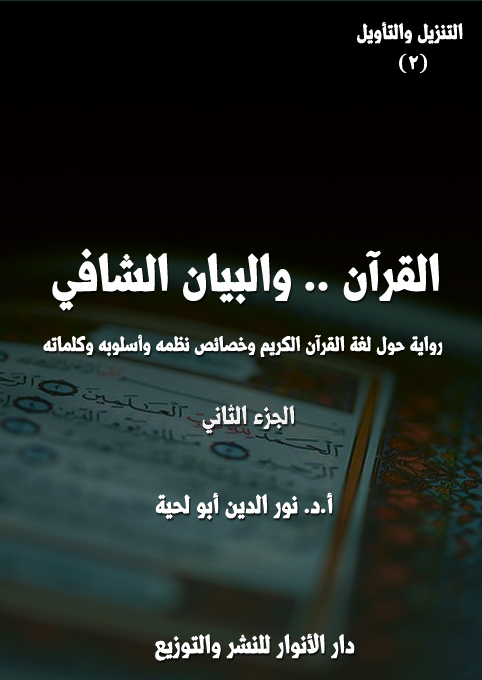

الكتاب:القرآن والبيان الشافي ج2
الوصف: رواية حول لغة القرآن الكريم وخصائص نظمه وأسلوبه وكلماته
السلسلة: التنزيل والتأويل
المؤلف: أ. أ.د. نور الدين أبو لحية
الناشر: دار الأنوار للنشر والتوزيع
الطبعة: الثانية، 1442 هـ
عدد الصفحات: 516
ISBN: 978-620-4-72144-6
لمطالعة الكتاب من تطبيق مؤلفاتي المجاني وهو أحسن وأيسر: هنا

التعريف بالكتاب
يحاول هذا الكتاب أن يستوعب ويُلخص ـ من غير إخلال ـ كل ما ورد في التراث الإسلامي من البحوث المرتبطة بالبيان القرآني، مع تبسيطها وتيسيرها وإبعاد الحشو عنها والجمع بين المدارس المختلفة في ذلك، ليكون مقدمة أساسية لفهم القرآن الكريم، وتدبر معانيه، ولذلك جعلناه الجزء الثاني من هذه السلسلة، بعد الجزء الذي ذكرنا فيه البراهين الدالة على ربانية القرآن، وكونه كلاما إلهيا.
والسبب الذي جعلنا نعطي لهذا الجانب الريادة، قبل سائر البحوث والمعاني المرتبطة بالقرآن الكريم، يرجع إلى أمور منها أن المعارف المرتبطة بالبيان القرآني تعتبر مفاتيح أساسية للتعامل معه، وفهمه واستنباط الحقائق والقيم والمعارف المختلفة منه.
ومنها أن هذه المعارف لها دور كبير في تحقيق تذوق الأسلوب القرآني وجماله، وهو ما يجعل ما يطلق عليه [الإعجاز البياني] عاما لكل العصور، بل شاملا لكل الناس.
ومنها أن أكثر الإشكالات التي وقعت في التاريخ والتراث والواقع سببها سوء الفهم للغة القرآن الكريم وتعابيره؛ فكل الانحرافات التي طالت العقيدة في الله سببها عدم مراعاة ما ورد في اللغة العربية التي جاء بها القرآن الكريم من المجاز والاستعارة والكناية والمشاكلة ونحوها.. وهكذا في كل الجوانب الأخرى.
ومنها أن أكثر الإشكالات والشبهات التي يثيرها من يطلقون على أنفسهم لقب [الحداثيين] أو [التنويريين] أو [القرآنيين] مرتبطة بالتعامل الخاطئ مع اللغة القرآنية، حيث يحملونها أحيانا كثيرة ما لا تحتمل، ولذلك كان التعرف على البيان القرآني ضروريا لمواجهة هذه التحريفات.
القرآن.. والبيان الشافي (2/6)
هذا هو الجزء الثاني من كتاب [القرآن والبيان الشافي]، وهو يتضمن ما يلي:
الفصل الثالث: وتناولنا فيه ما يرتبط بما اعتمد القرآن الكريم من أساليب للتوضيح والتقريب والتصوير، وقد تناولنا فيه كل ما يذكر عادة في أبواب البيان، مع إضافة ما يذكر في الدراسات الحديثة، وخصوصا ما يتعلق منها بالتصوير الفني .. وقد قسمناه إلى أربعة مباحث كبرى، وهي كما يلي:
أولا ـ أسرار التشبيه والتمثيل: وتناولنا فيه خصائص التشبيه، وأغراض التشبيه، وأدوات التشبيه، وأمثال قرآنية.
ثانيا ـ أسرار المجاز والاستعارة، وتناولنا فيه أسرار المجاز، وأسرار الاستعارة.
ثالثا ـ أسرار الكناية والإشارة، وتناولنا فيه أسرار الكناية، وأسرار الإشارة.
رابعا ـ أسرار التصوير والتخييل، وتناولنا فيه الصورة القرآنية ومعرفة الكون، والصورة القرآنية ومعرفة الإنسان، والصورة القرآنية ومعرفة الحياة، والصورة القرآنية ومعرفة الواقع.
الفصل الرابع: وتناولنا فيه، ما يرتبط بالحسن والجمال والإبداع القرآني، وهو أطول الفصول، وأكثرها أمثلة، والغرض منه ليس تذوق الجمال القرآني فقط، وإنما تيسير فهمه؛ فالمحسنات البديعية القرآنية، ليست مجرد طلاء جميل، وإنما تختزن الكثير من المعاني التي لا يمكن تدبر القرآن الكريم من دون تحليلها وفهمها، وقد جمعنا فيه أيضا بين الدراسات القديمة والحديثة، لأنه لا تناقض بينها، كما يتوهم البعض، بل لكل محله وأهله.
وقد قسمناه إلى عشرة مباحث كبرى، وهي كما يلي:
القرآن.. والبيان الشافي (2/7)
أولا. معان غير مقصودة، وتناولنا فيه المشاكلة والمقابلة، والتورية والستر، والتهكم والسخرية، والتسليم الجدلي، والمدح والذم.
ثانيا. الالتفات والاعتراض، وتناولنا فيه أغراض الالتفات، وصيغ الالتفات.
ثالثا. الإيجاز والاختصار، وتناولنا فيه إيجاز القصر، وإيجاز الحذف، وحدف الحروف، وحذف الكلمات، وحذف الجمل.
رابعا. الإطناب والتفصيل، وتناولنا فيه الاعتراض، والاحتراس، والتذييل، والتتميم، والتعليل.
خامسا ـ التكرار والتثبيت، وتناولنا فيه تكرار الألفاظ، وتكرار المعاني.
سادسا ـ التناسب والانسجام، وتناولنا فيه التناسب والتلاؤم، والانسجام والتناسق.
سابعا ـ الجناس والطباق، وتناولنا فيه الجناس، والطباق.
ثامنا ـ النظم المعجز، وتناولنا فيه الألفاظ المختارة، والآيات المحكمة، والفواصل الجميلة، والسور الشريفة.
تاسعا ـ النغم والموسيقى، وتناولنا فيه شهادات مصطفى محمود، وسيد قطب، ومصطفى صادق الرافعي، ومحمد بن عبد الله دراز، وعلماء قدامى .. وشواهد كموسيقى الحروف القرآنية، وموسيقى الكلمات القرآنية، وموسيقى الجمل والمقاطع القرآنية.
عاشرا ـ الإبداع الشامل، وتناولنا فيه الإبداع والتذوق، والإبداع والشهود، والإبداع والإثارة.
القرآن.. والبيان الشافي (2/8)
ثالثا ـ القرآن .. والوضوح والتقريب
ما إن انتهى الحديث إلى هذا المحل، حتى وجدتني قد فارقت تلك الحديقة الجميلة، وأولئك المتسابقين الأذكياء، من غير أن أعرف قرار اللجنة والشيخ حول الفائز منهم.
وقد وجدت نفسي بدل ذلك في شارع مدينة حديثة، تحف بكل مظاهر الجمال والرفاه، وقد استغربت حين سمعت المارة يتحدثون بلغات أجنبية لا أعرفها، ولا أفهمها .. وقلت في نفسي: ويل لي لو أن معلم البيان كلفني بالحوار مع هؤلاء .. فأنى لي أن أفهمهم، أو يفهموني.
وبينما أنا كذلك، إذا برجل من المارة يقول لي بعربية فصيحة: لِم تقف في الشارع هكذا؟ .. أليس لديك أي عمل؟
قلت: الحمد لله .. لقد وجدت أخيرا من أفهمه ويفهمني ..
قال: كل من في هذه المدينة يفهمك وتفهمه ..
قلت: لكني وجدتهم جميعا يتحدثون بلغات أجنبية .. ولم أجد في حديثهم كلمة واحدة باللغة العربية.
قال: لكنك لم تحدثهم بالعربية ليحدثوك بها.
قلت: وأنى لي أن أعلم علمهم بالعربية ..
قال: هم بينهم وبين أنفسهم وأهليهم يتحدثون بلغاتهم .. ويدرسون العلوم المختلفة بها .. لكنهم مع ذلك يعرفون اللغة العربية، ويفهمونها، ويتقنون الحديث بها.
قلت: فكيف جمعوا بين اللغتين؟
قال: لقد سمعوا قوله تعالى: {وَمِنْ آيَاتِهِ خَلْقُ السَّمَاوَاتِ وَالْأَرْضِ وَاخْتِلَافُ
القرآن.. والبيان الشافي (2/9)
أَلْسِنَتِكُمْ وَأَلْوَانِكُمْ إِنَّ فِي ذَلِكَ لَآيَاتٍ لِلْعَالِمِينَ} [الروم: 22]؛ فعلموا أن هذا الاختلاف مقصود .. فلذلك لم يتخلوا عن لغاتهم التي ورثوها عن أجدادهم وأسلافهم .. خاصة وأنهم ورثوا معها الكثير من الآداب والعلوم.
قلت: هذا عن لغتهم .. وماذا عن اللغة العربية؟
قال: لقد سمعوا قوله تعالى: {إِنَّا أَنْزَلْنَاهُ قُرْآنًا عَرَبِيًّا لَعَلَّكُمْ تَعْقِلُونَ} [يوسف: 2]، وقوله: {وَكَذَلِكَ أَنْزَلْنَاهُ قُرْآنًا عَرَبِيًّا وَصَرَّفْنَا فِيهِ مِنَ الْوَعِيدِ لَعَلَّهُمْ يَتَّقُونَ أَوْ يُحْدِثُ لَهُمْ ذِكْرًا} [طه: 113]، وقوله: {إِنَّا جَعَلْنَاهُ قُرْآنًا عَرَبِيًّا لَعَلَّكُمْ تَعْقِلُونَ} [الزخرف: 3] .. فعلموا أنه لا يمكنهم أن يفهموا القرآن حق فهمه، أو يتلوه حق تلاوته، أو يتذوقوه حق تذوقه، ما لم يعرفوه بلغته التي نزل بها.
قلت: وعيت هذا .. لكني مع ذلك لا أزال محتارا في تواجدي في هذه المدينة .. فأنا في هذه الفترة تلميذ لمعلم البيان .. وقد كنت أتصور أني سأتنقل بين البدو وخيامهم، لا بين الحضر وشوارعهم.
قال: القرآن الكريم أكرم من أن يكون خاصا بالبدو أو بالحضر .. ورحمة الله أشمل من أن تخص جهة دون جهة .. وقد علّم الله الإنسان البيان، وهو ليس خاصا بجنس دون جنس، أو أرض دون أرض.
قلت: وعيت هذا .. لكني مع ذلك محتار أين أذهب .. فقد تعودت أن أجد من يأخذ بيدي.
قال: فقد وجدت من يأخذ بيدك.
قلت: أنت؟ .. فإلي أين؟
قال: إلى المعهد الذي يدرب طلبته على القدرة على التوضيح والتصوير والتقريب.
القرآن.. والبيان الشافي (2/10)
قلت: أظنني لا أحتاج إليه .. فقد كنت في مدارس عتيقة تعلمت منها كل أساليب الضبط والتدقيق.
قال: فرق كبير بين الضبط والتدقيق، والتوضيح والتقريب .. فقد يكون الكلام مضبوطا دقيقا، لكنه يفتقر إلى ما يصوره ويقربه ويوضحه ويحوله إلى مشهود ومرئي، وليس مجرد كلام مقروء أو مسموع.
قلت: أنا لا أرى فرقا بينهما.
قال: ألم تسمع قوله تعالى: {وَلَوْ أَنَّمَا فِي الْأَرْضِ مِنْ شَجَرَةٍ أَقْلَامٌ وَالْبَحْرُ يَمُدُّهُ مِنْ بَعْدِهِ سَبْعَةُ أَبْحُرٍ مَا نَفِدَتْ كَلِمَاتُ الله إِنَّ الله عَزِيزٌ حَكِيمٌ} [لقمان: 27]؟
قلت: بلى .. فما فيها مما نحن فيه؟
قال: أرأيت لو أنه بدلها قال: (لا تنفد كلمات الله أبدا) .. فهل تراها تختلف في نتيجتها عما ورد في الآية؟
قلت: لا .. هي تتفق معها تماما.
قال: فلم عدل القرآن الكريم عن ذلك، مع أنه أكثر اختصارا، وأوفر إيجازا، وأقل كلمات، وأسهل حفظا؟
قلت: الآية الكريمة تعطي صورة أكثر وضوحا وجلاء .. ذلك أن أكثر الناس قد لا يعون الحقائق المضبوطة المجردة، ما لم توضع لهم في قوالب حسية يرونها ويشاهدونها ..
قال: فأنت معي إذن في ضرورة احتواء البيان الشافي على ركن الوضوح والتقريب، كاحتوائه على ركن الدقة والضبط.
قلت: أجل .. وبورك فيك .. فقد ذكرتني بما كنت نسيته.
قال: لا عليك .. فهلم معي لنتتلمذ جميعا على حكماء التوضيح والتقريب .. فهم
القرآن.. والبيان الشافي (2/11)
أساتذتك وأساتذتي في هذا الركن.
قلت: أنا أعرف نفسي .. لكني لا أعرفك.
قال: أنا مثلك صاحب قلم وقراطيس .. وقد أفاض الله علي من فضله القدرة على تصوير الحقائق في قوالب القصص والروايات .. وفي قوالب الرسوم والصور .. وفي قوالب الأفلام والمسلسلات.
قلت: هنيئا لك كل هذه القدرات .. فكيف أتيحت لك؟
قال: لقد رزقني الله حب كتابه الكريم، وكلماته المقدسة .. وقد نذرت نفسي لها .. وعندما رحت أبحث عن الطريقة التي أبلغ بها كلمات ربي للجماهير المتعطشة له، وجدت أن أقرب طريق إلى ذلك هو هذه الفنون .. ذلك أن أكثر الناس لا يقرؤون الكتب العلمية البحتة مهما كانت قوتها، بينما يقبلون على ما صيغ منها في مثل تلك القوالب الفنية الجميلة.
قلت: فهل استفتيت من أجاز لك ذلك .. أم أنك أقدمت عليه بحسب ما بدا لك؟
قال: معاذ الله أن أقدم على أمر دون أن أعلم حكم الله فيه.
قلت: فمن استفتيت؟
قال: القرآن الكريم ..
قلت: القرآن الكريم؟
قال: أجل .. لقد وجدته يقول: {نَحْنُ نَقُصُّ عَلَيْكَ أَحْسَنَ الْقَصَصِ بِمَا أَوْحَيْنَا إِلَيْكَ هَذَا الْقُرْآنَ وَإِنْ كُنْتَ مِنْ قَبْلِهِ لَمِنَ الْغَافِلِينَ} [يوسف: 3]، ويقول: {وَتِلْكَ الْأَمْثَالُ نَضْرِبُهَا لِلنَّاسِ وَمَا يَعْقِلُهَا إِلَّا الْعَالِمُونَ} [العنكبوت: 43] .. ففهمت منها أن الله يدعونا إلى استعمال هذه الأساليب والوسائل، لأن أكثر العقول تميل إليها أكثر من ميلها للكلام العادي.
ما إن قال هذا حتى رأيت صورة لبناء ضخم على شكل مصحف كبير، وقد زين
القرآن.. والبيان الشافي (2/12)
بصور جميلة متحركة، وقد وضع أمام كل صورة ما يناسبها من آي القرآن الكريم وكلماته .. فسألت صاحبي عنها، فقال: هذا هو المعهد الذي حدثتك عنه .. وفيه أربعة أقسام .. يهتم كل قسم منها بنوع من أنواع الوضوح والتقريب.
دخلنا القسم الأول من معهد [الوضوح والتقريب]، وقد كتب على بابه [قسم التشبيه والتمثيل] .. وما إن دخلنا إلى أول قاعة من قاعاته، حتى قام الطلبة جميعا، وبكل أدب واحترام، وقد ظننت في البداية أنهم قاموا لأجلي، لكني وجدت صاحبي الذي قادني إلى القسم، يصعد المنصة، ويقول (1): أظن أنكم حضرتم جيدا ما طلبته منكم مما يتعلق بفن التشبيه وأسراره .. فلا يمكن أن ننتقل إلى غيره من الفنون ما لم نتقنه غاية الإتقان.
قال بعض الطلبة: أجل .. وقد علمت ـ من خلال بحثي فيه ـ أنه ركن أساسي من أركان التوضيح والتقريب .. لأنه الواسطة التي يوضح بها الفنان شعوره نحو شيء ما، حتى يصبح واضحا وضوحا وجدانيّا، وحتى يحس السامع بما أحس المتكلم به، فهو ليس دلالة مجردة، ولكنه دلالة فنية، ذلك أنك تقول: ذاك رجل لا ينتفع بعلمه، وليس فيما تقول سوى خبر مجرد عن شعورك نحو قبح هذا الرجل .. فإذا وصفته بما وصف القرآن الكريم به الذين لم يرتفعوا إلى مستوى كتبهم المقدسة؛ فقلت: إنه كالحمار يحمل أسفارا؛ فقد وصفت لنا شعورك نحوه، ودللت على احتقارك له، وسخريتك منه.
قال الأستاذ: فالغرض من التشبيه ـ حسب قولك ـ ليس قاصرا على التوضيح .. بل يتعداه إلى التأثير؟
__________
(1) استفدنا الكثير من المادة العلمية هنا من كتاب: من بلاغة القرآن، البدوي، (147)، وما بعدها، مع التصرف الذي عهدناه في هذه السلسلة.
القرآن.. والبيان الشافي (2/13)
قال الطالب: أجل .. ولذلك رأيت من خلال بحثي في الموضوع قصور ما اعتمده البعض فيه، حيث اكتفوا بالروابط العقلية بين المشبه والمشبه به .. وأغفلوا في كثير من الأحيان وقع الشيء على النفس، وشعورها به سرورا أو ألما، مع أن التشبيه في واقع الأمر ليس سوى إدراك ما بين أمرين من صلة في وقعهما على النفس .. أما تبطن الأمور، وإدراك الصلة التي يربطها العقل وحده فليس ذلك من التشبيه الفنى البليغ ..
ولهذا؛ فإن قيمة التشبيه ليست في نفاسة عناصره، بل بقدرته على التصوير والتأثير .. ولذلك رأيت أن أفضل تعريف للتشبيه هو لمح صلة بين أمرين من حيث وقعهما النفسى.
قال الأستاذ: ما رأيكم فيما يقول زميلكم، وهل توافقونه عليه؟
قال بعض الطلبة (1): أنا أوافقه في ذلك .. فبالتشبيه يوضح الفنان شعوره نحو شيء ما، حتى يصبح واضحا وضوحا وجدانيّا، وحتى يحس السامع بما أحس المتكلم به، فهو ليس دلالة مجردة، ولكنه دلالة فنية، ذلك أنك عندما تقول: ذاك رجل لا ينتفع بعلمه، فليس فيما تقول سوى خبر مجرد عن شعورك نحو قبح هذا الرجل؛ فإذا قلت إنه كالحمار يحمل أسفارا، فقد وصفت لنا شعورك نحوه، ودللت على احتقارك له وسخريتك منه.
قال آخر: وأنا أوافقه أيضا .. ولهذا لم تنسجم نفسي مع ما ذكره بعض علماء البيان من استحسانهم لقول الشاعر في المدح:
فإن تفق الأنام وأنت منهم ... فإن المسك بعض دم الغزال
فليس للمسك من أثر في النفس سوى ارتياحها رائحته الذكية، ولا يمر بالخاطر أبدا أنه بعض دم الغزال .. بل إن هذا الخاطر إذا مرّ بالنفس قلّل من قيمة المسك ومن التّلذذ به .. بالإضافة إلى أن تحول بعض دم الغزال إلى مسك ليس بظاهرة قريبة مألوفة، حتى تقرب إلى
__________
(1) من بلاغة القرآن، البدوي، ص 146.
القرآن.. والبيان الشافي (2/14)
النفس ظاهرة تفوق الممدوح على الأنام، كما أن ظاهرة تحول الممدوح غير واضحة، ومن ذلك كله يبدو أن الرابط هنا مجرد رابط عقلي لا علاقة له بالنفس والوجدان.
قال آخر (1): ومثله أنا .. ولهذا رأيت أن الجامع بين المشبه والمشبه به في القرآن الكريم أعظم من أن يقتصر على الحس .. بل هو يشمل الحس والنفس معا .. بل إن للنفس النصيب الأكبر والحظ الأوفى.
ولهذا رأيت القرآن الكريم ـ حين يشبه محسوسا بمحسوس ـ يرمي أحيانا إلى رسم الصورة كما تحس بها النفس ..
قال الأستاذ: فهلا ضربت لنا أمثلة على ذلك.
قال الطالب (2): من الأمثلة على ذلك قوله تعالى في وصف سفينة نوح عليه السلام: {وَهِيَ تَجْرِي بِهِمْ فِي مَوْجٍ كَالْجِبَالِ} [هود: 42]؛ فالجبال في هذا المشهد القرآني تصور للعين هذه الأمواج الضخمة، وتصور في الوقت نفسه، ما كان يحس به ركاب هذه السفينة وهم يشاهدون هذه الأمواج، من رهبة وجلال معا، كما يحس بهما من يقف أمام شامخ الجبال.
ومثله قوله تعالى، وهو يصف الجبال يوم القيامة: {وَتَكُونُ الْجِبَالُ كَالْعِهْنِ الْمَنْفُوشِ} [القارعة: 5] .. فالعهن المنفوش يصور أمامك منظر هذه الجبال، وقد صارت هشة لا تتماسك أجزاؤها، ويحمل إلى نفسك معنى خفتها ولينها.
ومثله قوله تعالى، وهو يصف القمر: {وَالْقَمَرَ قَدَّرْنَاهُ مَنَازِلَ حَتَّى عَادَ كَالْعُرْجُونِ الْقَدِيمِ} [يس: 39] .. فهذا القمر بهجة السماء وملك الليل، لا يزال يتنقل في منازله حتى يصبح بعد هذه الاستدارة المبهجة، وهذا الضوء الساطع الغامر، يبدد ظلمة الليل، ويحيل
__________
(1) من بلاغة القرآن، البدوي، ص 147.
(2) من بلاغة القرآن، البدوي، ص 147.
القرآن.. والبيان الشافي (2/15)
وحشته أنسا .. يصبح بعد هذا كله دقيقا نحيلا محدودبا لا تكاد العين تنتبه إليه، وكأنما هو في السماء كوكب تائه، لا أهمية له، ولا عناية بأمره، أو لا ترى في كلمة العرجون ووصفهما بالقديم ما يصور لك هيئة الهلال في آخر الشهر، ويحمل إلى نفسك ضآلة أمره معا.
ومثله قوله تعالى، وهو يصف نيران يوم القيامة: {إِنَّهَا تَرْمِي بِشَرَرٍ كَالْقَصْرِ كَأَنَّهُ جِمَالَتٌ صُفْرٌ} [المرسلات: 32 - 33]، فالقصر وهو الشجر الضخم، والجمال الصفر توحي إلى النفس بالضخامة والرهبة معا.
قال الأستاذ: فهل فيكم ـ طلبتي الأعزاء ـ من يضرب لي أمثلة أخرى، مثلما فعل زميلكم النجيب.
قام بعض الطلبة، وقال: أجل .. أستاذنا .. لقد رأيت مثلما رأى زميلي أن للتأثير النفسي دورا كبيرا في اختيار التشبيهات في القرآن الكريم .. ولكن ذلك لا يعزل في أحيان كثيرة اشتراك الطرفين في صفة محسوسة .. لكن مع مراعاة الجانب النفسي.
قال الأستاذ: فهلا ضربت لنا أمثلة على ذلك.
قال الطالب (1): من الأمثلة على ذلك أن القرآن الكريم شبه نساء الجنة، فقال: {فِيهِنَّ قَاصِرَاتُ الطَّرْفِ لَمْ يَطْمِثْهُنَّ إِنْسٌ قَبْلَهُمْ وَلَا جَانٌّ فَبِأَيِّ آلَاءِ رَبِّكُمَا تُكَذِّبَانِ كَأَنَّهُنَّ الْيَاقُوتُ وَالْمَرْجَانُ} [الرحمن: 56 - 58]، وقال: {وَعِنْدَهُمْ قَاصِرَاتُ الطَّرْفِ عِينٌ كَأَنَّهُنَّ بَيْضٌ مَكْنُونٌ} [الصافات: 48 - 49]، وقال: {وَحُورٌ عِينٌ كَأَمْثَالِ اللُّؤْلُؤِ الْمَكْنُونِ} [الواقعة: 22 - 23] .. فليس في الياقوت والمرجان واللؤلؤ المكنون لون فحسب، وإنما هو لون صاف حىّ فيه نقاء وهدوء، وهي أحجار كريمة تُصان ويحرص عليها، وللنساء نصيبهن من الصيانة والحرص، وهن يتخذن من تلك الحجارة زينتهن، فقربت بذلك الصلة واشتد الارتباط،
__________
(1) من بلاغة القرآن، البدوي، ص 148.
القرآن.. والبيان الشافي (2/16)
أما الصلة التي تربطهن بالبيض المكنون، فضلا عن نقاء اللون، فهى هذا الرفق والحذر الذي يجب أن يعامل به كلاهما، أو لا ترى في هذا الكون أيضا صلة تجمع بينهما، وهكذا لا تجد الحس وحده هو الرابط والجامع، ولكن للنفس نصيب أي نصيب ..
وهكذا وجدت أن القرآن الكريم يوضح الأمور المعنوية بالصور المرئية المحسوسة، حيث تلقى عليها أشعة الضوء التي تغمرها فتصبح شديدة الأثر، ومن الأمثلة على ذلك قوله تعالى: {مَثَلُ الَّذِينَ اتَّخَذُوا مِنْ دُونِ الله أَوْلِيَاءَ كَمَثَلِ الْعَنْكَبُوتِ اتَّخَذَتْ بَيْتًا وَإِنَّ أَوْهَنَ الْبُيُوتِ لَبَيْتُ الْعَنْكَبُوتِ لَوْ كَانُوا يَعْلَمُونَ} [العنكبوت: 41]؛ فهذا التشبيه يمثّل وهن ما اعتمد عليه المشركون من عبادتهم غير الله، وأنها لن تفيدهم أي فائدة، فهم يبذلون جهدا يظنونه مثمرا وهو لا يجدى .. وقد اختار العنكبوت ذلك الحيوان الذي يتعب نفسه في البناء، ويبذل جهده في التنظيم، وهو لا يبنى سوى أوهن البيوت وأضعفها، فقرن تلك الصورة المحسوسة إلى الأمر المعنوي، فزادته وضوحا وتأثيرا.
ومثل ذلك عندما يريد القرآن الكريم أن يحدثنا عن أعمال الكفرة، وأنها لا غناء فيها، ولا ثمرة ترجى منها، فهى كعدمها؛ فوجد في الرماد الدقيق، الذي لا تبقي عليه الريح العاصفة، صورة تبين ذلك المعنى أتم بيان وأوفاه، قال تعالى: {مَثَلُ الَّذِينَ كَفَرُوا بِرَبِّهِمْ أَعْمَالُهُمْ كَرَمَادٍ اشْتَدَّتْ بِهِ الرِّيحُ فِي يَوْمٍ عَاصِفٍ لَا يَقْدِرُونَ مِمَّا كَسَبُوا عَلَى شَيْءٍ ذَلِكَ هُوَ الضَّلَالُ الْبَعِيدُ} [إبراهيم: 18]
قال الأستاذ: على حسب ما سمعت منكم، لا يوجد في القرآن الكريم سوى هذين اللونين من التشبيه: تشبيه المحسوس بالمحسوس، وتشبيه المعقول بالمحسوس .. فهل هذا صحيح، أم أن هناك ألوانا أخرى؟
القرآن.. والبيان الشافي (2/17)
قام بعض الطلبة، وقال (1): هناك لون آخر .. يمكننا تسميته التشبيه الخيالي .. وله تأثيره النفسي الكبير .. وهو ما ورد في قوله تعالى: {إِنَّهَا شَجَرَةٌ تَخْرُجُ فِي أَصْلِ الْجَحِيمِ طَلْعُهَا كَأَنَّهُ رُءُوسُ الشَّيَاطِينِ} [الصافات: 64 - 65]، والذي سمح بأن يكون المشبه به خياليّا، هو ما تراكم على الخيال بمرور الزمن من تصورات وأوهام رسمت في النفس صورة رؤوس الشياطين في هيئة بشعة مرعبة، وأخذت هذه الصورة يشتد رسوخها بمرور الزمن، ويقوى فعلها في النفس، حتى كأنها محسوسة ترى بالعين وتلمس باليد، فلما كانت هذه الصورة من القوة إلى هذا الحد ساغ وضعها في موضع التصوير والإيضاح .. ولا يستطيع أحد أن ينكر ما لهذه الصورة من تأثير بالغ في النفس.
ومثله ما ورد في قوله تعالى: {فَلَمَّا رَآهَا تَهْتَزُّ كَأَنَّهَا جَانٌّ وَلَّى مُدْبِرًا وَلَمْ يُعَقِّبْ} [النمل: 10]؛ ففي الخيال صورة قوية للجان، تمثله شديد الحركة التي لا تكاد تهدأ أو تستقر.
قال الأستاذ: جميل جدا كل ما ذكرتم، وهو يدل على ذوقكم الرفيع .. والآن اسمحوا لي أن أبدأ باختباركم وأسئلتكم .. وأول سؤال أريد اختباركم فيه عن التشبيه الوارد في قول الشاعر:
كأن آذريونها ... والشمس فيه كالية
مداهن من ذهب ... فيها بقايا غالية
فما ترون عند مقارنتكم هذا التشبيه بما في القرآن الكريم من تشبيهات؟
قام بعض التلاميذ، وقال: الفرق واضح أستاذنا؛ فالتشبيه الذي ذكره الشاعر، لا يستطيع فهمه عامة الناس، بل لا يفهمه إلا من كان يعيش في مثل حياة الشاعر، وله من أدوات الترف مثل أدواته .. ولذلك لن يحدث فيهم أي تأثير .. بخلاف ما يذكره القرآن
__________
(1) من بلاغة القرآن، البدوي، ص 149.
القرآن.. والبيان الشافي (2/18)
الكريم من تشبيهات؛ فهي كلها مستمدة من أشياء موجودة يراها جميع الناس، وبسهولة ويسر.
قال آخر (1): أجل أستاذنا .. فمن خصائص التشبيه في القرآن الكريم أنه يستمد عناصره من الطبيعة المحسوسة المعروفة .. وذلك هو سر خلوده، فهو باق ما بقيت هذه الطبيعة .. وهو سر عمومه للناس جميعا، يؤثر فيهم لأنهم يدركون عناصره، ويرونها قريبة منهم، وبين أيديهم، ولذلك لا تجد في القرآن الكريم تشبيها مصنوعا يدرك جماله فرد دون آخر، ويتأثر به إنسان دون إنسان.
قال الأستاذ: فهلا ضربتم لي أمثلة على ذلك.
قام بعض الطلبة، وقال: من الأمثلة على ذلك التشبيه الوارد في قوله تعالى: {وَالَّذِينَ كَفَرُوا أَعْمَالُهُمْ كَسَرَابٍ بِقِيعَةٍ يَحْسَبُهُ الظَّمْآنُ مَاءً حَتَّى إِذَا جَاءَهُ لَمْ يَجِدْهُ شَيْئًا وَوَجَدَ الله عِنْدَهُ فَوَفَّاهُ حِسَابَهُ وَاللَّهُ سَرِيعُ الْحِسَابِ} [النور: 39] .. فهذا التشبيه يعتمد السراب، وهو ظاهرة طبيعية يراها الناس جميعا، فيغرهم مرآها، ويمضون إلى السراب يظنونه ماء، فيسعون إليه، يريدون أن يطفئوا حرارة ظمئهم، ولكنهم لا يلبثون أن تملأ الخيبة قلوبهم، حينما يصلون إليه بعد جهد جهيد، فلا يجدون شيئا مما كانوا يؤمّلون، إنه يجد في هذا السراب صورة قوية توضح أعمال الكفرة، التي تظن أنها مجدية نافعة، وما هي بشيء.
قال آخر (2): من الأمثلة على ذلك التشبيه الوارد في قوله تعالى: {ثُمَّ قَسَتْ قُلُوبُكُمْ مِنْ بَعْدِ ذَلِكَ فَهِيَ كَالْحِجَارَةِ أَوْ أَشَدُّ قَسْوَةً وَإِنَّ مِنَ الْحِجَارَةِ لَمَا يَتَفَجَّرُ مِنْهُ الْأَنْهَارُ وَإِنَّ مِنْهَا لَمَا يَشَّقَّقُ فَيَخْرُجُ مِنْهُ الْمَاءُ وَإِنَّ مِنْهَا لَمَا يَهْبِطُ مِنْ خَشْيَةِ الله وَمَا الله بِغَافِلٍ عَمَّا تَعْمَلُونَ} [البقرة: 74] .. فتشبيه قساة القلوب بالحجارة القاسية واضح جدا؛ فالقسوة عند ما تخطر بالذهن،
__________
(1) من بلاغة القرآن، البدوي، ص 149.
(2) من بلاغة القرآن، البدوي، ص 150.
القرآن.. والبيان الشافي (2/19)
يخطر إلى جوارها الحجارة الجاسية القاسية.
قال آخر (1): من الأمثلة على ذلك التشبيه الوارد في قوله تعالى: {قَدْ يَعْلَمُ الله الْمُعَوِّقِينَ مِنْكُمْ وَالْقَائِلِينَ لِإِخْوَانِهِمْ هَلُمَّ إِلَيْنَا وَلَا يَأْتُونَ الْبَأْسَ إِلَّا قَلِيلًا أَشِحَّةً عَلَيْكُمْ فإذا جَاءَ الْخَوْفُ رَأَيْتَهُمْ يَنْظُرُونَ إِلَيْكَ تَدُورُ أَعْيُنُهُمْ كَالَّذِي يُغْشَى عَلَيْهِ مِنَ الْمَوْتِ فإذا ذَهَبَ الْخَوْفُ سَلَقُوكُمْ بِأَلْسِنَةٍ حِدَادٍ أَشِحَّةً عَلَى الْخَيْرِ أُولَئِكَ لَمْ يُؤْمِنُوا فَأَحْبَطَ الله أَعْمَالَهُمْ وَكَانَ ذَلِكَ عَلَى الله يَسِيرًا} [الأحزاب: 18 - 19] .. فالتشبيه يصور الخائف الفزع الجبان بالذي يعالج سكرات الموت، فتدور عينه حول عواده في نظرات شاردة تائهة.
قال آخر (2): من الأمثلة على ذلك التشبيه الوارد في قوله تعالى: {مُحَمَّدٌ رَسُولُ الله وَالَّذِينَ مَعَهُ أَشِدَّاءُ عَلَى الْكُفَّارِ رُحَمَاءُ بَيْنَهُمْ تَرَاهُمْ رُكَّعًا سُجَّدًا يَبْتَغُونَ فَضْلًا مِنَ الله وَرِضْوَانًا سِيمَاهُمْ فِي وُجُوهِهِمْ مِنْ أَثَرِ السُّجُودِ ذَلِكَ مَثَلُهُمْ فِي التَّوْرَاةِ وَمَثَلُهُمْ فِي الْإِنْجِيلِ كَزَرْعٍ أَخْرَجَ شَطْأَهُ فَآزَرَهُ فَاسْتَغْلَظَ فَاسْتَوَى عَلَى سُوقِهِ يُعْجِبُ الزُّرَّاعَ لِيَغِيظَ بِهِمُ الْكُفَّارَ وَعَدَ الله الَّذِينَ آمَنُوا وَعَمِلُوا الصَّالِحَاتِ مِنْهُمْ مَغْفِرَةً وَأَجْرًا عَظِيمًا} [الفتح: 29] .. فهو تشبيه يصور أصحاب رسول الله صلى الله عليه وآله وسلم، وقد بدؤوا قلة ضعافا، ثمّ أخذوا في الكثرة والنماء، حتى اشتد ساعدهم، وقوى عضدهم، وصاروا قوة تملأ قلوب المؤمنين بهجة، وقلوب الكفار حقدا وغيظا .. بصورة الزرع وقد نبت ضئيلا ضعيفا، ثمّ لا يلبث ساقه أن يقوى، بما ينبت حوله من البراعم، فيشتد بها ساعده، ويغلظ، حتى يصبح بهجة الزارع وموضع إعجابه.
قال آخر (3): من الأمثلة على ذلك التشبيه الوارد في قوله تعالى: {إِنَّا أَرْسَلْنَا عَلَيْهِمْ رِيحًا صَرْصَرًا فِي يَوْمِ نَحْسٍ مُسْتَمِرٍّ تَنْزِعُ النَّاسَ كَأَنَّهُمْ أَعْجَازُ نَخْلٍ مُنْقَعِرٍ} [القمر: 19 - 20]،
__________
(1) من بلاغة القرآن، البدوي، ص 150.
(2) من بلاغة القرآن، البدوي، ص 151.
(3) من بلاغة القرآن، البدوي، ص 151.
القرآن.. والبيان الشافي (2/20)
وقوله: {إِنَّا أَرْسَلْنَا عَلَيْهِمْ صَيْحَةً وَاحِدَةً فَكَانُوا كَهَشِيمِ الْمُحْتَظِرِ} [القمر: 31] .. فهذا التشبيه يعتمد أعجاز النخل المنقعر المقتلع عن مغرسه، والهشيم الضعيف الذاوى ليرسم من خلاله صورة قريبة من صورة هؤلاء الصرعى، قد أرسلت عليهم ريح صرصر تنزعهم عن أماكنهم، فألقوا على الأرض مصرّعين هنا وهناك.
قال الأستاذ: جميل جدا كل ما ذكرتموه من الأمثلة .. وأنا أوافقكم تماما عليه .. فالقرآن الكريم يتخذ من الطبيعة التي يراها الناس جميعا ميدانا يقتبس منه صور تشبيهاته، من نباتها وحيوانها وجمادها ..
قام بعض الطلبة، وقال (1): أجل أستاذنا .. فمما اتخذ مشبَّها به من نبات الأرض العرجون، وأعجاز النخل والعصف المأكول، والشجرة الطيبة، والشجرة الخبيثة، والحبة تنبت سبع سنابل، وهشيم المحتظر، والزرع الذي أخرج شطأه.
قال آخر: ومما اتخذ مشبَّها به من حيوانها الإنسان في أحوال مختلفة، والعنكبوت والحمار، والكلب، والفراش، والجراد، والجمال، والأنعام.
قال آخر: ومما اتخذ مشبَّها به من جمادها العهن المنفوش، والصيب، والجبال، والحجارة، والرماد، والياقوت، والمرجان، والخشب.
قال آخر: ومع كل ذلك؛ فقد ورد تشبيه نور الله بمصباح، وصفه بأنه في زجاجة كأنها كوكب درىّ؛ هذا ولا يعكر ما ذكرتموه من استمداد القرآن الكريم عناصر التشبيه من الطبيعة، لأن المصباح باق ما بقي الإنسان في حاجة إلى نور يبدد به ظلام الليل .. وهومتاح لكل الناس مهما كانت أحوالهم.
قال الأستاذ: جميل جدا كل ما ذكرتموه .. وهو يدل على أن القرآن الكريم لا يعني
__________
(1) من بلاغة القرآن، البدوي، ص 152.
القرآن.. والبيان الشافي (2/21)
بنفاسة المشبه به، وإنما يعني العناية كلها باقتراب الصورتين في النفس، وشدة وضوحها وتأثيرها .. والآن هل فيكم من وجد خاصية أخرى في التشبيهات القرآنية غير التي ذكرها زملاؤكم؟
قام بعض الطلبة، وقال (1): أجل .. لقد وجدت من خلال دراستي للتشبيهات القرآنية أنها ليست مجرد عناصر إضافيّة في الجملة تزينها، ولكنها جزء أساسي فيها، بحيث لا يتم المعنى من دونها .. ولذلك كان دورها أن تضع الفكرة في صورة واضحة مؤثرة ..
نعم، القرآن الكريم لا يمضي إلى التشبيه كأنما هو عمل مقصود لذاته، ولكن التشبيه يأتي ضرورة في الجملة، يتطلبه المعنى ليصبح واضحا قويّا ..
ومن الأمثلة على ذلك التشبيه الوارد في قوله تعالى: {صُمٌّ بُكْمٌ عُمْيٌ فَهُمْ لَا يَرْجِعُونَ} [البقرة: 18]؛ ففكرة عدم سماع المنافقين للحق وأنهم لا ينطقون به، ولا ينظرون إلى الأدلة التي تهدي إليه، نقلها التشبيه في صورة قوية مؤثرة.
ومنها التشبيه الوارد في قوله تعالى: {يُجَادِلُونَكَ فِي الْحَقِّ بَعْدَمَا تَبَيَّنَ كَأَنَّمَا يُسَاقُونَ إِلَى الْمَوْتِ وَهُمْ يَنْظُرُونَ} [الأنفال: 6]، ففيه تشبيه شدة الفزع والرهبة التي ألمت بهؤلاء الذين دعوا إلى الجهاد، فلم يدفعهم إيمانهم إليه في رضاء وتسليم، بل ملأ الخوف نفوسهم من أن يكون الموت مصيرهم، بذلك الذي يساق إلى الموت، وهو ينظر.
ومنها التشبيه الوارد في قوله تعالى: {وَلَنْ تَسْتَطِيعُوا أَنْ تَعْدِلُوا بَيْنَ النِّسَاءِ وَلَوْ حَرَصْتُمْ فَلَا تَمِيلُوا كُلَّ الْمَيْلِ فَتَذَرُوهَا كَالْمُعَلَّقَةِ وَإِنْ تُصْلِحُوا وَتَتَّقُوا فَإِنَّ الله كَانَ غَفُورًا رَحِيمًا} [النساء: 129]، والذي يُفهم منه اضطراب المرأة وقلقها، وعدم استقرارها على حال، حتى لتصبح حياتها مليئة بالتعب والعناء.
__________
(1) من بلاغة القرآن، البدوي، ص 153.
القرآن.. والبيان الشافي (2/22)
ومنها التشبيه الوارد في قوله تعالى: {وَمِنَ النَّاسِ مَنْ يَتَّخِذُ مِنْ دُونِ الله أَنْدَادًا يُحِبُّونَهُمْ كَحُبِّ اللَّهِ} [البقرة: 165]، والذي يدل على مدى حب المشركين لآلهتهم.
قال الأستاذ: جميل جدا ما ذكرت .. فللتشبيه في القرآن الكريم دور أساسي في توضيح الفكرة وتصويرها.
قال الطالب: لكني يا أستاذ توقفت في قوله تعالى: {وَإِذْ نَتَقْنَا الْجَبَلَ فَوْقَهُمْ كَأَنَّهُ ظُلَّةٌ} [الأعراف: 171] .. فهذا التشبيه ورد بعد أن اتضحت الفكرة نوع وضوح.
قال الأستاذ (1): أجل .. ولكن مع ذلك؛ فإنك إن تأملت أسلوب الآية الكريمة وجدت هذا التعبير أقوى من أن يقال: وإذ صار الجبل كأنه ظلة، لما في كلمة (نتق) من تصوير انتزاع الجبل من الأرض تصويرا يوحي إلى النفس بالرهبة والفزع، ولما في كلمة (فوقهم) من زيادة هذا التصوير المفزع وتأكيده في النفس، وذلك كله يمهد للتشبيه خير تمهيد، حتى إذا جاء مكن للصورة في النفس، ووطد من أركانها .. ومع ذلك ليس التشبيه في الآية عملا إضافيا، بل فيه إتمام المعنى وإكماله، فهو يوحي بالإحاطة بهم، وشمولهم، والقرب منهم قرب الظلة من المستظل بها، وفي ذلك ما يوحي بخوف سقوطه عليهم.
قام طالب آخر، وقال (2): لقد وجدت ـ أستاذنا الكريم ـ بالإضافة إلى ما ذكره زملائي من خصائص أن التشبيهات القرآنية تتميز بالدقة؛ فالقرآن الكريم يصف ويقيد حتى تصبح الصورة دقيقة واضحة أخاذة.
ومن الأمثلة على ذلك التشبيه الوارد في قوله تعالى: {مَثَلُ الَّذِينَ حُمِّلُوا التَّوْرَاةَ ثُمَّ لَمْ يَحْمِلُوهَا كَمَثَلِ الْحِمَارِ يَحْمِلُ أَسْفَارًا بِئْسَ مَثَلُ الْقَوْمِ الَّذِينَ كَذَّبُوا بِآيَاتِ الله وَاللَّهُ لَا يَهْدِي الْقَوْمَ الظَّالِمِينَ} [الجمعة: 5] .. فقد يتراءى بادئ الرأي أنه يكفي في التشبيه أن يقال: مثلهم
__________
(1) من بلاغة القرآن، البدوي، ص 154.
(2) من بلاغة القرآن، البدوي، ص 153.
القرآن.. والبيان الشافي (2/23)
كمثل الحمار الذي لا يعقل، ولكن الصورة تزداد قوة والتصاقا والتحاما، حين يقرن بين هؤلاء، وقد حملوا التوراة، فلم ينتفعوا بما فيها، وبين الحمار يحمل أسفار العلم ولا يدري مما ضمته شيئا، فتمام الصورتين يأتي من هذا القيد الذي جعل الصلة بينهما قوية وثيقة.
قال آخر (1): أجل .. ومثله التشبيه الوارد في قوله تعالى: {فَمَا لَهُمْ عَنِ التَّذْكِرَةِ مُعْرِضِينَ كَأَنَّهُمْ حُمُرٌ مُسْتَنْفِرَةٌ فَرَّتْ مِنْ قَسْوَرَةٍ} [المدثر: 49 - 51] .. فربما بدا بادئ الرأي أنه يكفي في تصوير إعراضهم وصفهم بأنهم كالحمير، ولكنه في دقته لا يكتفي بذلك، فهو يريد أن يصور نفرتهم من الدعوة، وإسراعهم في إبعاد أنفسهم عنها، إسراعا يمضون فيه على غير هدى، فوصف الحمر بأنها مستنفرة تحمل نفسها على الهرب، وتحثها عليه، يزيد في هربها وفرارها أسد هصور يجري خلفها، فهي تتفرق في كل مكان، وتجري غير مهتدية في جريها .. فصورة هذه الحمر وهي تجد في هربها لا تلوي على شيء، تبغي الفرار من أسد يجري وراءها، تنقل صورة هؤلاء القوم معرضين عن التذكرة، فارين أمام الدعوة لا يلوون على شيء، سائرين على غير هدى .. وفوق ذلك ما تبعثه هذه الصورة من الهزء والسخرية بهم.
قال آخر (2): أجل .. ومثله التشبيه الوارد في قوله تعالى: {وَإِذَا رَأَيْتَهُمْ تُعْجِبُكَ أَجْسَامُهُمْ وَإِنْ يَقُولُوا تَسْمَعْ لِقَوْلِهِمْ كَأَنَّهُمْ خُشُبٌ} [المنافقون: 4]؛ فالآية الكريمة تصف المنافقين بكونهم كالخشب المُسَنَّدَةٌ .. فهي ليست خشبا قائمة في أشجارها لما قد يكون لها من جمال في ذلك الوضع، وليست موضوعة في جدار؛ لأنها حينئذ تؤدي عملا، وتشعر بمدى فائدتها، وليست متخذا منها أبواب ونوافذ، لما فيها من الحسن والزخرف والجمال، ولكنها خشب مسندة قد خلت من الجمال، وتوحي بالغفلة والاستسلام والبلاهة.
__________
(1) من بلاغة القرآن، البدوي، ص 153.
(2) من بلاغة القرآن، البدوي، ص 154.
القرآن.. والبيان الشافي (2/24)
قال آخر (1): أجل .. ولهذا لم يكتف القرآن الكريم بتشبيه الجبال يوم القيامة بالعهن، بل وصفها بالمنفوش، إذ قال: {وَتَكُونُ الْجِبَالُ كَالْعِهْنِ الْمَنْفُوشِ} [القارعة: 5]، وذلك مراعاة للدقة في تصوير هشاشة الجبال.
قال آخر: أجل .. ولهذا لم يكتف القرآن الكريم بتشبيه خروج الناس يوم القيامة بأنهم كالجراد، بل وصفه بالمنتشر، فقال: {خُشَّعًا أَبْصَارُهُمْ يَخْرُجُونَ مِنَ الْأَجْدَاثِ كَأَنَّهُمْ جَرَادٌ مُنْتَشِرٌ} [القمر: 7] حتى يكون دقيقا في تصوير هذه الجموع الحاشدة، خارجة من أجداثها منتشرة في كل مكان تملأ الأفق، ولا يتم هذا التصوير إلا بهذا الوصف الكاشف.
قال الأستاذ: جميل جدا كل ما ذكرتموه .. فهل هناك خواص أخرى غير ما ذكرتم.
قام بعض الطلبة، وقال (2): أجل .. لقد وجدت من خصائص التشبيه في القرآن الكريم المقدرة الفائقة في اختيار ألفاظه الدقيقة المصورة الموحية ..
ومن الأمثلة على ذلك أنه شبه بالجبال في موضعين، أولهما ما ورد في قوله تعالى: {وَهِيَ تَجْرِي بِهِمْ فِي مَوْجٍ كَالْجِبَالِ} [هود: 42]، والثاني ما ورد في قوله: {وَمِنْ آيَاتِهِ الْجَوَارِ فِي الْبَحْرِ كَالْأَعْلَامِ} [الشورى: 32] .. وهنا نلاحظ أنه آثر كلمة الجبال عند الموج، لكونها توحي بالضخامة والجلال معا .. أما عند وصف السفن فقد آثر كلمة الأعلام ـ جمع علم بمعنى جبل ـ وسر إيثارها هو أن الكلمة المشتركة بين عدة معان تتداعى هذه المعاني عند ذكر هذه الكلمة، ولما كان من معاني العلم الراية التي تستخدم للزينة والتجميل، كان ذكر الأعلام محضرا إلى النفس هذا المعنى، إلى جانب إحضارها صورة الجبال، وكان إثارة هذا الخاطر ملحوظا عند ذكر السفن الجارية فوق البحر، تزين سطحه، فكأنما أريد الإشارة إلى جلالها وجمالها معا، وفي كلمة الأعلام وفاء بتأدية هذا المعنى أدق وفاء.
__________
(1) من بلاغة القرآن، البدوي، ص 154.
(2) من بلاغة القرآن، البدوي، ص 154.
القرآن.. والبيان الشافي (2/25)
قال آخر (1): أجل .. وقد اكتشفت نفس الشيء في تشبيه القرآن الكريم الموج، والذي ورد في موضعين، أولهما ما ورد في قوله تعالى: {وَهِيَ تَجْرِي بِهِمْ فِي مَوْجٍ كَالْجِبَالِ} [هود: 42]، والثاني ما ورد في قوله تعالى: {وَإِذَا غَشِيَهُمْ مَوْجٌ كَالظُّلَلِ دَعَوُا الله مُخْلِصِينَ لَهُ الدِّينَ} [لقمان: 32]، وسر هذا التنويع أن الهدف في الآية الأولى يرمي إلى تصوير الموج عاليا ضخما، مما تستطيع كلمة الجبال أن توحي به إلى النفس، أما الآية الثانية فتصف قوما يذكرون الله عند الشدة، وينسونه لدى الرخاء، ويصف موقفا من مواقفهم كانوا فيه خائفين مرتاعين، يركبون سفينة تتقاذفها الأمواج .. ألا ترون أن الموج يكون أشد إرهابا وأقوى تخويفا إذا هو ارتفع حتى ظلل الرؤوس، هنالك يملأ الخوف القلوب، وتذهل الرهبة النفوس، وتبلغ القلوب الحناجر، وفي تلك اللحظة يدعون الله مخلصين له الدين، فلما كان المقام مقام رهبة وخوف، كان وصف الموج بأنه كالظلل أدق في تصوير هذا المقام وأصدق.
قال آخر (2): أجل .. وقد اكتشفت نفس الشيء، حيث رأيت القرآن الكريم يؤثر كلمة {الْقَصْرِ} في قوله تعالى: {إِنَّهَا تَرْمِي بِشَرَرٍ كَالْقَصْرِ} [المرسلات: 32] على الشجر الضخم؛ لأن الاشتراك في هذه الكلمة بين هذا المعنى، ومعنى البيت الضخم يثير المعنيين في النفس معا فتزيد الفكرة عن ضخامة الشرر رسوخا في النفس ..
قال آخر (3): أجل .. وقد اكتشفت نفس الشيء، حيث رأيت القرآن الكريم يؤثر {بُنْيانٌ} في قوله تعالى: {إِنَّ الله يُحِبُّ الَّذِينَ يُقَاتِلُونَ فِي سَبِيلِهِ صَفًّا كَأَنَّهُمْ بُنْيَانٌ مَرْصُوصٌ} [الصف: 4] لما تثيره في النفس من معنى الالتحام والاتصال والاجتماع القوى، وهو ما لا يثار في النفس عند كلمة حائط أو جدار مثلا.
__________
(1) من بلاغة القرآن، البدوي، ص 155.
(2) من بلاغة القرآن، البدوي، ص 155.
(3) من بلاغة القرآن، البدوي، ص 155.
القرآن.. والبيان الشافي (2/26)
قال آخر (1): أجل .. وقد اكتشفت نفس الشيء، حيث رأيت القرآن الكريم يؤثر كلمة {لِباسٌ}، في قوله تعالى: {أُحِلَّ لَكُمْ لَيْلَةَ الصِّيَامِ الرَّفَثُ إِلَى نِسَائِكُمْ هُنَّ لِبَاسٌ لَكُمْ وَأَنْتُمْ لِبَاسٌ لَهُنَّ} [البقرة: 187] لما توحي به تلك الكلمة من شدة الاحتياج، كاحتياج المرء للباس يكون مصدر راحة، وعنوان زينة معا.
قال الأستاذ: أحسنتم جميعا .. فهل هناك خصائص أخرى للتشبيهات القرآنية، غير ما ذكرتم.
قام بعض الطلبة، وقال: لقد رأيت من خلال بحثي في التشبيهات القرآنية أن المشبَّه قد يكون واحدا، ويشبه بأمرين أو أكثر لمحا لصلة تربط بين هذا الأمر وما يشبهه، تثبيتا للفكرة في النفس .. أو لمحا لها من عدة زوايا.
قال الأستاذ: فهلا ضربت لنا أمثلة على ذلك.
قال الطالب (2): من ذلك التشبيه الوارد في قوله تعالى: {مَثَلُهُمْ كَمَثَلِ الَّذِي اسْتَوْقَدَ نَارًا فَلَمَّا أَضَاءَتْ مَا حَوْلَهُ ذَهَبَ الله بِنُورِهِمْ وَتَرَكَهُمْ فِي ظُلُمَاتٍ لَا يُبْصِرُونَ صُمٌّ بُكْمٌ عُمْيٌ فَهُمْ لَا يَرْجِعُونَ أَوْ كَصَيِّبٍ مِنَ السَّمَاءِ فِيهِ ظُلُمَاتٌ وَرَعْدٌ وَبَرْقٌ يَجْعَلُونَ أَصَابِعَهُمْ فِي آذَانِهِمْ مِنَ الصَّوَاعِقِ حَذَرَ الْمَوْتِ وَاللَّهُ مُحِيطٌ بِالْكَافِرِينَ يَكَادُ الْبَرْقُ يَخْطَفُ أَبْصَارَهُمْ كُلَّمَا أَضَاءَ لَهُمْ مَشَوْا فِيهِ وَإِذَا أَظْلَمَ عَلَيْهِمْ قَامُوا وَلَوْ شَاءَ الله لَذَهَبَ بِسَمْعِهِمْ وَأَبْصَارِهِمْ إِنَّ الله عَلَى كُلِّ شَيْءٍ قَدِيرٌ} [البقرة: 17 - 20]
فهو يصور حيرة المنافقين واضطراب أمرهم، بصورة الساري قد أوقد نارا تضيء طريقه، فعرف أين يمشى، ثمّ لم يلبث أن ذهب الضوء، وشمل المكان ظلام دامس، لا يدري السائر فيه أين يضع قدمه، ولا كيف يأخذ سبيله، فهو يتخبط ولا يمشي خطوة حتى
__________
(1) من بلاغة القرآن، البدوي، ص 155.
(2) من بلاغة القرآن، البدوي، ص 155.
القرآن.. والبيان الشافي (2/27)
يرتد خطوات .. ثم يربط هذه الصورة بصورة هذا السائر تحت صيّب من المطر قد صحبه ظلمات ورعد وبرق، أما الرعد فمتناه في الشدة إلى درجة أنه يود اتقاءه بوضع أصابعه إذا استطاع في أذنه، وأما البرق فيكاد يخطف البصر، وأما الظلمات المتراكمة فتحول بين السائر وبين الاهتداء إلى سواء السبيل.
قال آخر (1): ومثل ذلك التشبيهات الواردة في وصف أعمال الكافرين، ومنها ما ورد في قوله تعالى: {مَثَلُ الَّذِينَ كَفَرُوا بِرَبِّهِمْ أَعْمَالُهُمْ كَرَمَادٍ اشْتَدَّتْ بِهِ الرِّيحُ فِي يَوْمٍ عَاصِفٍ لَا يَقْدِرُونَ مِمَّا كَسَبُوا عَلَى شَيْءٍ ذَلِكَ هُوَ الضَّلَالُ الْبَعِيدُ} [إبراهيم: 18] .. فهذا التشبيه يصور أعمال الكافرين من جهة كونها لا أثر لها ولا نتيجة، فيرد إلى الذهن حينئذ هذا الرماد الدقيق الذي لا يقوى على البقاء أمام ريح شديدة لا تهدأ حتى تبدأ؛ لأنها في يوم عاصف .. فهذه الريح كفيلة بتبديد ذرّات هذا الغبار شذر مذر، وأنها لا تبقي عليه ولا تذر، وكذلك أعمال الكافرين، لا تلبث أن تهب عليها ريح الكفر، حتى تبددها ولا تبقي عليها.
ومن ناحية أخرى يصف هذه الأعمال بأنها تغر أصحابها فيظنونها نافعة لهم، مجدية عليهم، حتى إذا جاءوا يوم القيامة لم يجدوا شيئا .. ولهذا اختار السراب ممثلا لهذا الأمل المطمع، ذي النهاية المؤيسة، كما قال تعالى: {وَالَّذِينَ كَفَرُوا أَعْمَالُهُمْ كَسَرَابٍ بِقِيعَةٍ يَحْسَبُهُ الظَّمْآنُ مَاءً حَتَّى إِذَا جَاءَهُ لَمْ يَجِدْهُ شَيْئًا وَوَجَدَ الله عِنْدَهُ فَوَفَّاهُ حِسَابَهُ وَاللَّهُ سَرِيعُ الْحِسَابِ} [النور: 39]
ومن ناحية أخرى ينظر إليها من ناحية ما يلم بصاحبها من اضطراب وفزع، عند ما يجد آماله في أعماله قد انهارت، حيث تظلم الدنيا أمام عينيه ويتزلزل كيانه كهذا الذي اكتنفه الظلام في بحر قد تلاطمت أمواجه، وأطبقت ظلمة السحاب على ظلمة الأمواج؛ فيشعر
__________
(1) من بلاغة القرآن، البدوي، ص 156.
القرآن.. والبيان الشافي (2/28)
بمصيره اليائس، وهلاكه المحتوم .. وهذه هي صورة هؤلاء الكفار عند ما يجيئون إلى أعمالهم، فلا يجدون لها ثوابا ولا نفعا، قال تعالى: {أَوْ كَظُلُمَاتٍ فِي بَحْرٍ لُجِّيٍّ يَغْشَاهُ مَوْجٌ مِنْ فَوْقِهِ مَوْجٌ مِنْ فَوْقِهِ سَحَابٌ ظُلُمَاتٌ بَعْضُهَا فَوْقَ بَعْضٍ إِذَا أَخْرَجَ يَدَهُ لَمْ يَكَدْ يَرَاهَا وَمَنْ لَمْ يَجْعَلِ الله لَهُ نُورًا فَمَا لَهُ مِنْ نُورٍ} [النور: 40]
قال الأستاذ: بورك فيكم جميعا .. والآن حدثوني عما وجدتم في بحثكم عن أغراض التشبيه في القرآن الكريم.
قام بعض الطلبة، وقال (1): لقد وجدت من أهمها استخدامه في الترغيب والترهيب .. ومن أجل هذا كان للمنافقين والكافرين والمشركين نصيب وافر من التشبيه الذي يصور نفسياتهم، ويزيدها وضوحا .. كما يصور وقع الدعوة على قلوبهم، وما كانوا يقابلون به تلك الدعوة من النفور والإعراض.
ومن الأمثلة على ذلك قوله تعالى: {وَيْلٌ لِكُلِّ أَفَّاكٍ أَثِيمٍ يَسْمَعُ آيَاتِ الله تُتْلَى عَلَيْهِ ثُمَّ يُصِرُّ مُسْتَكْبِرًا كَأَنْ لَمْ يَسْمَعْهَا فَبَشِّرْهُ بِعَذَابٍ أَلِيمٍ} [الجاثية: 7 - 8]؛ فهذه الآيات الكريمة تصور حال المشركين الذين استمعوا إلى دعوة الداعى، فلم تثر فيهم رغبة في التفكير فيها، لمعرفة ما قد تنطوي عليه من صدق، وما قد يكون فيها من صواب، بل يحول بينهم وبين ذلك الكبر والأنفة، بالرجل لم يسمع عن الدعوة شيئا، ولم يطرق أذنه عنها نبأ، بل ما أشبههم بمن في أذنه صمم، فهو لا يسمع شيئا مما يدور حوله، وبمن أصيب بالبكم، فهو لا ينطق بصواب اهتدى إليه، وبمن أصيب بالعمى، فهو لا يرى الحق الواضح.
قال آخر (2): ومن الأمثلة على ذلك التشبيه الوارد في قوله تعالى: {فَمَنْ يُرِدِ الله أَنْ
__________
(1) من بلاغة القرآن، البدوي، ص 156.
(2) من بلاغة القرآن، البدوي، ص 157.
القرآن.. والبيان الشافي (2/29)
يَهْدِيَهُ يَشْرَحْ صَدْرَهُ لِلْإِسْلَامِ وَمَنْ يُرِدْ أَنْ يُضِلَّهُ يَجْعَلْ صَدْرَهُ ضَيِّقًا حَرَجًا كَأَنَّمَا يَصَّعَّدُ فِي السَّمَاءِ كَذَلِكَ يَجْعَلُ الله الرِّجْسَ عَلَى الَّذِينَ لَا يُؤْمِنُونَ} [الأنعام: 125]؛ فهو يشبّه ما يشعرون به عندما يسمعون دعوة الحق فتضيق صدورهم بها، بالضيق الذي يشعر به الصاعد في جبل، فهو يجر نفسه ويلهث من التعب والعناء.
قال آخر (1): ومنها التشبيه الوارد في قوله تعالى: {وَلَقَدْ ذَرَأْنَا لِجَهَنَّمَ كَثِيرًا مِنَ الْجِنِّ وَالْإِنْسِ لَهُمْ قُلُوبٌ لَا يَفْقَهُونَ بِهَا وَلَهُمْ أَعْيُنٌ لَا يُبْصِرُونَ بِهَا وَلَهُمْ آذَانٌ لَا يَسْمَعُونَ بِهَا أُولَئِكَ كَالْأَنْعَامِ بَلْ هُمْ أَضَلُّ أُولَئِكَ هُمُ الْغَافِلُونَ} [الأعراف: 179]؛ فهو يشبه هؤلاء الذين لا يستخدمون عقولهم فيما خلقت له، ولم تصغ آذانهم إصغاء من يسمع ليتدبر، بالأنعام؛ فهو يقرنهم بها، ويعقد بينهم وبينها وثيق الصلات .. وفي هذا التشبيه نلاحظ كيف مهد له التمهيد الصالح، فجعل لهم قلوبا لا يفقهون بها، وأعينا لا يبصرون بها، وآذانا لا يسمعون بها .. وهو ما يمهد للنفس أن تنزلهم منزلة البهائم.
قال آخر (2): ومنها التشبيه الوارد في قوله تعالى: {فَمَا لَهُمْ عَنِ التَّذْكِرَةِ مُعْرِضِينَ كَأَنَّهُمْ حُمُرٌ مُسْتَنْفِرَةٌ فَرَّتْ مِنْ قَسْوَرَةٍ} [المدثر: 49 - 51]؛ فهو يصورهم، وقد جدوا في الهرب والنفرة من تلك الدعوة الجديدة بصورة الحمر الفارة من السباع.
قال آخر (3): ومنها التشبيه الوارد في قوله تعالى: {وَاتْلُ عَلَيْهِمْ نَبَأَ الَّذِي آتَيْنَاهُ آيَاتِنَا فَانْسَلَخَ مِنْهَا فَأَتْبَعَهُ الشَّيْطَانُ فَكَانَ مِنَ الْغَاوِينَ وَلَوْ شِئْنَا لَرَفَعْنَاهُ بِهَا وَلَكِنَّهُ أَخْلَدَ إِلَى الْأَرْضِ وَاتَّبَعَ هَوَاهُ فَمَثَلُهُ كَمَثَلِ الْكَلْبِ إِنْ تَحْمِلْ عَلَيْهِ يَلْهَثْ أَوْ تَتْرُكْهُ يَلْهَثْ ذَلِكَ مَثَلُ الْقَوْمِ الَّذِينَ كَذَّبُوا بِآيَاتِنَا فَاقْصُصِ الْقَصَصَ لَعَلَّهُمْ يَتَفَكَّرُونَ} [الأعراف: 175 - 176]؛ وهو تشبيه يليق
__________
(1) من بلاغة القرآن، البدوي، ص 157.
(2) من بلاغة القرآن، البدوي، ص 157.
(3) من بلاغة القرآن، البدوي، ص 158.
القرآن.. والبيان الشافي (2/30)
بالذي آمن ثمّ كفر، وانسلخ عن الإيمان واتبع هواه، فقد عاش مثال الذلة والهوان، وقد وجد القرآن الكريم في الكلب شبها يبين عن خسته وحقارته، ومما يزيد في الصلة بين الاثنين أن هذا المنسلخ يظل غير مطمئن القلب، مزعزع العقيدة، مضطرب الفؤاد، سواء أدعوته إلى الإيمان، أم أهملت أمره، كالكلب يظل لاهثا، طردته وزجرته، أم تركته وأهملته.
قال آخر (1): ومنها التشبيه الوارد في قوله تعالى: {لَهُ دَعْوَةُ الْحَقِّ وَالَّذِينَ يَدْعُونَ مِنْ دُونِهِ لَا يَسْتَجِيبُونَ لَهُمْ بِشَيْءٍ إِلَّا كَبَاسِطِ كَفَّيْهِ إِلَى الْمَاءِ لِيَبْلُغَ فَاهُ وَمَا هُوَ بِبَالِغِهِ وَمَا دُعَاءُ الْكَافِرِينَ إِلَّا فِي ضَلَالٍ} [الرعد: 14]، وهو تشبيه يصورهم بالذي يبسط كفه إلى الماء، يريد وهو على تلك الحال أن ينقل الماء إلى فيه، وما هو ببالغه.
قال آخر (2): ومنها التشبيه الوارد في قوله تعالى: {مَثَلُ مَا يُنْفِقُونَ فِي هَذِهِ الْحَيَاةِ الدُّنْيَا كَمَثَلِ رِيحٍ فِيهَا صِرٌّ أَصَابَتْ حَرْثَ قَوْمٍ ظَلَمُوا أَنْفُسَهُمْ فَأَهْلَكَتْهُ وَمَا ظَلَمَهُمُ الله وَلَكِنْ أَنْفُسَهُمْ يَظْلِمُونَ} [آل عمران: 117] .. وهو يشبه صدقاتهم التي كان جديرا بها أن تثمر وتزهر، ويفيدوا منها، لكن ريح الشرك هبت عليها فأبادتها، كما تهب الريح الشديدة البرد بزرع كان ينتظر إثماره فأهلكته.
قال آخر (3): ومثلها طائفة من التشبيهات ترتبط بيوم القيامة، تصور أحداثها لتحدث تأثيرها النفسي الكبير، ومن الأمثلة على ذلك التشبيه الوارد في قوله تعالى: {وَلِلَّهِ غَيْبُ السَّمَاوَاتِ وَالْأَرْضِ وَمَا أَمْرُ السَّاعَةِ إِلَّا كَلَمْحِ الْبَصَرِ أَوْ هُوَ أَقْرَبُ إِنَّ الله عَلَى كُلِّ شَيْءٍ قَدِيرٌ} [النحل: 77] .. وهو يشبه قدرة الله على أن يأتي بذلك اليوم، بأسرع مما يتصور المتصورون، بأسرع ما يراه الرائى، وهو لمح البصر.
__________
(1) من بلاغة القرآن، البدوي، ص 157.
(2) من بلاغة القرآن، البدوي، ص 158.
(3) من بلاغة القرآن، البدوي، ص 158.
القرآن.. والبيان الشافي (2/31)
قال آخر (1): ومثله تشبيه المعاد بالمبدأ، كما قال تعالى: {كَمَا بَدَأَكُمْ تَعُودُونَ} [الأعراف: 29] .. فهو يقرب أمر البعث إلى الأذهان بتوجيه النظر إلى بدء الإنسان، وأن هذا البعث صورة من هذا البدء.
قال آخر (2): ومثله ما ورد في قوله تعالى: {وَهُوَ الَّذِي يُرْسِلُ الرِّيَاحَ بُشْرًا بَيْنَ يَدَيْ رَحْمَتِهِ حَتَّى إِذَا أَقَلَّتْ سَحَابًا ثِقَالًا سُقْنَاهُ لِبَلَدٍ مَيِّتٍ فَأَنْزَلْنَا بِهِ الْمَاءَ فَأَخْرَجْنَا بِهِ مِنْ كُلِّ الثَّمَرَاتِ كَذَلِكَ نُخْرِجُ الْمَوْتَى لَعَلَّكُمْ تَذَكَّرُونَ} [الأعراف: 57] .. فهو يوجه النظر إلى السحاب الثّقال الذي يسوقه الله لبلد ميت، حتى إذا نزل ماؤه دبت الحياة في أوصال الأرض، فخرج الثمر منها يانعا، وهكذا يخلق الله الحياة في الموتى.
قال آخر: ومثله ما ورد في قوله تعالى: {وَيَوْمَ يَحْشُرُهُمْ كَأَنْ لَمْ يَلْبَثُوا إِلَّا سَاعَةً مِنَ النَّهَارِ يَتَعَارَفُونَ بَيْنَهُمْ قَدْ خَسِرَ الَّذِينَ كَذَّبُوا بِلِقَاءِ الله وَمَا كَانُوا مُهْتَدِينَ} [يونس: 45] .. فهو يذكّر بأنه إذا جاء يوم القيامة استيقظ الناس، وحينها يشعرون بأنهم لم يعيشوا في الدنيا إلا وقتا محدودا جدا، وهو يصور حالتهم النفسية حينذاك بصورة الألم للخسارة الشديدة التي منوا بها نتيجة تفريطهم في الاستعداد للآخرة.
قال آخر (3): وقد ورد ما هو قريب من هذا المعنى في قوله تعالى: {يَسْأَلُونَكَ عَنِ السَّاعَةِ أَيَّانَ مُرْسَاهَا فِيمَ أَنْتَ مِنْ ذِكْرَاهَا إِلَى رَبِّكَ مُنْتَهَاهَا إِنَّمَا أَنْتَ مُنْذِرُ مَنْ يَخْشَاهَا كَأَنَّهُمْ يَوْمَ يَرَوْنَهَا لَمْ يَلْبَثُوا إِلَّا عَشِيَّةً أَوْ ضُحَاهَا} [النازعات: 42 - 46]
قال آخر (4): وهو يصور هؤلاء الذين قد بعثوا، خارجين من أجداثهم في كثرة لا تدرك العين مداها، ويرسمهم بصورة تدل على الغزارة والحركة والانبعاث، قال تعالى:
__________
(1) من بلاغة القرآن، البدوي، ص 158.
(2) من بلاغة القرآن، البدوي، ص 158.
(3) من بلاغة القرآن، البدوي، ص 158.
(4) من بلاغة القرآن، البدوي، ص 158.
القرآن.. والبيان الشافي (2/32)
{خُشَّعًا أَبْصَارُهُمْ يَخْرُجُونَ مِنَ الْأَجْدَاثِ كَأَنَّهُمْ جَرَادٌ مُنْتَشِرٌ مُهْطِعِينَ إِلَى الدَّاعِ يَقُولُ الْكَافِرُونَ هَذَا يَوْمٌ عَسِرٌ} [القمر: 7 - 8]
قال آخر (1): ويصوّرهم ضعافا يتهافتون مسرعين إلى الداعي كي يحاسبهم، بصورة الفراش يسرع إلى الضوء، فيقول: {الْقَارِعَةُ مَا الْقَارِعَةُ وَمَا أَدْرَاكَ مَا الْقَارِعَةُ يَوْمَ يَكُونُ النَّاسُ كَالْفَرَاشِ الْمَبْثُوثِ} [القارعة: 1 - 4]
قال آخر (2): ويصوّر إسراعهم بالذين كانوا يسرعون في خطوهم، ليعبدوا أنصابا مقامة، وتماثيل منحوتة، كانوا متحمسين في عبادتها، يقبلون عليها في رغبة واشتياق، فيقول: {يَوْمَ يَخْرُجُونَ مِنَ الْأَجْدَاثِ سِرَاعًا كَأَنَّهُمْ إِلَى نُصُبٍ يُوفِضُونَ} [المعارج: 43]
قال آخر (3): ويصوّر المجرمين، وما سوف يجدونه يومئذ من ذلة وخزى، ويرسم وجوههم، وقد علتها الكآبة، فيقول: {وَالَّذِينَ كَسَبُوا السَّيِّئَاتِ جَزَاءُ سَيِّئَةٍ بِمِثْلِهَا وَتَرْهَقُهُمْ ذِلَّةٌ مَا لَهُمْ مِنَ الله مِنْ عَاصِمٍ كَأَنَّمَا أُغْشِيَتْ وُجُوهُهُمْ قِطَعًا مِنَ اللَّيْلِ مُظْلِمًا أُولَئِكَ أَصْحَابُ النَّارِ هُمْ فِيهَا خَالِدُونَ} [يونس: 27]
قال آخر (4):ويصوّر طعامهم بقوله: {إِلَّا مَنْ رَحِمَ الله إِنَّهُ هُوَ الْعَزِيزُ الرَّحِيمُ إِنَّ شَجَرَتَ الزَّقُّومِ طَعَامُ الْأَثِيمِ كَالْمُهْلِ يَغْلِي فِي الْبُطُونِ كَغَلْيِ الْحَمِيمِ} [الدخان: 42 - 46]، وقوله: {إِنَّا أَعْتَدْنَا لِلظَّالِمِينَ نَارًا أَحَاطَ بِهِمْ سُرَادِقُهَا وَإِنْ يَسْتَغِيثُوا يُغَاثُوا بِمَاءٍ كَالْمُهْلِ يَشْوِي الْوُجُوهَ بِئْسَ الشَّرَابُ وَسَاءَتْ مُرْتَفَقًا} [الكهف: 29] .. وهو تشبيه يثير في النفس خوفا وانزعاجا .. فهو يتكون من شجرة الزقوم التي يتناولونها فيحسون بنيران تحرق أمعاءهم؛ فكأنما طعموا نحاسا ذائبا أو زيتا ملتهبا، وإذا ما اشتد بهم الظمأ واستغاثوا قدمت إليهم مياه كالنحاس
__________
(1) من بلاغة القرآن، البدوي، ص 159.
(2) من بلاغة القرآن، البدوي، ص 159.
(3) من بلاغة القرآن، البدوي، ص 159.
(4) من بلاغة القرآن، البدوي، ص 159.
القرآن.. والبيان الشافي (2/33)
والزيت تشوي وجوههم.
قال آخر (1):ويصوّر آكل الربا يوم القيامة بصورة منفرة، فيقول: {الَّذِينَ يَأْكُلُونَ الرِّبَا لَا يَقُومُونَ إِلَّا كَمَا يَقُومُ الَّذِي يَتَخَبَّطُهُ الشَّيْطَانُ مِنَ الْمَسِّ} [البقرة: 275]؛ وهي صورة ذلك الذي أصابه مس من الشيطان، فهو لا ينهض واقفا حتى يسقط، ولا يقوم إلّا ليقع.
قال آخر (2): وهكذا يصوّر القرآن الكريم يوم القيامة، وكيف تفقد الجبال تماسكها، وتصير {كَالْعِهْنِ الْمَنْفُوشِ} [القارعة: 5]، وتفقد السماء نظام جاذبيتها، فتنشق، ويصبح الجوّ ذا لون أحمر كالورد: {فَإِذَا انْشَقَّتِ السَّمَاءُ فَكَانَتْ وَرْدَةً كَالدِّهَانِ} [الرحمن: 37] .. وأما جهنم فضخامتها وقوة لهبها مما لا يستطيع العقل تصوره، ومما لا يمكن أن تقاس إليها تلك النيران التي نشاهدها في حياتنا .. فشررها ليس كهذا الشرر الذي يشبه الهباءة اليسيرة، وإنما هو شرر ضخم ضخامة غير معهودة، فهو مثل أشجار ضخمة تتهاوى، أو جمال صفر تتساقط: {إِنَّهَا تَرْمِي بِشَرَرٍ كَالْقَصْرِ كَأَنَّهُ جِمَالَتٌ صُفْرٌ} [المرسلات: 32 - 33] .. وأما الجنة ففي سعة لا يدرك العقل مداها، ولا يستطيع التعبير أن يحدها، أو يعرف منتهاها، ويأتي التشبيه ممدا في الخيال، كي يسبح ما يشاء أن يسبح، فيقول: {سَابِقُوا إِلَى مَغْفِرَةٍ مِنْ رَبِّكُمْ وَجَنَّةٍ عَرْضُهَا كَعَرْضِ السَّمَاءِ وَالْأَرْضِ} [الحديد: 21] .. وهكذا نرى التشبيه يعمل على تمثيل الغائب حتى يصبح حاضرا، ويقرب البعيد النائي حتى يصير قريبا دانيا.
قال آخر (3): وهكذا يصوّر القرآن الكريم فناء هذا العالم الذي نراه مزدهرا أمامنا، عامرا بألوان الجمال، فيخيل إلينا استمراره وخلوده، بالزرع يرتوى من الماء فيصبح بهيجا نضرا، يعجب رائيه، ولكنه لا يلبث أن يذبل ويصفر، ويصبح هشيما تذروه الرياح.
__________
(1) من بلاغة القرآن، البدوي، ص 159.
(2) من بلاغة القرآن، البدوي، ص 159.
(3) من بلاغة القرآن، البدوي، ص 160.
القرآن.. والبيان الشافي (2/34)
وقد أوجز القرآن الكريم مرة في هذا التشبيه وأطنب في أخرى، ليستقر معناه في النفس، ويحدث أثره في القلب، قال تعالى: {وَاضْرِبْ لَهُمْ مَثَلَ الْحَيَاةِ الدُّنْيَا كَمَاءٍ أَنْزَلْنَاهُ مِنَ السَّمَاءِ فَاخْتَلَطَ بِهِ نَبَاتُ الْأَرْضِ فَأَصْبَحَ هَشِيمًا تَذْرُوهُ الرِّيَاحُ وَكَانَ الله عَلَى كُلِّ شَيْءٍ مُقْتَدِرًا} [الكهف: 45]، وقال: {اعْلَمُوا أَنَّمَا الْحَيَاةُ الدُّنْيَا لَعِبٌ وَلَهْوٌ وَزِينَةٌ وَتَفَاخُرٌ بَيْنَكُمْ وَتَكَاثُرٌ فِي الْأَمْوَالِ وَالْأَوْلَادِ كَمَثَلِ غَيْثٍ أَعْجَبَ الْكُفَّارَ نَبَاتُهُ ثُمَّ يَهِيجُ فَتَرَاهُ مُصْفَرًّا ثُمَّ يَكُونُ حُطَامًا وَفِي الْآخِرَةِ عَذَابٌ شَدِيدٌ وَمَغْفِرَةٌ مِنَ الله وَرِضْوَانٌ وَمَا الْحَيَاةُ الدُّنْيَا إِلَّا مَتَاعُ الْغُرُورِ} [الحديد: 20]، وقال: {إِنَّمَا مَثَلُ الْحَيَاةِ الدُّنْيَا كَمَاءٍ أَنْزَلْنَاهُ مِنَ السَّمَاءِ فَاخْتَلَطَ بِهِ نَبَاتُ الْأَرْضِ مِمَّا يَأْكُلُ النَّاسُ وَالْأَنْعَامُ حَتَّى إِذَا أَخَذَتِ الْأَرْضُ زُخْرُفَهَا وَازَّيَّنَتْ وَظَنَّ أَهْلُهَا أَنَّهُمْ قَادِرُونَ عَلَيْهَا أَتَاهَا أَمْرُنَا لَيْلًا أَوْ نَهَارًا فَجَعَلْنَاهَا حَصِيدًا كَأَنْ لَمْ تَغْنَ بِالْأَمْسِ كَذَلِكَ نُفَصِّلُ الْآيَاتِ لِقَوْمٍ يَتَفَكَّرُونَ} [يونس: 24]
قال آخر (1): وهكذا يصوّر القرآن الكريم الإنفاق بأجمل الصور وأكثرها تأثيرا في النفس، قال تعالى: {وَمَثَلُ الَّذِينَ يُنْفِقُونَ أَمْوَالَهُمُ ابْتِغَاءَ مَرْضَاتِ الله وَتَثْبِيتًا مِنْ أَنْفُسِهِمْ كَمَثَلِ جَنَّةٍ بِرَبْوَةٍ أَصَابَهَا وَابِلٌ فَآتَتْ أُكُلَهَا ضِعْفَيْنِ فَإِنْ لَمْ يُصِبْهَا وَابِلٌ فَطَلٌّ وَاللَّهُ بِمَا تَعْمَلُونَ بَصِيرٌ} [البقرة: 265] .. فلهذا التشبيه أثره في دفع النفس إلى بذل المال راضية مغتبطة، كما يغتبط من له جنة قد استقرت على مرتفع من الأرض، ترتوي بما هي في حاجة إليه من ماء المطر، وتترك ما زاد عن حاجتها، فلا يظل بها حتى يتلفها، كما يستقر في المنخفضات، فجاءت الجنة بثمرها مضاعفا.
قال آخر (2): ويشبه القرآن الكريم مضاعفة جزاء الحسنة بمضاعفة الثمرة، لهذا الذي يبذر حبة قمح، فتخرج عودا يحمل سبع سنابل، في كل سنبلة مائة حبة، قال تعالى:
__________
(1) من بلاغة القرآن، البدوي، ص 160.
(2) من بلاغة القرآن، البدوي، ص 160.
القرآن.. والبيان الشافي (2/35)
{مَثَلُ الَّذِينَ يُنْفِقُونَ أَمْوَالَهُمْ فِي سَبِيلِ الله كَمَثَلِ حَبَّةٍ أَنْبَتَتْ سَبْعَ سَنَابِلَ فِي كُلِّ سُنْبُلَةٍ مِائَةُ حَبَّةٍ وَاللَّهُ يُضَاعِفُ لِمَنْ يَشَاءُ وَاللَّهُ وَاسِعٌ عَلِيمٌ} [البقرة: 261]
قال آخر (1): ويشبه القرآن الكريم من لا يراعي في صدقته ما تقتضيه من الأخلاق والآداب بالحجر الصلد قد غطته قشرة رقيقة من التراب؛ فخاله الرائي صالحا للزرع والإنبات، ولكن وابل المطر لم يلبث أن أزال هذه القشرة فبدا الحجر على حقيقته، صلدا لا يستطيع أحد أن يجد فيه موضع خصب، ولا تربة صالحة للزراعة، قال تعالى: {يَا أَيُّهَا الَّذِينَ آمَنُوا لَا تُبْطِلُوا صَدَقَاتِكُمْ بِالْمَنِّ وَالْأَذَى كَالَّذِي يُنْفِقُ مَالَهُ رِئَاءَ النَّاسِ وَلَا يُؤْمِنُ بِاللَّهِ وَالْيَوْمِ الْآخِرِ فَمَثَلُهُ كَمَثَلِ صَفْوَانٍ عَلَيْهِ تُرَابٌ فَأَصَابَهُ وَابِلٌ فَتَرَكَهُ صَلْدًا لَا يَقْدِرُونَ عَلَى شَيْءٍ مِمَّا كَسَبُوا وَاللَّهُ لَا يَهْدِي الْقَوْمَ الْكَافِرِينَ} [البقرة: 264] ..
انظروا كيف اختار الله تعالى كلمة {صَفْوَانٍ} لتمثل القلب الخالي من الشعور الإنساني النبيل، لكن الصدقة تغطيه بثوب رقيق حتى يخاله الرائي قلبا ينبض بحب الإنسانية، لكن الرياء والمن والأذى لا تلبث أن تزيل هذا الغشاء الرقيق، فيظهر القلب على حقيقته قاسيا صلبا لا يلين.
قال الأستاذ: بورك فيكم جميعا .. والآن حدثوني عما وجدتم في بحثكم عن أدوات التشبيه في القرآن الكريم.
قام بعض الطلبة، وقال (2): لقد وجدت من أهمها استخدامه الكاف، لا للتشبيه الفني الخالص، بل لإيقاع التساوي بين أمرين، ومن أمثلة ذلك قوله تعالى: {وَعَدَ الله الْمُنَافِقِينَ وَالْمُنَافِقَاتِ وَالْكُفَّارَ نَارَ جَهَنَّمَ خَالِدِينَ فِيهَا هِيَ حَسْبُهُمْ وَلَعَنَهُمُ الله وَلَهُمْ عَذَابٌ
__________
(1) من بلاغة القرآن، البدوي، ص 160.
(2) من بلاغة القرآن، البدوي، ص 161.
القرآن.. والبيان الشافي (2/36)
مُقِيمٌ كَالَّذِينَ مِنْ قَبْلِكُمْ كَانُوا أَشَدَّ مِنْكُمْ قُوَّةً وَأَكْثَرَ أَمْوَالًا وَأَوْلَادًا فَاسْتَمْتَعُوا بِخَلَاقِهِمْ فَاسْتَمْتَعْتُمْ بِخَلَاقِكُمْ كَمَا اسْتَمْتَعَ الَّذِينَ مِنْ قَبْلِكُمْ بِخَلَاقِهِمْ وَخُضْتُمْ كَالَّذِي خَاضُوا أُولَئِكَ حَبِطَتْ أَعْمَالُهُمْ فِي الدُّنْيَا وَالْآخِرَةِ وَأُولَئِكَ هُمُ الْخَاسِرُونَ} [التوبة: 68 - 69]، وقوله: {إِنَّا أَرْسَلْنَا إِلَيْكُمْ رَسُولًا شَاهِدًا عَلَيْكُمْ كَمَا أَرْسَلْنَا إِلَى فِرْعَوْنَ رَسُولًا فَعَصَى فِرْعَوْنُ الرَّسُولَ فَأَخَذْنَاهُ أَخْذًا وَبِيلًا} [المزمل: 15 - 16]
ففي هذه الآيات الكريمة نرى موازنة بين الكفار المعاصرين لرسول الله صلى الله عليه وآله وسلم وبين من سبقهم، ويبين لهم الوجوه التي يتفقون فيها معهم .. ويذكر ما أصاب سابقيهم، ثم يترك لهم فرصة التفكير ليصلوا بأنفسهم إلى ما ينتظرهم من العواقب .. وهي طريقة مؤثرة في النفس، حيث تضع لها شبيها، وتتركها تصل بنفسها إلى النتيجة في سكينة وهدوء، لا أن تقذف بها في وجهها، فربما تتمرد وتثور.
قال آخر (1): ومن الأمثلة على كاف التساوي قوله تعالى: {إِنَّا أَوْحَيْنَا إِلَيْكَ كَمَا أَوْحَيْنَا إِلَى نُوحٍ وَالنَّبِيِّينَ مِنْ بَعْدِهِ وَأَوْحَيْنَا إِلَى إِبْرَاهِيمَ وَإِسْمَاعِيلَ وَإِسْحَاقَ وَيَعْقُوبَ وَالْأَسْبَاطِ وَعِيسَى وَأَيُّوبَ وَيُونُسَ وَهَارُونَ وَسُلَيْمَانَ وَآتَيْنَا دَاوُودَ زَبُورًا} [النساء: 163]، وهو تشبيه يهدف إلى إزالة الغرابة عن نفوس السامعين، واستبعادهم نزول الوحي على الرسول صلى الله عليه وآله وسلم، فالقرآن الكريم يقرنه بمن لا يشكّون في رسالته، ليأنسوا بدعوة النبى صلى الله عليه وآله وسلم.
قال آخر (2): ومن الأمثلة على كاف التساوي قوله تعالى في معرض التهكم بالجاحدين: {وَلَقَدْ جِئْتُمُونَا فُرَادَى كَمَا خَلَقْنَاكُمْ أَوَّلَ مَرَّةٍ وَتَرَكْتُمْ مَا خَوَّلْنَاكُمْ وَرَاءَ ظُهُورِكُمْ} [الأنعام: 94]
__________
(1) من بلاغة القرآن، البدوي، ص 161.
(2) من بلاغة القرآن، البدوي، ص 161.
القرآن.. والبيان الشافي (2/37)
قال آخر (1): ومثله في معرض الاستنكار، قوله تعالى: {وَمِنَ النَّاسِ مَنْ يَقُولُ آمَنَّا بِاللَّهِ فإذا أُوذِيَ فِي الله جَعَلَ فِتْنَةَ النَّاسِ كَعَذَابِ اللَّهِ} [العنكبوت: 10] .. فسر الاستنكار هو تسوية عذاب الناس بعذاب الله.
قال آخر (2): وقد تأتي الكاف وسيلة للإيضاح، وتقوم هي وما بعدها مقام المثال للقاعدة، ولهذا دوره الكبير في التأثير والإقناع، ومن الأمثلة على ذلك قوله تعالى: {إِنَّ الَّذِينَ كَفَرُوا لَنْ تُغْنِيَ عَنْهُمْ أَمْوَالُهُمْ وَلَا أَوْلَادُهُمْ مِنَ الله شَيْئًا وَأُولَئِكَ هُمْ وَقُودُ النَّارِ كَدَأْبِ آلِ فِرْعَوْنَ وَالَّذِينَ مِنْ قَبْلِهِمْ كَذَّبُوا بِآيَاتِنَا فَأَخَذَهُمُ الله بِذُنُوبِهِمْ وَاللَّهُ شَدِيدُ الْعِقَابِ} [آل عمران: 10 - 11]؛ فقد ضرب الله تعالى المثل بآل فرعون لأولئك الذين لن تغني عنهم أموالهم ولا أولادهم من الله شيئا.
قال آخر (3): ومثل ذلك الكاف الواردة في قوله تعالى: {خَلَقَ الإنسان مِنْ صَلْصَالٍ كَالْفَخَّارِ} [الرحمن: 14]، وقوله: {وَإِذْ تَخْلُقُ مِنَ الطِّينِ كَهَيْئَةِ الطَّيْرِ بِإِذْنِي فَتَنْفُخُ فِيهَا فَتَكُونُ طَيْرًا بِإِذْنِي} [المائدة: 110]
قال الأستاذ: فهل هناك أدوات أخرى للتشبيه غير الكاف؟
قام بعض الطلبة، وقال (4): أجل .. القرآن الكريم يستعمل {كَذَلِكَ} للتشبيه .. وقد وردت فيه في أكثر من مائة موضع دالة على التشبيه، وعلى غيره.
وهي تدل عليه عند ما يراد عقد الصلة بين أمرين، ولمح ما بينهما من ارتباط، وهنا يؤدي التشبيه دوره في إيضاح المعنى وتوطيده في النفس، ومن الأمثلة على ذلك قوله تعالى: {وَهُوَ الَّذِي يُرْسِلُ الرِّيَاحَ بُشْرًا بَيْنَ يَدَيْ رَحْمَتِهِ حَتَّى إِذَا أَقَلَّتْ سَحَابًا ثِقَالًا سُقْنَاهُ لِبَلَدٍ مَيِّتٍ
__________
(1) من بلاغة القرآن، البدوي، ص 161.
(2) من بلاغة القرآن، البدوي، ص 162.
(3) من بلاغة القرآن، البدوي، ص 162.
(4) من بلاغة القرآن، البدوي، ص 162.
القرآن.. والبيان الشافي (2/38)
فَأَنْزَلْنَا بِهِ الْمَاءَ فَأَخْرَجْنَا بِهِ مِنْ كُلِّ الثَّمَرَاتِ كَذَلِكَ نُخْرِجُ الْمَوْتَى لَعَلَّكُمْ تَذَكَّرُونَ} [الأعراف: 57] .. فقد استخدمت {كَذَلِكَ} هنا لبيان الصلة الوثيقة بين بعث الحياة في الموتى، وبين بعث الحياة في الأرض الميتة، حيث تنبت من كل الثمرات .. وهذا مما يشترك في رؤيته الجميع، حيث يرون أرضا ميتة لا حياة فيها، ثم لا يلبث السحاب الثقال أن يفرغ عليها مطره، فلا تلبث أن تزدهر وتخرج من كل زوج بهيج، وذلك مما يبعث في النفس الاطمئنان إلى حقيقة البعث، والإيمان بها، فلا جرم انعقد التشبيه بين البعثين، وزاد التشبيه الفكرة جلاء.
قال آخر (1): ومثل ذلك التشبيه الوارد في قوله تعالى: {إِنَّا بَلَوْنَاهُمْ كَمَا بَلَوْنَا أَصْحَابَ الْجَنَّةِ إِذْ أَقْسَمُوا لَيَصْرِمُنَّهَا مُصْبِحِينَ وَلَا يَسْتَثْنُونَ فَطَافَ عَلَيْهَا طَائِفٌ مِنْ رَبِّكَ وَهُمْ نَائِمُونَ فَأَصْبَحَتْ كَالصَّرِيمِ فَتَنَادَوْا مُصْبِحِينَ أَنِ اغْدُوا عَلَى حَرْثِكُمْ إِنْ كُنْتُمْ صَارِمِينَ فَانْطَلَقُوا وَهُمْ يَتَخَافَتُونَ أَنْ لَا يَدْخُلَنَّهَا الْيَوْمَ عَلَيْكُمْ مِسْكِينٌ وَغَدَوْا عَلَى حَرْدٍ قَادِرِينَ فَلَمَّا رَأَوْهَا قَالُوا إِنَّا لَضَالُّونَ بَلْ نَحْنُ مَحْرُومُونَ قَالَ أَوْسَطُهُمْ أَلَمْ أَقُلْ لَكُمْ لَوْلَا تُسَبِّحُونَ قَالُوا سُبْحَانَ رَبِّنَا إِنَّا كُنَّا ظَالِمِينَ فَأَقْبَلَ بَعْضُهُمْ عَلَى بَعْضٍ يَتَلَاوَمُونَ قَالُوا يَا وَيْلَنَا إِنَّا كُنَّا طَاغِينَ عَسَى رَبُّنَا أَنْ يُبْدِلَنَا خَيْرًا مِنْهَا إِنَّا إِلَى رَبِّنَا رَاغِبُونَ كَذَلِكَ الْعَذَابُ وَلَعَذَابُ الْآخِرَةِ أَكْبَرُ لَوْ كَانُوا يَعْلَمُونَ} [القلم: 17 - 33] .. فهذا التشبيه يصور أصحاب هذه الجنة، وقد أقسموا أن يستأثروا بثمر جنتهم، وأن يجنوا ثمارها مبكرين في الصباح، ولم يدر بخلدهم الاستعانة بالله في عملهم، وبينما هم يستعجلون قدوم الصباح، ويحلمون بالثروة التي ستدرّها عليهم حديقتهم، طاف على تلك الجنة طائف أباد ثمرها وهم نائمون، وفي بكرة الصباح أسرع بعضهم ينادي بعضا أن الخير في البكور، فانطلقوا لا تكاد تسمع لأقدامهم وقعا، يتهامسون
__________
(1) من بلاغة القرآن، البدوي، ص 163.
القرآن.. والبيان الشافي (2/39)
وهم يتحدثون، كي لا يسمع مسكين صوتهم، فيتبعهم، ولقد وصلوا إلى حديقتهم، واطمأنوا إلى أنهم سيقدرون على إحراز غلتها، ومنع المساكين منها فما راعهم إلا أن وجدوا أشجارهم بلا ثمار، وجنتهم جرداء مقفرة، هنالك ملأ الندم قلوبهم، وأخذ بعضهم يلوم بعضا، يتحسرون على أمل قد ضاع، وعلى ما اقترفوه من ظلم وطغيان .. فهذا العذاب الذي صار إليه هؤلاء القوم، عذاب من فقد أمله وقد كان قريبا من يده، وعذاب من يؤنبه ضميره على جرم اقترفه، وقد رأى جزاءه أمام عينيه، وهو عذاب نفسي أليم جدير بأن يكون مثالا ينذر به الله كل من يتصرف تصرف أصحاب هذه الجنة.
قال آخر (1): ومثل ذلك التشبيه الوارد في قوله تعالى: {يَا أَيُّهَا الَّذِينَ آمَنُوا إِذَا ضَرَبْتُمْ فِي سَبِيلِ الله فَتَبَيَّنُوا وَلَا تَقُولُوا لِمَنْ أَلْقَى إِلَيْكُمُ السَّلَامَ لَسْتَ مُؤْمِنًا تَبْتَغُونَ عَرَضَ الْحَيَاةِ الدُّنْيَا فَعِنْدَ الله مَغَانِمُ كَثِيرَةٌ كَذَلِكَ كُنْتُمْ مِنْ قَبْلُ فَمَنَّ الله عَلَيْكُمْ فَتَبَيَّنُوا إِنَّ الله كَانَ بِمَا تَعْمَلُونَ خَبِيرًا} [النساء: 94]، وقوله: {قَالُوا بَلْ وَجَدْنَا آبَاءَنَا كَذَلِكَ يَفْعَلُونَ} [الشعراء: 74] .. وما على نسق هذه الآيات مما تعقد فيه الكاف صلة بين أمرين.
قال آخر (2): وقد تأتي {كَذَلِكَ} في كثير من الآيات بمعنى [مثل] في قولنا: (مثلك لا يكذب)، نقصد بذلك الشهادة بعدم الكذب لكونه ليس من صفاتك، ومن الأمثلة على ذلك قوله تعالى: {وَمَثَلُ الَّذِينَ يُنْفِقُونَ أَمْوَالَهُمُ ابْتِغَاءَ مَرْضَاتِ الله وَتَثْبِيتًا مِنْ أَنْفُسِهِمْ كَمَثَلِ جَنَّةٍ بِرَبْوَةٍ أَصَابَهَا وَابِلٌ فَآتَتْ أُكُلَهَا ضِعْفَيْنِ فَإِنْ لَمْ يُصِبْهَا وَابِلٌ فَطَلٌّ وَاللَّهُ بِمَا تَعْمَلُونَ بَصِيرٌ أَيَوَدُّ أَحَدُكُمْ أَنْ تَكُونَ لَهُ جَنَّةٌ مِنْ نَخِيلٍ وَأَعْنَابٍ تَجْرِي مِنْ تَحْتِهَا الْأَنْهَارُ لَهُ فِيهَا مِنْ كُلِّ الثَّمَرَاتِ وَأَصَابَهُ الْكِبَرُ وَلَهُ ذُرِّيَّةٌ ضُعَفَاءُ فَأَصَابَهَا إِعْصَارٌ فِيهِ نَارٌ فَاحْتَرَقَتْ كَذَلِكَ يُبَيِّنُ الله لَكُمُ الْآيَاتِ لَعَلَّكُمْ تَتَفَكَّرُونَ} [البقرة: 265 - 266]، وهي تعني أن الله تعالى يبين الآيات بذلك
__________
(1) من بلاغة القرآن، البدوي، ص 163.
(2) من بلاغة القرآن، البدوي، ص 164.
القرآن.. والبيان الشافي (2/40)
البيان الجليّ الواضح المؤثر، لعله يثمر ثمرته فيدعو سامعيه إلى التفكير والتدبر
قال آخر (1): ومثل ذلك قوله تعالى: {إِنَّ الَّذِينَ كَذَّبُوا بِآيَاتِنَا وَاسْتَكْبَرُوا عَنْهَا لَا تُفَتَّحُ لَهُمْ أَبْوَابُ السَّمَاءِ وَلَا يَدْخُلُونَ الْجَنَّةَ حَتَّى يَلِجَ الْجَمَلُ فِي سَمِّ الْخِيَاطِ وَكَذَلِكَ نَجْزِي الْمُجْرِمِينَ} [الأعراف: 40]، فليس المراد هنا أن المجرمين يجزون جزاء يشبه الجزاء الموصوف في الآية الكريمة، وإنما يجزون هذا الجزاء نفسه، من غلق أبواب السماء في وجوههم وأنهم لا يدخلون الجنة أبدا.
قال آخر (2): ومثل ذلك قوله تعالى: {تِلْكَ الْقُرَى نَقُصُّ عَلَيْكَ مِنْ أَنْبَائِهَا وَلَقَدْ جَاءَتْهُمْ رُسُلُهُمْ بِالْبَيِّنَاتِ فَمَا كَانُوا لِيُؤْمِنُوا بِمَا كَذَّبُوا مِنْ قَبْلُ كَذَلِكَ يَطْبَعُ الله عَلَى قُلُوبِ الْكَافِرِينَ} [الأعراف: 101]، فالمراد من ذلك أن الله يطبع على قلوب الكافرين ذلك الطبع الذي يحول بينهم وبين الإيمان بما كذبوا من قبل.
قال آخر (3): وقد تأتي {كَذلِكَ} لتحقيق المعنى وتثبيته، ولا يبدو فيها التشبيه، كما في قوله تعالى: {قَالَ رَبِّ أَنَّى يَكُونُ لِي غُلَامٌ وَقَدْ بَلَغَنِيَ الْكِبَرُ وَامْرَأَتِي عَاقِرٌ قَالَ كَذَلِكَ الله يَفْعَلُ مَا يَشَاءُ} [آل عمران: 40]، وقوله: {قَالَتْ أَنَّى يَكُونُ لِي غُلَامٌ وَلَمْ يَمْسَسْنِي بَشَرٌ وَلَمْ أَكُ بَغِيًّا قَالَ كَذَلِكِ قَالَ رَبُّكِ هُوَ عَلَيَّ هَيِّنٌ وَلِنَجْعَلَهُ آيَةً لِلنَّاسِ وَرَحْمَةً مِنَّا وَكَانَ أَمْرًا مَقْضِيًّا} [مريم: 20 - 21]
قال آخر (4): وهي تفيد التحقيق وتأكيد الجملة، ويكثر ذلك عند ما يليها فعل ماض، كما في قوله تعالى: {أَوَمَنْ كَانَ مَيْتًا فَأَحْيَيْنَاهُ وَجَعَلْنَا لَهُ نُورًا يَمْشِي بِهِ فِي النَّاسِ كَمَنْ مَثَلُهُ فِي الظُّلُمَاتِ لَيْسَ بِخَارِجٍ مِنْهَا كَذَلِكَ زُيِّنَ لِلْكَافِرِينَ مَا كَانُوا يَعْمَلُونَ وَكَذَلِكَ جَعَلْنَا فِي كُلِّ قَرْيَةٍ أَكَابِرَ مُجْرِمِيهَا لِيَمْكُرُوا فِيهَا وَمَا يَمْكُرُونَ إِلَّا بِأَنْفُسِهِمْ وَمَا يَشْعُرُونَ} [الأنعام: 122 - 123]،
__________
(1) من بلاغة القرآن، البدوي، ص 164.
(2) من بلاغة القرآن، البدوي، ص 164.
(3) من بلاغة القرآن، البدوي، ص 164.
(4) من بلاغة القرآن، البدوي، ص 165.
القرآن.. والبيان الشافي (2/41)
وقوله: {فَذَلِكُمُ الله رَبُّكُمُ الْحَقُّ فَمَاذَا بَعْدَ الْحَقِّ إِلَّا الضَّلَالُ فَأَنَّى تُصْرَفُونَ كَذَلِكَ حَقَّتْ كَلِمَتُ رَبِّكَ عَلَى الَّذِينَ فَسَقُوا أَنَّهُمْ لَا يُؤْمِنُونَ} [يونس: 32 - 33]، وقوله: {ثُمَّ نُنَجِّي رُسُلَنَا وَالَّذِينَ آمَنُوا كَذَلِكَ حَقًّا عَلَيْنَا نُنْجِ الْمُؤْمِنِينَ} [يونس: 103]، وقوله: {الَّذِينَ آمَنُوا وَتَطْمَئِنُّ قُلُوبُهُمْ بِذِكْرِ الله أَلَا بِذِكْرِ الله تَطْمَئِنُّ الْقُلُوبُ الَّذِينَ آمَنُوا وَعَمِلُوا الصَّالِحَاتِ طُوبَى لَهُمْ وَحُسْنُ مَآبٍ كَذَلِكَ أَرْسَلْنَاكَ فِي أُمَّةٍ قَدْ خَلَتْ مِنْ قَبْلِهَا أُمَمٌ لِتَتْلُوَ عَلَيْهِمُ الَّذِي أَوْحَيْنَا إِلَيْكَ وَهُمْ يَكْفُرُونَ بِالرَّحْمَنِ قُلْ هُوَ رَبِّي لَا إِلَهَ إِلَّا هُوَ عَلَيْهِ تَوَكَّلْتُ وَإِلَيْهِ مَتَابِ} [الرعد: 28 - 30]
قال الأستاذ: بورك فيكم جميعا .. والآن دعونا ننتقل إلى فن آخر من فنون التوضيح والتقريب التي اعتمدها القرآن الكريم، وأثنى كثيرا على العاقلين لها، المفكرين فيها.
قام بعض الطلبة، وقال: لاشك أنك تقصد الأمثال، فهي التي قال عنها ربنا: {وَتِلْكَ الْأَمْثَالُ نَضْرِبُهَا لِلنَّاسِ وَمَا يَعْقِلُهَا إِلَّا الْعَالِمُونَ} [العنكبوت: 43]، وقال: {تُؤْتِي أُكُلَهَا كُلَّ حِينٍ بِإِذْنِ رَبِّهَا وَيَضْرِبُ الله الْأَمْثَالَ لِلنَّاسِ لَعَلَّهُمْ يَتَذَكَّرُونَ} [إبراهيم: 25]، وقال: {وَتِلْكَ الْأَمْثَالُ نَضْرِبُهَا لِلنَّاسِ لَعَلَّهُمْ يَتَفَكَّرُونَ} [الحشر: 21]
قال آخر: وهي التي اتفق جميع العقلاء على أهميتها واعتبارها وتأثيرها، وقد قال بعضهم يذكر ذلك: (فهذه وأمثالها من الأمثال لتقريب المراد، وتفهيم المعنى، وإيصاله إلى ذهن السامع، وإحضاره في نفسه صورة المثال الذي مَثَّل به، فإنه قد يكون أقربَ إلى تَعقُّله وفهمه وضبطه واستحضاره له باستحضار نظيره؛ فإنَّ النفسَ تأنس بالنظائر والأشباه الأُنسَ التام، وتنفِرُ من الغُرْبة والوَحْدَة وعدم النظير؛ ففي الأمثال من تأنيس النفس وسرعة قبولها وانقيادها لما ضرب لها مثله من الحق أمرٌ لا يجحده أحد، ولا ينكره، وكلما ظهرتْ لها الأمثال ازْدَادَ المعنى ظهورًا، ووضوحًا، فالأمثالُ شواهدُ المعنى المراد، ومزكية
القرآن.. والبيان الشافي (2/42)
له، فهي: {كَزَرْعٍ أَخْرَجَ شَطْأَهُ فَآزَرَهُ فَاسْتَغْلَظَ فَاسْتَوَى عَلَى سُوقِهِ} [الفتح: 29]، وهي خاصة العقل ولبّه وثمرته) (1)
وقال آخر: (إنّ التمثيل ليس إلاّ إبراز المعنى المقصود في معرض الأمر المشهور، وتحلية المعقول بحلية المحسوس، وتصوير أوابد المعاني بهيئة المأنوس، لاستمالة الوهم واستنزاله عن معارضته للعقل، واستعصائه عليه في إدراك الحقائق الخفيّة، وفهم الدّقائق الأبيّة؛ كي يتابعه فيما يقتضيه، ويشايعه إلى ما لا يرتضيه، ولذلك شاعت الأمثال في الكتب الإلهية والكلمات النبوية، وذاعت في عبارات البلغاء، وإشارات الحكماء .. فالتمثيل ألطف ذريعة إلى تسخير الوهم للعقل واستنزاله من مقام الاستعصاء عليه، وأقوى وسيلة إلى تفهيم الجاهل الغبىّ، وقمع سورة الجامح الأبي، كيف لا، وهو رفع الحجاب عن وجوه المعقولات الخفية، وإبرازها لها في معرض المحسوسات الجلية، وإبداء للمنكر في صورة المعروف، وإظهار للوحشي في هيئة المألوف) (2)
قال الأستاذ: ما دمتم قد ذكرتم هذا؛ فاسمحوا لي أن أختبر عقلكم وفهمكم وتذكركم في هذه الجوانب .. وسأحدد أنا الطلبة الذين يجيبون (3).
أشار إلى بعض الطلبة، وقال: اذكر لي معنى المثال الوارد في قوله تعالى: {اللَّهُ نُورُ السَّمَاوَاتِ وَالْأَرْضِ مَثَلُ نُورِهِ كَمِشْكَاةٍ فِيهَا مِصْبَاحٌ الْمِصْبَاحُ فِي زُجَاجَةٍ الزُّجَاجَةُ كَأَنَّهَا كَوْكَبٌ دُرِّيٌّ يُوقَدُ مِنْ شَجَرَةٍ مُبَارَكَةٍ زَيْتُونَةٍ لَا شَرْقِيَّةٍ وَلَا غَرْبِيَّةٍ يَكَادُ زَيْتُهَا يُضِيءُ وَلَوْ لَمْ تَمْسَسْهُ نَارٌ نُورٌ عَلَى نُورٍ يَهْدِي الله لِنُورِهِ مَنْ يَشَاءُ وَيَضْرِبُ الله الْأَمْثَالَ لِلنَّاسِ وَاللَّهُ بِكُلِّ شَيْءٍ
__________
(1) إعلام الموقعين عن رب العالمين (2/ 425)
(2) هامش تفسير الفخر الرازي:1/ 156.
(3) استفدنا معظم الشروح الواردة هنا، والمتعلقة بالأمثال القرآنية من كتاب [إعلام الموقعين] في الفصل الذي خصصه بالأمثال، ثم طبع بعدها كتابا، لأنه أحسن ما كتب في الموضوع، وأيسره، وقد حذفنا منه كل المواضع التي ينتصر فيها ابن القيم لرؤيته العقدية المعروفة. أما ما كتب غيره من التفاصيل الكثيرة؛ فسنذكرها في المحال المناسبة لها، لأن الغرض هنا قاصر على فهم الأمثال القرآنية.
القرآن.. والبيان الشافي (2/43)
عَلِيمٌ} [النور: 35]
قال الطالب (1): النور المراد هنا هو النور الذي يغمر القلب، ويشرق على الضمير، فيهدي إلى سواء السبيل، ذلك أن القلب ليس في حاجة إلى أكثر من هذا المصباح، يلقي عليه ضوءه، فيهتدي إلى الحق، وأقوم السبل .. وفي اختيار هذا التشبيه إيحاء بحالة القلب وقد لفه ظلام الشك، فهو متردد قلق خائف، ثم لا يلبث نور اليقين أن يشرق عليه، فيجد الراحة والأمن والاستقرار، فهو كساري الليل يخبط في الظلام على غير هدى، حتى إذا أوى إلى بيته فوجد هذا المصباح في المشكاة، وجد الأمن سبيله إلى قلبه، واستقرت الطمأنينة في نفسه، وشعر بالسرور يغمر فؤاده .. ونرى الآية الكريمة تصف ضوء هذا المصباح وتتأنق في وصفه، بما يصور قوته وصفاءه، فهذا المصباح له زجاجة تكسب ضوءه قوة، تجعله يتلألأ كأنه كوكب له بريق الدر ولمعانه، أما زيت هذا المصباح فمن شجرة مباركة قد أخذت من الشمس بأوفى نصيب، فصفا لذلك زيتها حتى ليكاد يضيء ولو لم تمسسه نار .. وبذلك فإن هذا المصباح جدير أن يبدد ظلمة الليل، ومثله جدير أن يبدد ظلام الشك، ويمزق دجى الكفر والنفاق.
أشار الأستاذ إلى طالب آخر، وقال: اذكر لي معنى المثال الوارد في قوله تعالى في حق المنافقين: {مَثَلُهُمْ كَمَثَلِ الَّذِي اسْتَوْقَدَ نَارًا فَلَمَّا أَضَاءَتْ مَا حَوْلَهُ ذَهَبَ الله بِنُورِهِمْ وَتَرَكَهُمْ فِي ظُلُمَاتٍ لَا يُبْصِرُونَ صُمٌّ بُكْمٌ عُمْيٌ فَهُمْ لَا يَرْجِعُونَ أَوْ كَصَيِّبٍ مِنَ السَّمَاءِ فِيهِ ظُلُمَاتٌ وَرَعْدٌ وَبَرْقٌ يَجْعَلُونَ أَصَابِعَهُمْ فِي آذَانِهِمْ مِنَ الصَّوَاعِقِ حَذَرَ الْمَوْتِ وَاللَّهُ مُحِيطٌ بِالْكَافِرِينَ يَكَادُ الْبَرْقُ يَخْطَفُ أَبْصَارَهُمْ كُلَّمَا أَضَاءَ لَهُمْ مَشَوْا فِيهِ وَإِذَا أَظْلَمَ عَلَيْهِمْ قَامُوا وَلَوْ شَاءَ الله لَذَهَبَ بِسَمْعِهِمْ وَأَبْصَارِهِمْ إِنَّ الله عَلَى كُلِّ شَيْءٍ قَدِيرٌ} [البقرة: 17 ـ 20]
__________
(1) من بلاغة القرآن، البدوي، ص 150.
القرآن.. والبيان الشافي (2/44)
قال الطالب (1): ضرب الله تعالى في هذه الآيات الكريمة للمنافقين بحسب حالهم مَثَلين: مثلًا ناريًا، ومثلًا مائيًا، لما في النار والماء من الإضاءة والإشراق والحياة؛ فإن النار مادة النور، والماء مادة الحياة، وقد جعل الله الوحي الذي أنزله من السماء متضمنًا لحياة القلوب واستنارتها، ولهذا سماه روحًا ونورًا، وجعل قَابِلِيه أحياءَ في النور، ومن لم يرفع به رأسًا أمواتًا في الظلمات، وأخبر عن حال المنافقين بالنسبة إلى حظهم من الوحي أنهم بمنزلة من استوقد نارًا لتضيء له وينتفع بها، وهذا لأنهم دخلوا في الإسلام فاستضاءوا به، وانتفعوا به، وآمنوا به، وخالطوا المسلمين، ولكن لما لم يكن لصحبتهم مادة من قلوبهم من نور الإسلام طفئ عنهم، وذهب الله بنورهم، ولم يقل بنارهم؛ فإن النار فيها الإضاءة والإحراق، فذهب الله بما فيها من الإضاءة، وأبقى عليهم ما فيها من الإحراق، وتركهم في ظلمات لا يبصرون، فهذا حال من أبصر ثم عَمي، وعَرف ثم أنكر، ودخل في الإسلام ثم فارقه بقلبه، فهو لا يرجع إليه؛ ولهذا قال: {فَهُمْ لَا يَرْجِعُونَ} ثم ذكر حالهم بالنسبة إلى المثل المائي، فشبههم بأصحاب صَيِّب ـ وهو المطر الذي يَصوب، أي ينزل من السماء ـ فيه ظلمات ورعد وبرق، فلضعف بصائرهم، وعقولهم اشتدت عليهم زواجر القرآن ووعيده وتهديده وأوامره ونواهيه وخطابه الذي يشبه الصواعق، فحالهم كحال من أصابه مطر فيه ظلمة ورعد وبرق، فلضعفه وخوره جعل أصبعيه في أذنيه، وغمض عينيه خشية من صاعقة تصيبه.
أشار الأستاذ إلى طالب آخر، وقال: اذكر لي معنى المثال الوارد في قوله تعالى في حق المنافقين: {صُمٌّ بُكْمٌ عُمْيٌ فَهُمْ لَا يَرْجِعُونَ أَوْ كَصَيِّبٍ مِنَ السَّمَاءِ فِيهِ ظُلُمَاتٌ وَرَعْدٌ وَبَرْقٌ يَجْعَلُونَ أَصَابِعَهُمْ فِي آذَانِهِمْ مِنَ الصَّوَاعِقِ حَذَرَ الْمَوْتِ وَاللَّهُ مُحِيطٌ بِالْكَافِرِينَ يَكَادُ الْبَرْقُ
__________
(1) إعلام الموقعين، 2/ 270.
القرآن.. والبيان الشافي (2/45)
يَخْطَفُ أَبْصَارَهُمْ كُلَّمَا أَضَاءَ لَهُمْ مَشَوْا فِيهِ وَإِذَا أَظْلَمَ عَلَيْهِمْ قَامُوا وَلَوْ شَاءَ اللَّهُ لَذَهَبَ بِسَمْعِهِمْ وَأَبْصَارِهِمْ إِنَّ اللَّهَ عَلَى كُلِّ شَيْءٍ قَدِيرٌ} [البقرة: 18 ـ 20]
قال الطالب (1): الصيب هو المطر، وقد شبه الله تعالى به هدى السماء، الذي تلقاه الرسول من ربه، ليحيى به موات القلوب، كما يحيى المطر جديب الأرض .. وفى القرآن الكريم وعد ووعيد، وتكاليف وأعباء، كالعبادات، والجهاد فى سبيل الله، ومجاهدة النفس فى اجتناب المحرمات .. ثم هو مع هذا رحمة وشفاء .. وفى الغيث الذي ينزل من السماء ظلمات من السحب المتراكمة، ورعد وبرق .. ثم هو مع هذا نعمة وحياة .. كذلك كانت آيات القرآن الكريم حين تتنزل، تنخلع لها قلوب المنافقين، وتنفطر منها أفئدتهم، لما يتوقعون فيها من صواعق تدمدم عليهم، وتفضح مكنون صدورهم، بما يبيتون ما لا يرضى من القول، وما لا يحمد من العمل .. فإذا تلقى الرسول وحيا من ربه، وأعلنه فى أصحابه، اصطكت به أسماع المنافقين، ووجفت قلوبهم هلعا وفزع .. هذا هو حظهم من كتاب الله، وذلك مبلغ ما ينالهم من هذا الخير العظيم .. اضطراب، وذعر، وهم مقيم .. حذر الخزي والفضيحة، وذلك شأنهم تماما مع الغيث .. الناس، والحيوان، والنبات، وحتى الجماد .. يحيون بهذا الغيث، ويترقبون فى شوق ولهف مواقيت نزوله، دون أن يتأدى إليهم خوف أو قلق، مما يصحبه من ظلام ورعود، لأنهم يعلمون ما وراء هذه الرعود والبروق من رى وحياة، أما المنافقون، فشأنهم مع هذا الغيث كشأنهم مع كل خير .. يلتوون به، ويستقبلونه بنفوسهم المريضة، فلا يصيبهم منه إلا الشر، الذي يكمن فى كل خير تستقبله النفوس المريضة، وفى كل نعمة تقع فى يد السفهاء من الناس .. الرعود والصواعق، هى التي يستقبلها أولئك المنافقون من كل ما تحمل هذه الظاهرة الطبيعية، من خير ورحمة.
__________
(1) التفسير القرآني للقرآن (1/ 38).
القرآن.. والبيان الشافي (2/46)
قال الأستاذ: إذا كان المثل مرتبطا بالمنافقين، فلم ختم الله تعالى المثل بقوله: {وَاللَّهُ مُحِيطٌ بِالْكَافِرِينَ} [البقرة: 19]؟
قال الطالب (1): في ذلك إشارة إلى دورة من دورات المنافقين، حيث انتهى بهم ترددهم بين الإيمان والكفر، إلى الكفر الغليظ .. وهذا ما يشير إليه قوله تعالى: {إِنَّ الَّذِينَ آمَنُوا ثُمَّ كَفَرُوا ثُمَّ آمَنُوا ثُمَّ كَفَرُوا ثُمَّ ازْدَادُوا كُفْرًا لَمْ يَكُنِ اللَّهُ لِيَغْفِرَ لَهُمْ وَلَا لِيَهْدِيَهُمْ سَبِيلًا} [النساء: 137]، فالمنافقون هم كفار، وأكثر من كفار .. كفار ومنافقون معا .. وفريق آخر من المنافقين ما يزال أمرهم مرددا بين النفاق والكفر، وهؤلاء وإن ذهب الله بالنور الذي دخل عليهم من القرآن، حين خادعوا الله ورسوله ـ فإنهم لا يزالون على صلة بالإسلام والمسلمين، لم يتحولوا إلى الكفر تحولا صريحا، ولهذا فإن لمعات من ضوء الإسلام تطلع عليهم بين الحين والحين فتمسك بهم على طريق الإسلام وفى جماعة المسلمين، ثم تهجم عليهم ضلالاتهم، فتعمى عليهم السبل، وتتقطع بينهم وبين الإسلام المسالك، فإذاهم فى حيرة واضطراب .. وهكذا تترد أحوالهم بين الإيمان والكفر، إلى أن يموتوا على هذا النفاق .. {يَكَادُ الْبَرْقُ يَخْطَفُ أَبْصَارَهُمْ كُلَّمَا أَضَاءَ لَهُمْ مَشَوْا فِيهِ وَإِذَا أَظْلَمَ عَلَيْهِمْ قَامُوا} [البقرة: 20]
أشار الأستاذ إلى طالب آخر، وقال: اذكر لي معنى المثال الوارد في قوله تعالى: {إِنَّ اللَّهَ لَا يَسْتَحْيِي أَنْ يَضْرِبَ مَثَلًا مَا بَعُوضَةً فَمَا فَوْقَهَا فَأَمَّا الَّذِينَ آمَنُوا فَيَعْلَمُونَ أَنَّهُ الْحَقُّ مِنْ رَبِّهِمْ وَأَمَّا الَّذِينَ كَفَرُوا فَيَقُولُونَ مَاذَا أَرَادَ اللَّهُ بِهَذَا مَثَلًا يُضِلُّ بِهِ كَثِيرًا وَيَهْدِي بِهِ كَثِيرًا وَمَا يُضِلُّ بِهِ إِلَّا الْفَاسِقِينَ} [البقرة: 26]
قال الطالب (2): لما ضرب الله تعالى المثل بالذباب والعنكبوت تكلم قوم من المشركين وعابوا ذكره، فأنزل الله هذه الآية .. وقوله: {يَسْتَحْيِي} [البقرة: 26] من الحياء الذي
__________
(1) التفسير القرآني للقرآن (1/ 39).
(2) منية الطالبين، للسبحاني، 2/ 62.
القرآن.. والبيان الشافي (2/47)
يصد الإنسان عن إبراز ما يضمره من الكلام، والله تعالى ينفي هذا المعنى عن نفسه .. وقوله: {يَضْرِبَ مَثَلًا} [البقرة: 26] أي يصف حال المشبه عن طريق حال المشبه به، وقوله: {فَمَا فَوْقَهَا} [البقرة: 26]: أي فما فوقها في الضعف، يقال بأن فلانا يقترف جريمة لأجل دينار بل فوقه أي نصف دينار، فالمراد من الفوقية هو الفوقية في الضعف والحقارة، فلما كان الملاك في ضرب الأمثال كونه مفيدا فلا فرق بين صغير الأشياء وكبيرها .. وعلى كل تقدير فالآية بصدد بيان أن المِلاك في صحة التمثيل ليس صغر ما مثل به أو كبره، فلا التمثيل بالبعوضة عيب ولا التمثيل بالإبل والفيل كمال، وإنما الكمال أن يكون المثل مبينا لحقيقة وواقعة غفل عنها المخاطب، من دون فرق بين كون المثل صغيرا أو كبيرا.
قال الأستاذ: فلم ختم الله تعالى المثل بقوله: {يُضِلُّ بِهِ كَثِيرًا وَيَهْدِي بِهِ كَثِيرًا وَمَا يُضِلُّ بِهِ إِلَّا الْفَاسِقِينَ} [البقرة: 26]
قال الطالب: المراد من ذلك أنه ليس إضلال الله تعالى هؤلاء إلا لفسقهم كما قال تعالى: {وَمَا يُضِلُّ بِهِ إِلَّا الْفَاسِقِينَ} [البقرة: 26]، وليس هذا أمرا بعيدا لأن المواعظ الشافية لها تأثير معاكس في العقول المنتكسة، فالقلوب المستعدة تتأثر منها إيجابيا، والمنتكسة منها تتأثر سلبيا.
أشار الأستاذ إلى طالب آخر، وقال: اذكر لي معنى المثال الوارد في قوله تعالى: {ثُمَّ قَسَتْ قُلُوبُكُمْ مِنْ بَعْدِ ذَلِكَ فَهِيَ كَالْحِجَارَةِ أَوْ أَشَدُّ قَسْوَةً وَإِنَّ مِنَ الْحِجَارَةِ لَمَا يَتَفَجَّرُ مِنْهُ الْأَنْهَارُ وَإِنَّ مِنْهَا لَمَا يَشَّقَّقُ فَيَخْرُجُ مِنْهُ الْمَاءُ وَإِنَّ مِنْهَا لَمَا يَهْبِطُ مِنْ خَشْيَةِ اللَّهِ وَمَا اللَّهُ بِغَافِلٍ عَمَّا تَعْمَلُونَ} [البقرة: 74]
قال الطالب (1): هذا المثل يشبه قوله تعالى: {لَوْ أَنْزَلْنَا هَذَا الْقُرْآنَ عَلَى جَبَلٍ لَرَأَيْتَهُ
__________
(1) التفسير القرآني للقرآن (14/ 879).
القرآن.. والبيان الشافي (2/48)
خَاشِعًا مُتَصَدِّعًا مِنْ خَشْيَةِ اللَّهِ وَتِلْكَ الْأَمْثَالُ نَضْرِبُهَا لِلنَّاسِ لَعَلَّهُمْ يَتَفَكَّرُونَ} [الحشر: 21] .. فهذا القرآن لو أنزل على جبل، لخشع وتصدع من خشية الله .. ولكن هذا القرآن لم يتجه إلى الجبل، وإنما اتجه إلى الإنسان، ومع هذا فإن كثيرا من الناس لم يقع هذا القرآن منهم موقعه من الجبل الأصم لو نزل عليه، فلم يخشعوا له، ولم تلن قلوبهم به .. فهناك فى الناس قلوب قاسية، أشد قسوة من حجارة هذا الجبل، وكما أن من الحجارة ما يتفجر منه الأنهار، وما يشقق فيخرج منه الماء، وما يهبط من خشية الله؛ فكذلك فى القلوب ما يفيض بالخير، فيكون أشبه بالنهر العظيم أو النبع الصافي يعيش فى خيره الناس، وكذلك فى القلوب ما يلين ويخشع لذكر الله، {الَّذِينَ إِذَا ذُكِرَ اللَّهُ وَجِلَتْ قُلُوبُهُمْ وَإِذَا تُلِيَتْ عَلَيْهِمْ آيَاتُهُ زَادَتْهُمْ إِيمَانًا وَعَلَى رَبِّهِمْ يَتَوَكَّلُونَ} [الأنفال: 2]، فمن قرأ القرآن، أو استمع إليه، ولم يخشع قلبه له، ولم ينضح بقطرات من الخير والإحسان، ولم تبرق فى سمائه بروق الهدى والإيمان ـ فليعلم ـ إن كان منه أن يعلم ـ أنه دون بعض الأحجار، قبولا للخير، وتأثرا به.
أشار الأستاذ إلى طالب آخر، وقال: اذكر لي معنى المثال الوارد في قوله تعالى: {أَمْ حَسِبْتُمْ أَنْ تَدْخُلُوا الْجَنَّةَ وَلَمَّا يَأْتِكُمْ مَثَلُ الَّذِينَ خَلَوْا مِنْ قَبْلِكُمْ مَسَّتْهُمُ الْبَأْسَاءُ وَالضَّرَّاءُ وَزُلْزِلُوا حَتَّى يَقُولَ الرَّسُولُ وَالَّذِينَ آمَنُوا مَعَهُ مَتَى نَصْرُ اللَّهِ أَلَا إِنَّ نَصْرَ اللَّهِ قَرِيبٌ} [البقرة: 214]
قال الطالب (1): في هذه الآية الكريمة يذكر الله تعالى أن الابتلاء بالبأساء والضراء سنة إلهية جارية في الأمم كافة، ولا تختص بالأمة الإسلامية، فالتمحيص وتمييز المؤمن الصابر عن غير الصابر رهن الابتلاء، فلا يتمحض إيمان المسلم إلا إذا غربل بغربلة الامتحان ليخرج نقيا، ولا يترسخ الإيمان في قلبه إلا من خلال الصمود والثبات أمام
__________
(1) منية الطالبين، للسبحاني، 2/ 65.
القرآن.. والبيان الشافي (2/49)
أعاصير الفتن الهوجاء .. وفي الآية الكريمة تسلية لرسول الله صلى الله عليه وآله وسلم وأصحابه مما نالهم من المشركين وأمثالهم، لأن سماع أخبار الأمم الماضية يسهل الخطب عليهم، وأن البلية لا تختص بهم، بل تعم غيرهم أيضا، ولذلك قال تعالى: {أَمْ حَسِبْتُمْ} [البقرة: 214]، أي أظننتم وخلتم أيها المؤمنون {أَنْ تَدْخُلُوا الْجَنَّةَ وَلَمَّا يَأْتِكُمْ مَثَلُ الَّذِينَ خَلَوْا مِنْ قَبْلِكُمْ} [البقرة: 214]، أي أن تدخلوا الجنة ولما تبتلوا وتمتحنوا بمثل ما ابتليت به الأمم السالفة وامتحنوا به، فعليكم بالصبر والثبات كما صبر هؤلاء وثبتوا .. وعلى ضوء هذا فالمثل بمعنى الوصف، ذلك أن من معاني المثل الوصف، فقوله تعالى: {وَلَمَّا يَأْتِكُمْ مَثَلُ الَّذِينَ خَلَوْا مِنْ قَبْلِكُمْ مَسَّتْهُمُ الْبَأْسَاءُ وَالضَّرَّاءُ} [البقرة: 214] أي (لما يأتكم وصف الذين خلوا من قبلكم) فلا يدخلون حظيرة الإيمان الكامل إلا أن يكون لهم وصف مثل وصف الذين واجهوا المصائب والفتن بصبر وثبات وعانوا الكثير من القلق والاضطراب، كما قال تعالى في حق المؤمنين: {وَزُلْزِلُوا زِلْزَالًا شَدِيدًا} [الأحزاب: 11]، ففي خضم هذه الفتنة التي تنفد فيها طاقات البشر، فإذا بالرحمة تنزل عليهم من خلال دعاء الرسولصلى الله عليه وآله وسلم وصالح المؤمنين.
أشار الأستاذ إلى طالب آخر، وقال: اذكر لي معنى المثال الوارد في قوله تعالى: {يَا أَيُّهَا الَّذِينَ آمَنُوا لَا تُبْطِلُوا صَدَقَاتِكُمْ بِالْمَنِّ وَالْأَذَى كَالَّذِي يُنْفِقُ مَالَهُ رِئَاءَ النَّاسِ وَلَا يُؤْمِنُ بِاللَّهِ وَالْيَوْمِ الْآخِرِ فَمَثَلُهُ كَمَثَلِ صَفْوَانٍ عَلَيْهِ تُرَابٌ فَأَصَابَهُ وَابِلٌ فَتَرَكَهُ صَلْدًا لَا يَقْدِرُونَ عَلَى شَيْءٍ مِمَّا كَسَبُوا وَاللَّهُ لَا يَهْدِي الْقَوْمَ الْكَافِرِينَ} [البقرة: 264]
قال الطالب (1): في هذه الآية الكريمة شبه الله تعالى أصحاب المن والأذى بالمرائي الذي لا يبتغي بعمله مرضاة الله تعالى، ولا يقصد به وجه الله، غير أن المان والمؤذي يقصد بعمله مرضاة الله، ثم يتبعها بما يبطله، والمرائي لا يقصد بأعماله وجه الله تعالى فيقع عمله
__________
(1) منية الطالبين، للسبحاني، 2/ 68.
القرآن.. والبيان الشافي (2/50)
باطلا من رأس، ولذلك صح تشبيههما بالمرائي مثل تشبيه الضعيف بالقوي .. وأما حقيقة التمثيل فتوضيحها بأرض صفوان ملساء عليها تراب ضئيل يخيل لأول وهلة أنها أرض نافعة صالحة للنبات، فأصابها مطر غزير جرف التراب عنها فتركها صلدة صلبة ملساء لا تصلح لشيء من الزرع، كما قال تعالى: {كَمَثَلِ صَفْوَانٍ عَلَيْهِ تُرَابٌ فَأَصَابَهُ وَابِلٌ فَتَرَكَهُ صَلْدًا لَا يَقْدِرُونَ عَلَى شَيْءٍ مِمَّا كَسَبُوا} [البقرة: 264]، فعمل المرائي له ظاهر جميل وباطن رديء، فالإنسان غير العارف بحقيقة نية العامل يتخيل أن عمله منتج، كما يتصور الإنسان الحجر الأملس الذي عليه تراب قليل أنه صالح للنبات، فعندما أصابه مطر غزير شديد الوقع ونفض التراب عن وجه الحجر تبين أنه حجر أملس لا يصلح للزراعة، فهكذا عمل المرائي إذا انكشفت الوقائع ورفعت الأستار تبين أن عمله رديء عقيم غير ناتج .. ثم إن عمل المان والمؤذي بعد الإنفاق أشبه بعمل المرائي.
أشار الأستاذ إلى طالب آخر، وقال: اذكر لي معنى المثال الوارد في قوله تعالى: {الَّذِينَ يَأْكُلُونَ الرِّبَا لَا يَقُومُونَ إِلَّا كَمَا يَقُومُ الَّذِي يَتَخَبَّطُهُ الشَّيْطَانُ مِنَ الْمَسِّ ذَلِكَ بِأَنَّهُمْ قَالُوا إِنَّمَا الْبَيْعُ مِثْلُ الرِّبَا وَأَحَلَّ اللَّهُ الْبَيْعَ وَحَرَّمَ الرِّبَا فَمَنْ جَاءَهُ مَوْعِظَةٌ مِنْ رَبِّهِ فَانْتَهَى فَلَهُ مَا سَلَفَ وَأَمْرُهُ إِلَى اللَّهِ وَمَنْ عَادَ فَأُولَئِكَ أَصْحَابُ النَّارِ هُمْ فِيهَا خَالِدُونَ} [البقرة: 275]
قال الطالب (1): في هذه الآية الكريمة يذكر الله تعالى أن حال المرابين في الدنيا كالمتخبطين في أعمالهم بسبب الصرع والجنون، إذ أنهم لما فتنوا بحب المال واستعبدتهم زينته، ضريت نفوسهم بجمعه، وجعلوه مقصودا لذاته، وتركوا لأجله جميع موارد الكسب الأخرى، فخرجت نفوسهم عن حد الاعتدال الذي عليه أكثر الناس، وترى أكثر ذلك ظاهرا في حركاتهم وتقلبهم فى أعمالهم فالمولعون بأعمال البورصة والمغرمون بالقمار يزداد
__________
(1) تفسير المراغي (3/ 63).
القرآن.. والبيان الشافي (2/51)
فيهم النشاط والانهماك فى الأعمال، وترى فيهم خفة تعقبها حركات غير منتظمة .. وجمهور المفسرين على أن المراد بالقيام القيام من القبور حين البعث، وأن الله جعل من علامة المرابين يوم القيامة أنهم يبعثون كالمصروعين، وقد ورد في الحديث عن رسول الله صلى الله عليه وآله وسلم: (إياك والذنوب التي لا تغفر، الغلول ـ الخيانة في مغنم وغيره ـ فمن غل شيئا أتي به يوم القيامة، والربا فمن أكل الربا بعث يوم القيامة مجنونا يتخبط) (1)
قال الأستاذ: فما تقول فيما وردت إليه الإشارة في الآية الكريمة من كون التخبط معلولا لوطأة الشيطان مع أن بعض أهل العلم لا يصدقه؟
قال الطالب (2): العلم له حق الإثبات وليس له حق السلب، فالعلم وإن كشف أن الصرع نتيجة وجود اختلالات في الجهاز العصبي، وأما أنه ليس بعد ذلك من علة أخرى، فليس للعلم سلب ذلك؛ لأن أدواته قاصرة عن إفادة ذلك، فهو يعتمد على التجربة، والتجربة لا تنتج إلا في الأمور المحسوسة أو ما هو قريب منها، وأما عوالم المجردات كالأرواح والشياطين، فهي لم تنكشف أسرارها لنا حتى تؤكد على عدم تأثيرها في الصرع وغيره.
قال الأستاذ: فهل تعني أن الآية الكريمة تشير إلى أن سبب الصرع هو سكن الشيطان للإنسان، كما يزعم الرقاة؟
قال الطالب: معاذ الله أن أزعم ذلك .. لكن الشيطان له دور في ذلك التخبط من خلال الوسوسة، والتي قد تجعل المتأثر بها واقعا تحت سيطرته، وقد قال تعالى في ذلك: {وَقَالَ الشَّيْطَانُ لَمَّا قُضِيَ الْأَمْرُ إِنَّ اللَّهَ وَعَدَكُمْ وَعْدَ الْحَقِّ وَوَعَدْتُكُمْ فَأَخْلَفْتُكُمْ وَمَا كَانَ لِيَ عَلَيْكُمْ مِنْ سُلْطَانٍ إِلَّا أَنْ دَعَوْتُكُمْ فَاسْتَجَبْتُمْ لِي فَلَا تَلُومُونِي وَلُومُوا أَنْفُسَكُمْ مَا أَنَا
__________
(1) المعجم الكبير للطبراني (18/ 60)
(2) منية الطالبين، للسبحاني، 2/ 74.
القرآن.. والبيان الشافي (2/52)
بِمُصْرِخِكُمْ وَمَا أَنْتُمْ بِمُصْرِخِيَّ إِنِّي كَفَرْتُ بِمَا أَشْرَكْتُمُونِ مِنْ قَبْلُ إِنَّ الظَّالِمِينَ لَهُمْ عَذَابٌ أَلِيمٌ} [إبراهيم: 22]
أشار الأستاذ إلى طالب آخر، وقال: اذكر لي معنى المثال الوارد في قوله تعالى: {إِنَّ مَثَلَ عِيسَى عِنْدَ اللَّهِ كَمَثَلِ آدَمَ خَلَقَهُ مِنْ تُرَابٍ ثُمَّ قَالَ لَهُ كُنْ فَيَكُونُ الْحَقُّ مِنْ رَبِّكَ فَلَا تَكُنْ مِنَ الْمُمْتَرِينَ} [آل عمران: 59 ـ 60]
قال الطالب (1): أي إن شأن عيسى عليه السلام وصفته في خلق الله إياه على غير مثال سابق كشأن آدم عليه السلام في ذلك، ثم فسر هذا المثل وفصل ما أجمله فقال: {خَلَقَهُ مِنْ تُرَابٍ} [آل عمران: 59] أي قدر أوضاعه وكون جسمه من تراب ميت أصابه الماء فكان طينا لازبا لزجا .. وفي هذا توضيح للتمثيل ببيان وجه الشبه بينهما وقطع لشبه الخصوم، فإن إنكار خلق عيسى عليه السلام بلا أب مع الاعتراف بخلق آدم من غير أب ولا أم مما لا ينبغى أن يكون ولا يسلمه العقل .. {ثُمَّ قَالَ لَهُ كُنْ فَيَكُونُ} [آل عمران: 59] أي ثم أنشأه بشرا بنفخ الروح فيه كما جاء في قوله: {ثُمَّ أَنْشَأْنَاهُ خَلْقًا آخَرَ} [المؤمنون: 14] .. ثم أكد صدق هذا القصص فقال: {الْحَقُّ مِنْ رَبِّكَ} [آل عمران: 60] أي هذا الذي أنبأتك به من شأن عيسى ومريم عليهما السلام هو الحق، لا ما اعتقده النصارى في المسيح من أنه إله .. {فَلَا تَكُنْ مِنَ الْمُمْتَرِينَ} [آل عمران: 60] أي فلا تشكن في أمرهما بعد أن جاءك العلم اليقيني به.
أشار الأستاذ إلى طالب آخر، وقال: اذكر لي معنى المثال الوارد في قوله تعالى: {أَوَمَنْ كَانَ مَيْتًا فَأَحْيَيْنَاهُ وَجَعَلْنَا لَهُ نُورًا يَمْشِي بِهِ فِي النَّاسِ كَمَنْ مَثَلُهُ فِي الظُّلُمَاتِ لَيْسَ بِخَارِجٍ مِنْهَا كَذَلِكَ زُيِّنَ لِلْكَافِرِينَ مَا كَانُوا يَعْمَلُونَ} [الأنعام: 122]
قال الطالب (2): الآية الكريمة تشتمل على تشبيهين: الأول: تشبيه المؤمن بالميت
__________
(1) تفسير المراغي (3/ 173).
(2) منية الطالبين، للسبحاني، 2/ 76.
القرآن.. والبيان الشافي (2/53)
المحيا الذي معه نور .. والثاني: تشبيه الكافر الفاقد للنور بالباقي في الظلمات .. والغرض منه أن المؤمن من قبيل التشبيه الأول دون الثاني .. أما التشبيه الأول فأشير إليه بقوله تعالى: {أَوَمَنْ كَانَ مَيْتًا فَأَحْيَيْنَاهُ وَجَعَلْنَا لَهُ نُورًا يَمْشِي بِهِ فِي النَّاسِ} [الأنعام: 122]، وأما التشبيه الثاني: {كَمَنْ مَثَلُهُ فِي الظُّلُمَاتِ لَيْسَ بِخَارِجٍ مِنْهَا} [الأنعام: 122] .. أي أن مثل من هداه الله بعد الضلالة ومنحه التوفيق لليقين الذي يميز به بين المحق والمبطل والمهتدي والضال، مثل من كان ميتا فأحياه الله وجعل له نورا يمشي به في الناس مستضيئا به، فيميز بعضه من بعض .. هذا هو مثل المؤمن، ولا يصح قياس المؤمن بالكافر، المتخبط في ظلمات الكفر كالمتحير الذي لا يهتدي إلى سبيل الرشاد.
أشار الأستاذ إلى طالب آخر، وقال: اذكر لي معنى المثال الوارد في قوله تعالى: {وَهُوَ الَّذِي يُرْسِلُ الرِّيَاحَ بُشْرًا بَيْنَ يَدَيْ رَحْمَتِهِ حَتَّى إِذَا أَقَلَّتْ سَحَابًا ثِقَالًا سُقْنَاهُ لِبَلَدٍ مَيِّتٍ فَأَنْزَلْنَا بِهِ الْمَاءَ فَأَخْرَجْنَا بِهِ مِنْ كُلِّ الثَّمَرَاتِ كَذَلِكَ نُخْرِجُ الْمَوْتَى لَعَلَّكُمْ تَذَكَّرُونَ وَالْبَلَدُ الطَّيِّبُ يَخْرُجُ نَبَاتُهُ بِإِذْنِ رَبِّهِ وَالَّذِي خَبُثَ لَا يَخْرُجُ إِلَّا نَكِدًا كَذَلِكَ نُصَرِّفُ الْآيَاتِ لِقَوْمٍ يَشْكُرُونَ} [الأعراف: 57 ـ 58]
قال الطالب (1): حاصل التشبيه: أنه تعالى ذكر في الآية الأولى بأنه يرسل الرياح مبشرة برحمته، فإذا حملت سحابا ثقالا بالماء ساقه تعالى إلى بلد ميت فتحيا به الأرض وتؤتي ثمراتها .. ثم ذكر الله تعالى في الآية الثانية أن هطول المطر وسقي الأرض جزء مما يتوقف عليه خروج النبات، وهناك شرط آخر وهو أن تكون الأرض خصبة صالحة للزراعة دونما إذا كانت خبيثة، هذا هو حال المشبه به .. وأما المشبه فهو أنه تعالى يشبه المؤمن بأرض طيبة تلين بالمطر ويحسن نباتها ويكثر ريعها، كما يشبه قلب الكافر بالأرض السبخة لا تنبت شيئا،
__________
(1) منية الطالبين، للسبحاني، 2/ 77.
القرآن.. والبيان الشافي (2/54)
فقلب المؤمن كالأرض الطيبة وقلب الكافر كالأرض السبخة.
أشار الأستاذ إلى طالب آخر، وقال: اذكر لي معنى المثال الوارد في قوله تعالى: {وَاتْلُ عَلَيْهِمْ نَبَأَ الَّذِي آتَيْنَاهُ آيَاتِنَا فَانْسَلَخَ مِنْهَا فَأَتْبَعَهُ الشَّيْطَانُ فَكَانَ مِنَ الْغَاوِينَ وَلَوْ شِئْنَا لَرَفَعْنَاهُ بِهَا وَلَكِنَّهُ أَخْلَدَ إِلَى الْأَرْضِ وَاتَّبَعَ هَوَاهُ فَمَثَلُهُ كَمَثَلِ الْكَلْبِ إِنْ تَحْمِلْ عَلَيْهِ يَلْهَثْ أَوْ تَتْرُكْهُ يَلْهَثْ ذَلِكَ مَثَلُ الْقَوْمِ الَّذِينَ كَذَّبُوا بِآيَاتِنَا فَاقْصُصِ الْقَصَصَ لَعَلَّهُمْ يَتَفَكَّرُونَ سَاءَ مَثَلًا الْقَوْمُ الَّذِينَ كَذَّبُوا بِآيَاتِنَا وَأَنْفُسَهُمْ كَانُوا يَظْلِمُونَ} [الأعراف: 175 ـ 177]
قال الطالب (1): أي واتل على اليهود ومن هو مثلهم من الجاحدين ذلك النبأ العجيب، نبأ ذلك الذي آتيناه حجج التوحيد وأفهمناه أدلته حتى صار عالما بها فانسلخ منها وتركها وراءه ظهريا ولم يلتفت إليها ليهتدى بها، وفى التعبير بالانسلاخ إيماء إلى أنه كان متمكنا منها ظاهرا لا باطنا .. {فَأَتْبَعَهُ الشَّيْطَانُ فَكَانَ مِنَ الْغَاوِينَ} [الأعراف: 175]، أي أنه بعد أن انسلخ منها باختياره لحقه الشيطان فأدركه وتمكن من الوسوسة له، إذ لم يبق لديه من نور البصيرة ولا أمارات الهداية ما يحول بينه وبين قبول وسوسته وسلوك فهمه، فصار من الضالين المفسدين .. وفى الآية الكريمة عبرة وموعظة للمؤمنين وتحذير لهم من اتباع أهوائهم حتى لا ينزلقوا فى مثل تلك الهوة التي انزلق إليها صاحب المثل بحبه للدنيا وركونه إلى شهواتها ولذاتها.
أشار الأستاذ إلى طالب آخر، وقال: اذكر لي معنى المثال الوارد في قوله تعالى: {وَالَّذِينَ اتَّخَذُوا مَسْجِدًا ضِرَارًا وَكُفْرًا وَتَفْرِيقًا بَيْنَ الْمُؤْمِنِينَ وَإِرْصَادًا لِمَنْ حَارَبَ اللَّهَ وَرَسُولَهُ مِنْ قَبْلُ وَلَيَحْلِفُنَّ إِنْ أَرَدْنَا إِلَّا الْحُسْنَى وَاللَّهُ يَشْهَدُ إِنَّهُمْ لَكَاذِبُونَ لَا تَقُمْ فِيهِ أَبَدًا لَمَسْجِدٌ أُسِّسَ عَلَى التَّقْوَى مِنْ أَوَّلِ يَوْمٍ أَحَقُّ أَنْ تَقُومَ فِيهِ فِيهِ رِجَالٌ يُحِبُّونَ أَنْ يَتَطَهَّرُوا وَاللَّهُ
__________
(1) تفسير المراغي (9/ 107).
القرآن.. والبيان الشافي (2/55)
يُحِبُّ الْمُطَّهِّرِينَ أَفَمَنْ أَسَّسَ بُنْيَانَهُ عَلَى تَقْوَى مِنَ اللَّهِ وَرِضْوَانٍ خَيْرٌ أَمْ مَنْ أَسَّسَ بُنْيَانَهُ عَلَى شَفَا جُرُفٍ هَارٍ فَانْهَارَ بِهِ فِي نَارِ جَهَنَّمَ وَاللَّهُ لَا يَهْدِي الْقَوْمَ الظَّالِمِينَ} [التوبة: 107 ـ 109]
قال الطالب (1): الآية الكريمة تشير إلى الفرق الشاسع بين من بنى بنيانا على أساس محكم، ومن بناه على شفا جرف، فالأول يبقى عبر العصور ويحتفظ بكيانه في الحوادث المدمرة، بخلاف الثاني فإنه سوف ينهار لا محالة بأدنى ضربة .. فالمؤمن هو الذي يعقد إيمانه على قاعدة محكمة وهو الحق الذي هو تقوى الله ورضوانه، بخلاف المنافق فإنه يبني إيمانه على أضعف القواعد وأرخاها وأقلها بناء وهو الباطل، فإيمان المؤمن ودينه من مصاديق قوله: {أَفَمَنْ أَسَّسَ بُنْيَانَهُ عَلَى تَقْوَى مِنَ اللَّهِ وَرِضْوَانٍ} [التوبة: 109] ودين المنافق كمن {أَسَّسَ بُنْيَانَهُ عَلَى شَفَا جُرُفٍ هَارٍ} [التوبة: 109] فلا محالة ينهار به في نار جهنم.
أشار الأستاذ إلى طالب آخر، وقال: اذكر لي معنى المثال الوارد في قوله تعالى: {لَهُ دَعْوَةُ الْحَقِّ وَالَّذِينَ يَدْعُونَ مِنْ دُونِهِ لَا يَسْتَجِيبُونَ لَهُمْ بِشَيْءٍ إِلَّا كَبَاسِطِ كَفَّيْهِ إِلَى الْمَاءِ لِيَبْلُغَ فَاهُ وَمَا هُوَ بِبَالِغِهِ وَمَا دُعَاءُ الْكَافِرِينَ إِلَّا فِي ضَلَالٍ} [الرعد: 14]
قال الطالب (2): المثل يبين حال المشركين الذين يدعون الأصنام والأوثان لغاية قضاء حوائجهم، فالله تعالى يشبه دعوتهم برجل بسط كفيه إلى الماء من مكان بعيد ليتناوله ويسكن به غلته، وذلك الماء لا يبلغ فاه لبعد المسافة بينهما، فكذلك ما كان يعبده المشركون من الأصنام لا يصل نفعه إليهم ولا يستجيب دعاءهم.
أشار الأستاذ إلى طالب آخر، وقال: اذكر لي معنى المثال الوارد في قوله تعالى: {وَأَنْذِرِ النَّاسَ يَوْمَ يَأْتِيهِمُ الْعَذَابُ فَيَقُولُ الَّذِينَ ظَلَمُوا رَبَّنَا أَخِّرْنَا إِلَى أَجَلٍ قَرِيبٍ نُجِبْ دَعْوَتَكَ وَنَتَّبِعِ الرُّسُلَ أَوَلَمْ تَكُونُوا أَقْسَمْتُمْ مِنْ قَبْلُ مَا لَكُمْ مِنْ زَوَالٍ وَسَكَنْتُمْ فِي مَسَاكِنِ
__________
(1) منية الطالبين، للسبحاني، 2/ 81.
(2) منية الطالبين، للسبحاني، 2/ 90.
القرآن.. والبيان الشافي (2/56)
الَّذِينَ ظَلَمُوا أَنْفُسَهُمْ وَتَبَيَّنَ لَكُمْ كَيْفَ فَعَلْنَا بِهِمْ وَضَرَبْنَا لَكُمُ الْأَمْثَالَ وَقَدْ مَكَرُوا مَكْرَهُمْ وَعِنْدَ اللَّهِ مَكْرُهُمْ وَإِنْ كَانَ مَكْرُهُمْ لِتَزُولَ مِنْهُ الْجِبَالُ} [إبراهيم: 44 ـ 46]
قال الطالب (1): المشبه هو الأمم اللاحقة الذين رأوا العذاب فاستمهلوا الأجل وندموا ولم ينفعهم الندم، والمشبه به هو حال الأمم الهالكة بأفعالهم الظالمة .. أي أنكم حلفتم قبل نزول العذاب بأنه ليس لكم زوال من الراحة إلى العذاب، وظننتم أنكم بما تمتلكون من القوة والسطوة أمة خالدة مالكة لزمام الأمور، فلماذا تستمهلون حالة نزول العذاب!؟ .. ثم يخاطبهم بجواب آخر، فيقول: {وَسَكَنْتُمْ فِي مَسَاكِنِ الَّذِينَ ظَلَمُوا أَنْفُسَهُمْ وَتَبَيَّنَ لَكُمْ كَيْفَ فَعَلْنَا بِهِمْ وَضَرَبْنَا لَكُمُ الْأَمْثَالَ} [إبراهيم: 45]، أي سكنتم ديار من كذب الرسل فأهلكهم الله وعرفتم ما نزل بهم من البلاء والهلاك والعذاب كقوم عاد وثمود، وضربنا لكم الأمثال وأخبرناكم بأحوال الماضين لتعتبروا فلم تتعظوا.
أشار الأستاذ إلى طالب آخر، وقال: اذكر لي معنى المثال الوارد في قوله تعالى: {وَيَجْعَلُونَ لِلَّهِ الْبَنَاتِ سُبْحَانَهُ وَلَهُمْ مَا يَشْتَهُونَ وَإِذَا بُشِّرَ أَحَدُهُمْ بِالْأُنْثَى ظَلَّ وَجْهُهُ مُسْوَدًّا وَهُوَ كَظِيمٌ يَتَوَارَى مِنَ الْقَوْمِ مِنْ سُوءِ مَا بُشِّرَ بِهِ أَيُمْسِكُهُ عَلَى هُونٍ أَمْ يَدُسُّهُ فِي التُّرَابِ أَلَا سَاءَ مَا يَحْكُمُونَ لِلَّذِينَ لَا يُؤْمِنُونَ بِالْآخِرَةِ مَثَلُ السَّوْءِ وَلِلَّهِ الْمَثَلُ الْأَعْلَى وَهُوَ الْعَزِيزُ الْحَكِيمُ} [النحل: 57 ـ 60]
قال الطالب (2): في هذه الآيات الكريمة بيان لوجه آخر من وجوه الضلال، التي يلبسها المشركون حالا بعد حال .. فمن ضلالاتهم أنهم يجعلون الملائكة بنات لله .. فلم يكتفوا بأن جعلوا لله ـ سبحانه ـ ولدا، بل جعلوه لا يلد إلا البنات، تلك المواليد التي لفظها مجتمعهم وزهد فيها، واستقبلها فى تكره وضيق .. وفى هذا ما يكشف عن مدى جهلهم بما
__________
(1) منية الطالبين، للسبحاني، 2/ 89.
(2) التفسير القرآني للقرآن (7/ 310).
القرآن.. والبيان الشافي (2/57)
لله من كمال، وما ينبغى أن يكون له من توقير .. فلقد أساءوا القسمة مع الله، حين سووه بهم ـ ضلالا وسفها ـ فجعلوا له البنات، وجعلوا لأنفسهم {مَا يَشْتَهُونَ} [النحل: 57] من الذكور .. وقد سفه الله أحلامهم، وكشف عوار منطقهم بقوله تعالى: {أَفَرَأَيْتُمُ اللَّاتَ وَالْعُزَّى وَمَنَاةَ الثَّالِثَةَ الْأُخْرَى أَلَكُمُ الذَّكَرُ وَلَهُ الْأُنْثَى تِلْكَ إِذًا قِسْمَةٌ ضِيزَى إِنْ هِيَ إِلَّا أَسْمَاءٌ سَمَّيْتُمُوهَا أَنْتُمْ وَآبَاؤُكُمْ مَا أَنْزَلَ اللَّهُ بِهَا مِنْ سُلْطَانٍ إِنْ يَتَّبِعُونَ إِلَّا الظَّنَّ وَمَا تَهْوَى الْأَنْفُسُ} [النجم: 19 ـ 23] .. وذلك حين أطلقوا على تلك الأصنام هذه الأسماء المؤنثة، وادعوا أنها بنات الله.
وقوله تعالى: {وَإِذَا بُشِّرَ أَحَدُهُمْ بِالْأُنْثَى ظَلَّ وَجْهُهُ مُسْوَدًّا وَهُوَ كَظِيمٌ يَتَوَارَى مِنَ الْقَوْمِ مِنْ سُوءِ مَا بُشِّرَ بِهِ أَيُمْسِكُهُ عَلَى هُونٍ أَمْ يَدُسُّهُ فِي التُّرَابِ أَلَا سَاءَ مَا يَحْكُمُونَ} [النحل: 58 ـ 59]، هو بيان لتلك الحال من الانزعاج، والكرب، والبلاء، التي تستولى على هؤلاء المشركين من العرب، حين يبشر أحدهم بأنه قد ولدت له أنثى .. هنالك ينزل عليه هذا الخبر نزول الصاعقة، فيضطرب كيانه، وتغلى دماء الكمد فى عروقه، ويضيق صدره، حتى لتختنق أنفاسه ويسود وجهه .. فإذا ظهر فى الناس جعل يتوارى منهم، ذلة وانكسارا، حتى لكأنه لبس عارا، أو جنى جناية .. وهذا جهل فاضح، وضلال غليظ .. ولو كان معه شئ من النظر والتعقل، لعرف أن هذا الأمر ليس له، وأن ليس لأحد أن يخلق ذكرا أو أنثى، وإنما ذلك إلى الله وحده .. فلم يخجل من أن تولد له أنثى؟
وقوله تعالى: {لِلَّذِينَ لَا يُؤْمِنُونَ بِالْآخِرَةِ مَثَلُ السَّوْءِ وَلِلَّهِ الْمَثَلُ الْأَعْلَى وَهُوَ الْعَزِيزُ الْحَكِيمُ} [النحل: 60] إشارة إلى المثل الذي ضربه الله سبحانه وتعالى لموقف المشركين من إضافتهم الإناث إلى الله، وإضافة الذكور إليهم، هو هذا الموقف الذي يقفونه هم أنفسهم مع ما يولد لهم من ذكور وإناث، وأنهم حين يبشر أحدهم بالأنثى ينزل به ما ينزل من
القرآن.. والبيان الشافي (2/58)
حسرة، وحزن وبلاء .. فكيف ينسبون لله تعالى، ما لا يرضون نسبته إليهم؟ ذلك ما يعطيه المثل المضروب .. وتعالى الله سبحانه وتعالى عن أن يسوى بينه وبينهم، فلله سبحانه المثل الأعلى، الذي لا يقابل بمثل .. أما المشركون فلهم كل خبيث، وكل خسيس، يضرب مثلا لهم، تصور به أحوالهم، ويكشف به ضلالهم .. وفى قوله تعالى: {وَهُوَ الْعَزِيزُ الْحَكِيمُ} [النحل: 60] إشارة إلى أنه سبحانه وتعالى هو العزيز الذي يعلو بعزته فوق كل مثل .. الحكيم الذي يهب لمن يشاء إناثا ويهب لمن يشاء الذكور، أو يزوجهم ذكرانا وإناثا ويجعل من يشاء عقيما .. حسب ما تقضى حكمته.
أشار الأستاذ إلى طالب آخر، وقال: اذكر لي معنى المثال الوارد في قوله تعالى: {وَيَعْبُدُونَ مِنْ دُونِ اللَّهِ مَا لَا يَمْلِكُ لَهُمْ رِزْقًا مِنَ السَّمَاوَاتِ وَالْأَرْضِ شَيْئًا وَلَا يَسْتَطِيعُونَ فَلَا تَضْرِبُوا لِلَّهِ الْأَمْثَالَ إِنَّ اللَّهَ يَعْلَمُ وَأَنْتُمْ لَا تَعْلَمُونَ ضَرَبَ اللَّهُ مَثَلًا عَبْدًا مَمْلُوكًا لَا يَقْدِرُ عَلَى شَيْءٍ وَمَنْ رَزَقْنَاهُ مِنَّا رِزْقًا حَسَنًا فَهُوَ يُنْفِقُ مِنْهُ سِرًّا وَجَهْرًا هَلْ يَسْتَوُونَ الْحَمْدُ لِلَّهِ بَلْ أَكْثَرُهُمْ لَا يَعْلَمُونَ} [النحل: 73 ـ 75]
قال الطالب (1): الآيات الكريمة تصف معبود المشركين ومعبود المؤمنين بالتمثيل التالي: افرض مملوكا لا يقدر على شيء ولا يملك شيئا حتى نفسه، فهو مظهر الفقر والحاجة، ومالكا يملك الرزق ويقدر على التصرف فيه، فيتصرف في ماله كيف شاء وينعم كيف شاء، فهل هذان متساويان!؟ .. كلا، فمثل معبودات المشركين مثل العبد الرق المملوك غير المالك لشيء، وأما مثل معبود المؤمنين فهو المالك للخلق والرزق والرحمة والمغفرة والإحسان والإنعام.
أشار الأستاذ إلى طالب آخر، وقال: اذكر لي معنى المثال الوارد في قوله تعالى:
__________
(1) منية الطالبين، للسبحاني، 2/ 92.
القرآن.. والبيان الشافي (2/59)
{وَأَوْفُوا بِعَهْدِ اللَّهِ إِذَا عَاهَدْتُمْ وَلَا تَنْقُضُوا الْأَيْمَانَ بَعْدَ تَوْكِيدِهَا وَقَدْ جَعَلْتُمُ اللَّهَ عَلَيْكُمْ كَفِيلًا إِنَّ اللَّهَ يَعْلَمُ مَا تَفْعَلُونَ وَلَا تَكُونُوا كَالَّتِي نَقَضَتْ غَزْلَهَا مِنْ بَعْدِ قُوَّةٍ أَنْكَاثًا تَتَّخِذُونَ أَيْمَانَكُمْ دَخَلًا بَيْنَكُمْ أَنْ تَكُونَ أُمَّةٌ هِيَ أَرْبَى مِنْ أُمَّةٍ إِنَّمَا يَبْلُوكُمُ اللَّهُ بِهِ وَلَيُبَيِّنَنَّ لَكُمْ يَوْمَ الْقِيَامَةِ مَا كُنْتُمْ فِيهِ تَخْتَلِفُونَ} [النحل: 91 ـ 92]
قال الطالب (1): هذا مثل ضربه الله تعالى لمن يعطون العهد باسمه تعالى، ثم ينقضون ما عاهدوا عليه .. فهؤلاء أشبه بامرأة خرقاء، تغزل غزلا محكما، ثم تعود بعد هذا فتنقض ما غزلته، وأجهدت نفسها فيه .. وهذا لا يكون من عاقل، يحترم عقله، ويعرف لآدميته قدرها .. وهؤلاء الذين أعطوا العهد باسم الله ثم نقضوه، كانوا قد أحكموا أمرهم، ووثقوه ثم أفسدوه، وأحلوا أنفسهم من هذا الميثاق الذي واثقوا الله عليه.
أشار الأستاذ إلى طالب آخر، وقال: اذكر لي معنى المثال الوارد في قوله تعالى: {وَضَرَبَ اللَّهُ مَثَلًا قَرْيَةً كَانَتْ آمِنَةً مُطْمَئِنَّةً يَأْتِيهَا رِزْقُهَا رَغَدًا مِنْ كُلِّ مَكَانٍ فَكَفَرَتْ بِأَنْعُمِ اللَّهِ فَأَذَاقَهَا اللَّهُ لِبَاسَ الْجُوعِ وَالْخَوْفِ بِمَا كَانُوا يَصْنَعُونَ وَلَقَدْ جَاءَهُمْ رَسُولٌ مِنْهُمْ فَكَذَّبُوهُ فَأَخَذَهُمُ الْعَذَابُ وَهُمْ ظَالِمُونَ} [النحل: 112 ـ 113]
قال الطالب (2): يصف الله تعالى في هاتين الآيتين الكريمتين قرية عامرة بصفات ثلاثة: أولها: كونها آمنة، أي ذات أمن يأمن فيها أهلها لا يغار عليهم، ولا يشن عليهم بقتل النفوس وسبي الذراري ونهب الأموال، وكانت آمنة من الحوادث الطبيعية كالزلازل والسيول .. وثانيها: كونها مطمئنة، أي قارة ساكنة بأهلها لا يحتاجون إلى الانتقال عنها بخوف أو ضيق، فإن ظاهرة الاغتراب إنما هي نتيجة عدم الاستقرار، فترك الأوطان وقطع الفيافي وركوب البحار وتحمل المشاق رهن عدم الثقة بالعيش الرغيد فيه، فالاطمئنان رهن
__________
(1) التفسير القرآني للقرآن (7/ 353).
(2) منية الطالبين، للسبحاني، 2/ 95.
القرآن.. والبيان الشافي (2/60)
الأمن .. وثالثها: {يَأْتِيهَا رِزْقُهَا رَغَدًا مِنْ كُلِّ مَكَانٍ} [النحل: 112]، أي أنها حاضرة ما حولها من القرى .. بالإضافة إلى ذلك النعمة المعنوية التي أشار إليها قوله تعالى: {وَلَقَدْ جَاءَهُمْ رَسُولٌ مِنْهُمْ} [النحل: 113] .. هذا هو حال القرية والمترقب من أهلها أن يشكروا الله تعالى ويعبدوه لكنهم كفروا بأنعم الله.
ثم ذكر جزاء هؤلاء الكافرين، فقال: {فَأَذَاقَهَا اللَّهُ لِبَاسَ الْجُوعِ وَالْخَوْفِ بِمَا كَانُوا يَصْنَعُونَ} [النحل: 112]، أي أن الله تعالى سلط الجوع والخوف عليهم فصارا كاللباس يحيط عامة جوانبهم ولذلك استخدم كلمة اللباس.
هذا كله حال المشبه به وأما المشبه وهو حال مكة؛ لأنهم كانوا في أمن وطمأنينة، بشهادة قوله تعالى: {أَوَلَمْ نُمَكِّنْ لَهُمْ حَرَمًا آمِنًا يُجْبَى إِلَيْهِ ثَمَرَاتُ كُلِّ شَيْءٍ} [القصص: 57]، ثم أنعم الله عليهم بنعمة عظيمة وهي محمدصلى الله عليه وآله وسلم فكفروا به وبالغوا في إيذائه، فلا جرم أن سلط الله تعالى عليهم أنواع البلاء.
أشار الأستاذ إلى طالب آخر، وقال: اذكر لي معنى المثال الوارد في قوله تعالى: {وَلَا تَجْعَلْ يَدَكَ مَغْلُولَةً إِلَى عُنُقِكَ وَلَا تَبْسُطْهَا كُلَّ الْبَسْطِ فَتَقْعُدَ مَلُومًا مَحْسُورًا إِنَّ رَبَّكَ يَبْسُطُ الرِّزْقَ لِمَنْ يَشَاءُ وَيَقْدِرُ إِنَّهُ كَانَ بِعِبَادِهِ خَبِيرًا بَصِيرًا} [الإسراء: 29 ـ 30]
قال الطالب (1): تتضمن الآيتان الكريمتان تمثيلا لمنع الشحيح وإعطاء المسرف، والأمر بالاقتصاد الذي هو بين الإسراف والتقتير، فشبه منع الشحيح بمن تكون يده مغلولة إلى عنقه لا يقدر على الإعطاء والبذل، فيكون التشبيه لغاية المبالغة في النهي عن الشح والإمساك، كما شبه إعطاء المسرف جميع ما عنده بمن بسط يده حتى لا يستقر فيها شيء، وهذا كناية عن الإسراف، فيبقى الثالث وهو المفهوم من الآية وإن لم يكن منطوقا،
__________
(1) ().
القرآن.. والبيان الشافي (2/61)
وهو الاقتصاد في البذل والعطاء، وقد تضمنته آية أخرى، وهي قوله تعالى: {وَالَّذِينَ إِذَا أَنْفَقُوا لَمْ يُسْرِفُوا وَلَمْ يَقْتُرُوا وَكَانَ بَيْنَ ذَلِكَ قَوَامًا} [الفرقان: 67]
أشار الأستاذ إلى طالب آخر، وقال: اذكر لي معنى المثال الوارد في قوله تعالى: {وَاضْرِبْ لَهُمْ مَثَلًا رَجُلَيْنِ جَعَلْنَا لِأَحَدِهِمَا جَنَّتَيْنِ مِنْ أَعْنَابٍ وَحَفَفْنَاهُمَا بِنَخْلٍ وَجَعَلْنَا بَيْنَهُمَا زَرْعًا كِلْتَا الْجَنَّتَيْنِ آتَتْ أُكُلَهَا وَلَمْ تَظْلِمْ مِنْهُ شَيْئًا وَفَجَّرْنَا خِلَالَهُمَا نَهَرًا وَكَانَ لَهُ ثَمَرٌ فَقَالَ لِصَاحِبِهِ وَهُوَ يُحَاوِرُهُ أَنَا أَكْثَرُ مِنْكَ مَالًا وَأَعَزُّ نَفَرًا وَدَخَلَ جَنَّتَهُ وَهُوَ ظَالِمٌ لِنَفْسِهِ قَالَ مَا أَظُنُّ أَنْ تَبِيدَ هَذِهِ أَبَدًا وَمَا أَظُنُّ السَّاعَةَ قَائِمَةً وَلَئِنْ رُدِدْتُ إِلَى رَبِّي لَأَجِدَنَّ خَيْرًا مِنْهَا مُنْقَلَبًا قَالَ لَهُ صَاحِبُهُ وَهُوَ يُحَاوِرُهُ أَكَفَرْتَ بِالَّذِي خَلَقَكَ مِنْ تُرَابٍ ثُمَّ مِنْ نُطْفَةٍ ثُمَّ سَوَّاكَ رَجُلًا لَكِنَّا هُوَ اللَّهُ رَبِّي وَلَا أُشْرِكُ بِرَبِّي أَحَدًا وَلَوْلَا إِذْ دَخَلْتَ جَنَّتَكَ قُلْتَ مَا شَاءَ اللَّهُ لَا قُوَّةَ إِلَّا بِاللَّهِ إِنْ تَرَنِ أَنَا أَقَلَّ مِنْكَ مَالًا وَوَلَدًا فَعَسَى رَبِّي أَنْ يُؤْتِيَنِ خَيْرًا مِنْ جَنَّتِكَ وَيُرْسِلَ عَلَيْهَا حُسْبَانًا مِنَ السَّمَاءِ فَتُصْبِحَ صَعِيدًا زَلَقًا أَوْ يُصْبِحَ مَاؤُهَا غَوْرًا فَلَنْ تَسْتَطِيعَ لَهُ طَلَبًا وَأُحِيطَ بِثَمَرِهِ فَأَصْبَحَ يُقَلِّبُ كَفَّيْهِ عَلَى مَا أَنْفَقَ فِيهَا وَهِيَ خَاوِيَةٌ عَلَى عُرُوشِهَا وَيَقُولُ يَا لَيْتَنِي لَمْ أُشْرِكْ بِرَبِّي أَحَدًا وَلَمْ تَكُنْ لَهُ فِئَةٌ يَنْصُرُونَهُ مِنْ دُونِ اللَّهِ وَمَا كَانَ مُنْتَصِرًا} [الكهف: 32 ـ 43]
قال الطالب (1): أي واضرب أيها الرسول لهؤلاء المشركين بالله الذين سألوك أن تطرد الذين يدعون ربهم بالغداة والعشى مثلا هو مثل رجلين جعلنا لأحدهما بستانين من كروم العنب، وأحطناهما بنخل، وجعلنا وسط هذين البستانين زرعا .. وخلاصة ذلك إن أرضه جمعت القوت والفواكه، وهى متواصلة متشابكة، فلها منظر ورواء حسن ووضع أنيق يخلب اللب بجماله وبهجته إذا امتلأ منه البصر .. وقد ضرب الله المثل ليبين حال الفريقين المؤمنين والكافرين، من قبل أن الكفار مع تقلبهم فى النعيم قد عصوا ربهم، وأن
__________
(1) تفسير المراغي (15/ 148).
القرآن.. والبيان الشافي (2/62)
المؤمنين مع مكابدتهم للشدائد والبأساء قد أطاعوه.
قال الأستاذ: فهلا وضحت المثل أكثر.
قال الطالب (1): حقيقة هذا التمثيل أن أخوين مات أبوهما وترك مالا وافرا فأخذ أحدهما حقه منه وهو المؤمن منهما فتقرب إلى الله بالإحسان والصدقة، وأخذ الآخر حقه فتملك به ضياعا بين الجنتين، فافتخر الأخ الغني على الفقير، وقال: {أَنَا أَكْثَرُ مِنْكَ مَالًا وَأَعَزُّ نَفَرًا} [الكهف: 34]، وما هذا إلا لأنه كان يملك جنتين من أعناب ونخل مطيفا بهما وبين الجنتين زرع وافر، وقد تعلقت مشيئته تعالى بأن تأتي الجنتان أكلها ولم تنقص شيئا وقد تخللها نهر غزير الماء وراح صاحب الجنتين المثمرتين يفتخر على صاحبه بكثرة المال والخدمة .. وكان كلما يدخل جنته يقول: ما أظن أن تفنى هذه الجنة وهذه الثمار ـ أي تبقى أبداـ وأخذ يكذب بالساعة، ويقول: ما أحسب القيامة آتية، ولو افترض صحة ما يقوله الموحدون من وجود القيامة، فلئن بعثت يومذاك، لآتاني ربي خيرا من هذه الجنة، بشهادة إعطائي الجنة في هذه الدنيا دونكم، وهذا دليل على كرامتي عليه.
هذا ما كان يتفوه به وهو يمشي في جنته مختالا، وعند ذاك يواجهه أخوه بالحكمة والموعظة الحسنة، ويقول: كيف كفرت بالله تعالى مع أنك كنت ترابا فصرت نطفة، ثم رجلا سويا، فمن نقلك من حال إلى حال وجعلك سويا معتدل الخلقة؟
وبما أنه ليس في عبارته إنكار للصانع صراحة، بل إنكار للمعاد، فكأنه يلازم إنكار الرب، فإن افتخرت أنت بالمال، فأنا أفتخر بأني عبد من عباد الله لا أشرك به أحدا.
ثم ذكره بسوء العاقبة، وأنك لم لم تقل حين دخولك البستان ما شاء الله، فإن الجنتين نعمة من نعم الله سبحانه، فلو بذلت جهدا في عمارتها فإنما هو بقدرة الله تبارك وتعالى.
__________
(1) منية الطالبين، للسبحاني، 2/ 100.
القرآن.. والبيان الشافي (2/63)
ثم أشار إلى نفسه، وقال: أنا وإن كنت أقل منك مالا وولدا، ولكن أرجو أن يجزيني ربي في الآخرة خيرا من جنتك، كما أترقب أن يرسل عذابا من السماء على جنتك فتصبح أرضا صلبة لا ينبت فيها شيء، أو يجعل ماءها غائرا ذاهبا في باطن الأرض على وجه لا تستطيع أن تستحصله.
قالها أخوه وهو يندد به ويحذره من مغبة تماديه في كفره وغيه ويتكهن له بمستقبل مظلم .. فعندما جاء العذاب وأحاط بثمره، ففي ذلك الوقت استيقظ الأخ الكافر من رقدته، فأخذ يقلب كفيه تأسفا وتحسرا على ما أنفق من الأموال في عمارة جنتيه، وأخذ يندم على شركه، ويقول: يا ليتني لم أكن مشركا بربي، ولكن لم ينفعه ندمه ولم يكن هناك من يدفع عنه عذاب الله ولم يكن منتصرا من جانب ناصر.
أشار الأستاذ إلى طالب آخر، وقال: اذكر لي معنى المثال الوارد في قوله تعالى: {وَمَا يَسْتَوِي الْبَحْرَانِ هَذَا عَذْبٌ فُرَاتٌ سَائِغٌ شَرَابُهُ وَهَذَا مِلْحٌ أُجَاجٌ وَمِنْ كُلٍّ تَأْكُلُونَ لَحْمًا طَرِيًّا وَتَسْتَخْرِجُونَ حِلْيَةً تَلْبَسُونَهَا وَتَرَى الْفُلْكَ فِيهِ مَوَاخِرَ لِتَبْتَغُوا مِنْ فَضْلِهِ وَلَعَلَّكُمْ تَشْكُرُونَ} [فاطر: 12]
قال الطالب (1): هذا مثل ضربه الله تعالى في حق الكفر والإيمان، أو الكافر والمؤمن .. أي أن الإيمان والكفر متمايزان لا يختلط أحدهما بالآخر، كما أن الماء العذب الفرات لا يختلط بالملح الأجاج، وفي الوقت نفسه لا يتساويان في الحسن والنفع، قال تعالى: {وَمَا يَسْتَوِي الْبَحْرَانِ هَذَا عَذْبٌ فُرَاتٌ سَائِغٌ شَرَابُهُ وَهَذَا مِلْحٌ أُجَاجٌ} [فاطر: 12] بل إن الكافر أسوأ حالا من البحر الأجاج الذي يشاطر البحر الفرات في أمرين: أولهما أنه يستخرج من كل منهما لحما طريا يأكله الإنسان كما قال سبحانه: {وَمِنْ كُلٍّ تَأْكُلُونَ لَحْمًا طَرِيًّا} [فاطر: 12] .. وثانيهما:
__________
(1) منية الطالبين، للسبحاني، 2/ 111.
القرآن.. والبيان الشافي (2/64)
يستخرج من كل منهما اللآلئ بالغوص في البحر فتلبسونها وتتزينون بها.
قال الأستاذ: فهلا وضحت المثل أكثر.
قال الطالب (1): في الآية الكريمة إشارة إلى دلائل قدرة الله، وكمال عزته، وأنه جمع بين البحرين، وفرق بينهما فى آن .. فهما فى واقع الحياة كائن واحد، يتشكل من مادة واحدة هى الماء، ومع هذا فهما طبيعتان متغايرتان .. {هَذَا عَذْبٌ فُرَاتٌ} [فاطر: 12] أي ماء حلو، {سَائِغٌ شَرَابُهُ} [فاطر: 12] أي تستبغ النفس شرابه، ويلذ لها طعمه .. {وَهَذَا مِلْحٌ أُجَاجٌ} [فاطر: 12]، أي كثير الملوحة ثم إنهما مع هذا الاختلاف، يثمران للإنسان ثمرا، يجنبه منهما على سواء، فمن الماء العذب والماء الملح، يأكل لحما طريا، هو ما يستخرج منهما من أنواع السمك .. كما يستخرج منهما حلى تلبس للزينة، كاللؤلؤ، والمرجان، وأنواع الصدف، وغيرها .. وعلى كلا البحرين ـ العذب والملح ـ تجرى السفن محملة بالبضائع والأمتعة.
والناس وفى الآية الكريمة أكثر من إشارة .. فأولا: الناس، وأصلهم من ماء، كهذا الماء .. هم هذه النطفة، ثم تفرقوا بين العذب والملح فهناك المؤمنون والكافرون، وهما غير متساويين، كما أن الماء العذب والماء الملح غير متساويين .. وثانيا: الماء العذب، يقابله المؤمن، والماء الملح، يقابله الكافر .. والمؤمن طيب، مقبول فى الحياة الإنسانية .. إنه الحياة التي تمسك بوجودها على الصحة والسلامة، كالماء العذب، فهو الذي يمسك حياة الأحياء، ويقيم وجودها .. وثالثا: الماء الملح، وهو على ما به من ملوحة لا تقبلها النفس، يشارك الماء العذب، فى استكمال حياة الناس، وفى جلب كثير من المصالح لهم .. وكذلك الكافر، إنه ـ على ما به ـ يشارك فى بناء الحياة الإنسانية، ويمثل جانبا مهما منها .. إنه الكفة الأخرى التي يعتدل بها ميزان الحياة .. وإنه لولا الكافر، ما استبان وجه المؤمن، ولا عرف فضله،
__________
(1) التفسير القرآني للقرآن (11/ 861).
القرآن.. والبيان الشافي (2/65)
ومقامه .. ورابعا: الماء الملح، هو الكثرة الغالبة فيما على الأرض من ماء، وكذلك الكفر، هو الوجه العريض فى دنيا الناس، وهذا ما يشير إليه قوله تعالى: {وَمَا أَكْثَرُ النَّاسِ وَلَوْ حَرَصْتَ بِمُؤْمِنِينَ} [يوسف: 103] .. وخامسا: أنه برسالات السماء، وهدى الرسل، يخرج المؤمنون من أحشاء هذا الكفر، وذلك بعد صراع ومعاناة .. تماما كما يخرج الماء العذب من صدر المحيطات، بفعل الرياح التي تثير أمواجها، وتخرج بخارها، وتعلو به فى طبقات الجو، ثم تشكله سحابا، تدفع به إلى حيث أراد الله، وإلى حيث قدر لهذا السحاب أن ينزل من ماء .. وهناك صور كثيرة لا تنتهى، يمكن أن يراها الناظرون فى الآية الكريمة، وفى النظر إلى الناس على ضوئها.
أشار الأستاذ إلى طالب آخر، وقال: اذكر لي معنى المثال الوارد في قوله تعالى: {وَمَا يَسْتَوِي الْأَعْمَى وَالْبَصِيرُ وَلَا الظُّلُمَاتُ وَلَا النُّورُ وَلَا الظِّلُّ وَلَا الْحَرُورُ وَمَا يَسْتَوِي الْأَحْيَاءُ وَلَا الْأَمْوَاتُ إِنَّ اللَّهَ يُسْمِعُ مَنْ يَشَاءُ وَمَا أَنْتَ بِمُسْمِعٍ مَنْ فِي الْقُبُورِ} [فاطر: 19 ـ 22]
قال الطالب (1): بعد أن بين الله تعالى طريق الهدى وطريق الضلالة في الآيات الكريمة السابقة، وذكر أن المستعد للإيمان قد اهتدى بهدى النذير، والجاحد المعاند قسا قلبه ولم يستفد من هديه، ضرب مثلا به تنجلى حاليهما، ثم ذكر أن الهداية بيد الله يمنحها من يشاء، وأن هؤلاء المشركين كالموتى لا يسمعون نصيحة ولا يهتدون بعظة، وأن الله لم يترك أمة سدى، بل أرسل الرسل فمنهم من أجاب دعوة الداعي ونجا، ومنهم من استكبر وعصى، وكانت عاقبته الوبال والنكال في الدنيا والنار في العقبى.
قال الأستاذ: فهلا وضحت المثل أكثر.
قال الطالب (2): أي وما يستوى الأعمى عن دين الله الذي ابتعث به نبيه صلى الله عليه وآله وسلم،
__________
(1) تفسير المراغي (22/ 122).
(2) تفسير المراغي (22/ 122).
القرآن.. والبيان الشافي (2/66)
والبصير الذي قد أبصر فيه رشده فاتبع محمدا صلى الله عليه وآله وسلم وصدقه وقبل عن الله ما ابتعثه به، وما تستوى ظلمات الكفر ونور الإيمان ولا الثواب والعقاب .. ثم ضرب مثلا آخر لهما فقال: {وَمَا يَسْتَوِي الْأَحْيَاءُ وَلَا الْأَمْوَاتُ} [فاطر: 22]، أي وما يستوى أحياء القلوب بالإيمان بالله ورسوله ومعرفة كتابه وتنزيله، وأموات القلوب بغلبة الكفر عليها حتى صارت لا تعقل عن الله أمره ونهيه ولا تفرق بين الهدى والضلال، وكل هذه أمثال ضربها الله للمؤمن والإيمان والكافر والكفر .. ونحو الآية قوله تعالى: {أَوَمَنْ كَانَ مَيْتًا فَأَحْيَيْنَاهُ وَجَعَلْنَا لَهُ نُورًا يَمْشِي بِهِ فِي النَّاسِ كَمَنْ مَثَلُهُ فِي الظُّلُمَاتِ لَيْسَ بِخَارِجٍ مِنْهَا} [الأنعام: 122]، وقوله: {مَثَلُ الْفَرِيقَيْنِ كَالْأَعْمَى وَالْأَصَمِّ وَالْبَصِيرِ وَالسَّمِيعِ هَلْ يَسْتَوِيَانِ مَثَلًا} [هود: 24]
أي إن المؤمن بصير سميع نير القلب يمشى على صراط مستقيم في الدنيا والآخرة حتى يستقر به الحال في الجنات ذات الظلال والعيون، والكافر أعمى وأصم يمشى في ظلمات لا خروج له منها، فهو يتيه في غيه وضلاله في الدنيا والآخرة حتى يفضى به ذلك إلى حرور وسموم، وحميم وظل من يحموم، لا بارد ولا كريم.
ثم بين الله تعالى أن الهداية والتوفيق بيده سبحانه وحده فقال: {إِنَّ اللَّهَ يُسْمِعُ مَنْ يَشَاءُ} [فاطر: 22] أي إن الله يهدى من يشاء إلى سماع الحجة وقبولها بخلق الاستعداد فيه للهداية، ثم ضرب مثلا لهؤلاء المشركين وجعلهم كالأموات لا يسمعون فقال: {وَمَا أَنْتَ بِمُسْمِعٍ مَنْ فِي الْقُبُورِ} [فاطر: 22]، أي فكما لا تقدر أن تسمع من في القبور كتاب الله، فتهديهم به إلى سبيل الرشاد، لا تقدر أن تنفع بمواعظ الله وحججه من كان ميت القلب لا يستطيع فهم كتابه ومعرفة مغازى الدين وأسراره .. أي كما لا ينتفع الأموات بعد أن صاروا إلى قبورهم وهم كفار بالهداية والدعوة إليها، كذلك هؤلاء المشركون لا حيلة لك فيهم ولا تستطيع هدايتهم.
القرآن.. والبيان الشافي (2/67)
أشار الأستاذ إلى طالب آخر، وقال: اذكر لي معنى المثال الوارد في قوله تعالى: {وَضَرَبَ لَنَا مَثَلًا وَنَسِيَ خَلْقَهُ قَالَ مَنْ يُحْيِي الْعِظَامَ وَهِيَ رَمِيمٌ قُلْ يُحْيِيهَا الَّذِي أَنْشَأَهَا أَوَّلَ مَرَّةٍ وَهُوَ بِكُلِّ خَلْقٍ عَلِيمٌ} [يس: 78 ـ 79]
قال الطالب (1): المثل الذي ضربه الله تعالى في هاتين الآيتين الكريمتين للكافر، ليدلل به على معتقده الفاسد، فى إنكار البعث، وهو أنه نظر فى هذه العظام البالية التي يراها فى قبور الموتى، ثم اتخذ منها معرضا يعرضه على الناس، ويسألهم هذا السؤال الإنكارى الساخر: {مَنْ يُحْيِي الْعِظَامَ وَهِيَ رَمِيمٌ} [يس: 78] أهذه العظام التي أبلاها البلى تعود ثانية كما كانت، ويتشكل منها أصحابها الذين كانوا يحيون بها فى الحياة؟ .. أهذا معقول؟ إن محمدا يقول هذا .. فماذا تقولون أنتم أيها الناس فيمن يقول هذا القول؟ ألا ترجمونه؟ ألا تسخرون من جنونه؟ .. وقوله تعالى: (ونسي خلقه) جملة حالية، أي أن هذا الكافر ضرب هذا المثل ناسيا خلقه، ولو ذكر خلقه وكيف كان بدؤه، ثم كيف صار ـ لرأى بعينيه ـ قبل أن يرى بعقله ـ إن كان له عقل ـ أن هذه النطفة التي أقامت منه هذا الإنسان الخصيم المبين، هى أقل من العظام شأنا، وأبعد منها عن مظنة الحياة، إذ كانت النطفة لا تعدو ـ فى مرأى العين ـ أن تكون نقطة ماء قذرة أشبه بالمخاط .. أما العظام فهى تمثل حياة كاملة، كانت تسكن فى تلك العظام ـ إنها عاشت فعلا حياة كاملة، وكان منها إنسان كامل، كهذا الإنسان، الذي يجادل، ويضرب الأمثال لله .. فهذه العظام، تمثل حياة لها تاريخ معروف .. أما النطفة، فلا ترى عين هذا الجهول فيها أثرا للحياة.
ثم قال تعالى: {قُلْ يُحْيِيهَا الَّذِي أَنْشَأَهَا أَوَّلَ مَرَّةٍ وَهُوَ بِكُلِّ خَلْقٍ عَلِيمٌ} [يس: 79]، وهو الرد المفحم على هذا السؤال الإنكارى {مَنْ يُحْيِي الْعِظَامَ وَهِيَ رَمِيمٌ} [يس: 78] أي
__________
(1) التفسير القرآني للقرآن (12/ 956).
القرآن.. والبيان الشافي (2/68)
إن الذي يحييها، هو الذي أنشأها أول مرة .. لقد أنشأ هذه العظام من نطفة، وألبسها الحياة، ثم أماتها .. ثم هو الذي يحييها .. إنه إعادة لشئ كان بعد أن لم يكن، وإعادة بناء الشيء، أهون ـ فى حسابنا ـ من ابتداعه، واختراعه أصلا.
أشار الأستاذ إلى طالب آخر، وقال: اذكر لي معنى المثال الوارد في قوله تعالى: {وَكَمْ أَرْسَلْنَا مِنْ نَبِيٍّ فِي الْأَوَّلِينَ وَمَا يَأْتِيهِمْ مِنْ نَبِيٍّ إِلَّا كَانُوا بِهِ يَسْتَهْزِئُونَ فَأَهْلَكْنَا أَشَدَّ مِنْهُمْ بَطْشًا وَمَضَى مَثَلُ الْأَوَّلِينَ} [الزخرف: 6 ـ 8]
قال الطالب: الآيات الكريمة تشتمل على مشبه به ومشبه، أما الأول فهو الأمم الماضية التي بعث الله تعالى رسله إليهم، فكفروا بأنبيائه، فأهلكهم الله بأنواع العذاب .. وأما المشبه فهو عبارة عن مشركي عصر الرسالة الذين كانوا يستهزئون بالنبيصلى الله عليه وآله وسلم فيوعدهم تعالى بما مضى على الأولين، بأنه تعالى أهلك من هو أشد قوة ومنعة من قريش وأتباعهم فيعتبروا بحالهم، كما قال تعالى: {وَكَمْ أَرْسَلْنَا مِنْ نَبِيٍّ فِي الْأَوَّلِينَ} [الزخرف: 6]، أي الأمم الماضية {وَمَا يَأْتِيهِمْ مِنْ نَبِيٍّ إِلَّا كَانُوا بِهِ يَسْتَهْزِئُونَ} [الزخرف: 7]، فكانت هذه سيرة الأمم الماضية، ولكنه تعالى لم يضرب عنهم صفحا فأهلكهم، كما قال: {فَأَهْلَكْنَا أَشَدَّ مِنْهُمْ بَطْشًا وَمَضَى مَثَلُ الْأَوَّلِينَ} [الزخرف: 8]: أي مضى في القرآن ـ في غير موضع منه ـ ذكر قصتهم وحالهم العجيبة التي من حقها أن تصير مثلا.
أشار الأستاذ إلى طالب آخر، وقال: اذكر لي معنى المثال الوارد في قوله تعالى: {فَاسْتَخَفَّ قَوْمَهُ فَأَطَاعُوهُ إِنَّهُمْ كَانُوا قَوْمًا فَاسِقِينَ فَلَمَّا آسَفُونَا انْتَقَمْنَا مِنْهُمْ فَأَغْرَقْنَاهُمْ أَجْمَعِينَ فَجَعَلْنَاهُمْ سَلَفًا وَمَثَلًا لِلْآخِرِينَ} [الزخرف: 54 ـ 56]
قال الطالب (1): في الآيات الكريمة إشارة إلى أن الله تعالى، قد أمهل هؤلاء الضالين،
__________
(1) التفسير القرآني للقرآن (13/ 147).
القرآن.. والبيان الشافي (2/69)
ومد لهم فى ضلالهم، حتى يكون لهم فسحة من الوقت، يراجعون فيها أنفسهم، ويعدلون موقفهم المنحرف .. فلما لم يكن لهم فى هذا الإمهال، وفى تلك المطاولة، إلا الإمعان فى الضلال، والإسراف فى العناد، أخذهم الله بذنوبهم، ولم يكن لهم من دون الله من ولى ولا نصير .. فقوله تعالى: {آسَفُونَا} [الزخرف: 55] أي أسخطونا عليهم .. والله سبحانه وتعالى حليم فلا يغضب الله إلا على من أخذه بحمله ثم لم يزده الحلم إلا سفها وجهلا .. {فَجَعَلْنَاهُمْ سَلَفًا وَمَثَلًا لِلْآخِرِينَ} [الزخرف: 56]، أي أن العذاب الذي أخذ به هؤلاء الضالون، المسرفون فى الضلال، كانا عذابا يضرب به المثل من بعدهم، ويرى الخلف عبرة وعظة فيما نزل بهذا السلف.
أشار الأستاذ إلى طالب آخر، وقال: اذكر لي معنى المثال الوارد في قوله تعالى: {وَلَمَّا ضُرِبَ ابْنُ مَرْيَمَ مَثَلًا إِذَا قَوْمُكَ مِنْهُ يَصِدُّونَ وَقَالُوا أَآلِهَتُنَا خَيْرٌ أَمْ هُوَ مَا ضَرَبُوهُ لَكَ إِلَّا جَدَلًا بَلْ هُمْ قَوْمٌ خَصِمُونَ إِنْ هُوَ إِلَّا عَبْدٌ أَنْعَمْنَا عَلَيْهِ وَجَعَلْنَاهُ مَثَلًا لِبَنِي إِسْرَائِيلَ وَلَوْ نَشَاءُ لَجَعَلْنَا مِنْكُمْ مَلَائِكَةً فِي الْأَرْضِ يَخْلُفُونَ وَإِنَّهُ لَعِلْمٌ لِلسَّاعَةِ فَلَا تَمْتَرُنَّ بِهَا وَاتَّبِعُونِ هَذَا صِرَاطٌ مُسْتَقِيمٌ} [الزخرف: 57 ـ 61]
قال الطالب: لقد روى المحدثون في سبب نزول الآيات الكريمة أن رسول الله صلى الله عليه وآله وسلم جلس يوما مع الوليد بن المغيرة في المسجد، فجاء النضر بن الحارث حتى جلس معهم، وفي المسجد غير واحد من رجال قريش، فتكلم رسول الله صلى الله عليه وآله وسلم فعرض له النضر بن الحارث، فكلمه رسول الله صلى الله عليه وآله وسلم حتى أفحمه، وتلا عليه وعليهم {إِنَّكُمْ وَمَا تَعْبُدُونَ مِنْ دُونِ اللَّهِ حَصَبُ جَهَنَّمَ أَنْتُمْ لَهَا وَارِدُونَ} [الأنبياء: 98] إلى قوله: {وَهُمْ فِيهَا لَا يَسْمَعُونَ} [الأنبياء: 100]، ثم قام رسول الله صلى الله عليه وآله وسلم، وأقبل عبد الله بن الزبعرى السهمي حتى جلس، فقال الوليد بن المغيرة لعبد الله بن الزبعرى: والله ما قام النضر بن الحارث لابن عبد المطلب آنفا ولا
القرآن.. والبيان الشافي (2/70)
قعد، وقد زعم محمد أنا وما نعبد من آلهتنا هذه حصب جهنم، فقال عبد الله بن الزبعرى: أما والله لو وجدته لخصمته، فسلوا محمدا: كل ما يعبد من دون الله في جهنم مع من عبده، فنحن نعبد الملائكة، واليهود تعبد عزيرا، والنصارى تعبد عيسى ابن مريم؟ فعجب الوليد ومن كان معه في المجلس، من قول عبد الله بن الزبعرى، ورأوا أنه قد احتج وخاصم، فذكر ذلك لرسول الله صلى الله عليه وآله وسلم، فقال: (كل من أحب أن يعبد من دون الله فهو مع من عبده، إنهم إنما يعبدون الشياطين ومن أمرتهم بعبادته)، وأنزل الله: {إِنَّ الَّذِينَ سَبَقَتْ لَهُمْ مِنَّا الْحُسْنَى أُولَئِكَ عَنْهَا مُبْعَدُونَ لَا يَسْمَعُونَ حَسِيسَهَا وَهُمْ فِي مَا اشْتَهَتْ أَنْفُسُهُمْ خَالِدُونَ} [الأنبياء: 101 ـ 102] أي: عيسى وعزير ومن عبدوا من الأحبار والرهبان، الذين مضوا على طاعة الله، فاتخذهم من يعبدهم من أهل الضلالة أربابا من دون الله. ونزل فيما يذكرون، أنهم يعبدون الملائكة، وأنهم بنات الله: {وَقَالُوا اتَّخَذَ الرَّحْمَنُ وَلَدًا سُبْحَانَهُ بَلْ عِبَادٌ مُكْرَمُونَ لَا يَسْبِقُونَهُ بِالْقَوْلِ وَهُمْ بِأَمْرِهِ يَعْمَلُونَ} [الأنبياء: 26 ـ 27] إلى قوله: {وَمَنْ يَقُلْ مِنْهُمْ إِنِّي إِلَهٌ مِنْ دُونِهِ فَذَلِكَ نَجْزِيهِ جَهَنَّمَ كَذَلِكَ نَجْزِي الظَّالِمِينَ} [الأنبياء: 29] [الأنبياء:26 ـ 29]، ونزل فيما ذكر من أمر عيسى عليه السلام، وأنه يعبد من دون الله، وعجب الوليد ومن حضره من حجته وخصومته: {وَلَمَّا ضُرِبَ ابْنُ مَرْيَمَ مَثَلًا إِذَا قَوْمُكَ مِنْهُ يَصِدُّونَ وَقَالُوا أَآلِهَتُنَا خَيْرٌ أَمْ هُوَ مَا ضَرَبُوهُ لَكَ إِلَّا جَدَلًا بَلْ هُمْ قَوْمٌ خَصِمُونَ إِنْ هُوَ إِلَّا عَبْدٌ أَنْعَمْنَا عَلَيْهِ وَجَعَلْنَاهُ مَثَلًا لِبَنِي إِسْرَائِيلَ وَلَوْ نَشَاءُ لَجَعَلْنَا مِنْكُمْ مَلَائِكَةً فِي الْأَرْضِ يَخْلُفُونَ وَإِنَّهُ لَعِلْمٌ لِلسَّاعَةِ فَلَا تَمْتَرُنَّ بِهَا} [الزخرف: 57 ـ 61] أي: ما وضعت على يديه من الآيات من إحياء الموتى وإبراء الأسقام، فكفى به دليلا على علم الساعة، يقول: {فَلَا تَمْتَرُنَّ بِهَا وَاتَّبِعُونِ هَذَا صِرَاطٌ مُسْتَقِيمٌ} [الزخرف: 61] (1) .. وهذا الذي قاله ابن الزبعرى خطأ كبير؛ لأن الآية إنما نزلت خطابا لأهل مكة في
__________
(1) السيرة النبوية لابن هشام (1/ 358)، ورواه الطبري في تفسيره (17/ 76).
القرآن.. والبيان الشافي (2/71)
عبادتهم الأصنام التي هي جماد لا تعقل، ليكون ذلك تقريعا وتوبيخا لعابديها؛ ولهذا قال: {إِنَّكُمْ وَمَا تَعْبُدُونَ مِنْ دُونِ اللَّهِ حَصَبُ جَهَنَّمَ} [الأنبياء: 98] فكيف يورد على هذا المسيح والعزير ونحوهما، ممن له عمل صالح، ولم يرض بعبادة من عبده (1).
قال الأستاذ: هذا عن سبب النزول، فماذا عن معنى المثال؟
قال الطالب (2): حقيقته أنهم شبهوا آلهتهم بالمسيح عليه السلام ورضوا بأن يكونوا معه في مكان واحد، وبما أن المسيح عليه السلام في الجنة وليس في النار، فهكذا آلهتهم، والله سبحانه يرد على تمثيلهم قائلا بأنهم ما تمسكوا بهذا المثل إلا جدلا، كما قال تعالى: {مَا ضَرَبُوهُ لَكَ إِلَّا جَدَلًا} [الزخرف: 58] وهم يعلمون بطلان دليلهم، إذ ليس كل معبود حصب جهنم، بل المعبود الذي دعا الناس إلى عبادته كفرعون، لا كالمسيح الذي كان عابدا لله رافضا الشرك، فاستدلالهم كان مبنيا على الجدل وإنكار الحقيقة، وهذا هو المراد من قوله سبحانه: {مَا ضَرَبُوهُ لَكَ إِلَّا جَدَلًا بَلْ هُمْ قَوْمٌ خَصِمُونَ} [الزخرف: 58]
أشار الأستاذ إلى طالب آخر، وقال: اذكر لي معنى المثال الوارد في قوله تعالى: {مَثَلُ الْجَنَّةِ الَّتِي وُعِدَ الْمُتَّقُونَ فِيهَا أَنْهَارٌ مِنْ مَاءٍ غَيْرِ آسِنٍ وَأَنْهَارٌ مِنْ لَبَنٍ لَمْ يَتَغَيَّرْ طَعْمُهُ وَأَنْهَارٌ مِنْ خَمْرٍ لَذَّةٍ لِلشَّارِبِينَ وَأَنْهَارٌ مِنْ عَسَلٍ مُصَفًّى وَلَهُمْ فِيهَا مِنْ كُلِّ الثَّمَرَاتِ وَمَغْفِرَةٌ مِنْ رَبِّهِمْ كَمَنْ هُوَ خَالِدٌ فِي النَّارِ وَسُقُوا مَاءً حَمِيمًا فَقَطَّعَ أَمْعَاءَهُمْ} [محمد: 15]
قال الطالب (3): المشبه به في هذه الآية الكريمة هو الجنة، والتي فيها أنهار أربعة، وهي عبارة عن {أَنْهَارٌ مِنْ مَاءٍ غَيْرِ آسِنٍ} [محمد: 15]، أي الماء الذي لا يتغير طعمه ورائحته ولونه لطول بقائه .. {وَأَنْهَارٌ مِنْ لَبَنٍ لَمْ يَتَغَيَّرْ طَعْمُهُ} [محمد: 15]، أي لم يعتره الفساد بمرور
__________
(1) تفسير ابن كثير (5/ 381).
(2) منية الطالبين، للسبحاني، 2/ 119.
(3) منية الطالبين، للسبحاني، 2/ 120.
القرآن.. والبيان الشافي (2/72)
الزمان .. {وَأَنْهَارٌ مِنْ خَمْرٍ لَذَّةٍ لِلشَّارِبِينَ} [محمد: 15]، فتقييد الخمر بكونه لذة للشاربين احتراز عن خمر الدنيا .. {وَأَنْهَارٌ مِنْ عَسَلٍ مُصَفًّى} [محمد: 15]، أي خالص من الشمع .. وأما المشبه فهو مكان أهل الجحيم، وقد أشير إليه بقوله: {كَمَنْ هُوَ خَالِدٌ فِي النَّارِ} [محمد: 15] وإنما يسقون بماء حميم، كما قال تعالى: {وَسُقُوا مَاءً حَمِيمًا فَقَطَّعَ أَمْعَاءَهُمْ} [محمد: 15] فلو أردنا أن نجعل الآية من قبيل الأمثال فهو من قبيل التمثيل الإنكاري، وإلا فليست من التمثيل الحقيقي.
أشار الأستاذ إلى طالب آخر، وقال: لقد ذكر الله المثلين المائي والنَّاري في حق المؤمنين؛ فهل لك أن تذكر لنا موضعه وتفسيره؟
قال الطالب (1): أجل .. المثل في قوله تعالى: {أَنْزَلَ مِنَ السَّمَاءِ مَاءً فَسَالَتْ أَوْدِيَةٌ بِقَدَرِهَا فَاحْتَمَلَ السَّيْلُ زَبَدًا رَابِيًا وَمِمَّا يُوقِدُونَ عَلَيْهِ فِي النَّارِ ابْتِغَاءَ حِلْيَةٍ أَوْ مَتَاعٍ زَبَدٌ مِثْلُهُ كَذَلِكَ يَضْرِبُ الله الْحَقَّ وَالْبَاطِلَ فَأَمَّا الزَّبَدُ فَيَذْهَبُ جُفَاءً وَأَمَّا مَا يَنْفَعُ النَّاسَ فَيَمْكُثُ فِي الْأَرْضِ كَذَلِكَ يَضْرِبُ الله الْأَمْثَالَ} [الرعد: 17]، حيث شبه الله تعالى الوحي الذي أنزله لحياة القلوب والأسماع والأبصار بالماء الذي أنزله لحياة الأرض بالنبات، وشبه القلوب بالأودية، فقلب كبير يسع علمًا عظيمًا كواد كبير يسع ماءً كثيرًا، وقلب صغير إنما يسع بحسبه كالوادي الصغير، فسالت أودية بقدرها، واحتملت قلوب من الهدى والعلم بقدرها؛ وكما أن السيل إذا خالط الأرض ومرَّ عليها احتمل غثاءً وزبدًا فكذلك الهدى والعلم إذا خالط القلوبَ أثار ما فيها من الشَّهوات والشُّبهات ليَقْلَعَها ويُذهبها، كما يثير الدواءُ وقتَ شُرْبه من البدن أخلاطَه فيتكدَّر بها شاربه، وهي من تمام نفع الدواء، فإنه أثارها ليذهَب بها؛ فهكذا يضرب الله الحق والباطل.
__________
(1) إعلام الموقعين، 2/ 270.
القرآن.. والبيان الشافي (2/73)
قال الأستاذ: هذا عن المثل المائي .. فما معنى المثل الناري الوارد في قوله تعالى في الآية الكريمة: {وَمِمَّا يُوقِدُونَ عَلَيْهِ فِي النَّارِ ابْتِغَاءَ حِلْيَةٍ أَوْ مَتَاعٍ زَبَدٌ مِثْلُهُ} [الرعد: 17]
قال الطالب (1): و {زَبَدٌ} هو الخَبَثُ الذي يخرج عند سبك الذهب والفضة والنحاس والحديد فتُخرجُه النار وتميِّزه وتفصله عن الجوهر الذي ينتفع به فيُرمى ويُطرح ويذهب جُفاءً؛ فكذلك الشهوات والشبهات يرميها قلب المؤمن ويطرحها ويجفوها كما يطرح السيل والنار ذلك الزَّبدَ والغُثاءَ والخبث، ويستقر في قرار الوادي الماءُ الصَّافي الذي يستقي منه الناسُ ويزرعون ويسقون أنعامهم، كذلك يستقر في قرار القلب وجذره الإيمانُ الخالصُ الصَّافي الذي يَنفع صاحبه ويَنْتفع به غيره.
قال آخر (2): فهذه الآية الكريمة من غرر الآيات التي تبحث عن طبيعة الحق والباطل وتكونهما وكيفية ظهورهما والآثار المترتبة عليهما، فالآية تمثل للحق والباطل مثلا واحدا تستبطن منه تمثيلات متعددة .. أولها أن السيل المتدفق من أعالي الجبال الجاري في الوديان يحمل معه في سيره زبدا رابيا عليه، فالحق كماء السيل، والباطل الزبد الطافح عليه .. الثاني: أن المعادن والفلزات المذابة في القدر إذا أوقدت عليها النار، تذوب ويبقى الخبث، فالغاية من الإذابة هو فصل المعادن والفلزات النفيسة عن خبثها وزبدها، وعندئذ فالحق كالذهب والفضة والمعادن النفيسة، والباطل كخبثها وزبدها الطافح .. والثالث: أن ما له دوام وبقاء ومكث وينتفع به الناس كالماء وما يتخذ للحلية أو المتاع، يمثل الحق، وما ليس كذلك كزبد السيل، وخبث القدر الذي يذهب جفاء، يمثل الباطل.
أشار الأستاذ إلى طالب آخر، وقال: اذكر لي معنى المثال الوارد في قوله تعالى في الحياة الدنيا: {إِنَّمَا مَثَلُ الْحَيَاةِ الدُّنْيَا كَمَاءٍ أَنْزَلْنَاهُ مِنَ السَّمَاءِ فَاخْتَلَطَ بِهِ نَبَاتُ الْأَرْضِ مِمَّا يَأْكُلُ النَّاسُ
__________
(1) إعلام الموقعين، 2/ 270.
(2) منية الطالبين، للسبحاني، 2/ 85.
القرآن.. والبيان الشافي (2/74)
وَالْأَنْعَامُ حَتَّى إِذَا أَخَذَتِ الْأَرْضُ زُخْرُفَهَا وَازَّيَّنَتْ وَظَنَّ أَهْلُهَا أَنَّهُمْ قَادِرُونَ عَلَيْهَا أَتَاهَا أَمْرُنَا لَيْلًا أَوْ نَهَارًا فَجَعَلْنَاهَا حَصِيدًا كَأَنْ لَمْ تَغْنَ بِالْأَمْسِ كَذَلِكَ نُفَصِّلُ الْآيَاتِ لِقَوْمٍ يَتَفَكَّرُونَ} [يونس: 24]
قال الطالب (1): شبَّه الله تعالى الحياة الدنيا في الآية الكريمة بأنها تتزين في عين الناظر فتروقُه بزينتها وتُعجبه، فيميل إليها ويهواها اغترارًا منه بها، حتى إذا ظنَّ أنه مالك لها قادر عليها سلبها بغتة أحوج ما كان إليها، وحيل بينه وبينها، فشَبَّهها بالأرض التي ينزل الغيث عليها فتَعْشُب ويحسنُ نباتُها ويروق منظرها للناظر، فيغترُ بها، ويظن أنه قادرٌ عليها، مالكٌ لها، فيأتيها أمر الله فتدرك نباتَها الآفةُ بغتةَ، فتصبح كأن لم تكن قبل، فيخيب ظنه، وتصبح يداه صفرًا منها؛ فهكذا حال الدنيا والواثق بها سواء .. وهذا من أبلغ التشبيه والقياس، ولهذا جاء بعدها قوله تعالى: {وَاللَّهُ يَدْعُو إِلَى دَارِ السَّلَامِ وَيَهْدِي مَنْ يَشَاءُ إِلَى صِرَاطٍ مُسْتَقِيمٍ} [يونس: 25]، ذلك أنه لما كانت الدنيا عرضة لهذه الآفات، والجنة سليمة منها، سماها {دَارِ السَّلَامِ} لسلامتها من الآفات التي ذكرها في الدنيا، فعمَّ بالدعوة إليها جميع الخلق، وخصَّ بالهداية مَنْ يشاء ويرغب.
أشار الأستاذ إلى طالب آخر، وقال: اذكر لي معنى المثال الوارد في قوله تعالى في المؤمنين والكافرين: {مَثَلُ الْفَرِيقَيْنِ كَالْأَعْمَى وَالْأَصَمِّ وَالْبَصِيرِ وَالسَّمِيعِ هَلْ يَسْتَوِيَانِ مَثَلًا أَفَلَا تَذَكَّرُونَ} [هود: 24]
قال الطالب (2):ذكر الله تعالى في الآية الكريمة الكفار، ووصفهم بأنهم ما كانوا يستطيعون السمع وما كانوا يبصرون، ثم ذكر المؤمنين، ووصفهم بالإيمان والعمل الصالح والإخبات إلى ربهم، فوصفهم بعبودية الظاهر والباطن، وجعل أحد الفريقين كالأعمى
__________
(1) إعلام الموقعين، 2/ 273.
(2) إعلام الموقعين، 2/ 274.
القرآن.. والبيان الشافي (2/75)
والأصم من حيث كان قلبه أعمى عن رؤية الحق أصم عن سماعه؛ فشُبِّه بمن بصره أعمى عن رؤية الأشياء، وسمعه أصم عن سماع الأصوات، والفريق الآخر بصير القلب سميعه، كبصير العين وسميع الأذن؛ فتضمنت الآية قياسين وتمثيلين للفريقين، ثم نفى التسوية عن الفريقين بقوله: {هَلْ يَسْتَوِيَانِ مَثَلًا أَفَلَا تَذَكَّرُونَ} [هود: 24]
قال آخر (1): أي أن مثل فريق المسلمين كالبصير والسميع، ومثل فريق الكافرين كالأعمى والأصم، لأن المؤمن ينتفع بحواسه بإعمالها في معرفة المنعم وصفاته وأفعاله، والكافر لا ينتفع بها فصارت بمنزلة المعدومة .. ثم إنه قارن بين الأعمى والأصم كما قارن بين البصير والسميع، وذلك لإفادة تعدد التشبيه بمعنى: إن حال الكافر كحال الأعمى .. وحال الكافر أيضا كحال الأصم .. كما أن حال المؤمن كالبصير .. وحاله أيضا كالسميع .. وحاصل الكلام: أنه لا يستوي البصير والسميع مع الأعمى والأصم، والمؤمن والكافر أيضا لا يستويان.
أشار الأستاذ إلى طالب آخر، وقال: اذكر لي معنى المثال الوارد في قوله تعالى في الذين اتخذوا من دون الله الأولياء: {مَثَلُ الَّذِينَ اتَّخَذُوا مِنْ دُونِ الله أَوْلِيَاءَ كَمَثَلِ الْعَنْكَبُوتِ اتَّخَذَتْ بَيْتًا وَإِنَّ أَوْهَنَ الْبُيُوتِ لَبَيْتُ الْعَنْكَبُوتِ لَوْ كَانُوا يَعْلَمُونَ} [العنكبوت: 41]
قال الطالب (2): ذكر الله تعالى في الآية الكريمة الكفار، وأنهم ضعفاء، وأن الذين اتخذوهم أولياءَهم أضعف منهم، فهم في ضعفهم وما قصدوه من اتخاذ الأولياء كالعنكبوت اتخذت بيتًا، وهو أوهن البيوت وأضعفها؛ وتحت هذا المثل أن هؤلاء المشركين أضعف ما كانوا حين اتخذوا من دون الله أولياء؛ فلم يستفيدوا بمن اتخذوهم أولياء إلا ضعفًا، كما قال تعالى: {وَاتَّخَذُوا مِنْ دُونِ الله آلِهَةً لِيَكُونُوا لَهُمْ عِزًّا كَلَّا سَيَكْفُرُونَ بِعِبَادَتِهِمْ
__________
(1) منية الطالبين، للسبحاني، 2/ 83.
(2) إعلام الموقعين، 2/ 274.
القرآن.. والبيان الشافي (2/76)
وَيَكُونُونَ عَلَيْهِمْ ضِدًّا} [مريم: 81، 82]، وقال: {وَاتَّخَذُوا مِنْ دُونِ الله آلِهَةً لَعَلَّهُمْ يُنْصَرُونَ لَا يَسْتَطِيعُونَ نَصْرَهُمْ وَهُمْ لَهُمْ جُنْدٌ مُحْضَرُونَ} [يس: 74، 75]، وقال بعد أن ذكر إهلاك الأمم المشركين: {وَمَا ظَلَمْنَاهُمْ وَلَكِنْ ظَلَمُوا أَنْفُسَهُمْ فَمَا أَغْنَتْ عَنْهُمْ آلِهَتُهُمُ الَّتِي يَدْعُونَ مِنْ دُونِ الله مِنْ شَيْءٍ لَمَّا جَاءَ أَمْرُ رَبِّكَ وَمَا زَادُوهُمْ غَيْرَ تَتْبِيبٍ} [هود: 101] .. فهذه أربعة مواضع في القرآن تدل على أن من اتخذ من دون الله وليًا يتعزَّز به ويتكبّر به ويستنصر به لم يحصل له به إلا ضد مقصوده، وفي القرآن أكثر من ذلك، وهذا من أحسن الأمثال وأدلها على بطلان الشرك وخسارة صاحبه وحصوله على ضدِّ مقصوده.
قال الأستاذ: فهلا وضحت الأمر أكثر.
قال الطالب (1): أجل .. أنتم تعلمون أن العنكبوت حشرة معروفة ذكورها أصغر أجسادا من إناثها، وهي تتغذى على الحشرات التي تصطادها بالشبكة التي تمدها على جدران البيوت، فتصنع تلك الشبكة من مادة تفرزها لها غدد في باطنها محتوية على سائل لزج تخرجه من فتحة صغيرة، فيتجمد بمجرد ملامسته للهواء ويصير خيطا في غاية الدقة، وما إن تقع الفريسة في تلك الشبكة حتى تنقض عليها وتنفث فيها سما يوقف حركاتها، فلا تستطيع الدفاع عن نفسها .. ومع ذلك فما نسجته بيتا لنفسها من أوهن البيوت، بل لا يليق أن يصدق عليه عنوان البيت، الذي يتألف من حائط حائل، وسقف مظل، وباب ونوافذ، وبيتها يفقد أبسط تلك المقومات، هذا من جانب، ومن جانب آخر فإن بيتها يفتقد لأدنى مقاومة أمام الظواهر الجوية والطبيعية، فلو هب عليه نسيم هادئ لمزق النسيج، ولو سقطت عليه قطرة من ماء لتلاشى، ولو وقع على مقربة من نار لاحترق، ولو تراكم عليه الغبار لتمزق .. هذا هو حال المشبه به، والقرآن يمثل حال الآلهة المزيفة بهذا المثل الرائع،
__________
(1) منية الطالبين، للسبحاني، 2/ 108.
القرآن.. والبيان الشافي (2/77)
وهو أنها لا تنفع ولا تضر، لا تخلق ولاترزق، ولا تقدر على الإستجابة لأي طلب، بل حال الآلهة المزيفة الكاذبة أسوأ حالا من بيت العنكبوت، وهو أن العنكبوت تنسج بيتها لتصطاد به الحشرات ولولاه لماتت جوعا، ولكن الأصنام والأوثان لا توفر شيئا للكافر.
قال الأستاذ: ما داموا يعلمون أنّ أوهن البيوت بيت العنكبوت، فكيف نَفى عنهم علم ذلك بقوله: {لَوْ كَانُوا يَعْلَمُونَ} [العنكبوت: 41]؟
قال الطالب: لم ينف الله تعالى عنهم علمهم بوهن بيت العنكبوت، وإنما نفى عنهم علمهم بأن اتخاذهم أولياء من دونه كالعنكبوت اتخذت بيتًا، فلو علموا ذلك لما فعلوه، ولكن ظنوا أن اتخاذهم الأولياء من دونه يفيدهم عزًا وقوة، فكان الأمر بخلاف ما ظنُّوه.
أشار الأستاذ إلى طالب آخر، وقال: اذكر لي معنى المثال الوارد في قوله تعالى في أعمال الكافرين: {وَالَّذِينَ كَفَرُوا أَعْمَالُهُمْ كَسَرَابٍ بِقِيعَةٍ يَحْسَبُهُ الظَّمْآنُ مَاءً حَتَّى إِذَا جَاءَهُ لَمْ يَجِدْهُ شَيْئًا وَوَجَدَ الله عِنْدَهُ فَوَفَّاهُ حِسَابَهُ وَاللَّهُ سَرِيعُ الْحِسَابِ أَوْ كَظُلُمَاتٍ فِي بَحْرٍ لُجِّيٍّ يَغْشَاهُ مَوْجٌ مِنْ فَوْقِهِ مَوْجٌ مِنْ فَوْقِهِ سَحَابٌ ظُلُمَاتٌ بَعْضُهَا فَوْقَ بَعْضٍ إِذَا أَخْرَجَ يَدَهُ لَمْ يَكَدْ يَرَاهَا وَمَنْ لَمْ يَجْعَلِ الله لَهُ نُورًا فَمَا لَهُ مِنْ نُورٍ} [النور: 39، 40]
قال الطالب (1): ذكر الله تعالى في الآيتين الكريمتين للكافر مثلين: مثلًا للسراب، ومثلًا بالظلمات المتراكمة، وذلك لأن المعرضين عن الهدى و الحق نوعان: أحدهما من يظن أنه على شيء فيتبين له عند انكشاف الحقائق خلاف ما كان يظنه، وهذه حال أهل الجهل وأهل البدع والأهواء الذين يظنون أنهم على هدى وعلم، فإذا انكشفت الحقائق تبين لهم أنهم لم يكونوا على شيء، وأن عقائدهم وأعمالهم التي ترتبت عليها كانت كسراب بقيعة، يُرى في عين الناظر ماءً ولا حقيقة له، وهكذا الأعمال التي لغير الله وعلى غير أمره، يحسبها
__________
(1) إعلام الموقعين، 2/ 276.
القرآن.. والبيان الشافي (2/78)
العامل نافعة له وهي ليست كذلك .. وهذه الأعمال التي قال الله تعالى فيها: {وَقَدِمْنَا إِلَى مَا عَمِلُوا مِنْ عَمَلٍ فَجَعَلْنَاهُ هَبَاءً مَنْثُورًا} [الفرقان: 23] .. وقال في أصحابها: {عَامِلَةٌ نَاصِبَةٌ تَصْلَى نَارًا حَامِيَةً} [الغاشية: 3 - 4]، وقال: {قُلْ هَلْ نُنَبِّئُكُمْ بِالْأَخْسَرِينَ أَعْمَالًا الَّذِينَ ضَلَّ سَعْيُهُمْ فِي الْحَيَاةِ الدُّنْيَا وَهُمْ يَحْسَبُونَ أَنَّهُمْ يُحْسِنُونَ صُنْعًا أُولَئِكَ الَّذِينَ كَفَرُوا بِآيَاتِ رَبِّهِمْ وَلِقَائِهِ فَحَبِطَتْ أَعْمَالُهُمْ فَلَا نُقِيمُ لَهُمْ يَوْمَ الْقِيَامَةِ وَزْنًا} [الكهف: 103 - 105]
وقد وصف الله تعالى محل السراب بكونه {قِيعَةٍ}، وهي الأرض القفر الخالية من البناء والشجر والنبات، فمَحَلُّ السَّرابِ أرضٌ قَفْر لا شيء بها، والسراب لا حقيقة له، وذلك مطابق لأعمالهم وقلوبهم التي أقفرت من الإيمان والهدى.
وهكذا وصف الناظر إلى الماء بكونه ظمآن، والظمآن الذي قد اشتدَّ عطشه، فرأى السراب فظنه ماءً فتبعه فلم يجده شيئًا، بل خانه أحوج ما كان إليه، فكذلك هؤلاء، لما كانت أعمالهم على غير طاعة الرسول، ولغير اللَّه، جُعلت كالسراب، فرفعت لهم أظمأ ما كانوا وأحوج ما كانوا إليها، فلم يجدوا شيئًا، بل وجدوا بدلها زبانية الله عنده يأخذونه فيعتلونه إلى جهنم فيسقونه الحميم والغساق (1).
قال الأستاذ: حدثتنا عن مثل السراب؛ فحدثنا عن مثل الظلمات المتراكمة.
قال الطالب (2): أصحاب مثل الظلمات المتراكمة، الوارد في قوله تعالى: {أَوْ كَظُلُمَاتٍ فِي بَحْرٍ لُجِّيٍّ يَغْشَاهُ مَوْجٌ مِنْ فَوْقِهِ مَوْجٌ مِنْ فَوْقِهِ سَحَابٌ ظُلُمَاتٌ بَعْضُهَا فَوْقَ بَعْضٍ إِذَا أَخْرَجَ يَدَهُ لَمْ يَكَدْ يَرَاهَا وَمَنْ لَمْ يَجْعَلِ الله لَهُ نُورًا فَمَا لَهُ مِنْ نُورٍ} [النور: 40]، هو للذين عرفوا الحقَّ والهدى، وآثروا عليه ظلمات الباطل والضلال، فتراكمت عليهم ظلمة الطَّبْع وظلمة النفوس وظلمة الجهل، حيث لم يعملوا بعلمهم فصاروا جاهلين، وظلمة اتباع الغَيّ
__________
(1) الكشاف عن حقائق غوامض التنزيل (3/ 243)
(2) إعلام الموقعين، 2/ 278.
القرآن.. والبيان الشافي (2/79)
والهوى، فحالهم كحال من كان في بحر لُجّيّ لا ساحل له، وقد غشيه موج ومن فوق ذلك الموج موج، ومن فوقه سحاب مظلم، فهو في ظلمة البحر وظلمة الموج وظلمة السحاب، وهذا نظير ما هو فيه من الظلمات التي لم يخرجه الله منها إلى نور الإيمان.
قال الأستاذ: فهلا وضحت الأمر أكثر.
قال الطالب (1): شبه الله تعالى أعمال الكافرين ـ بسبب عدم الانتفاع بها ـ ببحر لجي فوقه سحابة سوداء ممطرة، ويعلو ماءه موج فوق موج، فراكب هذا البحر تغمره ظلمة دامسة لا يرى أمامه شيئا حتى لو أخرج يده فإنه لا يراها مع قربها منه .. هذا هو المشبه به، وأما المشبه فالأعمال التي يقوم بها الكافر باطلة محضة ليس فيها من الحق شيء مثل هذا البحر اللجي المحيطة به عتمة الظلام الذي ليس فيه نور .. ثم إن الآية الكريمة تشير إلى ظلمات ثلاث: الأولى: ظلمة البحر المحجوب من النور .. الثانية: ظلمة الأمواج المتلاطمة .. الثالثة: ظلمة السحاب الأسود الممطر .. فتراكم هذه الظلمات يحجب كل نور من الوصول، وهكذا الحال في الكافر، ففي أعماله ظلمات ثلاث يمكن بيانها بأنحاء مختلفة: النحو الأول: ظلمة الاعتقاد، ظلمة القول، ظلمة العمل .. النحو الثاني: ظلمة القلب، ظلمة البصر، ظلمة السمع .. النحو الثالث: ظلمة الجهل، ظلمة الجهل بالجهل، ظلمة تصور الجهل علما.
أشار الأستاذ إلى طالب آخر، وقال: اذكر لي معنى المثال الوارد في قوله تعالى في حق الكفار: {أَمْ تَحْسَبُ أَنَّ أَكْثَرَهُمْ يَسْمَعُونَ أَوْ يَعْقِلُونَ إِنْ هُمْ إِلَّا كَالْأَنْعَامِ بَلْ هُمْ أَضَلُّ سَبِيلًا} [الفرقان: 44]
قال الطالب (2): شَبَّه الله تعالى أكثر الناس بالأنعام، والجامع بين النوعين التساوي في عدم قبول الهدى والانقياد له .. وجعل الأكثرين أضل سبيلًا من الأنعام؛ لأن البهيمة
__________
(1) منية الطالبين، للسبحاني، 2/ 107.
(2) إعلام الموقعين، 2/ 280.
القرآن.. والبيان الشافي (2/80)
يهديها سائقُها فتهتدي وتتبع الطَّريقَ، فلا تحيد عنها يمينًا ولا شمالًا، والأكثرون يدعوهم الرسلُ ويهدونهم السَّبيلَ فلا يستجيبون ولا يهتدون ولا يفرقون بين ما يضرُّهم وبين ما ينفعهم، والأنعام تُفَرِّق بين ما يضرها من النبات والطريق فتجتنبه وما ينفعها فتؤثره .. واللَّه تعالى لم يخلق للأنعام قلوبًا تعقل بها، ولا ألسنةً تنطق بها، وأعطى الله ذلك لهؤلاء، ثم لم ينتفعوا بما جعل لهم من العقول والقلوب والألسنة والأسماع والأبصار، فلذلك هم أضلُّ من البهائم، فإنَّ من لا يهتدي إلى الرُّشْدِ وإلى الطريق ـ مع الدليل إليه ـ أضلُّ وأسوأ حالًا ممن لا يهتدي حيث لا دليل معه.
أشار الأستاذ إلى طالب آخر، وقال: اذكر لي معنى المثال الوارد في قوله تعالى في حق المشركين: {ضَرَبَ لَكُمْ مَثَلًا مِنْ أَنْفُسِكُمْ هَلْ لَكُمْ مِنْ مَا مَلَكَتْ أَيْمَانُكُمْ مِنْ شُرَكَاءَ فِي مَا رَزَقْنَاكُمْ فَأَنْتُمْ فِيهِ سَوَاءٌ تَخَافُونَهُمْ كَخِيفَتِكُمْ أَنْفُسَكُمْ كَذَلِكَ نُفَصِّلُ الْآيَاتِ لِقَوْمٍ يَعْقِلُونَ} [الروم: 28]
قال الطالب (1): في هذا المثال احتجاج احتج الله تعالى به على المشركين، حيث جعلوا له من عَبيده ومُلْكه شركاء، فأقام عليهم حُجة يعرفون صحتها من نفوسهم، لا يحتاجون فيها إلى غيرهم، فمن أبلغ الحِجَاج أن يُؤخذ الإنسان من نفسه، ويُحتج عليه بما هو في نفسه، مُقَرَّرٌ عندها، معلومٌ لها، فقال: هل يُشارككم عَبيدُكُم في أَموالكم وأهليكم فأنتم وهم في ذلك سواء تخافون أن يقاسموكم أموالكم ويشاطروكم إياها، ويستأثرون ببعضها عليكم، كما يخافُ الشَّريكُ شَريكَه؟ .. فإذا لم ترضوا ذلك لأنفسكم فلم عدلتم بي من خلقي من هو مملوك لي؟ .. فإن كان هذا الحكم باطلًا في فطركم وعقولكم ـ مع أنه جائز عليكم ممن في حقكم؛ إذ ليس عبيدكم ملكًا لكم حقيقة، وإنما هم إخوانكم جعلهم الله تحت أيديكم،
__________
(1) إعلام الموقعين، 2/ 281.
القرآن.. والبيان الشافي (2/81)
وأنتم وهم عبيد لي ـ فكيف تستجيزون مثل هذا الحكم في حقي، مع أنّ مَنْ جعلتموهم لي شُركاءَ عَبيدي ومُلْكي وخَلْقي؟ فهكذا يكون تفصيل الآيات لأولي العقول.
أشار الأستاذ إلى طالب آخر، وقال: اذكر لي معنى المثال الوارد في قوله تعالى: {ضَرَبَ الله مَثَلًا عَبْدًا مَمْلُوكًا لَا يَقْدِرُ عَلَى شَيْءٍ وَمَنْ رَزَقْنَاهُ مِنَّا رِزْقًا حَسَنًا فَهُوَ يُنْفِقُ مِنْهُ سِرًّا وَجَهْرًا هَلْ يَسْتَوُونَ الْحَمْدُ لِلَّهِ بَلْ أَكْثَرُهُمْ لَا يَعْلَمُونَ} [النحل: 75]
قال الطالب (1): هذا المثل يمكن أن يكون قد ضربه الله تعالى لنفسه وللأوثان، فالله تعالى هو المالك لكل شيء ينفق كيف يشاء على عبيده سرًا وجهرًا وليلًا ونهارًا، والأوثان مملوكة عاجزة لا تقدر على شيء .. ولذلك يستحيل أن تكون شريكة لله تعالى مع هذا التفاوت العظيم والفرق المبين؟ .. ويدل لهذا قوله قبل ضرب هذا المثل: {وَيَعْبُدُونَ مِنْ دُونِ الله مَا لَا يَمْلِكُ لَهُمْ رِزْقًا مِنَ السَّمَاوَاتِ وَالْأَرْضِ شَيْئًا وَلَا يَسْتَطِيعُونَ فَلَا تَضْرِبُوا لِلَّهِ الْأَمْثَالَ إِنَّ الله يَعْلَمُ وَأَنْتُمْ لَا تَعْلَمُونَ} [النحل: 73 - 74]
ويمكن أن يكون معناه ما عبر عنه ابن عباس بقوله: هو مثل ضربه الله للمؤمن والكافر، ومثل المؤمن في الخير الذي عنده بمن رزقه منه رزقًا حسنًا فهو ينفق منه على نفسه وعلى غيره سرًا وجهرًا، والكافر بمنزلة عبد مملوك عاجز لا يقدر على شيء؛ لأنه لا خير عنده، فهل يستوي الرجلان عند أحد من العقلاء (2)؟
ولعل ما ذكره ابن عباس من لوازم هذا المثل؛ فمنها أن يكون المؤمن الموحِّد كمن رزقه منه رزقًا حسنًا، والكافر المشرك كالعبد المملوك الذي لا يقدر على شيء، فهذا مما نَبَّه عليه المثل وأرشد إليه، فذكره ابن عباس مُنَبِّهًا به على إرادته، لا أن الآية اختصَّت به (3).
__________
(1) إعلام الموقعين، 2/ 282.
(2) إعلام الموقعين، 2/ 282.
(3) إعلام الموقعين، 2/ 283.
القرآن.. والبيان الشافي (2/82)
قال الأستاذ: فهلا وضحت الأمر أكثر.
قال الطالب (1): أجل .. ألقى الله تعالى المثل بصورة الاستفهام الإنكاري، وحاصله: هل ترضون لأنفسكم أن يكون عبيدكم وإماؤكم شركاء لكم في الأموال التي رزقناكم إياها على وجه تخشون التصرف فيها بغير إذن هؤلاء العبيد والإماء ورضا منهم، كما تخشون الشركاء الأحرار؟ .. والجواب طبعا: لا، أي لا يكون ذلك أبدا ولا يصير المملوك شريكا لمولاه في ماله، فعندئذ يقال لهم: كيف تجوزون ذلك على الله، وأن يكون بعض عبيده المملوكين ـ كالملائكة والجن ـ شركاء له، إما في الخالقية أو في التدبير أو في العبادة؟ .. والحاصل: أن العبد المملوك وضعا، لا يصح أن يكون في رتبة مولاه على نحو يشاركه في الأموال، فهكذا العبد المملوك تكوينا، لا يمكن أن يكون على درجة الخالق المدبر فيشاركه في الفعل، كأن يكون خالقا أو مدبرا، أو يشاركه في الصفة كأن يكون معبودا، فالشيء الذي لا ترضون لأنفسكم، كيف ترضونه لله سبحانه، وهو رب العالمين.
أشار الأستاذ إلى طالب آخر، وقال: اذكر لي معنى المثال الوارد في قوله تعالى: {وَضَرَبَ الله مَثَلًا رَجُلَيْنِ أَحَدُهُمَا أَبْكَمُ لَا يَقْدِرُ عَلَى شَيْءٍ وَهُوَ كَلٌّ عَلَى مَوْلَاهُ أَيْنَمَا يُوَجِّهْهُ لَا يَأْتِ بِخَيْرٍ هَلْ يَسْتَوِي هُوَ وَمَنْ يَأْمُرُ بِالْعَدْلِ وَهُوَ عَلَى صِرَاطٍ مُسْتَقِيمٍ} [النحل: 76]
قال الطالب (2): هذا مثل ضربه الله تعالى لنفسه ولما يُعبد من دونه .. فالصنم الذي يعبد من دونه بمنزلة رجل أبكم لا يعقل ولا ينطق، بل هو أبكم القلب واللسان، قد عدم النطق القلبي واللساني، ومع هذا فهو عاجز لا يقدر على شيء البتّة، ومع هذا فأينما أرسلته لا يأتيك بخير، ولا يقضي لك حاجة، والله تعالى حي قادر متكلم، يأمر بالعدل، وهو على صراط مستقيم، وهذا وصف له بغاية الكمال والحمد، فإن أمره بالعدل ـ وهو الحق ـ يتضمن
__________
(1) منية الطالبين، للسبحاني، 2/ 110.
(2) إعلام الموقعين، 2/ 284.
القرآن.. والبيان الشافي (2/83)
أنه الله تعالى عالم به، مُعلِّم به، راض به، آمرٌ لعباده به، محبٌّ لأهله، لا يأمر بسواه، بل تنزَّه عن ضدِّه الذي هو الجور والظلم والسّفه والباطل، بل أمره وشرعه عدلٌ كله، وأهل العدل هم أولياؤه وأحباؤه.
ثم أخبر الله تعالى أنه على صراط مستقيم، وهذا نظير قول رسوله هود عليه السلام: {إِنِّي تَوَكَّلْتُ عَلَى اللَّهِ رَبِّي وَرَبِّكُمْ مَا مِنْ دَابَّةٍ إِلَّا هُوَ آخِذٌ بِنَاصِيَتِهَا إِنَّ رَبِّي عَلَى صِرَاطٍ مُسْتَقِيمٍ} [هود: 56]، وكونه تعالى كذلك يقتضي أنه لا يقول إلا الحق، ولا يأمر إلا بالعدل، ولا يفعل إلا ما هو مصلحة ورحمة وحكمة وعدل؛ فهو على الحق في أقواله وأفعاله؛ فلا يقضي على العبد بما يكون ظالمًا له به، ولا يأخذه بغير ذنبه، ولا ينقصه من حسناته شيئًا، ولا يحمل عليه من سيئات غيره التي لم يعملها ولم يتسبب إليها شيئًا، ولا يؤاخذ أحدًا بذنب غيره، ولا يفعل قط ما لا يُحمد عليه، ويُثنى به عليه، ويكون له فيه العواقب الحميدة، والغايات المطلوبة، فإن كونه على صراط مستقيم يأبى ذلك كله.
أشار الأستاذ إلى طالب آخر، وقال: اذكر لي معنى المثال الوارد في قوله تعالى في مثل مَنْ أعرض عن كلامه وتدبُّره: {فَمَا لَهُمْ عَنِ التَّذْكِرَةِ مُعْرِضِينَ كَأَنَّهُمْ حُمُرٌ مُسْتَنْفِرَةٌ فَرَّتْ مِنْ قَسْوَرَةٍ} [المدثر: 49 - 51]
قال الطالب (1): شبَّه الله تعالى المعرضين عن القرآن الكريم بحُمر رأت الأسدَ أو الرماة فَفرَّت منه، وهذا من بديع القياس التمثيلي، فإن القوم في جهلهم بما بعث الله به رسوله كالحُمُر، وهي لا تعقل شيئًا، فإذا سمعت صوت الأسد أو الرامي نفرت منه أشد النفور، وهذا غاية الذم لهؤلاء، فإنهم نفروا عن الهدى الذي فيه سعادتهم وحياتهم كنفور الحمر عما يهلكها ويعقرها .. وكلمة {مُسْتَنْفِرَةٌ} أبلغ من النافرة؛ فإنها لشدة نفورها قد
__________
(1) إعلام الموقعين، 2/ 287.
القرآن.. والبيان الشافي (2/84)
استنفر بعضها بعضًا وحضه على النفور، فإن في (الاستفعال) من الطلب قدرًا زائدًا على الفعل المجرد، فكأنها تواصت بالنفور، وتواطأت عليه.
أشار الأستاذ إلى طالب آخر، وقال: اذكر لي معنى المثال الوارد في قوله تعالى في مثل الذي حُمِّل الكتاب ولم يعمل به: {مَثَلُ الَّذِينَ حُمِّلُوا التَّوْرَاةَ ثُمَّ لَمْ يَحْمِلُوهَا كَمَثَلِ الْحِمَارِ يَحْمِلُ أَسْفَارًا بِئْسَ مَثَلُ الْقَوْمِ الَّذِينَ كَذَّبُوا بِآيَاتِ اللَّهِ وَاللَّهُ لَا يَهْدِي الْقَوْمَ الظَّالِمِينَ} [الجمعة: 5]
قال الطالب (1): هذا مثل من حمله الله تعالى كتابه ليؤمن به ويتدبره ويعمل به ويدعو إليه، ثم خالف ذلك، ولم يحمله إلا على ظهر قلب، فقراءته بغير تدبر ولا تفهم ولا اتباع له ولا تحكيم له وعمل بموجبه، كحمار على ظهره زاملة أسفار لا يدري ما فيها، وحظه منها حملها على ظهره ليس إلا؛ فحظه من كتاب الله كحظ هذا الحمار من الكتب التي على ظهره؛ فهذا المثل وإن كان قد ضرب لليهود فهو متناول من حيث المعنى لمن حمل القرآن فترك العمل به، ولم يؤد حقه، ولم يرعه حق رعايته.
أشار الأستاذ إلى طالب آخر، وقال: اذكر لي معنى المثال الوارد في قوله تعالى في حق المغتاب: {يَا أَيُّهَا الَّذِينَ آمَنُوا اجْتَنِبُوا كَثِيرًا مِنَ الظَّنِّ إِنَّ بَعْضَ الظَّنِّ إِثْمٌ وَلَا تَجَسَّسُوا وَلَا يَغْتَبْ بَعْضُكُمْ بَعْضًا أَيُحِبُّ أَحَدُكُمْ أَنْ يَأْكُلَ لَحْمَ أَخِيهِ مَيْتًا فَكَرِهْتُمُوهُ وَاتَّقُوا اللَّهَ إِنَّ اللَّهَ تَوَّابٌ رَحِيمٌ} [الحجرات: 12]
قال الطالب (2): شَبَّه الله تعالى في الآية الكريمة تمزيق عِرْضِ الأخ بتمزيق لحمه، ولما كان المُغْتَابُ يمزق عرضَ أخيه في غيبته كان بمنزلة من يقطع لحمه في حال غيبة روحه عنه بالموت .. ولما كان المغتاب عاجزًا عن دَفْعِه عن نفسه بكونه غائبًا عن ذمِّه كان بمنزلة الميت الذي يقطع لحمه ولا يستطيع أن يدفع عن نفسه .. ولما كان مُقْتَضَى الأخوة التراحُمَ
__________
(1) إعلام الموقعين، 2/ 287.
(2) إعلام الموقعين، 2/ 296.
القرآن.. والبيان الشافي (2/85)
والتواصُلَ والتناصر فعلّق عليها المغتاب ضدَّ مقتضاها من الذم والعَيْب والطعن كان ذلك نظيرَ تقطيع لحم أخيه، والأخوة تقتضي حِفْظَه وصيانته والذبَّ عنه .. ولما كان المغتاب متمتعًا بعرض أخيه متفكهًا بِغِيبته وذمه متحلِّيًا بذلك شُبِّه بآكل لحم أخيه بعد تقطيعه .. ولمَّا كان المغتاب محبًا لذلك مُعْجَبًا به شُبَّه بمن يُحب أكل لحم أخيه ميتًا، ومحبته لذلك قَدْرٌ زائد على مجرد أكله، كما أن أكله قدرٌ زائد على تمزيقه.
أشار الأستاذ إلى طالب آخر، وقال: اذكر لي معنى المثال الوارد في قوله تعالى في بطلان أعمال الكفار: {مَثَلُ الَّذِينَ كَفَرُوا بِرَبِّهِمْ أَعْمَالُهُمْ كَرَمَادٍ اشْتَدَّتْ بِهِ الرِّيحُ فِي يَوْمٍ عَاصِفٍ لَا يَقْدِرُونَ مِمَّا كَسَبُوا عَلَى شَيْءٍ ذَلِكَ هُوَ الضَّلَالُ الْبَعِيدُ} [إبراهيم: 18]
قال الطالب (1): شبه تعالى أعمالَ الكفار في بُطْلانها وعدم الانتفاع بها برمَادٍ مَرَّتْ عليه ريحٌ شديدة في يوم عاصف، فشَبَّه الله تعالى أعمالهم ـ في حُبُوطها وذَهَابها باطلًا كالهَباء المنثور لكونها على غير أساس من الإيمان والإحسان، وكَوْنِها لغير الله عز وجل وعلى غير أمره ـ برمادٍ طَيَّرَتْهُ الريحُ العاصفُ فلا يقدر صاحبُه على شيء منه وقتَ شدة حاجته إليه؛ فلذلك قال: {لَا يَقْدِرُونَ مِمَّا كَسَبُوا عَلَى شَيْءٍ} [إبراهيم: 18]، أي لا يقدرون يوم القيامة مما كسبوا من أعمالهم على شيء، فلا يرون له أثرًا من ثواب ولا فائدة نافعةً، فإن الله لا يقبل من العمل إلا ما كان خالصًا لوجهه، موافقًا لشَرْعه.
أشار الأستاذ إلى طالب آخر، وقال: اذكر لي معنى المثال الوارد في قوله تعالى في وصف الكلمة الطيبة: {أَلَمْ تَرَ كَيْفَ ضَرَبَ اللَّهُ مَثَلًا كَلِمَةً طَيِّبَةً كَشَجَرَةٍ طَيِّبَةٍ أَصْلُهَا ثَابِتٌ وَفَرْعُهَا فِي السَّمَاءِ تُؤْتِي أُكُلَهَا كُلَّ حِينٍ بِإِذْنِ رَبِّهَا وَيَضْرِبُ اللَّهُ الْأَمْثَالَ لِلنَّاسِ لَعَلَّهُمْ يَتَذَكَّرُونَ} [إبراهيم: 24 - 25]
__________
(1) إعلام الموقعين، 2/ 297.
القرآن.. والبيان الشافي (2/86)
قال الطالب (1): شبه الله تعالى الكلمة الطيبة بالشجرة الطيبة؛ لأن الكلمة الطيبة تثمر العمل الصالح، والشجرة الطيبة تثمر الثمر النافع .. ومن مصاديق الكلمة الطيبة شهادة أن لا إله إلا الله، ولذلك تثمر جميع الأعمال الصالحة الظاهرة والباطنة، وكل عمل صالح مرضي لله ثمرة هذه الكلمة .. وقد قال ابن عباس في ذلك: (كلمة طيبة: شهادة أن لا إله إلا الله، كشجرة طيبة وهو المؤمن، أصلها ثابت: قول لا إله إلا الله، في قلب المؤمن، وفرعها في السماء، يقول: يرفع بها عمل المؤمن إلى السماء) (2)
وهذا المثل يشير إلى الكثير من المعاني، منها (3) أن الشجرة لا بد لها من عروق وساق وفروع وورق وثمر، فكذلك شجرة الإيمان والإسلام؛ ليطابق المشبه المشبه به؛ فعروقها العلم والمعرفة واليقين، وساقها الإخلاص، وفروعها الأعمال، وثمرتها ما توجبه الأعمال الصالحة من الآثار الحميدة والصفات الممدوحة والأخلاق الزكية والسمت الصالح والهدي والدل المرضي، فيستدل على غرس هذه الشجرة في القلب وثبوتها فيه بهذه الأمور، فإذا كان العلم صحيحا مطابقا لمعلومه الذي أنزل الله كتابه به، والاعتقاد مطابقا لما أخبر به عن نفسه وأخبرت به عنه رسله، والإخلاص قائم في القلب، والأعمال موافقة للأمر، والهدي والدل والسمت مشابه لهذه الأصول مناسبة لها، علم أن شجرة الإيمان في القلب أصلها ثابت وفرعها في السماء، وإذا كان الأمر بالعكس علم أن القائم بالقلب إنما هو الشجرة الخبيثة التي اجتثت من فوق الأرض ما لها من قرار.
ومنها: أن الشجرة لا تبقى حية إلا بمادة تسقيها وتنميها، فإذا قطع عنها السقي أوشك أن تيبس، فهكذا شجرة الإسلام في القلب إن لم يتعاهدها صاحبها بسقيها كل وقت
__________
(1) إعلام الموقعين، 2/ 298.
(2) إعلام الموقعين، 2/ 298.
(3) إعلام الموقعين، 2/ 301.
القرآن.. والبيان الشافي (2/87)
بالعلم النافع والعمل الصالح والعود بالتذكر على التفكر والتفكر على التذكر، إلا أوشك أن تيبس.
ومنها: أن الغرس والزرع النافع قد أجرى الله تعالى العادة أنه لا بد أن يخالطه دغل ونبت غريب ليس من جنسه، فإن تعاهده ربه ونقاه وقلعه كمل الغرس والزرع، واستوى، وتم نباته، وكان أوفر لثمرته، وأطيب وأزكى، وإن تركه أوشك أن يغلب على الغرس والزرع، ويكون الحكم له، أو يضعف الأصل ويجعل الثمرة ذميمة ناقصة بحسب كثرته وقلته، ومن لم يكن له فقه نفس في هذا ومعرفة به، فاته ربح كبير وهو لا يشعر؛ فالمؤمن دائما سعيه في شيئين: سقي هذه الشجرة، وتنقية ما حولها، فبسقيها تبقى وتدوم، وبتنقية ما حولها تكمل وتتم.
أشار الأستاذ إلى طالب آخر، وقال: اذكر لي معنى المثال الوارد في قوله تعالى في مثل الكلمة الخبيثة: {وَمَثَلُ كَلِمَةٍ خَبِيثَةٍ كَشَجَرَةٍ خَبِيثَةٍ اجْتُثَّتْ مِنْ فَوْقِ الْأَرْضِ مَا لَهَا مِنْ قَرَارٍ} [إبراهيم: 26]
قال الطالب (1): شبه الله تعالى الكلمة الخبيثة بالشَّجرة الخبيثة التي اجْتُثَّتْ من فوق الأرض، فلا عِرْقٌ ثابت، ولا فَرع عالٍ، ولا ثمرة زاكية، ولا ظل، ولا جَنًى، ولا ساقٌ قائم، فلا أسفلها مُغْدِق، ولا أعلاها مُونِق، ولا جَنَى لها، ولا تعلوا بل تُعْلى .. وقد وصفها بعضهم بقوله: ضرب الله مثلًا للكافر بشجرة اجْتُثَّتْ من فوق الأرض ما لها من قرار، ليس لها أصل ولا فرع، وليس لها ثمرة، ولا فيها منفعة، كذلك الكافر ليس يعمل خيرًا ولا يقوله، ولا يجعل الله فيه بركة ولا منفعة ..
أشار الأستاذ إلى طالب آخر، وقال: اذكر لي معنى المثال الوارد في قوله تعالى في
__________
(1) إعلام الموقعين، 2/ 304.
القرآن.. والبيان الشافي (2/88)
وصف المشرك: {فَاجْتَنِبُوا الرِّجْسَ مِنَ الْأَوْثَانِ وَاجْتَنِبُوا قَوْلَ الزُّورِ حُنَفَاءَ لِلَّهِ غَيْرَ مُشْرِكِينَ بِهِ وَمَنْ يُشْرِكْ بِاللَّهِ فَكَأَنَّمَا خَرَّ مِنَ السَّمَاءِ فَتَخْطَفُهُ الطَّيْرُ أَوْ تَهْوِي بِهِ الرِّيحُ فِي مَكَانٍ سَحِيقٍ} [الحج: 30 - 31]
قال الطالب (1): يجوز لك في هذا التشبيه معنيان .. أولهما أن يكون تشبيها مركبا، ويكون حينها وصفا لمن أشرك بالله، وعبد معه غيره برجل قد تسبب في هلاك نفسه هلاكا لا يرجى معه نجاة، فصور حاله بصورة حال من خر من السماء فاختطفته الطير في الهوى فتمزق مزعا في حواصلها، أو عصفت به الريح حتى هوت به في بعض المطارح البعيدة، وعلى هذا لا تنظر إلى كل فرد من أفراد المشبه ومقابله من المشبه به.
وأما الثاني؛ فهو أن يكون من التشبيه المفرق، فيقابل كل واحد من أجزاء الممثل بالممثل به، وعلى هذا فيكون قد شبه الإيمان والتوحيد في علوه وسعته وشرفه بالسماء التي هي مصعده ومهبطه، فمنها يهبط إلى الأرض، وإليها يصعد منها، وشبه تارك الإيمان والتوحيد بالساقط من السماء إلى أسفل سافلين من حيث الضيق الشديد والآلام المتراكمة والطير التي تخطف أعضاءه وتمزقه كل ممزق بالشياطين التي يرسلها الله تعالى عليه وتؤزه أزا وتزعجه إلى مظان هلاكه؛ فكل شيطان له مزعة من دينه وقلبه، كما أن لكل طير مزعة من لحمه وأعضائه، والريح التي تهوي به في مكان سحيق هو هواه الذي يحمله على إلقاء نفسه في أسفل مكان وأبعده من السماء.
أشار الأستاذ إلى طالب آخر، وقال: اذكر لي معنى المثال الوارد في قوله تعالى في وصف ضعف الذين يدعوهم المشركون من دون اللَّه: {يَا أَيُّهَا النَّاسُ ضُرِبَ مَثَلٌ فَاسْتَمِعُوا لَهُ إِنَّ الَّذِينَ تَدْعُونَ مِنْ دُونِ اللَّهِ لَنْ يَخْلُقُوا ذُبَابًا وَلَوِ اجْتَمَعُوا لَهُ وَإِنْ يَسْلُبْهُمُ الذُّبَابُ شَيْئًا
__________
(1) إعلام الموقعين، 2/ 310.
القرآن.. والبيان الشافي (2/89)
لَا يَسْتَنْقِذُوهُ مِنْهُ ضَعُفَ الطَّالِبُ وَالْمَطْلُوبُ} [الحج: 73]
قال الطالب (1): هذا المثل يشير إلى أن المعبود أقل درجاته أن يقدر على إيجاد ما ينفع عابده وإعدام ما يضره، والآلهة التي يعبدها المشركون من دون الله لن تقدر على خلق الذباب ولو اجتمعوا كلهم لخلقه، فكيف ما هو أكبر منه؟ ولا يقدرون على الانتصار من الذباب إذا سلبهم شيئا مما عليهم من طيب ونحوه فيستنقذوه منه، فلا هم قادرون على خلق الذباب الذي هو من أضعف الحيوانات ولا على الانتصار منه واسترجاع ما سلبهم إياه، فلا أعجز من هذه الآلهة، ولا أضعف منها، فكيف يستحسن عاقل عبادتها من دون الله؟
ثم سوى بين العابد والمعبود في الضعف والعجز بقوله: {ضعف الطالب والمطلوب} [الحج: 73]؛ فالطالب العابد، والمطلوب المعبود، فهو عاجز متعلق بعاجز .. أو هو تسوية بين السالب والمسلوب، وهو تسوية بين الآلهة والذباب في الضعف والعجز .. وعلى هذا يكون الطالب: الإله الباطل، والمطلوب: الذباب يطلب منه ما استلبه منه .. أو الطالب الذباب، والمطلوب الإله؛ فالذباب يطلب منه ما يأخذه مما عليه .. ويمكن أن يتناول اللفظ الجميع، فضعف العابد والمعبود، والمستلب والمستلب؛ فمن جعل هذا إلها مع القوي العزيز فما قدره حق قدره، ولا عرفه حق معرفته، ولا عظمه حق تعظيمه.
أشار الأستاذ إلى طالب آخر، وقال: اذكر لي معنى المثال الوارد في قوله تعالى في وصف المقلِّدين والمقلَّدين: {وَمَثَلُ الَّذِينَ كَفَرُوا كَمَثَلِ الَّذِي يَنْعِقُ بِمَا لَا يَسْمَعُ إِلَّا دُعَاءً وَنِدَاءً صُمٌّ بُكْمٌ عُمْيٌ فَهُمْ لَا يَعْقِلُونَ} [البقرة: 171]
قال الطالب (2): يمكن أن يكون المعنى أن مثل هؤلاء في دعائهم آلهتهم التي لا تفقه
__________
(1) إعلام الموقعين، 2/ 311.
(2) إعلام الموقعين، 2/ 312.
القرآن.. والبيان الشافي (2/90)
دعاءهم كمثل الناعق بغنمه، فلا ينتفع من نعيقه بشيء، غير أنه هو في دعاء ونداء، وكذلك المشرك ليس له من دعائه وعبادته إلا العناء .. أو يكون المعنى: مثل الذين كفروا كالبهائم التي لا تفقه مما يقول الراعي أكثر من الصوت؛ فالراعي هو داعي الكفار، والكفار هم البهائم المنعوق بها.
أشار الأستاذ إلى طالب آخر، وقال: اذكر لي معنى المثال الوارد في قوله تعالى في وصف المنفقين في سبيل اللَّه: {مَثَلُ الَّذِينَ يُنْفِقُونَ أَمْوَالَهُمْ فِي سَبِيلِ اللَّهِ كَمَثَلِ حَبَّةٍ أَنْبَتَتْ سَبْعَ سَنَابِلَ فِي كُلِّ سُنْبُلَةٍ مِائَةُ حَبَّةٍ وَاللَّهُ يُضَاعِفُ لِمَنْ يَشَاءُ وَاللَّهُ وَاسِعٌ عَلِيمٌ} [البقرة: 261]
قال الطالب (1): شبه الله تعالى المنفق في سبيله، سواء كان المراد به الجهاد، أو جميع سبل الخير من كل بر، بمن بذر بذرا فأنبتت كل حبة منه سبع سنابل، اشتملت كل سنبلة على مئة حبة، والله يضاعف لمن يشاء فوق ذلك بحسب حال المنفق وإيمانه وإخلاصه وإحسانه ونفع نفقته وقدرها ووقوعها موقعها؛ فإن ثواب الإنفاق يتفاوت بحسب ما يقوم بالقلب من الإيمان والإخلاص والتثبيت عند النفقة، وهو إخراج المال بقلب ثابت قد انشرح صدره بإخراجه، وسمحت به نفسه، وخرج من قلبه قبل خروجه من يده، فهو ثبات القلب عند إخراجه، غير جزع ولا هلع ولا متبعه نفسه ترجف يده وفؤاده، ويتفاوت بحسب نفع الإنفاق ومصارفه بمواقعه، وبحسب طيب المنفق وزكاته.
أشار الأستاذ إلى طالب آخر، وقال: اذكر لي معنى المثال الوارد في قوله تعالى في وصف المنفقين في سبيل اللَّه: {وَمَثَلُ الَّذِينَ يُنْفِقُونَ أَمْوَالَهُمُ ابْتِغَاءَ مَرْضَاتِ اللَّهِ وَتَثْبِيتًا مِنْ أَنْفُسِهِمْ كَمَثَلِ جَنَّةٍ بِرَبْوَةٍ أَصَابَهَا وَابِلٌ فَآتَتْ أُكُلَهَا ضِعْفَيْنِ فَإِنْ لَمْ يُصِبْهَا وَابِلٌ فَطَلٌّ وَاللَّهُ بِمَا تَعْمَلُونَ بَصِيرٌ} [البقرة: 265]
__________
(1) إعلام الموقعين، 2/ 313.
القرآن.. والبيان الشافي (2/91)
قال الطالب (1): شبه الله تعالى الإنفاق بالبذر، فالمنفق ماله الطيب لله لا لغيره باذر ماله في أرض زكية، فمغله بحسب بذره وطيب أرضه وتعاهد البذر بالسقي ونفي الدغل والنبات الغريب عنه، فإذا اجتمعت هذه الأمور ولم تحرق الزرع نار ولا لحقته جائحة جاء أمثال الجبال، وكان مثله كمثل جنة بربوة، وهي المكان المرتفع الذي تكون الجنة فيه نصب الشمس والرياح فتتربى الأشجار هناك أتم تربية فنزل عليها من السماء مطر عظيم القطر متتابع فرواها ونماها فآتت أكلها ضعفي ما يؤتيه غيرها بسبب ذلك الوابل، فإن لم يصبها وابل فطل: مطر صغير القطر، يكفيها لكرم منبتها، تزكو على الطل وتنمو عليه، مع أن في ذكر نوعي الوابل والطل إشارة إلى نوعي الإنفاق الكثير والقليل .. فمن الناس من يكون إنفاقه وابلا، ومنهم من يكون إنفاقه طلا، والله لا يضيع مثقال ذرة.
أشار الأستاذ إلى طالب آخر، وقال: اذكر لي معنى المثال الوارد في قوله تعالى في وصف من يُبْطل أعماله الصالحة: {أَيَوَدُّ أَحَدُكُمْ أَنْ تَكُونَ لَهُ جَنَّةٌ مِنْ نَخِيلٍ وَأَعْنَابٍ تَجْرِي مِنْ تَحْتِهَا الْأَنْهَارُ لَهُ فِيهَا مِنْ كُلِّ الثَّمَرَاتِ وَأَصَابَهُ الْكِبَرُ وَلَهُ ذُرِّيَّةٌ ضُعَفَاءُ فَأَصَابَهَا إِعْصَارٌ فِيهِ نَارٌ فَاحْتَرَقَتْ كَذَلِكَ يُبَيِّنُ اللَّهُ لَكُمُ الْآيَاتِ لَعَلَّكُمْ تَتَفَكَّرُونَ} [البقرة: 266]
قال الطالب (2): هذا مثل ضربه الله تعالى للذي يختم له بالفساد في آخر عمره .. أو مثل المرائي في نفقته الذي ينفق لغير الله، ينقطع عنه نفعها أحوج ما يكون إليه .. وهو يصور سلب النعمة عند شدة الحاجة إليها مع عظم قدرها ومنفعتها، والذي ذهبت عنه قد أصابه الكبر والضعف فهو أحوج ما كان إلى نعمته، ومع هذا فله ذرية ضعفاء لا يقدرون على نفعه والقيام بمصالحه، بل هم في عياله، فحاجته إلى جنته حينئذ أشد ما كانت لضعفه وضعف ذريته، فكيف يكون حال هذا إذا كان له بستان عظيم فيه من جميع الفواكه والثمر؟
__________
(1) إعلام الموقعين، 2/ 315.
(2) إعلام الموقعين، 2/ 316.
القرآن.. والبيان الشافي (2/92)
وسلطان ثمره أجل الفواكه وأجملها وأنفعها، وهو ثمر النخيل والأعناب، فمغله يقوم بكفايته وكفاية ذريته، فأصبح يوما وقد وجده محترقا كله كالصريم، فأي حسرة أعظم من حسرته؟ .. وقد قال بعضهم معبرا عن أهمية هذا المثل، ومعناه: هذا مثلٌ قل والله من يعقله من الناس، شيخ كبير ضعف جسمه، وكثر صبيانه، أفقر ما كان إلى جنته، وإن أحدكم والله أفقر ما يكون إلى عمله إذا انقطعت عنه الدنيا.
أشار الأستاذ إلى طالب آخر، وقال: اذكر لي معنى المثال الوارد في قوله تعالى في وصف من ينفق ماله في غير طاعة الله ورضوانه: {إِنَّ الَّذِينَ كَفَرُوا لَنْ تُغْنِيَ عَنْهُمْ أَمْوَالُهُمْ وَلَا أَوْلَادُهُمْ مِنَ اللَّهِ شَيْئًا وَأُولَئِكَ أَصْحَابُ النَّارِ هُمْ فِيهَا خَالِدُونَ مَثَلُ مَا يُنْفِقُونَ فِي هَذِهِ الْحَيَاةِ الدُّنْيَا كَمَثَلِ رِيحٍ فِيهَا صِرٌّ أَصَابَتْ حَرْثَ قَوْمٍ ظَلَمُوا أَنْفُسَهُمْ فَأَهْلَكَتْهُ وَمَا ظَلَمَهُمُ اللَّهُ وَلَكِنْ أَنْفُسَهُمْ يَظْلِمُونَ} [آل عمران: 116 - 117]
قال الطالب (1): هذا مثل ضربه الله تعالى لمن أنفق ماله في غير طاعته ومرضاته، فشبه الله تعالى ما ينفقه هؤلاء من أموالهم في المكارم والمفاخر وكسب الثناء وحسن الذكر لا يبتغون به وجه الله، وما ينفقونه ليصدوا به عن سبيل الله واتباع رسله، بالزرع الذي زرعه صاحبه يرجو نفعه وخيره، فأصابته ريح شديدة البرد جدا، يحرق بردها ما يمر عليه من الزرع والثمار، فأهلكت ذلك الزرع وأيبسته.
وفي قوله تعالى: {أَصَابَتْ حَرْثَ قَوْمٍ ظَلَمُوا أَنْفُسَهُمْ} [آل عمران: 117] تنبيهٌ على أن سبب إصابتها لحرثهم هو ظُلْمهُم؛ فهو الذي سَلَّط عليهم الريحَ المذكورةَ حتى أهلكتْ زرعهم وأيبسته، فظلمهم هو الريح التي أهلكتْ أعمالهم ونفقاتهم وأتلفتها.
أشار الأستاذ إلى طالب آخر، وقال: اذكر لي معنى المثال الوارد في قوله تعالى في
__________
(1) إعلام الموقعين، 2/ 317.
القرآن.. والبيان الشافي (2/93)
وصف المُوحِّد والمشرك: {ضَرَبَ اللَّهُ مَثَلًا رَجُلًا فِيهِ شُرَكَاءُ مُتَشَاكِسُونَ وَرَجُلًا سَلَمًا لِرَجُلٍ هَلْ يَسْتَوِيَانِ مَثَلًا الْحَمْدُ لِلَّهِ بَلْ أَكْثَرُهُمْ لَا يَعْلَمُونَ} [الزمر: 29]
قال الطالب (1): هذا مثل ضربه الله تعالى للمشرك والموحد؛ فالمشرك بمنزلة عبد يملكه جماعة متنازعون مختلفون متشاحنون، والرجل الشكس: الضيق الخلق، فالمشرك لما كان يعبد آلهة شتى شبه بعبد يملكه جماعة متنافسون في خدمته، لا يمكنه أن يبلغ رضاهم أجمعين، والموحد لما كان يعبد الله وحده فمثله كمثل عبد لرجل واحد، قد سلم له، وعلم مقاصده، وعرف الطريق إلى رضاه، فهو في راحة من تشاحن الخلطاء فيه، بل هو سالم لمالكه من غير تنازع فيه، مع رأفة مالكه به، ورحمته له، وشفقته عليه، وإحسانه إليه، وتوليه لمصالحه، فهل يستويان هذان العبدان؟ .. وهذا من أبلغ الأمثال: فإن الخالص لمالك واحد يستحق من معونته وإحسانه والتفاته إليه وقيامه بمصالحه ما لا يستحق صاحب الشركاء المتشاكسين.
أشار الأستاذ إلى طالب آخر، وقال: اذكر لي معنى المثال الوارد في قوله تعالى في وصف الكفار والمؤمنين: {ضَرَبَ اللَّهُ مَثَلًا لِلَّذِينَ كَفَرُوا امْرَأَتَ نُوحٍ وَامْرَأَتَ لُوطٍ كَانَتَا تَحْتَ عَبْدَيْنِ مِنْ عِبَادِنَا صَالِحَيْنِ فَخَانَتَاهُمَا فَلَمْ يُغْنِيَا عَنْهُمَا مِنَ اللَّهِ شَيْئًا وَقِيلَ ادْخُلَا النَّارَ مَعَ الدَّاخِلِينَ وَضَرَبَ اللَّهُ مَثَلًا لِلَّذِينَ آمَنُوا امْرَأَتَ فِرْعَوْنَ إِذْ قَالَتْ رَبِّ ابْنِ لِي عِنْدَكَ بَيْتًا فِي الْجَنَّةِ وَنَجِّنِي مِنْ فِرْعَوْنَ وَعَمَلِهِ وَنَجِّنِي مِنَ الْقَوْمِ الظَّالِمِينَ وَمَرْيَمَ ابْنَتَ عِمْرَانَ الَّتِي أَحْصَنَتْ فَرْجَهَا فَنَفَخْنَا فِيهِ مِنْ رُوحِنَا وَصَدَّقَتْ بِكَلِمَاتِ رَبِّهَا وَكُتُبِهِ وَكَانَتْ مِنَ الْقَانِتِينَ} [التحريم: 10 - 12]
قال الطالب (2): اشتملت الآيات الكريمة على ثلاثة أمثال: مَثَل للكفار، ومَثلين
__________
(1) إعلام الموقعين، 2/ 318.
(2) إعلام الموقعين، 2/ 319.
القرآن.. والبيان الشافي (2/94)
للمؤمنين .. فتضمَّن مَثلُ الكُفَّار: أنَّ الكافر يُعاقَبُ على كفره وعداوته للَّه ورسوله وأوليائه، ولا ينفعه مع كفره ما كان بينه وبين المؤمنين من لُحْمَةِ نسب أو وُصْلَة صِهْر أو سَبَب من أسباب الاتصال؛ فإن الأسباب كلها تنقطع يوم القيامة إلا ما كان منها متصلًا باللَّه وحده على أيدي رسله، فلو نفعت وُصْلَةُ القرابة والمصاهرة أو النكاح مع عدم الإيمان لنفعت الوُصْلَةُ التي كانت بين نوح ولوط وامرأتيهما، فلما لم يُغْنِيَا عنهما من الله شيئًا، قيل لهما: {ادْخُلَا النَّارَ مَعَ الدَّاخِلِينَ} [التحريم: 10]، وقد قطعت الآيةُ حينئذٍ طمع من ارتكب معصية الله وخالف أمره، ورجا أن ينفعه صلاح غيره من قريب أو أجنبي، ولو كان بينهما في الدنيا أشد الاتصال، فلا اتصال فَوْقَ اتصال البنوَّة والأبوة والزوجية، فلم يُغْن نوح عليه السلام عن ابنه، ولا إبراهيم عليه السلام عن عمه، ولا نوح ولا لوط عليهما السلام عن امرأتيهما من الله شيئًا، قال الله تعالى: {لَنْ تَنْفَعَكُمْ أَرْحَامُكُمْ وَلَا أَوْلَادُكُمْ يَوْمَ الْقِيَامَةِ يَفْصِلُ بَيْنَكُمْ وَاللَّهُ بِمَا تَعْمَلُونَ بَصِيرٌ} [الممتحنة: 3]، وقال: {يَا أَيُّهَا النَّاسُ اتَّقُوا رَبَّكُمْ وَاخْشَوْا يَوْمًا لَا يَجْزِي وَالِدٌ عَنْ وَلَدِهِ وَلَا مَوْلُودٌ هُوَ جَازٍ عَنْ وَالِدِهِ شَيْئًا إِنَّ وَعْدَ اللَّهِ حَقٌّ فَلَا تَغُرَّنَّكُمُ الْحَيَاةُ الدُّنْيَا وَلَا يَغُرَّنَّكُمْ بِاللَّهِ الْغَرُورُ} [لقمان: 33]
وأما المثلان اللذان للمؤمنين: فأحدهما: امرأة فرعون، ووجه المثل أن اتصال المؤمن بالكافر لا يضره شيئا إذا فارقه في كفره وعمله، فمعصية العاصي لا تضر المؤمن المطيع شيئا في الآخرة، وإن تضرر بها في الدنيا بسبب العقوبة التي تحل بأهل الأرض إذا أضاعوا أمر الله فتأتي عامة؛ فلم يضر امرأة فرعون اتصالها به وهو من أكفر الكافرين، ولم ينفع امرأة نوح ولوط عليهما السلام اتصالهما بهما وهما رسولا رب العالمين.
وأما الثاني، فهو للمؤمنين: مريم التي لا زوج لها، لا مؤمن ولا كافر .. فذكر ثلاثة أصناف من النساء: المرأة الكافرة التي لها وصلة بالرجل الصالح، والمرأة الصالحة التي لها
القرآن.. والبيان الشافي (2/95)
وصلة بالرجل الكافر، والمرأة العزبة التي لا وصلة بينها وبين أحد .. فالأولى: لا تنفعها وصلتها وسببها .. والثانية: لا تضرها وصلتها وسببها .. والثالثة: لا يضرها عدم الوصلة شيئا.
بعد أن استمعت إلى الشروح المفصلة المرتبطة بالتشبيهات والأمثال القرآنية، أخذ بيدي طالب من الطلبة، وقال: هلم بنا إلى القسم الثاني؛ فهناك علوم أخرى في انتظارك.
قلت: شكرا جزيلا؛ فأنا سأنتظر أستاذك ليخرج معي .. لأنه هو الذي جاء بي إلى هنا.
قال: كلنا في هذا القسم أساتذة .. فأي أستاذ تقصد؟
قلت: ذلك الذي كان على المنصة يسألكم وتجيبونه.
قال: تقصد أستاذ التشبيه والأمثال .. أظن أن دوره معك قد انتهى، ليحل دوري بدله.
قلت: ومن أنت؟
قال: أنا أستاذ المجاز والاستعارة.
قلت: وما الذي جعلك تترك قسمك لتقصد قسمه؟
قال: لولا قسمه ما وجد قسمي .. فالمجاز والاستعارة فرعان من فروع التشبيه، أو شكلان من أشكاله.
قلت: أصدقك القول .. فأنا مع سماعي لهاتين الكلمتين [المجاز والاستعارة]، لا أكاد أفهمهما، أو أفهم الفرق بينهما .. فما المجاز، وما الاستعارة؟
القرآن.. والبيان الشافي (2/96)
قال: هل تعلم المراد من قوله تعالى: {فَلْيَدْعُ نَادِيَهُ سَنَدْعُ الزَّبَانِيَةَ} [العلق: 17 - 18]
قلت: أجل .. أي فليدع هذا الناهي أهل ناديه، أي قومه وعشيرته، ليستنصر بهم ويعينوه.
قال: فهل تعلم معنى النادي؟
قلت: أجل .. هو واضح، ولا نزال نستعمله .. فهو المجلس الذي يجتمع فيه القوم أو الأهل والعشيرة.
قال: فهل المقصود في الآية المجلس أو الجالسين فيه؟
قلت: بل المقصود هو الجالسون فيه .. وهو واضح.
قال: فكيف اتضح لك أن المقصود هم الجالسون، لا المجلس؟
قلت: العقل والواقع يدل على ذلك .. فلم نجد أحدا ينادي الكراسي، وإنما ينادي الجالسين عليها.
قال: فهذا هو المجاز.
قلت: ما تعني؟
قال (1): المجاز هو أن ينقل اللفظ من دلالته على المعنى الذي وُضع له إلى معنى آخر، لعلاقه بينهما، مع قرينة مانعة من إرادة المعنى الأصلي .. فالنادي لا يُدعى، وإنما يدعى من يحلون فيه، والقرينة الدالة على عدم إرادة المعنى الظاهر الحقيقي هو الاستحالة.
قلت: أهذا هو المجاز .. هو سهل جدا .. فمثله إذن قوله تعالى: {يَجْعَلُونَ أَصَابِعَهُمْ فِي آذَانِهِمْ} [البقرة: 19]، لأن الأصابع لا تدخل جميعا إلى الآذان، وإنما يدخل بعضها.
قال: أجل .. والعلاقة هنا هي الجزئية، حيث أُطلق اسم الكل وأريد الجزء.
__________
(1) المعجزة الكبرى القرآن، أبو زهرة، ص 195.
القرآن.. والبيان الشافي (2/97)
قلت: وعيت هذا .. ولكني لم أع معنى الاستعارة بعد.
قال: هل تعلم المراد من قوله تعالى: {وَإِذْ أَخَذَ الله مِيثَاقَ الَّذِينَ أُوتُوا الْكِتَابَ لَتُبَيِّنُنَّهُ لِلنَّاسِ وَلَا تَكْتُمُونَهُ فَنَبَذُوهُ وَرَاءَ ظُهُورِهِمْ وَاشْتَرَوْا بِهِ ثَمَنًا قَلِيلًا فَبِئْسَ مَا يَشْتَرُونَ} [آل عمران: 187]
قلت: أجل .. وهو واضح؛ فهي تدل على أن أهل الكتاب لم ينفذوا التعاليم التي طلب منهم تنفيذها، بل تركوها وأهملوها.
قال: لكن الآية الكريمة لم تذكر ذلك .. وإنما أخبرت أنهم نبذوا تعالميهم وراء ظهورهم.
قلت: ظاهر أن المقصود هنا ليس ظاهر المعنى، وإنما ما يوحي به، وهو الإهمال والترك والاحتقار، لأن الذي (ينبذ) وراء الظهر إنما هو الحقير المهمل.
قال: فهذا الذي يوحي به يطلق عليه اصطلاحا [الاستعارة] أو هو شكل من أشكالها، ونوع من أنواعها.
قلت: فهل العلم بعلوم المجاز والاستعارة ضروري؟
قال: أجل .. لا يمكن لتلميذ القرآن ألا يتعلم هذه العلوم، حتى لا يقع في الأوهام التي وقع فيها أصحاب التأويلات الجاهلة المنحرفة.
قلت: هل تقصد أولئك الذين حملوا الكلمات المقدسة على ظواهرها .. فشبهوا الله بخلقه؟
قال: أجل .. فلو طبقوا قوانين الاستعارة والمجاز، وهي الموجودة المستعملة في اللسان العربي، لما وقعوا فيما وقعوا فيه.
قلت: فأنت إذن من سيشرح لي هذه العلوم.
القرآن.. والبيان الشافي (2/98)
قال: بل طلبتي هم الذين سيفعلون ذلك .. فقد كلفتهم بالقيام ببحوث ترتبط بهما .. وستستمع لهم، مثلما استمعت لنا.
سرت مع أستاذ الاستعارة والمجاز إلى القسم المخصص لهما .. وما إن دخلنا إلى القاعة حتى وقف الطلبة جميعهم، وبكل أدب واحترام.
ثم صعد الأستاذ إلى المنصة، وقال: أظن أنكم قد قمتم بما كلفتكم به من البحث في صيغ المجاز والاستعارة في القرآن الكريم.
قالوا: أجل .. فسل ما بدا لك؛ وستجدنا إن شاء الله من المجيبين.
أشار إلى بعض الطلبة، وقال: ما وجه المجاز في قوله تعالى: {إِنَّ فِرْعَوْنَ عَلَا فِي الْأَرْضِ وَجَعَلَ أَهْلَهَا شِيَعًا يَسْتَضْعِفُ طَائِفَةً مِنْهُمْ يُذَبِّحُ أَبْنَاءَهُمْ وَيَسْتَحْيِي نِسَاءَهُمْ إِنَّهُ كَانَ مِنَ الْمُفْسِدِينَ} [القصص: 4] ..
قال الطالب: إسناد الذبح إلى فرعون؛ لأنه هو الآمر به، ولولاه ما حدث، وما الجند المنفذون سوى آلات مسخرة تفعل ما تؤمر به.
قال الأستاذ: فما الحكمة من هذا؟ .. ولم لم يسند الفعل إلى الجنود مباشرة؟
قال الطالب: لأنه الآمر بذلك .. ولولاه لم يقدم الجنود على فعلهم ..
قال الأستاذ: فما يطلق على هذا النوع من المجاز، وما الحكمة منه؟
قال الطالب: يطلق عليه المجاز العقلي .. ففيه إسناد الفعل أو ما يشبهه إلى غير فاعله الأصيل لملابسته له .. وحكمة هذا الإسناد حينها قيام ما أسند إليه الفعل بدور رئيسى في الجملة، أو هو الركن الذي لا يتم العمل بدونه.
قال الأستاذ: فهل لك أن تضرب لي أمثلة أخرى على ذلك؟
القرآن.. والبيان الشافي (2/99)
قال الطالب (1): من الأمثلة على ذلك قوله تعالى على لسان فرعون: {يَا أَيُّهَا الْمَلَأُ مَا عَلِمْتُ لَكُمْ مِنْ إِلَهٍ غَيْرِي فَأَوْقِدْ لِي يَا هَامَانُ عَلَى الطِّينِ فَاجْعَلْ لِي صَرْحًا لَعَلِّي أَطَّلِعُ إِلَى إِلَهِ مُوسَى وَإِنِّي لَأَظُنُّهُ مِنَ الْكَاذِبِينَ} [القصص: 38] .. فهو قد طلب من هامان وزيره أن يصدر الأمر لأتباعه بإعداد مواد البناء، ولم يأمره بالقيام بها بنفسه.
ومثل ذلك قوله تعالى: {أَلَمْ تَرَ إِلَى الَّذِينَ بَدَّلُوا نِعْمَتَ الله كُفْرًا وَأَحَلُّوا قَوْمَهُمْ دَارَ الْبَوَارِ} [إبراهيم: 28] فهؤلاء الذين بدّلوا نعمة الله كفرا، هم العنصر الفعال فيما آل إليه حال قومهم من عقبى السوء؛ لأنهم هم الذين كانوا سبب إضلالهم وكفرهم.
ومثل ذلك قوله تعالى: {فَكَيْفَ تَتَّقُونَ إِنْ كَفَرْتُمْ يَوْمًا يَجْعَلُ الْوِلْدَانَ شِيبًا} [المزمل: 17]، ذلك أنه لما كان يوم القيامة تملؤه أحداث مرعبة، تملأ النفوس هولا يتسبب عنها لشدتها الشيب، وكان هذا اليوم ظرفا لتلك الأحداث، صح أن يسند الشيب إليه .. وقد أجاز ذلك شدة الارتباط بين الأحداث وظرفها.
ومثل ذلك قوله تعالى: {فَأَمَّا مَنْ ثَقُلَتْ مَوَازِينُهُ فَهُوَ فِي عِيشَةٍ رَاضِيَةٍ} [القارعة: 6 - 7]؛ فشدة الارتباط بين العيشة وصاحبها جعلت من الجميل نسبة الرّضا إليها.
أشار الأستاذ إلى طالب آخر، وقال: لقد حدثنا زميلك عن المجاز العقليّ، وضرب لنا أمثلة عنه .. فهل لك أن تحدثنا عن غيره.
قال الطالب (2):أجل .. المجاز اللغوي .. وهو استعمال اللفظ في غير ما وضع له أولا، لصلة بين المعنيين غير صلة التشابه .. كما في قوله تعالى: {يَجْعَلُونَ أَصَابِعَهُمْ فِي آذَانِهِمْ مِنَ الصَّوَاعِقِ حَذَرَ الْمَوْتِ} [البقرة: 19]، وقوله: {ذَلِكَ بِمَا قَدَّمَتْ يَدَاكَ} [الحج: 10]، فقد لا تكون اليد هي الفاعلة، ولكن لما كان أكثر الأعمال بها، جمل هذا التعبير وراق.
__________
(1) من بلاغة القرآن، البدوي، ص 170.
(2) من بلاغة القرآن، البدوي، ص 171.
القرآن.. والبيان الشافي (2/100)
قال الأستاذ: فهلا ضربت لنا أمثلة أخرى على ذلك.
قال الطالب: من الأمثلة على ذلك قوله تعالى: {وُجُوهٌ يَوْمَئِذٍ خَاشِعَةٌ عَامِلَةٌ نَاصِبَةٌ تَصْلَى نَارًا حَامِيَةً تُسْقَى مِنْ عَيْنٍ آنِيَةٍ لَيْسَ لَهُمْ طَعَامٌ إِلَّا مِنْ ضَرِيعٍ لَا يُسْمِنُ وَلَا يُغْنِي مِنْ جُوعٍ وُجُوهٌ يَوْمَئِذٍ نَاعِمَةٌ لِسَعْيِهَا رَاضِيَةٌ فِي جَنَّةٍ عَالِيَةٍ} [الغاشية: 2 - 10]، فهو من إطلاق الجزء وإرادة الكل، فقد عبّر بالوجوه عن جميع الأجساد؛ لأن النصب والتنعم حاصل لكلها.
ومثله قوله تعالى: {إِذْ قَالَ الْحَوَارِيُّونَ يَا عِيسَى ابْنَ مَرْيَمَ هَلْ يَسْتَطِيعُ رَبُّكَ أَنْ يُنَزِّلَ عَلَيْنَا مَائِدَةً مِنَ السَّمَاءِ قَالَ اتَّقُوا الله إِنْ كُنْتُمْ مُؤْمِنِينَ} [المائدة: 112]؛ فهو من إطلاق الملزوم على اللازم، إذ المراد هل يفعل؟ .. فأطلق الاستطاعة على الفعل؛ لأنها لازمة له.
أشار إلى بعض الطلبة، وقال: لا بأس .. ربما نتحدث عن المجاز بتفصيل في محل آخر (1) .. والآن حدثني عن الاستعارة وفائدتها في التعبير والتصوير والتأثير.
قال الطالب (2): كل ألوان الاستعارة .. سواء كانت استعارة محسوس لمحسوس بجامع محسوس أو بجامع عقلى .. أو استعارة محسوس لمعقول .. أو استعارة معقول لمعقول أو لمحسوس .. أو استعارة تصريحية أو مكنية .. أو مرشحة أو مجردة .. أصدق أداة تجعل القارئ يحس بالمعنى أكمل إحساس وأوفاه، وتصور المنظر للعين، وتنقل الصوت للأذن، وتجعل الأمر المعنوي ملموسا محسّا.
قال الأستاذ: فهلا ضربت لنا أمثلة توضح ذلك.
قال الطالب (3): مثلا .. كلمة {يَمُوجُ} في قوله تعالى: {وَتَرَكْنَا بَعْضَهُمْ يَوْمَئِذٍ يَمُوجُ
__________
(1) سنتحدث عنه بتفصيل عند الحديث عن التأويل المرتبط بالانحرافات التي أدت إلى التجسيم والتشبيه نتيجة سوء فهم الآيات المتعلقة بذلك، وذلك في كتاب [القرآن. وتأويل الجاهلين] من هذه السلسلة.
(2) من بلاغة القرآن، البدوي، ص 166.
(3) من بلاغة القرآن، البدوي، ص 166.
القرآن.. والبيان الشافي (2/101)
فِي بَعْضٍ وَنُفِخَ فِي الصُّورِ فَجَمَعْنَاهُمْ جَمْعًا} [الكهف: 99]؛ فهي لا تقف عند حد استعارتها لمعنى (الاضطراب)، بل إنها تصور للخيال هذا الجمع الحاشد من الناس، احتشادا لا تدرك العين مداه، حتى صار هذا الحشد الزاخر كبحر، ترى العين منه ما تراه في البحر الزاخر من حركة وتموّج واضطراب.
ومثلها كلمة {اشْتَعَلَ} في قوله تعالى: {قَالَ رَبِّ إِنِّي وَهَنَ الْعَظْمُ مِنِّي وَاشْتَعَلَ الرَّأْسُ شَيْبًا وَلَمْ أَكُنْ بِدُعَائِكَ رَبِّ شَقِيًّا} [مريم: 4] .. فهنا لا تقف هذه الكلمة عند معنى (انتشر) فحسب، ولكنها تحمل معنى دبيب الشيب في الرأس في بطء وثبات، كما تدب النار في الفحم مبطئة، ولكن في دأب واستمرار، حتى إذا تمكنت من الوقود اشتعلت في قوة لا تبقى ولا تذر، كما يحرق الشيب ما يجاوره من شعر الشباب، حتى لا يذر شيئا إلا التهمه، وأتى عليه، وفي إسناد الاشتعال إلى الرأس ما يوحى بهذا الشمول الذي التهم كل شيء في الرأس.
ومثلها كلمة {نَسْلَخُ} في قوله تعالى: {وَآيَةٌ لَهُمُ اللَّيْلُ نَسْلَخُ مِنْهُ النَّهَارَ فإذا هُمْ مُظْلِمُونَ} [يس: 37]؛ فهي كلمة تصور للعين انحسار الضوء عن الكون قليلا قليلا، ودبيب الظلام إلى هذا الكون في بطء، حتى إذا تراجع الضوء ظهر ما كان مختفيا من ظلمة الليل.
ومثلها كلمة {الْعَقِيمَ} في قوله تعالى: {وَفِي عَادٍ إِذْ أَرْسَلْنَا عَلَيْهِمُ الرِّيحَ الْعَقِيمَ مَا تَذَرُ مِنْ شَيْءٍ أَتَتْ عَلَيْهِ إِلَّا جَعَلَتْهُ كَالرَّمِيمِ} [الذاريات: 41 - 42]؛ ففي العقم ما يحمل إلى النفس معنى الإجداب الذي تحمله الريح معها.
أشار الأستاذ إلى طالب آخر، وقال: لقد كثر في القرآن الكريم استعارة الكلمات الموضوعة للأمور المحسوسة، للدلالة على الأمور المعقولة والمعنوية .. ما الهدف من ذلك؟ .. وهل لك أن تضرب لنا أمثلة عنها؟
القرآن.. والبيان الشافي (2/102)
قال الطالب (1): الهدف منها تقريب الأمور المعقولة والمعنوية حتى تصبح كأنها ملموسة مرئية، لتحدث تأثيراتها الكبيرة في النفس.
ومن الأمثلة على ذلك كلمة {فَنَبَذُوهُ} في قوله تعالى: {وَإِذْ أَخَذَ اللَّهُ مِيثَاقَ الَّذِينَ أُوتُوا الْكِتَابَ لَتُبَيِّنُنَّهُ لِلنَّاسِ وَلَا تَكْتُمُونَهُ فَنَبَذُوهُ وَرَاءَ ظُهُورِهِمْ وَاشْتَرَوْا بِهِ ثَمَنًا قَلِيلًا فَبِئْسَ مَا يَشْتَرُونَ} [آل عمران: 187] .. فهذه الكلمة ـ فضلا عن أنها تدل على الترك ـ توحي إلى نفس القارئ معنى الإهمال والاحتقار، لأن الذي (ينبذ) وراء الظهر إنما هو الحقير المهمل.
ومن الأمثلة عنها كلمة {نَقْذِفُ}، و {فَيَدْمَغُهُ} في قوله تعالى: {بَلْ نَقْذِفُ بِالْحَقِّ عَلَى الْبَاطِلِ فَيَدْمَغُهُ فإذا هُوَ زَاهِقٌ وَلَكُمُ الْوَيْلُ مِمَّا تَصِفُونَ} [الأنبياء: 18]؛ فهذه الكلمة {نَقْذِفُ} توحي بالقوة التي يهبط بها الحق على الباطل، وكلمة {فَيَدْمَغُهُ} توحي بتلك المعركة التي تنشب بين الحق والباطل، حتى يصيب رأسه ويحطمه، فلا يلبث أن يموت.
ومن الأمثلة عنها كلمة {عُقْدَةُ} في قوله تعالى: {إِلَّا أَنْ يَعْفُونَ أَوْ يَعْفُوَ الَّذِي بِيَدِهِ عُقْدَةُ النِّكَاحِ} [البقرة: 237]؛ فهذه الكلمة تشعر بالربط القلبي الذي يربط بين الزوجين.
ومن الأمثلة عنها كلمة {اصْدَعْ} في قوله تعالى: {فَاصْدَعْ بِمَا تُؤْمَرُ وَأَعْرِضْ عَنِ الْمُشْرِكِينَ} [الحجر: 94]؛ فهذه الكلمة والتي تعني الجهر، توحي بما سيكون من أثر هذه الدعوة الجديدة، من أنها ستشق طريقها إلى القلوب وتحدث في النفوس أثرا قويّا.
ومن الأمثلة عنها كلمة {حَبْلِ اللَّهِ} في قوله تعالى: {وَاعْتَصِمُوا بِحَبْلِ اللَّهِ جَمِيعًا وَلَا تَفَرَّقُوا} [آل عمران: 103] .. والتي تشعر قارئها بالصلة العظيمة التي تربطه بالله.
ومن الأمثلة عنها كلمة {أَفْرِغْ} في قوله تعالى: {رَبَّنَا أَفْرِغْ عَلَيْنَا صَبْرًا وَتَوَفَّنَا مُسْلِمِينَ} [الأعراف: 126]؛ فهي تثير في النفس الطمأنينة التي يحس بها من هدأ جسمه بماء
__________
(1) من بلاغة القرآن، البدوي، ص 167.
القرآن.. والبيان الشافي (2/103)
يلقى عليه، وهذه الراحة تشبهها تلك الراحة النفسية التي ينالها من منح هبة الصبر الجميل، ومن الدقة القرآنية في استخدام الألفاظ المستعارة أنه استخدم {أَفْرِغْ}، وهي توحي باللين والرفق وعند حديثه عن الصبر، وهو من رحمته، فإذا جاء إلى العذاب استخدم كلمة {صَبَّ} فقال: {فَصَبَّ عَلَيْهِمْ رَبُّكَ سَوْطَ عَذَابٍ} [الفجر: 13]، وهي مؤذنة بالشدة والقوة معا.
ومن الأمثلة عنها كلمة {زُلْزِلُوا} في قوله تعالى: {أَمْ حَسِبْتُمْ أَنْ تَدْخُلُوا الْجَنَّةَ وَلَمَّا يَأْتِكُمْ مَثَلُ الَّذِينَ خَلَوْا مِنْ قَبْلِكُمْ مَسَّتْهُمُ الْبَأْسَاءُ وَالضَّرَّاءُ وَزُلْزِلُوا حَتَّى يَقُولَ الرَّسُولُ وَالَّذِينَ آمَنُوا مَعَهُ مَتَى نَصْرُ اللَّهِ أَلَا إِنَّ نَصْرَ اللَّهِ قَرِيبٌ} [البقرة: 214]، وهي تشير إلى الاضطراب النفسي العنيف.
أشار الأستاذ إلى طالب آخر، وقال: هل لك أن تذكر لنا بعض خصائص الاستعارات التي استعملها القرآن الكريم، مع ذكر الأمثلة الموضحة والمبرهنة على ذلك؟
قال الطالب (1): أجل .. فمن ذلك أن القرآن الكريم قد يستمر في رسم الصورة المحسوسة بما يزيدها قوة تمكّن لها في النفس، كما في قوله تعالى: {أُولَئِكَ الَّذِينَ اشْتَرَوُا الضَّلَالَةَ بِالْهُدَى فَمَا رَبِحَتْ تِجَارَتُهُمْ وَمَا كَانُوا مُهْتَدِينَ} [البقرة: 16]، قد أكمل صورة الشراء بالحديث عن ربح التجارة، والاهتداء في تصريف شئونها ..
ومن ذلك أن بعض الاستعارات تحتاج إلى تأمل وتدبر ليفهم سرها، وهو مما يعطيها قوة وجمالا .. ومن الأمثلة على ذلك قوله تعالى: {وَضَرَبَ اللَّهُ مَثَلًا قَرْيَةً كَانَتْ آمِنَةً مُطْمَئِنَّةً يَأْتِيهَا رِزْقُهَا رَغَدًا مِنْ كُلِّ مَكَانٍ فَكَفَرَتْ بِأَنْعُمِ اللَّهِ فَأَذَاقَهَا اللَّهُ لِبَاسَ الْجُوعِ وَالْخَوْفِ بِمَا كَانُوا يَصْنَعُونَ} [النحل: 112]، فقد يبدو أن المناسبة تقضي أن يقال: فألبسها الله لباس الجوع،
__________
(1) من بلاغة القرآن، البدوي، ص 168.
القرآن.. والبيان الشافي (2/104)
ولكن إيثار الذوق هنا؛ لأن الجوع يُشعر به ويُذاق، وصح أن يكون للجوع لباس؛ لأن الجوع يكسو صاحبه بثياب الهزال والضنى والشحوب.
ومن ذلك أن الأمر المعنوي قد يشتد وضوحه في النفس، ويقوى، لتسمح بأن يكون أصلا يقاس عليه .. ومن الأمثلة على ذلك قوله تعالى: {إِنَّا لَمَّا طَغَى الْمَاءُ حَمَلْنَاكُمْ فِي الْجَارِيَةِ} [الحاقة: 11] .. فهنا كان الطغيان المؤذن بالثورة والفوران أصلا يُشبَّه به خروج الماء عن حده، لما فيه من فورة واضطراب.
ومثله قوله تعالى: {وَأَمَّا عَادٌ فَأُهْلِكُوا بِرِيحٍ صَرْصَرٍ عَاتِيَةٍ} [الحاقة: 6] .. فهذه الريح المدمرة يشبه خروجها عن حدها العتوّ والجبروت.
ومن ذلك أن القرآن الكريم قد يجسم المعنى، ويهب للجماد العقل والحياة، زيادة في تصوير المعنى وتمثيله للنفس ـ وهو بعض ما يُعبر عنه بالاستعارة المكنية ـ ومن الأمثلة عنها قوله تعالى: {وَلَمَّا سَكَتَ عَنْ مُوسَى الْغَضَبُ} [الأعراف: 154] .. فالغضب يبدو هنا وكأنه إنسان يدفع موسى عليه السلام ويحثه على الانفعال والثورة، ثم سكت وكفّ عن دفعه وتحريضه.
ومثله قوله تعالى: {فَانْطَلَقَا حَتَّى إِذَا أَتَيَا أَهْلَ قَرْيَةٍ اسْتَطْعَمَا أَهْلَهَا فَأَبَوْا أَنْ يُضَيِّفُوهُمَا فَوَجَدَا فِيهَا جِدَارًا يُرِيدُ أَنْ يَنْقَضَّ فَأَقَامَهُ} [الكهف: 77] .. فالجدار يبدو هنا لشدة وهنه وضعفه يؤثر الراحة لطول ما مر به من زمن.
قال الأستاذ: بورك فيكم جميعا .. والآن، وبعد أن أثبتم استيعابكم الجيد لهذا الفن من فنون البلاغة القرآنية .. أريد من كل منكم أن يذكر نموذجا من نماذج الاستعارة، ليسجلها تلامذة القرآن المتواجدين بيننا، حتى يزداد الأمر وضوحا لديهم.
القرآن.. والبيان الشافي (2/105)
قام بعض الطلبة، وقال (1): من الأمثلة على ذلك قوله تعالى: {هُوَ الَّذِي أَنْزَلَ عَلَيْكَ الْكِتَابَ مِنْهُ آيَاتٌ مُحْكَمَاتٌ هُنَّ أُمُّ الْكِتَابِ وَأُخَرُ مُتَشَابِهَاتٌ} [آل عمران: 7]، فالتعبير بـ {أُمُّ الْكِتَابِ} تعبير مجازي بالاستعارة؛ لأنَّ الأم هي الأصل، وهي التي تقوم على أولادها، ويرجعون إليها في غذائهم وعواطفهم، فتشبهت بها الآيات المحكمات التي هي أصل الدين ومرجعه، وإذا كانت متشابهات، فهي تفسير بالرجوع إلى هذا الأصل، وهو المحكمات.
قال آخر: ومنها قوله تعالى: {يَمْحُو اللَّهُ مَا يَشَاءُ وَيُثْبِتُ وَعِنْدَهُ أُمُّ الْكِتَابِ} [الرعد: 39]، فالمراد بالأم الأصل، وهو إما أن يكون المراد منه اللوح المحفوظ الذي سجلت فيه أقدار الخلائق، لأنه محفوظ من التغيير والتبديل، فلا يغير ما فيه ولا يبدل، كما قال تعالى: {وَإِنَّهُ فِي أُمِّ الْكِتَابِ لَدَيْنَا لَعَلِيٌّ حَكِيمٌ} [الزخرف: 4] (2) .. وإما أن يكون المراد منه (3) الشريعة المتفق عليها في كل الديانات، فينسخ الله تعالى ويثبت، ولكن أصل هذه الشرائع لا يتغير، وهو الذي بينه الله تعالى في قوله: {شَرَعَ لَكُمْ مِنَ الدِّينِ مَا وَصَّى بِهِ نُوحًا وَالَّذِي أَوْحَيْنَا إِلَيْكَ وَمَا وَصَّيْنَا بِهِ إِبْرَاهِيمَ وَمُوسَى وَعِيسَى أَنْ أَقِيمُوا الدِّينَ وَلَا تَتَفَرَّقُوا فِيهِ كَبُرَ عَلَى الْمُشْرِكِينَ مَا تَدْعُوهُمْ إِلَيْهِ اللَّهُ يَجْتَبِي إِلَيْهِ مَنْ يَشَاءُ وَيَهْدِي إِلَيْهِ مَنْ يُنِيبُ} [الشورى: 13]
قال آخر (4): ومنها قوله تعالى: {إِنَّ اللَّهَ اشْتَرَى مِنَ الْمُؤْمِنِينَ أَنْفُسَهُمْ وَأَمْوَالَهُمْ بِأَنَّ لَهُمُ الْجَنَّةَ يُقَاتِلُونَ فِي سَبِيلِ اللَّهِ فَيَقْتُلُونَ وَيُقْتَلُونَ وَعْدًا عَلَيْهِ حَقًّا فِي التَّوْرَاةِ وَالْإِنْجِيلِ وَالْقُرْآنِ وَمَنْ أَوْفَى بِعَهْدِهِ مِنَ اللَّهِ فَاسْتَبْشِرُوا بِبَيْعِكُمُ الَّذِي بَايَعْتُمْ بِهِ وَذَلِكَ هُوَ الْفَوْزُ الْعَظِيمُ} [التوبة: 111] .. فقد شبه الله تعالى تقديم المؤمنين أنفسهم ـ طلبا لما عند الله من نعيم مقيم ورضوان من الله أكبر ـ بمبايعة بينهم وبين ربهم لكمال الالتزام عليهم، ورجاء ما طلبوه من رضوان
__________
(1) المعجزة الكبرى القرآن، أبو زهرة، ص 189.
(2) أسرار الأقدار (104)
(3) المعجزة الكبرى القرآن، أبو زهرة، ص 189.
(4) المعجزة الكبرى القرآن، أبو زهرة، ص 189.
القرآن.. والبيان الشافي (2/106)
ونعيم مقيم، وهي استعارة تمثيلية، وفيها تشبه حال بحال، لا تشبيه ألفاظ مفردة بمثلها.
قال آخر (1): ومن الاستعارات الواردة في القرآن الكريم بكثرة التعبير عن النفاق بالمرض، ومنه قوله تعالى في وصف المنافقين وغيرهم من المرتابين: {فِي قُلُوبِهِمْ مَرَضٌ فَزَادَهُمُ اللَّهُ مَرَضًا وَلَهُمْ عَذَابٌ أَلِيمٌ بِمَا كَانُوا يَكْذِبُونَ} [البقرة: 10]، وقوله: {فَتَرَى الَّذِينَ فِي قُلُوبِهِمْ مَرَضٌ يُسَارِعُونَ فِيهِمْ يَقُولُونَ نَخْشَى أَنْ تُصِيبَنَا دَائِرَةٌ فَعَسَى اللَّهُ أَنْ يَأْتِيَ بِالْفَتْحِ أَوْ أَمْرٍ مِنْ عِنْدِهِ فَيُصْبِحُوا عَلَى مَا أَسَرُّوا فِي أَنْفُسِهِمْ نَادِمِينَ} [المائدة: 52]، وقوله: {إِذْ يَقُولُ الْمُنَافِقُونَ وَالَّذِينَ فِي قُلُوبِهِمْ مَرَضٌ غَرَّ هَؤُلَاءِ دِينُهُمْ وَمَنْ يَتَوَكَّلْ عَلَى اللَّهِ فَإِنَّ اللَّهَ عَزِيزٌ حَكِيمٌ} [الأنفال: 49]، وقوله: {وَأَمَّا الَّذِينَ فِي قُلُوبِهِمْ مَرَضٌ فَزَادَتْهُمْ رِجْسًا إِلَى رِجْسِهِمْ وَمَاتُوا وَهُمْ كَافِرُونَ} [التوبة: 125] .. ففي هذه الآيات الكريمة نجد التعبير عن النفاق والشك وغيرهما بالمرض، وذلك للمشابهة بينها وبين مرض الأجساد، فهي تفسد القلوب والعقول والمدارك، كما يفسد المرض الأجساد ويضعف الحركات وقد يشلها.
قال آخر (2): ومن الاستعارات الجميلة الواردة في القرآن الكريم التعبير عن العلم والإيمان بالنور، وعن الكفر والعناد بالظلمات، كما قال تعالى: {كِتَابٌ أَنْزَلْنَاهُ إِلَيْكَ لِتُخْرِجَ النَّاسَ مِنَ الظُّلُمَاتِ إِلَى النُّورِ بِإِذْنِ رَبِّهِمْ إِلَى صِرَاطِ الْعَزِيزِ الْحَمِيدِ} [إبراهيم: 1] .. فالظلمات هنا تشمل الجهل والكفر والجحود والعصبية الجاهلية وكل ما يسيطر على الأنفس من غير سلطان من الحق والعقل .. ولذلك عبَّر عن الباطل بالظلمات؛ لأن له أسبابًا متكاثفة بعضها فوق بعض والنور واحد، وهو الحق وطلبه والإذعان له.
قال آخر (3): ومن الاستعارات الجميلة الواردة في القرآن الكريم ما ورد في قوله
__________
(1) المعجزة الكبرى القرآن، أبو زهرة، ص 189.
(2) المعجزة الكبرى القرآن، أبو زهرة، ص 191.
(3) المعجزة الكبرى القرآن، أبو زهرة، ص 190.
القرآن.. والبيان الشافي (2/107)
تعالى: {وَضَرَبَ اللَّهُ مَثَلًا قَرْيَةً كَانَتْ آمِنَةً مُطْمَئِنَّةً يَأْتِيهَا رِزْقُهَا رَغَدًا مِنْ كُلِّ مَكَانٍ فَكَفَرَتْ بِأَنْعُمِ اللَّهِ فَأَذَاقَهَا اللَّهُ لِبَاسَ الْجُوعِ وَالْخَوْفِ بِمَا كَانُوا يَصْنَعُونَ} [النحل: 112] .. ففي هذه الآية الكريمة عدة استعارات تبلغ أعلى درجات السمو البياني .. فمنها إضافة اللباس إلى الجوع والخوف .. ذلك أن الجوع القائم المتمكن، والخوف الذي يفزع النفوس، ويذهب بالاطمئنان، ويلقي بالاضطراب يشبه اللباس السابغ؛ لأن اللباس يعم ويكسو الجسم كله، وكذلك الجوع إذا عمّ، والخوف إذا طمّ؛ فإنه لا يبقى في الجماعة أحدًا لم ينله؛ لأن الأزمات الجائحة، والخوف من عدو داهم لا ينجو منه أحد، فكان التعبير عن هذه الحالة باللباس .. بالإضافة إلى أن اللباس يلتصق بالجسم ويلازمه ولا يفارقه، وكذلك الجوع والهم والغم والخوف، وفي ذلك تصوير للأمة أو المدينة إذا عمَّها البؤس والشقاء وداهمها الخوف من كل ما يحيط بها.
وهناك استعارة أخرى، في كلمة {فَأَذَاقَهَا}؛ فإن اللباس يُلبس ولا يُذاق، ولكنه عبر عنه بالذوق، فشبه حال النزول بحال الإذاقة، لأن من حصل لهم ذلك أحسّوا بمرارة المذاق بعد أن كانوا في بحبوحة العيش، فكان التعبير بأذاق أنسب لهذا المعنى.
وهناك استعارة تمثيلية ثبتت من مجموع العبارات، وهي تشبيه حال جماعة من الناس كانت مؤمنة مرزوقة؛ فلما كفرت بالنعم فلم تقم بحقها، ولم تؤد الطاعات، ولم تنته عن المنهيات بحال قرية كانت آمنة مطمئنة يأتيها رزقها واسعًا من كل مكان فجحدت نعمة الله تعالى فضاق زرقها، وبدلت من الأمن خوفًا، ومن الرعد جوعًا.
قال آخر (1): ومن الاستعارات الجميلة الواردة في القرآن الكريم ما ورد في قوله تعالى في تصوير حال من اعتراه الندم، ولا يجد مخلصًا له إلا أن يعترف قوله تعالى: {وَلَمَّا
__________
(1) المعجزة الكبرى القرآن، أبو زهرة، ص 193.
القرآن.. والبيان الشافي (2/108)
سُقِطَ فِي أَيْدِيهِمْ وَرَأَوْا أَنَّهُمْ قَدْ ضَلُّوا قَالُوا لَئِنْ لَمْ يَرْحَمْنَا رَبُّنَا وَيَغْفِرْ لَنَا لَنَكُونَنَّ مِنَ الْخَاسِرِينَ} [الأعراف: 149] .. فالتعبير في قوله تعالى: {سُقِطَ فِي أَيْدِيهِمْ} هو استعارة في الدلالة على الندم؛ لأن النادم يحس بالسقوط، ويحس بأنه هبط، فشبه القرآن الكريم حالهم في أن الندم برح بهم بمن سقط في يده، وهو دال على سقوطه فيما لا يليق، فشبه المعنى الخاص بالندم من ألم، ومن ظهور للخطأ، أو الإحساس بالخطيئة بمن سقط في يده دليل إثمه، ولا يجد مناصًا من التخلص من جرمه.
قال آخر (1): ومن الاستعارات الجميلة الواردة في القرآن الكريم ما ورد في قوله تعالى في تصوير حال أهل الكهف، وأنهم لا يسمعون: {فَضَرَبْنَا عَلَى آذَانِهِمْ فِي الْكَهْفِ سِنِينَ عَدَدًا} [الكهف: 11]؛ فإن كلمة ضرب تدل على أن الله تعالى منع عنهم السمع، وكأنه غلق عليهم باب السمع، وضرب عليه، فلا يفتح سنين عددًا، وذلك يصور حالهم، وأنهم لا يسمعون ما يجرى، والناس يحسبونهم أيقاظًا يحسون بما يحس غيرهم.
قال الأستاذ: بورك فيكم جميعا .. وسنكتفي بما ذكرتم من أمثلة، وأظن أنها كافية ليتعرف تلامذة القرآن الكريم على غيرها ..
بعد أن استمعت إلى الشروح المفصلة المرتبطة بالمجاز والاستعارة في القرآن الكريم، أخذ بيدي طالب كان يجلس بجانبي، وقال: هلم بنا إلى القسم الثالث؛ فهناك علوم أخرى في انتظارك.
قلت: شكرا جزيلا؛ أأنت أيضا طالب وأستاذ في نفس الوقت؟
__________
(1) المعجزة الكبرى القرآن، أبو زهرة، ص 193.
القرآن.. والبيان الشافي (2/109)
قال: ما أفلح من لم يكن كذلك .. فمن ظن أنه بكونه أستاذا استغنى عن الطلب؛ فقد استكبر وعتا في نفسه عتوا كبيرا .. ألم تعلم أن العلم من المهد إلى اللحد؟
قلت: بلى .. وقد روي ما ذكرته حديثا.
قال: فجميع تلامذة القرآن الكريم يجمعون بين قوله تعالى: {وَمَا كَانَ الْمُؤْمِنُونَ لِيَنْفِرُوا كَافَّةً فَلَوْلَا نَفَرَ مِنْ كُلِّ فِرْقَةٍ مِنْهُمْ طَائِفَةٌ لِيَتَفَقَّهُوا فِي الدِّينِ وَلِيُنْذِرُوا قَوْمَهُمْ إِذَا رَجَعُوا إِلَيْهِمْ لَعَلَّهُمْ يَحْذَرُونَ} [التوبة: 122]، وقوله: {اقْرَأْ بِاسْمِ رَبِّكَ الَّذِي خَلَقَ} [العلق: 1] .. حتى لا يقعوا فيمن وصفهم الله تعالى بقوله: {إِنَّ الَّذِينَ يَكْتُمُونَ مَا أَنْزَلْنَا مِنَ الْبَيِّنَاتِ وَالْهُدَى مِنْ بَعْدِ مَا بَيَّنَّاهُ لِلنَّاسِ فِي الْكِتَابِ أُولَئِكَ يَلْعَنُهُمُ اللَّهُ وَيَلْعَنُهُمُ اللَّاعِنُونَ} [البقرة: 159]
قلت: بورك فيك .. وفي استدلالاتك البديعة .. فأخبرني عن العلم الذي تريد مني أن أتعلمه .. ولا تنس أني الآن في صحبة معلم البيان، الذي هو صاحب لمعلم القرآن.
قال: بلى .. فكلنا تلامذة لذينك المعلمين الشريفين.
قلت: وأنا الآن في قسم الوضوح والتقريب.
قال: أجل .. ولذلك تحتاج إلى التعرف على أسلوب آخر من الأساليب المرتبطة به .. وأنا بحمد الله من الأساتذة الذين كُلفوا بتعليمه.
قلت: فما هو؟
قال: الكناية والإشارة .. فمن لم يفهم الإشارة لم يفهم العبارة.
قلت: فما الكناية .. وما الإشارة؟
قال: إياك أعني .. واسمعي يا جارة.
قلت: ما تعني؟
القرآن.. والبيان الشافي (2/110)
قال: هل تعلم المراد من قوله تعالى في وصف عباد الرحمن: {وَعِبَادُ الرَّحْمَنِ الَّذِينَ يَمْشُونَ عَلَى الْأَرْضِ هَوْنًا وَإِذَا خَاطَبَهُمُ الْجَاهِلُونَ قَالُوا سَلَامًا} [الفرقان: 63]؟
قلت: أجل .. هذا وصف حسي لمشيتهم ولقائهم، يمشون غير مسرعين، ولا متباهين، بل يمشون مشيًا هينًا، لا سرعة فيه ولا إبطاء، وإذا خاطبهم الحمقى لا يمارونهم ولا يجادلون، فإن المراء يخل بالوقار، وملاحاة السفهاء ليست من دأب العقلاء.
قال: فهل المراد فقط وصف مشيهم ومخاطبتهم؟
قلت: لا .. لو كان الأمر كذلك لتيسر على الجميع أن يتحولوا إلى هؤلاء المتقين.
قال: فهل تشير الآية إلى معان أخرى؟
قلت: أجل .. تشير إلى أدبهم وتواضعهم ولينهم وأخلاقهم العالية ..
قال: لكن الآية فقط تحدثت عن مشيهم وخطابهم؟
قلت: ومشيهم وخطابهم دليل عليهم وعلى أخلاقهم.
قال: فهلم معي إذن إلى القسم الذي تُدرس فيه هذه المعاني؛ فهو من أساليب القرآن الكريم التي لا يمكن فهمه ولا تدبره من دونها.
سرت مع أستاذ الإشارة والكناية إلى القسم المخصص لهما .. وما إن دخلنا إلى القاعة حتى وقف الطلبة جميعهم، وبكل أدب واحترام.
ثم صعد الأستاذ إلى المنصة، وقال: أظن أنكم قد قمتم بما كلفتكم به من البحث في الكناية والإشارة والتعريض وما يرتبط بها في القرآن الكريم.
قالوا: أجل .. فسل ما بدا لك؛ وستجدنا إن شاء الله من المجيبين.
أشار إلى بعض الطلبة، وقال: حدثنا عن الكناية .. والداعي إليها.
القرآن.. والبيان الشافي (2/111)
قال الطالب: الكناية هي أن يريد المتكلم إتيان معنى من المعاني، فلا يذكره باللفظ الموضوع له في اللغة، ولكن يجيء إلى معنى هو تاليه وردفه في الوجود، فيؤتى به إليه، ويجعله دليلًا عليه.
قال الأستاذ: فما الفرق بينها وبين المجاز والاستعارة؟
قال الطالب: في الكناية يظل اللفظ على ظاهره بادي الرأي، ولكن لا يراد ذلك الظاهر، وإنما يراد لازمه .. أي إنه يفهم تبعًا له.
قال الأستاذ: فما الغاية من ذلك.
قال الطالب (1): تقوم الكناية القرآنية بنصيبها كاملا في أداء المعاني وتصويرها خير أداء وتصوير، فهي حينا راسمة مصوّرة موحية .. وحينا مؤدبة مهذبة .. تتجنب ما ينبو على الأذن سماعه، وحينا موجزة تنقل المعنى وافيا في لفظ قليل .. ولا تستطيع الحقيقة أن تؤدي المعنى كما أدّته الكناية في المواضع التي وردت فيها الكناية القرآنية.
قال الأستاذ: فهلا ضربت لنا أمثلة عن ذلك.
قال الطالب (2): من الغايات المعتبرة في الكناية في القرآن الكريم عدم التعبير عن الأمور التي يستحيي الناس من ذكرها بالألفاظ المعبرة عنها حقيقة .. ومن الأمثلة عنها الكناية الواردة في قوله تعالى: {وَإِنْ كُنْتُمْ مَرْضَى أَوْ عَلَى سَفَرٍ أَوْ جَاءَ أَحَدٌ مِنْكُمْ مِنَ الْغَائِطِ أَوْ لَامَسْتُمُ النِّسَاءَ فَلَمْ تَجِدُوا مَاءً فَتَيَمَّمُوا صَعِيدًا طَيِّبًا فَامْسَحُوا بِوُجُوهِكُمْ وَأَيْدِيكُمْ إِنَّ اللَّهَ كَانَ عَفُوًّا غَفُورًا} [النساء: 43]، فقد عبرت الآية الكريمة عن قضاء الحاجة بكلمة: {مِنَ الْغَائِطِ}، وهي تعني في أصل وضعها المكان المنخفض من الأرض، فلم يعبر باللفظ الذي يُستهجن ذكره، وكني عنه بمكانه، جرياً على عادة العرب، حيث أنهم كانوا إذا أراد قضاء
__________
(1) من بلاغة القرآن، البدوي، ص 172.
(2) المعجزة الكبرى القرآن، أبو زهرة، ص 197.
القرآن.. والبيان الشافي (2/112)
حاجة قصدوا مكانًا منخفضًا من الأرض.
ومثله في الآية قوله تعالى: {لاَمَسْتُمُ النِّسَاء} .. وقد ضربت الآية {مِّن الْغَائِطِ أَوْ لاَمَسْتُمُ النِّسَاء} مثلين لما يُعف عن ذكره.
ومثله في قوله تعالى: {وَكَيْفَ تَأْخُذُونَهُ وَقَدْ أَفْضَى بَعْضُكُمْ إِلَى بَعْضٍ وَأَخَذْنَ مِنْكُمْ مِيثَاقًا غَلِيظًا} [النساء: 21]، فقد جاء معنى الكناية في قوله: {وَقَدْ أَفْضَى بَعْضُكُمْ إِلَى بَعْضٍ}، فالإفضاء إلى الشيء هو المباشرة له، وهو كناية عن المعاشرة الزوجية.
ومثله الكناية بكلمة {دَخَلْتُمْ} .. كما في قال الله تعالى: {وَرَبَائِبُكُمُ اللَّاتِي فِي حُجُورِكُمْ مِنْ نِسَائِكُمُ اللَّاتِي دَخَلْتُمْ بِهِنَّ فَإِنْ لَمْ تَكُونُوا دَخَلْتُمْ بِهِنَّ فَلَا جُنَاحَ عَلَيْكُمْ} [النساء: 23]، فليس المراد منه ظاهر اللفظ.
ومثله الكناية بكلمة {اسْتَمْتَعْتُمْ} في قوله تعالى: {فَمَا اسْتَمْتَعْتُمْ بِهِ مِنْهُنَّ فَآتُوهُنَّ أُجُورَهُنَّ فَرِيضَةً وَلَا جُنَاحَ عَلَيْكُمْ فِيمَا تَرَاضَيْتُمْ بِهِ مِنْ بَعْدِ الْفَرِيضَةِ إِنَّ اللَّهَ كَانَ عَلِيمًا حَكِيمًا} [النساء: 24]، فقد جاء معنى الكناية في قوله: {فَمَا اسْتَمْتَعْتُمْ بِهِ مِنْهُنَّ}
ومثل ذلك الكناية بكلمة {نُشُوزَهُنَّ} في قوله تعالى: {وَاللَّاتِي تَخَافُونَ نُشُوزَهُنَّ فَعِظُوهُنَّ وَاهْجُرُوهُنَّ فِي الْمَضَاجِعِ وَاضْرِبُوهُنَّ فَإِنْ أَطَعْنَكُمْ فَلَا تَبْغُوا عَلَيْهِنَّ سَبِيلًا إِنَّ اللَّهَ كَانَ عَلِيًّا كَبِيرًا} [النساء: 34]، فقد جاء معنى الكناية في قوله: {وَاللَّاتِي تَخَافُونَ نُشُوزَهُنَّ} لأن النشز من الأرض وهو المكان المرتفع، وهو يفيد تعالي الزوجة على زوجها، أو تعالي الزوج على زوجته، كما قال تعالى: {وَإِنِ امْرَأَةٌ خَافَتْ مِنْ بَعْلِهَا نُشُوزًا أَوْ إِعْرَاضًا فَلَا جُنَاحَ عَلَيْهِمَا أَنْ يُصْلِحَا بَيْنَهُمَا صُلْحًا} [النساء: 128]
قال الأستاذ: والآن .. بعد أن فهمنا المقصود من الكناية، والغرض منها .. اذكروا لنا أمثلة عنها من القرآن الكريم.
القرآن.. والبيان الشافي (2/113)
قام بعض الطلبة، وقال (1): من الكناية المصوّرة الموحية قوله تعالى: {وَلَا تَجْعَلْ يَدَكَ مَغْلُولَةً إِلَى عُنُقِكَ وَلَا تَبْسُطْهَا كُلَّ الْبَسْطِ فَتَقْعُدَ مَلُومًا مَحْسُورًا} [الإسراء: 29] .. فهنا نرى أن التعبير عن البخل باليد المغلولة إلى العنق، فيه تصوير محسوس لهذه الخلة المذمومة في صورة قوّية بغيضة منفرة .. فهذه اليد التي غلّت إلى العنق لا تستطيع أن تمتد .. وهو بذلك يرسم صورة البخيل الذي لا تستطيع يده أن تمتد بإنفاق ولا عطية .. والتعبير ببسطها كل البسط يصوّر صورة هذا المبذر الذي لا يبقي من ماله على شيء، كهذا الذي يبسط يده، فلا يبقى بها شيء، وهكذا استطاعت الكناية أن تنقل المعنى قويّا مؤثرا.
قال آخر (2): ومن الأمثلة عنها قوله تعالى: {يَا أَيُّهَا الَّذِينَ آمَنُوا اجْتَنِبُوا كَثِيرًا مِنَ الظَّنِّ إِنَّ بَعْضَ الظَّنِّ إِثْمٌ وَلَا تَجَسَّسُوا وَلَا يَغْتَبْ بَعْضُكُمْ بَعْضًا أَيُحِبُّ أَحَدُكُمْ أَنْ يَأْكُلَ لَحْمَ أَخِيهِ مَيْتًا فَكَرِهْتُمُوهُ وَاتَّقُوا اللَّهَ إِنَّ اللَّهَ تَوَّابٌ رَحِيمٌ} [الحجرات: 12]، فقد مثّل الاغتياب بأكل الإنسان لحم إنسان آخر مثله، ثم لم يقتصر على ذلك، حتى جعله لحم الأخ .. فأما تمثيل الاغتياب بأكل لحم إنسان آخر مثله، فشديد المناسبة جدّا، وذلك لأنّ الاغتياب إنما هو ذكر مثالب الناس، وتمزيق أعراضهم، وتمزيق العرض مماثل لأكل الإنسان لحم من يغتابه؛ لأن أكل اللحم فيه تمزيق لا محالة، ومن المعلوم أن لحم الإنسان مستكره عند إنسان آخر مثله، إلا أنه لا يكون مثل كراهة لحم أخيه، وهذا القول مبالغة في الاستكراه، لا أمد فوقها، وأما قوله {مَيْتاً} فلأجل أن المغتاب لا يشعر بغيبته، ولا يحس بها.
قال آخر (3): ومن الأمثلة عنها قوله تعالى: {فِيهِنَّ قَاصِرَاتُ الطَّرْفِ لَمْ يَطْمِثْهُنَّ إِنْسٌ قَبْلَهُمْ وَلَا جَانٌّ} [الرحمن: 56] .. ففي كلمة {قَاصِرَاتُ الطَّرْفِ} تصوير للمظهر المحسوس
__________
(1) من بلاغة القرآن، البدوي، ص 172.
(2) كتاب الفوائد ص 127.
(3) من بلاغة القرآن، البدوي، ص 173.
القرآن.. والبيان الشافي (2/114)
لخلة العفة، ولو أنه استخدم عفيفات ما كان في الآية هذا التصوير المؤثر، ولا رسم أولئك السيدات في تلك الهيئة الراضية القانعة، التي لا يطمحن فيها إلى غير أزواجهن، ولا يفكرن في غيرهم.
قال آخر (1): ومن الأمثلة عنها قوله تعالى: {مَا الْمَسِيحُ ابْنُ مَرْيَمَ إِلَّا رَسُولٌ قَدْ خَلَتْ مِنْ قَبْلِهِ الرُّسُلُ وَأُمُّهُ صِدِّيقَةٌ كَانَا يَأْكُلَانِ الطَّعَامَ انْظُرْ كَيْفَ نُبَيِّنُ لَهُمُ الْآيَاتِ ثُمَّ انْظُرْ أَنَّى يُؤْفَكُونَ} [المائدة: 75]، ففي التعبير بأكل الطعام أدبا ورقّة تغنيك عن أن تسمع أذنك التعبير عن قضاء الحاجة.
قال آخر (2): ومن الأمثلة عنها قوله تعالى: {أَلَا إِنَّ أَوْلِيَاءَ اللَّهِ لَا خَوْفٌ عَلَيْهِمْ وَلَا هُمْ يَحْزَنُونَ} [يونس: 62]، ففي الآية الكريمة وصف لأولياء الله المخلصين بأنه لا خوف عليهم ولا هم يحزنون، وذلك مراد لا ريب فيه، وذلك يلازمه أن يكونوا قريبين من ربهم، قد أخلصوا له، واستحقوا رضوانه، ومن يكون قريبًا من حبيبه، لا يخافه في مستقبل ولا يحزن فيه على ماض وقع منه، لأن المحبة تجعله قريب الرجاء في الغفران، والطمع في الرحمة.
قال آخر (3): ومن الأمثلة عنها قوله تعالى في وصية لقمان عليه السلام لابنه: {يَا بُنَيَّ إِنَّهَا إِنْ تَكُ مِثْقَالَ حَبَّةٍ مِنْ خَرْدَلٍ فَتَكُنْ فِي صَخْرَةٍ أَوْ فِي السَّمَاوَاتِ أَوْ فِي الْأَرْضِ يَأْتِ بِهَا اللَّهُ إِنَّ اللَّهَ لَطِيفٌ خَبِيرٌ} [لقمان: 16]، ففي الآية الكريمة استدلال على قدرة الله تعالى بإخراج حبة الخردل من صخرة، أو في السماوات أو في الأرض .. هذا هو ما تدل عليه الألفاظ .. وهناك اللازم لهذا، وهو إثبات علم الله الذي لا يخفى عليه خافية، وإثبات قدرة الله تعالى الذي لا يعجز عن شيء في السماء ولا في الأرض .. ولازم لهذا اللازم، وهو البعث والنشور؛ لأنه
__________
(1) من بلاغة القرآن، البدوي، ص 173.
(2) المعجزة الكبرى القرآن، أبو زهرة، ص 200.
(3) المعجزة الكبرى القرآن، أبو زهرة، ص 200.
القرآن.. والبيان الشافي (2/115)
إذا كان سبحانه وتعالى قادرًا على أن يأتي بالحبة من الصخرة أو من أيِّ جزء في السماء أو الأرض، فهو قادر على إعادة ما خلق .. ومثل ذلك ما ورد في قوله تعالى: {قُلْ كُونُوا حِجَارَةً أَوْ حَدِيدًا أَوْ خَلْقًا مِمَّا يَكْبُرُ فِي صُدُورِكُمْ فَسَيَقُولُونَ مَنْ يُعِيدُنَا قُلِ الَّذِي فَطَرَكُمْ أَوَّلَ مَرَّةٍ فَسَيُنْغِضُونَ إِلَيْكَ رُءُوسَهُمْ وَيَقُولُونَ مَتَى هُوَ قُلْ عَسَى أَنْ يَكُونَ قَرِيبًا} [الإسراء: 50 - 51]
قال آخر (1): ومن الأمثلة عنها قوله تعالى في وصية لقمان عليه السلام لابنه: {يَا بُنَيَّ أَقِمِ الصَّلَاةَ وَأْمُرْ بِالْمَعْرُوفِ وَانْهَ عَنِ الْمُنْكَرِ وَاصْبِرْ عَلَى مَا أَصَابَكَ إِنَّ ذَلِكَ مِنْ عَزْمِ الْأُمُورِ وَلَا تُصَعِّرْ خَدَّكَ لِلنَّاسِ وَلَا تَمْشِ فِي الْأَرْضِ مَرَحًا إِنَّ اللَّهَ لَا يُحِبُّ كُلَّ مُخْتَالٍ فَخُورٍ وَاقْصِدْ فِي مَشْيِكَ وَاغْضُضْ مِنْ صَوْتِكَ إِنَّ أَنْكَرَ الْأَصْوَاتِ لَصَوْتُ الْحَمِيرِ} [لقمان: 17 - 19]، فإن هذه الأوامر يراد منها ما يدل عليه ظاهر الألفاظ من أنه لا يصعِّر خدَّه للناس، بأن يميله عن شكله، فلا يقبل عليه بكل وجهه، ومن أنه يقصد في مشيه فلا يتباطأ ولا يسرع، بل يسير بتؤدة واطمئنان، ومن أنه يغضض من صوته، فلا يتعالى ويتكلم صياحًا، ويراد أيضًا معنى لازم لها وهو التضامن والاتصال بالناس برفق ومودة من غير كبرياء، وألَّا يغمط الناس حقوقهم، وألَّا يبطر نعمة الله تعالى، وألا يدلي نفسه بغرور؛ لأن الغرور مطية الشيطان، والسبيل إلى العصيان.
قال آخر (2): ومن الأمثلة عنها قوله تعالى: {وَإِذَا قَضَى أَمْرًا فَإِنَّمَا يَقُولُ لَهُ كُنْ فَيَكُونُ} [البقرة: 117]؛ فهذا كناية عن عظمة الله وقدرته، وأنه بمجرد أن يريد يتحقق المراد، سواء لم يكن شيء فيوجده بإرادته من لا شيء، أو كان شيئا، وأراد تحويله الى شيء آخر، فيتحول.
__________
(1) المعجزة الكبرى القرآن، أبو زهرة، ص 200.
(2) التفسير الكاشف، مغنية (1/ 187)
القرآن.. والبيان الشافي (2/116)
قال آخر (1): ومن الأمثلة عنها قوله تعالى عن إبراهيم عليه السلام: {إِذْ قَالَ لَهُ رَبُّهُ أَسْلِمْ قَالَ أَسْلَمْتُ لِرَبِّ الْعَالَمِينَ} [البقرة: 131]، فهو كناية عن أن ابراهيم عليه السلام هو من صفوة الصفوة، وأنه أهل للنبوة والرسالة .. ذلك انه استجاب لجميع أوامر الله ونواهيه، وقام بأعباء النبوة والرسالة على أتم الوجوه وأكملها، فالمقصود بالآية مجرد الثناء على ابراهيم، لإخلاصه وطاعته وانقياده، وفي الوقت نفسه توبيخ لليهود والنصارى والمشركين الذين يفتخرون بإبراهيم، ثم يعصون ويتمردون على من جاء لإحياء ملة ابراهيم، ونشر سنته وعقيدته.
وهذا ما يجيب على الإشكال عن الوقت الذي طلب الله فيه الإسلام من إبراهيم، وهل هو قبل النبوة، أو بعدها .. فالأول غير ممكن، لأن الله لا يطلب بطريق الوحي ممن ليس بنبي، والثاني تحصيل حاصل، لأن الله لا ينزل الوحي على إنسان إلا بعد أن يسلم.
قال آخر (2): ومن الأمثلة عنها قوله تعالى عن بعض عقوبات الكاتمين للحقائق: {إِنَّ الَّذِينَ يَكْتُمُونَ مَا أَنْزَلَ اللَّهُ مِنَ الْكِتَابِ وَيَشْتَرُونَ بِهِ ثَمَنًا قَلِيلًا أُولَئِكَ مَا يَأْكُلُونَ فِي بُطُونِهِمْ إِلَّا النَّارَ وَلَا يُكَلِّمُهُمُ اللَّهُ يَوْمَ الْقِيَامَةِ وَلَا يُزَكِّيهِمْ وَلَهُمْ عَذَابٌ أَلِيمٌ} [البقرة: 174]، فقوله: {وَلَا يُكَلِّمُهُمُ اللَّهُ يَوْمَ الْقِيَامَةِ} كناية عن إعراضه عنهم، وغضبه عليهم.
قال آخر: ومن الأمثلة عنها قوله تعالى: {إِنَّ اللَّهَ لَا يَظْلِمُ مِثْقَالَ ذَرَّةٍ وَإِنْ تَكُ حَسَنَةً يُضَاعِفْهَا وَيُؤْتِ مِنْ لَدُنْهُ أَجْرًا عَظِيمًا} [النساء: 40]، فقوله: {إِنَّ اللَّهَ لَا يَظْلِمُ مِثْقَالَ ذَرَّةٍ} إشارة إلى الدقة في الوزن والحساب، وقيام العدل في أدق الأمور، وعدم خفاء الأمور على الله.
قال آخر: ومن الأمثلة عنها قوله تعالى: {يَوْمَئِذٍ يَوَدُّ الَّذِينَ كَفَرُوا وَعَصَوُا الرَّسُولَ
__________
(1) التفسير الكاشف، مغنية (1/ 208)
(2) التفسير الكاشف، مغنية (1/ 267)
القرآن.. والبيان الشافي (2/117)
لَوْ تُسَوَّى بِهِمُ الْأَرْضُ وَلَا يَكْتُمُونَ اللَّهَ حَدِيثًا} [النساء: 42]، فقوله: {تُسَوَّى بِهِمُ الْأَرْضُ} كناية عن شدة الندم، والخوف من عقاب الله، وبيان الخسران، وظهوره لأصحاب الموبقات.
قال آخر: ومن الأمثلة عنها قوله تعالى: {أَلَمْ تَرَ إِلَى الَّذِينَ أُوتُوا نَصِيبًا مِنَ الْكِتَابِ يَشْتَرُونَ الضَّلَالَةَ وَيُرِيدُونَ أَنْ تَضِلُّوا السَّبِيلَ} [النساء: 44]، فقوله: {يَشْتَرُونَ الضَّلَالَةَ} كناية عن ميلهم إلى الضلال، وانصرافهم عن الهداية تعمُّداً لا جهلاً .. والمعنى أن ضلالهم برغبة منهم لا بقهر أو جبر أو جهل .. وأي شيء يرجى ممن يشتري الضلالة، وينفق ماله وسعيه وفكره فيها؟ .. وكل ذلك كناية عن إيغالهم في غيهم.
قال آخر: ومن الأمثلة عنها قوله تعالى: {يَا أَيُّهَا الَّذِينَ أُوتُوا الْكِتَابَ آمِنُوا بِمَا نَزَّلْنَا مُصَدِّقًا لِمَا مَعَكُمْ مِنْ قَبْلِ أَنْ نَطْمِسَ وُجُوهًا فَنَرُدَّهَا عَلَى أَدْبَارِهَا أَوْ نَلْعَنَهُمْ كَمَا لَعَنَّا أَصْحَابَ السَّبْتِ وَكَانَ أَمْرُ اللَّهِ مَفْعُولًا} [النساء: 47]، فقوله: {نَطْمِسَ وُجُوهًا} كناية عن وقوع العذاب وانقضاء وقت التوبة والرجوع، وذلك لاستحكام العناد والمكابرة، وأن الإمهال من الله لهم وهم لا ترجى منهم توبة أو هداية لا معنى له، فيكون وقوع العذاب أجدر ليكونوا عبرة لغيرهم .. وقد ارتبط الطمس بالوجوه، لأن الوجه علامة الإنسان فيكون طمسه خروجه عن الكرامة التي كرم بها الله عباده من بني البشر، فلا يكون هؤلاء على حد الإنسانية، وإنما مسوخ على صورة الحيوانات المستكرهة من القردة والخنازير وغيرها.
قال آخر: ومن الأمثلة عنها قوله تعالى: {وَالَّذِينَ آمَنُوا وَعَمِلُوا الصَّالِحَاتِ سَنُدْخِلُهُمْ جَنَّاتٍ تَجْرِي مِنْ تَحْتِهَا الْأَنْهَارُ خَالِدِينَ فِيهَا أَبَدًا لَهُمْ فِيهَا أَزْوَاجٌ مُطَهَّرَةٌ وَنُدْخِلُهُمْ ظِلًّا ظَلِيلًا} [النساء: 57]، فقوله: {وَنُدْخِلُهُمْ ظِلًّا ظَلِيلًا} كناية عن النعيم وبُعد الشقاء، فيما غيرهم يقاسي شدة الأهوال، ويلاقي العّذاب، يلفحه الحر الشديد؛ وقد استوحي هذا
القرآن.. والبيان الشافي (2/118)
المعنى من صورة حسية هي الظل، وما يقابله من لهب الشمس.
قال آخر: ومن الأمثلة عنها قوله تعالى: {فَلَا وَرَبِّكَ لَا يُؤْمِنُونَ حَتَّى يُحَكِّمُوكَ فِيمَا شَجَرَ بَيْنَهُمْ ثُمَّ لَا يَجِدُوا فِي أَنْفُسِهِمْ حَرَجًا مِمَّا قَضَيْتَ وَيُسَلِّمُوا تَسْلِيمًا} [النساء: 65]، فقوله: {شَجَرَ بَيْنَهُمْ} كناية عن وقوع الخلاف، والتنازع، والشجار هو الاشتباك بين الأمور والتداخل بينها، والأصل فيها الشجر، وتداخل أغصانه وتشاجرها، وقد استعمل للخصومة لما فيها من تشابك الأيدي؛ فسمي لذلك شجاراً لمشابهة بينهما.
قال آخر: ومن الأمثلة عنها قوله تعالى: {أَلَمْ تَرَ إِلَى الَّذِينَ قِيلَ لَهُمْ كُفُّوا أَيْدِيَكُمْ وَأَقِيمُوا الصَّلَاةَ وَآتُوا الزَّكَاةَ فَلَمَّا كُتِبَ عَلَيْهِمُ الْقِتَالُ إِذَا فَرِيقٌ مِنْهُمْ يَخْشَوْنَ النَّاسَ كَخَشْيَةِ اللَّهِ أَوْ أَشَدَّ خَشْيَةً وَقَالُوا رَبَّنَا لِمَ كَتَبْتَ عَلَيْنَا الْقِتَالَ لَوْلَا أَخَّرْتَنَا إِلَى أَجَلٍ قَرِيبٍ قُلْ مَتَاعُ الدُّنْيَا قَلِيلٌ وَالْآخِرَةُ خَيْرٌ لِمَنِ اتَّقَى وَلَا تُظْلَمُونَ فَتِيلًا} [النساء: 77]، فقوله: {وَلَا تُظْلَمُونَ فَتِيلًا} ـ والفتيل هو السحاة التي في شق النواة، أو ما يفتل بين الأصابع من الوسخ ـ كناية على أنهم لا ينقصون أخس الأمور، وأبخسها عند الحساب، ولا يقع ذلك لا عن سهو ولا قصور، فكيف بالأمور العظيمة.
قال آخر: ومن الأمثلة عنها قوله تعالى: {أَيْنَمَا تَكُونُوا يُدْرِكْكُمُ الْمَوْتُ وَلَوْ كُنْتُمْ فِي بُرُوجٍ مُشَيَّدَةٍ} [النساء: 78]، فقوله: {وَلَوْ كُنتُمْ فِي بُرُوجٍ مُّشَيَّدَةٍ} كناية عن عدم امتناع أحد من الموت لأي سبب كان.
قال آخر: ومن الأمثلة عنها قوله تعالى: {وَإِذَا جَاءَهُمْ أَمْرٌ مِنَ الْأَمْنِ أَوِ الْخَوْفِ أَذَاعُوا بِهِ وَلَوْ رَدُّوهُ إِلَى الرَّسُولِ وَإِلَى أُولِي الْأَمْرِ مِنْهُمْ لَعَلِمَهُ الَّذِينَ يَسْتَنْبِطُونَهُ مِنْهُمْ وَلَوْلَا فَضْلُ اللَّهِ عَلَيْكُمْ وَرَحْمَتُهُ لَاتَّبَعْتُمُ الشَّيْطَانَ إِلَّا قَلِيلًا} [النساء: 83]، فقوله: {يَسْتَنبِطُونَهُ مِنْهُمْ} من نبط الماء، أي نبعه، ومعناه أنهم يستخرجونه من مخابئهِ ومضانه الخفية عن
القرآن.. والبيان الشافي (2/119)
سواهم؛ لأنهم امتازوا على غيرهم بالنبوغ والفهم، وقد خص قوماً بذلك صرفاً لغيرهم، ودفعاً من أن يكون البتُّ بيد من هبَّ ودَبَّ، وإنما يكون ذلك على يد من أوتي البصيرة لأن الأحكام تحتاج إلى استخراج، فكان لها وجه شبه بنبط الماء.
قال آخر: ومن الأمثلة عنها قوله تعالى: {إِلَّا الَّذِينَ يَصِلُونَ إِلَى قَوْمٍ بَيْنَكُمْ وَبَيْنَهُمْ مِيثَاقٌ أَوْ جَاءُوكُمْ حَصِرَتْ صُدُورُهُمْ أَنْ يُقَاتِلُوكُمْ أَوْ يُقَاتِلُوا قَوْمَهُمْ وَلَوْ شَاءَ اللَّهُ لَسَلَّطَهُمْ عَلَيْكُمْ فَلَقَاتَلُوكُمْ فَإِنِ اعْتَزَلُوكُمْ فَلَمْ يُقَاتِلُوكُمْ وَأَلْقَوْا إِلَيْكُمُ السَّلَمَ فَمَا جَعَلَ اللَّهُ لَكُمْ عَلَيْهِمْ سَبِيلًا} [النساء: 90]، فقوله: {حَصِرَتْ صُدُورُهُمْ} يدل على الضيق وعدم الرغبة في الدخول في أمر، بل شدة كراهته وثقله على النفس .. إضافة إلى احتباس ذلك في قلوبهم، وظهوره في ملامح وجوهم .. والحصر: الضيق، وإذا ضاق الصدر اختنق الإنسان، وجعل ما بهم ضيقاً لاحتباس أمر من الأمور في صدورهم، وعجزهم عن البوح به.
قال آخر: ومن الأمثلة عنها قوله تعالى: {سَتَجِدُونَ آخَرِينَ يُرِيدُونَ أَنْ يَأْمَنُوكُمْ وَيَأْمَنُوا قَوْمَهُمْ كُلَّ مَا رُدُّوا إِلَى الْفِتْنَةِ أُرْكِسُوا فِيهَا فَإِنْ لَمْ يَعْتَزِلُوكُمْ وَيُلْقُوا إِلَيْكُمُ السَّلَمَ وَيَكُفُّوا أَيْدِيَهُمْ فَخُذُوهُمْ وَاقْتُلُوهُمْ حَيْثُ ثَقِفْتُمُوهُمْ وَأُولَئِكُمْ جَعَلْنَا لَكُمْ عَلَيْهِمْ سُلْطَانًا مُبِينًا} [النساء: 91]، فقوله: {أُرْكِسُوا} من الرَكْس، وهو رد الشيء مقلوباً؛ بمعنى أنهم يقحمون في الفتنة كلما أرادوا الخروج منها لعدم خلوص أنفسهم، ولزيغ قلوبهم، وهي كناية عن التردد في الفتن لوجود مقدماتها، وكأنما أخذ من غمر الشيء، أي أحاط به من جميع الجوانب، فدل ذلك على أن الفتنة غمرتهم.
قال آخر: ومن الأمثلة عنها قوله تعالى: {وَمَنْ يُهَاجِرْ فِي سَبِيلِ اللَّهِ يَجِدْ فِي الْأَرْضِ مُرَاغَمًا كَثِيرًا وَسَعَةً وَمَنْ يَخْرُجْ مِنْ بَيْتِهِ مُهَاجِرًا إِلَى اللَّهِ وَرَسُولِهِ ثُمَّ يُدْرِكْهُ الْمَوْتُ فَقَدْ وَقَعَ أَجْرُهُ عَلَى اللَّهِ وَكَانَ اللَّهُ غَفُورًا رَحِيمًا} [النساء: 100]، فقوله: {يَجِدْ فِي الْأَرْضِ مُرَاغَمًا كَثِيرًا
القرآن.. والبيان الشافي (2/120)
وَسَعَةً}، يعني وجود المجال والفرصة بتغير المكان، وما لا يكون ولا يقع في مكان؛ يكون ويقع في غيره .. والمراغمة تعني المغالبة .. فالهجرة تعني ابتعاده لكي لا يقع تحت هيمنة أي جهة من الجهات.
قال آخر: ومن الأمثلة عنها قوله تعالى في الدعوة للتواضع مع الوالدين: {وَاخْفِضْ لَهُمَا جَنَاحَ الذُّلِّ مِنَ الرَّحْمَةِ وَقُلْ رَبِّ ارْحَمْهُمَا كَمَا رَبَّيَانِي صَغِيرًا} [الإسراء: 24]، فهذا التعبير كناية عن الرفق في معاملة الوالدين، وأخذهما باللين والرقة، كما تقول: (واخفض لهما الجناح ذلا)، ولكن لما كان ثمة صلة بين الجناح بمعنى جانب الإنسان وبين الذل، إذ إن هذا الجانب هو مظهر الغطرسة حين يشمخ المرء بأنفه، ومظهر التواضع حين يتطامن.
قال الأستاذ: بورك فيكم جميعا على هذه الأمثلة التي قد يقع الخلاف في بعضها .. والخلاف لا يفسد للود قضية .. والآن حدثوني عن الإشارة في القرآن الكريم .. والغرض منها.
قام بعض الطلبة، وقال (1): الإشارة، تعني دلالة الملزوم على اللازم .. أو هي نتيجة لازمة للعبارة .. أو هي ما يدل عليه اللفظ بغير العبارة التي تدل عليها الألفاظ.
قال الأستاذ: فهلا ضربت لنا أمثلة تقرب ذلك.
قال الطالب: من الأمثلة على ذلك قوله تعالى: {وَإِنْ خِفْتُمْ أَلَّا تُقْسِطُوا فِي الْيَتَامَى فَانْكِحُوا مَا طَابَ لَكُمْ مِنَ النِّسَاءِ مَثْنَى وَثُلَاثَ وَرُبَاعَ فَإِنْ خِفْتُمْ أَلَّا تَعْدِلُوا فَوَاحِدَةً أَوْ مَا مَلَكَتْ أَيْمَانُكُمْ ذَلِكَ أَدْنَى أَلَّا تَعُولُوا} [النساء: 3] .. فعبارة النص تفيد طلب العدالة مع اليتامى، وإفادة إباحة تعدد الزوجات مثنى وثلاث ورباع، وإباحة الدخول بملك اليمين ..
__________
(1) المعجزة الكبرى القرآن، أبو زهرة، ص 201.
القرآن.. والبيان الشافي (2/121)
وهذه أحكام علمت من العبارة نفسها .. وهناك أحكام أخرى تفهم من لوازم العبارة، أو من باب الإشارة، والتي هي ضرب من ضروب الكناية .. ومنها وجوب العدل مع الزوجة .. وأن الرجل لا يحل له أن يتزوج إذا لم يعدل مع الزوجة ولو واحدة، إذا تأكد أنه لا يعدل .. والمساواة بين الأزواج .. وأن عليه نفقة زوجته .. وأنه لا يتزوَّج إلا إذا كان قادرًا على إعالة زوجته.
قال آخر (1): ومن الأمثلة على ذلك قوله تعالى في آية المداينة: {وَاسْتَشْهِدُوا شَهِيدَيْنِ مِنْ رِجَالِكُمْ فَإِنْ لَمْ يَكُونَا رَجُلَيْنِ فَرَجُلٌ وَامْرَأَتَانِ مِمَّنْ تَرْضَوْنَ مِنَ الشُّهَدَاءِ أَنْ تَضِلَّ إِحْدَاهُمَا فَتُذَكِّرَ إِحْدَاهُمَا الْأُخْرَى} [البقرة: 282] .. فهي تفيد من باب الإشارة أن شهادة المرأة لا تسمع وحدها، بل تسمع مع أختها التي تشهد معها؛ وذلك يقتضي أن تحضرا معًا لتسترشد كل واحدة بالأخرى إن ضلَّت، وذلك فُهم من مقتضى {أَنْ تَضِلَّ إِحْدَاهُمَا فَتُذَكِّرَ إِحْدَاهُمَا الْأُخْرَى}؛ لأنه لا يمكن أن يكون ذلك إلا إذا اجتمعتا في الأداء، وسمعت كل واحدة كلام الأخرى، وذلك بخلاف شهادة الرجل، فإنه لا بُدَّ أن يسمع كل واحد منهما منفردًا، لكيلا يومئ أحدهما إلى الآخر.
قال آخر (2): ومن الأمثلة على ذلك قوله تعالى في آية الرضاع: {وَالْوَالِدَاتُ يُرْضِعْنَ أَوْلَادَهُنَّ حَوْلَيْنِ كَامِلَيْنِ لِمَنْ أَرَادَ أَنْ يُتِمَّ الرَّضَاعَةَ وَعَلَى الْمَوْلُودِ لَهُ رِزْقُهُنَّ وَكِسْوَتُهُنَّ بِالْمَعْرُوفِ لَا تُكَلَّفُ نَفْسٌ إِلَّا وُسْعَهَا لَا تُضَارَّ وَالِدَةٌ بِوَلَدِهَا وَلَا مَوْلُودٌ لَهُ بِوَلَدِهِ وَعَلَى الْوَارِثِ مِثْلُ ذَلِكَ فَإِنْ أَرَادَا فِصَالًا عَنْ تَرَاضٍ مِنْهُمَا وَتَشَاوُرٍ فَلَا جُنَاحَ عَلَيْهِمَا وَإِنْ أَرَدْتُمْ أَنْ تَسْتَرْضِعُوا أَوْلَادَكُمْ فَلَا جُنَاحَ عَلَيْكُمْ إِذَا سَلَّمْتُمْ مَا آتَيْتُمْ بِالْمَعْرُوفِ وَاتَّقُوا اللَّهَ وَاعْلَمُوا أَنَّ اللَّهَ بِمَا تَعْمَلُونَ بَصِيرٌ} [البقرة: 233] .. فقد فهمت الأحكام التي ذكرتها الآية الكريمة بالنص،
__________
(1) المعجزة الكبرى القرآن، أبو زهرة، ص 202.
(2) المعجزة الكبرى القرآن، أبو زهرة، ص 202.
القرآن.. والبيان الشافي (2/122)
وفهم بالإشارة معانٍ أخرى تلازم ما نص عليه كنتيجة له، وما نص عليه في العبارة هو ملزوم، والثاني لازم له .. ومنها أنَّ الأب لا يشاركه في نفقة ولده أحد، وأن الولد لا يشاركه في نفقة أبيه أحد .. ومنها أنَّ الأصل في الإرضاع أن يكون على الأم، ويجوز الاسترضاع باتفاقهما، وأن أجرة الرضاعة تكون على الأب .. ومنها أن فصل الولد الذي لا إرادة له على الأم في رضاعته يكون عن تراضٍ منهما وتشاور.
قال آخر (1): ومن الأمثلة عنها قوله تعالى: {وَأَمْرُهُمْ شُورَى بَيْنَهُمْ} [الشورى: 38]، فإنَّها تفيد ـ بالعبارة أن الحكم الإسلامي وإدارة الدولة الإسلامية في اقتصادها ونظمها وإدارتها تقوم على الشورى ـ وتفيد بطريق الإشارة أنه لا بُدَّ أن يكون اختيار الحاكم أو الخليفة برضا المسلمين، فلا تصح الخلافة إلا باختيار المسلمين ورضاهم، ولذلك كانت البيعة في الإسلام .. وأنه لا ينفذ حكم أو قانون إلا إذا أقرَّته جماعة المسلمين، أو الصفوة المختارة منهم .. وأنه لا بُدَّ من وجود جماعة مختارة من الشعب اختيارًا أساسه الحرية والرضا، يكون عملها مراقبة الحكام، والنظر بعين فاحصة في أعمالهم، وألَّا يسن قانون إلا برأيهم، فكل هذه لوازم لتحقيق معنى الشورى وتنفيذه .. وأنَّ الأعمال الفنية كقيادة الحرب والصناعة تكون تحت رقابة على القائمين بها من صفوة مختارة منهم، يكون عملها التوجيه .. وهكذا ثبتت كل هذه الأمور كنتائج لتنفيذ الأمر بالشورى.
بينما كنت مستغرقا في تتبع ما يذكره طلبة البيان القرآني في عرض فهومهم للإشارات القرآنية، إذا بي أسمع صوتا يناديني، ويطلب مني الخروج من تلك القاعة؛ فرفعت يدي
__________
(1) المعجزة الكبرى القرآن، أبو زهرة، ص 203.
القرآن.. والبيان الشافي (2/123)
أستأذن من الأستاذ .. لكنه لم يهتم بي، ولم يرد علي، لا هو ولا أحد من التلاميذ، بل ظلوا يذكرون ما يرونه من إشارات القرآن الكريم، وكأنهم لم يروني، ولم يسمعوني.
لم أجد سوى أن أخرج .. وبمجرد خروجي وجدت أحدهم يقول لي: لقد أطلت جلوسك في هذه القاعات .. من الصباح ونحن ننتظرك في قاعة التصوير والتخييل .. كنا نظن أنك ستكتفي بها دون تلك القاعات التقليدية التي زرتها.
قلت: ما بك سيدي؟ .. كيف تطلق على كل تلك العلوم التي يسرت علينا الفهم والتدبر علوما تقليدية؟
قال: لأنها كذلك .. فهي علوم لم يعد لها من يهتم بها في عصرك إلا القليل المحدود .. وربما يصعب على الكثيرين فهمها .. ولذلك دعت حجة الله القائمة على خلقه أن تُستبدل تلك العلوم بعلوم جديدة، ربما تكون أكثر بيانا للبيان القرآني.
قلت: فهل تتعارض مع العلوم السابقة، التي سميتها علوما تقليدية؟
قال: لا .. ومعاذ الله أن تكون كذلك .. بل هي تستفيد منها، ولكنها تختار التعبير عن بيان القرآن الكريم بلغة أخرى .. ربما تكون أيسر وأفضل.
قلت: أظن أنك تقصد لغة التصوير والتخييل.
قال: أجل .. فالقرآن الكريم لا يكتفي بعرض الحقائق، وإنما يعرضها في شكل صور وأحداث لتمتلئ بها النفس، وتؤثر فيها.
قلت: أجل .. لقد سمعت بهذا كثيرا .. وكم وددت لو تعلمت هذه العلوم؟
قال: فهلم بي لقاعة التصوير والتخييل؛ فقد تجمع فيها المصورون والممثلون والمخرجون .. ليتعلموا من مدرسة القرآن الكريم هذه الفنون.
ما سرنا إلا قليلا، حتى دخلنا قاعة تشبه الاستديوهات السينمائية .. وقد رأيت عند
القرآن.. والبيان الشافي (2/124)
دخولي لها مشهدا سينمائيا جميلا، يحوي الكثير من المرئيات المعبرة عن الآيات التي كان القارئ يقرؤها بصوت جميل.
وبعد أن انتهى المشهد، قام رجل يلبس لباس الفنانين، ويطيل شعر رأسه مثلهم، وقال: لقد حاولت في هذا المشهد أن أصور هذه الآيات الكريمة، بحسب آخر تقنيات التصوير والإخراج، وأظن أنها أعجبتكم.
قال أحدهم: هي جميلة جدا، ونتمنى أن تواصل على هذا الدرب؛ فنحن في عصر جديد، ونحتاج إلى طبع نسخة مصورة من القرآن تيسر على عامة الناس فهمه.
قال المخرج: نحن نفعل ذلك، مع فريق كبير من المخرجين .. والحمد لله .. هم حاضرون اليوم معنا .. ومعهم بعض مدراء التصوير .. لنسمع منكم المزيد من المشاهد؛ فنحن نفكر في إخراج أفلام سينمائية ليس لها من هدف سوى توضيح الحقائق القرآنية.
قام رجل من القاعة، يلبس لباس الشيوخ، وقال: أشكر المخرج على هذا التسجيل الرائع الذي أثبت به أنه تلميذ حقيقي لمعلم القرآن .. بل لمعلم البيان أيضا .. ونحن نريد منكم الآن، وخصوصا مع وجود عدد محترم من المتخصصين أن نتحدث عن هذه الظاهرة القرآنية البيانية العجيبة .. ظاهرة التصوير والتخييل، ودورها في التعريف بالحقائق القرآنية، وتقريبها والتأثير في المتدبرين لها (1).
واسمحوا لي قبل أن تبدأوا أحاديثكم أن أشرح لكم غرض دعوتي لكم .. وذلك يستدعي أن أبدأ لكم الحكاية من البداية .. فلا تُفهم النهايات إلا بالبدايات ..
سكت قليلا، ثم قال (2): في البداية ـ كما تعرفون ـ كانت السليقة العربية الصافية
__________
(1) استفدنا الكثير من المادة العلمية المرتبطة بهذا المبحث من كتاب: وظيفة الصورة الفنية في القرآن، لعبد السلام أحمد الراغب، وهو من أحسن الكتب التي تناولت هذا الموضوع بتفصيل ويسر. وقد تصرفنا في النصوص المقتبسة بما يقتضيه السياق الروائي.
(2) وظيفة الصورة الفنية في القرآن (ص 7)
القرآن.. والبيان الشافي (2/125)
تساعد أصحابها على إدراك ما في القرآن الكريم من جمال فني، وتصوير جميل، وتعبير معجز .. واستمرت هذه السليقة ردحا من الزمن، إلى أن بدأت تفقد صفاءها، وقدرتها على تذوّق التعبير القرآني .. وحينها بدأت حركة تفسير القرآن، وحركة الكشف عن مواضع الإعجاز فيه أيضا.
وقد تنوّعت الدراسات القرآنية آنذاك، وسارت في مسارات عدة، أهمها ـ ما يرتبط بمجال تخصصنا ـ تلك الدراسات التي ركزت على البلاغة والأساليب وطرائق التعبير .. وفي مقدمتها ـ كما تعرفون ـ كتب الجاحظ والجرجاني والزمخشري والخطابي والرماني والباقلاني وغيرهم .. فقد رأت هذه الدراسات القيّمة أن (البيان) هو سرّ الإعجاز، وبه كان التحدي للعرب قديما فعجزوا عن الإتيان بسورة من مثله، وما زال هذا التحدي إلى يوم الدين.
واستمرارا لتلك الجهود، أو تعميقا لها، أو تبسيطا لمعانيها ظهر في العصر الحديث ما يُطلق عليه (الصورة الفنية)، باعتبارها قاعدة الأسلوب القرآني الأساسية، وأداته المفضّلة في التعبير عن المعاني المجردة، والحالات النفسية، والمواقف الإنسانية.
وقد رأيت من خلال بحثي أن العلماء في القديم تحدثوا عنها في كتبهم، ولكنها لم تحظ عندهم بدراسة متخصصة مستقلة، كما أن آراءهم حولها، لم تخرج عن الفهم الجزئي المحدود لها، إلى (الفهم الكلي) المدرك لخصائصها الفنية في النص كله.
ومثل ذلك للأسف علماء البيان في العصر الحديث؛ فمع أن الدراسات المعاصرة حول (الصورة) كثيرة جدا، إلا أنا نجد الأدباء والنقاد كرّسوا جهودهم على دراسة (الصورة الشعرية)، ولم يهتموا بدراسة الصورة القرآنية، على الرغم من روعة بنائها الفني، وإيقاعها الفريد، وقوة تأثيرها في النفوس .. وأستثني طبعا من هؤلاء الدارسين (سيد
القرآن.. والبيان الشافي (2/126)
قطب) الذي خصص كتابا مستقلا لها عنوانه (التصوير الفني في القرآن)؛ فكان بذلك أول من لفت الانتباه إلى ظاهرة الإعجاز في التصوير القرآني، ولكنه أيضا قصر دراسته على الجانب الفني دون الجانب الوظيفي لها، كما صرّح هو بذلك في مقدمة كتابه بقوله: (إذ كان همي كله موجها إلى الجانب الفني الخالص) (1)
ولهذا طلبت منكم أن تحضروا جميعا ـ بتخصصاتكم المختلفة ـ سواء تلك التي ترتبط بالبيان .. أو تلك التي ترتبط بفنون التصوير والإخراج .. بل حتى بفنون الكتابة القصصية والروائية.
قام آخر، وقال (2): بورك فيك شيخنا .. وأنا معك فيما ذكرت .. فكتاب سيد قطب حول التصوير الفني في القرآن الكريم مع أهميته إلا أنه يحتاج الكثير من التفصيل والدراسة، خاصة مع ظهور الكثير من الدراسات النقدية القيّمة التي يمكن الاستفادة منها في دراسة الصورة القرآنية.
قام بعض الحضور، وقال: أرى أننا نحتاج في بداية حديثنا عن الصورة القرآنية، أن نحدد أغراضها، حتى نسعى في أعمالنا الفنية لتطبيقها .. فالأمور بمقاصدها .. والبدايات السليمة لا تتحقق إلا بمراعاة الغايات والمقاصد.
قال آخر (3): بما أني مختص في علم النفس .. فقد رأيت أن للصورة الفنية في القرآن الكريم تأثيرا كبيرا في النفس الإنسانية .. حيث أنها تثير فيها الانفعالات المختلفة، من خوف ورجاء وحبّ وكره، وإقدام وإحجام .. لأنّ الله الذي أنزل القرآن الكريم، هو الذي خلق الإنسان، وهو أعلم بما يؤثر فيه، ويحرك نفسه لكي تستجيب.
__________
(1) التصوير الفني في القرآن: ص 9.
(2) وظيفة الصورة الفنية في القرآن (ص 7)
(3) وظيفة الصورة الفنية في القرآن (ص 416)
القرآن.. والبيان الشافي (2/127)
وربما يشير إلى هذه قوله تعالى: {قَالُوا ادْعُ لَنَا رَبَّكَ يُبَيِّنْ لَنَا مَا لَوْنُهَا قَالَ إِنَّهُ يَقُولُ إِنَّهَا بَقَرَةٌ صَفْرَاءُ فَاقِعٌ لَوْنُهَا تَسُرُّ النَّاظِرِينَ} [البقرة: 69] .. فالسرور حالة نفسية متولّدة من تأثير صورة اللون فيها.
ومثل ذلك قوله تعالى: {يُطَافُ عَلَيْهِمْ بِصِحَافٍ مِنْ ذَهَبٍ وَأَكْوَابٍ وَفِيهَا مَا تَشْتَهِيهِ الْأَنْفُسُ وَتَلَذُّ الْأَعْيُنُ وَأَنْتُمْ فِيهَا خَالِدُونَ} [الزخرف: 71] .. فالتذاذ العين بالصورة الحسية يكون مصحوبا بحالة شعورية من شدة تأثير الصورة فيها.
ومثل ذلك قوله تعالى عن النسوة اللاتي تعرضن ليوسف عليه السلام: {فَلَمَّا رَأَيْنَهُ أَكْبَرْنَهُ وَقَطَّعْنَ أَيْدِيَهُنَّ وَقُلْنَ حَاشَ لِلَّهِ مَا هَذَا بَشَرًا إِنْ هَذَا إِلَّا مَلَكٌ كَرِيمٌ} [يوسف: 31]
قال آخر (1): بورك فيكم .. ومن الأمثلة على ذلك أن الله تعالى عندما يريد استحالة نيل الذين كفروا القبول، وأنهم لن يدخلوا الجنة إطلاقًا، وأن القبول أو الدخول أمر مستحيل .. وهي الطريقة الذهنية للتعبير عن هذه المعاني المجردة .. يعرضها بقوله: {إِنَّ الَّذِينَ كَذَّبُوا بِآيَاتِنَا وَاسْتَكْبَرُوا عَنْهَا لَا تُفَتَّحُ لَهُمْ أَبْوَابُ السَّمَاءِ وَلَا يَدْخُلُونَ الْجَنَّةَ حَتَّى يَلِجَ الْجَمَلُ فِي سَمِّ الْخِيَاطِ وَكَذَلِكَ نَجْزِي الْمُجْرِمِينَ} [الأعراف: 40] .. فالآية الكريمة تدع للخيال أن يرسم صورة لتفتح أبواب السماء، وصورة أخرى لولوج الحبل الغليظ في سم الخياط؛ ويختار من أسماء الحبل الغليظ اسم {الْجَمَلُ} خاصة في هذا المقام؛ ويدع للحس أن يتأثر عن طريق الخيال بالصورتين ما شاء له التأثر، ليستقر في النهاية معنى القبول ومعنى الاستحالة، في أعماق النفس، وقد وردا إليها من طريق العين والحس ـ تخييلًا ـ وعبرا إليها من منافذ شتى، في هينة وتؤدة، لا من منفذ الذهن وحده، في سرعة الذهن التجريدية.
قال آخر (2): ومثل ذلك عندما يريد أن يبين ضياع أعمال الذين كفروا، بسبب عدم
__________
(1) التصوير الفني في القرآن، (ص 37)
(2) التصوير الفني في القرآن، (ص 38)
القرآن.. والبيان الشافي (2/128)
إيمانهم وإخلاصهم؛ فإنه يعرضها بقوله: {وَقَدِمْنَا إِلَى مَا عَمِلُوا مِنْ عَمَلٍ فَجَعَلْنَاهُ هَبَاءً مَنْثُورًا} [الفرقان: 23] ليدع الخيال يتصور صورة الهباء المنثور، ليكون المعنى أوضح وآكد.
وهكذا يرسم هذه الصورة المطولة بعض الشيء لهذا المعنى نفسه، فيقول: {مَثَلُ الَّذِينَ كَفَرُوا بِرَبِّهِمْ أَعْمَالُهُمْ كَرَمَادٍ اشْتَدَّتْ بِهِ الرِّيحُ فِي يَوْمٍ عَاصِفٍ لَا يَقْدِرُونَ مِمَّا كَسَبُوا عَلَى شَيْءٍ ذَلِكَ هُوَ الضَّلَالُ الْبَعِيدُ} [إبراهيم: 18] .. فتزيد الصورة حركة وحياة، بحركة الريح في يوم عاصف، تذرو الرماد وتذهب به بددًا، إلى حيث لا يتجمع أبدًا.
قال آخر (1): ومثل ذلك عندما يريد أن يبين أن الصدقة التي تبذل رياء، والتي يتبعها المن والأذى، لا تثمر شيئًا ولا تبقى .. فينقل إليهم هذا المعنى المجرد، في صورة حسية متخيلة بقوله: {يَا أَيُّهَا الَّذِينَ آمَنُوا لَا تُبْطِلُوا صَدَقَاتِكُمْ بِالْمَنِّ وَالْأَذَى كَالَّذِي يُنْفِقُ مَالَهُ رِئَاءَ النَّاسِ وَلَا يُؤْمِنُ بِاللَّهِ وَالْيَوْمِ الْآخِرِ فَمَثَلُهُ كَمَثَلِ صَفْوَانٍ عَلَيْهِ تُرَابٌ فَأَصَابَهُ وَابِلٌ فَتَرَكَهُ صَلْدًا لَا يَقْدِرُونَ عَلَى شَيْءٍ مِمَّا كَسَبُوا وَاللَّهُ لَا يَهْدِي الْقَوْمَ الْكَافِرِينَ} [البقرة: 264]، ليدعهم يتملون هيئة الحجر الصلب المستوي، غطته طبقة خفيفة من التراب، فظنت فيه الخصوبة؛ فإذا وابل من المطر يصيبه؛ وبدلا من أن يهيئه للخصب والنماء ـ كما هي شيمة الأرض حين تجودها السماء ـ إذا به ـ كما هو المنظور ـ يتركه صلدًا؛ وتذهب تلك الطبقة الخفيفة التي كانت تستره، وتخيل فيه الخير والخصوبة.
قال آخر (2): ومثل ذلك عندما يريد أن يبين المعنى المقابل لمعنى الرياء، ومعنى الذهاب بالصدقة التي يتبعها المن والأذى، فيقول: {وَمَثَلُ الَّذِينَ يُنْفِقُونَ أَمْوَالَهُمُ ابْتِغَاءَ مَرْضَاتِ اللَّهِ وَتَثْبِيتًا مِنْ أَنْفُسِهِمْ كَمَثَلِ جَنَّةٍ بِرَبْوَةٍ أَصَابَهَا وَابِلٌ فَآتَتْ أُكُلَهَا ضِعْفَيْنِ فَإِنْ لَمْ يُصِبْهَا وَابِلٌ فَطَلٌّ وَاللَّهُ بِمَا تَعْمَلُونَ بَصِيرٌ} [البقرة: 265] .. فهذا الوجه الثاني للصورة،
__________
(1) التصوير الفني في القرآن، (ص 38)
(2) التصوير الفني في القرآن، (ص 39)
القرآن.. والبيان الشافي (2/129)
والصفحة المقابلة للصفحة الأولى .. فهذه الصدقات التي تُنفق ابتغاء مرضاة الله، هي في هذه المرة كالجنة، لا كحفنة من تراب؛ وإذا كانت حفنة التراب هناك على وجه صفوان، فالجنة هنا فوق ربوة؛ وهذا هو الوابل مشتركًا بين الحالتين، ولكنه في الحالة الأولى يمحو ويمحق، وفي الحالة الثانية يربي ويخصب .. في الحالة الأولى يصيب الصفوان، فيكشف عن وجه كالح كالأذى؛ وفي الحالة الثانية يصيب الجنة، فيمتزج بالتربة ويخرج أكلا .. ولو أن الوابل لم يصبها، فإن فيها من الخصب والاستعداد للإنبات، ما يجعل القليل من المطر يهزها ويحييها.
انظروا لذلك التناسق العجيب في جو الصورة، وفي تماثل جزئياتها، وفي توزيع هذه الجزئيات على الرقعة فيها .. حيث يكون الصفوان تغشيه طبقة خفيفة من التراب، مثلا للنفس المؤذية تغشيها الصدقة تبذل رياء .. والرياء ستار رقيق يخفي القلب الغليظ .. وحيث توضع الجنة فوق ربوة، في مقابل الحفنة من التراب فوق الصفوان.
قال آخر (1): وهكذا تتكرر المشاهد المختلفة لنفس المعنى، حتى تقرره في النفس غاية التقرير، يقول تعالى ـ في مشهد آخر ـ: {مَثَلُ مَا يُنْفِقُونَ فِي هَذِهِ الْحَيَاةِ الدُّنْيَا كَمَثَلِ رِيحٍ فِيهَا صِرٌّ أَصَابَتْ حَرْثَ قَوْمٍ ظَلَمُوا أَنْفُسَهُمْ فَأَهْلَكَتْهُ وَمَا ظَلَمَهُمُ اللَّهُ وَلَكِنْ أَنْفُسَهُمْ يَظْلِمُونَ} [آل عمران: 117]، وهذا المشهد يرسم صورة للحرث تأخذه ريح فيها برد يضرب الزرع والثمار فيهلكها، فلا ينال صاحب الحرث منه ما كان يرجو بعد الجهد فيه، كالذي ينفق ماله وهو كافر، ويرجو الخير فيما أنفق، فيذهب الكفر بما كان يرجوه .. بالإضافة إلى ما في جرس كلمة {صِرٌّ} من تصوير لمدلولها، وكأنما هو قذائف صغيرة تنطلق على الحرث فتهلكه.
قال آخر (2): ومثل ذلك عندما يريد أن يبين أن الله وحده يستجيب لمن يدعوه، وينيله
__________
(1) التصوير الفني في القرآن، (ص 40)
(2) التصوير الفني في القرآن، (ص 40)
القرآن.. والبيان الشافي (2/130)
ما يرجوه؛ وأن الآلهة التي يدعونها مع الله لا تملك لهم شيئًا، ولا تنيلهم خيرًا، ولو كان الخير قريبًا؛ حيث يرسم لهذا المعنى هذه الصورة العجيبة: {لَهُ دَعْوَةُ الْحَقِّ وَالَّذِينَ يَدْعُونَ مِنْ دُونِهِ لَا يَسْتَجِيبُونَ لَهُمْ بِشَيْءٍ إِلَّا كَبَاسِطِ كَفَّيْهِ إِلَى الْمَاءِ لِيَبْلُغَ فَاهُ وَمَا هُوَ بِبَالِغِهِ وَمَا دُعَاءُ الْكَافِرِينَ إِلَّا فِي ضَلَالٍ} [الرعد: 14] .. وهي صورة تلح على الحس والوجدان، وتجتذب إليها الالتفات، فلا يستطيع أن يتحول عنها إلا بجهد ومشقة؛ وهي من أعجب الصور التي تستطيع أن ترسمها الألفاظ: شخص حي شاخص، باسط كفيه إلى الماء، والماء منه قريب، يريد أن يبلغه فاه، ولكنه لا يستطيع.
قال آخر (1): ومثل ذلك عندما يريد أن يبين أن الآلهة الذين يعبدون من دون الله، لا يسمعون ولا يجيبون؛ لأنهم لا يعون ولا يتبينون، وأن دعاء عبادهم لهم عبث لا طائل وراءه؛ فإنه يختار صورة تبين هذا المعنى، وتجسم هذه الحالة، وتلمس الحس والنفس بأقوى مما تلمسهما العبارات العادية، عن المعاني الذهنية، وهي الصورة الواردة في قوله تعالى: {وَمَثَلُ الَّذِينَ كَفَرُوا كَمَثَلِ الَّذِي يَنْعِقُ بِمَا لَا يَسْمَعُ إِلَّا دُعَاءً وَنِدَاءً صُمٌّ بُكْمٌ عُمْيٌ فَهُمْ لَا يَعْقِلُونَ} [البقرة: 171] .. هكذا ينعق الكفار بما لا يُسمع، وينادون ما لا يفهم، فلا يصل إليه من أصواتهم إلا دعاء مبهم، ونداء لا يفهم .. فهؤلاء الآلهة لا يميزون بين الأصوات ولا يفهمون مراميها .. هذا في ظاهره مثل، لكنه في حقيقته صورة شاخصة .. صورة جماعة يدعون آلهة تصل إليها أصواتهم مبهمة، فلا تفهم مما وراءها شيئًا؛ وفيها تتجلى غفلة الداعين وعبث دعوتهم، بجانب غفلة المدعوين واستحالة إجابتهم.
قال آخر (2): ومثل ذلك عندما يريد أن يبين ضعف هؤلاء الآلهة، أو الأولياء من دون الله عامة، ووهن الملجأ الذي يلجأ إليه عبادهم حين يحتمون بحمايتهم، فيرسم لهذا كله
__________
(1) التصوير الفني في القرآن، (ص 41)
(2) التصوير الفني في القرآن، (ص 41)
القرآن.. والبيان الشافي (2/131)
صورة مزدوجة، يعبر عنها بقوله: {مَثَلُ الَّذِينَ اتَّخَذُوا مِنْ دُونِ اللَّهِ أَوْلِيَاءَ كَمَثَلِ الْعَنْكَبُوتِ اتَّخَذَتْ بَيْتًا وَإِنَّ أَوْهَنَ الْبُيُوتِ لَبَيْتُ الْعَنْكَبُوتِ لَوْ كَانُوا يَعْلَمُونَ} [العنكبوت: 41] .. فهم عناكب ضئيلة واهنة، تأوي من حمى هؤلاء الآلهة أو الأولياء إلى بيت كبيوت العنكبوت أوهن وأضأل .. {وَإِنَّ أَوْهَنَ الْبُيُوتِ لَبَيْتُ الْعَنْكَبُوتِ لَوْ كَانُوا يَعْلَمُونَ} [العنكبوت: 41] .. لكنهم لا يعلمون حتى هذه البديهية المنظورة، فهم يضيفون إلى الضعف والوهن، جهلا وغفلة، حتى ليعجزون عن إدراك البديهي المنظور.
قال آخر (1): ومثل ذلك عندما يريد أن يبين أن الذي يشرك بالله، لا منبت له ولا جذور، ولا بقاء له ولا استقرار، فيمثل لهذا المعنى بصورة سريعة الخطوات، عنيفة الحركات، يقول فيها: {حُنَفَاءَ لِلَّهِ غَيْرَ مُشْرِكِينَ بِهِ وَمَنْ يُشْرِكْ بِاللَّهِ فَكَأَنَّمَا خَرَّ مِنَ السَّمَاءِ فَتَخْطَفُهُ الطَّيْرُ أَوْ تَهْوِي بِهِ الرِّيحُ فِي مَكَانٍ سَحِيقٍ} [الحج: 31] .. هكذا في ومضة .. يخر من السماء من حيث لا يدري أحد، فلا يستقر على الأرض لحظة .. إن الطير لتخطفه، أو إن الريح لتهوي به .. وتهوي به في مكان سحيق، حيث لا يدري أحد كذلك .. وذلك هو المقصود.
قال آخر (2): ومثل ذلك عندما يريد أن يثبت معنى الحرمان والإهمال في الآخرة لهؤلاء الذين أعطاهم الله الكتاب من قبل الإسلام فأهملوه، وعاهدهم على الإيمان فعاهدوه، ثم أخلفوه، ابتغاء نفع مادي قليل، شأن من لا عهد له، ولا احترام لكلمته، فيرسم لهذا الإهمال المعنوي صورة حسية، فيقول: {إِنَّ الَّذِينَ يَشْتَرُونَ بِعَهْدِ اللَّهِ وَأَيْمَانِهِمْ ثَمَنًا قَلِيلًا أُولَئِكَ لَا خَلَاقَ لَهُمْ فِي الْآخِرَةِ وَلَا يُكَلِّمُهُمُ اللَّهُ وَلَا يَنْظُرُ إِلَيْهِمْ يَوْمَ الْقِيَامَةِ وَلَا يُزَكِّيهِمْ وَلَهُمْ عَذَابٌ أَلِيمٌ} [آل عمران: 77] .. فيوضح معنى الإهمال لا بألفاظ الإهمال، ولكن
__________
(1) التصوير الفني في القرآن، (ص 42)
(2) التصوير الفني في القرآن، (ص 42)
القرآن.. والبيان الشافي (2/132)
برسم الحركات الدالة عليه: لا كلام، ولا نظر، ولا تزكية .. وإنما عذاب أليم ..
قال الشيخ (1): بورك فيكم جميعا .. وقد أشار إلى علة ما ذكرتموه من الأمثلة العلامة الكبير عبد القاهر الجرجاني حين أرجع ذلك إلى الفطرة الإنسانية، والتي تميل ـ بحسب جبلتها التي خلقت عليها ـ إلى اكتشاف المجهول أو المستور .. وقد قال معبرا عن ذلك: (من المركوز في الطباع والراسخ في غرائز العقول أنه متى أريد الدلالة على معنى، فترك أن يصرح به، ويذكر باللفظ الذي هوله في اللغة، وعمد إلى معنى آخر، فأشير به إليه، وجعل دليلا عليه كان للكلام بذلك حسن ومزية لا يكونان إذا لم يصنع ذلك وذكر بلفظه صريحا) (2)
وهذا يعني أن اللفظ المجرد لا يحدث في النفس ما تحدثه الصورة من تأثير، لأنه يقرّر المعنى بأسلوب مباشر مألوف، بينما تثير الصورة شوقا لدى الإنسان لمعرفة هذا التعبير غير المباشر .. وهذا الشوق لديه، يدفعه إلى إعمال الفكر، وبذل الجهد لمعرفة المقصود، وبذلك تتحقق له متعة اكتشاف المعنى المستور، كما عبر عبد القاهر عن ذلك بقوله: (من المركوز في الطبع أن الشيء إذا نيل بعد الطلب له أو الاشتياق إليه ومعاناة الحنين نحوه، كان نيله أحلى، وبالمزية أولى، فكان موقعه من النفس أجل وألطف، وكانت به أضن وأشغف) (3)
وذكر ميل النفس إلى المعرفة الحسية، وتفضيلها لها على المعرفة الفكرية المجردة، فقال: (أنس النفوس موقوف على أن تخرجها من خفي إلى جلي، وتأتيها بصريح بعد مكني، وأن تردها في الشيء تعلمها إياه إلى شيء آخر هي بشأنه أعلم، وثقتها به في المعرفة أحكم، نحو أن تنقلها عن العقل إلى الإحساس، وعما يُعلم بالفكر إلى ما يعلم بالاضطرار والطبع، لأن العلم المستفاد من طرق الحواس أو المركوز فيها من جهة الطبع وعلى حد الضرورة،
__________
(1) وظيفة الصورة الفنية في القرآن (ص 417)
(2) دلائل الإعجاز: ص 444.
(3) أسرار البلاغة: ص 118.
القرآن.. والبيان الشافي (2/133)
يفضل المستفاد من جهة النظر والفكر في القوة والاستحكام وبلوغ الثقة فيه غاية التمام) (1)
لذلك كانت الصورة ـ كما يذكر ـ (أشد العناصر المحسوسة تأثيرا في النفس، وأقدرها على تثبيت الفكرة والإحساس فيها) (2)
قال آخر (3): بورك فيك مولانا .. وهذا يدل على أن الاهتمام بالصور القرآنية لم يكن وليد هذا العصر، وإنما اهتم به السابقون، وإن كانوا لم يفردوه بالتأليف والبحث .. وقد رأيت أن الفخر الرازي قد سار على منوال الجرجاني في ذكره لأهمية الصورة ودورها، وذلك ضمن حديثه عن أسباب استعمال المجاز؛ فقد عدّد من هذه الأسباب، ما سمّاه (تلطيف الكلام)، يقول في ذلك: (وأما تلطيف الكلام فهو أن النفس إذا وقفت على تمام المقصود لم يبق لها شوق إليه، فأما إذا عرفته من بعض الوجوه دون البعض، فإن القدر المعلوم يشوقها إلى تحصيل العلم بما ليس بمعلوم، فتحصل لها بسبب علمها بالقدر الذي علمته لذة، وبسبب حرمانها من الباقي ألم فتحصل هناك لذات وآلام متعاقبة، واللذة إذا حصلت عقيب الألم كانت أقوى، وشعور النفس بها أتم وإذا عرفت هذا فنقول إذا عبر عن الشيء باللفظ الدال عليه على سبيل الحقيقة حصل كمال العلم به فلا تحصل اللذة القوية .. أمّا إذا عبّر عنه بلوازمه الخارجية وعرف لا على سبيل الكمال فتحصل الحالة المذكورة التي هي كالدغدغة النفسانية، فلأجل هذا كان التعبير عن المعاني بالعبارات المجازية ألذ من التعبير عنها بالألفاظ الحقيقية) (4)
قال الشيخ: بورك فيكم جميعا على هذه الكلمات التي تدل على أهمية الصورة القرآنية، وبما أن الوقت لا يكفي لكل التفاصيل المرتبطة بذلك .. فإنا نريد منكم الدخول مباشرة في
__________
(1) أسرار البلاغة: 102.
(2) الصورة بين البلاغة والنقد: 28.
(3) وظيفة الصورة الفنية في القرآن (ص 418)
(4) المحصول في علم الأصول: 1/ 251.
القرآن.. والبيان الشافي (2/134)
ذكر نماذج عن الصور القرآنية حتى يتعرف الفنانون المتخصصون على كيفية صياغتها .. وقد رأيت أن نهتم اليوم بذكر أربعة معان كبرى، ترتبط بها الحياة جميعا .. وهي معرفة الكون، ومعرفة الإنسان، ومعرفة الحياة، ومعرفة الواقع (1).
أ ـ الصورة القرآنية ومعرفة الكون
قام أحد الحضور، وقال (2): لعلكم تلاحظون أن السماء يكثر ورودها في القرآن الكريم مرتبطة بذكر الأرض معها غالبا .. وذلك لأنها تحيط بالأرض، فيراها الإنسان دائما .. كما أنها تتسم بالضخامة والاتساع والجمال، مما يؤثر في حس الإنسان ووجدانه.
ومن الأمثلة على ذلك قوله تعالى في وصف السماء والأرض: {لَخَلْقُ السَّمَاوَاتِ وَالْأَرْضِ أَكْبَرُ مِنْ خَلْقِ النَّاسِ وَلَكِنَّ أَكْثَرَ النَّاسِ لَا يَعْلَمُونَ} [غافر: 57] .. فهذه الصورة الكونية الصخمة، المرسومة للسماء والأرض، تشغل مساحة واسعة في المكان، كما تحتل مكانة واسعة في الحس والشعور، وهي أكبر دليل على خلق الناس.
قال آخر (3): ومثل ذلك قوله تعالى: {أَأَنْتُمْ أَشَدُّ خَلْقًا أَمِ السَّمَاءُ بَنَاهَا رَفَعَ سَمْكَهَا فَسَوَّاهَا} [النازعات: 27 - 28] .. فالصورة هذه توحي بضآلة خلق الإنسان إلى جانب هذه الصورة الكونية الضخمة، المتجاوزة في التعبير لصورة الإنسان، لتحقيق هذا الغرض من التصوير .. ويكون جواب الاستفهام معروفا بدون جدال، فهذه السماء أقوى في بنائها وضخامتها من خلق الإنسان، كما أن تصوير السماء بالبناء، يوحي بتماسكها وقوتها، وتناسقها، وهي دليل على قدرة الله، المتجلّية في الكتل الضخمة، كما هي في الكتل الصغيرة، فالإعجاز الإلهي واحد في الاثنين.
__________
(1) سنكتفي هنا بذكر الأمثلة والنماذج المرتبطة بالتصوير الفني في القرآن. أما التفاصيل فسنورها إن شاء الله في كتب خاصة بها.
(2) وظيفة الصورة الفنية في القرآن (ص 202)
(3) وظيفة الصورة الفنية في القرآن (ص 205)
القرآن.. والبيان الشافي (2/135)
قال آخر (1): ومثل ذلك تصوير السماء فوق الرؤوس، ممسوكة بيد القدرة الإلهية، لإثارة مخيّلة الإنسان، وتحريك نفسه، يقول تعالى: {وَيُمْسِكُ السَّمَاءَ أَنْ تَقَعَ عَلَى الْأَرْضِ إِلَّا بِإِذْنِهِ إِنَّ اللَّهَ بِالنَّاسِ لَرَءُوفٌ رَحِيمٌ} [الحج: 65]
وفي موضع آخر يصوّر إمساكه السماوات والأرض من أن تزولا، قال تعالى: {إِنَّ اللَّهَ يُمْسِكُ السَّمَاوَاتِ وَالْأَرْضَ أَنْ تَزُولَا وَلَئِنْ زَالَتَا إِنْ أَمْسَكَهُمَا مِنْ أَحَدٍ مِنْ بَعْدِهِ إِنَّهُ كَانَ حَلِيمًا غَفُورًا} [فاطر: 41] .. وهي صورة ضخمة موحية، حين نتصوّر هذه الكتل العظيمة، تسبح في الفضاء بلا عمد، ولا أمراس تشدّها، ولكن الله وحده هو الذي يمسك بها جميعا، وهي تدور في مداراتها المرسومة لها إلى أجل معلوم .. ويأتي التعقيب متناسقا مع جوّ التصوير {إِنَّهُ كانَ حَلِيماً غَفُوراً} فهو يملك هذه القوة والقدرة ولكنه حليم، لا يسمح أن تطبق السماوات فوق الرؤوس، ويمهل الناس ليوم الحساب، وهو غفور مع كل هذه العظمة والقدرة.
قال آخر (2): ومثل ذلك تصوير ارتباط السماء بالحياة على الأرض؛ فالسماء هي التي تمد الأرض بالماء والحرارة والضوء والرزق وغير ذلك .. يقول تعالى: {الَّذِي جَعَلَ لَكُمُ الْأَرْضَ فِرَاشًا وَالسَّمَاءَ بِنَاءً وَأَنْزَلَ مِنَ السَّمَاءِ مَاءً فَأَخْرَجَ بِهِ مِنَ الثَّمَرَاتِ رِزْقًا لَكُمْ فَلَا تَجْعَلُوا لِلَّهِ أَنْدَادًا وَأَنْتُمْ تَعْلَمُونَ} [البقرة: 22] .. فالتقابل في الصورة بين السماء والأرض، يظهر الصلة الوثيقة بينهما، وهي صلة تواصل وتكامل، حتى يحس الإنسان بقدرة الله عليه، في الأرض التي يقف عليها، والسماء المحيطة به وبالأرض جميعا.
قال آخر (3): ومثل ذلك تصوير الجمال البارز في السماء، وهو عنصر مقصود في
__________
(1) وظيفة الصورة الفنية في القرآن (ص 205)
(2) وظيفة الصورة الفنية في القرآن (ص 205)
(3) وظيفة الصورة الفنية في القرآن (ص 206)
القرآن.. والبيان الشافي (2/136)
التصوير .. والقرآن الكريم يوجّه الأنظار إليها، لتأمل صورتها الجميلة المتناسقة المحكمة، يقول تعالى: {الَّذِي خَلَقَ سَبْعَ سَمَاوَاتٍ طِبَاقًا مَا تَرَى فِي خَلْقِ الرَّحْمَنِ مِنْ تَفَاوُتٍ فَارْجِعِ الْبَصَرَ هَلْ تَرَى مِنْ فُطُورٍ ثُمَّ ارْجِعِ الْبَصَرَ كَرَّتَيْنِ يَنْقَلِبْ إِلَيْكَ الْبَصَرُ خَاسِئًا وَهُوَ حَسِيرٌ} [الملك: 3 - 4] .. فالجمال سمة بارزة في صورة السماء، وإدراك هذا الجمال، وما فيه من التناسب والتناسق والإحكام، يعد وسيلة لإدراك جمال الخالق سبحانه، وبيان قدرته وهيمنته على هذا الكون البديع .. وتتسم هذه الصورة المعروضة بالتحدي للناظرين، أن يجدوا أي عيب في صورة السماء الجميلة، ومشهد السماوات، على هيئة الطباق المبنية، بعضها فوق بعض، متناسبة الأجزاء، ومحكمة وخالية من الخلل والعيوب، يدلّ على كمال خلق الله، والكمال في الخلق يعني الجمال .. ومشهد الإنسان، وهو يطيل التأمل فيها، ويدقق النظر، ويفحص أجزاءها، ومعاودة هذا النظر مرة تلو أخرى، ثم ارتداده خاسئا، حسيرا، ضعيفا، عاجزا أن يجد أي خلل فيها أو عيب، دليل على عجز الإنسان، وإقراره بعظمة هذه المشاهد التي يراها .. وهي دليل أيضا على القدرة الإلهية التي أبدعتها على هذا النحو من الكمال والجمال .. وصورة السماء صورة قريبة مدركة، يدركها الإنسان الأمّي، والعالم أيضا مع اختلاف بين الاثنين في تفسير هذا الكمال، وهذا الجمال بحسب المدارك العقلية، والثقافة العلمية لكل منهما، ولكن أثر الصورة الكونية، في النفس الإنسانية، حقيقة ثابتة لا ينكرها أحد، وإن اختلفت التفسيرات في إدراك أبعادها العلمية.
قال آخر (1): ومثل ذلك تصوير السماء وهي مزينة بالنجوم المضيئة من خلال الظلام، وهي صورة بديعة موحية ومؤثرة، يقول تعالى: {وَلَقَدْ زَيَّنَّا السَّمَاءَ الدُّنْيَا بِمَصَابِيحَ وَجَعَلْنَاهَا رُجُومًا لِلشَّيَاطِينِ وَأَعْتَدْنَا لَهُمْ عَذَابَ السَّعِيرِ} [الملك: 5]، فعنصر الجمال مقصود
__________
(1) وظيفة الصورة الفنية في القرآن (ص 207)
القرآن.. والبيان الشافي (2/137)
في التصوير أيضا، وقد دلّ عليه دخول المؤكّدات المتنوعة في بناء الصورة مثل اللام وقد، ونسبة الفعل إلى الله {زيّنّا}
قال آخر (1): لقد ورد تصوير السماء المزينة بالنجوم في كثير من الآيات، كي تستمتع العين برؤيتها، وتشبع حاسة الجمال الفطرية في الإنسان، بالإضافة إلى دلالتها على القدرة الإلهية .. ومن ذلك قوله تعالى: {أَفَلَمْ يَنْظُرُوا إِلَى السَّمَاءِ فَوْقَهُمْ كَيْفَ بَنَيْنَاهَا وَزَيَّنَّاهَا وَمَا لَهَا مِنْ فُرُوجٍ} [ق: 6] .. وقوله: {وَلَقَدْ جَعَلْنَا فِي السَّمَاءِ بُرُوجًا وَزَيَّنَّاهَا لِلنَّاظِرِينَ وَحَفِظْنَاهَا مِنْ كُلِّ شَيْطَانٍ رَجِيمٍ إِلَّا مَنِ اسْتَرَقَ السَّمْعَ فَأَتْبَعَهُ شِهَابٌ مُبِينٌ} [الحجر: 16 - 18] .. فصورتها المعروضة، تجمع الضخامة والدقة والسعة، والزينة، كما تضيف صفة جديدة وهي الحفظ والحراسة من كل شيطان رجيم .. فجمالها محروس من قبل الله عز وجل، وأخبارها الغيبية محفوظة، ولا سبيل إلى معرفتها، وصور الشهب الساقطة في الليل، صورة واقعية مألوفة لدى الناس، ولكنّ التصوير هنا يحمّلها معاني الحفظ والحراسة لعالم الغيب، حتى يقطع أساليب الخرافة والشعوذة في تصورات الناس الشائعة، وبذلك يتحرر العقل من الأوهام والأساطير التي كانت شائعة قبل الإسلام، فالسماء محروسة حراسة شديدة، لحجب أسرار الغيب عن المخلوقات، فهناك الشهب الراجمة للشياطين، وما يقوله الكهان خرافة وباطل بعد هذه الشهب الحارقة.
قال آخر (2): ومثل ذلك رسم مشهد النجوم، وهي سارية متحركة، وهو ما يزيد في توضيح جمالها وإيحائها، فهذا النجم الساري في السماء، يثقب الظلام بضيائه، ويترك للعين أن تستمتع بهذه اللوحة الفنية المتناسقة والجذابة، فيها الحركة، وامتداد المساحة، واللون المؤثر يقول تعالى: {وَالسَّمَاءِ وَالطَّارِقِ وَمَا أَدْرَاكَ مَا الطَّارِقُ النَّجْمُ الثَّاقِبُ إِنْ كُلُّ نَفْسٍ لَمَّا
__________
(1) وظيفة الصورة الفنية في القرآن (ص 207)
(2) وظيفة الصورة الفنية في القرآن (ص 208)
القرآن.. والبيان الشافي (2/138)
عَلَيْهَا حَافِظٌ} [الطارق: 1 - 4] .. فالصورة هنا بعناصرها السماء، والنجوم، والضياء، والظلام، وما فيها من حركة وحياة، لها قيمتها وأهميتها، فالله يقسم بهذه الصورة الكونية، والله سبحانه لا يقسم إلا بشيء عظيم، وذي قيمة، لذلك عقّب على القسم بالاستفهام الموحي بالتفخيم والتعظيم، ثم صرّح بالمقصود بالطارق، وهو النجم الثاقب، والمراد به جنس النجم وليس نجما بعينه، كما يوحي السياق بذلك، ثم جاء بالمقسم به {إِنْ كُلُّ نَفْسٍ لَمَّا عَلَيْها حافِظٌ} للدلالة على أن كل نفس عليها حافظ رقيب على أعمالها وخواطرها، يملك قدرة النفاذ إلى أعماقها المستورة، ومناطقها المظلمة، فيشق حجابها السميك الخارجي بقوة نفاذه كما يطرق هذا النجم الثاقب ظلام الليل، فيزيل ظلامه، وينفذ من خلاله .. وتتجلى قدرة الله سبحانه في الصورة الكونية والصورة النفسية معا، وتتلاحم الصورة في إطارها مع مضمونها كما يتّحد الغرض الفني بالغرض الديني من خلال هذا التصوير المعجز.
قال آخر (1): وهكذا نجد الصور الكثيرة المرتبطة بالأرض ومشاهدها، ومنها قوله تعالى: {خَلَقَ السَّمَاوَاتِ وَالْأَرْضَ بِالْحَقِّ يُكَوِّرُ اللَّيْلَ عَلَى النَّهَارِ وَيُكَوِّرُ النَّهَارَ عَلَى اللَّيْلِ وَسَخَّرَ الشَّمْسَ وَالْقَمَرَ كُلٌّ يَجْرِي لِأَجَلٍ مُسَمًّى أَلَا هُوَ الْعَزِيزُ الْغَفَّارُ} [الزمر: 5] .. وهو يصور تهيئة الله للأرض كي تكون صالحة للحياة عليها، فهي على الرغم من أنها كروية ومتحركة، فإن الإنسان لا يشعر بحركتها، ولا يتأثر بشكلها الكروي، بل إن حركتها وشكلها الكروي، هما من الأسباب التي جعلتها مهيأة للحياة على ظهرها، وهذا من دلائل القدرة الإلهية الملحوظة في هذه المشاهد الكونية المحسوسة .. ويتضافر التعبير مع التصوير في رسم شكل الأرض، وحركتها، وطبيعتها، فلفظ {يُكَوِّرُ} له دلالته القوية على حقيقة الأرض، وحركتها، فهو يثبت كرويتها ويرسم آثار كرويتها في مظاهر كونية أخرى في
__________
(1) وظيفة الصورة الفنية في القرآن (ص 212)
القرآن.. والبيان الشافي (2/139)
تعاقب الليل والنهار، فالجزء الذي يواجه الشمس من سطحها المكوّر يغمره الضوء ويكون نهارا، وكلما تحركت بدأ الليل يغمر السطح الذي عليه النهار، وهذا السطح المكور، فالنهار كان عليه مكوّرا، والليل يتبعه مكوّرا كذلك، وبعد فترة يبدأ النهار من الناحية الأخرى، يتكوّر على الليل، وهكذا في حركة دائبة، واللفظ يرسم الشكل، ويحدد الوضع، ويعين طبيعة الأرض وحركتها، وكروية الأرض، ودورانها يفسران هذا التعبير (1).
قال آخر (2): ومن الأمثلة على ذلك قوله تعالى في تصوير تهيئة الأرض لاستقبال الحياة عليها: {الَّذِي جَعَلَ لَكُمُ الْأَرْضَ فِرَاشًا وَالسَّمَاءَ بِنَاءً وَأَنْزَلَ مِنَ السَّمَاءِ مَاءً فَأَخْرَجَ بِهِ مِنَ الثَّمَرَاتِ رِزْقًا لَكُمْ فَلَا تَجْعَلُوا لِلَّهِ أَنْدَادًا وَأَنْتُمْ تَعْلَمُونَ} [البقرة: 22]، وقال: {الَّذِي جَعَلَ لَكُمُ الْأَرْضَ مَهْدًا وَسَلَكَ لَكُمْ فِيهَا سُبُلًا وَأَنْزَلَ مِنَ السَّمَاءِ مَاءً فَأَخْرَجْنَا بِهِ أَزْوَاجًا مِنْ نَبَاتٍ شَتَّى} [طه: 53]، وقال: {أَمَّنْ جَعَلَ الْأَرْضَ قَرَارًا وَجَعَلَ خِلَالَهَا أَنْهَارًا وَجَعَلَ لَهَا رَوَاسِيَ وَجَعَلَ بَيْنَ الْبَحْرَيْنِ حَاجِزًا أَإِلَهٌ مَعَ اللَّهِ بَلْ أَكْثَرُهُمْ لَا يَعْلَمُونَ} [النمل: 61]، وقال: {الَّذِي جَعَلَ لَكُمُ الْأَرْضَ مَهْدًا وَجَعَلَ لَكُمْ فِيهَا سُبُلًا لَعَلَّكُمْ تَهْتَدُونَ} [الزخرف: 10]، وقال: {هُوَ الَّذِي جَعَلَ لَكُمُ الْأَرْضَ ذَلُولًا فَامْشُوا فِي مَنَاكِبِهَا وَكُلُوا مِنْ رِزْقِهِ وَإِلَيْهِ النُّشُورُ} [الملك: 15]، وقال: {وَاللَّهُ جَعَلَ لَكُمُ الْأَرْضَ بِسَاطًا} [نوح: 19]، وقال: {وَالْأَرْضَ بَعْدَ ذَلِكَ دَحَاهَا أَخْرَجَ مِنْهَا مَاءَهَا وَمَرْعَاهَا وَالْجِبَالَ أَرْسَاهَا مَتَاعًا لَكُمْ وَلِأَنْعَامِكُمْ} [النازعات: 30 - 33] وقال: {وَالْأَرْضِ وَمَا طَحَاهَا} [الشمس: 6] .. وغيرها من الآيات الكريمة التي تصور الأرض، مفروشة، ومبسوطة، وممدودة، ومهاد، حتى يقرّ الإنسان عليها ويستقرّ، ثم صورة دحوها وطحوها، حتى تكون صالحة للزراعة والحياة .. وهذا ما يؤكد كونها كروية .. ولهذا ذهب كثير من العلماء المسلمين في القديم ـ بناء على تلك الآيات ـ إلى القول بكرويتها .. وأما كونها
__________
(1) في ظلال القرآن: 5/ 3038.
(2) وظيفة الصورة الفنية في القرآن (ص 212)
القرآن.. والبيان الشافي (2/140)
مسطحة أو ممدودة أو مبسوطة، فإنما هي بالنسبة لعظمها وسمتها، أو بالنسبة للناظرين إليها.
قال آخر (1): ومن الأمثلة على ذلك قوله تعالى في تصوير الأرض، وشكلها وحركتها وثباتنا عليها: {هُوَ الَّذِي جَعَلَ لَكُمُ الْأَرْضَ ذَلُولًا فَامْشُوا فِي مَنَاكِبِهَا وَكُلُوا مِنْ رِزْقِهِ وَإِلَيْهِ النُّشُورُ} [الملك: 15] .. فلفظ {ذَلُولٌ} يوحي بحركتها وثبات الإنسان عليها .. (فهذه الأرض التي نراها ثابتة مستقرة ساكنة هي دابة متحركة بل رامحة، راكضة، مهطعة، وهي في الوقت ذاته، ذلول، لا تلقي براكبها عن ظهرها، ولا تتعثر خطاها، ولا تخضّه، وتهزه، وترهقه، كالدابة غير الذلول، ثم هي دابة حلوب، مثلما هي ذلول) (2)
وزيادة في تشخيصها قال: {فَامْشُوا فِي مَناكِبِها} .. والمشي في مناكبها مثل لفرط التذليل ومجاوزته الغاية (3) .. فإذا كان المشي في مرتفعاتها أو أطرافها مذلّلا، فلا يشعر الإنسان بحركتها، فالمشي في سهولها من باب أولى.
قال آخر (4): ومن الأمثلة على ذلك تصويرها بصورة الأم الحنون، التي تضمّ بنيها، وتحتضنهم أحياء وأمواتا، كما عبر عن ذلك قوله تعالى: {أَلَمْ نَجْعَلِ الْأَرْضَ كِفَاتًا أَحْيَاءً وَأَمْوَاتًا وَجَعَلْنَا فِيهَا رَوَاسِيَ شَامِخَاتٍ وَأَسْقَيْنَاكُمْ مَاءً فُرَاتًا} [المرسلات: 25 - 27] .. والمراد بالكفت هو الجمع والضم، فهي تجمع البشر على ظهرها أحياء، وتضمهم في باطنها أمواتا (5) .. فالصورة التي يرسمها اللفظ الموحي، لهذه الأعداد الهائلة من البشر، يتجمعون على ظهرها، وفي باطنها أيضا صورة ضخمة مثيرة للخيال، دالّة على القدرة الإلهية الممسكة بهذه الأرض، التي لا تنوء بما تحمله من هذه الأثقال، وكأنها تحمل البشر ودائع عندها إلى
__________
(1) وظيفة الصورة الفنية في القرآن (ص 212)
(2) في ظلال القرآن: 6/ 3639.
(3) الكشاف: 4/ 138.
(4) وظيفة الصورة الفنية في القرآن (ص 212)
(5) صفوة التفاسير: 3/ 502.
القرآن.. والبيان الشافي (2/141)
اليوم الموعود.
قال آخر: ومثل ذلك يصور القرآن الكثير من المعاني المرتبطة بالأرض، كالجبال الراسيات، والمياه و غيرها، قال تعالى: {وَأَلْقَى فِي الْأَرْضِ رَوَاسِيَ أَنْ تَمِيدَ بِكُمْ وَأَنْهَارًا وَسُبُلًا لَعَلَّكُمْ تَهْتَدُونَ} [النحل: 15]، وقال: {خَلَقَ السَّمَاوَاتِ بِغَيْرِ عَمَدٍ تَرَوْنَهَا وَأَلْقَى فِي الْأَرْضِ رَوَاسِيَ أَنْ تَمِيدَ بِكُمْ وَبَثَّ فِيهَا مِنْ كُلِّ دَابَّةٍ وَأَنْزَلْنَا مِنَ السَّمَاءِ مَاءً فَأَنْبَتْنَا فِيهَا مِنْ كُلِّ زَوْجٍ كَرِيمٍ} [لقمان: 10]، وقال: {أَلَمْ تَرَ أَنَّ اللَّهَ أَنْزَلَ مِنَ السَّمَاءِ مَاءً فَأَخْرَجْنَا بِهِ ثَمَرَاتٍ مُخْتَلِفًا أَلْوَانُهَا وَمِنَ الْجِبَالِ جُدَدٌ بِيضٌ وَحُمْرٌ مُخْتَلِفٌ أَلْوَانُهَا وَغَرَابِيبُ سُودٌ} [فاطر: 27]
قال آخر (1): ومثل ذلك يصور القرآن الكريم مشاهد متعددة من الطبيعة في سياق واحد متناسق، كدليل على قدرة الله سبحانه، ومن أمثلتها قوله تعالى: {أَفَلَا يَنْظُرُونَ إِلَى الْإِبِلِ كَيْفَ خُلِقَتْ وَإِلَى السَّمَاءِ كَيْفَ رُفِعَتْ وَإِلَى الْجِبَالِ كَيْفَ نُصِبَتْ وَإِلَى الْأَرْضِ كَيْفَ سُطِحَتْ} [الغاشية: 17 - 20] .. وذكر الجمال هنا دون سائر الحيوانات، اقتضاها التناسق بين أجزاء الصورة المرسومة، فالسماء المرفوعة، تقابلها الأرض المبسوطة، والجبال المنصوبة في الأرض المبسوطة، تلائمها الجمال المنصوبة السنام، وهكذا ترسم الصور مشاهد الطبيعة بالمساحات والمسافات والخطوط والأشكال، وتدعو الإنسان إلى تأمل هذه المشاهد المتناسقة التي تدلّ على خالقها المبدع.
قال آخر (2): ومثل ذلك قوله تعالى {وَهُوَ الَّذِي مَدَّ الْأَرْضَ وَجَعَلَ فِيهَا رَوَاسِيَ وَأَنْهَارًا وَمِنْ كُلِّ الثَّمَرَاتِ جَعَلَ فِيهَا زَوْجَيْنِ اثْنَيْنِ يُغْشِي اللَّيْلَ النَّهَارَ إِنَّ فِي ذَلِكَ لَآيَاتٍ لِقَوْمٍ يَتَفَكَّرُونَ وَفِي الْأَرْضِ قِطَعٌ مُتَجَاوِرَاتٌ وَجَنَّاتٌ مِنْ أَعْنَابٍ وَزَرْعٌ وَنَخِيلٌ صِنْوَانٌ وَغَيْرُ صِنْوَانٍ يُسْقَى بِمَاءٍ وَاحِدٍ وَنُفَضِّلُ بَعْضَهَا عَلَى بَعْضٍ فِي الْأُكُلِ إِنَّ فِي ذَلِكَ لَآيَاتٍ لِقَوْمٍ
__________
(1) وظيفة الصورة الفنية في القرآن (ص 213)
(2) وظيفة الصورة الفنية في القرآن (ص 225)
القرآن.. والبيان الشافي (2/142)
يَعْقِلُونَ} [الرعد: 3 - 4] .. فهذه اللوحة الفنية المرسومة هنا بأشكالها، وأحجامها، وألوانها، وخطوطها، تظهر قدرة الله في الخلق من مصدر واحد، ثم التنويع بعد ذلك في المظاهر؛ فالماء واحد، ولكنه ينبت الزروع والأشجار والثمار .. والأرض واحدة، ولكن ما تنبته متنوّع في الثمار والأشجار والزروع، ثم هذا التنوّع في الثمار والزروع والأشجار، مؤلّف من زوجين اثنين، ذكر وأنثى، وبالتلاقح بينهما، يتمّ هذا التنويع والتكثير .. ثم الأرض واحدة، ولكنها قد تكون صالحة للزراعة، وغير صالحة أو صالحة لنوع من الزروع والثمار والأشجار والأخرى غير صالحة، وقد تكونان متجاورتين في المكان مع كل هذا الاختلاف في القابلية للزراعة وعدمها، أو قد تكونان متجاورتين، ولكن الاختلاف بينهما في قابلية إحداهما لنوع دون الآخر .. ثم هناك الشجرة الواحدة، ولكنها تعطي ثمارا متنوعة كالنخيل والأعناب، وهذا أيضا ينطبق على الحبوب والزروع، حتى في الشجرة الواحدة، والنوع الواحد، والثمر الواحد، نلاحظ فوارق في المذاق والطعوم ونحو ذلك .. وهكذا تبرز قدرة الله في هذا التنويع والتكثير، مع وحدة الأصل، كما تبرز في تمهيد الأرض، وتثبيتها بالجبال الراسيات التي هي ذوات ألوان وأشكال، وأحجام، كذلك الأنهار تزيد من جمال اللوحة الفنية المرسومة هنا للدلالة على قدرة الله، وبديع خلقه، لمن يتفكر في ذلك ويتدبّر.
قال آخر (1): ومثل ذلك تصوير القرآن الكريم لمظاهر الجمال في الأرض في قوله تعالى: {أَمَّنْ خَلَقَ السَّمَاوَاتِ وَالْأَرْضَ وَأَنْزَلَ لَكُمْ مِنَ السَّمَاءِ مَاءً فَأَنْبَتْنَا بِهِ حَدَائِقَ ذَاتَ بَهْجَةٍ مَا كَانَ لَكُمْ أَنْ تُنْبِتُوا شَجَرَهَا أَإِلَهٌ مَعَ اللَّهِ بَلْ هُمْ قَوْمٌ يَعْدِلُونَ} [النمل: 60] .. فليس المقصود بالتصوير هنا مجرد رسم حركة نزول الأمطار، وإنبات الزروع والثمار فقط، وإنما إنبات الحدائق ذاتَ بَهْجَةٍ الموحية بتأثير جمالها في النفوس أيضا .. وهذا ما نراه أيضا في تصوير
__________
(1) وظيفة الصورة الفنية في القرآن (ص 226)
القرآن.. والبيان الشافي (2/143)
مشهد آخر أكثر تفصيلا، يقول الله تعالى: {وَهُوَ الَّذِي أَنْزَلَ مِنَ السَّمَاءِ مَاءً فَأَخْرَجْنَا بِهِ نَبَاتَ كُلِّ شَيْءٍ فَأَخْرَجْنَا مِنْهُ خَضِرًا نُخْرِجُ مِنْهُ حَبًّا مُتَرَاكِبًا وَمِنَ النَّخْلِ مِنْ طَلْعِهَا قِنْوَانٌ دَانِيَةٌ وَجَنَّاتٍ مِنْ أَعْنَابٍ وَالزَّيْتُونَ وَالرُّمَّانَ مُشْتَبِهًا وَغَيْرَ مُتَشَابِهٍ انْظُرُوا إِلَى ثَمَرِهِ إِذَا أَثْمَرَ وَيَنْعِهِ إِنَّ فِي ذَلِكُمْ لَآيَاتٍ لِقَوْمٍ يُؤْمِنُونَ} [الأنعام: 99] .. فهذه اللوحة الفنية المرسومة للطبيعة بأشكالها وألوانها، وأنواعها وأحجامها، تظهر قدرة الله، وحسن تدبيره وإحكام تنسيقه لهذا الكون البديع.
والتصوير فيه تطويل وتفصيل، وتدرّج في رسم المشهد، لإظهار تناسقه، ومحاسنه من الجهات المتعددة .. ويبدأ عرض المشهد حيا شاخصا من إنزال المطر من السماء، لشدّ الأنظار إليها، لأنها هي المنبع والمصدر لكل شيء على سطح الأرض، ثم يبدأ استعراض آثار الأمطار في إنبات كل شيء، ويطيل التصوير في رسم حركة نمو النبات، فيبدأ غضّا أخضر، ثم ينمو ويكبر، فتخرج من هذا العود الأخضر السنابل المحمّلة بالحبوب، والحبوب في السنابل متراكبة بعضها فوق بعض بتنسيق وتنظيم، وصورة السنابل، ترتبط بصورة أخرى تجاورها في السياق، وتستدعيها في الخيال وهي صورة عناقيد الرطب في أشجار النخيل، وصورة عناقيد العنب أيضا.
فهذه الصور الثلاث، تتجاور في السياق، وتتفاعل في الخيال بما تحمله من حبوب وثمار مصفوفة ومرتبة ترتيبا بديعا، ثم صورة شجرة الزيتون والرمان، تتجاوران في السياق، لأن شجرتهما متشابهة في الشكل والأوراق ولكنهما لا تتشابهان في الثمار والطعوم.
وفي نهاية تصوير هذه المشاهد، تأتي الدعوة إلى تأملها، والتفكّر في هذه الثمار المصورة من وقت خروجها ونموها، إلى نضجها وإثمارها، وانتقال صورها من شكل لآخر، حسب مراحل نموها، وتغيّر ألوانها وأشكالها وحجومها وطعومها، ثم صورة الثمار فيها في النهاية
القرآن.. والبيان الشافي (2/144)
مرسومة بأشكالها المتناسقة وهيئاتها الخاصة مثل صورة السنابل وعناقيد العنب، وعناقيد الرطب، وتوضع الأشكال المتشابهة في أنساق متجاورة، فتراكم الحبوب في السنابل مثل تراكم الحبوب في عناقيد العنب، وتراكم عناقيد الرطب، كما تتجاور أشجار الزيتون والرمان، وهكذا تتجاور الصور المتشابهة في أنساق التعبير والتصوير، مع اختلاف في مذاقها وطعومها .. فالتركيز في تصوير هذا المشهد، على دقة التناسق والتنظيم في خلق الطبيعة، للدلالة على الله الخالق القادر على كل شيء.
قال آخر (1): ومثل ذلك يصور القرآن الكريم مشهد تعاقب الليل والنهار، كما في قوله تعالى: {ذَلِكَ بِأَنَّ اللَّهَ يُولِجُ اللَّيْلَ فِي النَّهَارِ وَيُولِجُ النَّهَارَ فِي اللَّيْلِ وَأَنَّ اللَّهَ سَمِيعٌ بَصِيرٌ} [الحج: 61]، وقوله: {أَلَمْ تَرَ أَنَّ اللَّهَ يُولِجُ اللَّيْلَ فِي النَّهَارِ وَيُولِجُ النَّهَارَ فِي اللَّيْلِ وَسَخَّرَ الشَّمْسَ وَالْقَمَرَ كُلٌّ يَجْرِي إِلَى أَجَلٍ مُسَمًّى وَأَنَّ اللَّهَ بِمَا تَعْمَلُونَ خَبِيرٌ} [لقمان: 29]، وقوله: {يُولِجُ اللَّيْلَ فِي النَّهَارِ وَيُولِجُ النَّهَارَ فِي اللَّيْلِ وَهُوَ عَلِيمٌ بِذَاتِ الصُّدُورِ} [الحديد: 6] .. فالصورة الحسية هنا تبدأ بـ {أَلَمْ تَرَ} لإحياء الصورة البصرية بالفعل المضارع المكوّن من فعل الرؤية ذاته .. ثم تبدأ برسم حركة الدخول الوئيد لليل في النهار، أو النهار، أو النهار في الليل، للإيحاء بالظلال المصاحبة لدخول أحدهما في الآخر في المشهد الكوني، كما أن الصورة الزمانية لليل والنهار، مرتبطة بالشمس والقمر، فبحركتهما المنتظمة المتناسقة يتم تشكيل هذه الصورة الزمانية، وهذه الدقة في تصميم الكون، تعقبها دقة أيضا، في معرفة أعمال البشر {وَأَنَّ اللَّهَ بِما تَعْمَلُونَ خَبِيرٌ}
قال آخر (2): ومثل ذلك قوله تعالى في تصوير حركة الريح وأدوارها: {اللَّهُ الَّذِي يُرْسِلُ الرِّيَاحَ فَتُثِيرُ سَحَابًا فَيَبْسُطُهُ فِي السَّمَاءِ كَيْفَ يَشَاءُ وَيَجْعَلُهُ كِسَفًا فَتَرَى الْوَدْقَ يَخْرُجُ مِنْ
__________
(1) وظيفة الصورة الفنية في القرآن (ص 214)
(2) التصوير الفني في القرآن، (ص 67)
القرآن.. والبيان الشافي (2/145)
خِلَالِهِ فإذا أَصَابَ بِهِ مَنْ يَشَاءُ مِنْ عِبَادِهِ إِذَا هُمْ يَسْتَبْشِرُونَ} [الروم: 48] .. هكذا لوحة بعد لوحة: إرسال الرياح .. إثارة السحاب .. بسطه في السماء .. جعله متراكمًا .. خروج المطر من خلاله .. نزول المطر .. استبشار من يصبيهم بعد أن كانوا يائسين .. إحياء الأرض بعد موتها .. لينتقل من هذه المشاهد المتتابعة بعد استعراضها للعين والخيال، وبعد تركها تؤثر في النفس على مهل، إلى {فَانْظُرْ إِلَى آثَارِ رَحْمَتِ اللَّهِ كَيْفَ يُحْيِي الْأَرْضَ بَعْدَ مَوْتِهَا إِنَّ ذَلِكَ لَمُحْيِي الْمَوْتَى وَهُوَ عَلَى كُلِّ شَيْءٍ قَدِيرٌ} [الروم: 50]، فيجيء هذا التقرير، في أنسب الأوقات للتقرير.
ب ـ الصورة القرآنية ومعرفة الإنسان
قال الشيخ: بورك فيكم جميعا على هذه الأمثلة المرتبطة بالكون .. فحدثونا عن الصور المرتبطة بحقيقة الإنسان ووظائفه، وأصناف البشر وطباعهم .. فهي من المعارف الضرورية التي لها آثارها في كل شؤون الحياة.
قام أحد الحضور، وقال: أجل .. بورك فيك مولانا على طلبك هذا، وأنا شخصيا استفدت كثيرا من الصور الإنسانية المعروضة في القرآن الكريم لكتابة وتصوير الكثير من التسجيلات التربوية والدعوية .. وقد رأيت من خلال مقارناتي (1) بين النماذج الإنسانية في القرآن الكريم، وغيرها من النماذج الواردة في الكتب الأدبية فرقا كبيرا .. وذلك ليس بغريب؛ فالله تعالى هو أعلم بالإنسان من الإنسان نفسه، فحين يصوّر لنا في كتابه نموذجا إنسانيا، فإن تصويره هذا يكشف أعماق النفس الإنسانية، ويوضح خفاياها وأسرارها، لأنه هو خالقها، وهو أعلم بها.
قال آخر (2): بورك فيك .. أجل فالنماذج في القرآن الكريم تعتمد على الفكرة غالبا، متمثّلة في شخص معيّن، تصدق عليه من خلال تصويره، وإبراز ملامحه، بحيث تصبح
__________
(1) وظيفة الصورة الفنية في القرآن (ص 299)
(2) وظيفة الصورة الفنية في القرآن (ص 299)
القرآن.. والبيان الشافي (2/146)
الفكرة في الشخص نمطا معيّنا لأفراد من الناس مثل نماذج المؤمن، والكافر، والمنافق، فهذه النماذج بدأت من فكرة دينية، تجمّعت من حولها مجموعة من الصفات المميّزة لكل شخصية، حتى أصبحت نموذجا مكررا، لكل شخصية تشابه هذا النموذج في فكره وسلوكه وشعوره ..
قال آخر (1): بورك فيك .. تعقيبا على ما ذكرت، النماذج الإنسانية في القرآن الكريم قد لا تبدأ من الفكرة فحسب، بل هناك نماذج تبدأ من شخص معيّن، ثم تنتهي من خلال تصويره ليصبح نموذجا لنمط معين من البشر .. مثل (فرعون) الذي أصبح نموذجا لكل متجبر متسلّط، في فكره وسلوكه، وشعوره.
قال آخر (2): كذلك لا تعتمد النماذج القرآنية على ذكر الجزئيات والتفصيلات المكوّنة للنموذج، وإنما تعتمد على اللمحة الخاطفة، والإشارة الموحية، فإذا بالنموذج حيّ شاخص واضح القسمات والملامح ..
قال آخر (3): وهي كذلك تتسم بالشمولية، ولا تتقيّد بزمان ومكان محددين، بل تشمل جميع الناس، باختلاف طبقاتهم وفئاتهم .. وهذا ينسجم مع القرآن الكريم الذي يخاطب الإنسان في كل عصر وجيل.
قال آخر (4): وهي كذلك تتسم بالنظرة الواقعية للإنسان، حيث تنظر إليه من خلال طبيعته المزدوجة، التي تقبل السمو والتحليق، كما تقبل الهبوط والتدني، ففي النفس الإنسانية هذه الخطوط المتقابلة، فيها القوة والضعف، والسمو والهبوط، والهدى والضلال، والشجاعة والخوف وغيرها.
__________
(1) وظيفة الصورة الفنية في القرآن (ص 299)
(2) وظيفة الصورة الفنية في القرآن (ص 299)
(3) وظيفة الصورة الفنية في القرآن (ص 299)
(4) وظيفة الصورة الفنية في القرآن (ص 299)
القرآن.. والبيان الشافي (2/147)
قال آخر (1): أجل .. ولهذا يصوّر لنا القرآن الكريم الطبيعة الإنسانية، ويبرزها من خلال النماذج المصورة، وهدفه ليس تصوير الإنسان ملاكا، أو شيطانا، بل تصوير هذه الطبيعة فيه، لتوجيه استعداداته نحو الخير والصلاح .. فالإنسان بإمكانه أن يستغل طاقاته في العمل والبناء المثمر، ضمن إطار الواقع المعاش، دون أن يخلّ ذلك بطبيعته الإنسانية في السمو والهبوط، والصواب والخطأ.
قال آخر (2): أجل .. فالقرآن الكريم حين يصوّر هذه الطبيعة البشرية لا يزيّن نقاط الضعف والانحراف فيه، بل يبرز استعداداته نحو السمو والاستقامة والهدى، ضمن الغرض الديني من التصوير لهذه النماذج.
قال آخر (3): والأهم من ذلك كله أن القرآن الكريم عرض حياة الإنسان كاملة، منذ بداية خلقه في عالم الغيب، حين خلق الله آدم، ثم هبوطه إلى الأرض، ثم تطور حياة الإنسان، على الأرض، وعلاقته مع نفسه ومع الآخرين وموقفه من ربه، ومن دعوة الرسل .. وقد هيّأ بهذا العرض الطويل والدقيق لحياة الإنسان، بروز النماذج الإنسانية بكثرة وغزارة .. فهناك نماذج مؤمنة وكافرة ومنافقة، ونماذج تمثل القوة، وأخرى تمثّل الضعف، ونماذج من الرجال، وأخرى من النساء، ثم هناك نماذج الجنس البشري كلّه، ونماذج تمثل طبقة، أو فئة من الناس، ونماذج ترسمها القصص التاريخية، أو الأمثال، ونماذج ترسمها الكلمات والصور فهذه النماذج المرسومة وغيرها، هي نماذج مصوّرة، لتحقيق الغرض الديني، وليست لمجرد التصوير الأدبي .. لذلك يمكن أن نقول: إن النماذج القرآنية، هي نماذج أفكار ومبادئ، لتجسيد المعاني الدينية في صورة أشخاص، يتحركون على أرض
__________
(1) وظيفة الصورة الفنية في القرآن (ص 299)
(2) وظيفة الصورة الفنية في القرآن (ص 299)
(3) وظيفة الصورة الفنية في القرآن (ص 299)
القرآن.. والبيان الشافي (2/148)
الواقع، بكل سماتهم، وملامحهم الواضحة من خلال التصوير الفني لهم.
قال آخر (1): أجل .. ومن الواضح اهتمام القرآن الكريم بذكر نماذج الأنبياء عليهم السلام باعتبارهم قمة النماذج الإنسانية، فكرا وسلوكا وشعورا، بحيث لا يمكن قياسهم بغيرهم، فهم صفوة البشر، اصطفاهم الله لتبليغ رسالاته .. وهذا الاصطفاء جاء لتوفّر صفات فيهم، لا تتوفّر في غيرهم.
قال آخر (2): أجل .. لكن هذه النماذج المتميّزة عن بقية النماذج هي نماذج إنسانية أيضا، فيها كل الخصائص، أو الصفات الإنسانية، في صورتها المثالية، فقد عصمهم الله سبحانه وتعالى، وجعلهم معجزته البشرية، كما كان القرآن معجزته البيانية.
قال الشيخ: بورك فيكم جميعا .. والآن بعد هذه الملاحظات القيمة التي ذكرتموها أرجو أن تطربوا أسماعنا ببعض الشواهد القرآنية على ما ذكرتم.
قام بعض الحضور، وقال (3): من الشواهد المهمة على ذلك ما ورد في أول سورة (البقرة) .. حيث بدأت بتقسيم الناس إلى فئات ثلاث: مؤمنة وكافرة ومنافقة .. وهو تقسيم ليس مألوفا في علم التاريخ والاجتماع، وإنما هو تقسيم جديد، يعتمد على قاعدة أساسية، وهي موقف الناس من الإيمان والإسلام .. وقد رسم القرآن الكريم صورا لهذه الفئات الثلاث، محددا معالم كل فئة لتُعرف بها، حتى غدت كل فئة من هذه الفئات نمطا مألوفا في الحياة البشرية، كل نمط يعدّ نموذجا حيّا لمجموعة من البشر، نموذجا مكرّرا في كل زمان ومكان، لا تكاد تخرج البشرية عن هذه النماذج الثلاثة إلى يومنا هذا .. وقد رسم القرآن الكريم هذه النماذج، بكلمات قليلة، وعبارات موحية، فإذا بها تنتفض من خلال التصوير
__________
(1) وظيفة الصورة الفنية في القرآن (ص 299)
(2) وظيفة الصورة الفنية في القرآن (ص 299)
(3) وظيفة الصورة الفنية في القرآن (ص 300)
القرآن.. والبيان الشافي (2/149)
والتعبير صورا، ونماذج نابضة بالحياة والحركة، دقيقة السمات لأشخاص معروفين مكررين، بهذه المعالم الواضحة والسمات الدقيقة.
قال آخر (1): أجل .. ومن أهم تلك النماذج التي لها تأثيرها الكبير، النماذج التي صور فيها القرآن الكريم المؤمنين محدّدا أبرز سماتهم وملامحهم، حتى أصبحوا بهذه الملامح المصوّرة، نماذج مكررة في كل جيل وزمان، ومن الأمثلة عنها قوله تعالى: {ذَلِكَ الْكِتَابُ لَا رَيْبَ فِيهِ هُدًى لِلْمُتَّقِينَ الَّذِينَ يُؤْمِنُونَ بِالْغَيْبِ وَيُقِيمُونَ الصَّلَاةَ وَمِمَّا رَزَقْنَاهُمْ يُنْفِقُونَ وَالَّذِينَ يُؤْمِنُونَ بِمَا أُنْزِلَ إِلَيْكَ وَمَا أُنْزِلَ مِنْ قَبْلِكَ وَبِالْآخِرَةِ هُمْ يُوقِنُونَ أُولَئِكَ عَلَى هُدًى مِنْ رَبِّهِمْ وَأُولَئِكَ هُمُ الْمُفْلِحُونَ} [البقرة: 2 - 5] .. فهذه صورة وضيئة للمؤمنين المتقين، توضّح ملامح هذا النموذج الفريد بين البشر، فترتبط صورتهم بصورة حسية مرئيّة من خلال قيامهم بالفرائض المحسوسة، وصورة غيبية، من خلال إيمانهم بالغيب واليوم الآخر .. وهذه الثنائية في التصوير بين الحسي وغير الحسّي، تمثّل مجمل التصور الإسلامي في نظرته إلى الإنسان ذي الطبيعة المزدوجة المكوّنة من مادة وروح، والحياة أيضا باعتبارها دنيوية وأخروية، كما أنّ هذه الثنائية تعتبر من خصائص الصورة الفنية في القرآن التي تجمع بين الحسّي وغير الحسي .. فالصورة هنا ترسم هذا النموذج، وتحدّد معالمه، ليكون نموذجا يحتذى في عالم الواقع والحياة، كما أنها تفتح الآفاق الممتدة، أمام التفكير أو التصوّر الإنساني، ليسرح في عالم الغيب المجهول بما فيه من إيحاء، ومفاجأة، فيظلّ الإنسان مشدودا إلى اليوم الآخر، في ضبط أفعاله وأقواله ومشاعره، وفق منهج الله المرسوم.
قال آخر (2): ومن النماذج المصورة على ذلك .. نموذج المؤمن المتجرد لله، يبيع كل شيء في سبيل مرضاة ربّه .. قال تعالى: {وَمِنَ النَّاسِ مَنْ يَشْرِي نَفْسَهُ ابْتِغَاءَ مَرْضَاتِ اللَّهِ
__________
(1) وظيفة الصورة الفنية في القرآن (ص 300)
(2) وظيفة الصورة الفنية في القرآن (ص 302)
القرآن.. والبيان الشافي (2/150)
وَاللَّهُ رَءُوفٌ بِالْعِبَادِ} [البقرة: 207] .. وهناك نموذج المؤمن الشجاع، الذي نراه في قوله تعالى: {الَّذِينَ قَالَ لَهُمُ النَّاسُ إِنَّ النَّاسَ قَدْ جَمَعُوا لَكُمْ فَاخْشَوْهُمْ فَزَادَهُمْ إِيمَانًا وَقَالُوا حَسْبُنَا اللَّهُ وَنِعْمَ الْوَكِيلُ} [آل عمران: 173]، وهناك نموذج أولئك الذين تتجافى جنوبهم عن المضاجع، والذين يقول الله تعالى فيهم: {إِنَّمَا يُؤْمِنُ بِآيَاتِنَا الَّذِينَ إِذَا ذُكِّرُوا بِهَا خَرُّوا سُجَّدًا وَسَبَّحُوا بِحَمْدِ رَبِّهِمْ وَهُمْ لَا يَسْتَكْبِرُونَ تَتَجَافَى جُنُوبُهُمْ عَنِ الْمَضَاجِعِ يَدْعُونَ رَبَّهُمْ خَوْفًا وَطَمَعًا وَمِمَّا رَزَقْنَاهُمْ يُنْفِقُونَ فَلَا تَعْلَمُ نَفْسٌ مَا أُخْفِيَ لَهُمْ مِنْ قُرَّةِ أَعْيُنٍ جَزَاءً بِمَا كَانُوا يَعْمَلُونَ} [السجدة: 15 - 17] .. فمشاعر هذا النموذج مجسّمة في صورة محسوسة، تتمثّل في حركة الجسد ساجدا لله، وحركة اللسان مسبّحا أيضا، ثم يرسم القرآن مشهدا مؤثّرا لهم، يجمع بين الصورة الحسية والصورة النفسية .. فهذا النموذج فريد بين البشر، يهجر مضجعه اللذيذ في وقت راحته ورقاده ليتوجّه إلى ربّه في ساعات الليل، وهو نموذج فريد أيضا في مشاعره، وصلته بربه، يجمع بين الرجاء والخوف .. وبين الصورة المحسوسة، والصورة النفسية، صلة وتواصل في السياق، فهذه المشاعر الخائفة، هي التي دفعتهم إلى هجر المضاجع في زمن الراحة والدّعة .. فالصورة النفسية لهم، تجسّم في صورة حسية متحركة {يَدْعُونَ رَبَّهُمْ} .. وصورة حسية متحركة أخرى، هي {تَتَجَافَى جُنُوبُهُمْ عَنِ الْمَضَاجِعِ} والمضاجع تدعو الجنوب إلى الاسترخاء والدّعة، وإسناد الفعل إلى الجنوب، يوحي بما في التجافي عن المضاجع من مشقّة للأجسام .. وهذه الصفات النادرة، يناسبها الجزاء المذخور عند الله سبحانه، ولكنّ الجزاء هنا يرمز إليه بقوله: {مِنْ قُرَّةِ أَعْيُنٍ} فهو جزاء تقرّ به العيون وتسرّ، ولكنه محجوب في التعبير والتصوير، لكي يتناسق مع جوّ عبادتهم في الليل، حيث لا يطلع عليهم أحد إلا الله، وكأنّ هذه الصلاة المستورة في جنح الظلام، يناسبها جزاء خاص مستور أيضا.
القرآن.. والبيان الشافي (2/151)
قال آخر (1): ومن النماذج المصورة على ذلك .. النموذج الذي لا يتجاهل الطبيعة البشرية في المؤمنين، بما فيها من قوة وضعف، لكنه لا يصور نموذج لحظات الضعف البشري، ليقرّها، ويزيّنها، وإنما يعرضها في السياق ليعالجها، ويوجّه الإنسان إلي مجاوزتها، يقول تعالى: {وَسَارِعُوا إِلَى مَغْفِرَةٍ مِنْ رَبِّكُمْ وَجَنَّةٍ عَرْضُهَا السَّمَاوَاتُ وَالْأَرْضُ أُعِدَّتْ لِلْمُتَّقِينَ الَّذِينَ يُنْفِقُونَ فِي السَّرَّاءِ وَالضَّرَّاءِ وَالْكَاظِمِينَ الْغَيْظَ وَالْعَافِينَ عَنِ النَّاسِ وَاللَّهُ يُحِبُّ الْمُحْسِنِينَ وَالَّذِينَ إِذَا فَعَلُوا فَاحِشَةً أَوْ ظَلَمُوا أَنْفُسَهُمْ ذَكَرُوا اللَّهَ فَاسْتَغْفَرُوا لِذُنُوبِهِمْ وَمَنْ يَغْفِرُ الذُّنُوبَ إِلَّا اللَّهُ وَلَمْ يُصِرُّوا عَلَى مَا فَعَلُوا وَهُمْ يَعْلَمُونَ أُولَئِكَ جَزَاؤُهُمْ مَغْفِرَةٌ مِنْ رَبِّهِمْ وَجَنَّاتٌ تَجْرِي مِنْ تَحْتِهَا الْأَنْهَارُ خَالِدِينَ فِيهَا وَنِعْمَ أَجْرُ الْعَامِلِينَ} [آل عمران: 133 - 136] .. وهذا النموذج يبدأ بحركة حسية، تدعو إلى السرعة طلبا للمغفرة، ووصولا إلى الجنة الواسعة، بشرط تحقيق التقوى .. ثم يبدأ القرآن الكريم برسم صفات المتقين، ويتمثّل ذلك في الإنفاق، في السراء والضراء، وكظم الغيظ، والعفو عن الناس، والتوبة والاستغفار، وعدم الإصرار على الذنب .. وهذه الصفات للنموذج، قسم منها يرجع إلى علاقته بالناس، وقسم آخر يرجع إلى علاقته مع ربه وهذا يعني تلاحم صلة النموذج بربه وبالناس أيضا .. فصورته ممتدة في علاقته بربه، وعلاقته مع مجتمعه، فهو لا يقتصر على جانب دون الآخر، بل هو متواصل مع مجتمعه في الإنفاق وكظم الغيظ، والعفو عن الناس، كما هو متواصل مع ربه في الاستغفار والتوبة .. وهكذا يصوّر القرآن الكريم نموذج المؤمن، وهو يربّيه ويهذّبه، ويحرّك مشاعره للصعود والارتقاء، فاتحا أمامه باب الرجاء، ثم يأتي الجزاء في نهاية التصوير للنموذج متناسقا مع بداية تصويره له، وكأنّ الجنة الواسعة بمنزلة الإطار الخارجي، والنموذج هذا في داخل هذا الإطار المرسوم والمحدّد.
__________
(1) وظيفة الصورة الفنية في القرآن (ص 303)
القرآن.. والبيان الشافي (2/152)
قال آخر (1): ومثل ذلك النموذج الذي ورد في قوله تعالى: {وَالَّذِينَ تَبَوَّءُوا الدَّارَ وَالْإِيمَانَ مِنْ قَبْلِهِمْ يُحِبُّونَ مَنْ هَاجَرَ إِلَيْهِمْ وَلَا يَجِدُونَ فِي صُدُورِهِمْ حَاجَةً مِمَّا أُوتُوا وَيُؤْثِرُونَ عَلَى أَنْفُسِهِمْ وَلَوْ كَانَ بِهِمْ خَصَاصَةٌ وَمَنْ يُوقَ شُحَّ نَفْسِهِ فَأُولَئِكَ هُمُ الْمُفْلِحُونَ} [الحشر: 9] .. فهذا النموذج ينفق ويعطي، على الرغم من حاجته إلى ما ينفقه، ولكنه يؤثر غيره عليه، وهذه آفاق إنسانية من التجرد عن الذات في سبيل إنقاذ الآخرين.
قال آخر (2): وفي مقابله نموذج الفقير المتعفّف، يقول تعالى: {لِلْفُقَرَاءِ الَّذِينَ أُحْصِرُوا فِي سَبِيلِ اللَّهِ لَا يَسْتَطِيعُونَ ضَرْبًا فِي الْأَرْضِ يَحْسَبُهُمُ الْجَاهِلُ أَغْنِيَاءَ مِنَ التَّعَفُّفِ تَعْرِفُهُمْ بِسِيمَاهُمْ لَا يَسْأَلُونَ النَّاسَ إِلْحَافًا وَمَا تُنْفِقُوا مِنْ خَيْرٍ فَإِنَّ اللَّهَ بِهِ عَلِيمٌ} [البقرة: 273] .. وهذا النموذج في الأصل للمهاجرين، لكنّه ينطبق على كل من تمنعه كرامته من أن يسأل الناس، ويضطر إلى أن يتجمّل أمام الناس، حتى لا يظهر فقيرا محتاجا، فمظهره يدلّ على غناه، ولكنّ واقعه خلاف ذلك، والإنسان البصير يدرك الفقر من خلال قسمات الوجوه، التي لا يمكن إخفاؤها، والنموذج يحاول أيضا أن يخفيها عن الأعين، ويدفعها بكل ما يستطيع، حياء وتعففا عما في أيدي الناس.
قال آخر (3): كما أن هناك نماذج كثيرة يرسمها القرآن الكريم لأناس طيبين، كرماء، شجعان، أتقياء، ومخلصين، وهي نماذج مرسومة للترغيب في الاقتداء بها .. هناك نماذج أخرى لأناس فاسدين، وشريرين، يتمثّلون في نموذج (الكافر)، وهو نموذج يرسمه القرآن، ليقابل نموذج المؤمن، لتوضيح الفروق بينهما .. ومن الأمثلة عنها ما عبر عنه قوله تعالى في أول سورة البقرة: {إِنَّ الَّذِينَ كَفَرُوا سَوَاءٌ عَلَيْهِمْ أَأَنْذَرْتَهُمْ أَمْ لَمْ تُنْذِرْهُمْ لَا يُؤْمِنُونَ
__________
(1) وظيفة الصورة الفنية في القرآن (ص 304)
(2) وظيفة الصورة الفنية في القرآن (ص 304)
(3) وظيفة الصورة الفنية في القرآن (ص 305)
القرآن.. والبيان الشافي (2/153)
خَتَمَ اللَّهُ عَلَى قُلُوبِهِمْ وَعَلَى سَمْعِهِمْ وَعَلَى أَبْصَارِهِمْ غِشَاوَةٌ وَلَهُمْ عَذَابٌ عَظِيمٌ} [البقرة: 6 - 7] .. فهذا النموذج ترسم ملامحه الأساسية، بعد نموذج المؤمن في أول سورة البقرة، لتتّضح الفوارق الجوهرية بين النموذجين من أول النص القرآني .. وكما أن نرى في نموذج المؤمن تفتّح حواسه، وإيمانه بالله سبحانه، وباليوم الآخر .. نرى نموذج الكافر، وقد عطّل حواسه، فتوقفت عنده وسائل المعرفة والإدراك، فلم يعد يدرك غاية وجوده في الحياة، أو يؤمن بربه، لأن أدوات الإدراك والمعرفة معطّلة .. فالقلوب هنا مختومة فلا يصل الهدى إليها، والأبصار مطموسة فلا ترى النور، والأسماع مسدودة، فلا تسمع الحق .. ومن كان هذا حاله، فلا يرجى منه خير، ولا ينفع معه إنذار وتوجيه ..
قال آخر (1): بورك فيك .. ومن الشواهد على ما ذكرت قوله تعالى في وصف الكافرين: {وَالَّذِينَ كَفَرُوا يَتَمَتَّعُونَ وَيَأْكُلُونَ كَمَا تَأْكُلُ الْأَنْعَامُ وَالنَّارُ مَثْوًى لَهُمْ} [محمد: 12] .. وقد استحقّوا هذه الصورة المحقّرة لشأنهم، لأنهم عطّلوا أدوات المعرفة والإدراك لديهم، فلم يعد لهم إلا هذه الحياة المادية، في الطعام والشراب، التي هي أقرب إلى صورة الدواب منها إلى صورة الإنسان المكرّم بخصائصه الإنسانية المميزة له عن باقي المخلوقات.
قال آخر (2): ومن الشواهد على ما ذكرت قوله تعالى: {أَفَرَأَيْتَ مَنِ اتَّخَذَ إِلَهَهُ هَوَاهُ وَأَضَلَّهُ اللَّهُ عَلَى عِلْمٍ وَخَتَمَ عَلَى سَمْعِهِ وَقَلْبِهِ وَجَعَلَ عَلَى بَصَرِهِ غِشَاوَةً فَمَنْ يَهْدِيهِ مِنْ بَعْدِ اللَّهِ أَفَلَا تَذَكَّرُونَ} [الجاثية: 23] .. فهذا نموذج الخاضع لهواه، المنقاد له خضوع العبد لمولاه، فلا يرى الأشياء إلا من خلال أهوائه ورغباته وشهواته، حتى استحوذ عليه هذا الهوى، فعطّل حواسه، فأصبحت مختومة، لا تدرك الحقائق كما هي .. وحين يتخذ الإنسان هواه إلها يخضع له، ويختم على حواسه فلا يدرك الأشياء، يستحق وصفه بالأنعام، كما قال تعالى:
__________
(1) وظيفة الصورة الفنية في القرآن (ص 305)
(2) وظيفة الصورة الفنية في القرآن (ص 305)
القرآن.. والبيان الشافي (2/154)
{أَرَأَيْتَ مَنِ اتَّخَذَ إِلَهَهُ هَوَاهُ أَفَأَنْتَ تَكُونُ عَلَيْهِ وَكِيلًا أَمْ تَحْسَبُ أَنَّ أَكْثَرَهُمْ يَسْمَعُونَ أَوْ يَعْقِلُونَ إِنْ هُمْ إِلَّا كَالْأَنْعَامِ بَلْ هُمْ أَضَلُّ سَبِيلًا} [الفرقان: 43 - 44] .. وفي تصوير هذا النموذج إضافة جديدة، وهي تصويرهم بالأنعام التي لا تعقل ولا تسمع، حتى يوضّح أن هذا النموذج من الناس لا جدوى من هدايته، لأنه غير قابل للهداية، وغير صالح لها، لأنه فقد أدوات استقبال الهدى في التعقل والاستماع، والعلّة في ذلك كلّه هي اتّباع الهوى، والخضوع له .. وحين يتخذ الإنسان الهوى إلها، فإن نفسه تتفلّت من الموازين الضابطة لشهوات النفس، بل إنها تخضع لهذه الشهوات، وتتخذها إلها معبودا .. والتعبير القرآني يعتبر هذا النموذج أحطّ من الأنعام، لأن الأنعام تؤدي وظائفها الغريزية التي أودعها الله فيها، بينما الإنسان يعطّل وظائف حياته التي زوّده الله بها.
قال آخر (1): بورك فيك .. وقد ذكر القرآن الكريم نموذجا آخر أخطر من هذا، وهو ذلك الذي لا يكتفي باتباع الهوى، بل يصدّ غيره عن الهدى والإيمان، يقول الله تعالى فيه: {وَمِنَ النَّاسِ مَنْ يَشْتَرِي لَهْوَ الْحَدِيثِ لِيُضِلَّ عَنْ سَبِيلِ اللَّهِ بِغَيْرِ عِلْمٍ وَيَتَّخِذَهَا هُزُوًا أُولَئِكَ لَهُمْ عَذَابٌ مُهِينٌ وَإِذَا تُتْلَى عَلَيْهِ آيَاتُنَا وَلَّى مُسْتَكْبِرًا كَأَنْ لَمْ يَسْمَعْهَا كَأَنَّ فِي أُذُنَيْهِ وَقْرًا فَبَشِّرْهُ بِعَذَابٍ أَلِيمٍ} [لقمان: 6 - 7] .. وهذا النموذج موجود في كل جيل أيضا، يتّخذ أساليب عدة للصدّ عن سبيل الله، ويفني عمره ووقته وماله في سبيل إضلال غيره، ويسميها القرآن الكريم (لهوا) تهوينا من شأنها، وتحقيرا لها.
قال آخر (2): ومن نماذج الكفرة في القرآن الكريم، ما ورد في قوله تعالى: {وَلَا يَحْزُنْكَ الَّذِينَ يُسَارِعُونَ فِي الْكُفْرِ إِنَّهُمْ لَنْ يَضُرُّوا اللَّهَ شَيْئًا يُرِيدُ اللَّهُ أَلَّا يَجْعَلَ لَهُمْ حَظًّا فِي الْآخِرَةِ وَلَهُمْ عَذَابٌ عَظِيمٌ} [آل عمران: 176] .. وهذا المشهد حيّ شاخص، يصوّر حركة
__________
(1) وظيفة الصورة الفنية في القرآن (ص 306)
(2) وظيفة الصورة الفنية في القرآن (ص 306)
القرآن.. والبيان الشافي (2/155)
الكافرين، وهم مسرعون في طريق الكفر، ماضون فيه، وكأنّهم يسعون إلى غاية، يريدون أن يصلوا إليها، فهم في حلبة السباق، يسرع كلّ منهم قبل الآخر، حتى يصل إلى النهاية قبل غيره، ولكم أن تتأملوا هذه الجموع تتسارع، وتتدافع في هذا الطريق، وكأنّها تأمل أن تحصل على جائزة في نهاية السباق .. وهذه الحركة الحسية السريعة، تعبر عن حركة نفسية في داخل الصدور، ولكنّ القرآن الكريم، يضع صورة مقابلة، توقف الحركة السريعة في طريق الكفر {إِنَّهُمْ لَنْ يَضُرُّوا اللَّهَ شَيْئاً} فتتلاشى صورة الكفر بما فيها من سرعة واندفاع، لهزالها وضعفها أمام الصورة المقابلة {لَنْ يَضُرُّوا اللَّهَ شَيْئاً}
قال آخر (1): بورك فيك .. لكنّ هذه الصورة الجماعية للكافرين، ليست متّحدة في داخل صفوفها، وإن اتّحدت في حركتها الخارجية في طريق الكفر، فهم أحزاب وجماعات، متناحرة، كل حزب بما لديهم فرحون، يقول تعالى: {فَتَقَطَّعُوا أَمْرَهُمْ بَيْنَهُمْ زُبُرًا كُلُّ حِزْبٍ بِمَا لَدَيْهِمْ فَرِحُونَ} [المؤمنون: 53] .. وهذه صورة حيّة، لأهل الكفر، جماعات، وأحزابا، يرسمها التعبير القرآني، فيجعلها نماذج مكررة في كل زمان ومكان، فقد تنازع هؤلاء الأمر بينهم حتى مزّقوه تمزيقا، ثم مضى كل حزب بالقطعة التي مزّقها بيده، فرحا بها، لا يفكر بما فعله من تمزيق الأمر الواحد، لأنه أغلق تفكيره في غمرة شعور الفرح الطافح على كل شيء.
قال آخر (2): بورك فيكم .. بالإضافة إلى ما ذكرتم؛ فإن القرآن الكريم يجمع أحيانا كثيرة بين نموذج الإيمان، ونموذج الكفر، ويقابل بينهما، لإجراء المقارنة، وتوضيح الفروق بينهما، ومن الأمثلة على ذلك قوله تعالى: {زُيِّنَ لِلَّذِينَ كَفَرُوا الْحَيَاةُ الدُّنْيَا وَيَسْخَرُونَ مِنَ الَّذِينَ آمَنُوا وَالَّذِينَ اتَّقَوْا فَوْقَهُمْ يَوْمَ الْقِيَامَةِ وَاللَّهُ يَرْزُقُ مَنْ يَشَاءُ بِغَيْرِ حِسَابٍ} [البقرة: 212] .. فالدنيا في نظر الكافر هي الأساس، لذا فهي مغرية، ومزيّنة في عينيه، وهي المقياس لكلّ
__________
(1) وظيفة الصورة الفنية في القرآن (ص 306)
(2) وظيفة الصورة الفنية في القرآن (ص 306)
القرآن.. والبيان الشافي (2/156)
الأشياء والتفاضل بين الناس، فهو متعلّق بها، لأنها فرصته الوحيدة، ويتجاوز ذلك إلى السخرية من المؤمنين، الذين يختلفون معه في النظر إليها، فالمؤمنون يزنون الأمور بميزان الإيمان، الذي هو المعيار الباقي، لهذا فإنهم يكونون الأعلى يوم القيامة.
قال الشيخ: بورك فيكم جميعا .. وطبعا لا يمكن إحصاء النماذج المرتبطة بالمؤمنين؛ فكل القرآن الكريم يتحدث عنها، ولهذا أرجو أن تحدثونا عن بعض النماذج التي صور الله تعالى بها المنافقين.
قام بعض الحضور، وقال (1): بما أن شخصية المنافق فيها الكثير من الالتواء والغموض، وبذلك فهي بحاجة إلى توضيح أكثر، حتى تعرف سماتها المميّزة لها، فقد وردت عنهم الكثير من الصور، وخاصة عن طريق ضرب الأمثال .. ولعلنا تحدثنا عن هذا سابقا، ولهذا لا نحتاج إلى إعادته هنا (2) .. لكني أريد أن أذكر الآن مثالا عن بعض صفاتهم، أو أهمها، وهي (الجبن) باعتباره الصفة التي تفسر أسباب مواقفهم الملتوية، ونفوسهم المتلوّنة، التي لا تثبت على مبدأ أو رأي؛ فمن الآيات الكريمة التي صورت هذه الناحية فيهم قوله تعالى: {وَإِذَا رَأَيْتَهُمْ تُعْجِبُكَ أَجْسَامُهُمْ وَإِنْ يَقُولُوا تَسْمَعْ لِقَوْلِهِمْ كَأَنَّهُمْ خُشُبٌ مُسَنَّدَةٌ يَحْسَبُونَ كُلَّ صَيْحَةٍ عَلَيْهِمْ هُمُ الْعَدُوُّ فَاحْذَرْهُمْ قَاتَلَهُمُ اللَّهُ أَنَّى يُؤْفَكُونَ} [المنافقون: 4] .. فهذه الآية الكريمة تجعل المنافقين مثالا للبلاهة والخوف، على الرغم من أجسامهم الضخمة، التي تعجب في مظهرها الخارجي، ولكنها في حقيقتها خالية من الروح، وأيّ مضمون مفيد، كذلك يتمثّل في الأقوال المنمّقة، التي تسمع وتطرب، ولكنها لا تحتوي على أساس ترتكز عليه .. ولهذا؛ فإن المنافقين في المجتمع أشبه بالأخشاب المسندة إلى جدار، أو كالتماثيل بلا حركة ولا موقف، لأن نفوسهم مهزوزة، يحسبون كل صيحة عليهم، تفضحهم
__________
(1) وظيفة الصورة الفنية في القرآن (ص 309)
(2) انظر الفصل السابق عند ذكر الأمثال.
القرآن.. والبيان الشافي (2/157)
وتكشف سرّهم.
قال آخر (1): ومن الأمثلة على ذلك قوله تعالى في تصوير تلوّن المنافقين بكل لون، حسب الظروف والمواقف: {إِنَّ الْمُنَافِقِينَ يُخَادِعُونَ اللَّهَ وَهُوَ خَادِعُهُمْ وَإِذَا قَامُوا إِلَى الصَّلَاةِ قَامُوا كُسَالَى يُرَاءُونَ النَّاسَ وَلَا يَذْكُرُونَ اللَّهَ إِلَّا قَلِيلًا مُذَبْذَبِينَ بَيْنَ ذَلِكَ لَا إِلَى هَؤُلَاءِ وَلَا إِلَى هَؤُلَاءِ وَمَنْ يُضْلِلِ اللَّهُ فَلَنْ تَجِدَ لَهُ سَبِيلًا} [النساء: 142 - 143] .. فهذا تصوير جميل ودقيق لإنسان مخادع، يقوم إلى الصلاة رياء .. ويتضح الشعور الداخلي هذا في حركة الكسل والتباطؤ إذا قام إلى الصلاة .. والسمة البارزة لهذا النموذج هي التلوّن بكل لون، حسب الموقف الذي هو فيه، أو الظرف المحيط به، فهو متذبذب في مواقفه وأقواله وسلوكه، لا يثبت على رأي أو مبدأ، لجبنه، وخواء فكره وروحه.
قال آخر (2): ومن الأمثلة على ذلك قوله تعالى في تصوير التناقض الذي يعيشه المنافقون: {وَمِنَ النَّاسِ مَنْ يُعْجِبُكَ قَوْلُهُ فِي الْحَيَاةِ الدُّنْيَا وَيُشْهِدُ اللَّهَ عَلَى مَا فِي قَلْبِهِ وَهُوَ أَلَدُّ الْخِصَامِ وَإِذَا تَوَلَّى سَعَى فِي الْأَرْضِ لِيُفْسِدَ فِيهَا وَيُهْلِكَ الْحَرْثَ وَالنَّسْلَ وَاللَّهُ لَا يُحِبُّ الْفَسَادَ وَإِذَا قِيلَ لَهُ اتَّقِ اللَّهَ أَخَذَتْهُ الْعِزَّةُ بِالْإِثْمِ فَحَسْبُهُ جَهَنَّمُ وَلَبِئْسَ الْمِهَادُ} [البقرة: 204 - 206] .. وهو تصوير بديع لما يعيشه المنافق من تناقض ظاهره مع باطنه .. فهو يجيد الكلام، ويحسن سبكه وحبكه، ليؤثّر في الناس، ويتظاهر بالطيب والأخلاق والإيمان، ولكنّه في حقيقته ألدّ الخصام، فلو وجد فرصة سانحة لأفسد أهل الأرض، وأهلك كل بذور الخير في جميع الأجيال، وهذا ما يوحي به التعبير بـ {وَيُهْلِكَ الْحَرْثَ وَالنَّسْلَ} وهذا يدلّ على سوء باطنه، وكثرة شروره، وخطورة دوره في المجتمع الإسلامي .. وزيادة في توضيح صورته وإبطال ادعائه، فإن هذا النموذج لا يقبل النصح والتوجيه، لأنه يرى نفسه أكبر من ذلك، فهو مدّع
__________
(1) وظيفة الصورة الفنية في القرآن (ص 309)
(2) وظيفة الصورة الفنية في القرآن (ص 309)
القرآن.. والبيان الشافي (2/158)
أيضا بالإضافة إلى أنه متناقض .. وتوضع عاقبة هذا النموذج بعد رسم ملامحه، للتحذير منه، والتنفير من هذه الصفات {فَحَسْبُهُ جَهَنَّمُ وَلَبِئْسَ الْمِهَادُ}
قال آخر (1): ومن الأمثلة على ذلك قوله تعالى في تصوير ضعف رأي المنافق، وعدم تحمله المسؤولية في الالتزام بمبدإ أو رأي: {وَإِذَا مَا أُنْزِلَتْ سُورَةٌ نَظَرَ بَعْضُهُمْ إِلَى بَعْضٍ هَلْ يَرَاكُمْ مِنْ أَحَدٍ ثُمَّ انْصَرَفُوا صَرَفَ اللَّهُ قُلُوبَهُمْ بِأَنَّهُمْ قَوْمٌ لَا يَفْقَهُونَ} [التوبة: 127] .. وهي تصور انسلال المنافق ـ حين يرى الحقّ في الآيات المنزلة ـ في حركة خفية، وهيئة مثيرة للريبة، وتبادل النظرات مع أقرانه، بإشارات مفهومة بينهم، ليخرجوا جميعا هاربين بصمت وحذر.
قال آخر (2): ومن الأمثلة على ذلك قوله تعالى في تصوير تخاذل المنافق عن الجهاد الذي يقاوم به المعتدين المتربصين: {وَإِنَّ مِنْكُمْ لَمَنْ لَيُبَطِّئَنَّ فَإِنْ أَصَابَتْكُمْ مُصِيبَةٌ قَالَ قَدْ أَنْعَمَ اللَّهُ عَلَيَّ إِذْ لَمْ أَكُنْ مَعَهُمْ شَهِيدًا وَلَئِنْ أَصَابَكُمْ فَضْلٌ مِنَ اللَّهِ لَيَقُولَنَّ كَأَنْ لَمْ تَكُنْ بَيْنَكُمْ وَبَيْنَهُ مَوَدَّةٌ يَا لَيْتَنِي كُنْتُ مَعَهُمْ فَأَفُوزَ فَوْزًا عَظِيمًا} [النساء: 72 - 73] .. فالآيات الكريمة تصور المنافق متخاذلا يبطئ عن الخروج إلى الجهاد، وربّما يبطّئ غيره أيضا، لأنّه يؤثر السلامة، وينتظر نتيجة المعركة .. فإن رأى هزيمة المسلمين، عدّ نفسه محظوظا في تقاعسه، وإن رأى أنهم انتصروا راح يطلق الأمنيات كي يفوز بالغنائم .. والصورة ترسم حركة المتخاذل من خلال جرس الكلمة الشديد المتعثر {لَيُبَطِّئَنَّ} فهي ترسم حركة التثاقل الحسية بكل التواءاتها وعثراتها، وهذه الحركة الحسية، تعبر عن حالة نفسية مريضة، تؤثر السلامة، وترغب في الغنيمة في الوقت نفسه.
__________
(1) وظيفة الصورة الفنية في القرآن (ص 309)
(2) وظيفة الصورة الفنية في القرآن (ص 310)
القرآن.. والبيان الشافي (2/159)
قال آخر (1): ومن الأمثلة على ذلك قوله تعالى في تصوير تذبذب المنافقين: {وَمِنَ النَّاسِ مَنْ يَعْبُدُ اللَّهَ عَلَى حَرْفٍ فَإِنْ أَصَابَهُ خَيْرٌ اطْمَأَنَّ بِهِ وَإِنْ أَصَابَتْهُ فِتْنَةٌ انْقَلَبَ عَلَى وَجْهِهِ خَسِرَ الدُّنْيَا وَالْآخِرَةَ ذَلِكَ هُوَ الْخُسْرَانُ الْمُبِينُ} [الحج: 11] .. فهذا النموذج يمسك بطرف من الدين، ولا يأخذه كلّه، فهو يعبد الله وكأنّه على حرف ـ أي على طرف من الدين لا في وسطه وقلبه ـ فإن وجد أن الدين يجلب له المنفعة فرح واطمأنّ، وإن أصابه ابتلاء في الدين، ارتدّ منقلبا على وجهه، لأنه غير متمكّن منه ولا ثابت عليه .. والتعبير القرآني يصوّره في عبادته لله على (حرف) غير متمكن من العقيدة ولا متثبت في العبادة، يصوّره في حركة جسدية متأرجحة قابلة للسقوط عند الدفعة الأولى، ومن ثم ينقلب على وجهه عند مسّ الفتنة، ووقفته المتأرجحة تمهّد من قبل لهذا الانقلاب (2).
ج ـ الصورة القرآنية ومعرفة الحياة
قال الشيخ: بورك فيكم جميعا على هذه الأمثلة المرتبطة بالإنسان، وطبعا سنعود إلى تفاصيلها في وقت لاحق .. فحدثونا عن الصور المرتبطة بحقيقة الحياة وامتدادها، وخاصة ما يتعلق منها بالحياة الآخرة التي تمثل الحياة الحقيقية .. فهي من المعارف الضرورية التي لها آثارها في كل الشؤون.
قام أحد الحضور، وقال (3): أجل .. بورك فيك مولانا على طلبك هذا .. وأنا شخصيا استفدت كثيرا من الصور التي صُورت بها الحياة، وخصوصا الحياة الآخرة في القرآن الكريم، ذلك أنه لا تكاد تخلو صورة من الإشارة إلى القيامة، تصريحا أو تلميحا، لأن الإيمان باليوم الآخر يعدّ قضية أساسية لها آثارها في جميع مناحي الحياة .. من هنا تدفقت الصور
__________
(1) وظيفة الصورة الفنية في القرآن (ص 310)
(2) في ظلال القرآن: 4/ 2412.
(3) وظيفة الصورة الفنية في القرآن (ص 320)
القرآن.. والبيان الشافي (2/160)
القرآنية، تصبّ في مجراه، لتثبته، وتوضحه، وتقرّبه من الأذهان ..
قال آخر (1): أجل .. فصور اليوم الآخر تعد من أوسع صور القرآن، امتدادا في الزمان والمكان، وأكثرها غزارة وإثارة فتبدو الحياة في مشاهده، ليست هذه الحياة فقط، التي تمثّل عمر الإنسان الفاني، على ظهر هذه الأرض المحدودة، بل هناك حياة ممتدة في الزمان والمكان، في عالم اليوم الآخر الغيبي، الذي لا نعرف عنه شيئا إلا من خلال هذه المشاهد المصوّرة له، لتقريبه من الأذهان.
قال آخر (2): ولهذا .. فإن الصورة القرآنية، تقدم لنا إجابات وافية لكل الأسئلة الفطرية، التي تلحّ على ذهن الإنسان، من أين جاء؟ وإلى أين ينتهي؟ وتعرض ذلك في مشاهد خلق الإنسان، وحياته، ومشاهد موته، ثم مشاهده في يوم القيامة. إمّا في الجنة وإمّا في النار .. وهكذا ترتسم صورة الإنسان واضحة بسيطة، منذ خلقه وحتى نهايته، وامتداد حياته في عالم الجزاء والحساب، وهذا التصوّر يضفي على حياة الإنسان أملا ممتدا، وحيوية فائضة، وعملا جادا مثمرا، انتظارا للجزاء في عالم الخلود والبقاء.
قال آخر (3): أجل .. ولهذا كان من رحمة الله تعالى أن أرى الإنسان، حياته الممتدة في العالم الآخر في مشاهد مصوّرة، يرى فيها نفسه وعمله معا، فالمؤمن الذي يسير على منهج الله، يرى مشهده في الجنة، فيشعر بالراحة والطمأنينة لنهاية حياته المرسومة في مشهد الجنة، أما الكافر الذي حارب الله ورسوله، فيرى مشهده في النار فيعرف عقوبة تكذيبه، وكفره .. وبهذه المشاهد المصورة، تتحقّق العدالة الإلهية، لأنّ الله سبحانه عرّف الإنسان وهو مازال في الدنيا، مشهد حياته في الآخرة، وما ينتظره من ثواب أو عقاب، لكي يختار طريقه على
__________
(1) وظيفة الصورة الفنية في القرآن (ص 320)
(2) وظيفة الصورة الفنية في القرآن (ص 322)
(3) وظيفة الصورة الفنية في القرآن (ص 322)
القرآن.. والبيان الشافي (2/161)
بيّنة ووضوح .. ومن أجل تحقيق هذا الغرض، فإن المشاهد المصوّرة للعالم الآخر، تعرض متصلة بالعالم الدنيوي دون فاصل في التعبير والتصوير، للمواقف الإنسانية، والانفعالات البشرية؛ فيبدأ المشهد غالبا في الدنيا، وينتهي بتصوير مشهد في الآخرة، أو العكس، حتى يتحقّق الأثر النفسي، فيشعر الإنسان بقرب الآخرة، من خلال هذا الاتصال بين المشهدين في التصوير.
قال آخر (1): بورك فيك على هذه الإشارة .. ومن الأمثلة عنها قوله تعالى في التعبير عن استعداد الإنسان للهداية أو الضلالة: {إِنَّا هَدَيْنَاهُ السَّبِيلَ إِمَّا شَاكِرًا وَإِمَّا كَفُورًا إِنَّا أَعْتَدْنَا لِلْكَافِرِينَ سَلَاسِلَ وَأَغْلَالًا وَسَعِيرًا إِنَّ الْأَبْرَارَ يَشْرَبُونَ مِنْ كَأْسٍ كَانَ مِزَاجُهَا كَافُورًا عَيْنًا يَشْرَبُ بِهَا عِبَادُ اللَّهِ يُفَجِّرُونَهَا تَفْجِيرًا يُوفُونَ بِالنَّذْرِ وَيَخَافُونَ يَوْمًا كَانَ شَرُّهُ مُسْتَطِيرًا وَيُطْعِمُونَ الطَّعَامَ عَلَى حُبِّهِ مِسْكِينًا وَيَتِيمًا وَأَسِيرًا إِنَّمَا نُطْعِمُكُمْ لِوَجْهِ اللَّهِ لَا نُرِيدُ مِنْكُمْ جَزَاءً وَلَا شُكُورًا} [الإنسان: 3 - 9] .. فالسياق يتحدث عن استعداد الإنسان لشكر الله أو للكفر به، وبمناسبة الحديث عن كفره، ينتقل السياق مباشرة إلى مشهد من مشاهد القيامة، لبيان عاقبة الكفر وهي تقييد الكافرين بالسلاسل والأغلال، ورميهم في السعير .. ثم استعرض مشهد الأبرار في النعيم وأطال في تصويره، ثم ذكر مشهدا من مشاهد الدنيا، والعمل الصالح فيها .. وهكذا تترابط الصور، وتتواصل في السياق الواحد، كما يتواصل العالمين المحسوس وغير المحسوس أيضا، تتفاعل الصور كلّها في السياق، لتوليد الأثر المطلوب في اتصال العالمين، واتصال الحياتين .. وهذا الاتصال يتمّ فجأة بلا مقدمات، ولا فواصل، حتى يبقى الإنسان مستعدا دائما لهذا الانتقال المفاجئ، ويحسب حسابه على الدوام.
قال آخر (2): أجل .. فالكثير من مشاهد القيامة تنتقل فجأة إلى مشهد في الدنيا، لربط
__________
(1) وظيفة الصورة الفنية في القرآن (ص 322)
(2) وظيفة الصورة الفنية في القرآن (ص 323)
القرآن.. والبيان الشافي (2/162)
العالمين وربط النتيجة بأسبابها الموصلة إليها، ومن الأمثلة على ذلك قوله تعالى: {إِنَّ الْمُتَّقِينَ فِي جَنَّاتٍ وَعُيُونٍ آخِذِينَ مَا آتَاهُمْ رَبُّهُمْ إِنَّهُمْ كَانُوا قَبْلَ ذَلِكَ مُحْسِنِينَ كَانُوا قَلِيلًا مِنَ اللَّيْلِ مَا يَهْجَعُونَ وَبِالْأَسْحَارِ هُمْ يَسْتَغْفِرُونَ وَفِي أَمْوَالِهِمْ حَقٌّ لِلسَّائِلِ وَالْمَحْرُومِ} [الذاريات: 15 - 19]
قال آخر (1): كذلك .. فإنه غالبا ما تُعرض مشاهد النعيم، ومشاهد العذاب، متقابلة .. وهذه السمة البارزة في مشاهد القيامة، حتى تتمّ المقارنة بينهما، لإيضاح الفروق في الجزاء بحسب اختلاف الأعمال في الدنيا، ومن الأمثلة على ذلك قوله تعالى: {إِنَّا أَعْتَدْنَا لِلظَّالِمِينَ نَارًا أَحَاطَ بِهِمْ سُرَادِقُهَا وَإِنْ يَسْتَغِيثُوا يُغَاثُوا بِمَاءٍ كَالْمُهْلِ يَشْوِي الْوُجُوهَ بِئْسَ الشَّرَابُ وَسَاءَتْ مُرْتَفَقًا إِنَّ الَّذِينَ آمَنُوا وَعَمِلُوا الصَّالِحَاتِ إِنَّا لَا نُضِيعُ أَجْرَ مَنْ أَحْسَنَ عَمَلًا أُولَئِكَ لَهُمْ جَنَّاتُ عَدْنٍ تَجْرِي مِنْ تَحْتِهِمُ الْأَنْهَارُ يُحَلَّوْنَ فِيهَا مِنْ أَسَاوِرَ مِنْ ذَهَبٍ وَيَلْبَسُونَ ثِيَابًا خُضْرًا مِنْ سُنْدُسٍ وَإِسْتَبْرَقٍ مُتَّكِئِينَ فِيهَا عَلَى الْأَرَائِكِ نِعْمَ الثَّوَابُ وَحَسُنَتْ مُرْتَفَقًا} [الكهف: 29 - 31] .. ونلاحظ هنا الفوارق بين حياة الظالمين، وحياة المؤمنين في الآخرة، وهي تعدّ امتدادا للفوارق بينهما في الدنيا، فكرا وسلوكا وشعورا .. فالظالمون كانوا في الدنيا في نعيم وعيش رغيد، وهم في الآخرة يحيط بهم العذاب الحسي، في شيّ الوجوه بالنار، وشرب الحميم الغسّاق الذي يحرق البطون والحلوق، عقابا على أفعالهم في الدنيا .. وتختلف حياة المؤمنين في الآخرة، فهم في ألوان من النعيم المحسوس في جنات وأنهار، وألوان من الشراب اللذيذ.
قال آخر (2): كذلك .. فإن هذه الصور الحسية للنعيم والعذاب تدور حول الطعام والشراب واللباس والمسكن، والمجلس، والمناخ، والأصحاب وغير ذلك مما هو مألوف لدى الإنسان، لتكون هذه الصور للنعيم أو العذاب أبلغ تأثيرا في النفس، وأقرب إلى
__________
(1) وظيفة الصورة الفنية في القرآن (ص 323)
(2) وظيفة الصورة الفنية في القرآن (ص 324)
القرآن.. والبيان الشافي (2/163)
التصور والخيال الإنساني .. فهي صور حسية تشمل الصور اللمسية، والذوقية، والبصرية، والسمعية، والشميّة، والصور النفسية أيضا .. فتصوير مشاهد القيامة، يشمل الحس والنفس، ليكون التأثير فيهما قويا أيضا.
قال آخر (1): كذلك .. فإنا نلاحظ التدرّج في تصوير المشاهد، وارتباط هذه المشاهد المصوّرة بعضها في بعض، ضمن نظام العلاقات التصويرية والتعبيرية والفكرية .. حيث تبدأ المشاهد برسم أهوال يوم القيامة، وموعدها المفاجئ والنفخ في الصور، والانقلابات الكونية الهائلة في الأرض والسماء، وصور الحشر، والحساب، ثم الجنة والنار وما فيهما من نعيم أو عذاب حتى تكتمل صورة القيامة في الأذهان بوضوح وجلاء .. فهذه المشاهد مترابطة ومتناسقة في التعبير والتصوير، كي تحقّق غرضها وتأثيرها في النفوس .. وهي طويلة ومفصّلة لتعميق الإيمان باليوم الآخر، وإقراره في العقول والنفوس، كما تتسم بالتهويل والرعب، لتحقيق هذا التأثير الديني.
قال آخر (2): ومن الأمثلة على ما ذكرتم قوله تعالى: {يَا أَيُّهَا النَّاسُ اتَّقُوا رَبَّكُمْ إِنَّ زَلْزَلَةَ السَّاعَةِ شَيْءٌ عَظِيمٌ يَوْمَ تَرَوْنَهَا تَذْهَلُ كُلُّ مُرْضِعَةٍ عَمَّا أَرْضَعَتْ وَتَضَعُ كُلُّ ذَاتِ حَمْلٍ حَمْلَهَا وَتَرَى النَّاسَ سُكَارَى وَمَا هُمْ بِسُكَارَى وَلَكِنَّ عَذَابَ اللَّهِ شَدِيدٌ} [الحج: 1 - 2] .. حيث يبدأ المشهد برسم حركة الزلزلة العنيفة للساعة، المؤثّرة في النفوس البشرية، حتى إنّ حركة الناس تضطرب من قوة الزلزلة وهولها، ويصور هذا الهول المرعب المؤثر، في المرضعات والحوامل، وترنّح الناس؛ فالمرضعة ذاهلة عن رضيعها، والحامل واضعة حملها، والناس يبدون كالسكارى، ترنّحا وتمايلا .. وقد عبّر عن الذهول، وانقطاع الروابط القوية في ذلك المشهد، باختيار صورة المرضعة الذاهلة عن رضيعها، والحامل التي تضع حملها، من عنف
__________
(1) وظيفة الصورة الفنية في القرآن (ص 324)
(2) وظيفة الصورة الفنية في القرآن (ص 324)
القرآن.. والبيان الشافي (2/164)
الحركة، وهي زلزلة حسية كونية، تعقبها زلزلة نفسية، مرسومة في هذه الصور.
قال آخر (1): ومن الأمثلة على ذلك تلك الأسماء التي سميت بها القيامة في القرآن الكريم، فهي في حقيقتها صفات لذلك اليوم، فكلّ اسم يرسم بجرسه صورة من أهواله وأحواله .. ف (القيامة) تصوّر قيام الناس من القبور، و (الساعة) تصوّر قربها الزمني، وكأنها هذا الوقت المحدود، و (البعث) تصوّر بعث الناس من جديد، وما يرافق ذلك من حركات وهيئات وذهول، و (القارعة) لأنها تقرع القلوب والآذان بالأهوال، و (الصاخّة) تصخّ الآذان من شدّة وقعها وتأثيرها، و (الطامّة) تطمّ الأشياء والمخلوقات جميعا وتعمّهم، وتعلوهم بأهوالها وأحوالها .. وكذلك بقية أسماء القيامة مثل الواقعة، والغاشية، والحاقة، والحساب، والفصل .. وغيرها .. فهذه الأسماء أو الصفات الكثيرة تدلّ على عظم شأن ذلك اليوم.
قال آخر (2): ومن الأمثلة عنها قوله تعالى: {يَسْأَلُونَكَ عَنِ السَّاعَةِ أَيَّانَ مُرْسَاهَا فِيمَ أَنْتَ مِنْ ذِكْرَاهَا إِلَى رَبِّكَ مُنْتَهَاهَا إِنَّمَا أَنْتَ مُنْذِرُ مَنْ يَخْشَاهَا كَأَنَّهُمْ يَوْمَ يَرَوْنَهَا لَمْ يَلْبَثُوا إِلَّا عَشِيَّةً أَوْ ضُحَاهَا} [النازعات: 42 - 46] .. فالصورة لهولها وضخامتها وأثرها، مرسومة بلفظ {مُرْسَاهَا}، وكأنها سفينة قادمة، تسير في لجّة البحر المجهول، نحو مكان رسوّها ومستقرّها .. وهذه الصورة متحركة مرسومة وهي قادمة، ولكنّ وصولها مجهول لنا، وهذا يضفي على الصورة ضخامة وهولا من خلال موعدها المجهول، وحركة القدوم السريعة في طريق كلّه أهوال، وأمواج واضطرابات .. واستخدام {أيّان} في السؤال عن موعدها، يزيد الصورة هولا وضخامة، وكذلك قوله: {فِيمَ أَنْتَ مِنْ ذِكْراها} حتى الرسول صلى الله عليه وآله وسلم لا يعرف موعدها أيضا، ولكنّها تأتي مباغتة الناس، وبذلك يقترن الهول بالمباغتة، لتضخيم
__________
(1) وظيفة الصورة الفنية في القرآن (ص 325)
(2) وظيفة الصورة الفنية في القرآن (ص 325)
القرآن.. والبيان الشافي (2/165)
أثرها في النفوس؛ فتبدو الدنيا قصيرة هزيلة إلى جانب صورتها الضخمة المباغتة: {كَأَنَّهُمْ يَوْمَ يَرَوْنَهَا لَمْ يَلْبَثُوا إِلَّا عَشِيَّةً أَوْ ضُحَاهَا} [النازعات: 46] .. فهذه الدنيا بكلّ ما فيها من أعمار مديدة، وأزمان وأحداث، ومتاع، هي بالقياس إليها عشية أو ضحاها، وكأنها جزء من نهار، وليست نهارا كاملا.
قال آخر (1): ومن الأمثلة عنها قوله تعالى: {قُلْ هُوَ الَّذِي ذَرَأَكُمْ فِي الْأَرْضِ وَإِلَيْهِ تُحْشَرُونَ وَيَقُولُونَ مَتَى هَذَا الْوَعْدُ إِنْ كُنْتُمْ صَادِقِينَ قُلْ إِنَّمَا الْعِلْمُ عِنْدَ اللَّهِ وَإِنَّمَا أَنَا نَذِيرٌ مُبِينٌ فَلَمَّا رَأَوْهُ زُلْفَةً سِيئَتْ وُجُوهُ الَّذِينَ كَفَرُوا وَقِيلَ هَذَا الَّذِي كُنْتُمْ بِهِ تَدَّعُونَ} [الملك: 24 - 27]، حيث تتقابل صورتان في هذا السياق، صورة انتشار الخلق في الحياة، تعقبها صورة تجميع لهذا الخلق المنتشر، وترتسم آثار الإنكار للبعث في وجوه الكافرين، في مشهد معروض في السياق، وكأنّه حاضر الآن، لأن الساعة بمقاييس الزمان المحدود، الذي يخضع له البشر غائبة، ولكنّها بالنسبة لله حاضرة واقعة، لأن علم الله فوق الزمان والمكان، وهو محيط بكل شيء، فمتى شاء، كشف الستار عنها فرأوها رأي العين، كما يرونها في تصوير هذا المشهد المقروء، بدون فاصل بين العالمين الدنيوي والأخروي.
قال آخر (2): ومن الأمثلة عنها قوله تعالى في بيان قرب الساعة وأثره على القلوب: {وَأَنْذِرْهُمْ يَوْمَ الْآزِفَةِ إِذِ الْقُلُوبُ لَدَى الْحَنَاجِرِ كَاظِمِينَ مَا لِلظَّالِمِينَ مِنْ حَمِيمٍ وَلَا شَفِيعٍ يُطَاعُ} [غافر: 18] .. فهي آزفة، قريبة، وكأنّها زاحفة نحو الناس، وحين يرونها بأعينهم، ويرون أهوالها، يشتد خفقان القلوب، حتى تصل إلى الحلوق من شدة الاضطراب والخفقان .. وهذه الصورة تعبّر عن شدة الكرب، ومنتهى الضيق، وغيظ النفوس، ويزيد هذه الصورة هولا ورعبا، تقطّع الروابط الاجتماعية، وانشغال الإنسان بنفسه عمّن سواه.
__________
(1) وظيفة الصورة الفنية في القرآن (ص 326)
(2) وظيفة الصورة الفنية في القرآن (ص 326)
القرآن.. والبيان الشافي (2/166)
قال آخر (1): ومن الأمثلة عنها قوله تعالى في تصوير أهوال القيامة وتقطيعها للروابط الاجتماعية: {وَاخْشَوْا يَوْمًا لَا يَجْزِي وَالِدٌ عَنْ وَلَدِهِ وَلَا مَوْلُودٌ هُوَ جَازٍ عَنْ وَالِدِهِ شَيْئًا إِنَّ وَعْدَ اللَّهِ حَقٌّ فَلَا تَغُرَّنَّكُمُ الْحَيَاةُ الدُّنْيَا وَلَا يَغُرَّنَّكُمْ بِاللَّهِ الْغَرُورُ} [لقمان: 33]، وقوله: {فَإِذَا جَاءَتِ الصَّاخَّةُ يَوْمَ يَفِرُّ الْمَرْءُ مِنْ أَخِيهِ وَأُمِّهِ وَأَبِيهِ وَصَاحِبَتِهِ وَبَنِيهِ لِكُلِّ امْرِئٍ مِنْهُمْ يَوْمَئِذٍ شَأْنٌ يُغْنِيهِ} [عبس: 33 - 37] .. فالصاخّة بجرسها الشديد، الذي يصخّ الآذان، ترسم مشهدا مرعبا لذلك اليوم، نرى فيه حركة الفرار الجماعيّة، وتقطع الروابط الاجتماعية .. وهذه الحركة تجسّم الحالة النفسية المضطربة والخائفة وتفكير الإنسان، بنجاته، وانشغاله بذلك عن أقرب الناس إليه.
قال آخر (2): ومن الأمثلة عنها قوله تعالى في تصوير ملامح الوجوه التي تدلّ على خفايا النفوس: {وُجُوهٌ يَوْمَئِذٍ مُسْفِرَةٌ ضَاحِكَةٌ مُسْتَبْشِرَةٌ وَوُجُوهٌ يَوْمَئِذٍ عَلَيْهَا غَبَرَةٌ تَرْهَقُهَا قَتَرَةٌ أُولَئِكَ هُمُ الْكَفَرَةُ الْفَجَرَةُ} [عبس: 38 - 42]، فبشر الوجوه وسرورها دليل على هدوء النفوس المؤمنة، واطمئنانها، وتقابلها صورة مغايرة لوجوه الكافرين، فهي وجوه منكسرة ذليلة، مغبّرة بالحزن والهمّ والحسرة .. وهكذا تتقابل الصور في السياق الواحد، لكشف الحقائق، وبيان الفروق بين الناس.
قال آخر (3): ومن الأمثلة عنها قوله تعالى في تصوير عرض الناس في المحشر، في صفوف منظمة: {وَعُرِضُوا عَلَى رَبِّكَ صَفًّا لَقَدْ جِئْتُمُونَا كَمَا خَلَقْنَاكُمْ أَوَّلَ مَرَّةٍ بَلْ زَعَمْتُمْ أَلَّنْ نَجْعَلَ لَكُمْ مَوْعِدًا وَوُضِعَ الْكِتَابُ فَتَرَى الْمُجْرِمِينَ مُشْفِقِينَ مِمَّا فِيهِ وَيَقُولُونَ يَا وَيْلَتَنَا مَالِ هَذَا الْكِتَابِ لَا يُغَادِرُ صَغِيرَةً وَلَا كَبِيرَةً إِلَّا أَحْصَاهَا وَوَجَدُوا مَا عَمِلُوا حَاضِرًا وَلَا
__________
(1) وظيفة الصورة الفنية في القرآن (ص 327)
(2) وظيفة الصورة الفنية في القرآن (ص 327)
(3) وظيفة الصورة الفنية في القرآن (ص 343)
القرآن.. والبيان الشافي (2/167)
يَظْلِمُ رَبُّكَ أَحَدًا} [الكهف: 48 - 49] .. وصورة الصفوف المنظمة، مناسبة للموقف الجليل، ومثيرة للخيال، وهو يتأمل أعداد البشر من أول خلق الإنسان إلى الحساب، وهم يقفون على هذه الهيئة، استعدادا، لتلقي سجل أعمالهم، والخزي مرسوم على وجوه الكافرين، والسرور واضح في قسمات وجوه المؤمنين، والله يواجه الكافرين والمجرمين بذنوبهم، ويضع أمامهم سجل أعمالهم الدقيق.
قال آخر (1): وفي هذا المشهد، تلازم الأعمال أصحابها، ولا تفارقهم، يقول تعالى: {وَكُلَّ إِنْسَانٍ أَلْزَمْنَاهُ طَائِرَهُ فِي عُنُقِهِ وَنُخْرِجُ لَهُ يَوْمَ الْقِيَامَةِ كِتَابًا يَلْقَاهُ مَنْشُورًا اقْرَأْ كِتَابَكَ كَفَى بِنَفْسِكَ الْيَوْمَ عَلَيْكَ حَسِيبًا مَنِ اهْتَدَى فَإِنَّمَا يَهْتَدِي لِنَفْسِهِ وَمَنْ ضَلَّ فَإِنَّمَا يَضِلُّ عَلَيْهَا وَلَا تَزِرُ وَازِرَةٌ وِزْرَ أُخْرَى وَمَا كُنَّا مُعَذِّبِينَ حَتَّى نَبْعَثَ رَسُولًا} [الإسراء: 13 - 15] .. فالأعمال حاضرة مجسّمة في صورة كتاب، مكشوف أمام الخلائق، بعد أن كان مستورا عن أعين الناس في الدنيا، وزيادة في توضيح الصورة، جعله ملازما لصاحبه، ملازمة الطائر لصاحبه، وهذه صورة عميقة الدلالة في الحس والشعور توحي بأن الإنسان، لا يستطيع الإفلات من أعماله، مهما حاول ذلك، ولكم أن تتأملوا صورة الإنسان في ذلك المشهد، وهو يحاول الإفلات من طائره، وهو يطارده في كل مكان، وفي أي اتجاه، وما يعانيه من هذه الملازمة أو المطاردة، لأنه يعرف مضمون كتابه، وما قدم في الدنيا من أعمال.
قال آخر (2): وزيادة في إثارة الألم والندم، يتوجّه الخطاب مباشرة إلى الإنسان: {اقْرَأْ كِتَابَكَ كَفَى بِنَفْسِكَ الْيَوْمَ عَلَيْكَ حَسِيبًا} [الإسراء: 14] .. وهذا الانتقال إلى أسلوب الخطاب، يجعل المشهد حيا حاضرا، وكأن قراءة الكتاب مطلوبة في الدنيا قبل الآخرة، وبذلك يتضافر التعبير مع التصوير في تحقيق التأثير النفسي .. وتجسيم الأعمال على هذا النحو، وجعلها
__________
(1) وظيفة الصورة الفنية في القرآن (ص 343)
(2) وظيفة الصورة الفنية في القرآن (ص 343)
القرآن.. والبيان الشافي (2/168)
حاضرة الحساب، لمواجهة أصحابها بها له أعمق الأثر في النفس الإنسانية، حتى إنّ الإنسان المذنب، يتمنى أن يكون بعيدا عن أعماله، تفصل بينهما المسافات الشاسعة يقول تعالى: {يَوْمَ تَجِدُ كُلُّ نَفْسٍ مَا عَمِلَتْ مِنْ خَيْرٍ مُحْضَرًا وَمَا عَمِلَتْ مِنْ سُوءٍ تَوَدُّ لَوْ أَنَّ بَيْنَهَا وَبَيْنَهُ أَمَدًا بَعِيدًا وَيُحَذِّرُكُمُ اللَّهُ نَفْسَهُ وَاللَّهُ رَءُوفٌ بِالْعِبَادِ} [آل عمران: 30] .. ومن شدة الكرب، وأهواله، يتمنى الكافر العدم على الحياة، حتى لا يحاسب، ولا يواجه بأعماله، كما قال تعالى: {إِنَّا أَنْذَرْنَاكُمْ عَذَابًا قَرِيبًا يَوْمَ يَنْظُرُ الْمَرْءُ مَا قَدَّمَتْ يَدَاهُ وَيَقُولُ الْكَافِرُ يَا لَيْتَنِي كُنْتُ تُرَابًا} [النبأ: 40]
قال آخر (1): ومن المشاهد المرتبطة بالمعاد ما ورد في القرآن الكريم من تصوير العذاب بالنار، بعد تصوير مشاهد الحساب، حتى تتّضح نتائج الأعمال، وطبيعة العقاب والثواب، حيث يصوّر النار تصويرا حسيا مرعبا، فيذكر خزنتها، وأبوابها، وسعتها، وحرّها، ودخانها، ووقودها من الناس والحجارة، ويذكر صورا من العذاب المخيف، مثل نضج الجلود، والصهر، واللفح، وتسويد الوجوه، والسّحب عليها أيضا، والقيود، والسلاسل، والأغلال، والمطارق .. كما يصور طعام أهل النار، وشرابهم ولباسهم، وغير ذلك من الصور الحسية المرعبة، التي تهدف إلى التخويف من عذاب الله، والتأثير في الإنسان، حتى يستقيم على منهج الله، ويبتعد عن مخالفته.
قال آخر (2): ومن الأمثلة على ذلك قوله تعالى في تصوير صفة النار، ووقودها من الناس والحجارة: {فَإِنْ لَمْ تَفْعَلُوا وَلَنْ تَفْعَلُوا فَاتَّقُوا النَّارَ الَّتِي وَقُودُهَا النَّاسُ وَالْحِجَارَةُ أُعِدَّتْ لِلْكَافِرِينَ} [البقرة: 24] .. والجمع بين الحجارة والكافرين في وقودها، إشارة إلى أن الكافرين، حين عطّلوا حواسهم غدوا كالحجارة قسوة وجمودا، فجاء هذا الجمع، وهذا التفاعل بين الصورة الآدمية، والصورة الكونية، في تصوير هولها، وشدتها، فهي تشعل
__________
(1) وظيفة الصورة الفنية في القرآن (ص 352)
(2) وظيفة الصورة الفنية في القرآن (ص 352)
القرآن.. والبيان الشافي (2/169)
الأجسام وتنضجها، وتصهر الأحجار، وتذيبها .. لذلك، فإن تباهي الكفار بالأموال والأولاد لا يفيد، لأنهم وقود النار، قال تعالى: {إِنَّ الَّذِينَ كَفَرُوا لَنْ تُغْنِيَ عَنْهُمْ أَمْوَالُهُمْ وَلَا أَوْلَادُهُمْ مِنَ اللَّهِ شَيْئًا وَأُولَئِكَ هُمْ وَقُودُ النَّارِ} [آل عمران: 10] .. فالكافرون، حين عطّلوا حواسهم، تجردوا من صفاتهم الإنسانية، فصاروا أشبه بالأشياء الجامدة، توقد بها النار مع الحجارة والحطب ونحوهما.
قال آخر (1): ومن المشاهد المرتبطة بالمعاد ما ورد في القرآن الكريم من تصوير مشاهد النعيم في الجنة، وهي مشاهد حية شاخصة، وكأنّها حاضرة .. وهي مستمدّة من مألوف الناس، وما تعارفوا عليه من أنواع النعيم، كما كانت في مشاهد العذاب أيضا، ولكن القرآن الكريم يرقى بهذه الصور الحسية، فيجعلها متشابهة في الظاهر مع النعيم الحسي في الدنيا فحسب، بيد أن مذاقاتها وطعومها مختلفة ..
قال آخر (2): ويبدأ تصوير مشاهد النعيم، بفتح الآفاق أمام الخيال ليتصوّر ما شاء من أنواع النعيم وألوانه، وذلك حين يستره، ولا يظهره في التعبير إلا عن طريق الإيحاء به، كقوله تعالى: {فَلَا تَعْلَمُ نَفْسٌ مَا أُخْفِيَ لَهُمْ مِنْ قُرَّةِ أَعْيُنٍ جَزَاءً بِمَا كَانُوا يَعْمَلُونَ} [السجدة: 17] .. فهو نعيم تقرّ به العيون، ويترك للخيال أن يستحضر أنواعه، وتلتذّ النفس بالتشوّق إليه، وكأنّ الصورة هنا تريد الإيحاء من هذا الإجمال بأنه نعيم لا مثيل له، ولكنّ الصورة فصلّت في أنواع هذا النعيم في مواضع أخرى، ابتداء من تصوير سعة الجنة، وأبوابها، وأنهارها، وجمالها، وطعام أهلها، وشرابهم ولباسهم، ومجالسهم، وانتهاء بمشاهد اطلاعهم على أهل النار وحوارهم معهم ..
__________
(1) وظيفة الصورة الفنية في القرآن (ص 362)
(2) وظيفة الصورة الفنية في القرآن (ص 362)
القرآن.. والبيان الشافي (2/170)
قال آخر (1): ومن الأمثلة على ذلك قوله تعالى: {سَابِقُوا إِلَى مَغْفِرَةٍ مِنْ رَبِّكُمْ وَجَنَّةٍ عَرْضُهَا كَعَرْضِ السَّمَاءِ وَالْأَرْضِ أُعِدَّتْ لِلَّذِينَ آمَنُوا بِاللَّهِ وَرُسُلِهِ ذَلِكَ فَضْلُ اللَّهِ يُؤْتِيهِ مَنْ يَشَاءُ وَاللَّهُ ذُو الْفَضْلِ الْعَظِيمِ} [الحديد: 21] .. وهذه المساحة الواسعة، تتلاءم مع أنواع النعيم، الذي لا نظير له فيها، وبذلك تتسع مساحة الجنة في حسّ الإنسان وشعوره، وتتضاءل الدنيا بما فيها من ملذّات ومتاع.
قال آخر (2): ومشاهد أهل الجنة في القرآن الكريم حافلة بالحركة والحفاوة والترحيب، ومشاعر السرور، والفرحة، وعبارات الثناء والتكريم، فالملائكة يستقبلونهم بكلمات الترحيب، والتذكير بماضيهم {وَسِيقَ الَّذِينَ اتَّقَوْا رَبَّهُمْ إِلَى الْجَنَّةِ زُمَرًا حَتَّى إِذَا جَاءُوهَا وَفُتِحَتْ أَبْوَابُهَا وَقَالَ لَهُمْ خَزَنَتُهَا سَلَامٌ عَلَيْكُمْ طِبْتُمْ فَادْخُلُوهَا خَالِدِينَ} [الزمر: 73]، ومشاعر السرور مجسّمة في صورة الدعاء: {وَقَالُوا الْحَمْدُ لِلَّهِ الَّذِي صَدَقَنَا وَعْدَهُ وَأَوْرَثَنَا الْأَرْضَ نَتَبَوَّأُ مِنَ الْجَنَّةِ حَيْثُ نَشَاءُ فَنِعْمَ أَجْرُ الْعَامِلِينَ} [الزمر: 74] .. والحركة المصوّرة، تبدأ من مشهد إقبالهم نحو الجنة على هيئة وفود، وجماعات، ثم تستمر عند أبواب الجنة حين تفتح لهم، مع عبارات السلام والثناء من الملائكة، ثم تستمرّ حركة المشهد بعد دخولهم الجنة، فتجسّم مشاعرهم في صورة دعاء وحمد لله، بعد أن تبوّأ كل واحد مكانه فيها، واطمأن، واستقر.
قال آخر: ويصور القرآن الكريم اجتماع الآباء والأزواج والذرية في مشهد النعيم، وتشاركهم أيضا الملائكة في هذا السرور، قال وتعالى: {وَالَّذِينَ صَبَرُوا ابْتِغَاءَ وَجْهِ رَبِّهِمْ وَأَقَامُوا الصَّلَاةَ وَأَنْفَقُوا مِمَّا رَزَقْنَاهُمْ سِرًّا وَعَلَانِيَةً وَيَدْرَءُونَ بِالْحَسَنَةِ السَّيِّئَةَ أُولَئِكَ لَهُمْ عُقْبَى الدَّارِ جَنَّاتُ عَدْنٍ يَدْخُلُونَهَا وَمَنْ صَلَحَ مِنْ آبَائِهِمْ وَأَزْوَاجِهِمْ وَذُرِّيَّاتِهِمْ وَالْمَلَائِكَةُ يَدْخُلُونَ
__________
(1) وظيفة الصورة الفنية في القرآن (ص 363)
(2) وظيفة الصورة الفنية في القرآن (ص 363)
القرآن.. والبيان الشافي (2/171)
عَلَيْهِمْ مِنْ كُلِّ بَابٍ سَلَامٌ عَلَيْكُمْ بِمَا صَبَرْتُمْ فَنِعْمَ عُقْبَى الدَّارِ} [الرعد: 22 - 24] .. وذكر الأقارب والأحباب في المشهد، يلامس المشاعر والقلوب، ويوحي بالعمل الصالح الذي يجمعهم كلّهم في مشهد النعيم.
د. الصورة القرآنية ومعرفة الواقع
قال الشيخ: بورك فيكم جميعا على هذه الأمثلة المرتبطة بمعرفة الحياة، وطبعا سنعود إلى تفاصيلها في وقت لاحق .. فحدثونا عن الصور المرتبطة بمعرفة الواقع، وخاصة الواقع الذي تنزلت فيه الآيات الكريمة، الذي يمكن إسقاطه بعد ذلك على كل واقع مشابه.
قام أحد الحضور، وقال: أجل .. بورك فيك مولانا على طلبك هذا .. وأنا شخصيا استفدت كثيرا من الصور التي صور بها الواقع في عصر النبوة، بل رأيت أنه أحسن تأريخ لها، فالمصدر الأكبر للسيرة النبوية ليس كتب الحديث والمغازي، وإنما القرآن الكريم.
قال آخر (1): أجل .. لقد لاحظت من خلال اطلاعي على الآيات الكريمة التي تصور الأحداث التي حصلت في عهد النبوة أنها تقوم بنقل الحدث، وتصويره، واستجاشة المشاعر نحوه، كي يبقى الحدث حيا شاخصا، بكل ما صاحبه من مشاعر أو عواطف، وتوجيهات دينية .. كما أنها لا تعرض الحدث عرضا تاريخيا بتفصيلاته، وإنما تصوره من خلال التركيز على نقطة فيه، لإبرازها، وإلقاء الأضواء عليها، لاستخلاص القيم الثابتة من خلالها، وإظهار قدرة الله، وحضوره، في تسيير الأحداث، وفق مشيئته وإرادته، مع إغفال الزمان والمكان وأسماء الأشخاص، لإضفاء سمة الشمول والعموم على تصوير الأحداث والوقائع، حتى تبقى صورة الأحداث حية ومؤثرة، يتفاعل معها المسلم ويستجيب للتوجيهات الواردة في ثناياها، وفي كل زمان ومكان.
__________
(1) وظيفة الصورة الفنية في القرآن (ص 234)
القرآن.. والبيان الشافي (2/172)
قال آخر (1): أجل .. فالصورة، أعادت الأحداث والوقائع على الذين عاشوها، كي تكون وسيلة تربوية لهم من خلال الأحداث، والتوجيهات الدينية، التي رافقت تصويرها، كما أن الناس الذين لم يعايشوا تلك الأحداث، يستطيعون أن يعيشوا أجواءها، بكل ما فيها من معان ومشاعر وإيحاءات من خلال التصوير لها.
قال آخر (2): ومن الأمثلة على ذلك أننا نرى (معركة بدر) مصورة من بداية خروج رسول الله صلى الله عليه وآله وسلم مع أصحابه لمواجهة المشركين، مع تجسيم حالات النفوس المتباينة في ساعة الخروج، كما قال تعالى: {كَمَا أَخْرَجَكَ رَبُّكَ مِنْ بَيْتِكَ بِالْحَقِّ وَإِنَّ فَرِيقًا مِنَ الْمُؤْمِنِينَ لَكَارِهُونَ يُجَادِلُونَكَ فِي الْحَقِّ بَعْدَ مَا تَبَيَّنَ كَأَنَّمَا يُسَاقُونَ إِلَى الْمَوْتِ وَهُمْ يَنْظُرُونَ} [الأنفال: 5 ـ 6] .. وتبدأ الصورة بعرض مشهد الخروج حيا شاخصا، بكل ما صاحبه من مشاعر، وكلمة {مِنْ بَيْتِكَ} [الأنفال: 5] توحي بالتجرد لله سبحانه، وترك الدنيا وراء الظهور، كما أنها ترسم مشهد الخروج من نقطة البداية، لاستحضار المشهد بكل إيحاءاته .. ويشترك التعبير مع التصوير في إبراز الحقائق الدينية، فنحن نحس أن الآمر بالخروج هو الله، وهذا ما يؤكده إسناد فعل الخروج إلى الله {كَمَا أَخْرَجَكَ رَبُّكَ} [الأنفال: 5] وفي هذا الإسناد دلالة على تسيير الله للأحداث وفق مشيئته، كما أن هذا الخروج هو لله سبحانه، فهو الآمر به، وتزيد كلمة (الحق) من توضيح غاية الخروج، وبذلك يتحد في الصورة الحسي والمعنوي فالخروج حسي، والحق معنوي، وتستمر الصورة بعنصريها الحسي والمعنوي في رسم مشهد الخروج لمواجهة المشركين.
قال آخر (3): ثم تجسم الصورة الحالة النفسية الخائفة لبعض المسلمين في ساعة
__________
(1) وظيفة الصورة الفنية في القرآن (ص 234)
(2) وظيفة الصورة الفنية في القرآن (ص 235)
(3) وظيفة الصورة الفنية في القرآن (ص 235)
القرآن.. والبيان الشافي (2/173)
الخروج، والنفس بطبيعتها تكره الحرب وتنفر منها، وذلك في قوله: {وَإِنَّ فَرِيقًا مِنَ الْمُؤْمِنِينَ لَكَارِهُونَ} [الأنفال: 5]، وهذه الصورة ترسم حركة بعض المسلمين الحسية والنفسية معا، فهم يساقون سوقا للخروج، ونفوسهم كارهة له .. وهذا التصوير يتسم بالصدق والواقعية، فالنفس تخاف من لمواجهة والحرب، ولكن صاحب العقيدة يتغلب على هذا الشعور .. ويرسم الفعل المضارع حركتهم {يُسَاقُونَ} [الأنفال: 6] ببنائه للمجهول للتركيز عليهم في التصوير، وهم يتحركون مجبرين مسوقين في المشهد المعروض، ثم راح التصوير يرسم ملامح الوجوه المعبرة عن يأس النفوس {إِلَى الْمَوْتِ وَهُمْ يَنْظُرُونَ} [الأنفال: 6] فهم يائسون من نتيجة المعركة، ويرون موتهم فيها، وقد جسم الشعور اليائس، في نظراتهم الزائغة الدالة على خوفهم واضطرابهم.
قال آخر (1): فالصورة للحدث، تلمس الجانب الحسي، والجانب النفسي معا، لتحقيق الغرض من التصوير، ثم تجسم أيضا رغبات النفوس في قوله: {وَتَوَدُّونَ أَنَّ غَيْرَ ذَاتِ الشَّوْكَةِ تَكُونُ لَكُمْ} [الأنفال: 7] .. فقد كانوا يتمنون العير، وليس النفير للقتال، لأن العير ليس في ملاقاتها شدة أو ابتلاء، على عكس النفير ذي الشوكة والحدة والقوة، فالصورة هنا تجسم الفارق بين الإرادتين، ولكن الله كان يريد شيئا آخر، يريد أن يضرب قوة قريش المتغطرسة بهذه الفئة المؤمنة الضعيفة، ليكسر شوكة قريش، ويحد من معارضتها لهذا الدين، كما قال تعالى: {وَيُرِيدُ اللَّهُ أَنْ يُحِقَّ الْحَقَّ بِكَلِمَاتِهِ وَيَقْطَعَ دَابِرَ الْكَافِرِينَ} [الأنفال: 7]، والتصوير بقطع الدابر، يوحي بالاستئصال الكامل للكافرين، ويلاحظ في الصورة التركيز على قوة الله في الحدث، فالله هو الذي أخرج قريشا من مكة، وأخرج الرسول صلى الله عليه وآله وسلم من بيته مع أصحابه، وساق بعض المؤمنين سوقا إلى المواجهة، وهم كارهون لها، فتجمع الفريقان، في
__________
(1) وظيفة الصورة الفنية في القرآن (ص 236)
القرآن.. والبيان الشافي (2/174)
ساحة المعركة وجها لوجه.
قال آخر (1): وتنقل الصورة لنا مواقع الفريقين وكأننا نشاهدها الآن يقول تعالى: {إِذْ أَنْتُمْ بِالْعُدْوَةِ الدُّنْيَا وَهُمْ بِالْعُدْوَةِ الْقُصْوَى وَالرَّكْبُ أَسْفَلَ مِنْكُمْ وَلَوْ تَوَاعَدْتُمْ لَاخْتَلَفْتُمْ فِي الْمِيعَادِ} [الأنفال: 42]، فالصورة هنا ترسم أرض المعركة بالكلمات، وتحدد موقع كل فريق، وموقع القافلة القريب من أرض المعركة وهذه الصورة هي بمثابة الإطار لها، وفي داخل هذا الإطار المكاني والزماني، وقعت أول معركة في الإسلام .. فالمساحات الواسعة مرسومة بإيجاز، والمواقع مصورة من خلال قربها وبعدها من المشاهد العدوة الدنيا ـ العدوة القصوى ـ الركب أسفل من جهة البحر .. ويلاحظ أن تصوير المواقع يتم من وجهة المسلمين أولا، فالعدوة الدنيا هي موقع المسلمين من جهة المدينة، والعدوة القصوى، تقابلها في الجهة الأخرى وهي موقع الكافرين، أما القافلة، فقد كانت تسير هناك بعيدا عن المكان. في الخط الساحلي، والركب أسفل منكم .. فالصورة هنا ترسم الأبعاد المكانية الحسية، كما رسمت من قبل الأبعاد النفسية والحسية لحركة المسلمين، ونحس بقوة الله، تدير هذه المعركة، فتحرك الفريقين للمواجهة، وتوزعهما في مواقعهما المتقابلة على أرض المعركة، مع تصوير قافلة قريش، تسير بعيدا عن أرض المعركة، لنفي أي شبهة دنيوية عن أهداف المعركة القائمة.
قال آخر (2): ثم إن قوة الله أيضا كانت تقلل كل فريق في عين الآخر، دفعا له لمواجهته، كما قال تعالى: {وَإِذْ يُرِيكُمُوهُمْ إِذِ الْتَقَيْتُمْ فِي أَعْيُنِكُمْ قَلِيلًا وَيُقَلِّلُكُمْ فِي أَعْيُنِهِمْ لِيَقْضِيَ اللَّهُ أَمْرًا كَانَ مَفْعُولًا} [الأنفال: 44]، فالصورة للمعركة، ترسم بكل ما فيها من مواقع وحركات حسية، ومشاعر نفسية، تتجلى في تقليل كل فريق في عين الآخر، وأثر ذلك في
__________
(1) وظيفة الصورة الفنية في القرآن (ص 236)
(2) وظيفة الصورة الفنية في القرآن (ص 237)
القرآن.. والبيان الشافي (2/175)
نفسه، وطمعه في لقائه، لإنفاذ قدر الله في إحقاق الحق، وقطع دابر الكافرين.
قال آخر (1): وتلح الصورة على تجسيم مشاعر المسلمين في لحظات المواجهة، بعد أن أيقنوا أنه لا بد منها، في مشهد حي شاخص فقد توجهوا بالدعاء والاستغاثة، كما قال تعالى: {إِذْ تَسْتَغِيثُونَ رَبَّكُمْ فَاسْتَجَابَ لَكُمْ} [الأنفال: 9]، والاستغاثة توحي بشدة إحساسهم بالضعف أمام قوة قريش ذات الشوكة، هذا الإحساس الداخلي نراه مجسما في مشهد الاستغاثة الجماعي، في ساعة المواجهة، ويعتمد التصوير على الفعل المضارع تستغيثون لاستحضار المشهد وإحيائه، وجعله حاضرا محسوسا، ثم عطف عليه بالفعل الماضي إلى الحاضر بقصد تجسيمه أمام المخاطب، وبدء عرض المشهد كما وقع بعد ذلك، وهذه طريقة القرآن التصويرية في إحياء المشاهد قبل استعراضها فقد استجاب الله استغاثتهم، وأمدهم بالملائكة، وصورة هذا المدد غيبية، موحية تدل على أن الله معهم، وهو الذي يدير المعركة بنفسه، وما هم إلا ستار لقدر الله النافذ، وكان أثر هذا المدد الغيبي هو تطمين النفوس الخائفة، وتثبيت الأقدام المضطربة في المعركة، مع تصحيح التصور والاعتقاد بأن النصر هو من عند الله وليس من سواه.
قال آخر (2): ثم تجسم الصورة اطمئنان النفوس بعد ذلك، في مشهد شاخص يقول فيه تعالى: {إِذْ يُغَشِّيكُمُ النُّعَاسَ أَمَنَةً مِنْهُ} [الأنفال: 11]، وصورة النوم الغاشي للعيون، توحي بالاطمئنان بعد الفزع، ثم صورة الغيث الرهام ينزل عليهم من السماء، توحي بتطهير أجسامهم بعد تطهير نفوسهم، كما قال تعالى: {وَيُنَزِّلُ عَلَيْكُمْ مِنَ السَّمَاءِ مَاءً لِيُطَهِّرَكُمْ بِهِ وَيُذْهِبَ عَنْكُمْ رِجْزَ الشَّيْطَانِ وَلِيَرْبِطَ عَلَى قُلُوبِكُمْ وَيُثَبِّتَ بِهِ الْأَقْدَامَ} [الأنفال: 11]، فتوفرت بذلك كل العوامل المعنوية الضرورية قبل مواجهة الأعداء، من شعور بالطمأنينة، والراحة
__________
(1) وظيفة الصورة الفنية في القرآن (ص 237)
(2) وظيفة الصورة الفنية في القرآن (ص 237)
القرآن.. والبيان الشافي (2/176)
والوعد بالدعم، وتثبيت الأقدام .. وتلتقي صورة المطر الهاطل، بصورة المدد النازل، وتتحد الصورتان في دعم موقف المسلمين.
قال آخر (1): وكلمات (يغشيكم والنعاس وأمنة) تلقي ظلا لطيفا على الصورة المرسومة للحالة النفسية للمؤمنين، وتضيء التحول من الفزع والخوف إلى الطمأنينة والاستقرار، وهذا التقابل بين الصورتين النفسيتين، وما بينهما من تضاد وفروق، يوضح ما يفعله الله في النفوس من تبدلات بين لحظة وأخرى وفق مشيئته سبحانه .. ويقوم الفعل المضارع (يغشيكم) بإحياء المشهد، واستحضاره في الذهن، وكذلك فعل (ينزل) وصورة المطر الحسية، تتلاحم مع صورة الملائكة الغيبية، فتسكن النفوس لتوفر الدعم المادي، المتمثل بوجود الماء، وتطمئن لوجود الدعم المعنوي، المتمثل في الإمداد بالملائكة، فتكون النتيجة قوة القلوب، وثبات الأقدام، وهما الشرطان الضروريان لتحقيق النصر فيما بعد.
قال آخر (2): ثم يمضي التصوير للمعركة، بعد تصوير مقدماتها، كما قال تعالى: {إِذْ يُوحِي رَبُّكَ إِلَى الْمَلَائِكَةِ أَنِّي مَعَكُمْ فَثَبِّتُوا الَّذِينَ آمَنُوا سَأُلْقِي فِي قُلُوبِ الَّذِينَ كَفَرُوا الرُّعْبَ فَاضْرِبُوا فَوْقَ الْأَعْنَاقِ وَاضْرِبُوا مِنْهُمْ كُلَّ بَنَانٍ} [الأنفال: 12] .. ولا تعرض الصورة ماهية الملائكة، ولا كيفية اشتراكهم في المعركة، لأن هذا لا يهم في بيان الحقائق الدينية، ولا في تقرير النتائج، فالصورة تركز على قوة الله التي تمد بهذه القوة الخفية ليشعر الإنسان بقوة الله الملموسة في توجيه الأحداث، وتقرير النتائج .. وتلقي صورة الملائكة في حس المؤمن الخوف من الله، والتقرب إليه، وتطبع في قلوب الكافرين الفزع من هذه القوة الخفية المشاركة في المعركة .. لذلك كان تركيز التصوير على فعل الملائكة في ضرب الأعناق، وضرب كل بنان، لأن هذا هو المفيد من تصوير الأحداث.
__________
(1) وظيفة الصورة الفنية في القرآن (ص 238)
(2) وظيفة الصورة الفنية في القرآن (ص 238)
القرآن.. والبيان الشافي (2/177)
قال آخر (1): وبعد عرض هذا المشهد للمعركة يأتي التعقيب عليه، على طريقة القرآن الكريم في التوجيه بعد التصوير لبيان المغزى، يقول تعالى: {ذَلِكَ بِأَنَّهُمْ شَاقُّوا اللَّهَ وَرَسُولَهُ وَمَنْ يُشَاقِقِ اللَّهَ وَرَسُولَهُ فَإِنَّ اللَّهَ شَدِيدُ الْعِقَابِ} [الأنفال: 13]، فضرب الأعناق وضرب البنان، كان بسبب كفرهم، واتخاذهم شقا معاديا لصف الإيمان .. ثم يتحول التعبير لمخاطبة الكافرين مباشرة على طريقة الالتفات، للتهكم بهم، والسخرية منهم، يقول تعالى: {ذَلِكُمْ فَذُوقُوهُ وَأَنَّ لِلْكَافِرِينَ عَذَابَ النَّارِ} [الأنفال: 14] .. فالعذاب العاجل صار مذاقا في حلوقهم، يشعرون بآلامه ومرارته، وهو قبل العذاب الآجل، في النار يوم القيامة، ثم يأتي التوجيه من خلال التصوير في سياقه الملائم، فيخاطب المؤمنين بقوله: {يَا أَيُّهَا الَّذِينَ آمَنُوا إِذَا لَقِيتُمُ الَّذِينَ كَفَرُوا زَحْفًا فَلَا تُوَلُّوهُمُ الْأَدْبَارَ وَمَنْ يُوَلِّهِمْ يَوْمَئِذٍ دُبُرَهُ إِلَّا مُتَحَرِّفًا لِقِتَالٍ أَوْ مُتَحَيِّزًا إِلَى فِئَةٍ فَقَدْ بَاءَ بِغَضَبٍ مِنَ اللَّهِ وَمَأْوَاهُ جَهَنَّمُ وَبِئْسَ الْمَصِيرُ} [الأنفال: 15 ـ 16]
قال آخر (2): وهذه الصورة الحسية في تولية الأدبار من المعركة، صورة كريهة منفرة، يقصد بها التحذير والترذيل، وقد وردت بعد تصوير الحدث للمعركة، لينقل المسلمين من الواقعة المحدودة إلى الفكرة الدائمة في أثناء ملاقاة العدو، حيث يحذر المسلمين من الرياء، ويذكرهم بمشاهد من معركة بدر، قال تعالى: {وَلَا تَكُونُوا كَالَّذِينَ خَرَجُوا مِنْ دِيَارِهِمْ بَطَرًا وَرِئَاءَ النَّاسِ وَيَصُدُّونَ عَنْ سَبِيلِ اللَّهِ وَاللَّهُ بِمَا يَعْمَلُونَ مُحِيطٌ وَإِذْ زَيَّنَ لَهُمُ الشَّيْطَانُ أَعْمَالَهُمْ وَقَالَ لَا غَالِبَ لَكُمُ الْيَوْمَ مِنَ النَّاسِ وَإِنِّي جَارٌ لَكُمْ فَلَمَّا تَرَاءَتِ الْفِئَتَانِ نَكَصَ عَلَى عَقِبَيْهِ وَقَالَ إِنِّي بَرِيءٌ مِنْكُمْ إِنِّي أَرَى مَا لَا تَرَوْنَ إِنِّي أَخَافُ اللَّهَ وَاللَّهُ شَدِيدُ الْعِقَابِ إِذْ يَقُولُ الْمُنَافِقُونَ وَالَّذِينَ فِي قُلُوبِهِمْ مَرَضٌ غَرَّ هَؤُلَاءِ دِينُهُمْ وَمَنْ يَتَوَكَّلْ عَلَى اللَّهِ فَإِنَّ اللَّهَ عَزِيزٌ حَكِيمٌ} [الأنفال: 47 ـ 49]، فصورة قريش يوم بدر هي صورة البطر والرياء والمباهاة بالعدد
__________
(1) وظيفة الصورة الفنية في القرآن (ص 238)
(2) وظيفة الصورة الفنية في القرآن (ص 239)
القرآن.. والبيان الشافي (2/178)
والعدة، وقد كانت هذه الصورة حاضرة في أذهان المسلمين، رأوها حين خرجت قريش بقوتها الضخمة لملاقاتهم، ولكن نتيجة هذه الصورة هي الهزيمة والإخفاق، وتصوير قريش على هذه الهيئة المتغطرسة، يهدف إلى تحذير المسلمين من هذه الصورة المعروفة النتيجة، وحث المسلمين على الارتباط بالله مصدر القوة والنصر .. وهذا التذكير بالله، يأتي في سياقه الملائم، بعد تصوير الحادثة الواقعة التي ظلت حاضرة في نفوسهم وذاكرتهم من خلال التصوير القرآني لها.
قال آخر (1): ثم يتناول التصوير حقيقة غيبية للملائكة وهم يقبضون أرواح المشركين بسخرية وإذلال، كما قال تعالى: {وَلَوْ تَرَى إِذْ يَتَوَفَّى الَّذِينَ كَفَرُوا الْمَلَائِكَةُ يَضْرِبُونَ وُجُوهَهُمْ وَأَدْبَارَهُمْ وَذُوقُوا عَذَابَ الْحَرِيقِ ذَلِكَ بِمَا قَدَّمَتْ أَيْدِيكُمْ وَأَنَّ اللَّهَ لَيْسَ بِظَلَّامٍ لِلْعَبِيدِ} [الأنفال: 50 ـ 51]، ويبدأ التصوير ب (لو) وهي حرف امتناع لامتناع، للدلالة على أن ذلك من الغيب، فتمتنع رؤية الملائكة وهم يضربون الوجوه والأدبار، لامتناع الرؤية البصرية لعالم الغيب، ثم يأتي الفعل المضارع ترى لإحياء المشهد واستحضاره، ثم تتوالى الصورة الغيبية للملائكة يقبضون أرواح المشركين، ويضربون وجوههم وأدبارهم، وتكاد الأفعال المضارعة المتكررة في التصوير، تحيي المشهد وتنقله من الغيب المجهول، إلى المشهد المنظور، ثم يتحول السياق من الإخبار بالغيب، إلى أسلوب الخطاب لكفار مكة {وَذُوقُوا عَذَابَ الْحَرِيقِ} [الحج: 22]، والتهكم واضح في صورة إذاقة عذاب الحريق، وهي صورة مؤلمة للكافرين .. وبعد تصوير هذا المشهد يأتي التعقيب عاما على معركة بدر ونتائجها، بإقرار حقيقة لسنة كونية من سنن الله وهي أخذ الكافرين بكفرهم، وتعذيبهم في الدنيا قبل الآخرة، وهذه سنة ماضية نفذت في قريش يوم بدر، كما نفذت في فرعون وجنوده في القديم
__________
(1) وظيفة الصورة الفنية في القرآن (ص 239)
القرآن.. والبيان الشافي (2/179)
يقول تعالى: {كَدَأْبِ آلِ فِرْعَوْنَ وَالَّذِينَ مِنْ قَبْلِهِمْ} [الأنفال: 54]
قال آخر (1): وهكذا رأينا في تصوير معركة بدر أنه لم يقصد بالتصوير التسجيل التاريخي لها، وإنما تقرير الحقائق الدينية الثابتة من وراء التصوير، وتصحيح التصورات، ومعالجة النفوس في مثل هذه الوقائع، وإبراز القدرة الإلهية الفاعلة والمؤثرة في توجيه الوقائع والأحداث، وبيان سنة الله الماضية في تقرير نتائج المعارك، وتربية النفوس بالأحداث الواقعة، لأنها تكون أوقع في الحس والشعور، لأنها تربية عملية ميدانية، وليست تربية نظرية، تقتصر على التوجيهات المجردة البعيدة عن الواقع .. فالفكر الديني إذا يتفاعل مع الواقع، في تربية الفرد وإعداد الأمة، وهو فكر إيجابي، لأنه مرتبط بالواقع المعاش وهذا ما تجسده الصورة في نقل الأحداث الواقعة.
قال آخر (2): وهذه السمات لتصوير الأحداث، تكاد تكون عامة في كل الأحداث التي تناولتها الصورة الفنية وإن اختلفت طريقة التصوير من معركة لأخرى، بحسب تغير الظروف والمواقف، وحالات النفوس إلا أن السمات العامة للتصوير، لا تكاد تخرج عما ذكرناه .. ففي تصوير معركة (أحد) أيضا نلاحظ تقرير المبادئ الدينية من وراء التصوير، ومعالجة النفوس الضعيفة، وتربية الأمة الإسلامية بالأحداث وغير ذلك.
قال آخر (3): وتبدأ الصورة باستحضار بداية مشهد المعركة يقول تعالى: {وَإِذْ غَدَوْتَ مِنْ أَهْلِكَ تُبَوِّئُ الْمُؤْمِنِينَ مَقَاعِدَ لِلْقِتَالِ وَاللَّهُ سَمِيعٌ عَلِيمٌ} [آل عمران: 121]، وتستعيد الصورة المشهد بوساطة الفعل المضارع (تبوئ)، فيستحضر الحدث من الزمن الماضي للزمن الحاضر حتى يشخصه في الأذهان، ثم نلاحظ البعد الزمني في المشهد في قوله
__________
(1) وظيفة الصورة الفنية في القرآن (ص 240)
(2) وظيفة الصورة الفنية في القرآن (ص 240)
(3) وظيفة الصورة الفنية في القرآن (ص 241)
القرآن.. والبيان الشافي (2/180)
{غَدَوْتَ} [آل عمران: 121] إلى جانب البعد المكاني {تُبَوِّئُ الْمُؤْمِنِينَ مَقَاعِدَ لِلْقِتَالِ} [آل عمران: 121] فيرتسم جو المعركة بتحديد المواقع، وتحديد التوقيت الزمني لها أيضا، وهذا هو المشهد المنظور للصورة الحسية، وهناك وراء الصورة الحسية، الصورة الغيبية، تظهر من وراء المشهد المنظور {وَاللَّهُ سَمِيعٌ عَلِيمٌ} [آل عمران: 121]، فالله حاضر المعركة، وكل معركة يسمع ويرى، ويعلم ما يدور في الحس والشعور، وهذه الحقيقة الدينية ملازمة لتصوير الأحداث لتعميق الارتباط بالله سبحانه في كل الأمور، وإبراز قدرة الله في الأحداث، كما هي ظاهرة في الكون والأحياء.
قال آخر (1): وتجسم الصورة خواطر النفوس لطائفة من المسلمين، همت أن تبقى في المدينة، ولا تخرج مع المسلمين لقتال المشركين، وكان الهم مجرد خاطر لم يطلع عليه أحد، ولكن الله لا تخفى عليه خافية، يقول تعالى: {إِذْ هَمَّتْ طَائِفَتَانِ مِنْكُمْ أَنْ تَفْشَلَا وَاللَّهُ وَلِيُّهُمَا وَعَلَى اللَّهِ فَلْيَتَوَكَّلِ الْمُؤْمِنُونَ} [آل عمران: 122] .. وتصوير خواطر النفوس هنا، فيه إشارة إلى حضور الله معهم، يشد على أيديهم، وينصرهم، وهذه طريقة القرآن الكريم في تصوير الأحداث، لتوجيه المؤمنين، وتسديد خطاهم، فالصورة القرآنية ليست مجرد تسجيل الأحداث، وإنما غايتها إحياء الأحداث، بكل ما صاحبها من حركات حسية ونفسية، لتوجيه المؤمنين نحو المبادئ الدينية الثابتة.
قال آخر (2): وفي سياق تصوير معركة أحد، يستعرض مشاهد من معركة بدر، كما قال تعالى: {وَلَقَدْ نَصَرَكُمُ اللَّهُ بِبَدْرٍ وَأَنْتُمْ أَذِلَّةٌ} [آل عمران: 123]، للتذكير بنصر الله لهم، وتذكيرهم بما صاحب معركة بدر من حقائق دينية، وسنن إلهية في النصر والهزيمة ليبقى المسلمون على صلة بهما، والتيقن بأن النصر بيد الله، فهو وحده، يقرر نتائج الأحداث، كما
__________
(1) وظيفة الصورة الفنية في القرآن (ص 241)
(2) وظيفة الصورة الفنية في القرآن (ص 241)
القرآن.. والبيان الشافي (2/181)
يقرر مصائر الأحياء ..
قال آخر (1): وقد أشيع أثناء المعركة أن رسول الله صلى الله عليه وآله وسلم قد قتل، وقد أثرت هذه الإشاعة في نفوس المسلمين، فنقلت الصورة هذا الجو النفسي، مع التوجيه نحو القواعد الدينية الثابتة يقول تعالى: {وَمَا مُحَمَّدٌ إِلَّا رَسُولٌ قَدْ خَلَتْ مِنْ قَبْلِهِ الرُّسُلُ أَفَإِنْ مَاتَ أَوْ قُتِلَ انْقَلَبْتُمْ عَلَى أَعْقَابِكُمْ وَمَنْ يَنْقَلِبْ عَلَى عَقِبَيْهِ فَلَنْ يَضُرَّ اللَّهَ شَيْئًا وَسَيَجْزِي اللَّهُ الشَّاكِرِينَ} [آل عمران: 144] .. وقد جاءت الصورة تحمل معنى التهديد، فالرسول بشر، وينطبق عليه ما ينطبق عليهم من الموت أو القتل وهو رسول كبقية الرسل من قبله، فهم ليسوا مرتبطين، بحياته أو موته، بل يرتبطون بالله الذي لا يموت، ودعوته الباقية.
قال آخر (2): وقد جاءت الصورة تجسم مشاعرهم في صورة حسية {انْقَلَبْتُمْ عَلَى أَعْقَابِكُمْ} [آل عمران: 144] وحركة الانقلاب على الأعقاب حركة حسية، تعبر عن حركة نفسية داخلية، فقد أحس بعضهم أنه لا فائدة من الاستمرار بعد قتل الرسول أو موته، وكأن المعركة القائمة، هي بين أشخاص، وليست بين مبادئ، فجاءت الصورة بهذه الحركة الحسية المستنكرة، لتوحي لهم بأن المعركة ليست كذلك بل هي بين الإيمان والكفر، وهي معركة مستمرة، وإن مات الأشخاص، لأنهم يرتبطون بالله الحي الذي لا يموت لذلك جاء التعقيب بقوله: ومن ينقلب على عقبيه فلن يضر الله شيئا، فالله غني عن العباد، وهم المحتاجون إليه، وهكذا تؤدي الصورة وظيفتها الدينية من خلال تصوير الأحداث.
قال آخر (3): وتلتقط الصورة الفنية حالة المسلمين النفسية والحسية وهم يفرون من أرض المعركة، فترسمها في مشهد حي متحرك، يقول تعالى: {إِذْ تُصْعِدُونَ وَلَا تَلْوُونَ عَلَى
__________
(1) وظيفة الصورة الفنية في القرآن (ص 241)
(2) وظيفة الصورة الفنية في القرآن (ص 242)
(3) وظيفة الصورة الفنية في القرآن (ص 242)
القرآن.. والبيان الشافي (2/182)
أَحَدٍ وَالرَّسُولُ يَدْعُوكُمْ فِي أُخْرَاكُمْ فَأَثَابَكُمْ غَمًّا بِغَمٍّ لِكَيْلَا تَحْزَنُوا عَلَى مَا فَاتَكُمْ وَلَا مَا أَصَابَكُمْ وَاللَّهُ خَبِيرٌ بِمَا تَعْمَلُونَ} [آل عمران: 153]، فالمشهد هنا، يعرض حركة هزيمة المسلمين في أحد، وهم مصعدون في الجبال هربا من المعركة، ونفوسهم خائفة مضطربة، وقد جسمت الحالة النفسية لهم في هذه الحركة الحسية، وكأننا نراهم في المشهد الآن مصعدين في الجبل، لا يلتفت أحد وراءه، والرسول يدعوهم في أسفل الجبل إلى العودة، ولكنهم لا يسمعون نداءه لشدة فزعهم أو أن حالتهم النفسية المضطربة تمنعهم من إجابة دعائه.
قال آخر (1): ويعتمد تصوير الحدث على الفعل المضارع (تصعدون) لإحياء المشهد، واستحضاره من الزمن الماضي إلى الحاضر كما أن الفعل (تصعدون) من الفعل الماضي أصعد، وهو يدل على الذهاب البعيد، بخلاف الفعل صعد .. واختيار الفعل هنا يوحي بأنهم بلغوا مكانا بعيدا في الجبل العالي هاربين من المعركة، والخيال يتابع من خلال المشهد الحي الشاخص، حركتهم المضطربة في صعود الجبل، ويتأمل صورتهم وهم موزعون هنا وهناك عليه بشكل يدل على الفزع والاضطراب، وما يصاحب حركة الهروب من أصوات ونظرات فزعة ولا تلوون على أحد فترتسم ظلال الخوف والفزع على الصورة، بحركاتها، وهيئاتها وخطوطها.
قال آخر (2): والعنصر البارز في هذا المشهد، هو عنصر الحركة، لأنه يلائم جو الهزيمة، لهذا كان الاعتماد في التصوير على الفعلين المضارعين، (تصعدون ـ تلوون)، ثم في دقة اختيار فعل (تصعدون) من الفعل أصعد، للدلالة على الصعود البعيد وليس القريب كي يتناسق التصوير مع المعنى المرصود، وتقابل حركة الفرار، حركة الثبات في أسفل الجبل، في أرض المعركة للرسول صلى الله عليه وآله وسلم .. وهكذا نلاحظ في تصوير مشهد الهزيمة حركة
__________
(1) وظيفة الصورة الفنية في القرآن (ص 242)
(2) وظيفة الصورة الفنية في القرآن (ص 243)
القرآن.. والبيان الشافي (2/183)
مضطربة في الجبل، وحركة ثابتة في أسفل الجبل، وخوفا وأمانا في الوقت نفسه، لتوضيح الفوارق في الطباع والحالات النفسية في مثل هذه الظروف والأوضاع.
قال آخر (1): ثم تتحول الصورة لرسم مشهد آخر لهؤلاء الفارين، بعد أن تابوا إلى الله وعفا عنهم، وهو مشهد مغاير للسابق، فيه الطمأنينة، والهدوء لتلك النفوس، يقول الله تعالى: {ثُمَّ أَنْزَلَ عَلَيْكُمْ مِنْ بَعْدِ الْغَمِّ أَمَنَةً نُعَاسًا يَغْشَى طَائِفَةً مِنْكُمْ} [آل عمران: 154]؛ فالصورة إذا تجسم النفس البشرية، في حالة خوفها وفزعها، كما رأينا في المشهد السابق، وفي حالة هدوئها واطمئنانها أيضا .. كما ترى في هذا المشهد، لأن صورة النعاس الغاشي للعيون توحي بذلك.
قال آخر (2): وهناك طائفة أخرى، لا تهتم إلا بمصالحها الدنيوية، وسلامتها، فهؤلاء كانوا يرون أنهم عرضوا أنفسهم للقتل في تلك المعركة الخاسرة برأيهم، وأكثروا الجدال، في هذا الأمر، وأخفوا حقيقة أنفسهم، فجاء القرآن الكريم وفضحهم، كما قال تعالى: {يُخْفُونَ فِي أَنْفُسِهِمْ مَا لَا يُبْدُونَ لَكَ} [آل عمران: 154]، فهؤلاء قد امتلأت نفوسهم كراهية للحرب، لأنهم يرون أنهم عرضوا أنفسهم للموت فيها، فجاء توضيح حقيقة الحياة والموت، وقدر الله النافذ في الآجال في صورة موحية ومؤثرة، يقول تعالى: {قُلْ لَوْ كُنْتُمْ فِي بُيُوتِكُمْ لَبَرَزَ الَّذِينَ كُتِبَ عَلَيْهِمُ الْقَتْلُ إِلَى مَضَاجِعِهِمْ وَلِيَبْتَلِيَ اللَّهُ مَا فِي صُدُورِكُمْ وَلِيُمَحِّصَ مَا فِي قُلُوبِكُمْ وَاللَّهُ عَلِيمٌ بِذَاتِ الصُّدُورِ} [آل عمران: 154]، وذات الصدور، كناية عن الأسرار الملازمة للصدور، فالله يعرف أسرار النفوس، ويعرف ما وراء الاحتجاج على المعركة من أسرار وهواجس، يكشفها لأصحابها أولا، وللناس جميعا ثانيا، لأنهم قد يمرون بمثل هذه الأحداث فتجيش صدورهم بمثل هذه الأوهام حول المعركة مع الباطل، والحقيقة المصورة
__________
(1) وظيفة الصورة الفنية في القرآن (ص 243)
(2) وظيفة الصورة الفنية في القرآن (ص 243)
القرآن.. والبيان الشافي (2/184)
هنا، أن الموت قدر الله النافذ لا محالة، وله موعد محدد، لا يتقدم ولا يتأخر، لهذا فإن المعركة لا تقدم أجل الإنسان، كما أن التقاعس عنها لا يؤخره عن موعده المرسوم.
قال آخر (1): وقد صورت هذه الحقيقة بقوله تعالى: {لَبَرَزَ الَّذِينَ كُتِبَ عَلَيْهِمُ الْقَتْلُ إِلَى مَضَاجِعِهِمْ} [آل عمران: 154]، وصورة المضجع الذي هو مكان الراحة والاسترخاء، يتحول هنا إلى قبر لصاحبه، الذي كتب عليه القتل حسب الأجل المرسوم له .. ثم تعود الصورة من جديد، لتلمس طائفة الفارين، وتربط هزيمتهم، بوساوس الشيطان، حتى يرتدع المؤمنون عن الفرار يوم الزحف، فالشيطان هو الذي استزلهم ليتبعوه فارين من المعركة، يقول تعالى: {إِنَّ الَّذِينَ تَوَلَّوْا مِنْكُمْ يَوْمَ الْتَقَى الْجَمْعَانِ إِنَّمَا اسْتَزَلَّهُمُ الشَّيْطَانُ بِبَعْضِ مَا كَسَبُوا وَلَقَدْ عَفَا اللَّهُ عَنْهُمْ} [آل عمران: 155]
قال آخر (2): وصورة الشيطان غير محسوسة، ولكن أثرها محسوس مجسد في حركة الفرار من المعركة .. وكلمة استزلهم ترسم بجرسها صورة حية للشيطان، وهو يجر قدم المقاتل لتزل زلة، تتبعها زلات حتى ينقاد أخيرا لخطوات الشيطان، فيتبعه في حركة الفرار من المعركة .. والفعل في صيغته الطلبية، يوحي بطريقة الشيطان في الوسوسة، بشكل متدرج، حتى يقع الإنسان في مصيدته أخيرا، وهكذا توظف هذه الصورة المجهولة بمالها من رصيد نفسي في قلب المسلم، ورصيد تاريخي وديني، في عداوة الشيطان للإنسان في معالجة النفوس التي اضطربت وانهزمت حتى يعيدها من جديد إلى طريق الاستقامة على منهج الله سبحانه.
قال آخر (3): وهكذا صور القرآن الكريم غزوة الأحزاب، حيث عرض بداية المعركة
__________
(1) وظيفة الصورة الفنية في القرآن (ص 244)
(2) وظيفة الصورة الفنية في القرآن (ص 244)
(3) وظيفة الصورة الفنية في القرآن (ص 245)
القرآن.. والبيان الشافي (2/185)
ونهايتها، قبل عرض التفصيلات والمواقف، حتى يتضح أثر القدرة الإلهية في تلك المعركة، وفضل الله على المؤمنين، يقول الله تعالى: {يَا أَيُّهَا الَّذِينَ آمَنُوا اذْكُرُوا نِعْمَةَ اللَّهِ عَلَيْكُمْ إِذْ جَاءَتْكُمْ جُنُودٌ فَأَرْسَلْنَا عَلَيْهِمْ رِيحًا وَجُنُودًا لَمْ تَرَوْهَا وَكَانَ اللَّهُ بِمَا تَعْمَلُونَ بَصِيرًا} [الأحزاب: 9]، فالصورة هنا ترسم لنا بداية المعركة ونهايتها بكلمات موجزة .. فالتنكير في كلمة (جنود) يفيد العموم والشمول، للإيحاء بالجنود الآخرين الذين انكشفوا في أثناء المعركة من اليهود والمنافقين، بالإضافة إلى التهويل والتضخيم الملحوظ في تنكير الكلمة وتقابل صورة الجنود الضخمة، صورة الملائكة الغيبية، وصورة الريح الكونية، وتتلاحم الصورتان الحسية وغير الحسية في دعم موقف المسلمين، وتدمير الكافرين.
قال آخر (1): ثم يبدأ تصوير تفصيلات المعركة بما فيها من مواقف، ومشاعر، كما قال تعالى: {إِذْ جَاءُوكُمْ مِنْ فَوْقِكُمْ وَمِنْ أَسْفَلَ مِنْكُمْ وَإِذْ زَاغَتِ الْأَبْصَارُ وَبَلَغَتِ الْقُلُوبُ الْحَنَاجِرَ وَتَظُنُّونَ بِاللَّهِ الظُّنُونَا هُنَالِكَ ابْتُلِيَ الْمُؤْمِنُونَ وَزُلْزِلُوا زِلْزَالًا شَدِيدًا} [الأحزاب: 10 ـ 11]، وبعد تصوير الموقف الخارجي العام، وإحاطة المشركين بالمدينة من كل جانب، أخذ التصوير يجسم لنا الحالات النفسية للمؤمنين، فبدأ برسم ذلك في ملامح الوجوه والعيون، في زوغان الأبصار، الدالة على شدة الخوف والفزع، وتماثل هذه الصورة الحسية البصرية، صورة أخرى للقلوب، وهي تضطرب وتخفق، وتخرج عن مستواها الطبيعي إلى مرحلة الزوغان أيضا .. وتلمس الصورة أيضا حركة الأذهان، في مثل هذه المواقف وما يدور فيها من تصورات وأوهام في تقويم الحدث أو المعركة، {وَتَظُنُّونَ بِاللَّهِ الظُّنُونَا} [الأحزاب: 10] فالصورة هنا لا تترك جانبا من جوانب تأثير الموقف في النفوس إلا وشخصته وأظهرته للعيان، فاجتمعت الصورة البصرية، والصورة الذهنية، والصورة النفسية، للدلالة على
__________
(1) وظيفة الصورة الفنية في القرآن (ص 245)
القرآن.. والبيان الشافي (2/186)
موقف الكرب الشديد والضيق الخانق.
قال آخر (1): وبعد هذا التفصيل، تلجأ الصورة إلى رسم الموقف العام للمسلمين تجاه الخطر الخارجي المحدق بالمدينة بصورة زلزال شديد {هُنَالِكَ ابْتُلِيَ الْمُؤْمِنُونَ وَزُلْزِلُوا زِلْزَالًا شَدِيدًا} [الأحزاب: 11]، وهو زلزال حسي يتمثل في تحالف المشركين مع اليهود والمنافقين، وزلزال نفسي، يتمثل في اضطراب النفوس تجاه الموقف العام للمعركة .. وتلقى الأضواء التصويرية على مواقف المنافقين والمخذلين من داخل الصفوف، لزرع البلبلة في صفوف المسلمين، وبث الريبة في وعد الله لهم، يقول تعالى: {وَإِذْ يَقُولُ الْمُنَافِقُونَ وَالَّذِينَ فِي قُلُوبِهِمْ مَرَضٌ مَا وَعَدَنَا اللَّهُ وَرَسُولُهُ إِلَّا غُرُورًا} [الأحزاب: 12]، ولم يتوقف المنافقون عند حد الأقاويل بل راحوا يدعون إلى الانسحاب من المعركة، زيادة في إضعاف المسلمين، وتوهين عزيمتهم، يقول الله تعالى: {وَإِذْ قَالَتْ طَائِفَةٌ مِنْهُمْ يَا أَهْلَ يَثْرِبَ لَا مُقَامَ لَكُمْ فَارْجِعُوا وَيَسْتَأْذِنُ فَرِيقٌ مِنْهُمُ النَّبِيَّ يَقُولُونَ إِنَّ بُيُوتَنَا عَوْرَةٌ وَمَا هِيَ بِعَوْرَةٍ إِنْ يُرِيدُونَ إِلَّا فِرَارًا} [الأحزاب: 13]
قال آخر (2): وتصوير البيوت عورة مكشوفة للأعداء وفيها الأطفال والنساء، يؤثر في النفوس ويزيد في التخذيل والتثبيط، ولكن الله يكشف ما وراء ذلك من حقيقة نفوس المنافقين من حب للفرار من المعركة وهزيمة المسلمين .. ثم ترسم الصورة ملامح المنافقين، وتكشف عن جبنهم ونقضهم للعهد، يقول تعالى: {وَلَقَدْ كَانُوا عَاهَدُوا اللَّهَ مِنْ قَبْلُ لَا يُوَلُّونَ الْأَدْبَارَ وَكَانَ عَهْدُ اللَّهِ مَسْئُولًا} [الأحزاب: 15]، فالمنافقون في الحرب جبناء، وفي السلم، متكبرون، سليطو اللسان: {أَشِحَّةً عَلَيْكُمْ فَإِذَا جَاءَ الْخَوْفُ رَأَيْتَهُمْ يَنْظُرُونَ إِلَيْكَ تَدُورُ أَعْيُنُهُمْ كَالَّذِي يُغْشَى عَلَيْهِ مِنَ الْمَوْتِ فَإِذَا ذَهَبَ الْخَوْفُ سَلَقُوكُمْ بِأَلْسِنَةٍ حِدَادٍ أَشِحَّةً
__________
(1) وظيفة الصورة الفنية في القرآن (ص 245)
(2) وظيفة الصورة الفنية في القرآن (ص 246)
القرآن.. والبيان الشافي (2/187)
عَلَى الْخَيْرِ} [الأحزاب: 19]
قال آخر (1): ونلاحظ هنا صورتين متناقضتين لهم، صورة نفسية مجسمة في حركة حسية، وهي دوران العيون من شدة الخوف والفزع، ثم قورنت هذه الحركة بحركة العيون عند سكرات الموت، لرسم منتهى الفزع وذروة الخوف، واعتماد الصورة على الفعل المضارع تدور يجعلها حاضرة شاخصة، وكأننا نرى حركة العيون وهي تدور يمينا وشمالا، بحركة مثيرة للسخرية والضحك، وهي حركة مشابهة لحركة العيون عند الموت، عند ما يفقد الإنسان السيطرة على أعصابه، فيظهر ما في نفسه من خوف على عينيه دفعة واحدة، فتدور في حركة سريعة مضحكة .. ولكن هؤلاء الجبناء تتغير صورتهم بانجلاء الخطر، وشعورهم بالأمان، فيبدؤون بالادعاء والانتفاخ، وهنا تبرز صورة أخرى حسية تتمثل في سلاطة اللسان، وهي صورة تعتمد على الحركة أيضا بشدة وعنف .. وهذه الصورة الحسية، تعبر عن الحقد والكراهية، ومرض النفوس ..
قال آخر (2): وهكذا نرى صورة أخرى للمنافقين، تعبر عن جبنهم الشديد، وهي قوله تعالى: {يَحْسَبُونَ الْأَحْزَابَ لَمْ يَذْهَبُوا} [الأحزاب: 20]، فقد ظلوا خائفين حتى بعد هزيمة الأحزاب، لأنهم ما زالوا لا يصدقون بهزيمة الأحزاب، فهم يرتعشون بخوف وفزع، ويا لها من صورة ساخرة مضحكة لهؤلاء الجبناء، الذين يستمر فزعهم حتى بعد انجلاء الخطر .. ويتواصل تصوير المنافقين بصور عدة، زيادة في إيضاح طبيعتهم الجبانة، يقول تعالى: {وَإِنْ يَأْتِ الْأَحْزَابُ يَوَدُّوا لَوْ أَنَّهُمْ بَادُونَ فِي الْأَعْرَابِ يَسْأَلُونَ عَنْ أَنْبَائِكُمْ} [الأحزاب: 20] .. وصورتهم هنا وهم قاعدون في البادية بعيدا عن المعركة، يتلقفون الأخبار، تتواصل مع الصور الأخرى لهم، وتترابط ضمن نظام العلاقات التصويرية لكشف حقيقة
__________
(1) وظيفة الصورة الفنية في القرآن (ص 246)
(2) وظيفة الصورة الفنية في القرآن (ص 247)
القرآن.. والبيان الشافي (2/188)
هذا النموذج الجبان المتحالف مع المشركين واليهود ضد المسلمين.
قال آخر (1): وترسم الصورة أثر المعركة في المؤمنين، لإظهار الفوارق بين نموذج الإيمان، ونموذج النفاق، يقول تعالى: {وَلَمَّا رَأَى الْمُؤْمِنُونَ الْأَحْزَابَ قَالُوا هَذَا مَا وَعَدَنَا اللَّهُ وَرَسُولُهُ وَصَدَقَ اللَّهُ وَرَسُولُهُ وَمَا زَادَهُمْ إِلَّا إِيمَانًا وَتَسْلِيمًا} [الأحزاب: 22]، فهذه الصورة بما فيها من إيمان وثبات وطمأنينة وتسليم لله، تقابل صورة الجبن والخوف ودوران العيون في الأحداق في الموقف العصيب .. والتقابل هنا عن طريق التضاد، يظهر الفوارق بين النموذجين، ويهدف إلى تربية الأمة بالأحداث من خلال تجسيم انفعالاتها، والتعقيب عليها بالتوجيهات الدينية الملائكة لها، وإبراز قدرة الله في الأحداث، والتأثير في نتائجها.
قال آخر (2): ثم يختم الله تعالى تصوير المعركة بقوله: {وَرَدَّ اللَّهُ الَّذِينَ كَفَرُوا بِغَيْظِهِمْ لَمْ يَنَالُوا خَيْرًا وَكَفَى اللَّهُ الْمُؤْمِنِينَ الْقِتَالَ وَكَانَ اللَّهُ قَوِيًّا عَزِيزًا} [الأحزاب: 25]، وهذه هي صورة المشركين، وهم منهزمون، يأكل الغيظ أكبادهم، لأنهم أخفقوا في تحقيق أهدافهم، ويلاحظ في التعبير إسناد الفعل (رد) إلى الله الفاعل الحقيقي، فكل ما تم في المعركة من بدايتها إلى نتيجتها كان بفعل الفاعل الحقيقي وهو الله، وهذا ما تبرزه الصورة وتؤكده من خلال رصد الأحداث .. أما حلفاء المشركين فقد حل بهم القتل والأسر أيضا، يقول تعالى: {وَأَنْزَلَ الَّذِينَ ظَاهَرُوهُمْ مِنْ أَهْلِ الْكِتَابِ مِنْ صَيَاصِيهِمْ وَقَذَفَ فِي قُلُوبِهِمُ الرُّعْبَ فَرِيقًا تَقْتُلُونَ وَتَأْسِرُونَ فَرِيقًا} [الأحزاب: 26]، فالعنصر البارز في تصوير الأحداث هو المعنى الديني، فهو المحور الذي ينطلق منه تصوير الحدث، وهذه سمة بارزة في تصوير الحوادث الواقعية في القرآن الكريم، لخصوصية النص القرآني، باعتباره كتاب هداية للبشر، منزلا من عند الله، لبيان الألوهية، وآثار الربوبية في الكون والحياة والإنسان.
__________
(1) وظيفة الصورة الفنية في القرآن (ص 247)
(2) وظيفة الصورة الفنية في القرآن (ص 247)
القرآن.. والبيان الشافي (2/189)
قال آخر (1): لذلك كانت بيعة الرضوان في صلح الحديبية هي مبايعة لله، وردت في صورة حسية موحية، يقول تعالى: {إِنَّ الَّذِينَ يُبَايِعُونَكَ إِنَّمَا يُبَايِعُونَ اللَّهَ يَدُ اللَّهِ فَوْقَ أَيْدِيهِمْ} [الفتح: 10]، فالصورة القرآنية لا تنفك عن غرضها الديني على الرغم من أنها تصور حادثة واقعة، فالأيدي المبايعة لرسول الله صلى الله عليه وآله وسلم، يد الله فوقها تباركها وتدعمها .. فالله هو الذي نصر المؤمنين في بدر، وهو الذي أمدهم بالملائكة لتحقيق ذلك، وهو الذي حاسبهم على تقصيرهم في أحد، وهو الذي رد المشركين بغيظهم في يوم الخندق، والمبايعة له في صلح الحديبية .. لذلك فإن الله يدعوهم إلى التجرد له في المعارك أو الحوادث الأخرى، وحين أعجبتهم كثرتهم يوم حنين عاقبهم على ذلك يقول تعالى: {لَقَدْ نَصَرَكُمُ اللَّهُ فِي مَوَاطِنَ كَثِيرَةٍ وَيَوْمَ حُنَيْنٍ إِذْ أَعْجَبَتْكُمْ كَثْرَتُكُمْ فَلَمْ تُغْنِ عَنْكُمْ شَيْئًا وَضَاقَتْ عَلَيْكُمُ الْأَرْضُ بِمَا رَحُبَتْ ثُمَّ وَلَّيْتُمْ مُدْبِرِينَ ثُمَّ أَنْزَلَ اللَّهُ سَكِينَتَهُ عَلَى رَسُولِهِ وَعَلَى الْمُؤْمِنِينَ وَأَنْزَلَ جُنُودًا لَمْ تَرَوْهَا وَعَذَّبَ الَّذِينَ كَفَرُوا وَذَلِكَ جَزَاءُ الْكَافِرِينَ} [التوبة: 25 ـ 26]
قال آخر (2): فالصورة في هذا النص ترسم لنا المعركة بكل مراحلها ووقائعها الحسية والشعورية، ولقد كان للشعور الداخلي بالإعجاب بكثرة العدد أثره في الصورة الحسية للمعركة، فقد انقلبت صورتها إلى هزيمة منكرة بعد أن ظن المسلمون أن الكثرة وحدها هي التي تقرر نتيجة المعركة، فجاء الدرس القاسي لهم، ليعودوا إلى التصور الصحيح في ربط الأحداث بالله سبحانه، فهو المؤثر فيها، والمقرر لنتيجتها ويجسم ضيق نفوس المسلمين وشعورهم بالاختناق بصورة حسية وضاقت عليكم الأرض بما رحبت .. وهذه الصورة النفسية المعبرة عن الاختناق النفسي الشديد، جاءت موازية لشعور الإعجاب في بداية المعركة، حتى يغسل الشعور بالاختناق، الشعور بالإعجاب، ويزيله من ساحة النفس،
__________
(1) وظيفة الصورة الفنية في القرآن (ص 248)
(2) وظيفة الصورة الفنية في القرآن (ص 248)
القرآن.. والبيان الشافي (2/190)
لتعود لصفائها وتجردها لله، ثم أتبعها بصورة حسية مجسمة للصورة النفسية المتمثلة في ثم وليتم مدبرين وقد أزالت هذه الصورة المحسوسة، كل مشاعر الإعجاب بالكثرة، وأزالته من النفوس بالواقع المحسوس.
قال آخر (1): ثم بعد ذلك تدخل الله تعالى ليغير اتجاه المعركة ثم {أَنْزَلَ اللَّهُ سَكِينَتَهُ عَلَى رَسُولِهِ وَعَلَى الْمُؤْمِنِينَ} [التوبة: 26] والسكينة شيء معنوي، يجسمها بصورة مادية محسوسة، فتنزل من عند الله، وكأنهم يلمسونها لمسا محسوسا، فتطمئن النفوس الخائفة بذلك، كما أن الله أنزل مع السكينة جنودا من عنده، وهذه الصورة غيبية، لا نعرف ماهيتها، ولا طريقة اشتراكها في المعركة، تدخل في عناصر تصوير الحوادث كما رأينا سابقا دون تفصيل لها، لأن الغاية منها هي إبراز قدرة الله في تقرير نتائج المعركة وهذا ما نراه واضحا في تصوير الحوادث والمعارك، وتقرير النتائج.
قال آخر (2): وفي غزوة (تبوك) لا يختلف تصويرها، عن الخط العام في تصوير الحوادث الواقعية في القرآن، في التركيز على بعض النقاط البارزة فيها، لمعالجتها من خلال الرؤية الدينية الثابتة، ففي تصوير هذه الغزوة يتم التركيز على الضعف واتخاذ الأعذار لعدم الخروج للقتال، كما تسلط الأضواء المصورة على الثلاثة الذين تخلفوا عن الغزوة دون عذر، وعلى المنافقين وأقوالهم ومعاذيرهم، يقول تعالى في فضح المنافقين: {وَمِنْهُمْ مَنْ يَقُولُ ائْذَنْ لِي وَلَا تَفْتِنِّي أَلَا فِي الْفِتْنَةِ سَقَطُوا وَإِنَّ جَهَنَّمَ لَمُحِيطَةٌ بِالْكَافِرِينَ} [التوبة: 49]، وصورتهم هنا وهم يتساقطون في الهاوية، فتتلقاهم جهنم فور سقوطهم وتحيط بهم من كل جانب، صورة لها مغزاها، فهذا الاستئذان بلا مبرر، هو السقوط في الهاوية، كما أن الصورة توحي بما ينتظرهم من عذاب يوم القيامة.
__________
(1) وظيفة الصورة الفنية في القرآن (ص 249)
(2) وظيفة الصورة الفنية في القرآن (ص 249)
القرآن.. والبيان الشافي (2/191)
قال آخر (1): وترسم الصورة لهم مشهدا مخزيا، يدل على شدة جبنهم، يقول تعالى فيهم: {لَوْ يَجِدُونَ مَلْجَأً أَوْ مَغَارَاتٍ أَوْ مُدَّخَلًا لَوَلَّوْا إِلَيْهِ وَهُمْ يَجْمَحُونَ} [التوبة: 57]، فهؤلاء جبناء، ونفوسهم واهنة ضعيفة، جسمتها الصورة في حركة حسية سريعة، ترسمهم، وهم يحاولون الاندساس في إنفاق تحت الأرض أو مغارات ليختبئوا فيها من شدة خوفهم وفزعهم، كما أنهم لا يندسون فيها ببطء وإنما في سرعة الفرس الجموح أيضا، زيادة في تسريع الحركة التخييلية المعبرة عن جبنهم وخوفهم.
قال آخر (2): وتتواصل صور المنافقين الدالة على جبنهم في السياق القرآني المصور لهذه المعركة، وتتعاون هذه الصور فيما بينها على توضيح حقيقتهم من جميع الجوانب فهم رضوا بأن يكونوا مع العجزة والأطفال والنساء في القعود عن المعركة دلالة على سقوط همتهم، يقول تعالى: {رَضُوا بِأَنْ يَكُونُوا مَعَ الْخَوَالِفِ} [التوبة: 93]، كما أنهم فقدوا الإحساس لأن قلوبهم مطبوعة ومغلقة: {وَطَبَعَ اللَّهُ عَلَى قُلُوبِهِمْ فَهُمْ لَا يَعْلَمُونَ} [التوبة: 93]، ويحلفون الأيمان الكاذبة لسوء أخلاقهم: {سَيَحْلِفُونَ بِاللَّهِ لَكُمْ إِذَا انْقَلَبْتُمْ إِلَيْهِمْ} [التوبة: 95]، فهم ـ بهذه الأفعال القذرة ـ رجس، وجزاؤهم جهنم على أفعالهم {إِنَّهُمْ رِجْسٌ وَمَأْوَاهُمْ جَهَنَّمُ جَزَاءً بِمَا كَانُوا يَكْسِبُونَ} [التوبة: 95]
قال آخر (3): وهناك طائفة من المؤمنين، لا يملكون نفقة الجهاد، وقد أذن لهم الرسول صلى الله عليه وآله وسلم أن يبقوا في المدينة، ولكنهم كانوا متألمين ومتأثرين لعدم خروجهم مع رسول الله، وقد جسمت الصورة صدق نفوسهم وشدة تأثرهم بفيض الدموع، يقول تعالى فيهم: {تَوَلَّوْا وَأَعْيُنُهُمْ تَفِيضُ مِنَ الدَّمْعِ حَزَنًا أَلَّا يَجِدُوا مَا يُنْفِقُونَ} [التوبة: 92]، فهذه الصورة تعبر
__________
(1) وظيفة الصورة الفنية في القرآن (ص 249)
(2) وظيفة الصورة الفنية في القرآن (ص 250)
(3) وظيفة الصورة الفنية في القرآن (ص 250)
القرآن.. والبيان الشافي (2/192)
عن شدة التأثر والصدق حيث إن العين جعلت كأن كلها دمع فائض، وهناك أيضا الثلاثة الذين تخلفوا بدون عذر، وقصتهم مذكورة في كتب السيرة والتفسير، يقول الله تعالى في تصوير حالتهم: {وَعَلَى الثَّلَاثَةِ الَّذِينَ خُلِّفُوا حَتَّى إِذَا ضَاقَتْ عَلَيْهِمُ الْأَرْضُ بِمَا رَحُبَتْ وَضَاقَتْ عَلَيْهِمْ أَنْفُسُهُمْ وَظَنُّوا أَنْ لَا مَلْجَأَ مِنَ اللَّهِ إِلَّا إِلَيْهِ ثُمَّ تَابَ عَلَيْهِمْ لِيَتُوبُوا إِنَّ اللَّهَ هُوَ التَّوَّابُ الرَّحِيمُ} [التوبة: 118]، والصورة هنا تجسم حالتهم النفسية، وكما كانوا فيه من ضيق وكرب، بسبب تخلفهم عن المعركة، فالأرض على سعتها تضيق بهم، وتأخذ بخناقهم، فلا يجدون فيها إلا الضيق والكرب، حتى نفوسهم أيضا ضاقت عليهم، فشعروا بالاختناق في أعلى مداه، فهم لا يجدون سرورا ولا أنسا بعد مقاطعة المجتمع الإسلامي لهم، فالأرض تضغط عليهم من الخارج، ونفوسهم تضغط عليهم من الداخل، وليس لمثل حالتهم إلا الله سبحانه، وبعد هذا الكرب الخانق، يأتي الفرج، وتنقشع غمتهم.
قال آخر (1): ونلاحظ هنا فارقا عما سبق في التوجيه والتربية، من خلال تصوير النفوس تجاه الأحداث وأثرها في نفوسهم، فالمحاسبة شديدة في غزوة تبوك، لأنها وقعت في وقت متأخر من الدعوة الإسلامية، وقد بلغت التربية مرحلتها النهائية في النضج والاكتمال التي لا يقبل فيها التقصير أو التهاون.
قال آخر (2): وهكذا يصور الله تعالى حادثة الإسراء والمعراج بقوله: {سُبْحَانَ الَّذِي أَسْرَى بِعَبْدِهِ لَيْلًا مِنَ الْمَسْجِدِ الْحَرَامِ إِلَى الْمَسْجِدِ الْأَقْصَى الَّذِي بَارَكْنَا حَوْلَهُ لِنُرِيَهُ مِنْ آيَاتِنَا إِنَّهُ هُوَ السَّمِيعُ الْبَصِيرُ} [الإسراء: 1]، والصورة المرسومة هنا تنقل الحدث من الغيب المجهول، إلى المشهد المنظور، وتبدأ عرض الحدث بالتسبيح لله وهو مناسب لجو الإسراء وما فيه من إعجاز أو خوارق للعادة، ثم تبدأ بتحديد الزمان والمكان لهذا الحادث الغيبي،
__________
(1) وظيفة الصورة الفنية في القرآن (ص 251)
(2) وظيفة الصورة الفنية في القرآن (ص 251)
القرآن.. والبيان الشافي (2/193)
وكلمة ليلا متضمنة في قوله أسرى، لأن السرى لا يكون إلا في الليل، ولكن ذكر ليلا هنا يضفي على الصورة ظلا من الهدوء والسكون زيادة في توضيح الزمان، ويترك للإنسان أن يتصور هذه الحركة السارية في الليل من المسجد الحرام إلى المسجد الأقصى، في سكون الليل ويد الله تحمل عبده ورسوله من مكان إلى آخر، فيشعر بالهيبة والجلال، أمام قوة الله القادر على كل شيء، كما أن ربط المسجد الحرام بالمسجد الأقصى، في هذه الحادثة، يرمز إلى أن الإسلام هو خاتم الأديان السماوية، وتكتفي الصورة بهذه الكلمات القليلة، ولا تزيد في التفصيلات لأن هذا الحدث من عالم الغيب فلا مجال للخوض فيه، ثم جاء التعقيب بقوله: {إِنَّهُ هُوَ السَّمِيعُ الْبَصِيرُ} [غافر: 56] وكلمة السميع ترتبط بالتسبيح الصاعد إليه وكلمة البصير ترتبط أيضا بجو الرحلة في الظلام الساجي، وبذلك يتناسق تصوير الحدث مع التعقيب عليه.
قال آخر (1): وترتبط حادثة المعراج بالإسراء، فهي أيضا صورة من عالم الغيب، نؤمن بها ولا نبحث عن تفاصيل الصورة، ومن رحمة الله بالمسلمين أن صور لهم هاتين الحادثتين، وأطلعهم عليهما، ليكونوا على ثقة برسولهم وبمصدر تلقيه الوحي من السماء .. يقول تعالى في معراج الرسول صلى الله عليه وآله وسلم إلى السماء: {أَفَتُمَارُونَهُ عَلَى مَا يَرَى وَلَقَدْ رَآهُ نَزْلَةً أُخْرَى عِنْدَ سِدْرَةِ الْمُنْتَهَى عِنْدَهَا جَنَّةُ الْمَأْوَى إِذْ يَغْشَى السِّدْرَةَ مَا يَغْشَى مَا زَاغَ الْبَصَرُ وَمَا طَغَى لَقَدْ رَأَى مِنْ آيَاتِ رَبِّهِ الْكُبْرَى} [النجم: 12 ـ 18]، وهذه الصورة غيبية شفافة، ليس فيها تحديد أو تفصيل، خص الله بها الرسول صلى الله عليه وآله وسلم ليكون واثقا من المصدر الذي يتلقى منه الوحي، وليكون شاهدا للبشر على حقيقة ما رأى من العالم غير المنظور.
قال آخر (2): ولا مجال للحديث في الصورة الغيبية، لأنها تستمد عناصر تشكيلها
__________
(1) وظيفة الصورة الفنية في القرآن (ص 252)
(2) وظيفة الصورة الفنية في القرآن (ص 252)
القرآن.. والبيان الشافي (2/194)
من عالم غير محسوس، مثل سدرة المنتهى، وجنة المأوى، وجبريل، والآيات الكبرى، وكلها مكونات غيبية غير محسوسة .. ويبقى الأثر الذي تحدثه الصورة في النفوس، وهو شدة ارتباط الأرض بالسماء، فكل ما يحدث فيها هو بأمر الله، وهو مطلع عليه .. وبذلك تلقي هذه الصورة الغيبية ظل الرهبة والخوف والمراقبة الدائمة لله سبحانه وتعالى.
قال آخر (1): وهذا ما نراه مؤكدا في تصوير الحوادث عامة .. وقصة المرأة التي ظاهرها زوجها وتشتكي إلى رسول الله صلى الله عليه وآله وسلم وتحاوره، تؤكد أيضا ما ذكرناه من اطلاع الله على أفعال عباده، وأقوالهم ومشاعرهم فلا تخفى عليه خافية في الأرض ولا في السماء، يقول الله تعالى: {قَدْ سَمِعَ اللَّهُ قَوْلَ الَّتِي تُجَادِلُكَ فِي زَوْجِهَا وَتَشْتَكِي إِلَى اللَّهِ وَاللَّهُ يَسْمَعُ تَحَاوُرَكُمَا إِنَّ اللَّهَ سَمِيعٌ بَصِيرٌ} [المجادلة: 1]، وهذه الصورة المجملة للحادثة تدل على حضور الله سبحانه مع الناس، وما يصيبهم من مشكلات، وتدل على رعايته وتوجيهه لكل حدث في الأرض، صغير أو كبير، وهي أيضا صورة فريدة لهذا الاتصال بين الأرض والسماء، فالله هنا يسمع شكوى امرأة، ويقرر حكما شرعيا ثابتا من خلال حادثتها وهو (حكم الظهار)
قال آخر (2): ونلاحظ في الصورة الإلحاح على حضور الله، فهو قد سمع قولها وجدالها، وسمع أيضا شكواها، وسمع الحوار الدائر بينها وبين رسول الله صلى الله عليه وآله وسلم، وعقب على تصوير الحادثة بأنه سميع وبصير في نفس الوقت، فهو يسمع كل ما يحدث، ويراه أيضا.
قال آخر (3): وهكذا نرى التصوير يلجأ أحيانا إلى بيان أثر الحدث في النفوس، ثم يعود متدرجا لتصوير بداياته، كما نرى في تصوير حادثة (تحويل القبلة) من المسجد الأقصى إلى المسجد الحرام، يقول الله تعالى في ذلك: {سَيَقُولُ السُّفَهَاءُ مِنَ النَّاسِ مَا وَلَّاهُمْ عَنْ
__________
(1) وظيفة الصورة الفنية في القرآن (ص 252)
(2) وظيفة الصورة الفنية في القرآن (ص 253)
(3) وظيفة الصورة الفنية في القرآن (ص 254)
القرآن.. والبيان الشافي (2/195)
قِبْلَتِهِمُ الَّتِي كَانُوا عَلَيْهَا قُلْ لِلَّهِ الْمَشْرِقُ وَالْمَغْرِبُ} [البقرة: 142]، فالصورة تبدأ في نقل الحدث، من أثره في نفوس اليهود، ويوصفون بالسفهاء، لاحتجاجهم على ذلك، لأنهم كانوا يستغلون اتجاه المسلمين إلى الأقصى في دعم عقيدتهم المحرفة، فحين تحول المسلمون إلى الكعبة، لم يبق بين أيديهم حجة، يرفعونها في وجه الإسلام لدعم ديانتهم .. وصورة امتلاك الله لكل الجهات المشرق والمغرب، صورة ضخمة موحية بهذه الملكية غير المحدودة والجهات كلها لله، والاعتراض في غير محله بعد ذلك.
قال آخر (1): ثم يتدرج التصوير عائدا إلى بيان الحكمة الإلهية من وراء الاتجاه إلى الأقصى أولا، يقول تعالى: {وَمَا جَعَلْنَا الْقِبْلَةَ الَّتِي كُنْتَ عَلَيْهَا إِلَّا لِنَعْلَمَ مَنْ يَتَّبِعُ الرَّسُولَ مِمَّنْ يَنْقَلِبُ عَلَى عَقِبَيْهِ} [البقرة: 143]، فقد أراد الله اختيار العرب الذين كانوا يقدسون المسجد الحرام، فجاء الاتجاه إلى المسجد الأقصى لتجريد المؤمنين من كل ما يلتبس في النفوس من العادات القديمة أولا، ثم ليدرب المؤمنين على الطاعة لله، رغم أعرافهم وتقاليدهم التي ألفوها من تقديس للمسجد الحرام، وليعلم من يطيع الأوامر ممن ينقلب على عقبيه أخيرا، فلما تجردت النفوس لله واتجهت حيث أمرها الله، جاء الأمر بالتحول إلى الكعبة استجابة لتضرع رسول الله صلى الله عليه وآله وسلم يقول الله تعالى في تصوير تضرع الرسول من أجل ذلك: {قَدْ نَرَى تَقَلُّبَ وَجْهِكَ فِي السَّمَاءِ فَلَنُوَلِّيَنَّكَ قِبْلَةً تَرْضَاهَا فَوَلِّ وَجْهَكَ شَطْرَ الْمَسْجِدِ الْحَرَامِ} [البقرة: 144]
قال آخر (2): وتعتمد الصورة على الفعل المضارع (نرى) لإحياء المشهد وجعله شاخصا حاضرا، وهو في صيغة الجمع يوحي بالتعظيم لله سبحانه لأنه هو الذي يرى، كما أن الصورة تعتمد على المصدر تقلب ولا تعتمد على الفعل للإيحاء باستمرار الحدث، وكأن
__________
(1) وظيفة الصورة الفنية في القرآن (ص 255)
(2) وظيفة الصورة الفنية في القرآن (ص 255)
القرآن.. والبيان الشافي (2/196)
الرسول صلى الله عليه وآله وسلم كان دائم التضرع والدعاء لكي يلبي الله رغبته في التوجه إلى الكعبة قبلة إبراهيم عليه السلام، ولكن الصورة لا تصرح بذلك، ولا تذكر بماذا كان يدعو حتى أجيب طلبه.
القرآن.. والبيان الشافي (2/197)
رابعا ـ القرآن .. والحسن والجمال
بعد أن استمعت إلى الشواهد الكثيرة على التصوير الفني في القرآن الكريم، ثم رأيت بعدها بعض المشاهد التي صاغها الفنانون من خلال تطبيقاتهم المرتبطة بذلك .. شعرت برغبة كبيرة في التجول في الحقول والحدائق .. وما إن تم هذا الخاطر في نفسي حتى وجدتني في حقل كبير مزدان بكل ألوان الزهور الجميلة.
حينها رحت أعاتب نفسي على هواها، وقلت لها: ويلك يا نفس .. أنت لا تهتمين إلا لأهوائك ورغباتك .. فكيف تتركين حدائق القرآن الغناء إلى هذه الحدائق التي سرعان ما يذبل زهرها، وتتحول إلى ما ذكره الله تعالى عنها في قوله: {إِنَّمَا مَثَلُ الْحَيَاةِ الدُّنْيَا كَمَاءٍ أَنْزَلْنَاهُ مِنَ السَّمَاءِ فَاخْتَلَطَ بِهِ نَبَاتُ الْأَرْضِ مِمَّا يَأْكُلُ النَّاسُ وَالْأَنْعَامُ حَتَّى إِذَا أَخَذَتِ الْأَرْضُ زُخْرُفَهَا وَازَّيَّنَتْ وَظَنَّ أَهْلُهَا أَنَّهُمْ قَادِرُونَ عَلَيْهَا أَتَاهَا أَمْرُنَا لَيْلًا أَوْ نَهَارًا فَجَعَلْنَاهَا حَصِيدًا كَأَنْ لَمْ تَغْنَ بِالْأَمْسِ كَذَلِكَ نُفَصِّلُ الْآيَاتِ لِقَوْمٍ يَتَفَكَّرُونَ} [يونس: 24]
فجأة، سمعت صوتا يقول لي: المتكلم بتلك الكلمات المقدسة هو نفسه صاحب هذه الحقول والحدائق .. والذي أبدع في كلماته وآياته هو نفسه الذي أبدع في الزهور والثمار وكل شيء .. فإن أردت أن ترى جماله يمكنك أن تراه في قرآنه الناطق، أو قرآنه الصامت.
التفت إلى مصدر الصوت؛ فإذا بي أجد رجلا قد تم فيه كل الحسن والجمال، وكان يرتدي ثيابا في غاية الأناقة والكمال .. فقلت له: من أنت؟ .. وما هذا اللباس الذي تلبسه؟ .. أتتزين بزينة قارون، ثم تتحدث عن القرآن؟
قال: أنت سألت أسئلة كثيرة .. ولو اكتفيت بأولها لأغناك عن آخرها.
قلت: فمن أنت؟
القرآن.. والبيان الشافي (2/198)
قال: أنا مثلك تلميذ للقرآن الكريم بعد أن كنت عدوا من أعدائه .. لكن الله منّ علي بأن أرى من جماله ما كان محجوبا عني .. وهو ما جعلني أغوص في حقائقه بعد أن سلبت لبي ظواهره .. وها أنت تراني في حدائقه أتزود من أزهاره وثماره.
قلت: ولباسك هذا .. ألا تراه لباس المترفين، لا لباس الزاهدين العابدين؟
قال: الزهد أعظم من أن يكون في لباس أو طعام .. إنه الرغبة في الله، وفيما عند الله .. وهذا الذي تراه علي فضل من فضل الله .. وأنا أعبد الله بحمده عليه.
قلت: هذه علة الحريصين التي يحتالون بها للخلود إلى الأرض.
قال: بل هي علة المكرمين الطاهرين الذين يجعلون من هذه النعم حبالا ينقذون بها عباد الله من درك الغواية ليزجوهم في حدائق الهداية.
قلت: من تعني؟
قال: ألم تسمع بقصر سليمان عليه السلام الممرد من القوارير؟
قلت: بلى .. وقد أخبرني معلمي أن غايته منه ليس التنعم به، وإنما استعماله وسيلة للهداية .. ولذلك بمجرد أن رأته ملكة سبأ آمنت، كما قال تعالى: {قِيلَ لَهَا ادْخُلِي الصَّرْحَ فَلَمَّا رَأَتْهُ حَسِبَتْهُ لُجَّةً وَكَشَفَتْ عَنْ سَاقَيْهَا قَالَ إِنَّهُ صَرْحٌ مُمَرَّدٌ مِنْ قَوَارِيرَ قَالَتْ رَبِّ إِنِّي ظَلَمْتُ نَفْسِي وَأَسْلَمْتُ مَعَ سُلَيْمَانَ لِلَّهِ رَبِّ الْعَالَمِينَ} [النمل: 44]
قال: فقد اهتديت به في هذا .. ألم تسمع قوله تعالى: {أُولَئِكَ الَّذِينَ هَدَى اللَّهُ فَبِهُدَاهُمُ اقْتَدِهْ} [الأنعام: 90]؟ .. لقد رأيت قومي ينفرون من لباس الدراويش وأحوالهم، ولذلك رحت أظهر لهم بالمظهر الذي يشتهون، حتى لا يكون مظهري حجابا بينهم وبين ربهم.
قلت: بورك لك في نيتك وعملك .. واعذرني لأن استعجلت في الحكم عليك.
القرآن.. والبيان الشافي (2/199)
قال: لا عليك .. فما كنا نقوله لم يكن لغوا ولا عبثا ولا حشوا .. بل كان ضرورة لتفهم سر مراعاة القرآن الكريم للحسن والجمال في ألفاظه ومعانيه ونظمه وصوته.
قلت: ما تعني؟
قال: لقد كان من الممكن أن يكون القرآن الكريم كلاما يتضمن الحقائق بأسلوب عادي، كسائر الأساليب .. لكن الله شاء أن يجعله بتلك الهيئة الجميلة، ليجتذب القلوب والعقول، ويؤثر فيها جميعا.
قلت: فهمت إذن .. فأنا في هذه الحدائق لأطلع على ما في القرآن الكريم من أسرار الحسن والجمال .. كما ذكر لي معلم البيان ذلك.
قال: أجل .. بعد أن تعرفت على اللغة المناسبة .. والدقة والضبط .. والوضوح والتقريب .. لم يبق لك إلا التعرف على الحسن والجمال .. فهو ركن من أركان البيان الشافي.
قلت: ولكني لا أرى في هذه الحدائق أي مدارس .. فكيف أتعرف على ذلك؟
قال: المدارس أكبر من أن تحصر بين الجدران .. ألم تسمع قوله تعالى: {أَفَلَا يَنْظُرُونَ إِلَى الْإِبِلِ كَيْفَ خُلِقَتْ وَإِلَى السَّمَاءِ كَيْفَ رُفِعَتْ وَإِلَى الْجِبَالِ كَيْفَ نُصِبَتْ وَإِلَى الْأَرْضِ كَيْفَ سُطِحَتْ} [الغاشية: 17 - 20]؟ .. فهل يمكن تنفيذ الأوامر الواردة في هذه الآيات لمن يحبس نفسه بين البيوت والجدران؟
قلت: بلى .. وقد سمعت معها قوله تعالى: {أَمَّنْ خَلَقَ السَّمَاوَاتِ وَالْأَرْضَ وَأَنْزَلَ لَكُمْ مِنَ السَّمَاءِ مَاءً فَأَنْبَتْنَا بِهِ حَدَائِقَ ذَاتَ بَهْجَةٍ مَا كَانَ لَكُمْ أَنْ تُنْبِتُوا شَجَرَهَا أَإِلَهٌ مَعَ اللَّهِ بَلْ هُمْ قَوْمٌ يَعْدِلُونَ أَمَّنْ جَعَلَ الْأَرْضَ قَرَارًا وَجَعَلَ خِلَالَهَا أَنْهَارًا وَجَعَلَ لَهَا رَوَاسِيَ وَجَعَلَ بَيْنَ الْبَحْرَيْنِ حَاجِزًا أَإِلَهٌ مَعَ اللَّهِ بَلْ أَكْثَرُهُمْ لَا يَعْلَمُونَ} [النمل: 60 - 61] .. وكل ذلك لا يمكن النظر فيه لمن حبس نفسه، ولم يسر في الأرض.
القرآن.. والبيان الشافي (2/200)
قال: فسر في هذه الحدائق .. فسترى من يعلمك علوم الحسن والجمال .. ولا تنس أن تكتب كل ما تسمع.
قلت: فإن سألوني عني .. ماذا أقول لهم؟
قال: ألم تسمع قوله تعالى: {لِكُلِّ امْرِئٍ مِنْهُمْ يَوْمَئِذٍ شَأْنٌ يُغْنِيهِ} [عبس: 37]؟
قلت: بلى .. فما فيها من العلم.
قال: كل من تجدهم مجتمعين منشغلون بالقرآن الكريم وجماله عن كل شيء ..
ما سرت في تلك الحدائق إلا قليلا، كما طلب مني صاحبي، حتى وجدت نفرا من الناس يجتمعون إلى شيخ طاعن في السن، وقد بدا لي ـ من خلال خطابتهم له ـ أنه جدهم، وأن المجتمعين حوله من نساء ورجال وأطفال أبناءه وأحفاده.
قال الجد: ما رأيكم أبنائي وأحفادي الأعزاء أن نستثمر هذا الوقت الجميل في لهونا المفضل؟
قالوا جميعا: أجل .. كم هو جميل .. فما جئنا هنا إلا لأجل ذلك.
قال الجد: أنتم تعلمون أن الألفاظ تدل على معانيها .. وأنها دقيقة في ذلك .. لكن هناك بعض المحال لا تدل فيه الألفاظ على معانيها بدقة، وذلك لأغراض جمالية مختلفة .. وأنا أريد الآن أن أسألكم عنها .. فهل أنتم مستعدون للإجابة؟
قال أحدهم: أجل .. نحن نقرأ القرآن الكريم ـ بفضل توجيهاتك ـ كل يوم .. ونتبدبر فيه بحسب الطرق التي شرحتها لنا .. وإن شاء الله ستجد عندنا الجواب.
القرآن.. والبيان الشافي (2/201)
قال الجد (1): بورك فيكم .. سأرى مصداق ما ذكرتموه .. فأخبروني عما ورد في القرآن الكريم من المشاكلة والمقابلة؟
قالوا: وما تعني بالمشاكلة والمقابلة؟
قال: هي أن يستعمل اللفظ في غير معناه الأصلي، لأنه وقع في مقابلة لفظٍ يشاكله أي يُشبهه، كما عبر الشاعر عن ذلك بقوله:
قالوا اقترح شيئًا نُجد لك طبخه قُلتُ اطبُخُوا لي جُبةً وقَميصا
فالجبة والقميص ليسا مما يُطبخ، ولكنَّ الشاعر استعار لفظ [اطبُخُوا] للجبة والقميص لوقوعه في مقابلة لفظٍ يُشبهه.
قالت إحداهن: بورك فيك جدنا على تذكيرنا بهذا .. فهذا العلم ضروري لمن يريد أن يتدبر القرآن الكريم ومن لم يُحِط علمًا بها لربما دفعه الجهل إلى حمل الآيات الكريمة على خلاف الحق الوارد فيها .. ولذلك فإن أمثال هذه الآيات قد تدخل ضمن المتشابهات التي تحتاج إلى تحكيمها للمحكمات.
قال الجد: ما دمت قد ذكرت ذلك .. فاذكروا لي أمثلة عنها.
قال أحدهم: من الأمثلة على ذلك قوله تعالى: {وَمَكَرُوا وَمَكَرَ اللَّهُ وَاللَّهُ خَيْرُ الْمَاكِرِينَ} [آل عمران: 54]، وقوله: {وَإِذْ يَمْكُرُ بِكَ الَّذِينَ كَفَرُوا لِيُثْبِتُوكَ أَوْ يَقْتُلُوكَ أَوْ يُخْرِجُوكَ وَيَمْكُرُونَ وَيَمْكُرُ اللَّهُ وَاللَّهُ خَيْرُ الْمَاكِرِينَ} [الأنفال: 30] .. فالمكر عمل ينطوي على خداع واستعمال للحيلة والدهاء والتآمر، والله سبحانه وتعالى منزه عن كل ذلك، وإنما جاءت الصفتان مسندتان إلى الله تعالى من قبيل المشاكلة .. فالمقصود بمكر الله وكيده أنه سيجازي الماكرين من العالمين عقابًا من جنس عملهم وما يستحقونه من العذاب.
__________
(1) انظر: معترك الأقران في إعجاز القرآن (1/ 311). وغيره.
القرآن.. والبيان الشافي (2/202)
قال آخر: ومنها قوله تعالى على لسان المسيح عليه السلام: {تَعْلَمُ مَا فِي نَفْسِي وَلَا أَعْلَمُ مَا فِي نَفْسِكَ} [المائدة: 116]، فقد نسب النفس إلى الله من باب المشاكلة.
قال آخر: ومنها قوله تعالى: {وَجَزَاءُ سَيِّئَةٍ سَيِّئَةٌ مِثْلُهَا فَمَنْ عَفَا وَأَصْلَحَ فَأَجْرُهُ عَلَى اللَّهِ إِنَّهُ لَا يُحِبُّ الظَّالِمِينَ} [الشورى: 40] .. لأن الجزاء الحق لا يوصف بأنه سيئة، فهو قصاص وعدل وتقويم لازم وردع مناسب للمخالفين لأوامر الله، فوصف مجازاة المسيئين بالسيئة من قبيل المشاكلة لوقوعها في صحبة السيئة الأولى الحقيقية.
قال آخر: ومنها قوله تعالى: {فَمَنِ اعْتَدَى عَلَيْكُمْ فَاعْتَدُوا عَلَيْهِ بِمِثْلِ مَا اعْتَدَى عَلَيْكُمْ} [البقرة: 194] .. فالمدافع عن نفسه ليس معتديا، ولكن ذكر هنا من باب المشاكلة.
قال آخر: ومنها قوله تعالى: {وَقِيلَ الْيَوْمَ نَنْسَاكُمْ كَمَا نَسِيتُمْ لِقَاءَ يَوْمِكُمْ هَذَا وَمَأْوَاكُمُ النَّارُ وَمَا لَكُمْ مِنْ نَاصِرِينَ} [الجاثية: 34]، وقوله: {الْمُنَافِقُونَ وَالْمُنَافِقَاتُ بَعْضُهُمْ مِنْ بَعْضٍ يَأْمُرُونَ بِالْمُنْكَرِ وَيَنْهَوْنَ عَنِ الْمَعْرُوفِ وَيَقْبِضُونَ أَيْدِيَهُمْ نَسُوا اللَّهَ فَنَسِيَهُمْ} [التوبة: 67] .. فالله أعظم وأكرم من أن ينسى، كما قال تعالى: {وَمَا كَانَ رَبُّكَ نَسِيًّا} [مريم: 64] .. ولذلك فإن معنى {فَنَسِيَهُمْ} هنا تركهم في العذاب
قال آخر: ومنها قوله تعالى: {الَّذِينَ يَلْمِزُونَ الْمُطَّوِّعِينَ مِنَ الْمُؤْمِنِينَ فِي الصَّدَقَاتِ وَالَّذِينَ لَا يَجِدُونَ إِلَّا جُهْدَهُمْ فَيَسْخَرُونَ مِنْهُمْ سَخِرَ اللَّهُ مِنْهُمْ وَلَهُمْ عَذَابٌ أَلِيمٌ} [التوبة: 79] .. وقوله: {وَإِذَا لَقُوا الَّذِينَ آمَنُوا قَالُوا آمَنَّا وَإِذَا خَلَوْا إِلَى شَيَاطِينِهِمْ قَالُوا إِنَّا مَعَكُمْ إِنَّمَا نَحْنُ مُسْتَهْزِئُونَ اللَّهُ يَسْتَهْزِئُ بِهِمْ وَيَمُدُّهُمْ فِي طُغْيَانِهِمْ يَعْمَهُونَ} [البقرة: 14 - 15] .. فالله أعظم وأكرم من أن يستهزئ أو يسخر .. وجزاء الساخرين منه عز وجل بما يناسب عملهم الشنيع يعتبر عدلا وردعا لهم .. وإنما وصف هذا الجزاء بالسخرية لوقوعه في صحبة سخر الساخرين.
القرآن.. والبيان الشافي (2/203)
قالت أخرى: ومنها قوله تعالى: {صِبْغَةَ اللَّهِ وَمَنْ أَحْسَنُ مِنَ اللَّهِ صِبْغَةً وَنَحْنُ لَهُ عَابِدُونَ} [البقرة: 138] .. فالمراد بصبغة الله تطهير الله، لأن الإيمان يطهر النفوس .. والأصل فيه أن النصارى كانوا يغمسون أولادهم في ماء أصفر يسمونه المعمودية، ويقولون: إنه تطهير لهم، فعبر عن الإيمان بصبغة الله للمشاكلة بهذه القرينة.
قالت أخرى: ومنها قوله تعالى: {إِنْ يَمْسَسْكُمْ قَرْحٌ فَقَدْ مَسَّ الْقَوْمَ قَرْحٌ مِثْلُهُ وَتِلْكَ الْأَيَّامُ نُدَاوِلُهَا بَيْنَ النَّاسِ وَلِيَعْلَمَ اللَّهُ الَّذِينَ آمَنُوا وَيَتَّخِذَ مِنْكُمْ شُهَدَاءَ وَاللَّهُ لَا يُحِبُّ الظَّالِمِينَ} [آل عمران: 140]، وقوله: {يَا أَيُّهَا الَّذِينَ آمَنُوا لَيَبْلُوَنَّكُمُ اللَّهُ بِشَيْءٍ مِنَ الصَّيْدِ تَنَالُهُ أَيْدِيكُمْ وَرِمَاحُكُمْ لِيَعْلَمَ اللَّهُ مَنْ يَخَافُهُ بِالْغَيْبِ فَمَنِ اعْتَدَى بَعْدَ ذَلِكَ فَلَهُ عَذَابٌ أَلِيمٌ} [المائدة: 94]، وقوله: {وَلَيَعْلَمَنَّ اللَّهُ الَّذِينَ آمَنُوا وَلَيَعْلَمَنَّ الْمُنَافِقِينَ} [العنكبوت: 11]، وقوله: {لَقَدْ أَرْسَلْنَا رُسُلَنَا بِالْبَيِّنَاتِ وَأَنْزَلْنَا مَعَهُمُ الْكِتَابَ وَالْمِيزَانَ لِيَقُومَ النَّاسُ بِالْقِسْطِ وَأَنْزَلْنَا الْحَدِيدَ فِيهِ بَأْسٌ شَدِيدٌ وَمَنَافِعُ لِلنَّاسِ وَلِيَعْلَمَ اللَّهُ مَنْ يَنْصُرُهُ وَرُسُلَهُ بِالْغَيْبِ إِنَّ اللَّهَ قَوِيٌّ عَزِيزٌ} [الحديد: 25]، وقوله: {لِيَعْلَمَ أَنْ قَدْ أَبْلَغُوا رِسَالَاتِ رَبِّهِمْ وَأَحَاطَ بِمَا لَدَيْهِمْ وَأَحْصَى كُلَّ شَيْءٍ عَدَدًا} [الجن: 28]
فكل هذه الآيات الكريمة لا تعني أن الله عز وجل يختبر ويبتلى الناس كى يعلم شيئا لا يعلمه .. وإنما هذا من باب المشاكلة .. فحسب الظاهر يخبرنا الله تعالى بأنه يفعل هذا ليعلم الفائز والخاسر .. والقصد أن يعلموا هم من الفائز ومن الخاسر، لأن علم الله محيط بكل شيء.
قالت أخرى (1): لقد ذكر لنا هذا جدنا سابقا .. فقد ذكر لنا أن أمثال هذه التعبيرات القرآنية، لا تعني أن الله لم يكن يعلم شيئاً، ثم علم به بعد ذلك، بل تعني تحقّق هذه
__________
(1) تفسير الأمثل، (1/ 411)
القرآن.. والبيان الشافي (2/204)
الواقعيات .. أو بعبارة أوضح، الله سبحانه يعلم منذ الأزل بكل الحوادث والموجودات، وإن ظهرت بالتدريج على مسرح الوجود .. فحدوث الموجودات والأحداث لا يزيد الله علماً، بل إن هذا الحدوث تحقّق لما كان في علم الله .. وهذا يشبه علم المهندس بكل تفاصيل البناء عند وضعه التصميم، ثم يتحول التصميم إلى بناء عملي، والمهندس يقول حين ينفّذ تصميمه على الأرض: أريد أن أرى عملياً ما كان في علمي نظرياً .. وطبعا علم الله يختلف دون شك عن علم البشر اختلافاً كبيراً، وهذا المثال للتوضيح فقط.
قال الجد (1): بورك فيكم أبنائي وبناتي .. فأخبروني الآن عن أمثلة عما ورد في القرآن الكريم من التورية والإخفاء والستر.
قال إحداهن: ما تعني بالتورية والإخفاء والستر؟
قال الجد: ذلك بأن أن تحتمل الكلمة معنيين، فيستعمل المتكلم أحد احتماليها ويهمل الآخر، ومراده ما أهمله لا ما استعمله .. أو أن يطلق لفظ له معنيان. قريب وبعيد، ويراد به البعيد منهما .. أو أن يذكر لفظ له معنيان: بعيد مراد، وقريب غير مراد.
قال أحدهم (2): من الأمثلة على التورية المجردة، قوله تعالى: {الرَّحْمَنُ عَلَى الْعَرْشِ اسْتَوَى} [طه: 5]، فـ {استوى} لها معنيان، قريب هو الاستقرار، وهو غير مراد، ولم يقرن بما يلائمه .. ومعناه البعيد المراد هو الاستيلاء، والقرينة استحالة الاستقرار الحسي في جنب الله.
قال آخر (3): من الأمثلة على التورية المرشحة، قوله تعالى: {وَالسَّمَاءَ بَنَيْنَاهَا بِأَيْدٍ وَإِنَّا
__________
(1) خصائص التعبير القرآني وسماته البلاغية (2/ 420)
(2) خصائص التعبير القرآني وسماته البلاغية (2/ 421)
(3) خصائص التعبير القرآني وسماته البلاغية (2/ 421)
القرآن.. والبيان الشافي (2/205)
لَمُوسِعُونَ} [الذاريات: 47]، حيث أراد بـ {الأيدي} المعنى البعيد الذي هو القدرة، وقد قرن بها ما يلائم المعنى القريب الذي هو الجارحة المخصوصة، وهو {بنيناها} لأن البناء يكون باليد، والذي يبدو أن الآية من قبيل الاستعارة التمثيلية وإذ معناها يرجع إليها عند التحقيق .. وعلى القول بأنها تورية فإن القرينة هي استحالة الجارحة في حق الله سبحانه.
قالت أخرى (1): ولهذا؛ فإن للتورية دور كبير في توجيه متشابهات القرآن (2)، ومن الأمثلة على ذلك قوله تعالى: {فَأَوْحَيْنَا إِلَيْهِ أَنِ اصْنَعِ الْفُلْكَ بِأَعْيُنِنَا} [المؤمنون: 27] .. وقوله: {كُلُّ مَنْ عَلَيْهَا فَانٍ وَيَبْقَى وَجْهُ رَبِّكَ ذُو الْجَلَالِ وَالْإِكْرَامِ} [الرحمن: 26 - 27] .. وقوله: {وَلَقَدْ خَلَقْنَا الإنسان وَنَعْلَمُ مَا تُوَسْوِسُ بِهِ نَفْسُهُ وَنَحْنُ أَقْرَبُ إِلَيْهِ مِنْ حَبْلِ الْوَرِيدِ} [ق: 16] .. وقوله: {وَإِنَّهُمْ عِنْدَنَا لَمِنَ الْمُصْطَفَيْنَ الْأَخْيَارِ} [ص: 47] .. فما في هذه الآيات، وما أشبهها، من إثبات العين أو الوجه، أو القُرب والمكان، كلها محمولة على التورية، بأن يراد من الأعين: الرعاية والحفظ .. ومن الوجه: الذات التي لا يعلمها إلا هو .. والقُرب: قُرب العلم لا قُرب المكان والملاصقة .. ومن العندية: العندية المعنوية لا عندية المكان.
قال آخر (3): وقد ترد التورية في معانٍ ليست وصفاً لله، كما قال تعالى حكاية عن إخوة يوسف عليه السلام: {قَالُوا تَاللَّهِ إِنَّكَ لَفِي ضَلَالِكَ الْقَدِيمِ} [يوسف: 95]، لأن الضلال يُحمل على ضد الهدى ويحتمل الحب، فاستعملوه مريدين به ضد الهدى مورّين به عن الحب ليعلم أن المراد ما أهملوا، لا استعملوا.
قال آخر (4): ومن التورية اللطيفة قوله تعالى بعد ذكر أهل الكتاب من اليهود والنصارى: {وَلَئِنْ أَتَيْتَ الَّذِينَ أُوتُوا الْكِتَابَ بِكُلِّ آيَةٍ مَا تَبِعُوا قِبْلَتَكَ وَمَا أَنْتَ بِتَابِعٍ قِبْلَتَهُمْ
__________
(1) خصائص التعبير القرآني وسماته البلاغية (2/ 422)
(2) سنعرض لها بتفصيل في كتاب [القرآن وتأويل الجاهلين] من هذه السلسلة.
(3) خصائص التعبير القرآني وسماته البلاغية (2/ 422)
(4) خصائص التعبير القرآني وسماته البلاغية (2/ 422)
القرآن.. والبيان الشافي (2/206)
وَمَا بَعْضُهُمْ بِتَابِعٍ قِبْلَةَ بَعْضٍ} [البقرة: 145]، ذلك أنه لما كان الخطاب لموسى عليه السلام من جانب الطور الغربي توجهت اليهود إليه وتوجهت النصارى إلى الشرق، وكانت قبلة الإسلام وسطاً بين القبلتين قال تعالى: {وَكَذَلِكَ جَعَلْنَاكُمْ أُمَّةً وَسَطًا} [البقرة: 143]، أي خياراً، وظاهر اللفظ يوهم التوسط مع ما يَعضده من توسط قبْلة المسلمين، صدق على لفظ {وسط} هنا أن يسمى تعالى به، لاحتماله المعنيين. ولما كان المراد أحد المعنيين الذي هو الخيار دون الآخر، صلحت أن تكون من أمثلة هذا الباب.
قال الجد (1): بورك فيكم أبنائي وبناتي .. فأخبروني الآن عن أمثلة عما ورد في القرآن الكريم من تهكم وسخرية، كالوعيد بصيغة الوعد .. والإنذار بصيغة التبشير .. وما الغرض منها؟
قال أحدهم: لقد وردت السخرية والاستهزاء والتهكم في القرآن الكريم من المنافقين والكافرين والمشركين على أنواعهم لما يصدر عنهم من ضلالات وأهواء تنافي العقل والحكمة .. ولذلك فوائد عديدة منها كبح جماحهم وتقريعهم وتوبيخهم .. ومنها فضحهم وبيانُ هوانهم .. ومنها تحذير المؤمنين أن يتصفوا بصفاتهم الذميمة .. ومنها الردُّ على ادعاءاتهم وتخرصاتهم.
قالت أخرى: من الألفاظ التي استعملها القرآن الكريم للسخرية من المنحرفين عن الهدى المستقيم، مع أنها ليست أصلاً من ألفاظها، ولعلها تكون ألفاظاً للمدح بدل الذم، لفظ [التذوّق، والذوق] .. فهذه اللفظة تستعمل في الأصل والعادة للتلذذ بالأطايب من الطعام والشراب، والحياة الرغيدة المنعّمة .. لكنها وردت في القرآن الكريم في بعض
__________
(1) الزيادة والإحسان في علوم القرآن (6/ 199)
القرآن.. والبيان الشافي (2/207)
المواضع للتبكيت، والتوبيخ، والهزء، والسخرية، .. ومن أمثلتها قوله تعالى: {كَمَثَلِ الَّذِينَ مِنْ قَبْلِهِمْ قَرِيبًا ذَاقُوا وَبَالَ أَمْرِهِمْ وَلَهُمْ عَذَابٌ أَلِيمٌ} [الحشر: 15]، وقوله: {أَلَمْ يَأْتِكُمْ نَبَأُ الَّذِينَ كَفَرُوا مِنْ قَبْلُ فَذَاقُوا وَبَالَ أَمْرِهِمْ وَلَهُمْ عَذَابٌ أَلِيمٌ} [التغابن: 5]
قال آخر: ومثله قوله تعالى في الكافرين الذين تشوى جلودهم، حتى تَنضج كما يَنضج اللحم المشوي: {إِنَّ الَّذِينَ كَفَرُوا بِآيَاتِنَا سَوْفَ نُصْلِيهِمْ نَارًا كُلَّمَا نَضِجَتْ جُلُودُهُمْ بَدَّلْنَاهُمْ جُلُودًا غَيْرَهَا لِيَذُوقُوا الْعَذَابَ إِنَّ اللَّهَ كَانَ عَزِيزًا حَكِيمًا} [النساء: 56]
قال آخر: ومثله قوله تعالى في الكافرين الذين كانوا يسخرون من شجرة الزقوم: {إِنَّ شَجَرَتَ الزَّقُّومِ طَعَامُ الْأَثِيمِ كَالْمُهْلِ يَغْلِي فِي الْبُطُونِ كَغَلْيِ الْحَمِيمِ خُذُوهُ فَاعْتِلُوهُ إِلَى سَوَاءِ الْجَحِيمِ ثُمَّ صُبُّوا فَوْقَ رَأْسِهِ مِنْ عَذَابِ الْحَمِيمِ ذُقْ إِنَّكَ أَنْتَ الْعَزِيزُ الْكَرِيمُ} [الدخان: 43 - 49]
قالت أخرى: ومثله قوله تعالى في الذي يبخل في الدنيا فلا يتصدق أو يزكي أمواله، ويكنز الذهب والفضة والمال، ويتلذذ في تكديسه فيذوق العذاب كيّاً في جبهته، وجنبيه وظهره ويسمع التوبيخ من الملائكة هو وأمثاله من أهل الشح والبخل: {يَوْمَ يُحْمَى عَلَيْهَا فِي نَارِ جَهَنَّمَ فَتُكْوَى بِهَا جِبَاهُهُمْ وَجُنُوبُهُمْ وَظُهُورُهُمْ هَذَا مَا كَنَزْتُمْ لِأَنْفُسِكُمْ فَذُوقُوا مَا كُنْتُمْ تَكْنِزُونَ} [التوبة: 35]
قال آخر: ومثله قوله تعالى في المجرمين الذين يُسحبون إلى جهنم لينالوا العذاب جزاء ما اقترفت أيديهم، والملائكة تسخر منهم وتوبخهم: {يَوْمَ يُسْحَبُونَ فِي النَّارِ عَلَى وُجُوهِهِمْ ذُوقُوا مَسَّ سَقَرَ} [القمر: 48]
قال الجد: فهل هناك كلمات أخرى غير الكلمات الدالة على الذوق والتذوق؟
قال أحدهم: أجل .. فقد ورد التهكم بلفظ الهدى، والذي يدل في الأصل على
القرآن.. والبيان الشافي (2/208)
الوصول إلى الحق والإيمان وسبل السعادة، كقوله تعالى: {أُولَئِكَ الَّذِينَ هَدَى اللَّهُ فَبِهُدَاهُمُ اقْتَدِهْ قُلْ لَا أَسْأَلُكُمْ عَلَيْهِ أَجْرًا إِنْ هُوَ إِلَّا ذِكْرَى لِلْعَالَمِينَ} [الأنعام: 90]، وقوله: {وَكَذَلِكَ أَوْحَيْنَا إِلَيْكَ رُوحًا مِنْ أَمْرِنَا مَا كُنْتَ تَدْرِي مَا الْكِتَابُ وَلَا الْإِيمَانُ وَلَكِنْ جَعَلْنَاهُ نُورًا نَهْدِي بِهِ مَنْ نَشَاءُ مِنْ عِبَادِنَا وَإِنَّكَ لَتَهْدِي إِلَى صِرَاطٍ مُسْتَقِيمٍ} [الشورى: 52] .. لكنها أتت كذلك بمعنى يناقض ذلك .. ومن أمثلة ذلك قوله تعالى في التحذير من الشيطان وموالاته: {كُتِبَ عَلَيْهِ أَنَّهُ مَنْ تَوَلَّاهُ فَأَنَّهُ يُضِلُّهُ وَيَهْدِيهِ إِلَى عَذَابِ السَّعِيرِ} [الحج: 4] .. ومثله قوله تعالى في المشركين الضالين حين تدفعهم الملائكة وتسوقهم إلى النار: {احْشُرُوا الَّذِينَ ظَلَمُوا وَأَزْوَاجَهُمْ وَمَا كَانُوا يَعْبُدُونَ مِنْ دُونِ اللَّهِ فَاهْدُوهُمْ إِلَى صِرَاطِ الْجَحِيمِ} [الصافات: 22 - 23]
قال آخر: ومنها الألفاظ الدالة على التبشير، والتي تكون عادة لزف الخبر السعيد من ثواب جزيل ومغفرة من الله ورضوانه، كقوله تعالى: {إِنَّمَا تُنْذِرُ مَنِ اتَّبَعَ الذِّكْرَ وَخَشِيَ الرَّحْمَنَ بِالْغَيْبِ فَبَشِّرْهُ بِمَغْفِرَةٍ وَأَجْرٍ كَرِيمٍ} [يس: 11] .. لكنها قد تأتي بمعنى الإنذار والتوبيخ والتحقير، ومن الأمثلة على ذلك قوله تعالى في تهديد الكافرين والمنافقين بالعذاب الشديد: {وَبَشِّرِ الَّذِينَ كَفَرُوا بِعَذَابٍ أَلِيمٍ} [التوبة: 3] .. وقوله: {بَشِّرِ الْمُنَافِقِينَ بِأَنَّ لَهُمْ عَذَابًا أَلِيمًا} [النساء: 138] .. وقوله: {وَإِذَا تُتْلَى عَلَيْهِ آيَاتُنَا وَلَّى مُسْتَكْبِرًا كَأَنْ لَمْ يَسْمَعْهَا كَأَنَّ فِي أُذُنَيْهِ وَقْرًا فَبَشِّرْهُ بِعَذَابٍ أَلِيمٍ} [لقمان: 7] .. وقوله: وَيْلٌ لِكُلِّ أَفَّاكٍ أَثِيمٍ يَسْمَعُ آيَاتِ اللَّهِ تُتْلَى عَلَيْهِ ثُمَّ يُصِرُّ مُسْتَكْبِرًا كَأَنْ لَمْ يَسْمَعْهَا فَبَشِّرْهُ بِعَذَابٍ أَلِيمٍ} [الجاثية: 7 - 8]
قالت أخرى: ومنها كلمة {كيف}، فهي مع كونها اسم استفهام يحتاج إلى جواب .. لكنها استعملت في القرآن الكريم للسخرية والتقريع، وفي آيات كثيرة .. ومن أمثلتها قوله تعالى: {فَكَيْفَ إِذَا جَمَعْنَاهُمْ لِيَوْمٍ لَا رَيْبَ فِيهِ وَوُفِّيَتْ كُلُّ نَفْسٍ مَا كَسَبَتْ وَهُمْ لَا يُظْلَمُونَ} [آل عمران: 25]، وقوله: {كَيْفَ يَهْدِي اللَّهُ قَوْمًا كَفَرُوا بَعْدَ إِيمَانِهِمْ وَشَهِدُوا أَنَّ الرَّسُولَ حَقٌّ
القرآن.. والبيان الشافي (2/209)
وَجَاءَهُمُ الْبَيِّنَاتُ وَاللَّهُ لَا يَهْدِي الْقَوْمَ الظَّالِمِينَ} [آل عمران: 86]، وقوله: {فَكَيْفَ إِذَا أَصَابَتْهُمْ مُصِيبَةٌ بِمَا قَدَّمَتْ أَيْدِيهِمْ ثُمَّ جَاءُوكَ يَحْلِفُونَ بِاللَّهِ إِنْ أَرَدْنَا إِلَّا إِحْسَانًا وَتَوْفِيقًا} [النساء: 62]، وقوله: {وَلَقَدِ اسْتُهْزِئَ بِرُسُلٍ مِنْ قَبْلِكَ فَأَمْلَيْتُ لِلَّذِينَ كَفَرُوا ثُمَّ أَخَذْتُهُمْ فَكَيْفَ كَانَ عِقَابِ} [الرعد: 32]، وقوله: {فَكَيْفَ كَانَ عَذَابِي وَنُذُرِ} [القمر: 16]، وقوله: {وَلَقَدْ كَذَّبَ الَّذِينَ مِنْ قَبْلِهِمْ فَكَيْفَ كَانَ نَكِيرِ} [الملك: 18]
قال الجد: بورك فيكم جميعا .. كل ما ذكرتموه مرتبط بالتهكم والسخرية الحسية .. أو المرتبطة بالألفاظ والكلمات .. فاذكروا لي ما ورد في القرآن الكريم من السخرية المعنوية.
قالت إحداهن: من الأمثلة على ذلك قوله تعالى: {وَكَمْ قَصَمْنَا مِنْ قَرْيَةٍ كَانَتْ ظَالِمَةً وَأَنْشَأْنَا بَعْدَهَا قَوْمًا آخَرِينَ فَلَمَّا أَحَسُّوا بَأْسَنَا إِذَا هُمْ مِنْهَا يَرْكُضُونَ لَا تَرْكُضُوا وَارْجِعُوا إِلَى مَا أُتْرِفْتُمْ فِيهِ وَمَسَاكِنِكُمْ لَعَلَّكُمْ تُسْأَلُونَ قَالُوا يَا وَيْلَنَا إِنَّا كُنَّا ظَالِمِينَ فَمَا زَالَتْ تِلْكَ دَعْوَاهُمْ حَتَّى جَعَلْنَاهُمْ حَصِيدًا خَامِدِينَ} [الأنبياء: 11 - 15] .. فالآيات الكريمة تذكر أن الكفار إذا أحسوا بالخطر وتيقنوا نزوله هربوا منهزمين، فتقول الملائكة لهم استهزاءً: لا تولوا هاربين من نزول العذاب، وعودوا إلى دياركم، وما كنتم فيه من النعمة والسرور .. وهذا كله من باب السخرية والتوبيخ.
قال آخر: ومن الأمثلة على ذلك قوله تعالى: {مَنْ كَانَ يَظُنُّ أَنْ لَنْ يَنْصُرَهُ اللَّهُ فِي الدُّنْيَا وَالْآخِرَةِ فَلْيَمْدُدْ بِسَبَبٍ إِلَى السَّمَاءِ ثُمَّ لْيَقْطَعْ فَلْيَنْظُرْ هَلْ يُذْهِبَنَّ كَيْدُهُ مَا يَغِيظُ} [الحج: 15] .. فالآية الكريمة تذكر أن المشركين كانوا يظنون أن الله ليس بناصر عبده محمداً صلى الله عليه وآله وسلم، لكن الله يؤكد نصره وتأييده له؛ فإن كان هذا التأييد من الله لنبيه يغيظ المشرك والكافر فليغتظ، وليمدد بحبل إلى السقف، وليشنفق نفسه، لعله يجد الشفاء لنفسه من غيظه.
قال آخر: ومن الأمثلة على ذلك قوله تعالى في تشبيه اليهود الذين أنزلت عليهم
القرآن.. والبيان الشافي (2/210)
التوراة ليعملوا بها، فلم ينتفعوا بها ولم يطبقوها، بالحمار الذي يحمل الكتب الضخمة النافعة ثم لا ينتفع بها .. وهل هناك أشدُّ سُخرية من هذا؟ .. قال تعالى: {مَثَلُ الَّذِينَ حُمِّلُوا التَّوْرَاةَ ثُمَّ لَمْ يَحْمِلُوهَا كَمَثَلِ الْحِمَارِ يَحْمِلُ أَسْفَارًا بِئْسَ مَثَلُ الْقَوْمِ الَّذِينَ كَذَّبُوا بِآيَاتِ اللَّهِ وَاللَّهُ لَا يَهْدِي الْقَوْمَ الظَّالِمِينَ} [الجمعة: 5]
قالت أخرى: ومن الأمثلة على ذلك قوله تعالى في اليهود الذين ذكروا أنهم أحباب الله: {قُلْ يَا أَيُّهَا الَّذِينَ هَادُوا إِنْ زَعَمْتُمْ أَنَّكُمْ أَوْلِيَاءُ لِلَّهِ مِنْ دُونِ النَّاسِ فَتَمَنَّوُا الْمَوْتَ إِنْ كُنْتُمْ صَادِقِينَ} [الجمعة: 6] .. وقوله: {وَقَالَتِ الْيَهُودُ وَالنَّصَارَى نَحْنُ أَبْنَاءُ اللَّهِ وَأَحِبَّاؤُهُ قُلْ فَلِمَ يُعَذِّبُكُمْ بِذُنُوبِكُمْ بَلْ أَنْتُمْ بَشَرٌ مِمَّنْ خَلَقَ يَغْفِرُ لِمَنْ يَشَاءُ وَيُعَذِّبُ مَنْ يَشَاءُ وَلِلَّهِ مُلْكُ السَّمَاوَاتِ وَالْأَرْضِ وَمَا بَيْنَهُمَا وَإِلَيْهِ الْمَصِيرُ} [المائدة: 18]
قال آخر: ومن الأمثلة على ذلك قوله تعالى في المنافقين الذين تخالف أقوالهم ما في قلوبهم: {إِذَا جَاءَكَ الْمُنَافِقُونَ قَالُوا نَشْهَدُ إِنَّكَ لَرَسُولُ اللَّهِ وَاللَّهُ يَعْلَمُ إِنَّكَ لَرَسُولُهُ وَاللَّهُ يَشْهَدُ إِنَّ الْمُنَافِقِينَ لَكَاذِبُونَ} [المنافقون: 1]
قال آخر: ومن الأمثلة على ذلك قوله تعالى في تشبيه أهل الأهواء والضلالات بالأنعام السارحة: {أَرَأَيْتَ مَنِ اتَّخَذَ إِلَهَهُ هَوَاهُ أَفَأَنْتَ تَكُونُ عَلَيْهِ وَكِيلًا أَمْ تَحْسَبُ أَنَّ أَكْثَرَهُمْ يَسْمَعُونَ أَوْ يَعْقِلُونَ إِنْ هُمْ إِلَّا كَالْأَنْعَامِ بَلْ هُمْ أَضَلُّ سَبِيلًا} [الفرقان: 43 - 44]
قالت أخرى: ومن الأمثلة على ذلك قوله تعالى في وصف مهانة المنافقين حين تأتي الملائكة لتقبض أرواحهم، ومعهم مقامع من حديد، يضربون بها وجوههم وظهورهم، استهانة بهم واحتقاراً لشأنهم: {فَكَيْفَ إِذَا تَوَفَّتْهُمُ الْمَلَائِكَةُ يَضْرِبُونَ وُجُوهَهُمْ وَأَدْبَارَهُمْ ذَلِكَ بِأَنَّهُمُ اتَّبَعُوا مَا أَسْخَطَ اللَّهَ وَكَرِهُوا رِضْوَانَهُ فَأَحْبَطَ أَعْمَالَهُمْ} [محمد: 27 - 28]
قال آخر: ومن الأمثلة على ذلك قوله تعالى فرعون وجنوده: {فَأَخَذْنَاهُ وَجُنُودَهُ
القرآن.. والبيان الشافي (2/211)
فَنَبَذْنَاهُمْ فِي الْيَمِّ فَانْظُرْ كَيْفَ كَانَ عَاقِبَةُ الظَّالِمِينَ} [القصص: 40]، وقوله: {فَأَخَذْنَاهُ وَجُنُودَهُ فَنَبَذْنَاهُمْ فِي الْيَمِّ وَهُوَ مُلِيمٌ} [الذاريات: 40] .. فكلمة {نبذ} في أصلها تفيد الطرح والإهمال.
قال الجد: بورك فيكم أبنائي وبناتي .. فأخبروني الآن عن معنى التسليم الجدلي .. واذكروا لي أمثلة عن استعماله في القرآن الكريم.
قال أحدهم (1): التسليم الجدلي هو أن يذكر المتكلم أمرًا ثبت استحالته، أو مشروطًا، فيه شرط مستحيل، ثم يسلم وقوعه .. ثم يأتي بما يدل على إبطاله وعدم الفائدة فيه .. وفي هذا النوع من الجدل استدراج للخصم، واستجلاب لإصغائه، وربما كان من الممكن بهذه الوسيلة ثنيه عن الإنكار.
وقد يبدأ الكلام حينئذ بحرف امتناع، ليدل على أنه ممتنع الوقوع لامتناع وقوع شرطه، كما في قوله تعالى: {لَوْ كَانَ فِيهِمَا آلِهَةٌ إِلَّا اللَّهُ لَفَسَدَتَا فَسُبْحَانَ اللَّهِ رَبِّ الْعَرْشِ عَمَّا يَصِفُونَ} [الأنبياء: 22]، فحينا ينفي صراحة، ثم يسلم وقوعه تسليما جدليا، لا يلبث أن يحكم الواقع بانتفائه، كما في قوله تعالى: {مَا اتَّخَذَ اللَّهُ مِنْ وَلَدٍ وَمَا كَانَ مَعَهُ مِنْ إِلَهٍ إِذًا لَذَهَبَ كُلُّ إِلَهٍ بِمَا خَلَقَ وَلَعَلَا بَعْضُهُمْ عَلَى بَعْضٍ سُبْحَانَ اللَّهِ عَمَّا يَصِفُونَ} [المؤمنون: 91]، فالمعنى ليس مع الله من إله، ولو سلم أن معه إلها لزم من ذلك ذهاب كل إله من الاثنين بما خلق، وعلا بعضهم على بعض، فلا يتم في العالم أمر، ولا ينفذ حكم، ولا تنتظم أحواله، والواقع خلاف ذلك، ففرض وجود إلهين محال، لما يترتب عليه من المحال .. وفي هذا اللون من الجدل تقليب للأمر على جميع وجوهه، ليكون الحكم المراد سليما لا شك فيه.
قال آخر: ومن أمثلة ذلك قوله تعالى يحكي عن الأنبياء عليهم السلام وأقوامهم:
__________
(1) من بلاغة القرآن الكريم، البدوي (ص 281)، وانظر: الإتقان ج 2 ص 137، والزيادة والإحسان في علوم القرآن (6/ 200)
القرآن.. والبيان الشافي (2/212)
{قَالَتْ رُسُلُهُمْ أَفِي اللَّهِ شَكٌّ فَاطِرِ السَّمَاوَاتِ وَالْأَرْضِ يَدْعُوكُمْ لِيَغْفِرَ لَكُمْ مِنْ ذُنُوبِكُمْ وَيُؤَخِّرَكُمْ إِلَى أَجَلٍ مُسَمًّى قَالُوا إِنْ أَنْتُمْ إِلَّا بَشَرٌ مِثْلُنَا تُرِيدُونَ أَنْ تَصُدُّونَا عَمَّا كَانَ يَعْبُدُ آبَاؤُنَا فَأْتُونَا بِسُلْطَانٍ مُبِينٍ قَالَتْ لَهُمْ رُسُلُهُمْ إِنْ نَحْنُ إِلَّا بَشَرٌ مِثْلُكُمْ وَلَكِنَّ اللَّهَ يَمُنُّ عَلَى مَنْ يَشَاءُ مِنْ عِبَادِهِ وَمَا كَانَ لَنَا أَنْ نَأْتِيَكُمْ بِسُلْطَانٍ إِلَّا بِإِذْنِ اللَّهِ وَعَلَى اللَّهِ فَلْيَتَوَكَّلِ الْمُؤْمِنُونَ} [إبراهيم: 10 - 11] .. فهنا تسليم جدلي من الأنبياء عليهم السلام للمنكرين لنبوتهم لأنهم بشر بأنهم بشر حقاً، ولكن ليست البشرية مانعاً من النبوة .. وبذلك فإنه ليس المراد أنهم سلموا انتفاء الرسالة عنهم، بل كأنهم قالوا: إن ما ادعيتم من كوننا بشرا حق لا سبيل إلى إنكاره، ولكن هذا لا ينافى أن يمن الله علينا بالرسالة .. كما قال تعالى في موضع آخر: {وَقَالُوا لَوْلَا أُنْزِلَ عَلَيْهِ مَلَكٌ وَلَوْ أَنْزَلْنَا مَلَكًا لَقُضِيَ الْأَمْرُ ثُمَّ لَا يُنْظَرُونَ وَلَوْ جَعَلْنَاهُ مَلَكًا لَجَعَلْنَاهُ رَجُلًا وَلَلَبَسْنَا عَلَيْهِمْ مَا يَلْبِسُونَ} [الأنعام: 8 - 9]
قال الجد (1): بورك فيكم .. إن هذا يدعوني إلى سؤالكم عن الجدل نفسه في القرآن الكريم، وهل هو النظام المنطقى الذي اعتمده الفلاسفة والمتكلمون .. أم أنه مختلف عنها؟
قالت إحداهن: بل مختلف عنها تماما .. فالقرآن الكريم لم ينزل لهداية طائفة خاصة لها ثقافتها الخاصة، بل نزل لهداية الناس جميعا، وما به من أدلة يلقى في النفس الاقتناع، ويملأ القلب باليقين، سواء في ذلك العامة والخاصة.
قال الجد: فاذكروا لي نماذج عنه.
قال أحدهم (2): من الأمثلة على ذلك [القول بالموجب] .. وحقيقته رد كلام الخصم من فحوى كلامه .. وهو قسمان .. أولهما: أن تقع صفة في كلام الغير كناية عن شيء أثبت له حكم، فتثبتها لغير ذلك الشيء، كقوله تعالى: {يَقُولُونَ لَئِنْ رَجَعْنَا إِلَى الْمَدِينَةِ لَيُخْرِجَنَّ الْأَعَزُّ
__________
(1) من بلاغة القرآن الكريم، البدوي (ص 280)
(2) من بلاغة القرآن الكريم، البدوي (ص 280)
القرآن.. والبيان الشافي (2/213)
مِنْهَا الْأَذَلَّ وَلِلَّهِ الْعِزَّةُ وَلِرَسُولِهِ وَلِلْمُؤْمِنِينَ وَلَكِنَّ الْمُنَافِقِينَ لَا يَعْلَمُونَ} [المنافقون: 8] .. فالأعز وقعت في كلام المنافقين كناية عن فريقهم، والأذل عن فريق المؤمنين، وأثبت المنافقون لفريقهم إخراج المؤمنين من المدينة، فأثبت الله في الرد عليهم صفة العزة لغير فريقهم، وهو الله ورسوله والمؤمنون، فكأنه قيل: صحيح ذلك: ليخرجن الأعز منها الأذل، لكن هم الأذل المخرج، والله ورسوله الأعز المخرج ..
وأما الثاني، فهو حمل لفظ وقع من كلام الغير على خلاف مراده مما يحتمله بذكر متعلقه كقوله تعالى: {وَمِنْهُمُ الَّذِينَ يُؤْذُونَ النَّبِيَّ وَيَقُولُونَ هُوَ أُذُنٌ قُلْ أُذُنُ خَيْرٍ لَكُمْ يُؤْمِنُ بِاللَّهِ وَيُؤْمِنُ لِلْمُؤْمِنِينَ وَرَحْمَةٌ لِلَّذِينَ آمَنُوا مِنْكُمْ وَالَّذِينَ يُؤْذُونَ رَسُولَ اللَّهِ لَهُمْ عَذَابٌ أَلِيمٌ} [التوبة: 61] .. يريدون أنه صلى الله عليه وآله وسلم سمّاع لكل شيء، مصدق لكل قول، ولكن الآية لم تترك الأذن مطلقة، بل نسبتها إلى الخير، ولهذا كان تمام الآية {يُؤْمِنُ بِاللَّهِ وَيُؤْمِنُ لِلْمُؤْمِنِينَ وَرَحْمَةٌ لِلَّذِينَ آمَنُوا مِنْكُمْ} [التوبة: 61] .. أي أنه يصدق بالله، ويسلم للمؤمنين، لا لكم، لعدم تصديقه إياكم، ثم هو مع ذلك رحمة للذين أظهروا الإيمان منكم، حيث قبلهم، ولم يكشف حقيقتهم.
قالت أخرى (1): ومن أنواع الجدل في القرآن الكريم [الانتقال]، وذلك بأن ينتقل المستدل إلى استدلال غير الذي كان آخذا فيه، لعدم فهم الخصم وجه الدلالة من الاستدلال الأول، كما في قوله تعالى: {أَلَمْ تَرَ إِلَى الَّذِي حَاجَّ إِبْرَاهِيمَ فِي رَبِّهِ أَنْ آتَاهُ اللَّهُ الْمُلْكَ إِذْ قَالَ إِبْرَاهِيمُ رَبِّيَ الَّذِي يُحْيِي وَيُمِيتُ قَالَ أَنَا أُحْيِي وَأُمِيتُ قَالَ إِبْرَاهِيمُ فَإِنَّ اللَّهَ يَأْتِي بِالشَّمْسِ مِنَ الْمَشْرِقِ فَأْتِ بِهَا مِنَ الْمَغْرِبِ فَبُهِتَ الَّذِي كَفَرَ وَاللَّهُ لَا يَهْدِي الْقَوْمَ الظَّالِمِينَ} [البقرة: 258]، فإن الملك الذي جادله إبراهيم عليه السلام فهم من الإحياء والإماتة قدرته على إبقاء من
__________
(1) من بلاغة القرآن الكريم، البدوي (ص 281)، وانظر: الإتقان ج 2 ص 137.
القرآن.. والبيان الشافي (2/214)
يستحق القتل، وحكمه على الحىّ بالموت، فلم يرد إبراهيم عليه السلام مناقشته، لكي يبين له مراده من الإحياء والإماتة، بل انتقل إلى استدلال لا يجد الملك له وجها يتخلص به منه، فقال: {فَإِنَّ اللَّهَ يَأْتِي بِالشَّمْسِ مِنَ الْمَشْرِقِ فَأْتِ بِها مِنَ الْمَغْرِبِ} [البقرة: 258]، وهنا بهت الملك، ولم يمكنه أن يقول: أنا الآتى بها من المشرق، لأن من هو أسن منه يكذبه.
قال آخر (1): ومن أنواع الجدل القرآن الكريم [الإسجال]، وهو أن يثبت على لسان الخصم حقيقة كان ينكرها كما في قوله تعالى: {وَنَادَى أَصْحَابُ الْجَنَّةِ أَصْحَابَ النَّارِ أَنْ قَدْ وَجَدْنَا مَا وَعَدَنَا رَبُّنَا حَقًّا فَهَلْ وَجَدْتُمْ مَا وَعَدَ رَبُّكُمْ حَقًّا قَالُوا نَعَمْ فَأَذَّنَ مُؤَذِّنٌ بَيْنَهُمْ أَنْ لَعْنَةُ اللَّهِ عَلَى الظَّالِمِينَ} [الأعراف: 44] .. وفي مثل هذا اللون من التسجيل إثارة لوجدان المتشككين والمنكرين وإثارة الخوف في أنفسهم، حين يسمعون اعتراف من على شاكلتهم، ويدفعهم الخوف إلى التأمل، عساهم يهتدون.
قالت أخرى (2): ومن أنواع الجدل القرآن الكريم [التقسيم والسبر]، بأن يقسم ما هو محل الجدل إلى منتهى أقسامه، ويسبر كل قسم بأن ينفى عنه ما يريد الخصم إثباته له، كقوله تعالى يرد على المشركين تحريمهم ذكور الأنعام تارة وإناثها أخرى: {وَمِنَ الْأَنْعَامِ حَمُولَةً وَفَرْشًا كُلُوا مِمَّا رَزَقَكُمُ اللَّهُ وَلَا تَتَّبِعُوا خُطُوَاتِ الشَّيْطَانِ إِنَّهُ لَكُمْ عَدُوٌّ مُبِينٌ ثَمَانِيَةَ أَزْوَاجٍ مِنَ الضَّأْنِ اثْنَيْنِ وَمِنَ الْمَعْزِ اثْنَيْنِ قُلْ آلذَّكَرَيْنِ حَرَّمَ أَمِ الْأُنْثَيَيْنِ أَمَّا اشْتَمَلَتْ عَلَيْهِ أَرْحَامُ الْأُنْثَيَيْنِ نَبِّئُونِي بِعِلْمٍ إِنْ كُنْتُمْ صَادِقِينَ وَمِنَ الْإِبِلِ اثْنَيْنِ وَمِنَ الْبَقَرِ اثْنَيْنِ قُلْ آلذَّكَرَيْنِ حَرَّمَ أَمِ الْأُنْثَيَيْنِ أَمَّا اشْتَمَلَتْ عَلَيْهِ أَرْحَامُ الْأُنْثَيَيْنِ أَمْ كُنْتُمْ شُهَدَاءَ إِذْ وَصَّاكُمُ اللَّهُ بِهَذَا فَمَنْ أَظْلَمُ مِمَّنِ افْتَرَى عَلَى اللَّهِ كَذِبًا لِيُضِلَّ النَّاسَ بِغَيْرِ عِلْمٍ إِنَّ اللَّهَ لَا يَهْدِي الْقَوْمَ الظَّالِمِينَ} [الأنعام: 142 -
__________
(1) من بلاغة القرآن الكريم، البدوي (ص 281)، وانظر: الإتقان ج 2 ص 137.
(2) من بلاغة القرآن الكريم، البدوي (ص 281)، وانظر: الإتقان ج 2 ص 137.
القرآن.. والبيان الشافي (2/215)
144]، حيث رد الله تعالى عليهم تحريمهم بطريق السبر والتقسيم، فبين أنه قد خلق من كل زوج مما ذكر، ذكرا وأنثى، فما علة تحريم ما حرمتم؟ .. لا يخلو أن يكون ذلك من جهة الذكورة أو الأنوثة أو إليهما معا، أو لا يدري له من علة بأن يكون تعبديا أخذ عن الله تعالى، والأخذ عنه سبحانه إما بوحي وإرسال رسول، أو سماع كلامه وتلقي ذلك عنه، وهو معنى قوله تعالى: {أَمْ كُنْتُمْ شُهَدَاءَ إِذْ وَصَّاكُمُ اللَّهُ بِهَذَا فَمَنْ أَظْلَمُ مِمَّنِ افْتَرَى عَلَى اللَّهِ كَذِبًا لِيُضِلَّ النَّاسَ بِغَيْرِ عِلْمٍ إِنَّ اللَّهَ لَا يَهْدِي الْقَوْمَ الظَّالِمِينَ} [الأنعام: 144]، وتلك هي وجوه التحريم لا تخرج عن واحد منها، ويلزم على الأول أن يكون جميع الذكور حراما، وعلى الثاني أن يكون جميع الإناث حراما، وعلى الثالث تحريم الصنفين معا، وهم يحرمون البعض في حالة، والبعض في حالة أخرى، ولم يأتهم رسول قبل محمد صلى الله عليه وآله وسلم يحرم عليهم ما حرموه، ولم يدعوا الأخذ عن الله بلا واسطة، وإذا بطل جميع ذلك ثبت المدعي وهو أن ما قالوه ضلال وكذب على الله .. ومثل هذا التقسيم والسبر لا يدع مجالا للشك، وتستريح النفس إلى ما تصل إليه من نتائج عن طريقه.
قال الجد: بورك فيكم أبنائي وبناتي .. فأخبروني الآن عن أمثلة عما ورد في القرآن الكريم من مدح .. لكن بصيغة تشبه الذم .. أي أن ظاهر اللفظ ذم، لكن حقيقته وباطنه مدح؟
قال أحدهم: من الأمثلة على ذلك قوله تعالى: {قُلْ يَا أَهْلَ الْكِتَابِ هَلْ تَنْقِمُونَ مِنَّا إِلَّا أَنْ آمَنَّا بِاللَّهِ وَمَا أُنْزِلَ إِلَيْنَا وَمَا أُنْزِلَ مِنْ قَبْلُ وَأَنَّ أَكْثَرَكُمْ فَاسِقُونَ} [المائدة: 59]، وقوله: {وَمَا نَقَمُوا إِلَّا أَنْ أَغْنَاهُمُ اللَّهُ وَرَسُولُهُ مِنْ فَضْلِهِ} [التوبة: 74] .. فإن النقمة في الأصل لا تكون إلا على أمور مذمومة .. لكن الآيتين ذكرتا أمورا محمودة .. ولذلك كان الكلام
القرآن.. والبيان الشافي (2/216)
متضمنا تأكيد المدح بما يشبه الذم.
قال آخر (1): ومثله قوله تعالى: {الَّذِينَ أُخْرِجُوا مِنْ دِيَارِهِمْ بِغَيْرِ حَقٍّ إِلَّا أَنْ يَقُولُوا رَبُّنَا اللَّهُ} [الحج: 40]، فإن ظاهر الاستثناء أن ما بعده حق يقتضي الإخراج، فلما كان صفةَ مدح تقتضي الإكرام لا الإخراج كان تأكيداً للمدح بما يشبه الذم.
قالت أخرى: ومثله قوله تعالى: {لَا يَسْمَعُونَ فِيهَا لَغْوًا إِلَّا سَلَامًا وَلَهُمْ رِزْقُهُمْ فِيهَا بُكْرَةً وَعَشِيًّا} [مريم: 62]، وقوله: {لَا يَسْمَعُونَ فِيهَا لَغْوًا وَلَا تَأْثِيمًا إِلَّا قِيلًا سَلَامًا سَلَامًا} [الواقعة: 25 - 26] .. فقد استثنى {سَلَامًا سَلَامًا} الذي هو ضد اللغو والتأثيم، فكان ذلك مؤكداً لانتفاء اللغو والتأثيم.
بعد أن سمعت تلك الحوارات العلمية الجميلة بين الجد وأبنائه وأحفاده، وتأثرت كثيرا للمودة التي تجمع بينهم، والتي كان القرآن الكريم سببها الأول والأكبر .. سرت إلى محل آخر في الحديقة، حيث رأيت جمعا من التلاميذ يلتفون حول معلمهم، وقد شدني كثيرا ذكاؤهم على الرغم من صغر سنهم.
قال معلمهم: هل لي أن أختبركم في مدى حفظكم لكتاب ربكم، وتدبركم له؟
قال التلاميذ: يسرنا ذلك .. وما اجتمعنا بك إلا لأجل ذلك.
قال المعلم: لكن الموضوع الذي اخترته لكم اليوم صعب جدا .. بل ربما يبدو أنه أكبر من سنكم.
قال أحدهم: وذلك ما يجعلنا نسعد أكثر .. فبفضل صحبتنا للقرآن الكريم استنارت
__________
(1) انظر: معترك الأقران في إعجاز القرآن (1/ 297) وغيره.
القرآن.. والبيان الشافي (2/217)
بصائرنا، ونلنا بعض بركات قوله تعالى عن يحي عليه السلام: {يَا يَحْيَى خُذِ الْكِتَابَ بِقُوَّةٍ وَآتَيْنَاهُ الْحُكْمَ صَبِيًّا} [مريم: 12] .. فقد قرن الله تعالى بين أخذ الكتاب بقوة، وبين إيتائه الحكم والحكمة وهو صبي صغير.
قال المعلم: بورك فيك .. وبما أنك قلت ذلك .. فسأبدأ بسؤالك.
قال التلميذ: ستجدني إن شاء الله عندي ما تقر به عينك، وتشعر بأن جهدك في تعليمي لم يذهب هدرا.
قال المعلم: فأخبرني عن الأسلوب المستعمل في قوله تعالى: {هُوَ الَّذِي يُسَيِّرُكُمْ فِي الْبَرِّ وَالْبَحْرِ حَتَّى إِذَا كُنْتُمْ فِي الْفُلْكِ وَجَرَيْنَ بِهِمْ بِرِيحٍ طَيِّبَةٍ وَفَرِحُوا بِهَا جَاءَتْهَا رِيحٌ عَاصِفٌ وَجَاءَهُمُ الْمَوْجُ مِنْ كُلِّ مَكَانٍ وَظَنُّوا أَنَّهُمْ أُحِيطَ بِهِمْ دَعَوُا اللَّهَ مُخْلِصِينَ لَهُ الدِّينَ لَئِنْ أَنْجَيْتَنَا مِنْ هَذِهِ لَنَكُونَنَّ مِنَ الشَّاكِرِينَ} [يونس: 22] .. وكيف قال: {حَتَّى إِذَا كُنْتُمْ فِي الْفُلْكِ وَجَرَيْنَ بِهِمْ}، ولم لم يقل (جرين بكم)
قال التلميذ (1): هذا يسمى عند علماء البيان [التفات]، وهو مشتق من قوله تعالى: {قَالُوا أَجِئْتَنَا لِتَلْفِتَنَا عَمَّا وَجَدْنَا عَلَيْهِ آبَاءَنَا وَتَكُونَ لَكُمَا الْكِبْرِيَاءُ فِي الْأَرْضِ وَمَا نَحْنُ لَكُمَا بِمُؤْمِنِينَ} [يونس: 78]، فاللفت هو الصرف .. وسُمي بذلك لأن حقيقته (مأخوذة من التفات الإنسان عن يمينه وشماله؛ فهو يقبل بوجهه تارة هكذا، وتارة هكذا .. وكذلك يكون هذا النوع من الكلام خاصة لأنه يتنقل فيه من صيغة إلى صيغة، كالانتقال من خطاب حاضر إلى غائب، أو من خطاب غائب إلى حاضر) (2)
__________
(1) استفدنا المادة العلمية في هذا المبحث من كتاب: أسلوب الالتفات وأقسامه في القرآن الكريم، غالب محمد أبو القاسم حامضي.
(2) المثل السائر 2/ 3.
القرآن.. والبيان الشافي (2/218)
قال المعلم: فما فائدته؟
قال التلميذ (1): للالتفات فوائد كثيرة .. منها التفنن والانتقال من أسلوب إلى آخر لما في ذلك من تنشيط السامع .. ومنها تطرية الكلام، وصيانة السمع عن الضجر والملال لما جبلت عليه النفوس من حب التنقلات والسآمة من الاستمرار على منوال واحد .. بالإضافة إلى أن لكل موضع فائدته الخاصة به، ولهذا يتفنن المتدبرون للقرآن الكريم في اكتشاف تلك الأغراض.
قال المعلم: فأخبرني عن سر الالتفات الوارد في قوله تعالى: {وَقُلِ الْحَمْدُ لِلَّهِ الَّذِي لَمْ يَتَّخِذْ وَلَدًا وَلَمْ يَكُنْ لَهُ شَرِيكٌ فِي الْمُلْكِ وَلَمْ يَكُنْ لَهُ وَلِيٌّ مِنَ الذُّلِّ وَكَبِّرْهُ تَكْبِيرًا} [الإسراء: 111]
قال التلميذ: التأدب في الغيبة دون الخطاب أعظم .. ولذلك قال تعالى في سورة الفاتحة: {بِسْمِ اللَّهِ الرَّحْمَنِ الرَّحِيمِ الْحَمْدُ لِلَّهِ رَبِّ الْعَالَمِينَ الرَّحْمَنِ الرَّحِيمِ مَالِكِ يَوْمِ الدِّينِ} [الفاتحة: 1 - 4]، ثم قال بعدها: {إِيَّاكَ نَعْبُدُ وَإِيَّاكَ نَسْتَعِينُ} [الفاتحة: 5]
قال المعلم: بورك فيك .. والآن جاء دوركم .. ليخبرني كل واحد منكم بغرض من أغرض الالتفات، من خلال آية أو آيات يذكرها.
قال بعض التلاميذ: من أغراضه التنبيه على ما حق الكلام أن يكون وارداً عليه، ومن أمثلته قوله تعالى: {وَمَا لِيَ لَا أَعْبُدُ الَّذِي فَطَرَنِي وَإِلَيْهِ تُرْجَعُونَ} [يس: 22]، فأصل الكلام (وما لكم لا تعبدون الذي فطركم)، ولكنه أبرز الكلام في معرض المناصحة لنفسه، وهو يريد مناصحتهم ليتلطف بهم، ويريهم أنه لا يريد لهم إلا ما يريد لنفسه.
قال آخر: ومن أغراضه التتميم لمعنى مقصود للمتكلم، فيأتي به محافظة على تتميم ما قصد إليه من المعنى المطلوب له كقوله تعالى: {فِيهَا يُفْرَقُ كُلُّ أَمْرٍ حَكِيمٍ أَمْرًا مِنْ عِنْدِنَا
__________
(1) البرهان 3/ 314.
القرآن.. والبيان الشافي (2/219)
إِنَّا كُنَّا مُرْسِلِينَ رَحْمَةً مِنْ رَبِّكَ إِنَّهُ هُوَ السَّمِيعُ الْعَلِيمُ} [الدخان: 4 - 6]، فأصل الكلام (إنا مرسلون رحمة منا)، ولكنه وضع الظاهر موضع المضمر للإنذار بأن الربوبية تقتضي الرحمة للمربوبين للقدرة عليهم .. أو لتخصيص النبي صلى الله عليه وآله وسلم بالذكر .. أو الإشارة إلى أن الكتاب إنما هو إليه دون غيره، ثم التفت بإعادة الضمير إلى الرب الموضوع موضع المضمر للمعنى المقصود من تتميم المعنى.
قال آخر: ومن أغراضه الدلالة على الاختصاص كقوله تعالى: {وَاللَّهُ الَّذِي أَرْسَلَ الرِّيَاحَ فَتُثِيرُ سَحَابًا فَسُقْنَاهُ إِلَى بَلَدٍ مَيِّتٍ فَأَحْيَيْنَا بِهِ الْأَرْضَ بَعْدَ مَوْتِهَا كَذَلِكَ النُّشُورُ} [فاطر: 9]، فإنه لما كان سوق السحاب إلى البلد الميت وإحياء الأرض بعد موتها بالمطر دالاً على القدرة الباهرة التي لا يقدر عليها غيره، عدل عن لفظ الغيبة إلى التكلم لأنه أدخل فيه الاختصاص وأدل عليه.
قال آخر: ومن أغراضه الاهتمام كقوله تعالى: {ثُمَّ اسْتَوَى إِلَى السَّمَاءِ وَهِيَ دُخَانٌ فَقَالَ لَهَا وَلِلْأَرْضِ ائْتِيَا طَوْعًا أَوْ كَرْهًا قَالَتَا أَتَيْنَا طَائِعِينَ فَقَضَاهُنَّ سَبْعَ سَمَاوَاتٍ فِي يَوْمَيْنِ وَأَوْحَى فِي كُلِّ سَمَاءٍ أَمْرَهَا وَزَيَّنَّا السَّمَاءَ الدُّنْيَا بِمَصَابِيحَ وَحِفْظًا ذَلِكَ تَقْدِيرُ الْعَزِيزِ الْعَلِيمِ} [فصلت: 11 - 12]، فعدل عن الغيبة في (قضاهن) و (أوحى)، إلى التكلم في (وزينا السماء) للاهتمام بالإخبار عن نفسه، فإنه تعالى جعل الكواكب في سماء الدنيا للزينة والحفظ، وذلك لأن طائفة اعتقدت في النجوم أنها ليست في سماء الدنيا وأنها ليست حفظاً ولا رجوماً فعدل إلى التكلم والإخبار عن ذلك لكونه مهماً من مهمات الاعتقاد ولتكذيب الفرقة المعتقدة بطلانه.
قال آخر: ومن أغراضه التوبيخ، كقوله تعالى: {وَقَالُوا اتَّخَذَ الرَّحْمَنُ وَلَدًا لَقَدْ جِئْتُمْ شَيْئًا إِدًّا} [مريم: 88 - 89]، حيث عدل عن الغيبة إلى الخطاب للدلالة على أن القائل مثل قولهم
القرآن.. والبيان الشافي (2/220)
ينبغي أن يكون موبخاً ومنكراً عليه، ولما أراد توبيخهم على هذا أخبر عنه بالحضور فقال: (لقد جئتم) لأن توبيخ الحاضر أبلغ في الإهانة له.
قال المعلم: بورك فيكم .. والآن أخبروني عن صيغ الالتفات في القرآن الكريم.
قال أحد التلاميذ (1): لقد تتبع العلماء ذلك .. فذكروا أنها سبعة، وهي: الالتفات من التكلم إلى الخطاب .. ومن التكلم إلى الغيبة .. ومن الخطاب إلى التكلم .. ومن الخطاب إلى الغيبة .. ومن الغيبة إلى التكلم .. ومن الغيبة إلى الخطاب .. وبناء الفعل للمفعول بعد خطاب فاعله أو تكلمه.
قال آخر (2): وذكروا أن من الالتفات الانتقال من خطاب الواحد والاثنين والجمع إلى خطاب آخر ستة أقسام، وهي: الانتقال من خطاب الواحد لخطاب الاثنين .. ومن خطاب الواحد إلى خطاب الجمع .. ومن الاثنين إلى الواحد .. ومن الاثنين إلى الجمع .. ومن الجمع إلى الواحد .. ومن الجمع إلى التثنية.
قال آخر (3): وذكروا أن مما يقرب من الالتفات الانتقال من الماضي أو المضارع أو الأمر إلى آخر، من الماضي إلى الأمر، ومن المستقبل إلى الأمر، ومن الماضي إلى المستقبل، ومن المستقبل إلى الماضي.
قال المعلم: بورك فيكم .. والآن أخبروني عن أمثلة عن كل صنف من الأصناف التي ذكرتم .. ولنبدأ بالالتفات من التكلم إلى الخطاب.
قال بعض التلاميذ (4): من الأمثلة على ذلك قوله تعالى: {وَمَا لِيَ لَا أَعْبُدُ الَّذِي
__________
(1) البرهان 3/ 315 - 325.
(2) البرهان 3/ 334 - 335، والإتقان 2/ 233.
(3) انظر البرهان 3/ 336 - 337، والإتقان 2/ 233، 234.
(4) فتح القدير 4/ 365.
القرآن.. والبيان الشافي (2/221)
فَطَرَنِي وَإِلَيْهِ تُرْجَعُونَ} [يس: 22]؛ فقد أبرز الكلام في معرض النصيحة لنفسه وهو يريد مناصحة قومه فقال: {وَمَا لِيَ لَا أَعْبُدُ الَّذِي فَطَرَنِي} أي أيُّ مانع من جانبي يمنعني من عبادة الذي خلقني، ثم رجع إلى خطابهم لبيان أنه ما أراد نفسه بل أرادهم بكلامه فقال: {وَإِلَيْهِ تُرْجَعُونَ} ولم يقل وإليه أرجع، وفيه مبالغة في التهديد.
قال آخر (1): ومن أمثلته قوله تعالى: {قُلْ يَا أَيُّهَا النَّاسُ إِنْ كُنْتُمْ فِي شَكٍّ مِنْ دِينِي فَلَا أَعْبُدُ الَّذِينَ تَعْبُدُونَ مِنْ دُونِ اللَّهِ وَلَكِنْ أَعْبُدُ اللَّهَ الَّذِي يَتَوَفَّاكُمْ وَأُمِرْتُ أَنْ أَكُونَ مِنَ الْمُؤْمِنِينَ} [يونس: 104]، ففي الآية التفات في قوله {يتوفاكم} بصيغة الخطاب وذلك بعد صيغة التكلم في قوله {ولكن أعبد} وكان المقتضى الاستمرار ليكون المقطع (ولكن أعبد الله الذي يتوفاني)
والحكمة من ذلك أن يكون المراد أني أعبد الله الذي خلقكم أولاً ثم يتوفاكم ثانياً ثم يعيدكم ثالثاً، وهذه المراتب الثلاثة قد قررها في القرآن الكريم مراراً وأطواراً، فههنا اكتفى بذكر التوفي منها لكونه منبهاً على البواقي .. ومنها أن الموت أشد الأشياء مهابة فخص هذا الوصف بالذكر في هذا المقام ليكون أقوى في الزجر والردع .. ومنها أنهم لما استعجلوا نزول العذاب، كما قال تعالى: {فَهَلْ يَنْتَظِرُونَ إِلَّا مِثْلَ أَيَّامِ الَّذِينَ خَلَوْا مِنْ قَبْلِهِمْ قُلْ فَانْتَظِرُوا إِنِّي مَعَكُمْ مِنَ الْمُنْتَظِرِينَ ثُمَّ نُنَجِّي رُسُلَنَا وَالَّذِينَ آمَنُوا كَذَلِكَ حَقًّا عَلَيْنَا نُنْجِ الْمُؤْمِنِينَ} [يونس: 102 - 103] .. فهذه الآية تدل على أنه تعالى يهلك أولئك الكفار ويبقي المؤمنين ويقوي دولتهم، فلما كان قريب العهد بذكر هذا الكلام لا جرم قال ههنا: {وَلَكِنْ أَعْبُدُ اللَّهَ الَّذِي يَتَوَفَّاكُمْ} [يونس: 104] وهو إشارة إلى ما قرره وبينه في تلك الآية كأنه يقول: (أعبد ذلك الذي وعدني بإهلاكهم وإبقائي) .. وفائدة هذا الالتفات إلى الخطاب لما فيه من التهديد
__________
(1) التفسير الكبير 17/ 138.
القرآن.. والبيان الشافي (2/222)
والوعيد للمشركين.
قال المعلم: بورك فيكم .. والآن أخبروني عن أمثلة عن الالتفات من التكلم إلى الغيبة.
قال بعض التلاميذ (1): من الأمثلة على ذلك قوله تعالى: {قُلْ يَا أَيُّهَا النَّاسُ إِنِّي رَسُولُ اللَّهِ إِلَيْكُمْ جَمِيعًا الَّذِي لَهُ مُلْكُ السَّمَاوَاتِ وَالْأَرْضِ لَا إِلَهَ إِلَّا هُوَ يُحْيِي وَيُمِيتُ فَآمِنُوا بِاللَّهِ وَرَسُولِهِ النَّبِيِّ الْأُمِّيِّ الَّذِي يُؤْمِنُ بِاللَّهِ وَكَلِمَاتِهِ وَاتَّبِعُوهُ لَعَلَّكُمْ تَهْتَدُونَ} [الأعراف: 158] .. ففي قوله تعالى: {وَرَسُولِهِ النَّبِيِّ الْأُمِّيِّ} التفات من التكلم إلى الغيبة لقصد إعلان تحقق الصفة الموعود بها في التوراة في شخص رسول الله صلى الله عليه وآله وسلم.
قال آخر (2): ومن الأمثلة على ذلك قوله تعالى: {وَإِنْ كُنْتُمْ فِي رَيْبٍ مِمَّا نَزَّلْنَا عَلَى عَبْدِنَا فَأْتُوا بِسُورَةٍ مِنْ مِثْلِهِ وَادْعُوا شُهَدَاءَكُمْ مِنْ دُونِ اللَّهِ إِنْ كُنْتُمْ صَادِقِينَ} [البقرة: 23] .. فالالتفات في هذه الآية في تغير الأسلوب من صيغة التكلم في قوله {مما نزلنا} وكذا في {عبدنا} إلى صيغة الغيبة في قوله تعالى: {من دون الله} فالآية بدأت بضمير المتكلم ليوثق نسبة هذا المنزل ويوضح مصدره الحقيقي رغم أنف المعارضين ثم تأتي كلمة {عبدنا} لتبين صلة النبي صلى الله عليه وآله وسلم بالله وتؤكد عبوديته وخضوعه التام لربه، ثم تلتفت الآية إلى أسلوب الغيبة في لفظ الجلالة لتزيد الأمر شرفاً، وتعلي قدره وتوضح أمراً دقيقاً، وهو أن صاحب هذا الضمير السابق هو الله ذو الألوهية والعبودية على الخلق أجمعين .. ففي هذا الالتفات ثلاث فوائد: الأولى: إدخال الروعة وتربية المهابة .. والثانية: الإيذان بكمال سخافة عقولهم حيث أثروا على عبادة من له الألوهية الجامعة لجميع صفات الكمال عبادة مالا أحقر منه .. والثالثة: تربية المهابة وترسيخ ذلك المعنى فإن ما يقوم بهذا الأمر في ذلك المقام الخطير حقه
__________
(1) التحرير والتنوير 1/ 1657.
(2) إرشاد العقل السليم 1/ 79 - 80 بتصرف.
القرآن.. والبيان الشافي (2/223)
أن يستعان به في كل مرام.
قال المعلم: بورك فيكم .. والآن أخبروني عن أمثلة عن الالتفات من الخطاب إلى التكلم.
قال بعض التلاميذ (1): من الأمثلة على ذلك قوله تعالى: {وَاسْتَغْفِرُوا رَبَّكُمْ ثُمَّ تُوبُوا إِلَيْهِ إِنَّ رَبِّي رَحِيمٌ وَدُودٌ} [هود: 90] .. فالالتفات في قوله تعالى: {إن ربي} بصيغة التكلم وذلك بعد مخاطبتهم بقوله: {واستغفروا ربكم ثم توبوا} وكان حق الظاهر أن يقول: (إن ربكم) تمشياً مع ما سبقه، حتى يكون على صيغة واحدة وهي صيغة الخطاب، ولكنه التفت من الخطاب إلى التكلم، ولما كان الاستفسار والتوبة تخصهم وحدهم أضاف كلمة رب إلى ضمير خطابهم ليهز نفوسهم ويقربهم من الله زلفى، وعندما أراد أن يخبرهم ـ أي شعيب عليه السلام ـ بما يعهده في ربه أسند هذه الكلمة إلى نفسه فقال: (إن ربي) لتكون دليلاً على اليقين بها في نفسه المؤمنة وشاهداً على صدق كلامه، فهو عليه السلام التفت عن الخطاب إلى التكلم ليوضح ما في نفسه ويفصح عما بها.
قال آخر (2): ومن الأمثلة على ذلك قوله تعالى: {وَإِذَا أَذَقْنَا النَّاسَ رَحْمَةً مِنْ بَعْدِ ضَرَّاءَ مَسَّتْهُمْ إِذَا لَهُمْ مَكْرٌ فِي آيَاتِنَا قُلِ اللَّهُ أَسْرَعُ مَكْرًا إِنَّ رُسُلَنَا يَكْتُبُونَ مَا تَمْكُرُونَ} [يونس: 21] .. ففي هذه الآية التفات إلى التكلم في قوله: {رسلنا}، وذلك بعد أسلوب الخطاب في قوله: {قل الله أسرع مكراً} فالله عز وجل خاطب نبيه صلى الله عليه وآله وسلم بقوله: {قل الله} أي قل لهم يا محمد وعظهم بأن الله أسرع مكراً أي منكم؛ فجعل مكر الله بهم أسرع من مكرهم بآيات الله.
قال المعلم: بورك فيكم .. والآن أخبروني عن أمثلة عن الالتفات من الخطاب إلى
__________
(1) انظر المعاني في ضوء أساليب القرآن. د/ عبد الفتاح لاشين، ص 261.
(2) إرشاد العقل السليم 1/ 79 - 80 بتصرف.
القرآن.. والبيان الشافي (2/224)
الغيبة.
قال بعض التلاميذ (1): من الأمثلة على ذلك قوله تعالى: {وَلَقَدْ آتَيْنَا مُوسَى الْكِتَابَ وَقَفَّيْنَا مِنْ بَعْدِهِ بِالرُّسُلِ وَآتَيْنَا عِيسَى ابْنَ مَرْيَمَ الْبَيِّنَاتِ وَأَيَّدْنَاهُ بِرُوحِ الْقُدُسِ أَفَكُلَّمَا جَاءَكُمْ رَسُولٌ بِمَا لَا تَهْوَى أَنْفُسُكُمُ اسْتَكْبَرْتُمْ فَفَرِيقًا كَذَّبْتُمْ وَفَرِيقًا تَقْتُلُونَ وَقَالُوا قُلُوبُنَا غُلْفٌ بَلْ لَعَنَهُمُ اللَّهُ بِكُفْرِهِمْ فَقَلِيلًا مَا يُؤْمِنُونَ} [البقرة: 87 - 88]، فالالتفات في قوله: {وقالوا} بصيغة الغيبة عنهم وذلك بعد مخاطبتهم فيما سبق .. وفيه التفات من الخطاب إلى الغيبة، وإبعاد لهم عن مقام الحضور .. فهو من الالتفات الذي تكمن أهميته في أن ما أجري على المخاطب من صفات النقص والفظاعة قد أوجب إبعاده عن البال وإعراض البال عنه، فيشار إلى هذا الإبعاد بخطابه بخطاب البعد فهو كناية .. وقد حسن الالتفات لأنه مؤذن بانتقال الكلام إلى سوء مقابلتهم للدعوة المحمدية وهو غرض جديد؛ فإنه لما تحدث عنهم بما هو من شؤونهم من أنبيائهم وجه الخطاب إليهم، ولما أريد الحديث عنهم في إعراضهم عن النبي صلى الله عليه وآله وسلم صار الخطاب جارياً مع المؤمنين، وأجرى على اليهود ضمير الغيبة.
قال آخر (2): ومن الأمثلة على ذلك قوله تعالى: {وَهُوَ اللَّهُ فِي السَّمَاوَاتِ وَفِي الْأَرْضِ يَعْلَمُ سِرَّكُمْ وَجَهْرَكُمْ وَيَعْلَمُ مَا تَكْسِبُونَ وَمَا تَأْتِيهِمْ مِنْ آيَةٍ مِنْ آيَاتِ رَبِّهِمْ إِلَّا كَانُوا عَنْهَا مُعْرِضِينَ} [الأنعام: 3 - 4]؛ فالالتفات من الخطاب في قوله: {يَعْلَمُ سِرَّكُمْ وَجَهْرَكُمْ وَيَعْلَمُ مَا تَكْسِبُونَ} إلى الغيبة في قوله {وَمَا تَأْتِيهِمْ}، ففي العدول عن الخطاب إلى الغيبة بالنسبة إليهم التفات أوجبه تشهيرهم بهذا الحال الذميم تنصيصاً على ذلك وإعراضاً عن خطابهم وتمحيصاً للخطاب للمؤمنين، وهو من أحسن الالتفات لأن الالتفات يحسنه أن يكون له مقتض زائد على نقل الكلام من أسلوب إلى أسلوب المراد منه تجديد نشاط السامع.
__________
(1) التحرير والتنوير 1/ 344.
(2) التحرير والتنوير 1/ 1246.
القرآن.. والبيان الشافي (2/225)
قال المعلم: بورك فيكم .. والآن أخبروني عن أمثلة عن الالتفات من الغيبة إلى التكلم.
قال بعض التلاميذ (1): من الأمثلة على ذلك قوله تعالى: {الَّذِي جَعَلَ لَكُمُ الْأَرْضَ مَهْدًا وَسَلَكَ لَكُمْ فِيهَا سُبُلًا وَأَنْزَلَ مِنَ السَّمَاءِ مَاءً فَأَخْرَجْنَا بِهِ أَزْوَاجًا مِنْ نَبَاتٍ شَتَّى} [طه: 53]، ففي هذه الآية التفات إلى التكلم في قوله: {فأخرجنا} وذلك بعد أسلوب الغيبة في قوله: {وأنزل}، وهذا الالتفات من الغيبة إلى التكلم بصيغة التعظيم يدل على تعظيم شأنه إنبات النبات لأنه لو لم ينزل الماء ولم ينبت شيئاً لهلك الناس جوعاً وعطشاً، فهو يدل على عظمته جل وعلا وشدة احتياج الخلق إليه ولزوم طاعتهم له جل وعلا.
قال آخر (2): ومن الأمثلة على ذلك قوله تعالى: {وَهُوَ الَّذِي أَنْزَلَ مِنَ السَّمَاءِ مَاءً فَأَخْرَجْنَا بِهِ نَبَاتَ كُلِّ شَيْءٍ فَأَخْرَجْنَا مِنْهُ خَضِرًا نُخْرِجُ مِنْهُ حَبًّا مُتَرَاكِبًا وَمِنَ النَّخْلِ مِنْ طَلْعِهَا قِنْوَانٌ دَانِيَةٌ وَجَنَّاتٍ مِنْ أَعْنَابٍ وَالزَّيْتُونَ وَالرُّمَّانَ مُشْتَبِهًا وَغَيْرَ مُتَشَابِهٍ انْظُرُوا إِلَى ثَمَرِهِ إِذَا أَثْمَرَ وَيَنْعِهِ إِنَّ فِي ذَلِكُمْ لَآيَاتٍ لِقَوْمٍ يُؤْمِنُونَ} [الأنعام: 99]، فالالتفات في قوله تعالى {فأخرجنا} بضمير المتكلم، وذلك بعد صيغة الغيبة الموجودة في أول الآية في قوله تعالى: {وهو الذي أنزل من السماء ماءً} وكان مقتضى الظاهر أن يقول (أخرج) باستمرار صيغة الغيبة .. والفائدة من هذا الالتفات إظهار كمال العناية بشأن ما أنزل الماء لأجله، أي فأخرجنا بعظمتنا بذلك الماء مع وحدته {نبات كل شيء} من الأشياء التي من شأنها النمو عن أصناف النجم والشجر وأنواعهما المختلفة في الكم والكيف والخواص والآثار اختلافاً متفاوتاً في مراتب الزيادة والنقصان حسبما يفصح عنه قوله تعالى: {يُسْقَى بِمَاءٍ وَاحِدٍ
__________
(1) أضواء البيان 4/ 22.
(2) إرشاد العقل السليم 3/ 166. وانظر روح المعاني 7/ 238، وفتح القدير 2/ 144.
القرآن.. والبيان الشافي (2/226)
وَنُفَضِّلُ بَعْضَهَا عَلَى بَعْضٍ فِي الْأُكُلِ إِنَّ فِي ذَلِكَ لَآيَاتٍ لِقَوْمٍ يَعْقِلُونَ} [الرعد: 4] .. بالإضافة إلى ذلك، فإنه سبحانه لما ذكر فيما مضى ما ينبه على أنه الخالق اقتضى ذلك التوجَّه إليه حتى يخاطب.
قال المعلم: بورك فيكم .. والآن أخبروني عن أمثلة عن الالتفات من الغيبة إلى الخطاب.
قال بعض التلاميذ (1): من الأمثلة على ذلك قوله تعالى في أول سورة من القرآن الكريم، وهي سورة الفاتحة: {بِسْمِ اللَّهِ الرَّحْمَنِ الرَّحِيمِ الْحَمْدُ لِلَّهِ رَبِّ الْعَالَمِينَ الرَّحْمَنِ الرَّحِيمِ مَالِكِ يَوْمِ الدِّينِ} [الفاتحة: 1 - 4]، فهذه الآيات فيها أسلوب الغيبة، ثم التفت عنه بقوله تعالى: {إِيَّاكَ نَعْبُدُ وَإِيَّاكَ نَسْتَعِينُ} [الفاتحة: 5] إلى أسلوب الخطاب .. وفي ذلك التفات بديع؛ فإن الحامد لما حمد الله تعالى ووصفه بعظيم الصفات بلغت به الفكرة منتهاها، فتخيل نفسه في حضرة الربوبية فخاطب ربه بالإقبال .. ومما يزيد الالتفات وقعاً في الآية أنه تخلص من الثناء إلى الدعاء، ولا شك أن الدعاء يقتضي الخطاب فكان قوله: {إياك نعبد} تخلصاً يجيء بعده {اهدنا الصراط المستقيم} .. بالإضافة إلى أن فائدة خطاب الغيبة في الآية الدلالة على الصدق والإخلاص، وأما الانتقال إلى الخطاب فإنه دليل على الخضوع والضراعة، وشدة الرغبة كما يقول الشخص في خطاب الملك (أنا شاكر للملك المعظم الجواد، بك أيها الملك المتصف بهذه الصفات استعين على أموري، وإليك ألجأ) .. وكذلك فإن أسلوب الخطاب أخص من أسلوب الغيبة، فاستعمل الأسلوب الأخص في ذكر الفعل الأخص.
قال آخر (2): ومن الأمثلة على ذلك قوله تعالى: {وَقَالُوا اتَّخَذَ الرَّحْمَنُ وَلَدًا لَقَدْ جِئْتُمْ شَيْئًا إِدًّا} [مريم: 88 - 89]، ففيها التفات من الغيبة في قوله {وقالوا اتخذ} إلى الخطاب في
__________
(1) التحرير والتنوير 1/ 102، الاكسير في علم التفسير، ص 141.
(2) إرشاد العقل السليم 5/ 282، وانظر روح المعاني 16/ 139.
القرآن.. والبيان الشافي (2/227)
قوله: {لقد جئتم}، وفائدته قصد إبلاغهم التوبيخ على وجه شديد الصراحة لا يلتبس فيه المراد .. وفيه رد لمقالتهم الباطلة وتهويل لأمرها بطريق الالتفات المنبئ عن كمال السخط وشدة الغضب المفصح عن غاية التشنيع والتقبيح، وتسجيل عليهم بنهاية الوقاحة والجهل والجرأة.
قال آخر (1): ومن الأمثلة على ذلك قوله تعالى: {وَأَذَانٌ مِنَ اللَّهِ وَرَسُولِهِ إِلَى النَّاسِ يَوْمَ الْحَجِّ الْأَكْبَرِ أَنَّ اللَّهَ بَرِيءٌ مِنَ الْمُشْرِكِينَ وَرَسُولُهُ فَإِنْ تُبْتُمْ فَهُوَ خَيْرٌ لَكُمْ وَإِنْ تَوَلَّيْتُمْ فَاعْلَمُوا أَنَّكُمْ غَيْرُ مُعْجِزِي اللَّهِ وَبَشِّرِ الَّذِينَ كَفَرُوا بِعَذَابٍ أَلِيمٍ} [التوبة: 3]، ففيها التفات في قوله {فإن تبتم فهو خير لكم} بصيغة الخطاب، وذلك بعد ورود ذكرهم بطريق الغيبة في أول الآية الكريمة عند قوله تعالى: {وأذان من الله ورسوله إلى الناس} وقوله: {إن الله برئ من المشركين} وكان مقتضى السياق استمرار طبيعة الغيبة فتكون (فإن تابوا فهو خير لهم)، وفيه زيادة التهديد والتشديد.
قال المعلم: بورك فيكم .. والآن أخبروني عن أمثلة عن بناء الفعل للمفعول بعد خطاب فاعله أو تكلمه.
قال بعض التلاميذ (2): من الأمثلة على ذلك قوله تعالى: {غَيْرِ الْمَغْضُوبِ عَلَيْهِمْ وَلَا الضَّالِّينَ} [الفاتحة: 7] بعد {صِرَاطَ الَّذِينَ أَنْعَمْتَ عَلَيْهِمْ} [الفاتحة: 7]، فإن المعنى (غير الذين غضبت عليهم) .. وإنما أسند النعمة إليه تعالى تقرباً، والمقصود طلب الهداية إلى صراط من ثبت إنعام الله تعالى عليه وتحقق ولذلك أتى بالفعل ماضياً، وانحرف عن ذلك عند ذكر الغضب إلى الغيبة تأدباً، ولأن من طلب منه الهداية، ونسب الأنعام إليه، لا يناسب نسبة
__________
(1) إرشاد العقل السليم 4/ 72، وانظر فتح القدير 2/ 334، وروح المعاني 10/ 48.
(2) روح المعاني، جـ 1، ص 131.
القرآن.. والبيان الشافي (2/228)
الغضب إليه لأنه مقام تلطف وترفق وتذلل لطلب الإحسان، فلا يناسب مواجهته بوصف الانتقام.
قال المعلم: بورك فيك .. والآن أخبروني عن أمثلة عن الالتفات من خطاب الواحد إلى خطاب الاثنين.
قال بعض التلاميذ (1): من الأمثلة على ذلك قوله تعالى: {قَالُوا أَجِئْتَنَا لِتَلْفِتَنَا عَمَّا وَجَدْنَا عَلَيْهِ آبَاءَنَا وَتَكُونَ لَكُمَا الْكِبْرِيَاءُ فِي الْأَرْضِ وَمَا نَحْنُ لَكُمَا بِمُؤْمِنِينَ} [يونس: 78]، ففيها التفات من خطاب الواحد في قوله {أجئتنا لتلفتنا} إلى خطاب التثنية في قوله {وتكون لكما} و {وما نحن لكما} .. وتثنية الضمير في هذين الموضعين بعد إفراده .. باعتبار شمول الكبرياء لهما عليهما السلام واستلزام التصديق لأحدهما التصديق للآخر .. وإنما لم يفردوا موسى عليه السلام بالخطاب هنا كما أفردوه به فيما تقدم لأنه المشافه لهم بالتوبيخ والإنكار تعظيماً لأمر ما هو أحد سببي الإعراض معنى، ومبالغة في إغاظة موسى عليه السلام وإقناطه عن الإيمان بما جاء به.
قال المعلم: بورك فيك .. والآن أخبروني عن أمثلة عن الالتفات من خطاب الواحد إلى خطاب الجمع.
قال بعض التلاميذ (2): من الأمثلة على ذلك قوله تعالى: {يَا أَيُّهَا النَّبِيُّ إِذَا طَلَّقْتُمُ النِّسَاءَ فَطَلِّقُوهُنَّ لِعِدَّتِهِنَّ} [الطلاق: 1]، ففي الآية التفات من خطاب الواحد {يا أيها النبي} إلى خطاب الجمع في قوله {طلقتم}، وتوجيه الخطاب إلى النبي صلى الله عليه وآله وسلم أسلوب من أساليب آيات التشريع المهتم به؛ فلا يقتضي ذلك تخصيص ما يذكر بعده النبي صلى الله عليه وآله وسلم مثل {يَا أَيُّهَا النَّبِيُّ جَاهِدِ الْكُفَّارَ وَالْمُنَافِقِينَ وَاغْلُظْ عَلَيْهِمْ وَمَأْوَاهُمْ جَهَنَّمُ وَبِئْسَ الْمَصِيرُ} [التوبة: 73]، وقوله:
__________
(1) روح المعاني 11/ 165 - 166.
(2) التحرير والتنوير 1/ 4450، إرشاد العقل السليم 8/ 260.
القرآن.. والبيان الشافي (2/229)
{يَا أَيُّهَا النَّبِيُّ جَاهِدِ الْكُفَّارَ وَالْمُنَافِقِينَ وَاغْلُظْ عَلَيْهِمْ وَمَأْوَاهُمْ جَهَنَّمُ وَبِئْسَ الْمَصِيرُ} [التحريم: 9] لأن النبي صلى الله عليه وآله وسلم الذي يتولى تنفيذ الشريعة في أمته وتبيين أحوالها، فإن كان التشريع الوارد يشمله ويشمل الأمة جاء الخطاب مشتملاً على ما يفيد ذلك مثل صيغة الجمع في قوله: {وَإِذَا طَلَّقْتُمُ النِّسَاءَ} [البقرة: 231]، وتوجيه الخطاب إليه صلى الله عليه وآله وسلم لأنه المبلغ للناس وإمام أمته وقدوتهم والمنفذ لأحكام الله فيهم فيما بينهم من المعاملات .. بالإضافة إلى ذلك، ففي تخصيص النداء به صلى الله عليه وآله وسلم مع عموم الخطاب لأمته أيضاً لتشريفه وإظهار جلالة منصبه، وتحقيق أنه المخاطب حقيقة ودخولهم في الخطاب بطريق استتباعه صلى الله عليه وآله وسلم إياهم وتغليبه عليهم.
قال المعلم: بورك فيك .. والآن أخبروني عن أمثلة عن الالتفات من الاثنين إلى الواحد:
قال بعض التلاميذ (1): من الأمثلة على ذلك قوله تعالى: {قَالَ فَمَنْ رَبُّكُمَا يَا مُوسَى} [طه: 49]، ففيها التفات من خطاب الاثنين في {ربكما} إلى خطاب الواحد في قوله {يا موسى} .. وفي تخصيص النداء بموسى عليه السلام مع توجيه الخطاب إليهما لما ظهر له من أنه الأصل في الرسالة وهارون وزيره وتابعه أو لأنه عرف ـ أي فرعون ـ أن لموسى عليه السلام رنَّة ولأخيه فصاحة فأراد أن يفحمه.
قال المعلم: بورك فيك .. والآن أخبروني عن أمثلة عن الالتفات من الاثنين إلى الجمع.
قال بعض التلاميذ (2): من الأمثلة على ذلك قوله تعالى: {وَأَوْحَيْنَا إِلَى مُوسَى وَأَخِيهِ أَنْ تَبَوَّآ لِقَوْمِكُمَا بِمِصْرَ بُيُوتًا وَاجْعَلُوا بُيُوتَكُمْ قِبْلَةً وَأَقِيمُوا الصَّلَاةَ وَبَشِّرِ الْمُؤْمِنِينَ} [يونس:
__________
(1) انظر: إرشاد العقل السليم 6/ 20، وتفسير البيضاوي 4/ 53، والكشاف 3/ 68، وتفسير النفسي 3/ 57، وروح المعاين 16/ 200.
(2) البرهان 3/ 335.
القرآن.. والبيان الشافي (2/230)
87]، ففي هذه الآية عدل عن المثنى وهو {تَبَوَّآ لِقَوْمِكُمَا} إلى الجمع بقوله {واجعلوا}، لأن موسى وهارون عليهما السلام هما اللذان يقرران قواعد النبوة ويحكمان في الشريعة؛ فخصهما بذلك، ثم خاطب الجميع باتخاذ البيوت قبلة للعبادة إذ الجميع مأمورون بها، ثم قال لموسى عليه السلام وحده {وَبَشِّرِ الْمُؤْمِنِينَ} لأن بشارة الأمة وظيفة صاحب الشريعة.
قال المعلم: بورك فيك .. والآن أخبروني عن أمثلة عن الالتفات من الجمع إلى الواحد.
قال بعض التلاميذ (1): من الأمثلة على ذلك قوله تعالى: {قُلْنَا اهْبِطُوا مِنْهَا جَمِيعًا فَإِمَّا يَأْتِيَنَّكُمْ مِنِّي هُدًى فَمَنْ تَبِعَ هُدَايَ فَلَا خَوْفٌ عَلَيْهِمْ وَلَا هُمْ يَحْزَنُونَ} [البقرة: 38] .. ففيها التفات لأنه انتقل من الضمير الموضوع للجمع أو المعظم نفسه في قوله {قلنا} إلى الضمير الخاص بالمتكلم المفرد في قوله: {مني}، وذلك لأن الهدى لا يكون إلا منه وحده تعالى؛ فناسب الضمير الخاص كونه لا هادي إلا هو تعالى، فأعطى الخاص الذي لا يشاركه فيه غيره الضمير الخاص الذي لا يحتمل غيره تعالى.
قال المعلم: بورك فيك .. والآن أخبروني عن أمثلة عن الالتفات من الجمع إلى التثنية.
قال بعض التلاميذ (2): من الأمثلة على ذلك قوله تعالى: {يَا مَعْشَرَ الْجِنِّ وَالْإِنْسِ إِنِ اسْتَطَعْتُمْ أَنْ تَنْفُذُوا مِنْ أَقْطَارِ السَّمَاوَاتِ وَالْأَرْضِ فَانْفُذُوا لَا تَنْفُذُونَ إِلَّا بِسُلْطَانٍ فَبِأَيِّ آلَاءِ رَبِّكُمَا تُكَذِّبَانِ يُرْسَلُ عَلَيْكُمَا شُوَاظٌ مِنْ نَارٍ وَنُحَاسٌ فَلَا تَنْتَصِرَانِ} [الرحمن: 33 - 35]، فالالتفات في قوله {إِنِ اسْتَطَعْتُمْ أَنْ تَنْفُذُوا} و {فانفذوا لا تنفذون إلا بسلطان} بصيغة الجمع إلى التثنية في قوله {عليكما} {فلا تنتصران} .. فثنى على اللفظ وجمع في قوله {إن استطعتم} على المعنى .. وقال: {إن استطعتم} لبيان عجزهم وعظمة ملك الله، فقال: إن
__________
(1) البحر المحيط 1/ 321، وانظر البرهان 3/ 335.
(2) زاد المسير، جـ 8، ص 116.
القرآن.. والبيان الشافي (2/231)
استطعتم أن تنفذوا باجتماعكم وقوتكم فانفذوا ولا تستطيعون لعجزكم، فقد بان عند اجتماعكم واعتضادكم بعضكم ببعض، فهو عند افتراقكم أظهر، فهو خطاب عام مع كل أحد عند الانضمام إلى جميع من عداه من الأعوان والإخوان.
وقال: {يرسل عليكما} لبيان الإرسال على النوعين لا على كل واحد منهما، لأن جميع الإنس والجن لا يرسل عليهم العذاب والنار فهو يرسل على النوعين ويتخلص منه بعض منهما بفضل الله، ولا يخرج أحد من الأقطار أصلاً، وهذا يتأيد بما ذكر أنه لا فرار لكم قبل الوقوع ولا خلاص لكم عند الوقوع، لكن عدم الفرار وعدم الخلاص ليس بعام.
قال المعلم: بورك فيك .. والآن أخبروني عن أمثلة عن الالتفات من الماضي إلى الأمر.
قال بعض التلاميذ (1): من الأمثلة على ذلك قوله تعالى: {قُلْ أَمَرَ رَبِّي بِالْقِسْطِ وَأَقِيمُوا وُجُوهَكُمْ عِنْدَ كُلِّ مَسْجِدٍ وَادْعُوهُ مُخْلِصِينَ لَهُ الدِّينَ كَمَا بَدَأَكُمْ تَعُودُونَ} [الأعراف: 29]، فالالتفات في قوله: {وأقيموا} بصيغة الأمر وذلك بعد قوله: {أمر} بالفعل الماضي وكان تقدير الكلام (أمر ربي بالقسط وبإقامة وجوهكم عند كل مسجد)، فعدل عن ذلك إلى فعل الأمر للعناية بتوكيده في نفوسهم؛ فإن الصلاة من أوكد فرائض الله على عباده، ثم أتبعها بالإخلاص الذي هو عمل القلب، إذ عمل الجوارح لا يصح إلا بإخلاص النية.
قال المعلم: بورك فيك .. والآن أخبروني عن أمثلة عن الالتفات من المضارع إلى الأمر.
قال بعض التلاميذ (2): من الأمثلة على ذلك قوله تعالى: {قَالُوا يَا هُودُ مَا جِئْتَنَا بِبَيِّنَةٍ وَمَا نَحْنُ بِتَارِكِي آلِهَتِنَا عَنْ قَوْلِكَ وَمَا نَحْنُ لَكَ بِمُؤْمِنِينَ إِنْ نَقُولُ إِلَّا اعْتَرَاكَ بَعْضُ آلِهَتِنَا بِسُوءٍ قَالَ إِنِّي أُشْهِدُ اللَّهَ وَاشْهَدُوا أَنِّي بَرِيءٌ مِمَّا تُشْرِكُونَ} [هود: 53 - 54]، فالالتفات في قوله:
__________
(1) المثل السائر 2/ 12.
(2) الكشاف 2/ 382.
القرآن.. والبيان الشافي (2/232)
{واشهدوا} بصيغة الأمر، وذلك بعد قوله: {أشهد الله} بصيغة المضارع، ولم يقل (وأشهدكم) ليكون موازناً له، وبمعناه، لأن إشهاده الله على البراءة من الشرك صحيح ثابت، وأما إشهادهم فما هو إلا تهاون بهم ودلالة على قلة المبالاة بأمرهم، ولذلك عدل به عن لفظ الأول لاختلاف ما بينهما وجيء به على لفظ الأمر كما يقول الرجل لمن يبس الثرى بينه وبينه (أشهد علي أني أحبك) تهكماً به واستهانة بحاله.
قال المعلم: بورك فيك .. والآن أخبروني عن أمثلة عن الالتفات من الماضي إلى المضارع.
قال بعض التلاميذ (1): من الأمثلة على ذلك قوله تعالى: {وَلَقَدْ آتَيْنَا مُوسَى الْكِتَابَ وَقَفَّيْنَا مِنْ بَعْدِهِ بِالرُّسُلِ وَآتَيْنَا عِيسَى ابْنَ مَرْيَمَ الْبَيِّنَاتِ وَأَيَّدْنَاهُ بِرُوحِ الْقُدُسِ أَفَكُلَّمَا جَاءَكُمْ رَسُولٌ بِمَا لَا تَهْوَى أَنْفُسُكُمُ اسْتَكْبَرْتُمْ فَفَرِيقًا كَذَّبْتُمْ وَفَرِيقًا تَقْتُلُونَ} [البقرة: 87]، ففي الآية لون جميل من الالتفات وهو التعبير عن الحديث الذي قد مضى بصيغة المضارع .. ذلك أن التعبير بالمضارع أوكد وأشد، لأن فيه استحضار الفعل حتى كأن السامع ينظر إلى الفاعل في حال وجود الفعل، وهذا لا يوجد في الفعل الماضي لأنه لا يتخيل السامع منه إلا فعلاً قد مضى من غير إحضار للصورة في حالة سماع الكلام الدال عليه.
قال المعلم: بورك فيك .. والآن أخبروني عن أمثلة عن الالتفات من المضارع إلى الماضي.
قال بعض التلاميذ (2): من الأمثلة على ذلك قوله تعالى: {وَيَوْمَ يُنْفَخُ فِي الصُّورِ فَفَزِعَ مَنْ فِي السَّمَاوَاتِ وَمَنْ فِي الْأَرْضِ إِلَّا مَنْ شَاءَ اللَّهُ وَكُلٌّ أَتَوْهُ دَاخِرِينَ} [النمل: 87]، فقد عبر عن المستقبل بصيغة الماضي فقال: {ففزع} بلفظ الماضي بعد قوله {ينفخ} وهو
__________
(1) الكشاف 1/ 189.
(2) الكشاف 3/ 391، المثل السائر 2/ 15.
القرآن.. والبيان الشافي (2/233)
مضارع، للإشعار بتحقق الفزع وثبوته وأنه كائن لا محالة، واقع على أهل السموات والأرض، لأن الفعل الماضي يدل على وجود الفعل وكونه مقطوعاً به، ذلك أن الفعل الماضي إذا أخذ به عن الفعل المستقبل الذي لم يوجد بعد كان ذلك أبلغ وأوكد في تحقيق الفعل وإيجاده، لأن الفعل الماضي يعطي من المعنى أنه قد كان ووجد، وإنما يفعل ذلك إذا كان الفعل المستقبل من الأشياء العظيمة التي يستعظم وجودها.
قال آخر (1): ومن الأمثلة على ذلك قوله تعالى: {أَلَمْ تَرَ أَنَّ اللَّهَ أَنْزَلَ مِنَ السَّمَاءِ مَاءً فَتُصْبِحُ الْأَرْضُ مُخْضَرَّةً إِنَّ اللَّهَ لَطِيفٌ خَبِيرٌ} [الحج: 63]، فقد عدل عن لفظ الماضي إلى المضارع فقال: {فتصبح}، ولم يقل فأصبحت عطفاً على {أنزل} وذلك لإفادة بقاء أثر المطر زماناً بعد زمان، كما تقول: أنعم علي فلان عام كذا فأروح وأغدو شاكراً له، ولو قلت: فرحت وغدوت لم يقع ذلك الموقع.
بعد أن سمعت تلك الحوارات العلمية الجميلة بين المعلم وتلاميذه، سرت إلى محل آخر في الحديقة، حيث رأيت أستاذا طاعنا في السن، يجتمع مع طلبته الكهول، والذين يبدو أنهم قد تخرجوا على يديه قبل فترة طويلة.
قال الأستاذ: الحمد لله .. ها قد شاء الله أن نجتمع من جديد في هذه الحديقة التي طالما اجتمعنا فيها .. وأنا لا أحب أن أضيع ما بقي لي من وقت في حياتي في أي حديث غير تلك الأحاديث الجميلة التي كنا نجتمع عليها.
قال أحد الطلبة: ونحن ـ سيدنا ـ ما اجتمعنا بك إلا لذلك .. فنحن نعلم عشقك
__________
(1) الكشاف 3/ 107.
القرآن.. والبيان الشافي (2/234)
للقرآن الكريم .. والذي ربيتنا وعلمتنا عليه .. ونحن بحمد الله نعيش في فيض بركاته.
قال الأستاذ: ما دمنا في هذه الحديقة .. ولسنا في مدرجات الجامعة؛ فاسمحوا لي أن أمتحنكم مثل ما كنت أفعل عند تدريسي لكم.
قالوا جميعا: هذا جميل جدا .. أنت تذكرنا بهذا بشبابنا الباكر.
قال الأستاذ: ما رأيكم في أن يكون امتحاني لكم مرتبطا بالإيجاز في القرآن الكريم؟
قال أحدهم: أجل .. هذا من أهم المواضيع التي لا ينبغي لقارئ القرآن الكريم أن يجهلها .. ولذلك نسعد كثيرا بأن تكون أحاديثنا عنها.
قال الأستاذ: أول اختباري لكم عن مفهوم الايجاز والغاية منه.
قال أحدهم: الايجاز هو وضع المعاني الكثيرة في ألفاظ أقل، مع وفائها بالغرض المقصود ورعاية الإبانة والإفصاح فيها .. أو هو التعبير عن المراد بلفظ غير زائد، ويقابله الإطناب؛ وهو التعبير عن المراد بلفظ أزيد من الأول .. وعلماء البيان يقسمونه إلى قسمين: إيجاز قصر، وإيجاز حذف .. والأول هو تقليل اللفظ وتكثير المعنى من غير حذف .. والثاني إسقاط كلمة للاجتزاء فيها بدلالة غيرها من الحال أو فحوى الكلام ..
قال الأستاذ: فهلا ضربتم لي أمثلة على النوع الأول.
قال أحدهم: من الأمثلة على ذلك تلك الآيات الكثيرة التي أصبحت، وكأنها قوانين أو شعارات لحملها المعاني الكثير في طيات ألفاظها.
قال الأستاذ: فهلا ذكرتم لي أمثلة عنها من غير شرح.
قال أحدهم: من أمثلتها قوله تعالى: {مَنْ عَمِلَ صَالِحاً فَلِنَفْسِهِ وَمَنْ أَسَاءَ فَعَلَيْهَا} [فصلت: 46] .. وقوله: {لِلَّذِينَ أَحْسَنُوا الْحُسْنَى وَزِيَادَةٌ} [يونس: 26] .. وقوله: {هَلْ جَزَاءُ
القرآن.. والبيان الشافي (2/235)
الْإِحْسَانِ إِلَّا الْإِحْسَانُ} [الرحمن: 60] .. وقوله: {وَالسَّابِقُونَ السَّابِقُونَ} [الواقعة: 10] .. وقوله: {إِنَّ اللَّهَ يَأْمُرُ بِالْعَدْلِ وَالْإِحْسَانِ} [النحل: 90]
قال آخر: ومن أمثلتها قوله تعالى: {وَتَعَاوَنُوا عَلَى الْبِرِّ وَالتَّقْوَى وَلا تَعَاوَنُوا عَلَى الْإِثْمِ وَالْعُدْوَانِ} [المائدة: 2] .. وقوله: {مَنْ عَمِلَ صَالِحاً مِنْ ذَكَرٍ أَوْ أُنْثَى وَهُوَ مُؤْمِنٌ فَلَنُحْيِيَنَّهُ حَيَاةً طَيِّبَةً وَلَنَجْزِيَنَّهُمْ أَجْرَهُمْ بِأَحْسَنِ مَا كَانُوا يَعْمَلُونَ} [النحل: 97] .. وقوله: {فَمَنْ يَعْمَلْ مِثْقَالَ ذَرَّةٍ خَيْراً يَرَهُ} [الزلزلة: 7] .. وقوله: {وَمَنْ يَعْمَلْ مِثْقَالَ ذَرَّةٍ شَرّاً يَرَهُ} [الزلزلة:8] .. وقوله: {وَمَا تُقَدِّمُوا لِأَنْفُسِكُمْ مِنْ خَيْرٍ تَجِدُوهُ عِنْدَ اللَّهِ هُوَ خَيْراً وَأَعْظَمَ أَجْراً} [المزمل: 20] .. وقوله: {وَمَا تَفْعَلُوا مِنْ خَيْرٍ يَعْلَمْهُ اللَّهُ} [البقرة: 197] .. وقوله: {مَنْ يَعْمَلْ سُوءاً يُجْزَ بِهِ} [النساء: 123]
قال آخر: ومن أمثلتها قوله تعالى: {إِنَّمَا يُوَفَّى الصَّابِرُونَ أَجْرَهُمْ بِغَيْرِ حِسَاب} [الزمر: 10] .. وقوله: {يَا أَيُّهَا الَّذِينَ آمَنُوا إِذَا ضَرَبْتُمْ فِي سَبِيلِ اللَّهِ فَتَبَيَّنُوا} [النساء: 94] .. وقوله: {إِنْ جَاءَكُمْ فَاسِقٌ بِنَبَأٍ فَتَبَيَّنُوا} [الحجرات: 6] .. وقوله: {وَأَمْرُهُمْ شُورَى بَيْنَهُمْ} [الشورى: 38] .. وقوله: {وَشَاوِرْهُمْ فِي الْأَمْرِ} [آل عمران: 159]
قال آخر: ومن أمثلتها قوله تعالى: {إِنَّ اللَّهَ لا يَظْلِمُ مِثْقَالَ ذَرَّةٍ وَإِنْ تَكُ حَسَنَةً يُضَاعِفْهَا} [النساء: 40] .. وقوله: {وَالصُّلْحُ خَيْرٌ} [النساء: 128] .. وقوله: {إِنَّ اللَّهَ لا يُصْلِحُ عَمَلَ الْمُفْسِدِينَ} [يونس: 81] .. وقوله: {وَاللَّهُ لا يُحِبُّ الْفَسَادَ} [البقرة: 205]
قال آخر: ومن أمثلتها قوله تعالى: {يَوْمَ لا تَمْلِكُ نَفْسٌ لِنَفْسٍ شَيْئاً وَالْأَمْرُ يَوْمَئِذٍ لِلَّهِ} [الانفطار: 19] .. وقوله: {فَلا تَدْعُو مَعَ اللَّهِ أَحَداً} [الجن: 18] .. وقوله: {تَجْعَلُوا لِلَّهِ أَنْدَاداً} [البقرة:22] .. وقوله: {أَلا لِلَّهِ الدِّينُ الْخَالِصُ} [الزمر: 3] .. وقوله: {فَادْعُوا اللَّهَ مُخْلِصِينَ} [غافر: 14]
قال آخر: ومن أمثلتها قوله تعالى: {فَاتَّقُوا اللَّهَ مَا اسْتَطَعْتُمْ} [التغابن: 16] .. وقوله:
القرآن.. والبيان الشافي (2/236)
{وَيُؤْتِ كُلَّ ذِي فَضْلٍ فَضْلَهُ} [هود: 3] .. وقوله: {وَلا تَنْسَوُا الْفَضْلَ بَيْنَكُمْ} [البقرة: 237] .. وقوله: {وَلا تَبْخَسُوا النَّاسَ أَشْيَاءَهُمْ} [الأعراف: 85]
قال آخر: ومن أمثلتها قوله تعالى: {فَاسْتَقِمْ كَمَا أُمِرْتَ} [هود:11:21] .. وقوله: {فَاسْتَقِيمُوا إِلَيْهِ} [فصلت: 6] .. وقوله: {وَاصْبِرْ فَإِنَّ اللَّهَ لا يُضِيعُ أَجْرَ الْمُحْسِنِينَ} [هود: 115] .. وقوله: {إِنَّ الْحَسَنَاتِ يُذْهِبْنَ السَّيِّئَاتِ} [هود: 114]
قال آخر: ومن أمثلتها قوله تعالى: {كَذَلِكَ لِنَصْرِفَ عَنْهُ السُّوءَ وَالْفَحْشَاءَ إِنَّهُ مِنْ عِبَادِنَا الْمُخْلَصِينَ} [يوسف: 24] .. وقوله: {إِنَّا كَذَلِكَ نَجْزِي الْمُحْسِنِينَ} [الصافات: 80]
قال آخر: ومن أمثلتها قوله تعالى: {وَالَّذِينَ يَصِلُونَ مَا أَمَرَ اللَّهُ بِهِ أَنْ يُوصَل} [الرعد: 21] .. وقوله: {وَجَزَاءُ سَيِّئَةٍ سَيِّئَةٌ مِثْلُهَا} [الشورى: 40] .. وقوله: {وَإِنْ عَاقَبْتُمْ فَعَاقِبُوا بِمِثْلِ مَا عُوقِبْتُمْ بِهِ وَلَئِنْ صَبَرْتُمْ لَهُوَ خَيْرٌ لِلصَّابِرِينَ} [النحل: 126] .. وقوله: {فَمَنِ اعْتَدَى عَلَيْكُمْ فَاعْتَدُوا عَلَيْهِ بِمِثْلِ مَا اعْتَدَى عَلَيْكُمْ} [البقرة: 194]
قال آخر: ومن أمثلتها قوله تعالى: {إِنَّ هَذَا الْقُرْآنَ يَهْدِي لِلَّتِي هِيَ أَقْوَمُ} [الإسراء: 9] .. وقوله: {يَهْدِي إِلَى الرُّشْدِ} [الجن: 2] .. وقوله: {وَمَا كُنَّا مُعَذِّبِينَ حَتَّى نَبْعَثَ رَسُولاً} [الإسراء: 15] .. وقوله: {مَا عَلَى الْمُحْسِنِينَ مِنْ سَبِيلٍ} [التوبة:91] .. وقوله: {يَأْمُرُهُمْ بِالْمَعْرُوفِ وَيَنْهَاهُمْ عَنِ الْمُنْكَرِ وَيُحِلُّ لَهُمُ الطَّيِّبَاتِ وَيُحَرِّمُ عَلَيْهِمُ الْخَبَائِثَ وَيَضَعُ عَنْهُمْ إِصْرَهُمْ وَالْأَغْلالَ الَّتِي كَانَتْ عَلَيْهِمْ} [الأعراف:157] .. وقوله: الآية، {فَمَنْ عَفَا وَأَصْلَحَ فَأَجْرُهُ عَلَى اللَّهِ} [الشورى:40]
قال آخر: ومن أمثلتها قوله تعالى: {وَالْبَاقِيَاتُ الصَّالِحَاتُ خَيْرٌ عِنْدَ رَبِّكَ ثَوَاباً وَخَيْرٌ أَمَلاً} [الكهف: 46] .. وقوله: {وَخَيْرٌ مَرَدّاً} [مريم: 76]
قال آخر: ومن أمثلتها قوله تعالى: {يُرِيدُ اللَّهُ بِكُمُ الْيُسْرَ وَلا يُرِيدُ بِكُمُ الْعُسْرَ} [البقرة:
القرآن.. والبيان الشافي (2/237)
185] .. وقوله: {وَمَا جَعَلَ عَلَيْكُمْ فِي الدِّينِ مِنْ حَرَجٍ} [الحج: 78] .. وقوله: {لا تُكَلَّفُ نَفْسٌ إِلَّا وُسْعَهَا} [البقرة: 233] .. وقوله: {لا يُكَلِّفُ اللَّهُ نَفْساً إِلَّا مَا آتَاهَا} [الطلاق: 7] .. وقوله: {لِيُنْفِقْ ذُو سَعَةٍ مِنْ سَعَتِهِ وَمَنْ قُدِرَ عَلَيْهِ رِزْقُهُ فَلْيُنْفِقْ مِمَّا آتَاهُ اللَّهُ} [الطلاق: 7]
قال آخر: ومن أمثلتها قوله تعالى: {وَاللَّهُ يَقُولُ الْحَقَّ وَهُوَ يَهْدِي السَّبِيلَ} [الأحزاب: 4] .. وقوله: {وَلا يَأْتُونَكَ بِمَثَلٍ إِلَّا جِئْنَاكَ بِالْحَقِّ وَأَحْسَنَ تَفْسِيراً} [الفرقان: 33]
قال آخر: ومن أمثلتها قوله تعالى: {لَقَدْ كَانَ لَكُمْ فِي رَسُولِ اللَّهِ أُسْوَةٌ حَسَنَةٌ} [الأحزاب: 21] .. وقوله: {وَمَا آتَاكُمُ الرَّسُولُ فَخُذُوهُ وَمَا نَهَاكُمْ عَنْهُ فَانْتَهُوا وَاتَّقُوا اللَّهَ} [الحشر: 7]
قال آخر: ومن أمثلتها قوله تعالى: {وَمَا كَانَ لَكُمْ أَنْ تُؤْذُوا رَسُولَ اللَّهِ} [الأحزاب: 53] .. وقوله: {وَالَّذِينَ يُؤْذُونَ الْمُؤْمِنِينَ وَالْمُؤْمِنَاتِ بِغَيْرِ مَا اكْتَسَبُوا} [الأحزاب: 58] .. وقوله: {وَأَعِدُّوا لَهُمْ مَا اسْتَطَعْتُمْ مِنْ قُوَّةٍ} [الأنفال: 60] .. وقوله: {رَبَّنَا آتِنَا فِي الدُّنْيَا حَسَنَةً وَفِي الْآخِرَةِ حَسَنَةً وَقِنَا عَذَابَ النَّارِ} [البقرة: 201]
قال آخر: ومن أمثلتها قوله تعالى: {فَاعْلَمْ أَنَّهُ لا إِلهَ إِلاَّ اللَّهُ} [محمد:19] .. وقوله: {يَا بُنَيَّ لا تُشْرِكْ بِاللَّهِ إِنَّ الشِّرْكَ لَظُلْمٌ عَظِيمٌ} [لقمان:13] {وَما خَلَقْتُ الْجِنَّ وَالْإِنْسَ إِلاَّ لِيَعْبُدُونِ} [الذاريات:56] .. وقوله: {لَيْسَ كَمِثْلِهِ شَيْءٌ} [الشورى:11] .. وقوله: {وَلِلَّهِ الْأَسْماءُ الْحُسْنى فَادْعُوهُ بِها} [الأعراف:180] .. وقوله: {إِنَّ اللَّهَ عَلِيمٌ بِذاتِ الصُّدُورِ} [آل عمران:119] .. وقوله: {يَعْلَمُ السِّرَّ وَأَخْفَى} [طه: 7]
قال آخر: ومن أمثلتها قوله تعالى: {وَقالَ رَبُّكُمُ ادْعُونِي أَسْتَجِبْ لَكُمْ} [غافر:60] .. وقوله: {وَإِذا سَأَلَكَ عِبادِي عَنِّي فَإِنِّي قَرِيبٌ أُجِيبُ دَعْوَةَ الدَّاعِ إِذا دَعانِ فَلْيَسْتَجِيبُوا لِي وَلْيُؤْمِنُوا بِي لَعَلَّهُمْ يَرْشُدُونَ} [البقرة:186]
القرآن.. والبيان الشافي (2/238)
قال آخر: ومن أمثلتها قوله تعالى: {وَقُولُوا لِلنَّاسِ حُسْناً} [البقرة:83] .. وقوله: {قُلْ إِنَّ الْفَضْلَ بِيَدِ اللَّهِ يُؤْتِيهِ مَنْ يَشَاءُ} [آل عمران:73] .. وقوله: {وَعَسى أَنْ تَكْرَهُوا شَيْئاً وَهُوَ خَيْرٌ لَكُمْ وَعَسى أَنْ تُحِبُّوا شَيْئاً وَهُوَ شَرٌّ لَكُمْ وَاللَّهُ يَعْلَمُ وَأَنْتُمْ لا تَعْلَمُونَ} [البقرة:216] .. وقوله: {أَلَا بِذِكْرِ اللَّهِ تَطْمَئِنُّ الْقُلُوبُ} [الرعد: 28]
قال آخر: ومن أمثلتها قوله تعالى: {وَاللَّهُ أَعْلَمُ بِأَعْدائِكُمْ وَكَفَى بِاللَّهِ وَلِيًّا وَكَفَى بِاللَّهِ نَصِيرًا} [النساء:45] .. وقوله: {أَلَيْسَ اللَّهُ بِكافٍ عَبْدَهُ} [الزمر:36] .. وقوله: {وَتَوَكَّلْ عَلَى اللَّهِ وَكَفَى بِاللَّهِ وَكِيلا} [الأحزاب:3] .. وقوله: {وَكَفى بِاللَّهِ حَسِيباً} [النساء:6] .. وقوله: {وَكَفى بِاللَّهِ شَهِيداً} [الفتح:28] .. وقوله: {وَكَفَى بِاللَّهِ عَلِيمًا} [النساء:70] .. وقوله: {وَكَفى بِاللَّهِ وَلِيًّا وَكَفى بِاللَّهِ نَصِيراً} [النساء:45]
قال آخر: ومن أمثلتها قوله تعالى: {وَأَحْسِنُوا إِنَّ اللَّهَ يُحِبُّ الْمُحْسِنِينَ} [البقرة: 195] .. وقوله: {وَبِالْوَالِدَيْنِ إِحْسَانًا} [الإسراء:23] .. وقوله: {وَأَحْسِنْ كَمَا أَحْسَنَ اللَّهُ إِلَيْكَ وَلَا تَبْغِ الْفَسَادَ فِي الْأَرْضِ} [القصص:77] .. وقوله: {وَقُولُوا لِلنَّاسِ حُسْنًا} [البقرة: 83] .. وقوله: {مَا عَلَى الْمُحْسِنِينَ مِنْ سَبِيلٍ} [9:91]
قال آخر: ومن أمثلتها قوله تعالى: {يا أَيُّهَا النَّاسُ إِنَّما بَغْيُكُمْ عَلى أَنْفُسِكُمْ} [يونس:23] .. وقوله: {وَلَا يَحِيقُ الْمَكْرُ السَّيِّئُ إِلَّا بِأَهْلِهِ} [فاطر: 43] .. وقوله: {فَمَنْ نَكَثَ فَإِنَّمَا يَنْكُثُ عَلَى نَفْسِهِ} [الفتح: 10] .. وقوله: {هَلْ جَزَاءُ الْإِحْسَانِ إِلَّا الْإِحْسَانُ} [الرحمن: 60]
قال المعلم: بورك فيكم .. فكل هذه الآيات الكريمة وما أشبهها قاعدة كلية تحتوي على المعاني الكثيرة .. والآن أخبروني عن تجاربكم في تطبيق هذه القواعد القرآنية الكلية.
قال أحدهم: أنا عند إصلاح كل خلاف وخصومة أذكر بقوله تعالى: {وَالصُّلْحُ خَيْرٌ} [النساء: 128]، وعند ظهور الظلم والطغيان وعلو الفساد أقول لهم: {إِنَّ اللَّهَ لا يُصْلِحُ
القرآن.. والبيان الشافي (2/239)
عَمَلَ الْمُفْسِدِينَ} [يونس: 81]
قال آخر: وأنا عندما أجد الكدورات في معاملات الناس، مما يتنافى مع ما دعا إليه القرآن الكريم من العدل والسماحة في المعاملة وعدم الغش فيه، أقرأ عليهم قوله تعالى: {أَوْفُوا الْكَيْلَ وَالْمِيزَانَ وَلَا تَبْخَسُوا النَّاسَ أَشْيَاءَهُمْ وَلَا تُفْسِدُوا فِي الْأَرْضِ بَعْدَ إِصْلَاحِهَا ذَلِكُمْ خَيْرٌ لَكُمْ إِنْ كُنْتُمْ مُؤْمِنِينَ} [الأعراف: 85]، وقوله: {وَلَا تَبْخَسُوا النَّاسَ أَشْيَاءَهُمْ وَلَا تَعْثَوْا فِي الْأَرْضِ مُفْسِدِينَ} [الشعراء: 183]
قال آخر: وأنا عندما أجد الكدورات في العلاقات بين الناس بظهور خشونة القول بينهم، أقرأ لهم قوله تعالى: {وَقُولُوا لِلنَّاسِ حُسْنًا} [البقرة: 83]
قال آخر: وأنا عندما أجد القرآن الكريم يهجر سماعه أوالإصغاء إليه، أو العمل به والوقوف عند حلاله وحرامه، أو هجر تحكيمه والتحاكم إليه في أصول الدين وفروعه، أو هجر تدبره وتفهمه، أقرأ لهم بحزن قوله تعالى: {وَقَالَ الرَّسُولُ يَا رَبِّ إِنَّ قَوْمِي اتَّخَذُوا هَذَا الْقُرْآنَ مَهْجُورًا} [الفرقان: 30]
قال آخر: وأنا عندما أجد الأعداء يتسلطون علينا، وأدعو إلى العوة إلى الله، والتوكل عليه لمواجهتهم أقرأ قوله تعالى: {وَاللَّهُ أَعْلَمُ بِأَعْدائِكُمْ وَكَفَى بِاللَّهِ وَلِيًّا وَكَفَى بِاللَّهِ نَصِيرًا} [النساء:45]، فأجد في ذلك أعظم تسلية لنا وتقوية لعزائمنا، وتهديد لأعدائنا؛ لأن الله إذا كان أعلم بأعدائنا وأنه ناصر لنا وولي لنا فسوف يقينا شرهم وفي المقابل إن تولينا عن الله سلط علينا هؤلاء الأعداء.
قال المعلم: والآن دعوني أسألكم عن بعض الآيات الكريمة التي وردت معانيها موجزة مختصرة .. وأبدأ بقوله تعالى في وصف خمر الجنة، والفرق بينها وبين خمر الدنيا، حيث قال تعالى: {لَا يُصَدَّعُونَ عَنْهَا وَلَا يُنْزِفُونَ} [الواقعة: 19]
القرآن.. والبيان الشافي (2/240)
قال أحدهم: في هذه الآية الكريمة جمع الله تعالى جميع عيوب خمر الدنيا من الصداع، وعدم العقل، وذهاب المال، ونفاد الشراب.
قال المعلم: وقوله تعالى: {أَلَا لَهُ الْخَلْقُ وَالْأَمْرُ} [الأعراف: 54]؟
قال أحدهم: هذه الجملة مع قصرها تشير إلى قانون كلي، وهو أن الذي يخلق هو الذي يحق له أن يشرع، فالتكوين والتشريع متلازمان، ولذلك كان من الحق والعدل أن يكون النظام الذي يشمل الخلق جميعا نظام واحد .. وهذا النظام هو المعبر عنه بـ {الأمر}، وبهذا قامت السموات والأرض، وبه خلق الإنسان ليعمر الأرض، وبه جاءت الرسل والأنبياء عليهم السلام جميعا، وبه سعدت الإنسانية عندما اتبعته، وشقيت عندما ابتعدت عنه .. وقد ذكر الله تعالى ذلك في مواضع، فقال: {اللَّهُ الَّذِي سَخَّرَ لَكُمُ الْبَحْرَ لِتَجْرِيَ الْفُلْكُ فِيهِ بِأَمْرِهِ وَلِتَبْتَغُوا مِنْ فَضْلِهِ وَلَعَلَّكُمْ تَشْكُرُونَ} [الجاثية: 12]، وقال: {وَمِنْ آيَاتِهِ أَنْ يُرْسِلَ الرِّيَاحَ مُبَشِّرَاتٍ وَلِيُذِيقَكُمْ مِنْ رَحْمَتِهِ وَلِتَجْرِيَ الْفُلْكُ بِأَمْرِهِ وَلِتَبْتَغُوا مِنْ فَضْلِهِ وَلَعَلَّكُمْ تَشْكُرُونَ} [الروم: 46]، وقال: {وَمِنْ آيَاتِهِ أَنْ تَقُومَ السَّمَاءُ وَالْأَرْضُ بِأَمْرِهِ ثُمَّ إِذَا دَعَاكُمْ دَعْوَةً مِنَ الْأَرْضِ إِذَا أَنْتُمْ تَخْرُجُونَ} [الروم: 25]، وقال: {أَلَمْ تَرَ أَنَّ اللَّهَ سَخَّرَ لَكُمْ مَا فِي الْأَرْضِ وَالْفُلْكَ تَجْرِي فِي الْبَحْرِ بِأَمْرِهِ وَيُمْسِكُ السَّمَاءَ أَنْ تَقَعَ عَلَى الْأَرْضِ إِلَّا بِإِذْنِهِ إِنَّ اللَّهَ بِالنَّاسِ لَرَءُوفٌ رَحِيمٌ} [الحج: 65]، وقال: {لَا يَسْبِقُونَهُ بِالْقَوْلِ وَهُمْ بِأَمْرِهِ يَعْمَلُونَ} [الأنبياء: 27]
قال المعلم: وقوله تعالى: {خُذِ الْعَفْوَ وَأْمُرْ بِالْعُرْفِ وَأَعْرِضْ عَنِ الْجَاهِلِينَ} [الأعراف: 199]؟
قال أحدهم: هذه الآية الكريمة جمعت جميع مكارم الأخلاق، لأنّ في العفو صلة القاطعين، والصفح عن الظالمين، وإعطاء المانعين، وفي الأمر بالعرف تقوى الله وصلة الرّحم، وصون اللسان عن الكذب، وغضّ الطّرف عن الحرمات، والتبرّؤ من كل قبيح
القرآن.. والبيان الشافي (2/241)
لأنه لا يجوز أن يأمر بالمعروف وهو يلابس شيئا من المنكر وفي الإعراض عن الجاهلين الصّبر والحلم وتنزيه النفس عن مقابلة السفيه.
قال المعلم: وكلمة {اسْتَقَامُوا} في قوله تعالى: {إِنَّ الَّذِينَ قَالُوا رَبُّنَا اللَّهُ ثُمَّ اسْتَقَامُوا تَتَنَزَّلُ عَلَيْهِمُ الْمَلَائِكَةُ أَلَّا تَخَافُوا وَلَا تَحْزَنُوا وَأَبْشِرُوا بِالْجَنَّةِ الَّتِي كُنْتُمْ تُوعَدُونَ} [فصلت: 30]؟
قال أحدهم (1): هي كلمة واحدة، لكنها تفصح عن الطاعات كلها في الائتمار والانزجار .. ذلك لو أن إنساناً أطاع الله سبحانه مئة سنة، ثم سرق حبة واحدة، لخرج بسرقتها عن حد الاستقامة.
قال المعلم (2): وقوله تعالى: {فَمَنْ تَبِعَ هُدَايَ فَلَا خَوْفٌ عَلَيْهِمْ وَلَا هُمْ يَحْزَنُونَ} [البقرة: 38]؟
قال أحدهم: بقد أدرج الله تعالى في الآية الكريمة ذكر إقبال كل محبوب عليهم، وزوال كل مكروه عنهم، ولا شيء أضر بالإنسان من الحزن والخوف، لأن الحزن يتولّد من مكروه ماض أو حاضر، والخوف يتولد من مكروه مستقبل، فإذا اجتمعا على امرئ لم ينتفع بعيشه، بل يتبرم بحياته .. والحزن والخوف، أقوى أسباب مرض النفس، كما أن السرور والأمن أقوى أسباب صحتها، ولهذا كان الحزن والخوف موضوعان بإزاء كل محنة وبليّة، والسرور والأمن موضوعان بإزاء كل صحة ونعمة هنيّة.
قال المعلم (3): وقوله تعالى: {الَّذِينَ آمَنُوا وَلَمْ يَلْبِسُوا إِيمَانَهُمْ بِظُلْمٍ أُولَئِكَ لَهُمُ الْأَمْنُ وَهُمْ مُهْتَدُونَ} [الأنعام: 82]؟
قال أحدهم: الأمن كلمة واحدة، لكنها تنبئ عن أشياء كثيرة، منها خلوص
__________
(1) الإعجاز والإيجاز (ص: 15)
(2) الإعجاز والإيجاز (ص: 15)
(3) الإعجاز والإيجاز (ص: 16)
القرآن.. والبيان الشافي (2/242)
سرائرهم من الشوائب كلها، لأن الأمن: إنما هو السلامة من الخوف، والحزن، المكروه الأعظم .. فإذا نالوا الأمن بالإطلاق، ارتفع الخوف عنهم، وارتفع بارتفاعه المكروه، وحصل السرور المحبوب.
قال المعلم: وقوله تعالى: {يَا أَيُّهَا الَّذِينَ آمَنُوا أَوْفُوا بِالْعُقُودِ} [المائدة: 1]؟
قال أحدهم: هما كلمتان جمعتا ما عقده الله على خلقه لنفسه، وتعاقده الناس فيما بينهم.
قال المعلم: وقوله تعالى: {وَفِيهَا مَا تَشْتَهِيهِ الْأَنْفُسُ وَتَلَذُّ الْأَعْيُنُ} [الزخرف: 71]؟
قال أحدهم: لم يبق مقترح لأحد إلا قد تضمنته هاتان الكلمتان، مع ما فيهما من القرب، وشرف اللفظ، وحسن الرونق.
قال المعلم: وقوله تعالى: {وَالْفُلْكِ الَّتِي تَجْرِي فِي الْبَحْرِ بِمَا يَنْفَعُ النَّاسَ} [البقرة: 164]؟
قال أحدهم: هذه الكلمات الثلاث تجمع من أصناف التجارات، وأنواع المرافق في ركوب السفن ما لا يبلغه الإحصاء.
قال المعلم: وقوله تعالى: {فَاصْدَعْ بِمَا تُؤْمَرُ وَأَعْرِضْ عَنِ الْمُشْرِكِينَ} [الحجر: 94]؟
قال أحدهم: ثلاث كلمات اشتملت على شرائط الرسالة، وشرائعها، وأحكامها، وحلالها، وحرامها.
قال المعلم: وقوله تعالى: {لَأَكَلُوا مِنْ فَوْقِهِمْ وَمِنْ تَحْتِ أَرْجُلِهِمْ} [المائدة: 66]؟
قال أحدهم: هو كلام يجمع جميع ما يأكله الناس، مما تنبته الأرض.
قال المعلم: وقوله تعالى: {وَلَهُنَّ مِثْلُ الَّذِي عَلَيْهِنَّ بِالْمَعْرُوفِ} [البقرة: 228]؟
قال أحدهم: هو كلام يتضمن جميع ما يجب على الرجال من حسن معاشرة النساء،
القرآن.. والبيان الشافي (2/243)
وصيانتهن، وإزاحة عللهن، وبلوغ كل مبلغ فيما يؤدي إلى مصالحهن، ومناجحهن، وجميع ما يجب على النساء من طاعة الأزواج، وحسن مشاركتهم، وطلب مرضاتهم، وحفظ غيبتهم، وصيانتهم عن خيانتهم.
قال المعلم: وقوله تعالى: {وَلَكُمْ فِي الْقِصَاصِ حَيَاةٌ يَا أُولِي الْأَلْبَابِ لَعَلَّكُمْ تَتَّقُونَ} [البقرة: 179] .. وما الفرق بينها وبين (القتل أنفى للقتل)؟
قال أحدهم (1): في كلام الله تعالى كل ما في ذلك الكلام وزيادة معان حسنه، فمنها: أنَّ الآية الكريمة تتميم لآية قبلها؛ لأنها بيان للحكمة والمصلحة الكاملة في القصاص؛ ليقدموا عليه غير نافرين؛ لأنه اتقاء لشر مستطير، وإذا كان القصاص في ذاته أمرًا لا تقبل عليه النفوس؛ لأنه قتل أو قطع، فالمصلحة أعظم من المضرة، ولا شك أن الألفاظ قصيرة، والمعاني التي تنطوى تحتها كثيرة، وخصوصًا أنَّ تنكير كلمة {حياة} يدل على تعظيم هذه الحياة التي تترتب على تنفيذ القصاص؛ لأنها تكون حياة آمنة سعيدة لا مزعجات فيها، وخصوصًا إذا كان مع حق القصاص حق العفوِ من المجنيّ عليه، فإنه يربِّي التواد، ويحلّ المحبة والمودة محل البغض والعداوة.
قال المعلم: وقوله تعالى في إخوة يوسف عليه السلام: {فَلَمَّا اسْتَيْأَسُوا مِنْهُ خَلَصُوا نَجِيًّا} [يوسف: 80]؟
قال أحدهم: هذه صفة اعتزالهم لجميع الناس، وتقليبهم الآراء ظهراً لبطن، وأخذهم في تزوير ما يلقون به أباهم عند عودهم إليه، وما يوردون عليه من ذكر الحادث، فتضمنت تلك الكلمات القصيرة معاني القصة الطويلة.
قال المعلم: وقوله تعالى: {وَإِمَّا تَخَافَنَّ مِنْ قَوْمٍ خِيَانَةً فَانْبِذْ إِلَيْهِمْ عَلَى سَوَاءٍ إِنَّ اللَّهَ لَا
__________
(1) المعجزة الكبرى القرآن، أبو زهرة، ص 232.
القرآن.. والبيان الشافي (2/244)
يُحِبُّ الْخَائِنِينَ} [الأنفال: 58]؟
قال أحدهم: أي إن كان بينكم وبين قوم هدنة، وعهد، فخفت منهم خيانة، أو نقضاً، فاعلمهم أنك نقضت ما شرطت لهم، وآذنهم بالحرب، لتكون أنت وهم في العلم بالنقض على سواء.
قال المعلم: وقوله تعالى: {كُتِبَ عَلَيْكُمُ الْقِتَالُ وَهُوَ كُرْهٌ لَكُمْ وَعَسَى أَنْ تَكْرَهُوا شَيْئًا وَهُوَ خَيْرٌ لَكُمْ وَعَسَى أَنْ تُحِبُّوا شَيْئًا وَهُوَ شَرٌّ لَكُمْ} [البقرة: 216]؟
قال أحدهم (1): في هذه الآية الكريمة معان كثيرة شاملة يطبق في كل أمر يحبه الإنسان وعاقبته وبيئة، أو لا يدري عاقبته، ولا ما يترتب عليه، ومثل ذلك قوله تعالى: {فَعَسَى أَنْ تَكْرَهُوا شَيْئًا وَيَجْعَلَ اللَّهُ فِيهِ خَيْرًا كَثِيرًا} [النساء: 19]؟
قال المعلم: وقوله تعالى: {وَلَوْلَا دَفْعُ اللَّهِ النَّاسَ بَعْضَهُمْ بِبَعْضٍ لَفَسَدَتِ الْأَرْضُ} [البقرة: 251]؟
قال أحدهم (2): في هذه الآية الكريمة يشير الله تعالى إلى المعركة الدائمة بين الخير والشر، والحق والباطل، والفضيلة والرذيلة، وأنّ سيطرة الرذيلة والشر والباطل فساد في الأرض ومقاومة الخير للشر دفع للفساد، وفيه إشارة إلى أنَّ مقاومة الشر بسلاحه من غير انحدار إلى الرذيلة رحمة بالناس، فدفع الشر رحمة ورد الاعتداء، وفي هذه الآية إشارة إلى نظرية الحرب الفاضلة والسلم الفاضلة.
قال المعلم: وقوله تعالى: {وَإِنَّ هَذِهِ أُمَّتُكُمْ أُمَّةً وَاحِدَةً وَأَنَا رَبُّكُمْ فَاتَّقُونِ} [المؤمنون: 52]؟
__________
(1) المعجزة الكبرى القرآن، أبو زهرة، ص 234.
(2) المعجزة الكبرى القرآن، أبو زهرة، ص 234.
القرآن.. والبيان الشافي (2/245)
قال أحدهم (1): في هذه الآية الكريمة دعوة لوحدة الأمة الإسلامية بأوجز عبارة، فتشمل الوحدة الأبيض والأسود، والأحمر والأصفر، والبادي والحضري، وسكان الوبر، وسكان المدن، لا تفرقهم الألوان ولا الألسنة، وأنَّ التقوى يجب أن تكون لباسهم وشعارهم، وهي التي تعلى، ومثل ذلك قوله تعالى في إيجاز: {إِنَّمَا الْمُؤْمِنُونَ إِخْوَةٌ} [الحجرات: 10]
قال المعلم: وقوله تعالى: {وَجَحَدُوا بِهَا وَاسْتَيْقَنَتْهَا أَنْفُسُهُمْ} [النمل: 14]؟
قال أحدهم (2): في هذه الكلمات القليلة الموجزة تصوير لحال المشركين الذين ألزمتهم الحجة، ولكن لم يذعنوا عصبية وعنادًا، ومحافظة على سيطرتهم الغاشمة.
قال المعلم: وقوله تعالى: {إِنَّا كَفَيْنَاكَ الْمُسْتَهْزِئِينَ} [الحجر: 95]؟
قال أحدهم (3): في هذه الكلمات القليلة الموجزة تصوير لمقدار جرائم المشركين في الاستهزاء بالنبي صلى الله عليه وآله وسلم وأصحابه، ومضايقتهم في العبادة .. فمعنى كفيناك المستهزئين: عاقبناهم على ما فعلوا في الماضي، وخضدنا شوكتهم في الحاضر، وشغلناهم في القابل، وسلط الله الحق على باطلهم إلى آخر ما نالهم في الدنيا من خزي وما نالهم في الآخرة من عذاب.
قال المعلم: وقوله تعالى: {وَإِذَا أَرَدْنَا أَنْ نُهْلِكَ قَرْيَةً أَمَرْنَا مُتْرَفِيهَا فَفَسَقُوا فِيهَا فَحَقَّ عَلَيْهَا الْقَوْلُ فَدَمَّرْنَاهَا تَدْمِيرًا} [الإسراء: 16]؟
قال أحدهم (4): في هذه الكلمات القليلة الموجزة يشير الله تعالى إلى أن هلاك الأمم إنما يكون إذا شاع الفساد بين آحادها، وإنما يشيع الفساد ممن غلبت أهواؤهم وسيطرت عليهم شهواتهم، وأن ذلك من الذين نشئوا مترفين لا يرون حق الحياة خالصًا إلا لهم، فيعمّ
__________
(1) المعجزة الكبرى القرآن، أبو زهرة، ص 234.
(2) المعجزة الكبرى القرآن، أبو زهرة، ص 234.
(3) المعجزة الكبرى القرآن، أبو زهرة، ص 234.
(4) المعجزة الكبرى القرآن، أبو زهرة، ص 234.
القرآن.. والبيان الشافي (2/246)
الفساد في الأرض، وتنقطع الأمة وتتنابز، وكل ذلك من سيطرة المترفين.
قال المعلم: وقوله تعالى: {كُلُّ امْرِئٍ بِمَا كَسَبَ رَهِينٌ} [الطور: 21]؟
قال أحدهم (1): في هذه الكلمات القليلة الموجزة إشارة إلى أن كل إنسان مجزي بعمله إن خيرًا فخير، وإن شرًّا فشر، ومثله قوله تعالى: {وَأَنْ لَيْسَ لِلْإِنْسَانِ إلا مَا سَعَى، وَأَنَّ سَعْيَهُ سَوْفَ يُرَى} [النجم: 39، 40] وقوله: {وَلا تَزِرُ وَازِرَةٌ وِزْرَ أُخْرَى} [الأنعام: 164]
قال المعلم: بورك فيكم جميعا .. والآن أخبروني عن سريان هذا النوع من الإيجاز في السور القرآنية .. وهل هناك سور معينة تتميز به؟
قال أحدهم (2): مع أن الإيجاز هو الأصل، وهو موجود في أكثر سور القرآن الكريم إلا أن قصار السور تتميز به أكثر .. ذلك أن نظمها كله يكاد يكون على نسق واحد مؤتلف النغم متآخي الألفاظ متلائم في نظمه، ففي قوله تعالى مثلا: {وَالشَّمْسِ وَضُحَاهَا وَالْقَمَرِ إِذَا تَلَاهَا وَالنَّهَارِ إِذَا جَلَّاهَا وَاللَّيْلِ إِذَا يَغْشَاهَا وَالسَّمَاءِ وَمَا بَنَاهَا وَالْأَرْضِ وَمَا طَحَاهَا وَنَفْسٍ وَمَا سَوَّاهَا فَأَلْهَمَهَا فُجُورَهَا وَتَقْوَاهَا قَدْ أَفْلَحَ مَنْ زَكَّاهَا وَقَدْ خَابَ مَنْ دَسَّاهَا كَذَّبَتْ ثَمُودُ بِطَغْوَاهَا إِذِ انْبَعَثَ أَشْقَاهَا فَقَالَ لَهُمْ رَسُولُ اللَّهِ نَاقَةَ اللَّهِ وَسُقْيَاهَا فَكَذَّبُوهُ فَعَقَرُوهَا فَدَمْدَمَ عَلَيْهِمْ رَبُّهُمْ بِذَنْبِهِمْ فَسَوَّاهَا وَلَا يَخَافُ عُقْبَاهَا} [الشمس: 1 - 15] نجد النغم متحدًا، والفواصل متحدة، والتلاؤم بين ألفاظها منهاجه واحد، وكأنها لقصرها لا تتغير فيها الأنغام ولا مقاطع الكلام.
قال آخر (3): ولهذا نجد القصة من قصص القرآن الكريم تُذكر في السور القصار في كلمات جامعة، ويُبعد فيها عن الإطناب مثلما هو الحال في السور الطوال، وكلها معجز ببيانه
__________
(1) المعجزة الكبرى القرآن، أبو زهرة، ص 234.
(2) المعجزة الكبرى القرآن، أبو زهرة، ص 238.
(3) المعجزة الكبرى القرآن، أبو زهرة، ص 239.
القرآن.. والبيان الشافي (2/247)
وبلاغته .. ومن الأمثلة على ذلك قوله تعالى: {وَالْفَجْرِ وَلَيَالٍ عَشْرٍ وَالشَّفْعِ وَالْوَتْرِ وَاللَّيْلِ إِذَا يَسْرِ هَلْ فِي ذَلِكَ قَسَمٌ لِذِي حِجْرٍ أَلَمْ تَرَ كَيْفَ فَعَلَ رَبُّكَ بِعَادٍ إِرَمَ ذَاتِ الْعِمَادِ الَّتِي لَمْ يُخْلَقْ مِثْلُهَا فِي الْبِلَادِ وَثَمُودَ الَّذِينَ جَابُوا الصَّخْرَ بِالْوَادِ وَفِرْعَوْنَ ذِي الْأَوْتَادِ الَّذِينَ طَغَوْا فِي الْبِلَادِ فَأَكْثَرُوا فِيهَا الْفَسَادَ فَصَبَّ عَلَيْهِمْ رَبُّكَ سَوْطَ عَذَابٍ إِنَّ رَبَّكَ لَبِالْمِرْصَادِ} [الفجر: 1 - 14]، فقد أشارت هذه الآيات الكريمة إلى قصة عاد وثمود وفرعون، ووصف طغيانهم وقوتهم في صنائعم، وصلابة أرضهم، وكل ذلك في إيجاز شديد.
قال آخر: وقد كان من حكمة الترتيب المصحفي للقرآن الكريم أنَّ خصص الجزء الأخير لقصار السور، والذي يسهل حفظه على أكثر الناس ممن لا يطيقون حفظ القرآن الكريم جميعا، قد اشتمل على بيان العقيدة الإسلامية، وعلى معاندة قريش، وعلى جهود النبي صلى الله عليه وآله وسلم، وما لاقاه من عنت في قومه، وعلى المبادئ الاجتماعية، وفيه إجمال كامل لقصص القرآن الكريم .. وهذا شأن قصار السور، وهي جزء من ثلاثين من القرآن الكريم، أمَّا الطوال والمتوسط والأقرب إلى الطول والأقرب إلى القصر فهو يشمل نحو تسعة وعشرين جزءًا من ثلاثين جزءًا من القرآن الكريم.
قال آخر: وقد شاء الله بحكمته أن يكون أكثر السور المدنية من الطوال، لاشتمالها على الأحكام التفصيلية للتكاليف الشرعية، فسورة البقرة والنساء والمائدة فيها كثير من الأحكام الفقهية سواء أكانت في الأسرة أم في المعاملات المالية، أم في الزواجر الاجتماعية، أم في العلامات الدولية، وأحكام الجهاد، وفيها كل ما يتَّصل بالسلوك الإنساني الذي فرضه القرآن الكريم، وبعض التكليفات المتعلقة بالأسرة، أو المعاملات المالية.
قال المعلم: بورك فيكم جميعا .. حدثتمونا عن إيجاز القصر؛ فحدثونا الآن عن إيجاز
القرآن.. والبيان الشافي (2/248)
الحذف.
قال أحدهم:
قال أحدهم (1): الحذف فن عظيم من فنون القول، ومسلك دقيق في التعبير وتأدية المعاني، ترى به الترك أفصح من الذكر، والصمت عن الإفادة أزيد للإفادة .. وتجدك أنطق ما تكون إذا لم تنطق، وأتَم بياناً إذا لم تبن .. ولهذا أشاد به علماء البيان، وأفصحوا عن ملامحه الجمالية فقعَّدوا له القواعد ووضعوا الشروط وأظهروا المزايا.
قال المعلم: بورك فيك .. فما شروط الحذف؟
قال أحدهم (2): لا يصار إلى الحذف إلا إذا بقيت في الكلام قرينة تدل على المحذوف، حتى لا يصبح البيان ضرباً من التعمية والغموض، لأن شرط جودة الأسلوب الوضوح وحسن الدلالة .. وهذا الشرط ضروري لا يُحمد إغفاله، لأن الحذف إذا لم يكن فيه ما يدل على المحذوف ـ ويعينه أحياناً ـ جار على اللفظ والمعنى؛ فالألفاظ ـ كما قالوا ـ أوعية المعاني فلا بدَّ من ملاحظتها مذكورة أو محذوفة دل عليها دليل.
قال المعلم: بورك فيك .. فما مظاهر الحذف في القرآن الكريم؟
قال أحدهم (3): مظاهر الحذف في القرآن الكريم كثيرة جداً، وقد صنفها بعضهم إلى ثلاثة أصناف: حدف حرف .. أو حذف كلمة مفردة .. أو حذف جملة أو أكثر.
قال المعلم: بورك فيك .. فحدثونا عن حذف الحروف في القرآن الكريم وأسبابه وأسراره.
__________
(1) خصائص التعبير القرآني وسماته البلاغية (2/ 4)
(2) خصائص التعبير القرآني وسماته البلاغية (2/ 4)
(3) خصائص التعبير القرآني وسماته البلاغية (2/ 5)
القرآن.. والبيان الشافي (2/249)
قال أحدهم (1): لحذف الحروف في القرآن الكريم ضابطان .. أولهما: دلالة الحرف المحذوف على معنى مع بقاء هذا المعنى بعد الحذف .. والثاني: اعتبار الحرف محذوفاً بالقياس على موضع آخر مماثل ورد فيه الحرف دون حذف.
قال المعلم: فحدثوني عن الضابط الأول .. وأمثلته وأسراره.
قال أحدهم (2): من الأمثلة على ذلك حذف حرف النداء [الياء]، وهو كثير في القرآن الكريم، حيث لم يأت في القرآن أداة نداء سواه .. فقد التزم القرآن الكريم حذف أداة النداء [الياء] مع كلمة {رب} خاصة في كل موضع وردت فيه (3) .. وسر الحذف فيه المبالغة في تصوير قُرب المنادَى {رب} حيث إن معناه: المربي والسيد والمالك، وهو بهذه المعاني من شأنه أن يكون قريباً حاضراً لا يحتاج في ندائه إلى وسائط.
قال آخر (4): ومن الأمثلة على ذلك حذف [لا] مع [تفتأ]، كما في قوله تعالى: {قَالُوا تَاللَّهِ تَفْتَأُ تَذْكُرُ يُوسُفَ حَتَّى تَكُونَ حَرَضًا أَوْ تَكُونَ مِنَ الْهَالِكِينَ} [يوسف: 85] .. والتقدير: لا تفتأ تذكر يوسف .. وعلته لأَمنِ اللبس، بالإضافة إلى الدلالة على ضيق المقام لأن الأزمات النفسية عند إخوة يوسف قد بلغت ذروتها في هذا الموضع، ولهذا كان من الجميل أن يكون في التعبير نفسه ما يشير إلى تلك الحالات أبلغ وأوجز إشارة.
قال المعلم: فحدثوني عن الضابط الثاني .. وأمثلته وأسراره.
قال أحدهم (5): من الأمثلة على ذلك حذف الواو كما في قوله تعالى في شأن أهل النار: {وَسِيقَ الَّذِينَ كَفَرُوا إِلَى جَهَنَّمَ زُمَرًا حَتَّى إِذَا جَاءُوهَا فُتِحَتْ أَبْوَابُهَا وَقَالَ لَهُمْ خَزَنَتُهَا
__________
(1) خصائص التعبير القرآني وسماته البلاغية (2/ 6)
(2) خصائص التعبير القرآني وسماته البلاغية (2/ 6)
(3) إلا في موضعين، قوله تعالى: {وَقَالَ الرَّسُولُ يَا رَبِّ إِنَّ قَوْمِي اتَّخَذُوا هَذَا الْقُرْآنَ مَهْجُورًا} [الفرقان: 30]، وقوله: {وَقِيلِهِ يَا رَبِّ إِنَّ هَؤُلَاءِ قَوْمٌ لَا يُؤْمِنُونَ} [الزخرف: 88]
(4) خصائص التعبير القرآني وسماته البلاغية (2/ 8)
(5) خصائص التعبير القرآني وسماته البلاغية (2/ 11)
القرآن.. والبيان الشافي (2/250)
أَلَمْ يَأْتِكُمْ رُسُلٌ مِنْكُمْ يَتْلُونَ عَلَيْكُمْ آيَاتِ رَبِّكُمْ وَيُنْذِرُونَكُمْ لِقَاءَ يَوْمِكُمْ هَذَا قَالُوا بَلَى وَلَكِنْ حَقَّتْ كَلِمَةُ الْعَذَابِ عَلَى الْكَافِرِينَ} [الزمر: 71] .. ففي هذه الآية الكريمة حذف حرف الواو قبل {فُتِحَتْ} .. مع أنها أثبتت في شأن أهل الجنة، كما قال تعالى بعدها: {وَسِيقَ الَّذِينَ اتَّقَوْا رَبَّهُمْ إِلَى الْجَنَّةِ زُمَرًا حَتَّى إِذَا جَاءُوهَا وَفُتِحَتْ أَبْوَابُهَا وَقَالَ لَهُمْ خَزَنَتُهَا سَلَامٌ عَلَيْكُمْ طِبْتُمْ فَادْخُلُوهَا خَالِدِينَ} [الزمر: 73] .. والحذف في الأولى يدل على أن أبواب جهنم فتحت حين جاءوها، لأن {إذا} ظرف لما يُستقبل من الزمان، و {فتحت} جوابها، والذكر في الثانية دل على أن أبواب الجنة كانت مفتحة قبل أن يأتوها .. وسر ذلك هو أن أبواب جهنم كانت مغلقة ثم فتحت حين جاءوها، لأن جهنم سجن، والسجن ذلك شأنه: حُراس شداد، وأبواب محكمة الإيصاد، كما قال تعالى: {عَلَيْهِمْ نَارٌ مُؤْصَدَةٌ} [البلد: 20] .. بينما الجنة دار كرامة وتشريف، فللترحيب بهم استعدت لهم قبل وصولهم، كما قال تعالى: {جَنَّاتِ عَدْنٍ مُفَتَّحَةً لَهُمُ الْأَبْوَابُ} [ص: 50]
قال آخر (1): ومن الأمثلة على ذلك حذف الواو في قوله تعالى: {وَإِذْ نَجَّيْنَاكُمْ مِنْ آلِ فِرْعَوْنَ يَسُومُونَكُمْ سُوءَ الْعَذَابِ يُذَبِّحُونَ أَبْنَاءَكُمْ وَيَسْتَحْيُونَ نِسَاءَكُمْ وَفِي ذَلِكُمْ بَلَاءٌ مِنْ رَبِّكُمْ عَظِيمٌ} [البقرة: 49] .. ففي هذه الآية الكريمة حذف حرف الواو قبل {يُذَبِّحُونَ} .. مع أنها أثبتت في قوله تعالى: {وَإِذْ قَالَ مُوسَى لِقَوْمِهِ اذْكُرُوا نِعْمَةَ اللَّهِ عَلَيْكُمْ إِذْ أَنْجَاكُمْ مِنْ آلِ فِرْعَوْنَ يَسُومُونَكُمْ سُوءَ الْعَذَابِ وَيُذَبِّحُونَ أَبْنَاءَكُمْ وَيَسْتَحْيُونَ نِسَاءَكُمْ وَفِي ذَلِكُمْ بَلَاءٌ مِنْ رَبِّكُمْ عَظِيمٌ} [إبراهيم: 6] .. وتوجيه التعبير في الموضعين يسير، لأنهما ـ وأن اتحدا في الغرض العام ـ فبينهما فرق واضح هو مكمن السر في الذكِر والهدف .. فالآية الأولى تذكير من الله ـ مجرد تذكير ـ بما حدث لبني إسرائيل من بطش فرعون وآله .. وفي الآية
__________
(1) خصائص التعبير القرآني وسماته البلاغية (2/ 12)
القرآن.. والبيان الشافي (2/251)
الثانية يعمد موسى عليه السلام إلى تذكير بني اسرائيل بنعَم الله .. ويعدد عليهم تلك النعَم؛ فلم يكتف بذكر الإنجاء. بل مهد له من أَول الأمر للتذكير فناسب ذلك تَعداد النعَم، والفصل بين آحادها، فكأنه جعل سومهم العذاب محنة مستقلة نجاهم الله منها، وعطف عليها غيرها، لذلك جيء بالواو بين النوعين، ومعروف أن العطف بالواو يقتضي المغايرة، فلو ترك هذا العطف لصار السوم والتذبيح نوعاً واحداً، ويكون الثاني تفسيراً للأول كما هو في الآية الأولى.
قال آخر (1): ومن الأمثلة على ذلك حذف الواو في قوله تعالى: {سَيَقُولُونَ ثَلَاثَةٌ رَابِعُهُمْ كَلْبُهُمْ وَيَقُولُونَ خَمْسَةٌ سَادِسُهُمْ كَلْبُهُمْ رَجْمًا بِالْغَيْبِ وَيَقُولُونَ سَبْعَةٌ وَثَامِنُهُمْ كَلْبُهُمْ قُلْ رَبِّي أَعْلَمُ بِعِدَّتِهِمْ مَا يَعْلَمُهُمْ إِلَّا قَلِيلٌ فَلَا تُمَارِ فِيهِمْ إِلَّا مِرَاءً ظَاهِرًا وَلَا تَسْتَفْتِ فِيهِمْ مِنْهُمْ أَحَدًا} [الكهف: 22]، فقد جاء {رابعهم} و {سادسهم} بعد {ثلاثة} و {خمسة} بدون واو .. ثم خولف في {سبعة} حيث عطف عليها {ثامنهم} بالواو، والمواضع الثلاثة متماثلة .. وقد وجه بعضهم هذا بقوله: (إن هذه الواو هي التي تدخل على الجملة الواقعة صفة للنكرة كما تدخل على الواقعة حالاً عن المعرفة، وفائدتها تأكيد لصوق الصفة بالموصوف، وأن اتصافه بها أمر ثابت مستقر .. وهذه الواو هي التي آذنت بأن الذين قالوا: {سَبعَة وَثَامِنُهُمْ كَلبُهُمْ} قالوا عن ثبات علم وطمأنينة نفس، ولم يرجموا بالظن كما رجم غيرهم، والدليل عليه أن الله تعالى أتبع القولين الأولين قوله: {رَجْماً بالغَيْب}، وأتبع القول الثالث قوله: {مَا يَعْلمُهُمْ إلا قَلِيلٌ})
قال آخر (2): ومن الأمثلة على ذلك حذف الواو في قوله تعالى: {وَمَا أَهْلَكْنَا مِنْ قَرْيَةٍ إِلَّا لَهَا مُنْذِرُونَ} [الشعراء: 208] مع إثباتها في قوله: {وَمَا أَهْلَكْنَا مِنْ قَرْيَةٍ إِلَّا وَلَهَا كِتَابٌ
__________
(1) خصائص التعبير القرآني وسماته البلاغية (2/ 13)
(2) خصائص التعبير القرآني وسماته البلاغية (2/ 16)
القرآن.. والبيان الشافي (2/252)
مَعْلُومٌ} [الحجر: 4]، وسر ذلك هو أن الصفة المراد إثباتها في الثانية كون القرية ذات كتاب سابق قد أنزل على رسولها لا الكتاب المحفوظ المقدر فيه أجلها، وذلك لأن الآية تهدف إلى أنهم أنذروا ولم يؤخذوا ظلماً .. والصفة المراد إثباتها في الأولى كون القرية ذات منذرين .. وفرق بين الكتاب والمنذرين، لأن الكتاب ليس له من قوة الظهور ما للرسل، لذلك كان المقام في الثانية مقام تأكيد، وفي الأولى ـ أعنى ظهور المنذرين ـ لأنهم جماعة من الناس فهم في غنى عن التأكيد الذي احتاجت إليه الثانية، فكان الذكِر والحذف من أجلهما.
قال آخر (1): ومن الأمثلة على ذلك حذف حرف الجر [الباء]، كما في قوله تعالى: {فَإِنْ كَذَّبُوكَ فَقَدْ كُذِّبَ رُسُلٌ مِنْ قَبْلِكَ جَاءُوا بِالْبَيِّنَاتِ وَالزُّبُرِ وَالْكِتَابِ الْمُنِيرِ} [آل عمران: 184]، مع أنها أثبتت في قوله: {وَإِنْ يُكَذِّبُوكَ فَقَدْ كَذَّبَ الَّذِينَ مِنْ قَبْلِهِمْ جَاءَتْهُمْ رُسُلُهُمْ بِالْبَيِّنَاتِ وَبِالزُّبُرِ وَبِالْكِتَابِ الْمُنِيرِ} [فاطر: 25] .. فهذان موضعان متماثلان تمام التماثل. وقد خولف بينهما. فجاء التعبير في الأولى بعطف (الزُّبُرِ) و (الْكِتَابِ الْمُنِيرِ) على (الْبَيِّنَاتِ) محذوفاً منهما حرف الجر [الباء] الداخلَة علىَ المَعطوف عليه، ثم جاء التعبير في الثانية مذكوراً فيه حرف الجر [الباء] في المعطوفين: (بِالزُّبُرِ) و (وَبِالْكِتَابِ الْمُنِيرِ) .. وسر ذلك أن ذكر الحرف في المواضع الثلاثة ـ المعطوف عليه، والمعطوفين ـ جاء في سورة فاطر وهي مكية النزول، فهى إذن أسبق وجوداً بهذا الاعتبار فهى مؤسسة للمعنى الوارد فيها بخلاف ما في آل عمران، لأنهامدنية النزول .. بالإضافة إلى أن القوم في مكة يختلف حالهم عن القوم في المدينة من حيث الاستجابة إلى الدعوة والإسراع إلى الإيمان، فأهل مكة أهل عناد وتحد، وأهل المدينة أهل إسلام وطاعه .. وهذان الاعتباران يفيدان أن المقام في مكة كان يقتضي التأكيد في المعاني لتقريرها ورسوخها لتتناسب مع حالة الإنكار التي كانوا عليها، وعلى هذا جاء
__________
(1) خصائص التعبير القرآني وسماته البلاغية (2/ 17)
القرآن.. والبيان الشافي (2/253)
التعبير في سورة فاطر المكية، لأن تكرار حرف الجر في المواضع الثلاثة يشعر بتكرار التعلق، فكأنه قال: جاءوا بالبينات .. وجاءوا بالزير .. وجاءوا بالكتاب المنير .. وخلا التعبير المدني من هذا التكرار لعدم الحاجة إليه لإسلام أهل المدينة وطاعتهم.
قال آخر (1): ومن الأمثلة على ذلك حذف حرف من بِنية الكلمة؛ فتأتي في موضع آخر على صورة أخرى، وذلك كقوله تعالى: {قُلْنَا اهْبِطُوا مِنْهَا جَمِيعًا فَإِمَّا يَأْتِيَنَّكُمْ مِنِّي هُدًى فَمَنْ تَبِعَ هُدَايَ فَلَا خَوْفٌ عَلَيْهِمْ وَلَا هُمْ يَحْزَنُونَ} [البقرة: 38]، وقال في موضع آخر: {قَالَ اهْبِطَا مِنْهَا جَمِيعًا بَعْضُكُمْ لِبَعْضٍ عَدُوٌّ فَإِمَّا يَأْتِيَنَّكُمْ مِنِّي هُدًى فَمَنِ اتَّبَعَ هُدَايَ فَلَا يَضِلُّ وَلَا يَشْقَى} [طه: 123] .. ففي الأولى جاءت الكلمة {تَبِعَ}، وفي الثانية {اتَّبَعَ} .. وسر ذلك يعود إلى أن المقام في سورة طه مقام تحذير ونسيان فشدد الفعل، حثاً على النشاط والجد، وقد سبقه مباشرة قوله تعالى: {بَعَضُكُمْ لبَعْضٍ عَدُو}، والمقام يتطلب أدنى اتباع وأقله .. وقد جاء جواب الشرط في المَوضعين مناسباً لدلالة الفعل فهو في طه: {فَلاَ يَضِلُ وَلاَ يَشْقَى}، وفي البقرة: {فَلاَ خَوْفٌ عَليْهِمْ وَلاَ هُمْ يَحْزَنُونَ} بنفى الضلال والشقاء في الأول، والخوف والحزن في الثاني .. أو أن القصة في طه بنيت من أولها على القوة والمبالغة والتوكيد فناسب آخرها أولها .. أو أن التشديد في طه للتصريح بمعصية آدم وقد سبقه الاتباع مشدداً في نفس السورة .. أو أن صيغة التخفيف في سورة البقرة حيث لم يتقدم في حكاية إغواء إبليس لآدم عليه السلام ذكر وسوسة الشيطان والاحتيال عليه، وصيغة التشديد في طه حيث تقدمت وسوسة اللعين صريحة وسعة مكره واحتياله، فكان المخفف بجوار ما لا تعمل فيه، والمشدد بجوار ما فيه ذلك.
__________
(1) خصائص التعبير القرآني وسماته البلاغية (2/ 18)
القرآن.. والبيان الشافي (2/254)
قال المعلم: بورك فيكم جميعا .. فحدثونا عن حذف الكلمات في القرآن الكريم وأسبابه وأسراره.
قال أحدهم (1): لقد ورد في القرآن الكريم حذف الكلمة على وجوه متعددة، منها حذف الفعل .. ومنها حذف الفاعل .. ومنها حذف المبتدأ .. ومنها حذف الخبر .. ومنها حذف الموصوف .. ومنها حذف الصفة .. ومنها حذف المضاف .. ومنها حذف المضاف إليه.
قال المعلم: فحدثونا عن حذف الفعل.
قال أحدهم (2): يأتي حذف الفعل في القرآن الكريم على ضربين: ضرب يُحذف فيه الفعل دون تعويض، ويبقى عمله من رفع ونصب .. وضرب يُحذف فيه الفعل مع إقامة شيء مقامه .. ويكون الشيء المقام مقامه [العوض] على جهة الإبانة أو التفسير له .. وكل من هذه الأنواع لا يُصار إليها إلا لغرض بياني.
قال المعلم: فهلا ضربتم لنا أمثلة عن ذلك.
قال أحدهم (3): من ذلك حذف الفعل إذا وقع اسم مرفوع على الفاعلية بعد أدوات الشرط: (إن) و (إذا)، ومن الأمثلة على ذلك ما ورد في مطالع سور التكوير والانفطار والانشقاق .. ففي التكوير حذف الفعل بعد أداة الشرط {إذا} في اثني عشر موضعاً .. وولى الاسم مرفوعاً أداة الشرط، ثم فسَّر ذلك الفعل المحذوف بإعادته بعينه بعد الاسم المرفوع، والفعل المحذوف في هذه المواضع هو فعل الشرط، ويجب تقديره في مثل هذه الاستعمالات لأن أدوات الشرط مختصة بالدخول على الأفعال دون الأسماء .. وفي الانفطار
__________
(1) خصائص التعبير القرآني وسماته البلاغية (2/ 20)
(2) خصائص التعبير القرآني وسماته البلاغية (2/ 20)
(3) خصائص التعبير القرآني وسماته البلاغية (2/ 21)
القرآن.. والبيان الشافي (2/255)
حذف الفعل بعد أربع أدوات للشرط، وفعل فيه ما فعل في سابقه .. وفي الانشقاق حذف في موضعين كذلك .. وفي كل بقى الفاعل مرفوعاً .. وسبب الحذف إرادة التأكيد المستفاد من تكرار الإسناد؛ فالفعل في قوله تعالى: {إِذَا الشَّمْسُ كُوِّرَتْ} [التكوير: 1] قد أُسند إلى الفاعل مرتين. مرة محذوفاً إلى الظاهر {الشمس} ومرة ـ مذكوراً ـ ضمير الفاعل (هي)، فكأنه قال: إذا كُوِّرَتْ الشمس كُوِّرَتْ الشمس .. والمقام في كُل يقتضي التوكيد لغرابة الأفعال والظواهر المدلول عليها، لأن الناس لم يشهدوا مثلها من قبل، ولن يشهدوا ذلك إلا مرة واحدة يوم البعث، وفضلاً عن غرابتها في نفسها ومخالفتها للسنن المعهود ـ فإنها تتصل بقضية البعث اتصالاً مباشراً، والبعث كان مثار جدل ومبعث إنكار والمناسب له التوكيد والتقرير، وكان ذلك هو ما فعله القرآن.
قال آخر (1): ومثل ذلك قوله تعالى: {وَإِنْ أَحَدٌ مِنَ الْمُشْرِكِينَ اسْتَجَارَكَ فَأَجِرْهُ حَتَّى يَسْمَعَ كَلَامَ اللَّهِ ثُمَّ أَبْلِغْهُ مَأْمَنَهُ ذَلِكَ بِأَنَّهُمْ قَوْمٌ لَا يَعْلَمُونَ} [التوبة: 6] .. فقد اقتضى المقام هنا التوكيد لأن إستجارة المشرك بعدوه المسلم مما يُنكر ويُستغرب، فخرج الكلام مخرج التوكيد .. والمعنى: (إن جاءك أحد من المشركين بعد انقضاء الأشهر لا عهد بينك وبينه ولا ميثاق فاستأمنك ليسمع ما تدعو إليه من التوحيد والقرآن، وتبين ما بعثت له فأمنه حتى يسمع كلام الله ويتدبره ويطلَّع على حقيقة الأمر، ثم أبلغه بعد ذلك داره التي يأمن فيها إن لم يسلم)
قال آخر (2): ومثل ذلك أن يُحذف الفعل، ويُعوَّض عنه مصدره للدلالة على التأكيد، ومن الأمثلة على ذلك قوله تعالى: {فَإِذَا لَقِيتُمُ الَّذِينَ كَفَرُوا فَضَرْبَ الرِّقَابِ حَتَّى إِذَا أَثْخَنْتُمُوهُمْ فَشُدُّوا الْوَثَاقَ فَإِمَّا مَنًّا بَعْدُ وَإِمَّا فِدَاءً} [محمد: 4]، فقد حذف الفعل، وأقام
__________
(1) خصائص التعبير القرآني وسماته البلاغية (2/ 22)
(2) خصائص التعبير القرآني وسماته البلاغية (2/ 23)
القرآن.. والبيان الشافي (2/256)
مصدره مقامه، والمعنى: فاضربوا الرقاب ضرباً، وفي هذا توكيد ومبالغة واختصار .. وقد ناب المصدر عن فعله في موضعين أخريين في هذه الآية: {فَإِمَّا مَنًّا بَعْدُ وَإِمَّا فِدَاءً}، إذ التقدير: فإما تمنُّون مَناً، وإما تفدون فداءً.
قال آخر (1): ومثل ذلك أن يُحذف الفعل، ويُعوَّض عنه مصدره للدلالة على الاختصاص، كما في قوله تعالى: {يَا بَنِي إِسْرَائِيلَ اذْكُرُوا نِعْمَتِيَ الَّتِي أَنْعَمْتُ عَلَيْكُمْ وَأَوْفُوا بِعَهْدِي أُوفِ بِعَهْدِكُمْ وَإِيَّايَ فَارْهَبُونِ وَآمِنُوا بِمَا أَنْزَلْتُ مُصَدِّقًا لِمَا مَعَكُمْ وَلَا تَكُونُوا أَوَّلَ كَافِرٍ بِهِ وَلَا تَشْتَرُوا بِآيَاتِي ثَمَنًا قَلِيلًا وَإِيَّايَ فَاتَّقُونِ} [البقرة: 40 - 41]، فقد حذف الفعل في الآيتين في فواصلهما: {إِيَّايَ فَارْهَبُونِ} و {إِيَّايَ فَاتَّقُونِ} والمعنى: (إياى فارهبوا فارهبون .. وإياى فاتقوا فاتقون)
قال آخر (2): ومثل ذلك أن يُحذف الفعل، اكتفاءً بآخر، كما في قوله تعالى: {فَأَجْمِعُوا أَمْرَكُمْ وَشُرَكَاءَكُمْ} [يونس: 71]، فالتقدير: فأجمعوا أمركم، وادعوا شركاءكم .. والسبب في ذلك الإيجاز مع تكثير المعنى، ولإخراج المعمولين المختلفى العامل مخرج المعمولين لمعمول واحد لسبق إجماع الرأي على دعوة الشركاء .. ولأن كِلاَ الأمرين مطلوبان لموقف واحد، وهو أن يتحدوا ما استطاعوا ضد نبي الله نوح عليه السلام، ولينظروا بعد حشد كل ما يمكنهم من عوامل الانتصار مَن هو المنتصر .. والواو ليست عاطفة مفرداً على مفرد، بل جملة على جملة، ومنه قول الشاعر: (علفتها تبناً وماءً بارداً) أي: وسقيتها ماءً بارداً .. ومثله: (وزججن الحواجب والعيونا) أي: وكحلن العيون .. لأن العُرف اللغوي يمنع من تشريك ما بعد الواو مع ما قبله في حكمه، لأن لكل منهما متعلقاً خاصاً لا يصح تعليق الآخر به، وجعل الفعل المذكور ـ في الظاهر ـ للمعمولين ـ وهو في الواقع لأحدهما ضرب من التعبير
__________
(1) خصائص التعبير القرآني وسماته البلاغية (2/ 23)
(2) خصائص التعبير القرآني وسماته البلاغية (2/ 25)
القرآن.. والبيان الشافي (2/257)
فيه خلابة وسحر .. ولذلك، فإن الواو في الآية الكريمة ليست للعطف، بل هي بمعنى مع، وفي مجيء الشركاء على هذا الموضع فيه معنى التهكم.
قال آخر (1): ومثل ذلك أن يُحذف الفعل لإرادة التحذير، كقوله تعالى: {فَقَالَ لَهُمْ رَسُولُ اللَّهِ نَاقَةَ اللَّهِ وَسُقْيَاهَا} [الشمس: 13] .. أي: احذروا، فحذف الفعل للتحذير، وللاختصار مع كثرة المعنى.
قال آخر (2): ومثل ذلك أن يُحذف الفعل لإرادة الإغراء، كقوله تعالى: {يَا أَيُّهَا الَّذِينَ آمَنُوا عَلَيْكُمْ أَنْفُسَكُمْ لَا يَضُرُّكُمْ مَنْ ضَلَّ إِذَا اهْتَدَيْتُمْ إِلَى اللَّهِ مَرْجِعُكُمْ جَمِيعًا فَيُنَبِّئُكُمْ بِمَا كُنْتُمْ تَعْمَلُونَ} [المائدة: 105]، فحذف الفعل والتقدير: الزموا، وعوض عنه اسم الفعل {عليكم} .. والسر البلاغي فيه ضيق المقام لئلا يصيبه مكروه.
قال آخر (3): ومثل ذلك قوله تعالى: {انتَهُوا خَيْراً لكُمْ}، أي: انتهوا واصنعوا خيراً لكم، فحذف الفعل دون تعويض، وبقي معموله منصوياً على الإغراء .. والسر البلاغي فيه ضيق المقام لئلا يفوته الخير.
قال آخر (4): ومثل ذلك أن يُحذف الفعل إذا وقع جواب سؤال ـ أي ضمنه ـ لقيام القرينة على تعيينه .. وذلك مثل قوله تعالى: {وَلَئِنْ سَأَلْتَهُمْ مَنْ خَلَقَ السَّمَاوَاتِ وَالْأَرْضَ وَسَخَّرَ الشَّمْسَ وَالْقَمَرَ لَيَقُولُنَّ اللَّهُ فَأَنَّى يُؤْفَكُونَ} [العنكبوت: 61]، وقوله: {وَلَئِنْ سَأَلْتَهُمْ مَنْ نَزَّلَ مِنَ السَّمَاءِ مَاءً فَأَحْيَا بِهِ الْأَرْضَ مِنْ بَعْدِ مَوْتِهَا لَيَقُولُنَّ اللَّهُ قُلِ الْحَمْدُ لِلَّهِ بَلْ أَكْثَرُهُمْ لَا يَعْقِلُونَ} [العنكبوت: 63]، وقوله: {وَلَئِنْ سَأَلْتَهُمْ مَنْ خَلَقَ السَّمَاوَاتِ وَالْأَرْضَ لَيَقُولُنَّ اللَّهُ قُلِ الْحَمْدُ لِلَّهِ بَلْ أَكْثَرُهُمْ لَا يَعْلَمُونَ} [لقمان: 25] .. وتقدير المحذوف فعلاً في الموضعين أولى
__________
(1) خصائص التعبير القرآني وسماته البلاغية (2/ 26)
(2) خصائص التعبير القرآني وسماته البلاغية (2/ 26)
(3) خصائص التعبير القرآني وسماته البلاغية (2/ 27)
(4) خصائص التعبير القرآني وسماته البلاغية (2/ 26)
القرآن.. والبيان الشافي (2/258)
من تقديره خبراً، ليتطابق السؤال مع الجواب، ولأن الكثير الغالب في جواب الاستفهام حذف المبتدأ كقوله تعالى: {وَمَا أَدْرَاكَ مَا هِيَهْ نَارٌ حَامِيَةٌ} [القارعة: 10 - 11]، وقوله: {قُلْ أَفَأُنَبِّئُكُمْ بِشَرٍّ مِنْ ذَلِكُمُ النَّارُ وَعَدَهَا اللَّهُ الَّذِينَ كَفَرُوا وَبِئْسَ الْمَصِيرُ} [الحج: 72]، والقول بأن الفعل المحذوف خبر جائز وتقدير الجواب على الوجهين: (ليقولن خلقهن الله) و (ليقولن الله خلقهن) .. والسبب البلاغي لهذا الحذف هو توفير العناية باسم الجلالة الذي هو المقصود الأهم، ولتكثير الفائدة لاختلاف التقدير .. وقد جاء في سورة الزخرف مصرحاً بالفعل في قوله تعالى: {وَلَئِنْ سَأَلْتَهُمْ مَنْ خَلَقَ السَّمَاوَاتِ وَالْأَرْضَ لَيَقُولُنَّ خَلَقَهُنَّ الْعَزِيزُ الْعَلِيمُ} [الزخرف: 9]
قال آخر (1): هناك مواضع كثيرة في القرآن الكريم حُذف فيها الفعل للدلالة على التأكيد والتقرير والاختصاص .. وذلك مثل قوله تعالى: {وَالْقَمَرَ قَدَّرْنَاهُ مَنَازِلَ حَتَّى عَادَ كَالْعُرْجُونِ الْقَدِيمِ} [يس: 39] .. وقوله: {وَالْأَنْعَامَ خَلَقَهَا لَكُمْ فِيهَا دِفْءٌ وَمَنَافِعُ وَمِنْهَا تَأْكُلُونَ} [النحل: 5]
قال المعلم: حدثتمونا عن حذف الفعل .. فحدثونا عن حذف الفاعل.
قال أحدهم (2): الفاعل ركن أساسي في الجملة الفعلية، ولذلك يُمنع حذفه لغير عِلَّة، ذلك أن الذِكر هو الأصل فيه .. ولذلك لا يحذف إلا إذا كان الفاعل [واو جماعة]، وقد أكَد فعله بـ[نون التوكيد] أو [ياء مخاطبة] وقد أكد مثل سابقه .. والحذف في هذين الموضعين واجب .. ومن أمثلته في القرآن الكريم قوله تعالى: {يَا أَيُّهَا الَّذِينَ آمَنُوا اتَّقُوا اللَّهَ حَقَّ تُقَاتِهِ وَلَا تَمُوتُنَّ إِلَّا وَأَنْتُمْ مُسْلِمُونَ} [آل عمران: 102]، وقوله {لَتُبْلَوُنَّ فِي أَمْوَالِكُمْ وَأَنْفُسِكُمْ وَلَتَسْمَعُنَّ مِنَ الَّذِينَ أُوتُوا الْكِتَابَ مِنْ قَبْلِكُمْ وَمِنَ الَّذِينَ أَشْرَكُوا أَذًى كَثِيرًا وَإِنْ
__________
(1) خصائص التعبير القرآني وسماته البلاغية (2/ 29)
(2) خصائص التعبير القرآني وسماته البلاغية (2/ 29)
القرآن.. والبيان الشافي (2/259)
تَصْبِرُوا وَتَتَّقُوا فَإِنَّ ذَلِكَ مِنْ عَزْمِ الْأُمُورِ} [آل عمران: 186]، فقد حذف الفاعل وهو [واو جماعة] في: {تَمُوتُنَّ} و {لَتَسْمَعُنَّ} لأنه التقى ساكناً مع نون التوكيد الساكنة الأولى، فحذف للتخلص من التقاء الساكنين. وبقي الضم دليلاً عليه .. ومثاله مع ياء المخاطبة قوله تعالى: {فَإِمَّا تَرَيِنَّ مِنَ الْبَشَرِ أَحَدًا فَقُولِي إِنِّي نَذَرْتُ لِلرَّحْمَنِ صَوْمًا فَلَنْ أُكَلِّمَ الْيَوْمَ إِنْسِيًّا} [مريم: 26]
قال آخر (1): وقد حذف الفاعل في القرآن الكريم في غير ذلك، ومن أمثلته قوله تعالى: {فَلَوْلَا إِذَا بَلَغَتِ الْحُلْقُومَ} [الواقعة: 83]، ففاعل {بلغت} هو النفس ولمَ يجر لها ذكر قبل حتى يُقَال إنها مضمرة .. ومثله قوله تعالى: {كَلَّا إِذَا بَلَغَتِ التَّرَاقِيَ وَقِيلَ مَنْ رَاقٍ} [القيامة: 26 - 27] .. إذ لا يبلغ التراقي عند الموت إلا النفس .. ومثلهما قوله تعالى على لسان سليمان عليه السلام: {فَقَالَ إِنِّي أَحْبَبْتُ حُبَّ الْخَيْرِ عَنْ ذِكْرِ رَبِّي حَتَّى تَوَارَتْ بِالْحِجَابِ} [ص: 32] .. ففاعل: {توارت} محذوف، وهو الشمس لوضوحها .. والسر البلاغي لهذا الحذف هو ضيق المقام، إذ المقام في الأولين وصف ما يعتري المحتضر من عوارض الموت، وفي الثالث المقام مقام شكوى وندم .. وقد سوَّغت قوة القرينة الحذف في موضع آخر وهو قوله تعالى: {وَظَنَّ أَنَّهُ الْفِرَاقُ} [القيامة: 28]، ففاعل {ظن} هو المحتضر إذ المقام يعنيه دون سواه، وقد عبر عن شعور المحتضر بالظن دون اليقين، لأنه لا يعلم مجيء الأجل إلا الله وإن قويت علامات الموت عند الناس، فقد يتخلف ظنهم.
قال المعلم: حدثتمونا عن حذف الفاعل .. فحدثونا عن حذف المبتدأ، وحذف الخبر.
قال أحدهم (2): حذف أحد ركني الجملة الاسمية ـ المبتدأ أو الخبر ـ كثير شائع في
__________
(1) خصائص التعبير القرآني وسماته البلاغية (2/ 31)
(2) خصائص التعبير القرآني وسماته البلاغية (2/ 31)
القرآن.. والبيان الشافي (2/260)
الكلام إذا دلت عليه قرينة، واقتضاه داع بلاغي أو صناعي .. وحذفهما قد يكون واجباً، وقد يكون جائزاً .. وفي القرآن الكريم مواضع متعددة وكثيرة جدا لحذف المبتدأ أو الخبر أو هما معاً .. وفي كل موضع حدث فيه حذف من هذا النوع فالحذف فيه سواء أكان واجباً أو جائزاً، فهو أحسن من الذكر.
قال آخر (1): ومن الأمثلة على ذلك قوله تعالى في مطلع سورة البقرة: {الم ذَلِكَ الْكِتَابُ لَا رَيْبَ فِيهِ هُدًى لِلْمُتَّقِينَ} [البقرة: 1 - 2]، فقد جاء فيه المبتدأ محذوفاً قبل قوله {هدى} والتقدير: (هو هدى)، وسر الحذف ـ هنا ـ الإشعار بالاتصال المباشر بين {الكتاب} و {هدى} بعد جملة الاعتراض، ولو ذكر فقيل: هو هدى. لزال هذا الاتصال؛ لأنه مع الذِكر يكون {هدى} خبراً عن ضميراً لكتاب، ومع الحذف فإن أول ما يقع في الذهن أنه صفة مباشرة له .. وكم بين هذا الكتاب ويين الهدى من اتصال، حتى أوثر إنه هو الهدى نفس الهدى، ولم يقل: (هادياً) مثلاً .. بالإضافة إلى أن ذكر المبتدأ ـ هنا ـ يؤدى إلى نوع من الثقل اللفظي حيث يصبح التركيب: (فيه هو هدى) لاجتماع ثلاثة هاءات لم يفصل بينها إلا حرف واحد، والهاء من حروف الحلق، وحروف الحلق معروفة بالثقل .. بالإضافة إلى أن إثبات الضمير هنا قد يبعث في النفس السآمة والملل لشدة وضوحه.
قال آخر (2): وهكذا قد يحذف المبتدأ إذا وقع في سياق تقدم ذكره فيه، فتكون إعادته تكراراً لم تدع إليه حاجة، ومن الأمثلة على ذلك قوله تعالى: {إِنَّ لَكَ فِي النَّهَارِ سَبْحًا طَوِيلًا وَاذْكُرِ اسْمَ رَبِّكَ وَتَبَتَّلْ إِلَيْهِ تَبْتِيلًا رَبُّ الْمَشْرِقِ وَالْمَغْرِبِ لَا إِلَهَ إِلَّا هُوَ فَاتَّخِذْهُ وَكِيلًا} [المزمل: 7 - 9] .. وقوله: {سَأُصْلِيهِ سَقَرَ وَمَا أَدْرَاكَ مَا سَقَرُ لَا تُبْقِي وَلَا تَذَرُ لَوَّاحَةٌ لِلْبَشَرِ عَلَيْهَا تِسْعَةَ عَشَرَ} [المدثر: 26 - 30] .. وقوله: {فَأُمُّهُ هَاوِيَةٌ وَمَا أَدْرَاكَ مَا هِيَهْ نَارٌ حَامِيَةٌ} [القارعة: 9 - 11] ..
__________
(1) خصائص التعبير القرآني وسماته البلاغية (2/ 31)
(2) خصائص التعبير القرآني وسماته البلاغية (2/ 32)
القرآن.. والبيان الشافي (2/261)
وقوله: {كَلَّا لَيُنْبَذَنَّ فِي الْحُطَمَةِ وَمَا أَدْرَاكَ مَا الْحُطَمَةُ نَارُ اللَّهِ الْمُوقَدَةُ} [الهمزة: 4 - 6] .. وتقدير النظم في الآية الأولى: (وهو رب الشرق) .. وفي الثانية: (هي لا تبقي .. هي لواحة). وهكذا بقية الآيات الكريمة.
قال آخر (1): وهكذا قد يحذف الخبر عند ظهوره وسهولة تعيينه مثل قوله تعالى: {وَاللَّائِي يَئِسْنَ مِنَ الْمَحِيضِ مِنْ نِسَائِكُمْ إِنِ ارْتَبْتُمْ فَعِدَّتُهُنَّ ثَلَاثَةُ أَشْهُرٍ وَاللَّائِي لَمْ يَحِضْنَ وَأُولَاتُ الْأَحْمَالِ أَجَلُهُنَّ أَنْ يَضَعْنَ حَمْلَهُنَّ وَمَنْ يَتَّقِ اللَّهَ يَجْعَلْ لَهُ مِنْ أَمْرِهِ يُسْرًا} [الطلاق: 4]، فقد حذف الخبر من قوله تعالى: {وَاللَّائِي لَمْ يَحِضْنَ} والتقدير: وَاللَّائِي لَمْ يَحِضْنَ كذلك أو مثلهن، فيكون الخبر محذوفاً وحده .. أو التقدير: فعدتهن كذلك، فيكون المبتدأ والخبر محذوفين .. والذي سوغ الحذف هنا هو العطف بالواو، لأن العطف يشرك المعطوف عليه فيما ثبت له من الإعراب والحكم، ولذلك صرَّح بالخبر بعده في قوله تعالى: {وَأُولَاتُ الْأَحْمَالِ أَجَلُهُنَّ أَنْ يَضَعْنَ حَمْلَهُنَّ} لاختلاف أجل الحامل عن أجل غيرها.
قال آخر (2): وهكذا ورد حذف الخبر في قوله تعالى: {أَفَمَنْ شَرَحَ اللَّهُ صَدْرَهُ لِلْإِسْلَامِ فَهُوَ عَلَى نُورٍ مِنْ رَبِّهِ فَوَيْلٌ لِلْقَاسِيَةِ قُلُوبُهُمْ مِنْ ذِكْرِ اللَّهِ أُولَئِكَ فِي ضَلَالٍ مُبِينٍ} [الزمر: 22] .. والمعنى: (أفمن شرح الله صدره للإسلام كمن لم يشرح صدره؟)
قال آخر: ومثل ذلك قوله تعالى: {أَمَّنْ هُوَ قَانِتٌ آنَاءَ اللَّيْلِ سَاجِدًا وَقَائِمًا يَحْذَرُ الْآخِرَةَ وَيَرْجُو رَحْمَةَ رَبِّهِ قُلْ هَلْ يَسْتَوِي الَّذِينَ يَعْلَمُونَ وَالَّذِينَ لَا يَعْلَمُونَ إِنَّمَا يَتَذَكَّرُ أُولُو الْأَلْبَابِ} [الزمر: 9] .. والمعنى: (أفمن هو قانت كغيره؟)
قال آخر: ومثل ذلك قوله تعالى: {أَفَمَنْ زُيِّنَ لَهُ سُوءُ عَمَلِهِ فَرَآهُ حَسَنًا فَإِنَّ اللَّهَ يُضِلُّ مَنْ يَشَاءُ وَيَهْدِي مَنْ يَشَاءُ فَلَا تَذْهَبْ نَفْسُكَ عَلَيْهِمْ حَسَرَاتٍ إِنَّ اللَّهَ عَلِيمٌ بِمَا يَصْنَعُونَ}
__________
(1) خصائص التعبير القرآني وسماته البلاغية (2/ 37)
(2) خصائص التعبير القرآني وسماته البلاغية (2/ 37)
القرآن.. والبيان الشافي (2/262)
[فاطر: 8] .. والمعنى: (أفمن زُيًنَ له سوء عمله من هذين الفريقين كمن لم يُزَينْ له؟) .. أو: أفمن زُينَ له سوء عمله كمن هداه الله. فحذف لدلالة: {فإن الله يضل من يشاء ويهدي مَنْ يشاء عليه}
قال آخر (1): ومثل ذلك قوله تعالى: {وَطَعَامُ الَّذِينَ أُوتُوا الْكِتَابَ حِلٌّ لَكُمْ وَطَعَامُكُمْ حِلٌّ لَهُمْ وَالْمُحْصَنَاتُ مِنَ الْمُؤْمِنَاتِ وَالْمُحْصَنَاتُ مِنَ الَّذِينَ أُوتُوا الْكِتَابَ مِنْ قَبْلِكُمْ} [المائدة: 5]، أي: حِل لكم، وقد أغنى عن ذكره التصريح به مرتين في صدر الآية، فكان في حذفه حُسن الدلالة مع الإيجاز وعدم التكرار.
قال آخر (2): وهكذا قد يحذف الخبر بعد [لا النافية للجنس] مثل قوله تعالى: {قَالُوا لَا ضَيْرَ إِنَّا إِلَى رَبِّنَا مُنْقَلِبُونَ} [الشعراء: 50]، أي لا ضير علينا .. وقوله: {وَلَوْ تَرَى إِذْ فَزِعُوا فَلَا فَوْتَ} [سبأ: 51]، أي فلا فوت لهم ..
قال آخر (3): وهكذا قد يحذف المبتدأ أو الخبر بعد الفاء الواقعة في جواب شرط، كقوله تعالى: {وَمَنْ كَانَ مَرِيضًا أَوْ عَلَى سَفَرٍ فَعِدَّةٌ مِنْ أَيَّامٍ أُخَرَ} [البقرة: 185] .. فالمعنى: الواجب: عدِةٌ من أيام أخر .. أو: فعِدة من أيام أخر واجب صيامها.
قال آخر: ومثل ذلك التقدير في قوله تعالى: {فَمَنْ لَمْ يَجِدْ فَصِيَامُ شَهْرَيْنِ مُتَتَابِعَيْنِ} [المجادلة: 4]، وقوله: {فَمَنْ لَمْ يَسْتَطِعْ فَإِطْعَامُ سِتِّينَ مِسْكِينًا} [المجادلة: 4]، وقوله: {فَصَبْرٌ جَمِيلٌ} [يوسف: 18]، فالمعنى: فأمري، أو شأني صبر جميل، أو: صبر جميل أمثل.
قال المعلم: حدثتمونا عن حذف المبتدأ، وحذف الخبر .. فحدثونا عن حذف الموصوف وحذف الصفة.
__________
(1) خصائص التعبير القرآني وسماته البلاغية (2/ 37)
(2) خصائص التعبير القرآني وسماته البلاغية (2/ 39)
(3) خصائص التعبير القرآني وسماته البلاغية (2/ 39)
القرآن.. والبيان الشافي (2/263)
قال أحدهم (1): جاء حذف الموصوف في الكلام الفصيح كثيراً، وهو أكثر من حذف الصفة لأنه أقوى منها، وقد ورد في القرآن الكريم على صور متعددة، منها قوله تعالى: {وَعِنْدَهُمْ قَاصِرَاتُ الطَّرْفِ عِينٌ} [الصافات: 48]، أي حور قاصرات الطرف .. وقوله: {وَأَلَنَّا لَهُ الْحَدِيدَ أَنِ اعْمَلْ سَابِغَاتٍ} [سبأ: 10 - 11]، أي دروعاً سابغات .. وقوله: {فَلْيَضْحَكُوا قَلِيلًا وَلْيَبْكُوا كَثِيرًا جَزَاءً بِمَا كَانُوا يَكْسِبُونَ} [التوبة: 82] أي ضحكاً قليلاً وبكاء كثيراً .. وقوله: {وَذَلِكَ دِينُ الْقَيِّمَةِ} [البينة: 5]، أي المِلة القيمة .. وقوله: {وَلَلدَّارُ الْآخِرَةُ خَيْرٌ} [الأنعام: 32] أي الحياة الآخرة .. والسر البلاغي في حذف هذه الموصوفات توفير العناية بالصفة لأنها المطلوبة؛ فقصر الطرف ـ في الآية الأولى ـ هو دليل العفة المطلوبة في كل امرأة .. والاهتمام ـ في الآية الثانية ـ بجودة الصنعة لأن المطلوب أن تكون الدرع سابغة لا مجرد درع، فأقيمت هذه الصفة التي هي محل العناية من كل درع مقام الموصوف .. والقِلة من الضحك والكثرة من البكاء ـ في الآية الثالثة ـ هما المطلوب إثباتهما دون مجرد الضحك أو مجرد البكاء .. و {القَيِّمة} ـ في الآية الرابعة ـ وصف حاز كل فضيلة فليس المراد كلمة {مِلة} لأنها تُطلق على كثير من العقائد الضالة وغيرها، إنما المطلوب الوصف {القَيِّمة} وهو ما يفصل بين ما هو حق وما هو باطل، فهو بالعناية أولى .. وفي الآية الأخيرة كثيراً ما اجتزئ بالآخرة ـ وهي صفة ـ عن الحياة وهي موصوف في التعبير القرآني كما في قوله تعالى: {وَلَلْآخِرَةُ خَيْرٌ لَكَ مِنَ الْأُولَى} [الضحى: 4]، وإذا كثر اتصاف الشيء بصفة واشتهر بها صلحت لأن تقوم مقامه، وهذا الوصف {الآخرة} هو الفاصل بين الحياتين: الأولى والآخرة، لأنهما جميعاً يشتركان في مطلق حياة، فكان لهذا الوصف الذي لا اشتراك فيه فضيلة ليست لغيره، لذلك نرى القرآن الكريم يُفرق بينهما حتى فيما هما مشتركتان فيه من
__________
(1) خصائص التعبير القرآني وسماته البلاغية (2/ 40)
القرآن.. والبيان الشافي (2/264)
لفظ {الحياة}، إذ يقول: {وَمَا هَذِهِ الْحَيَاةُ الدُّنْيَا إِلَّا لَهْوٌ وَلَعِبٌ وَإِنَّ الدَّارَ الْآخِرَةَ لَهِيَ الْحَيَوَانُ لَوْ كَانُوا يَعْلَمُونَ} [العنكبوت: 64]، فزاد في بِنية الكلمة زيادة تفيد المبالغة في إثبات المعنى، فكاد يسلب عن الحياة الأولى معنى الحياة، ويفيد ـ في نفس الوقت ـ أن الحياة الحقيقية إنما هي الآخرة .. وهكذا تجد في كل موضع حُذِف فيه الموصوف وأقيمت الصفة مقامه لم يكن الحذف اعتباطاً ولا قسراً، وإنما هو لسر يبدو فيه توفير العناية بالصفة لأمر يقتضي ذلك.
قال آخر (1): أما حذف الصفة فدون حذف الموصوف، لأنها عرض لا تدل على نفسها إلا بذكرها .. ومن الأمثلة على حذف الصفة في القرآن الكريم قوله تعالى: {أَمَّا السَّفِينَةُ فَكَانَتْ لِمَسَاكِينَ يَعْمَلُونَ فِي الْبَحْرِ فَأَرَدْتُ أَنْ أَعِيبَهَا وَكَانَ وَرَاءَهُمْ مَلِكٌ يَأْخُذُ كُلَّ سَفِينَةٍ غَصْبًا} [الكهف: 79]، يقصد السفينة الصالحة .. فحذف صفة السفينة: (صالحة) فيه مبالغة في تصوير طمع الملك واستيلائه على كل سفينة حتى ولو كانت غير صالحة .. فغير الصالح داخل في مأخوذ الملك، هكذا يخيل الحذف، ولو ذكر الوصف لزال هذا التخييل.
قال المعلم: حدثتمونا عن حذف الموصوف وحذف الصفة .. فحدثونا عن حذف المتضايفين.
قال أحدهم (2): يحذف المضاف كثيراً كضرب من التوسع في اللغة، ولإيراد المعنى في قليل من اللفظ لأن المضاف إذا حُذفِ سهل تصوره، ومن الأمثلة القرآنية على ذلك قوله تعالى: {وَجَاءَ رَبُّكَ وَالْمَلَكُ صَفًّا صَفًّا} [الفجر: 22] .. فالجائي: أمر ربك لا ربك، لاستحالة ذلك عقلا وعقيدة .. ومثل ذلك قوله تعالى: {قَدْ مَكَرَ الَّذِينَ مِنْ قَبْلِهِمْ فَأَتَى اللَّهُ بُنْيَانَهُمْ مِنَ الْقَوَاعِدِ} [النحل: 26]، فالآتي البنيان من القواعد: أمر الله لا الله نفسه .. ومثله قوله تعالى:
__________
(1) خصائص التعبير القرآني وسماته البلاغية (2/ 41)
(2) خصائص التعبير القرآني وسماته البلاغية (2/ 43)
القرآن.. والبيان الشافي (2/265)
{حُرِّمَتْ عَلَيْكُمْ أُمَّهَاتُكُمْ وَبَنَاتُكُمْ وَأَخَوَاتُكُمْ وَعَمَّاتُكُمْ وَخَالَاتُكُمْ} [النساء: 23] إلى آخر الآية الكريمة، فالمحرم: الزواج بهن لا ذواتهن .. ومثله قوله تعالى: {حُرِّمَتْ عَلَيْكُمُ الْمَيْتَةُ وَالدَّمُ وَلَحْمُ الْخِنْزِيرِ وَمَا أُهِلَّ لِغَيْرِ اللَّهِ بِهِ وَالْمُنْخَنِقَةُ وَالْمَوْقُوذَةُ وَالْمُتَرَدِّيَةُ وَالنَّطِيحَةُ} [المائدة: 3] إلى آخر الآية الكريمة، فالمحرم: أكلهن لا ذواتهن .. ومثله قوله تعالى: {فَبِظُلْمٍ مِنَ الَّذِينَ هَادُوا حَرَّمْنَا عَلَيْهِمْ طَيِّبَاتٍ أُحِلَّتْ لَهُمْ} [النساء: 160]، فالمحرم: التمتع بالطيبات لا ذواتهن .. ومثله قوله تعالى: {وَاسْأَلِ الْقَرْيَةَ الَّتِي كُنَّا فِيهَا وَالْعِيرَ الَّتِي أَقْبَلْنَا فِيهَا وَإِنَّا لَصَادِقُونَ} [يوسف: 82]، وقوله: {وَكَمْ مِنْ قَرْيَةٍ أَهْلَكْنَاهَا فَجَاءَهَا بَأْسُنَا بَيَاتًا أَوْ هُمْ قَائِلُونَ} [الأعراف: 4]، وقوله: {مَا آمَنَتْ قَبْلَهُمْ مِنْ قَرْيَةٍ أَهْلَكْنَاهَا أَفَهُمْ يُؤْمِنُونَ} [الأنبياء: 6]، وقوله: {وَحَرَامٌ عَلَى قَرْيَةٍ أَهْلَكْنَاهَا أَنَّهُمْ لَا يَرْجِعُونَ} [الأنبياء: 95] .. فالمراد بالقرية أهلها .. لا جدرانها .. وسر الحذف فيه بلاغياً هو إظهارَ المعنى في صورة أتم وأوضح، وعلى وجه أقوى وأشمل.
قال آخر (1): اسمحوا لي أن أذكر إشارة خطرت لي في سر حذف المضاف في قوله تعالى حكاية على إخوة يوسف عليه السلام: {وَاسْأَلِ الْقَرْيَةَ الَّتِي كُنَّا فِيهَا وَالْعِيرَ الَّتِي أَقْبَلْنَا فِيهَا وَإِنَّا لَصَادِقُونَ} [يوسف: 82] .. فهذه المقولة كانت من إخوة يوسف عليه السلام لأبيهم عندما أرادوا أن ينبئوه نبأ سرقة أخيهم صواع الملك، وسبق أن نبأوه نبأ فقد يوسف عليه السلام بأن الذئب أكله فحصل عند أبيهم شك فيما قالوا، لكنهم في هذه الحالة الأخيرة صادقون، وهم يعلمون أن هذا الخبر سيفجر في نفس أبيهم كثيراً من هواجس الريب والظن؛ فالمقام مقام اتهام لهم وإنكار لما يقولون؛ فأرادوا أن يُعبروا عن صدقهم وأنهم في هذا الخبر صادقون؛ فبالغوا في تصوير صدقهم وادعوا أن أمر السرقة شاع حتى إن القرية كادت تعلم به ولو سألتها لأجابت فما بالك بأهلها؟ .. وحتى إن العير ـ التي هي حيوان
__________
(1) خصائص التعبير القرآني وسماته البلاغية (2/ 44)
القرآن.. والبيان الشافي (2/266)
أعجم ـ كادت تفقه أمر هذه السرقة لكثرة ما ترددت على الألسنة، فلو سألتها لأجابت بما نقول، فما بالك براكبيها! .. فالسر ـ إذن ـ وراء هذا الحذف هو قصد المبالغة واشتهار أمر السرقة بدرجة لم يستقم معها شك أو تكذيب.
قال آخر (1): ومثل ذلك خطر لي في سر حذف المضاف في قوله تعالى: {وَكَمْ مِنْ قَرْيَةٍ أَهْلَكْنَاهَا فَجَاءَهَا بَأْسُنَا بَيَاتًا أَوْ هُمْ قَائِلُونَ} [الأعراف: 4] فالمراد: أهل قرية .. وقد حذف المضاف لأن الله تعالى ينذر الناس بأن المخالفين منهم سيحل بهم سوء المصير، وضرب لهم من قصص السابقين مثلاً ليكون لهم فيها عظة .. ومقام الإنذار يتطلب التهويل والتعظيم في عرض ما حدث أو ما سيحدث، لأن الإنذار مراد به التخويف ليرتدع المخالفون، ولما كان الأمر كذلك، فقد صور الله في هذه الآية ما نزل بأهل القرى السابقين تصويراً فيه شدة وهول؛ فجعل الهلاك واقعاً على القرية نفسها بما فيها من زروع وأنهار وجبال ومنازل وكل ما يتصل بها .. وإذا كان الهلاك بالغاً هذا الحد فما بالك بأهل تلك القرى التي هلكت في أنفسها، إنهم ـ لا شك ـ أكثر هلاكاً وأكثر بوراً .. والدليل على أن هدف الآية ما ذكرته من التهويل والتعظيم في تصوير ما حدث أنها صُدِّرت بـ {كم} الخبرية التي معناها الكثرة في العدد .. وجاء حذف المضاف مفيداً للتهويل في الكيف، وهو على نمط قوله تعالى: {وَاشْتَعَلَ الرَّأْسُ شَيْبًا} [مريم: 4]) في إفادة المبالغة والشمول.
قال آخر (2): ومثل ذلك يمكن اعتبار هذه العلة في كل الآيات الكريمة التي فيها حذف المضاف وإقامة المضاف إليه مقامه ففي قوله تعالى مثلا: {حُرِّمَتْ عَلَيْكُمْ أُمَّهَاتُكُمْ} [النساء: 23] يحمل سر الحذف على إرادة العموم في المفعول؛ فيكون المحرم كل ما لا يليق بهن من عقوق وحرمان وإساءة في قول أو عمل .. وهذه الأمور وإن حرمت بطرق أُخرى فإن
__________
(1) خصائص التعبير القرآني وسماته البلاغية (2/ 45)
(2) خصائص التعبير القرآني وسماته البلاغية (2/ 46)
القرآن.. والبيان الشافي (2/267)
احتمال المقام لها على أنها داخلة في جملة المحرم هدف من أهداف الأسلوب الحكيم.
قال المعلم: لقد ذكرتم الأمثلة عن حذف المضاف .. فأين أمثلة المضاف إليه؟
قال أحدهم (1): حذف المضاف إليه دونه في الورود، ولكنه مثله من حيث إنه دال على معان بلاغية .. وهو يكثر إذا كان ياء المتكلم والمضاف منادى، كما في قوله تعالى: {رَبِّ اغْفِرْ لِي} [نوح: 28]، فقد حذف المضاف إليه، وهو [الياء]، والمضاف وهو {رب} منادى، وقد اجتزئ عنه بالكسرة.
قال آخر (2): ومثل ذلك حذف في قوله تعالى: {قُلْ رَبِّ إِمَّا تُرِيَنِّي مَا يُوعَدُونَ رَبِّ فَلَا تَجْعَلْنِي فِي الْقَوْمِ الظَّالِمِينَ} [المؤمنون: 93 - 94]، وقوله: {وَقُلْ رَبِّ أَعُوذُ بِكَ مِنْ هَمَزَاتِ الشَّيَاطِينِ وَأَعُوذُ بِكَ رَبِّ أَنْ يَحْضُرُونِ حَتَّى إِذَا جَاءَ أَحَدَهُمُ الْمَوْتُ قَالَ رَبِّ ارْجِعُونِ} [المؤمنون: 97 - 99] .. والسر في ذلك أن كلمة {رب} لا تحتاج في نسبتها إلى المتكلم إلى تلك العلامة اللفظية [الياء] فهو رب كل شيء سواء أضيف أو لم يضف .. ولهذا حرص القرآن الكريم على أن يستعمل هذه الكلمة محذوفاً منها ضمير المتكلم المضاف إليه في أغلب مواضعها .. هذا من حيث المعنى .. أما من حيث اللفظ، فإنه لما كانت هذه الكلمة {رب} تستعمل كثيراً في النداء روعي فيها وجه الخفة بحذف ما تضاف إليه إلا أن يكون ما تضاف إليه اسماً ظاهراً غير ضمير المتكلم، فإن الإضافة لا تكمل إلا بذكر المضاف إليه كقوله تعالى: {قَالَ رَبُّكُمْ وَرَبُّ آبَائِكُمُ الْأَوَّلِينَ} [الشعراء: 26] .. ولأن قوة القرينة مع الإضافة إلى ياء المتكلم ساعدت على أمر الحذف، بخلاف غيره.
قال آخر (3): ومثل ذلك يكثر حذف المضاف إليه في القرآن الكريم بعد الظروف
__________
(1) خصائص التعبير القرآني وسماته البلاغية (2/ 46)
(2) خصائص التعبير القرآني وسماته البلاغية (2/ 47)
(3) خصائص التعبير القرآني وسماته البلاغية (2/ 47)
القرآن.. والبيان الشافي (2/268)
والغايات مثل قوله تعالى: {لِلَّهِ الْأَمْرُ مِنْ قَبْلُ وَمِنْ بَعْدُ} [الروم: 4] .. وبعد [كل] و [بعض] مثل قوله تعالى: {لَا الشَّمْسُ يَنْبَغِي لَهَا أَنْ تُدْرِكَ الْقَمَرَ وَلَا اللَّيْلُ سَابِقُ النَّهَارِ وَكُلٌّ فِي فَلَكٍ يَسْبَحُونَ} [يس: 40]، وقوله: {وَقُلْنَا اهْبِطُوا بَعْضُكُمْ لِبَعْضٍ عَدُوٌّ} [البقرة: 36] .. وبعد [أي] مثل قوله تعالى: {قُلِ ادْعُوا اللَّهَ أَوِ ادْعُوا الرَّحْمَنَ أَيًّا مَا تَدْعُوا فَلَهُ الْأَسْمَاءُ الْحُسْنَى وَلَا تَجْهَرْ بِصَلَاتِكَ وَلَا تُخَافِتْ بِهَا وَابْتَغِ بَيْنَ ذَلِكَ سَبِيلًا} [الإسراء: 110] .. وكل ذلك من التوسع في اللغة، بالإضافة إلى فضيلة الإيجاز مع وفاء الدلالة.
قال المعلم: حدثتمونا عن حذف المتضايفين .. فحدثونا عن حذف الحال وحذف التمييز.
قال أحدهم (1): هاتان فضلتان الأصل فيهما عدم الحذف، لأن الفضلة ضعيفة لا تكاد تتصور إذا حذفت .. لكنها مع ذلك حذفت في القرآن الكريم في بعض المواضع، لأن الدليل عليهما في تلك المواضع من القوة بحيث أجاز ذلك الحذف .. ومن الأمثلة على ذلك قوله تعالى حكاية عن أهل الكهف: {قَالَ قَائِلٌ مِنْهُمْ كَمْ لَبِثْتُمْ قَالُوا لَبِثْنَا يَوْمًا أَوْ بَعْضَ يَوْمٍ} [الكهف: 19]؛ فالتمييز في هذه الآية محذوف تقديره: كم يوماً لبثتم؟ ودليل الحذف: كون السائل مستفهماً عن مدة لبثهم نائمين، وإنما كان التقدير بـ[اليوم] دون ظروف الزمان الأخرى، لأن السؤال منصب عن مدة النوم، والنومة الواحدة لا تتجاوز ـ في العادة ـ اليوم أو بعضه.
قال آخر (2): ومثل ذلك حذف التمييز في قوله تعالى: {سَيَقُولُونَ ثَلَاثَةٌ رَابِعُهُمْ كَلْبُهُمْ} [الكهف: 22] والتقدير: ثلاثة فتيان أو أشخاص، والمعدود معلوم الحقَيقة والجنس فلذلك سُوغَ حذف تمييزه .. ومثله قوله تعالى: {وَقَطَّعْنَاهُمُ اثْنَتَيْ عَشْرَةَ أَسْبَاطًا أُمَمًا}
__________
(1) خصائص التعبير القرآني وسماته البلاغية (2/ 48)
(2) خصائص التعبير القرآني وسماته البلاغية (2/ 49)
القرآن.. والبيان الشافي (2/269)
[الأعراف: 160]، فالتمييز محذوف تقديره: قطعة، والذي دَلَّ على الحذف أن كُلا من {أسباطاً} و {أمماً} لا يجوز إعرابه تمييزاً لـ {اثنتى عشرة} لأنهما جمع. وتمييز العدد المذكور لا يكون مفرداً منصوباً .. ولأن تأنيث جزئي العدد يدل على أن التمييز مؤنث.
قال آخر (1): لكن إن كان في حذف التمييز ما يؤدي إلى لبس في المعنى وجب ذكره، ومثاله من سورة الكهف قوله تعالى: {وَلَبِثُوا فِي كَهْفِهِمْ ثَلَاثَ مِائَةٍ سِنِينَ وَازْدَادُوا تِسْعًا} [الكهف: 25]، وذلك لأن العدد المذكور لم يدخل في حساب أحد منهم، وعلمه إنما إلى الله وحده فكان لا بدَّ من ذكره .. ولهذا حينما عطف قوله: {وَازْدَادُوا تِسْعًا} عاد إلى حذف التمييز، عندما سهل تصوره.
قال المعلم: هذا عن حذف التمييز؛ فماذا عن حذف الحال؟
قال أحدهم (2): ورد حذف الحال في مواضع كثيرة من القرآن الكريم، ومن الأمثلة على ذلك قوله تعالى: {وَالْمَلَائِكَةُ يَدْخُلُونَ عَلَيْهِمْ مِنْ كُلِّ بَابٍ سَلَامٌ عَلَيْكُمْ بِمَا صَبَرْتُمْ فَنِعْمَ عُقْبَى الدَّارِ} [الرعد: 23 - 24] .. والمعنى: قائلين لهم: سلام .. فالمحذوف حال من الفاعل الذي هو الواو في {يدخلون} وهي ـ أي الحال ـ هنا اسم فاعل له معمول هو: (سلام عليكم) .. وهو مقول القول المحذوف الواقع حالاً، فبقاء المعمول يتطلب تقدير العامل ضرورة .. ولذلك صح الحذف لقوة القرينة وللإسراع إلى تعجيل المسرَّة التي يوحى بها المعمول: (سلام)، وذلك فضل الله يتلقى به أهل رضوانه.
قال آخر: ومثله قوله تعالى: {وَإِذْ يَرْفَعُ إِبْرَاهِيمُ الْقَوَاعِدَ مِنَ الْبَيْتِ وَإِسْمَاعِيلُ رَبَّنَا تَقَبَّلْ مِنَّا إِنَّكَ أَنْتَ السَّمِيعُ الْعَلِيمُ} [البقرة: 127]، أي قائلين: ربَّنا.
قال المعلم: حدثتمونا عن حذف الحال وحذف التمييز .. فحدثونا عن حذف
__________
(1) خصائص التعبير القرآني وسماته البلاغية (2/ 49)
(2) خصائص التعبير القرآني وسماته البلاغية (2/ 50)
القرآن.. والبيان الشافي (2/270)
المفعول به، فقد علمت أنه من المحال التي لقيت عناية خاصة من علماء البيان.
قال أحدهم: أجل .. فقد أولوه عناية خاصة لم يولوها لغيره من المحذوفات.
قال المعلم: فحدثونا عن أغراضه، مع ضرب الأمثلة القرآنية عنه.
قال أحدهم (1): من الأغراض البلاغية لحذف المفعول به البيان بعد الإبهام، كما في فعل المشيئة والإرادة ونحوهما إذا لم يكن في تعلقه بمفعوله غرابة، ومثاله من القرآن الكريم قوله تعالى: {قُلْ فَلِلَّهِ الْحُجَّةُ الْبَالِغَةُ فَلَوْ شَاءَ لَهَدَاكُمْ أَجْمَعِينَ} [الأنعام: 149]، وقوله: {وَلَوْ شَاءَ اللَّهُ لَجَمَعَهُمْ عَلَى الْهُدَى} [الأنعام: 35]، فإذا كان في التعلق غرابة امتنع الحذف.
قال آخر (2): ومن أغراضه قصد التعميم في المفعول مع الاختصار، ومن أمثلته قوله تعالى: {وَاللَّهُ يَدْعُو إِلَى دَارِ السَّلَامِ وَيَهْدِي مَنْ يَشَاءُ إِلَى صِرَاطٍ مُسْتَقِيمٍ} [يونس: 25]، أي: يدعو كل أحد.
قال آخر (3): ومن أغراضه التعبير عن الأحوال النفسية، ومن أمثلته قوله تعالى: {وَإِذَا رَأَوْكَ إِنْ يَتَّخِذُونَكَ إِلَّا هُزُوًا أَهَذَا الَّذِي بَعَثَ اللَّهُ رَسُولًا} [الفرقان: 41] .. فالذي قال ذلك هم المنكرون لكون محمد صلى الله عليه وآله وسلم مبعوثاً رسولاً من عند الله، لذلك صدروا مقولتهم بالاستفهام الإنكارى؛ فإثبات الرسالة له أمر لا تساعدهم عليه أنفسهم ولذلك جاء التعبير مصوراً للقلق النفسي الذي كان يساورهم من أمر الرسالة، حيث حذف المفعول لأنهم يكرهون وقوع بعثه رسولاً في الواقع، لذلك لم يوقعوا الفعل {بعث} على ضميره ليطابق اللفظ حالتهم النفسية .. فكراهة نسبة الرسالة إلى محمد صلى الله عليه وآله وسلم في الواقع وفي اللفظ هي التي أوحت بحذف المفعول، وهذا الحذف يُصور لنا ما وراء اللفظ من خفايا نفوسهم
__________
(1) خصائص التعبير القرآني وسماته البلاغية (2/ 51)
(2) خصائص التعبير القرآني وسماته البلاغية (2/ 52)
(3) خصائص التعبير القرآني وسماته البلاغية (2/ 52)
القرآن.. والبيان الشافي (2/271)
وظواهرها.
قال آخر (1): ومثل ذلك قوله تعالى حكاية عن موسى عليه السلام: {قَالَ رَبِّ أَرِنِي أَنْظُرْ إِلَيْكَ} [الأعراف: 143]، فإن السبب نفسي كذلك، وهو الرهبة والإجلال والطمع في مطمع.
قال آخر (2): ومن أغراضه كون الغرض هو الفعل لا المفعول، كما في قوله تعالى: {وَلَمَّا وَرَدَ مَاءَ مَدْيَنَ وَجَدَ عَلَيْهِ أُمَّةً مِنَ النَّاسِ يَسْقُونَ وَوَجَدَ مِنْ دُونِهِمُ امْرَأَتَيْنِ تَذُودَانِ قَالَ مَا خَطْبُكُمَا قَالَتَا لَا نَسْقِي حَتَّى يُصْدِرَ الرِّعَاءُ وَأَبُونَا شَيْخٌ كَبِيرٌ} [القصص: 23]، فقد حُذِفَ المفعول في أربعة مواضع وهي: {يسقون} ـ {تذودان} ـ {نسقى} ـ {فسقى}
قال المعلم: بورك فيك .. والآن أخبروني .. ما رأيكم فيمن يعتبر الاختصار أو رعاية الفاصلة غرضا من الأغراض؟
قال أحدهم (3): مجرد الاختصار أو رعاية الفاصلة وحدهما ليسا من الأغراض الأساسية، فجمال القرآن الكريم ليس خاليا من المعاني العميقة .. زيادة على أن اعتبار الفواصل وحدها مظنة للسجع المتكلف.
قال آخر (4): ومن الأمثلة على ذلك قوله تعالى: {وَالضُّحَى وَاللَّيْلِ إِذَا سَجَى مَا وَدَّعَكَ رَبُّكَ وَمَا قَلَى} [الضحى: 1 - 3] .. والتي ذكر بعضهم أن المفعول حُذِفَ فيها لرعاية الفواصل .. لكن ذلك لا يكفي وحده، ولهذا فإن الأحسن منه أن يكون السبب في الحذف ـ هنا ـ كراهة مواجهة الرسول صلى الله عليه وآله وسلم بأنه موضع قلى من الله، ولو وقع ذلك في سياق النفي فإن الذوق البلاغي يقتضيه .. ولهذا نظير في القرآن الكريم من اللطف في الخطاب مع رسول الله
__________
(1) خصائص التعبير القرآني وسماته البلاغية (2/ 57)
(2) خصائص التعبير القرآني وسماته البلاغية (2/ 54)
(3) خصائص التعبير القرآني وسماته البلاغية (2/ 56)
(4) خصائص التعبير القرآني وسماته البلاغية (2/ 58)
القرآن.. والبيان الشافي (2/272)
صلى الله عليه وآله وسلم حتى في أشد مواضع العتاب كقوله تعالى: {عَفَا اللَّهُ عَنْكَ لِمَ أَذِنْتَ لَهُمْ حَتَّى يَتَبَيَّنَ لَكَ الَّذِينَ صَدَقُوا وَتَعْلَمَ الْكَاذِبِينَ} [التوبة: 43]، فقدم العفو على سبب العتاب.
قال المعلم: حدثتمونا عن حذف المفعول به، فحدثونا عن حذف جملة فأكثر.
قال أحدهم (1): لقد حفل القرآن الكريم بكثير من هذا النوع، ومن أمثلتها حذف السؤال المقدَّر ويسمى [الاستئناف]، ومن الأمثلة على ذلك قوله تعالى: {ذَلِكَ الْكِتَابُ لَا رَيْبَ فِيهِ هُدًى لِلْمُتَّقِينَ الَّذِينَ يُؤْمِنُونَ بِالْغَيْبِ وَيُقِيمُونَ الصَّلَاةَ وَمِمَّا رَزَقْنَاهُمْ يُنْفِقُونَ وَالَّذِينَ يُؤْمِنُونَ بِمَا أُنْزِلَ إِلَيْكَ وَمَا أُنْزِلَ مِنْ قَبْلِكَ وَبِالْآخِرَةِ هُمْ يُوقِنُونَ أُولَئِكَ عَلَى هُدًى مِنْ رَبِّهِمْ وَأُولَئِكَ هُمُ الْمُفْلِحُونَ} [البقرة: 2 - 5]، فالاستئناف وارد قبل {أُولئك}، وكأن سائلاً سأل: فما بال المتصفين بهذه الصفات قد اختصوا بالهدى؟ فأجيب: إن الذين اتصفوا بهذه الصفات غير مستبعد أن يفوزوا ـ دون الناس ـ بالهدى عاجلاً والفلاح آجلاً.
قال آخر (2): ومثل ذلك الاستئناف بغير إعادة الأسماء والصفات، ومن أمثلته قوله تعالى: {وَمَا لِيَ لَا أَعْبُدُ الَّذِي فَطَرَنِي وَإِلَيْهِ تُرْجَعُونَ أَأَتَّخِذُ مِنْ دُونِهِ آلِهَةً إِنْ يُرِدْنِ الرَّحْمَنُ بِضُرٍّ لَا تُغْنِ عَنِّي شَفَاعَتُهُمْ شَيْئًا وَلَا يُنْقِذُونِ إِنِّي إِذًا لَفِي ضَلَالٍ مُبِينٍ إِنِّي آمَنْتُ بِرَبِّكُمْ فَاسْمَعُونِ قِيلَ ادْخُلِ الْجَنَّةَ قَالَ يَا لَيْتَ قَوْمِي يَعْلَمُونَ بِمَا غَفَرَ لِي رَبِّي وَجَعَلَنِي مِنَ الْمُكْرَمِينَ} [يس: 22 - 27] وتقدير السؤال المحذوف: كيف حال هذا الرجل عند لقاء ربه؟ فقيل: {قِيلَ ادْخُلِ الْجَنَّةَ} .. ويمكن تقدير سؤال آخر قبل قوله: {قَالَ يَا ليْتَ قَوْمِى يَعْلمُونَ}، وتقديره: فماذا قال حين قيل له ادخل الجنة؟ فأجيب: {قَالَ يَا ليْتَ قَوْمِى يَعْلمُونَ}
__________
(1) خصائص التعبير القرآني وسماته البلاغية (2/ 60)
(2) خصائص التعبير القرآني وسماته البلاغية (2/ 60)
القرآن.. والبيان الشافي (2/273)
قال آخر (1): ومثل ذلك الاكتفاء بالسبب عن المسبب، ومن أمثلته قوله تعالى: {وَمَا كُنْتَ بِجَانِبِ الْغَرْبِيِّ إِذْ قَضَيْنَا إِلَى مُوسَى الْأَمْرَ وَمَا كُنْتَ مِنَ الشَّاهِدِينَ وَلَكِنَّا أَنْشَأْنَا قُرُونًا فَتَطَاوَلَ عَلَيْهِمُ الْعُمُرُ وَمَا كُنْتَ ثَاوِيًا فِي أَهْلِ مَدْيَنَ تَتْلُو عَلَيْهِمْ آيَاتِنَا وَلَكِنَّا كُنَّا مُرْسِلِينَ} [القصص: 44 - 45]، فقد ذكر سبب الوحي، وهو تطاول العمر، ودلَّ به على المسبب الذي هو الوحي.
قال آخر (2): ومثل ذلك الاكتفاء بالمسبب عن السبب، ومن أمثلته قوله تعالى: {فَإِذَا قَرَأْتَ الْقُرْآنَ فَاسْتَعِذْ بِاللَّهِ مِنَ الشَّيْطَانِ الرَّجِيمِ} [النحل: 98]، والتقدير: إذا أردت قراءة القرآن، فاكتفى بالمسبب الذي هو القراءة عن السبب الذي هو الإرادة .. ومثل ذلك قوله تعالى: {وَإِذِ اسْتَسْقَى مُوسَى لِقَوْمِهِ فَقُلْنَا اضْرِبْ بِعَصَاكَ الْحَجَرَ فَانْفَجَرَتْ مِنْهُ اثْنَتَا عَشْرَةَ عَيْنًا} [البقرة: 60]، والتقدير: فضرب فانفجرت.
قال آخر (3): ومثل ذلك الإضمار على شريطة التفسير، وهو أن يحذف من صدر الكلام ما يؤتى به في آخره، فيكون الآخر دليلا عليه، ومن مظاهره أن يأتي على طريقة الاستفهام، فتُذكر الجملة الأولى دون الثانية، مثل قوله تعالى: {أَفَمَنْ شَرَحَ اللَّهُ صَدْرَهُ لِلْإِسْلَامِ فَهُوَ عَلَى نُورٍ مِنْ رَبِّهِ فَوَيْلٌ لِلْقَاسِيَةِ قُلُوبُهُمْ مِنْ ذِكْرِ اللَّهِ أُولَئِكَ فِي ضَلَالٍ مُبِينٍ} [الزمر: 22]، والتقدير: أفمن شرح الله صدره للإسلام كمن أقسى قلبه، ودليل الحذف قوله تعالى: {فَوَيْلٌ لِلْقَاسِيَةِ قُلُوبُهُمْ}
قال آخر (4): ومن مظاهره أن يأتي على حدي النفي والإثبات، ومن الأمثلة على ذلك قوله تعالى: {لَا يَسْتَوِي مِنْكُمْ مَنْ أَنْفَقَ مِنْ قَبْلِ الْفَتْحِ وَقَاتَلَ أُولَئِكَ أَعْظَمُ دَرَجَةً مِنَ الَّذِينَ
__________
(1) خصائص التعبير القرآني وسماته البلاغية (2/ 61)
(2) خصائص التعبير القرآني وسماته البلاغية (2/ 61)
(3) خصائص التعبير القرآني وسماته البلاغية (2/ 62)
(4) خصائص التعبير القرآني وسماته البلاغية (2/ 62)
القرآن.. والبيان الشافي (2/274)
أَنْفَقُوا مِنْ بَعْدُ وَقَاتَلُوا} [الحديد: 10]، والتقدير: لا يستوي منكم مَنْ أنفق من قبل الفتح وقاتَلَ، ومَنْ أنفق من بعده وقاتَلَ، ودليل الحذف: {أُولَئِكَ أَعْظَمُ دَرَجَةً مِنَ الَّذِينَ أَنْفَقُوا مِنْ بَعْدُ وَقَاتَلُوا}
قال آخر (1): ومن مظاهره أن يأتي على غير هذين فلا يكون استفهاماً، ولا على حدي النفي والإثبات، ومن الأمثلة على ذلك قوله تعالى: {وَجَعَلْنَا ابْنَ مَرْيَمَ وَأُمَّهُ آيَةً وَآوَيْنَاهُمَا إِلَى رَبْوَةٍ ذَاتِ قَرَارٍ وَمَعِينٍ} [المؤمنون: 50]، فالتقدير: وجعلنا ابن مريم آية، ثم حُذفَت الأولى لدلالة الثانية عليها .. والحذف من الأول لدلالة الثاني عليه كثير.
قال آخر (2): ومن مظاهره أن يأتي بدون سبب ولا مسبب ولا إضمار ـ على شريطة التفسير ولا استئناف ـ وهو كثير جداً في القرآن الكريم وخاصة في القصص، ولا حد لمقدار ما يُحذف فيه .. ومن أمثلته قوله تعالى يحكي طرفاً من قضية يوسف عليه السلام في السجن: {وَقَالَ الَّذِي نَجَا مِنْهُمَا وَادَّكَرَ بَعْدَ أُمَّةٍ أَنَا أُنَبِّئُكُمْ بِتَأْوِيلِهِ فَأَرْسِلُونِ يُوسُفُ أَيُّهَا الصِّدِّيقُ أَفْتِنَا فِي سَبْعِ بَقَرَاتٍ سِمَانٍ يَأْكُلُهُنَّ سَبْعٌ عِجَافٌ وَسَبْعِ سُنْبُلَاتٍ خُضْرٍ وَأُخَرَ يَابِسَاتٍ لَعَلِّي أَرْجِعُ إِلَى النَّاسِ لَعَلَّهُمْ يَعْلَمُونَ قَالَ تَزْرَعُونَ سَبْعَ سِنِينَ دَأَبًا فَمَا حَصَدْتُمْ فَذَرُوهُ فِي سُنْبُلِهِ إِلَّا قَلِيلًا مِمَّا تَأْكُلُونَ ثُمَّ يَأْتِي مِنْ بَعْدِ ذَلِكَ سَبْعٌ شِدَادٌ يَأْكُلْنَ مَا قَدَّمْتُمْ لَهُنَّ إِلَّا قَلِيلًا مِمَّا تُحْصِنُونَ ثُمَّ يَأْتِي مِنْ بَعْدِ ذَلِكَ عَامٌ فِيهِ يُغَاثُ النَّاسُ وَفِيهِ يَعْصِرُونَ وَقَالَ الْمَلِكُ ائْتُونِي بِهِ فَلَمَّا جَاءَهُ الرَّسُولُ قَالَ ارْجِعْ إِلَى رَبِّكَ فَاسْأَلْهُ مَا بَالُ النِّسْوَةِ اللَّاتِي قَطَّعْنَ أَيْدِيَهُنَّ إِنَّ رَبِّي بِكَيْدِهِنَّ عَلِيمٌ قَالَ مَا خَطْبُكُنَّ إِذْ رَاوَدْتُنَّ يُوسُفَ عَنْ نَفْسِهِ قُلْنَ حَاشَ لِلَّهِ مَا عَلِمْنَا عَلَيْهِ مِنْ سُوءٍ قَالَتِ امْرَأَتُ الْعَزِيزِ الْآنَ حَصْحَصَ الْحَقُّ أَنَا رَاوَدْتُهُ عَنْ نَفْسِهِ وَإِنَّهُ لَمِنَ الصَّادِقِينَ} [يوسف: 45 - 51]، ففي هذه الآيات الكريمة نجد الحذف في أربعة مواضع .. والمحذوف ليس حرفاً ولا كلمة مفردة
__________
(1) خصائص التعبير القرآني وسماته البلاغية (2/ 63)
(2) خصائص التعبير القرآني وسماته البلاغية (2/ 64)
القرآن.. والبيان الشافي (2/275)
بل كلام كثير .. وأولها عندما طلب الذي نجا من الفتيين أن يرسلوه إلى يوسف .. وتقدير المحذوف فيه: إلى يوسف فاستجابوا له فأرسلوه فلما مثل أمامه قال له .. وثانيها: بعد أن نبأه يوسف بحقيقة الرؤيا، والتقدير: فرجع إليهم فقص لهم ما قاله يوسف .. وثالثها: بعد أن طلب الملك أن يأتوه بيوسف، والتقدير: فأرسلوا ليوسف رسولاً ليأتي به إلى الملك فلما وصل إليه أعلمه بأمره قال .. ورابعها: حين عاد الرسول وأبلغ الملك رغبة يوسف، والتقدير: فلما رجع الرسول إلى الملك وأبلغه رغبة يوسف أرسل الملك إلى النسوة اللاتي قطعن أيديهن وسألهن قائلا.
قال آخر (1): بوركت .. والمحذوف في المواضع الأربعة ظاهر موضعه سهل تصوره .. إذ لا يستقيم الكلام إلا بملاحظة المحذوف، ودليل الحذف فيها أو قرينته أن هذه الأحداث يحكمها أمران هما: الترتيب الزمني بينها .. ثم التلازم الطبيعي .. أما الترتيب الزمني؛ فأمره واضح، إذ تجري أحداث هذه القصة على نسق وقوعها: السابق سابق، واللاحق لاحق، فلم يتداخل حدثان في زمن واحد .. وأما التلازم الطبيعي، فمن حيث أن هذه الأحداث ما طوي ذكره منها، وما ذكِر ولم يُطو .. بينها صلات وثيقة فبعضها مقدمة طبيعية لبعض، أو لازم له.
قال آخر (2): بوركت .. ففي الموضع الأول لا يُتصور سؤال الرسول ليوسف عليه السلام إلا بعد تصور استجابة طلبه والإذن له بالذهاب إلى يوسف ثم الوصول إليه ومثوله أمامه .. وهذه الفجوات متروكة بلا إشارة، لأنها واقعة بين طرفين هي واسطتهما على طريقة قص المناظر في الأدب المسرحي والتمثيلي الحديث .. وما دام الفكر يهتدي إليها في يُسر وسهولة، فإن ذكرها ـ والحالة هذه ـ ليس بمستساغ .. ذلك سر الحذف.
__________
(1) خصائص التعبير القرآني وسماته البلاغية (2/ 65)
(2) خصائص التعبير القرآني وسماته البلاغية (2/ 65)
القرآن.. والبيان الشافي (2/276)
قال آخر (1): بوركت .. ويُضاف إلى ذلك أن أولى فنون التعبير بالإيجاز والحذف والإجمال هو القصص لأنه يعالج كثيراً من المواقف ويسرد كثيراً من الأحداث؛ فمن خصائصه أنه يحتاج إلى كثير من البيان حتى يكمل بناء القصة، وتؤدي غرضها الجمالي والأخلاقى، لذلك كانت القصة ميداناً للاختصار والحذف، وفي حاجة ماسة إلى التركيز والإجمال .. وكذلك جاء القصص القرآني.
قال المعلم: بورك فيكم .. فهل هناك مظاهر أخرى لحذف الجمل في القرآن الكريم؟
قال أحدهم (2): أجل .. فمن ذلك حذف أداة الشرط وفعله، ويكثر هذا بعد الطلب، ومن أمثلته قوله تعالى: {قُلْ إِنْ كُنْتُمْ تُحِبُّونَ اللَّهَ فَاتَّبِعُونِي يُحْبِبْكُمُ اللَّهُ وَيَغْفِرْ لَكُمْ ذُنُوبَكُمْ وَاللَّهُ غَفُورٌ رَحِيمٌ} [آل عمران: 31]، أي: إن اتبعتموني {يُحْبِبْكُمُ اللَّهُ وَيَغْفِرْ لَكُمْ ذُنُوبَكُمْ} .. ومثله قوله تعالى: {قُلْ لِعِبَادِيَ الَّذِينَ آمَنُوا يُقِيمُوا الصَّلَاةَ وَيُنْفِقُوا مِمَّا رَزَقْنَاهُمْ سِرًّا وَعَلَانِيَةً مِنْ قَبْلِ أَنْ يَأْتِيَ يَوْمٌ لَا بَيْعٌ فِيهِ وَلَا خِلَالٌ} [إبراهيم: 31]، أي: أن تقول لهم: {يُقِيمُوا الصَّلَاةَ وَيُنْفِقُوا مِمَّا رَزَقْنَاهُمْ سِرًّا وَعَلَانِيَةً} .. ومثله قوله تعالى: {قُلْ أَتَّخَذْتُمْ عِنْدَ اللَّهِ عَهْدًا فَلَنْ يُخْلِفَ اللَّهُ عَهْدَهُ أَمْ تَقُولُونَ عَلَى اللَّهِ مَا لَا تَعْلَمُونَ} [البقرة: 80]، أي إن اتخذتم عند الله عهداً .. ومثله قوله تعالى: {قُلْ فَلِمَ تَقْتُلُونَ أَنْبِيَاءَ اللَّهِ مِنْ قَبْلُ إِنْ كُنْتُمْ مُؤْمِنِينَ} [البقرة: 91] أي: إن كنتم آمنتم بما أنزل الله إليكم فَلم تقتلون؟
قال آخر (3): ومن ذلك حذف جواب الشرط، وهو كثير في القرآن الكريم، ومنه قوله تعالى: {وَإِنْ كَانَ كَبُرَ عَلَيْكَ إِعْرَاضُهُمْ فَإِنِ اسْتَطَعْتَ أَنْ تَبْتَغِيَ نَفَقًا فِي الْأَرْضِ أَوْ سُلَّمًا فِي السَّمَاءِ فَتَأْتِيَهُمْ بِآيَةٍ وَلَوْ شَاءَ اللَّهُ لَجَمَعَهُمْ عَلَى الْهُدَى فَلَا تَكُونَنَّ مِنَ الْجَاهِلِينَ} [الأنعام: 35]
__________
(1) خصائص التعبير القرآني وسماته البلاغية (2/ 65)
(2) خصائص التعبير القرآني وسماته البلاغية (2/ 66)
(3) خصائص التعبير القرآني وسماته البلاغية (2/ 67)
القرآن.. والبيان الشافي (2/277)
أي {فَإِنِ اسْتَطَعْتَ أَنْ تَبْتَغِيَ نَفَقًا فِي الْأَرْضِ أَوْ سُلَّمًا فِي السَّمَاءِ فَتَأْتِيَهُمْ بِآيَةٍ} فافعل .. ومثله قوله تعالى: {وَإِذَا قِيلَ لَهُمُ اتَّقُوا مَا بَيْنَ أَيْدِيكُمْ وَمَا خَلْفَكُمْ لَعَلَّكُمْ تُرْحَمُونَ} [يس: 45]، أي: أعَرضوا .. ومثله قوله تعالى: {وَلَوْ تَرَى إِذِ الْمُجْرِمُونَ نَاكِسُو رُءُوسِهِمْ عِنْدَ رَبِّهِمْ رَبَّنَا أَبْصَرْنَا وَسَمِعْنَا فَارْجِعْنَا نَعْمَلْ صَالِحًا إِنَّا مُوقِنُونَ} [السجدة: 12] أي: لرأيتَ أمراً عظيماً .. ومثله قوله تعالى: {وَلَوْلَا فَضْلُ اللَّهِ عَلَيْكُمْ وَرَحْمَتُهُ وَأَنَّ اللَّهَ رَءُوفٌ رَحِيمٌ} [النور: 20] أي: لعذبكم .. ومثله قوله تعالى: {وَلَوْ تَرَى إِذْ فَزِعُوا فَلَا فَوْتَ وَأُخِذُوا مِنْ مَكَانٍ قَرِيبٍ} [سبأ: 51]، وقوله: {وَلَوْ أَنَّ قُرْآنًا سُيِّرَتْ بِهِ الْجِبَالُ أَوْ قُطِّعَتْ بِهِ الْأَرْضُ أَوْ كُلِّمَ بِهِ الْمَوْتَى بَلْ لِلَّهِ الْأَمْرُ جَمِيعًا} [الرعد: 31]، فحذف جواب الشرط عام فيما كانت الأداة فيه جازمة أو غير جازمة.
قال آخر (1): ومن ذلك حذف جواب القَسَم، وهو كثير في القرآن الكريم، وقد جاء في مطالع السور خصوصا مثل قوله تعالى: {وَالنَّازِعَاتِ غَرْقًا} [النازعات: 1] و {ص وَالْقُرْآنِ ذِي الذِّكْرِ} [ص: 1]، و {ق وَالْقُرْآنِ الْمَجِيدِ} [ق: 1]، و {وَالْفَجْرِ وَلَيَالٍ عَشْرٍ} [الفجر: 1 - 2] .. فتقدير الجواب في الأول: لتبعثن .. وفي الثاني: إنه لمعجز ـ يعني القرآن ـ .. وفي الثالث: ليس الأمر كما زعموا .. وفي الرابع: ليعذبن.
بعد أن سمعت تلك الحوارات العلمية الجميلة بين التلاميذ الكهول ومعلمهم الشيخ، وتأثرت للمودة التي كانت تجمع بينهم .. سرت إلى محل آخر في الحديقة، حيث رأيت جمعا من عمال النظافة في الحديقة يجتمعون إلى رئيسهم، بعد أن وضعوا الأكياس التي جمعوها في محل خاص.
__________
(1) خصائص التعبير القرآني وسماته البلاغية (2/ 68)
القرآن.. والبيان الشافي (2/278)
قال رئيسهم: أظن أن الحديقة اليوم لا تحتاج إلى تنظيف كثير؛ فالحمد لله كل الحاضرين قد تشبعوا بالمعاني القرآنية، ولذلك لا نرى أحدا منهم يرمي قمامة، أو يتسبب في أي أذى.
قال أحدهم: أجل .. ولذلك دعنا نستغل الفرصة، لنكمل أحاديثنا عن القرآن الكريم، فهي سلوانا وسعادتنا وراحتنا.
قال الرئيس: لا بأس .. فما الذي تريدون أن نتحدث فيه؟
قال أحدهم: لقد تحدثنا في مجالس سابقة عن الإيجاز والاختصار، وما يتعلق بهما، والآن نريد أن نتحدث في الإطناب والتفصيل .. فما رأيكم؟
قال الرئيس (1): أنا أوافق على ذلك .. فهو موضوع مهم جدا .. ذلك أنه قد يكون لبعضهم شبهة، يتوهم من خلالها أن الألفاظ فيه زائدة على المعاني، وذلك غير صحيح؛ فالإطناب تكون فيه المعاني كثيرة، والألفاظ على قدرها لا زيادة فيها، بحيث لا يمكن الاستغناء عن بعضها والاكتفاء ببعضها، بل إنه لو أراد أحد حذف كلمة، بل حرف من كلمة لأحس بأنه قطع جزءًا من الصورة البيانية، فلا تكون الصورة كاملة بدونها.
قال أحدهم: إذا كان الإطناب مع كثرة الألفاظ على قدر المعاني؛ بحيث لا يُسْتَغْنَى بكلمة عن كلمة، والإيجاز كذلك، فما الفرق إذن بينهما، ولم يكن ثمة حاجة لأن يقسم بيان القرآن الكريم إلى إيجاز وإطناب؟
قال الرئيس: الفرق بينهما بسيط، وهو أنَّ الإيجاز يكون بحذف كلمة دلَّت القرائن عليها مع الوفاء في حذفها، كالوفاء في ذكرها، والبلاغة تكون في الحذف في مقام البيان إن كانت الدلالة قائمة، والقرائن مثبتة، ويكون في الحذف فائدة لا توجد مع ذكر المحذوف؛
__________
(1) المعجزة الكبرى القرآن، أبو زهرة، ص 223.
القرآن.. والبيان الشافي (2/279)
كقول الله تعالى عن قول إخوة يوسف لأبيهم: {وَاسْأَلِ الْقَرْيَةَ الَّتِي كُنَّا فِيهَا وَالْعِيرَ الَّتِي أَقْبَلْنَا فِيهَا وَإِنَّا لَصَادِقُونَ} [يوسف: 82] .. فالقرية وهي مجموع المساكن والطرقات لا تسأل إنما يسأل من فيها، بل يسأل بعض من فيها، وذلك دليل على أنَّ المسئول هو البعض، فهنا إيجاز بالحذف، ولا نقص بذلك الحذف، بل فيه زيادة معنى، وهو أنَّ الأمر شائع عام للجميع، وكأن كل من في القرية يعرف حتى البنيان، والمساكن والأسواق، أي: ذلك أمر معروف، لا موضع للكذب فيه.
قال أحد العمال: عرفنا ذلك سابقا .. فما الفرق في هذا بين الإيجاز والإطناب؟
قال الرئيس (1): حقيقة الإطناب أنَّ المعاني تكون والألفاظ على قدر واحد في الكثرة، والألفاظ بناء متكامل لا ينقص منه لبنة، ولكن الإطناب يكون متجهًا إلى تفصيل الألفاظ في الدلالة، فلا يستغني بلازم عن ملزوم، ولا بملزوم عن لازم، ولا بعامٍّ عن خاص، ولا بخاصٍّ عن عام، ولا بدلالة الأولى عن نص اللفظ، ولا بالإشارة عن العبارة، بل كل ما يقتضيه المقام يجيء في وضوح كامل، لا يكتفي فيه بالتضمن، ولا بالإشارة ولا بالالتزام.
قال أحد العمال: هلا ضربت لنا مثالا على ذلك.
قال الرئيس: مثال ذلك في الحسيات، وإن كان لكلام الله تعالى المثل الأعلى، أن تطلب من شخص وصف قصر، فيصف أبعاده، وطوله وعرضه، وارتفاعه وزيناته، ثم يصف الغرفات غرفة غرفة، ودعائم بناء القصر، ويسترسل في وصف كأنك تراه، وهذا إطناب يكون له مقامه إذا كان لمن يريد شرائه أو سكناه .. وقد يقول في وصفه أحيانًا أنه على أكمل صورة لتصور المترفين طلاء وحلية .. ولا شك أن الأول إطناب لا زيادة فيه ما دام غير قاصد إلا لبيان ما فيه، والثاني إيجاز لا قصور فيه.
__________
(1) المعجزة الكبرى القرآن، أبو زهرة، ص 226.
القرآن.. والبيان الشافي (2/280)
قال أحد العمال: هلا ضربت لنا مثالا على ذلك من القرآن الكريم.
قال الرئيس (1): من الأمثلة على ذلك قوله تعالى: {وَمَا تِلْكَ بِيَمِينِكَ يَا مُوسَى قَالَ هِيَ عَصَايَ أَتَوَكَّأُ عَلَيْهَا وَأَهُشُّ بِهَا عَلَى غَنَمِي وَلِيَ فِيهَا مَآرِبُ أُخْرَى} [طه: 17 - 18]، حيث نرى هنا إطنابًا حلوًا تترطب به الألسنة والأسماع، وكان الإيجاز أن يقول هي عصاي، وبقية المعاني تفهم، ولكن محبَّة موسى عليه السلام لربه، ورغبته في أن يطيل المحادثة، صرَّح بما يفهم ضمنًا، وبما يعلمه الله تعالى من غير بيان.
ومثل ذلك ما قاله موسى عليه السلام عندما كلفه ربه أن يقوم بحق الرسالة، فقد قال راغبًا في حديثه مع ربه: {قَالَ رَبِّ اشْرَحْ لِي صَدْرِي وَيَسِّرْ لِي أَمْرِي وَاحْلُلْ عُقْدَةً مِنْ لِسَانِي يَفْقَهُوا قَوْلِي وَاجْعَلْ لِي وَزِيرًا مِنْ أَهْلِي هَارُونَ أَخِي اشْدُدْ بِهِ أَزْرِي وَأَشْرِكْهُ فِي أَمْرِي كَيْ نُسَبِّحَكَ كَثِيرًا وَنَذْكُرَكَ كَثِيرًا إِنَّكَ كُنْتَ بِنَا بَصِيرًا} [طه: 25 - 35]، وهنا نجد في هذا الكلام إطنابًا في خطاب موسى عليه السلام لربه، فهو لا يكتفي بالملزوم حتى ينطق باللازم؛ لأن الخطاب محبَّب إلى نفسه؛ لأنه يخاطب ربه فيسهب في القول من غير تزيد.
وهكذا نرى أن أكثر آيات الأحكام فيها ذلك الإطناب الذي لا تزيد فيه الألفاظ عن المعاني، لأنَّها تتعرض لما يكلف الله تعالى عباده، ولا بُدَّ أن يكون ذلك واضحًا للمكلف كل الوضوح حتى لا يكون في ذلك موضع إبهام تكون فيه معذرة للمكلف، بل إنه بيان الله تعالى الشامل الذي لا إيهام فيه، ولا مظنَّة لإبهام، كما في قوله تعالى في تحريم الخمر: {يَا أَيُّهَا الَّذِينَ آمَنُوا إِنَّمَا الْخَمْرُ وَالْمَيْسِرُ وَالْأَنْصَابُ وَالْأَزْلَامُ رِجْسٌ مِنْ عَمَلِ الشَّيْطَانِ فَاجْتَنِبُوهُ لَعَلَّكُمْ تُفْلِحُونَ إِنَّمَا يُرِيدُ الشَّيْطَانُ أَنْ يُوقِعَ بَيْنَكُمُ الْعَدَاوَةَ وَالْبَغْضَاءَ فِي الْخَمْرِ وَالْمَيْسِرِ وَيَصُدَّكُمْ عَنْ ذِكْرِ اللَّهِ وَعَنِ الصَّلَاةِ فَهَلْ أَنْتُمْ مُنْتَهُونَ وَأَطِيعُوا اللَّهَ وَأَطِيعُوا الرَّسُولَ
__________
(1) المعجزة الكبرى القرآن، أبو زهرة، ص 227.
القرآن.. والبيان الشافي (2/281)
وَاحْذَرُوا فَإِنْ تَوَلَّيْتُمْ فَاعْلَمُوا أَنَّمَا عَلَى رَسُولِنَا الْبَلَاغُ الْمُبِينُ لَيْسَ عَلَى الَّذِينَ آمَنُوا وَعَمِلُوا الصَّالِحَاتِ جُنَاحٌ فِيمَا طَعِمُوا إِذَا مَا اتَّقَوْا وَآمَنُوا وَعَمِلُوا الصَّالِحَاتِ ثُمَّ اتَّقَوْا وَآمَنُوا ثُمَّ اتَّقَوْا وَأَحْسَنُوا وَاللَّهُ يُحِبُّ الْمُحْسِنِينَ} [المائدة: 90 - 93]
وهكذا نجد الإطناب في القصص، باعتبارها مواضع للعبرة، ولتسلية النبي صلى الله عليه وآله وسلم ببيان ما نزل بالأنبياء السابقين، وما لاقوا من أقوامهم، فإن الإطناب في ذلك يزيد قلب النبي صلى الله عليه وآله وسلم تثبيتًا وأنسًا .. بالإضافة إلى اشتمال القصص على مناقشة الأنبياء السابقين لأقوامهم، وأدلة التوحيد التي جاءت على ألسنتهم، وفيه بيان أحوال السابقين، وما كان يسيطر عليهم وعلى بيئاتهم .. ومن مواضع الإطناب مناقشة أهل الكتاب، وبيان إنكارهم، وإثبات ماضيهم الذي امتد في حاضرهم.
قال أحد العمال: بورك فيك .. والآن جاء دورك لتسألنا وتختبرنا.
قال الرئيس: بورك فيكم .. والآن أخبروني عن لون من ألوان التعبير القرآني يمكن اعتباره نوعا من أنواع الإطناب، يطلق عليه لقب [الاعتراض]
قال أحد العمال (1): هو من الأساليب القرآنية الجميلة .. وهو أن يؤتى في أثناء كلام أو كلامين متصلين معنى، بشيء يتم الغرض الأصلي بدونه، ولا يفوت بفواته، ليكون فاصلا بين الكلام والكلامين، لفائدة خاصة .. أو هو إرادة وصف شيئين: الأول منهما قصدا، والثاني بطريق الانجرار، وله تعليق بالأول بضرب من التأكيد .. أو هو ـ كما يذكر النحاة ـ جملة صغرى تتخلل جملة كبرى على جهة التأكيد.
قال الرئيس: فهلا ذكرت لنا مثالا يوضح ذلك.
__________
(1) البرهان في علوم القرآن (3/ 135)
القرآن.. والبيان الشافي (2/282)
قال العامل: من أمثلته قوله تعالى: {وَالَّذِينَ إِذَا فَعَلُوا فَاحِشَةً أَوْ ظَلَمُوا أَنْفُسَهُمْ ذَكَرُوا اللَّهَ فَاسْتَغْفَرُوا لِذُنُوبِهِمْ وَمَنْ يَغْفِرُ الذُّنُوبَ إِلَّا اللَّهُ وَلَمْ يُصِرُّوا عَلَى مَا فَعَلُوا وَهُمْ يَعْلَمُونَ} [آل عمران: 135]، فقوله تعالى: {وَمَنْ يَغْفِرُ الذُّنُوبَ إِلَّا اللَّهُ} جملة اعتراضية.
قال الرئيس: فاذكروا لي الآن أسباب الاعتراض وفوائده.
قال أحد العمال: من أسبابه تقرير الكلام، كقولنا: فلان أحسن بفلان ونعم ما فعل .. ورأى من الرأي كذا وكان صوابا .. ومن هذا الباب قوله تعالى: {قَالُوا تَاللَّهِ لَقَدْ عَلِمْتُمْ مَا جِئْنَا لِنُفْسِدَ فِي الْأَرْضِ وَمَا كُنَّا سَارِقِينَ} [يوسف: 73]، فـ {لَقَدْ عَلِمْتُمْ} اعتراض يفيد تقرير إثبات البراءة من تهمة السرقة.
ومثله قوله تعالى: {وَالَّذِينَ آمَنُوا وَعَمِلُوا الصَّالِحَاتِ وَآمَنُوا بِمَا نُزِّلَ عَلَى مُحَمَّدٍ وَهُوَ الْحَقُّ مِنْ رَبِّهِمْ كَفَّرَ عَنْهُمْ سَيِّئَاتِهِمْ وَأَصْلَحَ بَالَهُمْ}، فـ {وَهُوَ الْحَقُّ مِنْ رَبِّهِمْ} اعتراض له فائدته الواضحة.
ومثله قوله تعالى: {قَالَتْ إِنَّ الْمُلُوكَ إِذَا دَخَلُوا قَرْيَةً أَفْسَدُوهَا وَجَعَلُوا أَعِزَّةَ أَهْلِهَا أَذِلَّةً وَكَذَلِكَ يَفْعَلُونَ} [النمل: 34] فقوله: {وَكَذَلِكَ يَفْعَلُونَ} اعتراض يفيد تقرير كلامها.
ومثله قوله تعالى: {وَبَشِّرِ الَّذِينَ آمَنُوا وَعَمِلُوا الصَّالِحَاتِ أَنَّ لَهُمْ جَنَّاتٍ تَجْرِي مِنْ تَحْتِهَا الْأَنْهَارُ كُلَّمَا رُزِقُوا مِنْهَا مِنْ ثَمَرَةٍ رِزْقًا قَالُوا هَذَا الَّذِي رُزِقْنَا مِنْ قَبْلُ وَأُتُوا بِهِ مُتَشَابِهًا وَلَهُمْ فِيهَا أَزْوَاجٌ مُطَهَّرَةٌ وَهُمْ فِيهَا خَالِدُونَ} [البقرة: 25]، فقوله {وَأُتُوا بِهِ مُتَشَابِهًا} اعتراض.
قال آخر (1): من أسبابه قصد التنزيه، كقوله تعالى: {وَيَجْعَلُونَ لِلَّهِ الْبَنَاتِ سُبْحَانَهُ وَلَهُمْ مَا يَشْتَهُونَ} [النحل: 57]، فاعتراض {سُبْحَانَهُ} لغرض التنزيه والتعظيم، وفيه
__________
(1) البرهان في علوم القرآن (3/ 136)
القرآن.. والبيان الشافي (2/283)
الشناعة على من جعل البنات لله.
قال آخر: ومنها قصد التبرك، كقوله تعالى: {لَقَدْ صَدَقَ اللَّهُ رَسُولَهُ الرُّؤْيَا بِالْحَقِّ لَتَدْخُلُنَّ الْمَسْجِدَ الْحَرَامَ إِنْ شَاءَ اللَّهُ آمِنِينَ مُحَلِّقِينَ رُءُوسَكُمْ وَمُقَصِّرِينَ لَا تَخَافُونَ فَعَلِمَ مَا لَمْ تَعْلَمُوا فَجَعَلَ مِنْ دُونِ ذَلِكَ فَتْحًا قَرِيبًا} [الفتح: 27]، فاعتراض {إِنْ شَاءَ اللَّهُ} للتبرك.
قال آخر: ومنها قصد التأكيد، كقوله تعالى: {فَلَا أُقْسِمُ بِمَوَاقِعِ النُّجُومِ وَإِنَّهُ لَقَسَمٌ لَوْ تَعْلَمُونَ عَظِيمٌ} [الواقعة: 75 - 76]، ففيها اعتراضان .. اعترض بقوله {وَإِنَّهُ لَقَسَمٌ} بين القسم وجوابه، واعترض بقوله: {لَوْ تَعْلَمُونَ} بين الصفة والموصوف، والمراد تعظيم شأن ما أقسم به من مواقع النجوم، وتأكيد إجلاله في النفوس، لا سيما بقوله: {لَوْ تَعْلَمُونَ}
ومثله قوله تعالى: {إِنَّ الَّذِينَ آمَنُوا وَعَمِلُوا الصَّالِحَاتِ إِنَّا لَا نُضِيعُ أَجْرَ مَنْ أَحْسَنَ عَمَلًا أُولَئِكَ لَهُمْ جَنَّاتُ عَدْنٍ تَجْرِي مِنْ تَحْتِهِمُ الْأَنْهَارُ} [الكهف: 29 - 31] فـ {إِنَّا لَا نُضِيعُ أَجْرَ مَنْ أَحْسَنَ عَمَلًا} اعتراض.
قال آخر: ومنها تخصيص أحد المذكورين بزيادة التأكيد على أمر علق بهما، كقوله تعالى: {وَوَصَّيْنَا الإنسان بِوَالِدَيْهِ حَمَلَتْهُ أُمُّهُ وَهْنًا عَلَى وَهْنٍ وَفِصَالُهُ فِي عَامَيْنِ أَنِ اشْكُرْ لِي وَلِوَالِدَيْكَ إِلَيَّ الْمَصِيرُ} [لقمان: 14]، فاعترض بقوله: {حَمَلَتْهُ أُمُّهُ وَهْنًا عَلَى وَهْنٍ وَفِصَالُهُ فِي عَامَيْنِ}، وفائدة ذلك إذكار الولد بما كابدته أمه من المشقة في حمله وفصاله، فذكر الحمل والفصال يفيد زيادة التوصية بالأم، لتحمّلها من المشاق والمتاعب في حمل الولد ما لا يتكلفه الوالد، ولهذا جاء في الحديث التوصية بالأم ثلاثا، وبالأب مرة.
قال آخر (1): ومنها زيادة الردّ على الخصم، كقوله تعالى: {وَإِذْ قَتَلْتُمْ نَفْسًا فَادَّارَأْتُمْ
__________
(1) البرهان في علوم القرآن (3/ 137)
القرآن.. والبيان الشافي (2/284)
فِيهَا وَاللَّهُ مُخْرِجٌ مَا كُنْتُمْ تَكْتُمُونَ فَقُلْنَا اضْرِبُوهُ بِبَعْضِهَا كَذَلِكَ يُحْيِي اللَّهُ الْمَوْتَى وَيُرِيكُمْ آيَاتِهِ لَعَلَّكُمْ تَعْقِلُونَ} [البقرة: 72 - 73]، فقوله: {وَاللَّهُ مُخْرِجٌ مَا كُنْتُمْ تَكْتُمُونَ} اعتراض بين المعطوف والمعطوف عليه، وفائدته أن يقرّر في أنفس المخاطبين أن تدارؤ بني إسرائيل في قتل تلك الأنفس لم يكن نافعا لهم في إخفائه وكتمانه، لأن الله تعالى مظهر لذلك ومخرجه.
قال آخر: ومثله قوله تعالى: {وَإِذَا بَدَّلْنَا آيَةً مَكَانَ آيَةٍ وَاللَّهُ أَعْلَمُ بِمَا يُنَزِّلُ قَالُوا إِنَّمَا أَنْتَ مُفْتَرٍ بَلْ أَكْثَرُهُمْ لَا يَعْلَمُونَ} [النحل: 101]، فاعترض بقوله: {وَاللَّهُ أَعْلَمُ بِمَا يُنَزِّلُ}، فكأنه أراد أن يجيبهم عن دعواهم فجعل الجواب اعتراضا.
قال آخر (1): ومثله قوله تعالى: {وَإِذَا ذُكِرَ اللَّهُ وَحْدَهُ اشْمَأَزَّتْ قُلُوبُ الَّذِينَ لَا يُؤْمِنُونَ بِالْآخِرَةِ وَإِذَا ذُكِرَ الَّذِينَ مِنْ دُونِهِ إِذَا هُمْ يَسْتَبْشِرُونَ قُلِ اللَّهُمَّ فَاطِرَ السَّمَاوَاتِ وَالْأَرْضِ عَالِمَ الْغَيْبِ وَالشَّهَادَةِ أَنْتَ تَحْكُمُ بَيْنَ عِبَادِكَ فِي مَا كَانُوا فِيهِ يَخْتَلِفُونَ وَلَوْ أَنَّ لِلَّذِينَ ظَلَمُوا مَا فِي الْأَرْضِ جَمِيعًا وَمِثْلَهُ مَعَهُ لَافْتَدَوْا بِهِ مِنْ سُوءِ الْعَذَابِ يَوْمَ الْقِيَامَةِ وَبَدَا لَهُمْ مِنَ اللَّهِ مَا لَمْ يَكُونُوا يَحْتَسِبُونَ وَبَدَا لَهُمْ سَيِّئَاتُ مَا كَسَبُوا وَحَاقَ بِهِمْ مَا كَانُوا بِهِ يَسْتَهْزِئُونَ فإذا مَسَّ الإنسان ضُرٌّ دَعَانَا ثُمَّ إِذَا خَوَّلْنَاهُ نِعْمَةً مِنَّا قَالَ إِنَّمَا أُوتِيتُهُ عَلَى عِلْمٍ بَلْ هِيَ فِتْنَةٌ وَلَكِنَّ أَكْثَرَهُمْ لَا يَعْلَمُونَ} [الزمر: 45 - 49]، فقوله: {قُلِ اللَّهُمَّ فَاطِرَ السَّمَاوَاتِ وَالْأَرْضِ} إلى قوله: {وَحَاقَ بِهِمْ مَا كَانُوا بِهِ يَسْتَهْزِئُونَ} اعتراض في أثناء الكلام، وذلك لأن قوله: {فَإِذَا مَسَّ الإنسان ضُرٌّ دَعَانَا} سبب عن قوله: {وَإِذَا ذُكِرَ اللَّهُ وَحْدَهُ اشْمَأَزَّتْ} على معنى أنهم يشمئزّون من توحيد الله تعالى، ويستبشرون بالشرك الذي هو ذكر الآلهة؛ فإذا مسّ أحدهم ضرّ أو أصابته شدّة تناقض في دعواه، فدعا من اشمأز من ذكره وانقبض من توحيده ولجأ إليه دون الآلهة، فهو اعتراض بين السبب والمسبب، فقيّد القول بما فيه من دعاء النبي صلى الله عليه وآله وسلم
__________
(1) البرهان في علوم القرآن (3/ 137)
القرآن.. والبيان الشافي (2/285)
بأمره بذلك، وبقوله {أَنْتَ تَحْكُمُ بَيْنَ عِبَادِكَ} ثم عقبه من الوعيد العظيم أشدّ التأكيد وأعظمه وأبلغه، ولذلك كان اتصال قوله: {وَإِذَا مَسَّ الإنسان ضُرٌّ دَعَا رَبَّهُ مُنِيبًا إِلَيْهِ ثُمَّ إِذَا خَوَّلَهُ نِعْمَةً مِنْهُ نَسِيَ مَا كَانَ يَدْعُو إِلَيْهِ مِنْ قَبْلُ وَجَعَلَ لِلَّهِ أَنْدَادًا لِيُضِلَّ عَنْ سَبِيلِهِ قُلْ تَمَتَّعْ بِكُفْرِكَ قَلِيلًا إِنَّكَ مِنْ أَصْحَابِ النَّارِ} [الزمر: 8] للسبب الواقع فيها.
قال آخر (1): ومنها الإدلاء بالحجة كقوله تعالى: {وَمَا أَرْسَلْنَا مِنْ قَبْلِكَ إِلَّا رِجَالًا نُوحِي إِلَيْهِمْ فَاسْأَلُوا أَهْلَ الذِّكْرِ إِنْ كُنْتُمْ لَا تَعْلَمُونَ بِالْبَيِّنَاتِ وَالزُّبُرِ وَأَنْزَلْنَا إِلَيْكَ الذِّكْرَ لِتُبَيِّنَ لِلنَّاسِ مَا نُزِّلَ إِلَيْهِمْ وَلَعَلَّهُمْ يَتَفَكَّرُونَ} [النحل: 43 - 44]، فاعترض بقوله: {فَاسْأَلُوا أَهْلَ الذِّكْرِ إِنْ كُنْتُمْ لَا تَعْلَمُونَ} إظهارا لقوة الحجة عليهم.
قال الرئيس: بورك فيكم .. والآن أخبروني عن لون من ألوان التعبير القرآني الكريم يمكن اعتباره نوعا من أنواع الإطناب، يعبر به لدفع الأوهام التي قد تنجر عما قبله من كلام.
قال أحد العمال (2): تقصد [الاحتراس]، ويعبر به عندما يكون الكلام محتملا لشيء بعيد، فيؤتى بما يدفع ذلك الاحتمال كقوله تعالى: {اسْلُكْ يَدَكَ فِي جَيْبِكَ تَخْرُجْ بَيْضَاءَ مِنْ غَيْرِ سُوءٍ} [القصص: 32]، فاحترس سبحانه بقوله: {مِنْ غَيْرِ سُوءٍ} عن إمكان أن يدخل في ذلك البهق والبرص.
ومثله قوله تعالى: {يَا أَيُّهَا الَّذِينَ آمَنُوا مَنْ يَرْتَدَّ مِنْكُمْ عَنْ دِينِهِ فَسَوْفَ يَأْتِي اللَّهُ بِقَوْمٍ يُحِبُّهُمْ وَيُحِبُّونَهُ أَذِلَّةٍ عَلَى الْمُؤْمِنِينَ أَعِزَّةٍ عَلَى الْكَافِرِينَ} [المائدة: 54]، فإنه لو اقتصر على وصفهم بالذلة وهو السهولة لتوهّم أن ذلك لضعفهم، فلما قيل: أَعِزَّةٍ عَلَى الْكَافِرِينَ} علم أنها منهم
__________
(1) البرهان في علوم القرآن (3/ 139)
(2) البرهان في علوم القرآن (3/ 143)
القرآن.. والبيان الشافي (2/286)
تواضع ولهذا عدّى الذل بعلى لتضمنه معنى العطف .. ومثل ذلك قوله تعالى: {مُحَمَّدٌ رَسُولُ اللَّهِ وَالَّذِينَ مَعَهُ أَشِدَّاءُ عَلَى الْكُفَّارِ رُحَمَاءُ بَيْنَهُمْ} [الفتح: 29]
قال آخر (1): ومثل ذلك قوله تعالى: {حَتَّى إِذَا أَتَوْا عَلَى وَادِ النَّمْلِ قَالَتْ نَمْلَةٌ يَا أَيُّهَا النَّمْلُ ادْخُلُوا مَسَاكِنَكُمْ لَا يَحْطِمَنَّكُمْ سُلَيْمَانُ وَجُنُودُهُ وَهُمْ لَا يَشْعُرُونَ} [النمل: 18]، فقوله: {وَهُمْ لَا يَشْعُرُونَ} احتراس بيّن أنّ من عدل سليمان عليه السلام وفضله وفضل جنوده أنّهم لا يحطمون نملة فما فوقها إلا بألّا يشعروا بها .. وقد قيل: إنما كان تبسم سليمان سرورا بهذه الكلمة منها ولذلك أكّد التبسم بالضحك لأنهم يقولون: تبسّم كتبسم الغضبان، لينبه على أن تبسمه تبسم سرور.
قال آخر (2): ومثل ذلك قوله تعالى: {هُمُ الَّذِينَ كَفَرُوا وَصَدُّوكُمْ عَنِ الْمَسْجِدِ الْحَرَامِ وَالْهَدْيَ مَعْكُوفًا أَنْ يَبْلُغَ مَحِلَّهُ وَلَوْلَا رِجَالٌ مُؤْمِنُونَ وَنِسَاءٌ مُؤْمِنَاتٌ لَمْ تَعْلَمُوهُمْ أَنْ تَطَئُوهُمْ فَتُصِيبَكُمْ مِنْهُمْ مَعَرَّةٌ بِغَيْرِ عِلْمٍ لِيُدْخِلَ اللَّهُ فِي رَحْمَتِهِ مَنْ يَشَاءُ لَوْ تَزَيَّلُوا لَعَذَّبْنَا الَّذِينَ كَفَرُوا مِنْهُمْ عَذَابًا أَلِيمًا} [الفتح: 25]، فقوله: {تُصِيبَكُمْ مِنْهُمْ مَعَرَّةٌ بِغَيْرِ عِلْمٍ} التفات إلى أنهم لا يقصدون ضرر مسلم.
قال آخر (3): ومثل ذلك قوله تعالى: {وَقِيلَ يَا أَرْضُ ابْلَعِي مَاءَكِ وَيَا سَمَاءُ أَقْلِعِي وَغِيضَ الْمَاءُ وَقُضِيَ الْأَمْرُ وَاسْتَوَتْ عَلَى الْجُودِيِّ وَقِيلَ بُعْدًا لِلْقَوْمِ الظَّالِمِينَ} [هود: 44]، فإنه سبحانه لما أخبر بهلاك من هلك بالطوفان، عقّبهم بالدعاء عليهم، ووصفهم بالظلم، ليعلم أن جميعهم كان مستحقّا للعذاب، وهو احتراس من ضعف يوهم أنّ الهلاك بعمومه ربما شمل من لا يستحق العذاب فلما دعا على الهالكين، ووصفهم بالظلم علم استحقاقهم لما
__________
(1) البرهان في علوم القرآن (3/ 143)
(2) البرهان في علوم القرآن (3/ 143)
(3) البرهان في علوم القرآن (3/ 143)
القرآن.. والبيان الشافي (2/287)
نزل بهم وحل بساحتهم، مع قوله أولا: {وَلَا تُخَاطِبْنِي فِي الَّذِينَ ظَلَمُوا إِنَّهُمْ مُغْرَقُونَ} [هود: 37]
قال آخر (1): ومثل ذلك قوله تعالى مخاطبا نبيّه صلى الله عليه وآله وسلم: {وَمَا كُنْتَ بِجَانِبِ الْغَرْبِيِّ إِذْ قَضَيْنَا إِلَى مُوسَى الْأَمْرَ وَمَا كُنْتَ مِنَ الشَّاهِدِينَ} [القصص: 44]، وقوله حكاية عن موسى عليه السلام: {وَنَادَيْنَاهُ مِنْ جَانِبِ الطُّورِ الْأَيْمَنِ وَقَرَّبْنَاهُ نَجِيًّا} [مريم: 52]، فلما نفى سبحانه عن رسوله صلى الله عليه وآله وسلم أن يكون بالمكان الذي قضى لموسى عليه السلام فيه الأمر عرّف المكان بالغربيّ، ولم يقل في هذا الموضع {الْأَيْمَنِ} كما قال: {وَنَادَيْنَاهُ مِنْ جَانِبِ الطُّورِ الْأَيْمَنِ وَقَرَّبْنَاهُ نَجِيًّا} [مريم: 52] أدبا مع النبي صلى الله عليه وآله وسلم أن ينفي عنه كونه بالجانب الأيمن، أو يسلب عنه لفظا مشتقّا من اليمن، أو مشاركا لمادته، ولما أخبر عن موسى عليه السلام ذكر الجانب الأيمن تشريفا لموسى عليه السلام فراعى في المقامين حسن الأدب معهما، تعليما للأمة، وهو أصل عظيم في الأدب في الخطاب.
قال آخر (2): ومثل ذلك قوله تعالى مخاطبا نبيّه صلى الله عليه وآله وسلم: {إِذَا جَاءَكَ الْمُنَافِقُونَ قَالُوا نَشْهَدُ إِنَّكَ لَرَسُولُ اللَّهِ وَاللَّهُ يَعْلَمُ إِنَّكَ لَرَسُولُهُ وَاللَّهُ يَشْهَدُ إِنَّ الْمُنَافِقِينَ لَكَاذِبُونَ} [المنافقون: 1]، فإنه لو اختصر لترك: {وَاللَّهُ يَعْلَمُ إِنَّكَ لَرَسُولُهُ} لأن سياق الآية لتكذيبهم في دعوى الإخلاص في الشهادة، لكن حسن ذكره لرفع توهم أن التكذيب للمشهود به في نفس الأمر.
قال آخر (3): ومثل ذلك قوله تعالى حاكيا عن يوسف عليه السلام: {وَرَفَعَ أَبَوَيْهِ عَلَى الْعَرْشِ وَخَرُّوا لَهُ سُجَّدًا وَقَالَ يَا أَبَتِ هَذَا تَأْوِيلُ رُؤْيَايَ مِنْ قَبْلُ قَدْ جَعَلَهَا رَبِّي حَقًّا وَقَدْ أَحْسَنَ بِي إِذْ أَخْرَجَنِي مِنَ السِّجْنِ وَجَاءَ بِكُمْ مِنَ الْبَدْوِ مِنْ بَعْدِ أَنْ نَزَغَ الشَّيْطَانُ بَيْنِي وَبَيْنَ إِخْوَتِي إِنَّ رَبِّي لَطِيفٌ لِمَا يَشَاءُ إِنَّهُ هُوَ الْعَلِيمُ الْحَكِيمُ} [يوسف: 100] ولم يذكر الجبّ مع
__________
(1) البرهان في علوم القرآن (3/ 143)
(2) البرهان في علوم القرآن (3/ 144)
(3) البرهان في علوم القرآن (3/ 144)
القرآن.. والبيان الشافي (2/288)
أن النعمة فيه أعظم من السجن، لئلا يستحيي إخوته، والكريم يغضي ولا سيّما في وقت الصفاء .. ولأن السجن كان باختياره، فكان الخروج منه أعظم، بخلاف الجب.
قال آخر (1): ومثل ذلك قوله تعالى: {قَدْ مَكَرَ الَّذِينَ مِنْ قَبْلِهِمْ فَأَتَى اللَّهُ بُنْيَانَهُمْ مِنَ الْقَوَاعِدِ فَخَرَّ عَلَيْهِمُ السَّقْفُ مِنْ فَوْقِهِمْ وَأَتَاهُمُ الْعَذَابُ مِنْ حَيْثُ لَا يَشْعُرُونَ} [النحل: 26]، والسقف لا يكون إلا من فوق، لأنه سبحانه رفع الاحتمال الذي يتوهم من أن السقف قد يكون من تحت بالنسبة، فإن كثيرا من السقوف يكون أرضا لقوم وسقفا لآخرين، فرفع تعالى هذا الاحتمال بقوله: {عَلَيْهِمُ}، ولفظة {فَخَرَّ} لأنها لا تستعمل إلا فيما هبط أو سقط من العلوّ إلى سفل.
قال آخر (2): ومثل ذلك قوله تعالى: {فَأْتُوا حَرْثَكُمْ أَنَّى شِئْتُمْ} [البقرة: 223] لأنه لمّا كان يحتمل معنى (كيف) و (أين) احترس بقوله: {حَرْثَكُمْ} لأن الحرث لا يكون إلا حيث تنبت البذور، وينبت الزرع، وهو المحل المخصوص.
قال آخر (3): ومثل ذلك قوله تعالى: {وَلَنْ يَنْفَعَكُمُ الْيَوْمَ إِذْ ظَلَمْتُمْ أَنَّكُمْ فِي الْعَذَابِ مُشْتَرِكُونَ} [الزخرف: 39]، وذلك لأن الاشتراك في المصيبة يخفف منها، ويسلي عنها فأعلم سبحانه أنه لا ينفعهم ذلك.
قال الرئيس (4): بورك فيكم .. والآن أخبروني عن لون من ألوان التعبير القرآني يمكن اعتباره نوعا من أنواع الإطناب، يؤتى به بعد تمام الكلام، ويكون بكلام مستقل في معنى الأول تحقيقا لدلالة منطوقه أو مفهومه ليكون معه كالدليل، ليظهر المعنى عند من لا
__________
(1) البرهان في علوم القرآن (3/ 144)
(2) البرهان في علوم القرآن (3/ 145)
(3) البرهان في علوم القرآن (3/ 145)
(4) البرهان في علوم القرآن (3/ 146)
القرآن.. والبيان الشافي (2/289)
يفهم، ويكمل عند من فهمه.
قال أحد العمال (1): تقصد [التذييل]، فهو الذي ينطبق عليه ما ذكرت.
قال الرئيس: أجل .. ولو أني أحب أن أطلق عليه لقب [التعقيب]، فهل لكم أن تذكروا لي أمثلة عنه، وعن غاياتها وأثرها في جمال التعبير وكماله.
قال أحد التلاميذ: أجل .. فمن الأمثلة على ذلك قوله تعالى: {ذَلِكَ جَزَيْنَاهُمْ بِمَا كَفَرُوا وَهَلْ نُجَازِي إِلَّا الْكَفُورَ} [سبأ: 17]، فقوله: {وَهَلْ نُجَازِي إِلَّا الْكَفُورَ} تذييل، أي هل يجازي ذلك الجزاء الذي يستحقه الكفور إلا الكفور؛ فإن جعلنا الجزاء عاما كان الثاني مفيدا فائدة زائدة.
قال آخر: ومن الأمثلة على ذلك قوله تعالى: {وَقُلْ جَاءَ الْحَقُّ وَزَهَقَ الْبَاطِلُ إِنَّ الْبَاطِلَ كَانَ زَهُوقًا} [الإسراء: 81] .. فقوله: {إِنَّ الْبَاطِلَ كَانَ زَهُوقًا} تذييل.
قال آخر: ومن الأمثلة على ذلك قوله تعالى: {وَمَا جَعَلْنَا لِبَشَرٍ مِنْ قَبْلِكَ الْخُلْدَ أَفَإِنْ مِتَّ فَهُمُ الْخَالِدُونَ} [الأنبياء: 34] فقوله: {أَفَإِنْ مِتَّ فَهُمُ الْخَالِدُونَ} تذييل.
قال آخر: ومن الأمثلة على ذلك قوله تعالى: {يُولِجُ اللَّيْلَ فِي النَّهَارِ وَيُولِجُ النَّهَارَ فِي اللَّيْلِ وَسَخَّرَ الشَّمْسَ وَالْقَمَرَ كُلٌّ يَجْرِي لِأَجَلٍ مُسَمًّى ذَلِكُمُ اللَّهُ رَبُّكُمْ لَهُ الْمُلْكُ وَالَّذِينَ تَدْعُونَ مِنْ دُونِهِ مَا يَمْلِكُونَ مِنْ قِطْمِيرٍ إِنْ تَدْعُوهُمْ لَا يَسْمَعُوا دُعَاءَكُمْ وَلَوْ سَمِعُوا مَا اسْتَجَابُوا لَكُمْ وَيَوْمَ الْقِيَامَةِ يَكْفُرُونَ بِشِرْكِكُمْ وَلَا يُنَبِّئُكَ مِثْلُ خَبِيرٍ} [فاطر: 13 - 14]، فقوله: {وَلَا يُنَبِّئُكَ مِثْلُ خَبِيرٍ} تذييل.
قال آخر: ومن الأمثلة على ذلك قوله تعالى: {إِنَّ فِرْعَوْنَ عَلَا فِي الْأَرْضِ وَجَعَلَ أَهْلَهَا شِيَعًا يَسْتَضْعِفُ طَائِفَةً مِنْهُمْ يُذَبِّحُ أَبْنَاءَهُمْ وَيَسْتَحْيِي نِسَاءَهُمْ إِنَّهُ كَانَ مِنَ الْمُفْسِدِينَ}
__________
(1) البرهان في علوم القرآن (3/ 146)
القرآن.. والبيان الشافي (2/290)
[القصص: 4]، وقوله: {فَالْتَقَطَهُ آلُ فِرْعَوْنَ لِيَكُونَ لَهُمْ عَدُوًّا وَحَزَنًا إِنَّ فِرْعَوْنَ وَهَامَانَ وَجُنُودَهُمَا كَانُوا خَاطِئِينَ} [القصص: 8] تذييل، ويصح أن يكون تعليلا.
قال آخر: ومن الأمثلة على ذلك قوله تعالى: {بَلْ قَالُوا إِنَّا وَجَدْنَا آبَاءَنَا عَلَى أُمَّةٍ وَإِنَّا عَلَى آثَارِهِمْ مُهْتَدُونَ وَكَذَلِكَ مَا أَرْسَلْنَا مِنْ قَبْلِكَ فِي قَرْيَةٍ مِنْ نَذِيرٍ إِلَّا قَالَ مُتْرَفُوهَا إِنَّا وَجَدْنَا آبَاءَنَا عَلَى أُمَّةٍ وَإِنَّا عَلَى آثَارِهِمْ مُقْتَدُونَ} [الزخرف: 22 - 23]، فقوله: {وَكَذَلِكَ مَا أَرْسَلْنَا مِنْ قَبْلِكَ فِي قَرْيَةٍ مِنْ نَذِيرٍ} تذييل، أي فذلك شأن الأمم مع الرسل.
قال الرئيس: بورك فيكم .. والآن أخبروني عن لون من ألوان التعبير القرآني يمكن اعتباره نوعا من أنواع الإطناب، يؤتى به بعد أن يتم الكلام؛ فيلحق به ليكمّله، إما مبالغة، أو احترازا، أو احتياطا .. أو هو أن يأخذ في معنى، فيذكره غير مشروح وربما كان السامع لا يتأمله ليعود المتكلّم إليه شارحا.
قال أحد العمال: إنه ما يطلق عليه [التتميم]، ومن أمثلته قوله تعالى: {وَيُطْعِمُونَ الطَّعَامَ عَلَى حُبِّهِ مِسْكِينًا وَيَتِيمًا وَأَسِيرًا} [الإنسان: 8]، فالتتميم في قوله: {عَلى حُبِّهِ}، فقد جعل الهاء كناية عن الطعام مع اشتهائه .. ومثل ذلك قوله تعالى: {وَآتَى الْمَالَ عَلَى حُبِّهِ} [البقرة: 177] .. وقوله: {وَمَنْ يَعْمَلْ مِنَ الصَّالِحَاتِ مِنْ ذَكَرٍ أَوْ أُنْثَى وَهُوَ مُؤْمِنٌ فَأُولَئِكَ يَدْخُلُونَ الْجَنَّةَ وَلَا يُظْلَمُونَ نَقِيرًا} [النساء: 124]، فقوله: {وَهُوَ مُؤْمِنٌ} تتميم في غاية الحسن.
قال الرئيس: بورك فيكم .. والآن أخبروني عن لون من ألوان التعبير القرآني يمكن اعتباره نوعا من أنواع الإطناب، يطلق عليه لقب [التعليل]
القرآن.. والبيان الشافي (2/291)
قال أحد العمال: التعليل هو بيان الحكمة الإلهية من وراء ما ورد في الآية الكريمة، ذلك أن كل ما ورد في القرآن الكريم معلل بما ينسجم مع العقول والفطر السليمة، ولهذا أخبر الله تعالى عن سؤال الملائكة عليهم السلام عن الحكمة من جعل الخليفة، ولم ينكر عليهم سؤالهم، قال تعالى: {وَإِذْ قَالَ رَبُّكَ لِلْمَلَائِكَةِ إِنِّي جَاعِلٌ فِي الْأَرْضِ خَلِيفَةً قَالُوا أَتَجْعَلُ فِيهَا مَنْ يُفْسِدُ فِيهَا وَيَسْفِكُ الدِّمَاءَ وَنَحْنُ نُسَبِّحُ بِحَمْدِكَ وَنُقَدِّسُ لَكَ قَالَ إِنِّي أَعْلَمُ مَا لَا تَعْلَمُونَ} [البقرة: 30] .. ولو كان فعله سبحانه مجردا عن الحكم والغايات لم يسأل الملائكة عن حكمته، ولم يصحّ الجواب بكونه يعلم ما لا يعلمون من الحكمة والمصالح.
قال آخر: وقد أخبر الله تعالى عن كون كتابه الكريم يهدف إلى تحقيق المصالح المختلفة، فقال: {يَا أَيُّهَا النَّاسُ قَدْ جَاءَتْكُمْ مَوْعِظَةٌ مِنْ رَبِّكُمْ وَشِفَاءٌ لِمَا فِي الصُّدُورِ وَهُدًى وَرَحْمَةٌ لِلْمُؤْمِنِينَ} [يونس: 57]، وقال: {إِنَّ هَذَا الْقُرْآنَ يَهْدِي لِلَّتِي هِيَ أَقْوَمُ وَيُبَشِّرُ الْمُؤْمِنِينَ الَّذِينَ يَعْمَلُونَ الصَّالِحَاتِ أَنَّ لَهُمْ أَجْرًا كَبِيرًا} [الإسراء: 9]
قال آخر: وقد صرحت بذلك آيات كثيرة؛ كقوله تعالى: {يُرِيدُ اللَّهُ بِكُمُ الْيُسْرَ وَلَا يُرِيدُ بِكُمُ الْعُسْرَ} [البقرة: 185]
قال الرئيس: فما هي المسالك التي اعتمدها القرآن الكريم للتعليل؟
قال أحد العمال (1): هي كثيرة، فقد جاء التعليل في القرآن الكريم بالباء تارة، وباللام تارة، وبأن تارة، وبمجموعها تارة، وبكي تارة، ومن أجل تارة .. وبترتيب الجزاء على الشرط تارة، وبالفاء المؤذنة بالسببية تارة، وبترتيب الحكم على الوصف المقتضي له تارة، وبلمَّا تارة، وبأنَّ المشددة تارة، وبلعلَّ تارة، وبالمفعول له تارة.
قال الرئيس: فهلا ضربتم لي أمثلة على ذلك؟
__________
(1) إعلام الموقعين عن رب العالمين (2/ 333)
القرآن.. والبيان الشافي (2/292)
قال أحد العمال (1): من الأمثلة على ذلك أنه قد يذكر الحكم الكونيّ أو الشرعيّ عقب الوصف المناسب له، فتارة يذكر بأن، وتارة بالفاء، وتارة يجرّد .. فالأول كقوله تعالى: {وَزَكَرِيَّا إِذْ نَادَى رَبَّهُ رَبِّ لَا تَذَرْنِي فَرْدًا وَأَنْتَ خَيْرُ الْوَارِثِينَ فَاسْتَجَبْنَا لَهُ وَوَهَبْنَا لَهُ يَحْيَى وَأَصْلَحْنَا لَهُ زَوْجَهُ إِنَّهُمْ كَانُوا يُسَارِعُونَ فِي الْخَيْرَاتِ وَيَدْعُونَنَا رَغَبًا وَرَهَبًا وَكَانُوا لَنَا خَاشِعِينَ} [الأنبياء: 89 - 90]، وقوله: {إِنَّ الْمُتَّقِينَ فِي جَنَّاتٍ وَعُيُونٍ آخِذِينَ مَا آتَاهُمْ رَبُّهُمْ إِنَّهُمْ كَانُوا قَبْلَ ذَلِكَ مُحْسِنِينَ} [الذاريات: 15 - 16] .. والثاني، كقوله تعالى: {الزَّانِيَةُ وَالزَّانِي فَاجْلِدُوا كُلَّ وَاحِدٍ مِنْهُمَا مِائَةَ جَلْدَةٍ وَلَا تَأْخُذْكُمْ بِهِمَا رَأْفَةٌ فِي دِينِ اللَّهِ إِنْ كُنْتُمْ تُؤْمِنُونَ بِاللَّهِ وَالْيَوْمِ الْآخِرِ وَلْيَشْهَدْ عَذَابَهُمَا طَائِفَةٌ مِنَ الْمُؤْمِنِينَ} [النور: 2]؛ فإذا تحققت جريمة الزنى تعيَّن العقاب، وقوله: {وَالسَّارِقُ وَالسَّارِقَةُ فَاقْطَعُوا أَيْدِيَهُمَا جَزَاءً بِمَا كَسَبَا نَكَالًا مِنَ اللَّهِ وَاللَّهُ عَزِيزٌ حَكِيمٌ} [المائدة: 38] .. والثالث كقوله تعالى: {إِنَّ الْمُتَّقِينَ فِي جَنَّاتٍ وَعُيُونٍ ادْخُلُوهَا بِسَلَامٍ آمِنِينَ} [الحجر: 45 - 46]، وقوله: {إِنَّ الَّذِينَ آمَنُوا وَعَمِلُوا الصَّالِحَاتِ وَأَقَامُوا الصَّلَاةَ وَآتَوُا الزَّكَاةَ لَهُمْ أَجْرُهُمْ عِنْدَ رَبِّهِمْ وَلَا خَوْفٌ عَلَيْهِمْ وَلَا هُمْ يَحْزَنُونَ} [البقرة: 277]
قال آخر (2): ومثل ذلك قد يرد تعليل عدم الحكم بوجود المانع منه، كقوله تعالى: {وَلَوْلَا أَنْ يَكُونَ النَّاسُ أُمَّةً وَاحِدَةً لَجَعَلْنَا لِمَنْ يَكْفُرُ بِالرَّحْمَنِ لِبُيُوتِهِمْ سُقُفًا مِنْ فِضَّةٍ وَمَعَارِجَ عَلَيْهَا يَظْهَرُونَ} [الزخرف: 33]، وقوله: {وَلَوْ بَسَطَ اللَّهُ الرِّزْقَ لِعِبَادِهِ لَبَغَوْا فِي الْأَرْضِ وَلَكِنْ يُنَزِّلُ بِقَدَرٍ مَا يَشَاءُ إِنَّهُ بِعِبَادِهِ خَبِيرٌ بَصِيرٌ} [الشورى: 27]، وقوله: {وَمَا مَنَعَنَا أَنْ نُرْسِلَ بِالْآيَاتِ إِلَّا أَنْ كَذَّبَ بِهَا الْأَوَّلُونَ} [الإسراء: 59]، أي آيات الاقتراح، لا الآيات الدالّة على صدق الرسل التي تأتي منه سبحانه ابتداء .. وقوله: {وَلَوْ جَعَلْنَاهُ قُرْآنًا أَعْجَمِيًّا لَقَالُوا لَوْلَا فُصِّلَتْ آيَاتُهُ أَأَعْجَمِيٌّ وَعَرَبِيٌّ قُلْ هُوَ لِلَّذِينَ آمَنُوا هُدًى وَشِفَاءٌ وَالَّذِينَ لَا يُؤْمِنُونَ فِي آذَانِهِمْ
__________
(1) البرهان في علوم القرآن (3/ 172)
(2) البرهان في علوم القرآن (3/ 172)
القرآن.. والبيان الشافي (2/293)
وَقْرٌ وَهُوَ عَلَيْهِمْ عَمًى أُولَئِكَ يُنَادَوْنَ مِنْ مَكَانٍ بَعِيدٍ} [فصلت: 44] .. وقوله: {وَقَالُوا لَوْلَا أُنْزِلَ عَلَيْهِ مَلَكٌ وَلَوْ أَنْزَلْنَا مَلَكًا لَقُضِيَ الْأَمْرُ ثُمَّ لَا يُنْظَرُونَ} [الأنعام: 8]، فأخبر سبحانه عمّا يمنع من إنزال الملك عيانا بحيث يشاهدونه، وإنّ عنايته وحكمته بخلقه اقتضت منع ذلك بأنه لو أنزل عليه الملك ثم عاينوه ولم يؤمنوا به لعوجلوا بالعقوبة، وجعل الرسول بشرا ليمكنهم التّلقّي عنه والرجوع إليه، ولو جعله ملكا فإمّا أن يدعه على هيئته الملكية، أو يجعله على هيئة البشر والأول يمنعهم من التلقّي عنه، والثاني لا يحصل مقصوده إذا كانوا يقولون: هو بشر لا ملك.
قال آخر (1): ومثل ذلك ما ورد في القرآن الكريم من التعليل بذكر الحكم والغايات التي جعلها في خلقه وأمره، كقوله تعالى: {الَّذِي جَعَلَ لَكُمُ الْأَرْضَ فِرَاشًا وَالسَّمَاءَ بِنَاءً وَأَنْزَلَ مِنَ السَّمَاءِ مَاءً فَأَخْرَجَ بِهِ مِنَ الثَّمَرَاتِ رِزْقًا لَكُمْ فَلَا تَجْعَلُوا لِلَّهِ أَنْدَادًا وَأَنْتُمْ تَعْلَمُونَ} [البقرة: 22]، وقوله: {أَلَمْ نَجْعَلِ الْأَرْضَ مِهَادًا وَالْجِبَالَ أَوْتَادًا} [النبأ: 6 - 7]، وقوله: {وَاللَّهُ جَعَلَ لَكُمْ مِنْ بُيُوتِكُمْ سَكَنًا وَجَعَلَ لَكُمْ مِنْ جُلُودِ الْأَنْعَامِ بُيُوتًا تَسْتَخِفُّونَهَا يَوْمَ ظَعْنِكُمْ وَيَوْمَ إِقَامَتِكُمْ وَمِنْ أَصْوَافِهَا وَأَوْبَارِهَا وَأَشْعَارِهَا أَثَاثًا وَمَتَاعًا إِلَى حِينٍ وَاللَّهُ جَعَلَ لَكُمْ مِمَّا خَلَقَ ظِلَالًا وَجَعَلَ لَكُمْ مِنَ الْجِبَالِ أَكْنَانًا وَجَعَلَ لَكُمْ سَرَابِيلَ تَقِيكُمُ الْحَرَّ وَسَرَابِيلَ تَقِيكُمْ بَأْسَكُمْ كَذَلِكَ يُتِمُّ نِعْمَتَهُ عَلَيْكُمْ لَعَلَّكُمْ تُسْلِمُونَ} [النحل: 80 - 81]
قال آخر: ومثل ذلك قد يذكر مع الحكم سبباً مقروناً بحرف السببية، كقوله تعالى: {مِنْ أَجْلِ ذَلِكَ كَتَبْنَا عَلَى بَنِي إِسْرَائِيلَ أَنَّهُ مَنْ قَتَلَ نَفْسًا بِغَيْرِ نَفْسٍ أَوْ فَسَادٍ فِي الْأَرْضِ فَكَأَنَّمَا قَتَلَ النَّاسَ جَمِيعًا وَمَنْ أَحْيَاهَا فَكَأَنَّمَا أَحْيَا النَّاسَ جَمِيعًا وَلَقَدْ جَاءَتْهُمْ رُسُلُنَا بِالْبَيِّنَاتِ ثُمَّ إِنَّ كَثِيرًا مِنْهُمْ بَعْدَ ذَلِكَ فِي الْأَرْضِ لَمُسْرِفُونَ} [المائدة: 32]؛ فإن الآية الكريمة صرحت بسبب
__________
(1) البرهان في علوم القرآن (3/ 173)
القرآن.. والبيان الشافي (2/294)
العقوبة، وما يترتب عنها من حفظ الدماء، ورد الاعتداء.
قال آخر (1): ومثل ذلك ما ورد في القرآن الكريم من التعليل بكي، كما في قوله تعالى: {مَا أَفَاءَ اللَّهُ عَلَى رَسُولِهِ مِنْ أَهْلِ الْقُرَى فَلِلَّهِ وَلِلرَّسُولِ وَلِذِي الْقُرْبَى وَالْيَتَامَى وَالْمَسَاكِينِ وَابْنِ السَّبِيلِ كَيْ لَا يَكُونَ دُولَةً بَيْنَ الْأَغْنِيَاءِ مِنْكُمْ وَمَا آتَاكُمُ الرَّسُولُ فَخُذُوهُ وَمَا نَهَاكُمْ عَنْهُ فَانْتَهُوا وَاتَّقُوا اللَّهَ إِنَّ اللَّهَ شَدِيدُ الْعِقَابِ} [الحشر: 7]، فعلّل سبحانه قسمة الفيء بين هذه الأصناف كيلا يتداوله الأغنياء دون الفقراء.
قال آخر: ومثل ذلك قوله تعالى: {مَا أَصَابَ مِنْ مُصِيبَةٍ فِي الْأَرْضِ وَلَا فِي أَنْفُسِكُمْ إِلَّا فِي كِتَابٍ مِنْ قَبْلِ أَنْ نَبْرَأَهَا إِنَّ ذَلِكَ عَلَى اللَّهِ يَسِيرٌ لِكَيْلَا تَأْسَوْا عَلَى مَا فَاتَكُمْ وَلَا تَفْرَحُوا بِمَا آتَاكُمْ وَاللَّهُ لَا يُحِبُّ كُلَّ مُخْتَالٍ فَخُورٍ} [الحديد: 22 - 23]، فقد أخبر أنه قدّر ما يصيبهم من البلاء في أنفسهم قبل أن تبرأ الأنفس أو المصيبة أو الأرض أو المجموع، ثم أخبر أن مصدر ذلك قدرته عليه وأنّه هين عليه، وحكمته البالغة التي منها ألّا يحزن عباده على ما فاتهم، ولا يفرحوا بما آتاهم، فإنهم إذا علموا أنّ المصيبة فيه مقدّرة كائنة، ولا بدّ قد كتبت قبل خلقهم هان عليهم الفائت، فلم يأسوا عليه ولم يفرحوا.
قال آخر (2): ومثل ذلك ما ورد في القرآن الكريم من التعليل بذكر المفعول له، فهو علة للفعل المعلّل به، كما في قوله تعالى: {وَيَوْمَ نَبْعَثُ فِي كُلِّ أُمَّةٍ شَهِيدًا عَلَيْهِمْ مِنْ أَنْفُسِهِمْ وَجِئْنَا بِكَ شَهِيدًا عَلَى هَؤُلَاءِ وَنَزَّلْنَا عَلَيْكَ الْكِتَابَ تِبْيَانًا لِكُلِّ شَيْءٍ وَهُدًى وَرَحْمَةً وَبُشْرَى لِلْمُسْلِمِينَ} [النحل: 89]
قال آخر (3): ومثل ذلك ما ورد في القرآن الكريم من التعليل بذكر اللام في المفعول
__________
(1) البرهان في علوم القرآن (3/ 168)
(2) البرهان في علوم القرآن (3/ 168)
(3) البرهان في علوم القرآن (3/ 169)
القرآن.. والبيان الشافي (2/295)
له، والتي تقوم مقامه الباء، وذلك مثل قوله تعالى: {فَبِظُلْمٍ مِنَ الَّذِينَ هَادُوا حَرَّمْنَا عَلَيْهِمْ طَيِّبَاتٍ أُحِلَّتْ لَهُمْ وَبِصَدِّهِمْ عَنْ سَبِيلِ اللَّهِ كَثِيرًا} [النساء: 160] .. أو تقوم مقامه (من)،، وذلك مثل قوله تعالى: {مِنْ أَجْلِ ذَلِكَ كَتَبْنَا عَلَى بَنِي إِسْرَائِيلَ أَنَّهُ مَنْ قَتَلَ نَفْسًا بِغَيْرِ نَفْسٍ أَوْ فَسَادٍ فِي الْأَرْضِ فَكَأَنَّمَا قَتَلَ النَّاسَ جَمِيعًا وَمَنْ أَحْيَاهَا فَكَأَنَّمَا أَحْيَا النَّاسَ جَمِيعًا} [المائدة: 32] .. أو الكاف، نحو قوله تعالى: {كَمَا أَرْسَلْنَا فِيكُمْ رَسُولًا مِنْكُمْ يَتْلُو عَلَيْكُمْ آيَاتِنَا وَيُزَكِّيكُمْ وَيُعَلِّمُكُمُ الْكِتَابَ وَالْحِكْمَةَ وَيُعَلِّمُكُمْ مَا لَمْ تَكُونُوا تَعْلَمُونَ} [البقرة: 151]
قال آخر (1): ومثل ذلك ما ورد في القرآن الكريم من التعليل بإنّ، كقوله تعالى: {وَاسْتَغْفِرُوا اللَّهَ إِنَّ اللَّهَ غَفُورٌ رَحِيمٌ} [المزمل: 20] .. وقوله: {وَصَلِّ عَلَيْهِمْ إِنَّ صَلَاتَكَ سَكَنٌ لَهُمْ وَاللَّهُ سَمِيعٌ عَلِيمٌ} [التوبة: 103] .. وقوله: {وَمَا أُبَرِّئُ نَفْسِي إِنَّ النَّفْسَ لَأَمَّارَةٌ بِالسُّوءِ إِلَّا مَا رَحِمَ رَبِّي إِنَّ رَبِّي غَفُورٌ رَحِيمٌ} [يوسف: 53] .. وقوله: {إِذْ رَأَى نَارًا فَقَالَ لِأَهْلِهِ امْكُثُوا إِنِّي آنَسْتُ نَارًا لَعَلِّي آتِيكُمْ مِنْهَا بِقَبَسٍ أَوْ أَجِدُ عَلَى النَّارِ هُدًى} [طه: 10] .. وقوله: {فَلَا يَحْزُنْكَ قَوْلُهُمْ إِنَّا نَعْلَمُ مَا يُسِرُّونَ وَمَا يُعْلِنُونَ} [يس: 76]، فليس هذا من قولهم، لأنه لو كان قولهم لما حزن الرسول صلى الله عليه وآله وسلم، وإنما جيء بالجملة لبيان العلة والسبب في أنه لا يحزنه قولهم .. ومثل ذلك قوله تعالى: {وَلَا يَحْزُنْكَ قَوْلُهُمْ إِنَّ الْعِزَّةَ لِلَّهِ جَمِيعًا هُوَ السَّمِيعُ الْعَلِيمُ} [يونس: 65]، ولهذا؛ فإن الوقف على القول في هاتين الآيتين والابتداء بإنّ لازم.
قال آخر (2): ومثل ذلك ما ورد في القرآن الكريم من التعليل بـ {من أجل}، كما في قوله تعالى: {مِنْ أَجْلِ ذَلِكَ كَتَبْنَا عَلَى بَنِي إِسْرَائِيلَ أَنَّهُ مَنْ قَتَلَ نَفْسًا بِغَيْرِ نَفْسٍ أَوْ فَسَادٍ فِي الْأَرْضِ فَكَأَنَّمَا قَتَلَ النَّاسَ جَمِيعًا وَمَنْ أَحْيَاهَا فَكَأَنَّمَا أَحْيَا النَّاسَ جَمِيعًا} [المائدة: 32]، فإنه لتعليل الكتب.
__________
(1) البرهان في علوم القرآن (3/ 169)
(2) البرهان في علوم القرآن (3/ 169)
القرآن.. والبيان الشافي (2/296)
قال آخر (1): ومثل ذلك ما ورد في القرآن الكريم من التعليل بلعلّ، كقوله تعالى: {يَا أَيُّهَا النَّاسُ اعْبُدُوا رَبَّكُمُ الَّذِي خَلَقَكُمْ وَالَّذِينَ مِنْ قَبْلِكُمْ لَعَلَّكُمْ تَتَّقُونَ} [البقرة: 21]، وهو تعليل لقوله: {اعْبُدُوا} أو لقوله:} خَلَقَكُمْ} .. ومثله قوله تعالى: {يَا أَيُّهَا الَّذِينَ آمَنُوا كُتِبَ عَلَيْكُمُ الصِّيَامُ كَمَا كُتِبَ عَلَى الَّذِينَ مِنْ قَبْلِكُمْ لَعَلَّكُمْ تَتَّقُونَ} [البقرة: 183]، وحيث لمح فيها معنى الرجاء رجعت إلى المخاطبين.
قال آخر: ومثل ذلك ما ورد في القرآن الكريم من التعليل بلام العلة، كما في قوله تعالى: {وَكَذَلِكَ جَعَلْنَاكُمْ أُمَّةً وَسَطًا لِتَكُونُوا شُهَدَاءَ عَلَى النَّاسِ وَيَكُونَ الرَّسُولُ عَلَيْكُمْ شَهِيدًا وَمَا جَعَلْنَا الْقِبْلَةَ الَّتِي كُنْتَ عَلَيْهَا إِلَّا لِنَعْلَمَ مَنْ يَتَّبِعُ الرَّسُولَ مِمَّنْ يَنْقَلِبُ عَلَى عَقِبَيْهِ وَإِنْ كَانَتْ لَكَبِيرَةً إِلَّا عَلَى الَّذِينَ هَدَى اللَّهُ وَمَا كَانَ اللَّهُ لِيُضِيعَ إِيمَانَكُمْ إِنَّ اللَّهَ بِالنَّاسِ لَرَءُوفٌ رَحِيمٌ} [البقرة: 143] .. وقوله: {شَهْرُ رَمَضَانَ الَّذِي أُنْزِلَ فِيهِ الْقُرْآنُ هُدًى لِلنَّاسِ وَبَيِّنَاتٍ مِنَ الْهُدَى وَالْفُرْقَانِ فَمَنْ شَهِدَ مِنْكُمُ الشَّهْرَ فَلْيَصُمْهُ وَمَنْ كَانَ مَرِيضًا أَوْ عَلَى سَفَرٍ فَعِدَّةٌ مِنْ أَيَّامٍ أُخَرَ يُرِيدُ اللَّهُ بِكُمُ الْيُسْرَ وَلَا يُرِيدُ بِكُمُ الْعُسْرَ وَلِتُكْمِلُوا الْعِدَّةَ وَلِتُكَبِّرُوا اللَّهَ عَلَى مَا هَدَاكُمْ وَلَعَلَّكُمْ تَشْكُرُونَ} [البقرة: 185] .. وقوله: {رُسُلًا مُبَشِّرِينَ وَمُنْذِرِينَ لِئَلَّا يَكُونَ لِلنَّاسِ عَلَى اللَّهِ حُجَّةٌ بَعْدَ الرُّسُلِ وَكَانَ اللَّهُ عَزِيزًا حَكِيمًا} [النساء: 165]
قال آخر (2): وقد ذكر المفسرون أنه حيث دخلت واو العاطف على لام التعليل، فهو إما أن يكون تعليلا معلّله محذوف، كقوله تعالى: {وَلِيُبْلِيَ الْمُؤْمِنِينَ مِنْهُ بَلَاءً حَسَنًا} [الأنفال: 17]، فالمعنى: وللإحسان إلى المؤمنين فعل ذلك .. أو أن يكون معطوفا على علة أخرى مضمرة، ليظهر صحة العطف، كقوله تعالى: {وَخَلَقَ اللَّهُ السَّمَاوَاتِ وَالْأَرْضَ بِالْحَقِّ وَلِتُجْزَى كُلُّ نَفْسٍ بِمَا كَسَبَتْ وَهُمْ لَا يُظْلَمُونَ} [الجاثية: 22]، والتقدير في الآية: ليستدلّ بها
__________
(1) البرهان في علوم القرآن (3/ 169)
(2) البرهان في علوم القرآن (3/ 168)
القرآن.. والبيان الشافي (2/297)
المكلف على قدرته تعالى ولتجزى، كقوله تعالى: {وَكَذَلِكَ مَكَّنَّا لِيُوسُفَ فِي الْأَرْضِ وَلِنُعَلِّمَهُ مِنْ تَأْوِيلِ الْأَحَادِيثِ} [يوسف: 21] .. والفرق بين الوجهين أنه في الأول عطف جملة على جملة، وفي الثاني عطف مفرد على مفرد .. وقد يحتمل الكلام كلا العلتين، كقوله تعالى: {وَلِنَجْعَلَكَ آيَةً لِلنَّاسِ} [البقرة: 259]، فالتقدير على الأول، ولنجعله آية فعلنا ذلك، وعلى الثاني: ولنبين للناس قدرتنا ولنجعله آية .. وفائدة هذا الأسلوب هو أن يجاء بالعلّة بالواو للاهتمام بشأن العلة المذكورة، لأنه إمّا أن يقدّر علة أخرى ليعطف عليها، فيكون اختصاص ذكرها لكونها أهمّ، وإما أن يكون على تقدير معلل فيجب أن يكون مؤخرا ليشعر تقديمه بالاهتمام.
قال الرئيس: بورك فيكم .. فما الفرق بين لام العاقبة ولام التعليل والحكمة؟
قال العامل: لام العاقبة ترد في حق من يجهل العاقبة، كقوله تعالى: {فَالْتَقَطَهُ آلُ فِرْعَوْنَ لِيَكُونَ لَهُمْ عَدُوًّا وَحَزَنًا إِنَّ فِرْعَوْنَ وَهَامَانَ وَجُنُودَهُمَا كَانُوا خَاطِئِينَ} [القصص: 8]، وأما من هو بكل شيء عليم فمستحيلة في حقه، وإنما اللام الواردة في أحكامه وأفعاله لام الحكمة والغاية المطلوبة من الحكمة .. ولهذا فإن قوله: {لِيَكُونَ لَهُمْ عَدُوًّا وَحَزَنًا} [القصص: 8]} (القصص: 8) هو تعليل لقضاء الله بالتقاطه وتقديره لهم، فإن التقاطهم له إنما كان بقضائه وقدره، وذكر فعلهم دون قضائه لأنه أبلغ في كونه حزنا لهم وحسرة عليهم.
بعد أن سمعت تلك الحوارات العلمية الجميلة بين عمال النظافة في الحديقة ورئيسهم، وتأثرت لتلك المعارف الكثيرة التي كانت تخزنها عقول وقلوب أولئك العمال البسطاء الطيبين، والتي غرسها فيهم حبهم للقرآن الكريم .. سرت إلى محل آخر في الحديقة،
القرآن.. والبيان الشافي (2/298)
حيث رأيت جمعا من الفتيات الصغيرات متفرقات بين الزهور، كل فتاة تكرر مقاطع من القرآن الكريم، ويبدو أن ذلك كان لأجل حفظه.
ما هي إلا فترة وجيزة حتى اجتمعن إلى صديقة لهن، كانت تشبه الأزهار في جمالها وصفاء نفسها، وكان الفتيات ينادونها زهراء .. وقد ذكرتني رؤيتها واسمها ببضعة رسول الله صلى الله عليه وآله وسلم تلك التي توفيت في عمر الزهور، بعد أن ملأت الدنيا بعبيق عطرها .. ولذلك رغبت في أن أجمع بين رؤيتها وسماع حديثها.
بعد أن اجتمع الفتيات، قالت إحداهن: نحن نعجب كثيرا من ذاكرتك العجيبة يا زهراء .. وقد حاولنا أن نطبق كل ما تذكرين لنا من نصائح لحفظ كلام ربنا لكنا لم نفلح، فنحن نحتاج إلى التكرار الكثير لتثبيت ما نحفظه.
قالت زهراء: لا بأس .. ستتمرن ذاكرتكن بمرور الأيام .. وسيصير حفظكن لكلام الله أيسر وأسهل .. لكن فقط تذكروا جيدا الجمع بين الحفظ والتدبر .. فما أنزل القرآن الكريم لنحفظه فقط، وإنما لنتدبره ونعيش معانيه .. ولا تنسين كذلك أن ترتلن آياته بحب وعشق وهيام .. فهي كلمات الله العظيم .. وليست كأي كلمات.
قالت إحداهن: بورك فيك يا صديقتنا العزيزة .. فأنت من أنقذتنا من تلك الغفلة التي كنا نعيش فيها، والتي جعلتنا نبتعد عن هذا العالم الجميل الذي صرنا إليه.
قالت أخرى: بعد أن استمعنا لكل أحاديثك الجميلة عن القرآن الكريم، نريد منك هذه المرة أن تختبرينا فيها .. وفي اجتهادنا في فهمها واستيعابها.
قالت زهراء: ذلك جميل جدا .. ما رأيكن في أن يكون موضوع حديثنا عن التكرار في القرآن الكريم، فهو متناسب تماما مع ما كنتن تقمن به.
قلن جميعا: أجل .. نحن موافقات على ذلك.
القرآن.. والبيان الشافي (2/299)
قالت زهراء: ما رأيكن فيمن يذكر بأن التكرار لغو، وأنه لا فائدة فيه، وأنه مجرد حشو؟
قالت إحداهن: هو كلام صحيح جدا .. فالتكرار الذي لا يفيد فائدة جديدة لغو وحشو وتضييع للوقت .. ولكن الذي يفيد فائدة جديدة، لا يمكن اعتباره كذلك، بل يمكننا ألا نعتبره تكرارا ..
قالت زهراء: كيف ذلك؟
قالت الفتاة: مثلا هذه الزهور التي نراها، قد تتفق في كثير من الألوان والأشكال، لكنها مع ذلك ليست مكررة، لأن لكل زهرة شكلها الخاص بها.
قالت أخرى: وهكذا الألوان التي نراها هي مكررة في الكثير من المشاهد .. لكنها تعطي لكل مشهد صورته الخاصة التي يختلف بها عن غيره.
قالت أخرى: وهكذا نحن نستعمل حروفا معدودة ونكررها .. لكن كل حرف يشكل مع إخوانه من الحروف معاني خاصة في كل موضع يكون فيه.
قالت زهراء: هذا عن الإجمال .. فماذا عن التفصيل.
قالت إحداهن (1): عندما نتدبر ظاهرة التكرار في القرآن الكريم نجدها تقع على وجوه، فمرة يكون المكرر أداة تؤدى وظيفة في الجملة بعد أن تستوفى ركنيه الأساسيين .. وأخرى تتكرر كلمة مع أختها لداع، بحيث تفيد معنى لا يمكن الحصول عليه بدونها .. أو فاصلة تكرر في سورة واحدة على نمط واحد، أو قصة تتكرر في مواضع متعددة مع اختلاف في طرق الصياغة وعرض الفكرة، أو بعض الأوامر والنواهي والإرشادات والنصح مما يقرر حكماً شرعيا أو يحث على فضيلة أو ينهى عن رذيلة أو يرغب في خير أو ينفر من شر.
__________
(1) خصائص التعبير القرآني وسماته البلاغية (1/ 321)
القرآن.. والبيان الشافي (2/300)
قالت زهراء: فحدثوني عن تكرار الكلمة.
قالت إحداهن: من أنواع تكرار الألفاظ في القرآن الكريم تكرار اللفظ بما يقربه ويؤكده ويثبته مثل قوله تعالى: {ضَيِّقًا حَرَجًا} [الأنعام: 125]، وقوله: {وَغَرَابِيبُ سُودٌ} [فاطر: 27]
قالت أخرى: ومنها تكرار الكلمة عينها، إما في الاسم كقوله تعالى: {دَكًّا دَكًّا} [الفجر: 21] .. أو في الفعل، كقوله: {فَمَهِّلِ الْكَافِرِينَ أَمْهِلْهُمْ رُوَيْدًا} [الطارق: 17] .. أو في اسم الفعل، كقوله: {هَيْهَاتَ هَيْهَاتَ لِمَا تُوعَدُونَ} [المؤمنون: 36] .. أو في الحرف، كقوله: {فَفِي الْجَنَّةِ خَالِدِينَ فِيهَا} [هود: 108] .. أو في الجملة، كقوله: {فَإِنَّ مَعَ الْعُسْرِ يُسْرًا إِنَّ مَعَ الْعُسْرِ يُسْرًا} [الشرح: 5، 6] .. ومن هذا النوع تأكيد الضمير المتصل بالمنفصل، كقوله: {فَاذْهَبْ أَنْتَ وَرَبُّكَ} [المائدة: 24]، والمنفصل بمثله، كقوله: {وَهُمْ بِالْآخِرَةِ هُمْ كَافِرُونَ} [هود: 19].
قالت أخرى (1): ومنها تكرار الأداة، كقوله تعالى: {ثُمَّ إِنَّ رَبَّكَ لِلَّذِينَ هَاجَرُوا مِنْ بَعْدِ مَا فُتِنُوا ثُمَّ جَاهَدُوا وَصَبَرُوا إِنَّ رَبَّكَ مِنْ بَعْدِهَا لَغَفُورٌ رَحِيمٌ} [النحل: 110]، وقوله: {ثُمَّ إِنَّ رَبَّكَ لِلَّذِينَ عَمِلُوا السُّوءَ بِجَهَالَةٍ ثُمَّ تَابُوا مِنْ بَعْدِ ذَلِكَ وَأَصْلَحُوا إِنَّ رَبَّكَ مِنْ بَعْدِهَا لَغَفُورٌ رَحِيمٌ} [النحل: 119]، ففي الآيتين الكريمتين تكرار {إنّ}، والظاهر يقتضي الاكتفاء ب {إنّ} الأولى، لكن هذا الظاهر خولف وأعيدت {إنّ} مرة أخرى .. والسبب هو طول الفصل بين {إنّ} الأولى وخبرها .. لهذا اقتضت البلاغة إعادتها لتلحظ النسبة بين الركنين على ما حقها أن تكون عليه من التوكيد.
بالإضافة إلى ذلك؛ فإننا لو قرأنا هاتين الآيتين دون أن نكرر فيهما {إنّ} ثم تلوناهما
__________
(1) خصائص التعبير القرآني وسماته البلاغية (1/ 322)
القرآن.. والبيان الشافي (2/301)
بتكرارها مرة أخرى لظهر الفرق بين الحالتين: ضعف في الأولى، وتناسق وقوة في الثانية.
قالت أخرى: ومثل ذلك ما ورد من التكرار في قوله تعالى: {وَلَمَّا جَاءَهُمْ كِتَابٌ مِنْ عِنْدِ اللَّهِ مُصَدِّقٌ لِمَا مَعَهُمْ وَكَانُوا مِنْ قَبْلُ يَسْتَفْتِحُونَ عَلَى الَّذِينَ كَفَرُوا فَلَمَّا جَاءَهُمْ مَا عَرَفُوا كَفَرُوا بِهِ فَلَعْنَةُ اللَّهِ عَلَى الْكَافِرِينَ} [البقرة: 89]
قالت أخرى: وقوله: {لَا تَحْسَبَنَّ الَّذِينَ يَفْرَحُونَ بِمَا أَتَوْا وَيُحِبُّونَ أَنْ يُحْمَدُوا بِمَا لَمْ يَفْعَلُوا فَلَا تَحْسَبَنَّهُمْ بِمَفَازَةٍ مِنَ الْعَذَابِ وَلَهُمْ عَذَابٌ أَلِيمٌ} [آل عمران: 188]
قالت أخرى: وقوله: {تِلْكَ الرُّسُلُ فَضَّلْنَا بَعْضَهُمْ عَلَى بَعْضٍ مِنْهُمْ مَنْ كَلَّمَ اللَّهُ وَرَفَعَ بَعْضَهُمْ دَرَجَاتٍ وَآتَيْنَا عِيسَى ابْنَ مَرْيَمَ الْبَيِّنَاتِ وَأَيَّدْنَاهُ بِرُوحِ الْقُدُسِ وَلَوْ شَاءَ اللَّهُ مَا اقْتَتَلَ الَّذِينَ مِنْ بَعْدِهِمْ مِنْ بَعْدِ مَا جَاءَتْهُمُ الْبَيِّنَاتُ وَلَكِنِ اخْتَلَفُوا فَمِنْهُمْ مَنْ آمَنَ وَمِنْهُمْ مَنْ كَفَرَ وَلَوْ شَاءَ اللَّهُ مَا اقْتَتَلُوا وَلَكِنَّ اللَّهَ يَفْعَلُ مَا يُرِيدُ} [البقرة: 253]
قالت أخرى: وقوله: {إِذْ قَالَ يُوسُفُ لِأَبِيهِ يَا أَبَتِ إِنِّي رَأَيْتُ أَحَدَ عَشَرَ كَوْكَبًا وَالشَّمْسَ وَالْقَمَرَ رَأَيْتُهُمْ لِي سَاجِدِينَ} [يوسف: 4]
قالت أخرى: وقوله: {أَيَعِدُكُمْ أَنَّكُمْ إِذَا مِتُّمْ وَكُنْتُمْ تُرَابًا وَعِظَامًا أَنَّكُمْ مُخْرَجُونَ} [المؤمنون: 35]، وقوله: {يَعْلَمُونَ ظَاهِرًا مِنَ الْحَيَاةِ الدُّنْيَا وَهُمْ عَنِ الْآخِرَةِ هُمْ غَافِلُونَ} [الروم: 7]
قالت أخرى (1): ومثل ذلك تكرار الكلمة مع أختها، كقوله تعالى: {أُولَئِكَ الَّذِينَ لَهُمْ سُوءُ الْعَذَابِ وَهُمْ فِي الْآخِرَةِ هُمُ الْأَخْسَرُونَ} [النمل: 5]، فقد تكررت {هم} مرتين، الأولى مبتدأ خبرها: {الأخسرون}، والثانية ضمير فصل جيء به لتأكيد النسبة بين الطرفين.
__________
(1) خصائص التعبير القرآني وسماته البلاغية (1/ 323)
القرآن.. والبيان الشافي (2/302)
قالت أخرى (1): ومثل ذلك قوله تعالى: {أُولَئِكَ الَّذِينَ كَفَرُوا بِرَبِّهِمْ وَأُولَئِكَ الْأَغْلَالُ فِي أَعْنَاقِهِمْ وَأُولَئِكَ أَصْحَابُ النَّارِ هُمْ فِيهَا خَالِدُونَ} [الرعد: 5]، فقد تكررت ـ هنا ـ {أولئك} ثلاث مرات، ولم تجد لهذه الكلمة المكررة مع ما جاورها إلا حسناً وروعة .. فالأولى والثانية: تسجلان حكماً عاماً على منكري البعث: كفرهم بربهم وكون الأغلال في أعناقهم .. والثالثة: بيان لمصيرهم المهين، ودخولهم النار، ومصاحبتهم لها على وجه الخلود الذي لا يعقبه خروج منها .. ولو أسقطت {أُؤلئكَ} من الموضعين الثاني والثالث لرك المعنى واضطرب، فتصبح الواو الداخلة على: {الأغْلَالُ في أُعْنَاقِهِمْ} واو حال، وتصبح الواو الداخلة على: {أصْحَابُ النارِ هُمْ فَيهَا خَالِدُونَ} عاطفة عطفاً يرك معه المعنى .. لذلك حسن موضع التكرار في الآية لما فيه من صحة المعنى وتقويته، وتأكيد النسبة في المواضع الثلاثة للتسجيل عليهم.
قالت أخرى: ومثل ذلك تأكيد الفعل بمصدره، وهو عوض عن تكرار الفعل مرتين، وفائدته دفع توهم المجاز في الفعل، كقوله تعالى: {وَسَلِّمُوا تَسْلِيمًا} [الأحزاب: 56]، وقوله: {وَتَسِيرُ الْجِبَالُ سَيْرًا} [الطور: 10]
قالت أخرى: والأصل في هذا النوع أن ينعت الوصف المُراد؛ كقوله تعالى: {اذْكُرُوا اللَّهَ ذِكْرًا كَثِيرًا} [الأحزاب: 41]، وقوله: {وَسَرِّحُوهُنَّ سَرَاحًا جَمِيلًا} [الأحزاب: 49]، وقد يضاف وصفه إليه، كقوله: {اتَّقُوا اللَّهَ حَقَّ تُقَاتِهِ} [آل عمران: 102]، وقد يؤكد بمصدر فعل آخر، كقوله: {وَتَبَتَّلْ إِلَيْهِ تَبْتِيلًا} [المزمل: 8]، أو اسم عين نيابة المصدر، كقوله: {أَنْبَتَكُمْ مِنَ الْأَرْضِ نَبَاتًا} [نوح: 17]؛ أي: إنباتًا؛ إذ النبات اسم عين، والحال المُؤكدة، كقوله: {وَيَوْمَ أُبْعَثُ حَيًّا} [مريم: 33]
__________
(1) خصائص التعبير القرآني وسماته البلاغية (1/ 323)
القرآن.. والبيان الشافي (2/303)
قالت زهراء: بورك فيكن؛ والآن حدثوني عن الفواصل القرآنية التي وردت مكررة في القرآن الكريم من أمثال التكرار الوارد في قوله تعالى: {فَكَيْفَ كَانَ عَذَابِي وَنُذُرِ} [القمر: 16]
قالت إحداهن (1): نلاحظ أن هذه العبارة المكررة في سورة القمر {فَكَيْفَ كَانَ عَذَابِى وَنُذُر} قد صاحبت في كل موضع من مواضع تكرارها قصة عجيبة الشأن؛ فأول موضع لها عقب قصة قوم نوح عليه السلام، فبعد أن صوَّرت السورة مظاهر الصراع بينهم وبين نوح عليه السلام ثم انتصار الله له عليهم .. ولكي تبقى هذه القصة موضع عظة وادكار، ولتلفت إليها الأنظار، وللتهويل من شأنها، جاء قوله تعالى عقبها: {فَكَيْف كَانَ عَذَابِي وَنُذُرِ} مُصدراً باسم الاستفهام {كيف} للتعجيب مما كان، وقد مهَّد لهذا التعجيب بالآية السابقة عليها، وهي قوله تعالى: {وَلَقَدْ تَرَكْنَاهَا آيَةً فَهَلْ مِنْ مُدَّكِرٍ} [القمر: 15]
قالت أخرى: والموضع الثاني لذكرها حين قصَّت علينا السورة قصة عاد وعتوها عن أمر ربها، وفي عاد هذه نجد العبارة اكتنفت القصة بدءاً ونهاية، قال تعالى: {كَذَّبَتْ عَادٌ فَكَيْفَ كَانَ عَذَابِي وَنُذُرِ إِنَّا أَرْسَلْنَا عَلَيْهِمْ رِيحًا صَرْصَرًا فِي يَوْمِ نَحْسٍ مُسْتَمِرٍّ تَنْزِعُ النَّاسَ كَأَنَّهُمْ أَعْجَازُ نَخْلٍ مُنْقَعِرٍ فَكَيْفَ كَانَ عَذَابِي وَنُذُرِ} [القمر: 18 - 21]، وتكرار العبارة ـ هكذا ـ في البداية والنهاية مخرج لها مخرج الاهتمام ..
قالت أخرى: والموضع الثالث الذي ذكِرت فيه هذه العبارة {فَكَيْفَ كَانَ عَذَابِ وَنُذُرِ} في قصة ثمود، وقد جاءت فيها كذلك مهيئة لتلقي صورة العقاب بعد التشويق إليها عند السامع، ولفت نظره إليها: {فَكَيْفَ كَانَ عَذَابِي وَنُذُرِ إِنَّا أَرْسَلْنَا عَلَيْهِمْ صَيْحَةً وَاحِدَةً فَكَانُوا كَهَشِيمِ الْمُحْتَظِرِ} [القمر: 30 - 31]
__________
(1) خصائص التعبير القرآني وسماته البلاغية (1/ 325)
القرآن.. والبيان الشافي (2/304)
قالت أخرى: ومن هنا ندرك شدة اقتضاء المقام لهذا التكرار، فليست إحدى العبارات في موضع بمغنية عن أختها في الموضع الآخر، إنما هو اتساق عجيب تطلبه المقام من كل النواحي.
قالت أخرى: وقد مهَّد القرآن الكريم لهذا التكرار حيث لم يأت إلا بعد خمس عشرة آية تنته كلها بفاصلة واحدة تتحد نهاياتها بحرف [الراء] مع التزام تحريك ما قبلها، وذلك هو نهج فواصل السورة كلها، وقد أشاع هذا النسق الشاجي نوعاً من الموسيقى الصاخبة العنيفة التي تتلاءم مع جو الإنذار أيما تناسب.
قالت أخرى: بالإضافة إلى هذا، فقد ورد تكرار آخر في سورة القمر، هو قوله تعالى: {وَلَقَدْ يَسَّرْنَا الْقُرْآنَ لِلذِّكْرِ فَهَلْ مِنْ مُدَّكِرٍ} [القمر: 17]، حيث ورد في السورة أربع مرات، وهي دعوة صَالحة للتأمل فيما يسوقه الله من قصص.
قالت زهراء: بورك فيكن؛ والآن حدثوني عن أسرار التكرار الوارد في سورة الرحمن في قوله تعالى: {فَبِأَيِّ آلَاءِ رَبِّكُمَا تُكَذِّبَانِ} [الرحمن: 13]، حيث ذُكر فيها إحدى وثلاثين مرة.
قالت إحداهن (1): التكرار الوارد في سورة الرحمن هو أكثر صور التكرار الوارد في القرآن الكريم على الإطلاق، وقد مُهَّدَ له في كل موضع تمهيداً رائعاً .. حيث جاء بعد اثنتي عشرة آية متحدة الفواصل، وقد تكررت في هذا التمهيد كلمة {الميزان} ثلاث مرات متتابعة دونما نبو أو ملل: {وَالسَّمَاءَ رَفَعَهَا وَوَضَعَ الْمِيزَانَ أَلَّا تَطْغَوْا فِي الْمِيزَانِ وَأَقِيمُوا الْوَزْنَ بِالْقِسْطِ وَلَا تُخْسِرُوا الْمِيزَانَ} [الرحمن: 7 - 9]، وهذا التمهيد قد أشاع لحناً موسيقياً عذباً كان بمثابة مقدم طبيعية لتلاؤم صور التكرار ولتألفها النفس وتأنس بها فلا تهجم عليها هجوما، لأن القرآن الكريم قد راعى في فواصل المقدمة التمهيدية ما انبنت عليه فواصل
__________
(1) خصائص التعبير القرآني وسماته البلاغية (1/ 328)
القرآن.. والبيان الشافي (2/305)
الآي المكررة.
قالت أخرى (1): الطابع الغالب على هذه السورة هو طابع تعداد النعَم على الثَقَلين من الإنس والجن، وبعد كل نعمة أو نعَم يعددها الله تأتي هذه الَعبارة: {فَبِأَيِّ آلَاءِ رَبِّكُمَا تُكَذِّبَانِ}، وعلى هذا الأساس يمكن بيسر فهم عِلَّة التكرار الذي حفلت به سورة الرحمن، فهو تذكير وتقرير لنعمه، وأنها من الظهور بمكان فلا يمكن إنكارها أو التكذيب بها، فتكرار الفاصلة يفيد تعداد النِعَم، والفصل بين كل نعمة وأخرى لأن الله سبحانه عدد في السورة نعماءه وذكر عباده بآلائه، ونبههم على قدرها وقدرته عليها ولطفه فيها، وجعلها فاصلة بين كل نعمة لتعرف موضع ما أسداه إليهم منها.
قالت أخرى (2): بالإضافة إلى ذلك، فإن فيها إلى ذلك معنى التبكيت والتقريع والتوبيخ، لأن تعداد النِعَم والآلاء من الرحمن تبكيت لمن أنكرها كما يبكت منكر أياد النعَم عليه من الناس بتعديدها.
قالت زهراء: ولكن هذه الفاصلة مع ذلك قد تكررت بعد ما هو ليس بنعمة من وعيد وتهديد، فكيف يستقيم ما ذكرتن بعد هذه الآيات: {يُرْسَلُ عَلَيْكُمَا شُوَاظٌ مِنْ نَارٍ وَنُحَاسٌ فَلَا تَنْتَصِرَانِ فَبِأَيِّ آلَاءِ رَبِّكُمَا تُكَذِّبَانِ فإذا انْشَقَّتِ السَّمَاءُ فَكَانَتْ وَرْدَةً كَالدِّهَانِ فَبِأَيِّ آلَاءِ رَبِّكُمَا تُكَذِّبَانِ فَيَوْمَئِذٍ لَا يُسْأَلُ عَنْ ذَنْبِهِ إِنْسٌ وَلَا جَانٌّ فَبِأَيِّ آلَاءِ رَبِّكُمَا تُكَذِّبَانِ يُعْرَفُ الْمُجْرِمُونَ بِسِيمَاهُمْ فَيُؤْخَذُ بِالنَّوَاصِي وَالْأَقْدَامِ فَبِأَيِّ آلَاءِ رَبِّكُمَا تُكَذِّبَانِ هَذِهِ جَهَنَّمُ الَّتِي يُكَذِّبُ بِهَا الْمُجْرِمُونَ يَطُوفُونَ بَيْنَهَا وَبَيْنَ حَمِيمٍ آنٍ فَبِأَيِّ آلَاءِ رَبِّكُمَا تُكَذِّبَانِ} [الرحمن: 35 - 45]، فظاهر هذه الآيات بلاء وانتقام، وليس بنِعَم؟
__________
(1) خصائص التعبير القرآني وسماته البلاغية (1/ 329)
(2) خصائص التعبير القرآني وسماته البلاغية (1/ 329)
القرآن.. والبيان الشافي (2/306)
قالت إحداهن (1): لكن المتأمل يدرك أن في الإنذار والوعيد وبيان مآل الضالين عصمة للإنسان من الوقوع فيما وقعوا فيه فيكون مصيره مصيرهم، ومن هذا الاعتبار يتبين أن هذه المواضع مندرجة تحت النعَم، لأن النعم نوعان: إيصال الخير، ثم دفع الشر، والسورة اشتملت عَلى كلا النوعين؛ فلذلك كررت الفاصلة.
قالت زهراء: بورك فيك؛ والآن حدثوني عن أسرار التكرار الوارد في سورة المرسلات، وذلك في قوله تعالى: {وَيْلٌ يَوْمَئِذٍ لِلْمُكَذِّبِينَ} [المرسلات: 15]، والتي وردت في إحدى عشر موضعا.
قالت إحداهن (2): لقد مُهد لتلك الفاصلة بما يتناسب معها مثلما هو الحال في سورة القمر وسورة الرحمن، بَيْدَ أن التمهيد يختلف هنا، حيث اشتمل على مجموعتين من الآيات أولاهما لها فاصلة تختلف عن ثانيتهما وهي: {وَالْمُرْسَلَاتِ عُرْفًا فَالْعَاصِفَاتِ عَصْفًا وَالنَّاشِرَاتِ نَشْرًا فَالْفَارِقَاتِ فَرْقًا فَالْمُلْقِيَاتِ ذِكْرًا عُذْرًا أَوْ نُذْرًا} [المرسلات: 1 - 6]، وختمت هذه المجموعة بقفلة هي سر الجمال كله: {إِنَّمَا تُوعَدُونَ لَوَاقِعٌ} [المرسلات: 7]، فما قبلها مُقْسَم به، وهي جواب القَسَم .. والمقْسَم به متعدد كأجزاء الشرط إذا بدئت بها السور.
قالت أخرى (3): وبجواب القَسَم تنتهى المجموعة الأولى، ثم تبدأ المجموعة الثانية وهي قوله تعالى: {فَإِذَا النُّجُومُ طُمِسَتْ وَإِذَا السَّمَاءُ فُرِجَتْ وَإِذَا الْجِبَالُ نُسِفَتْ وَإِذَا الرُّسُلُ أُقِّتَتْ لِأَيِّ يَوْمٍ أُجِّلَتْ لِيَوْمِ الْفَصْلِ وَمَا أَدْرَاكَ مَا يَوْمُ الْفَصْلِ وَيْلٌ يَوْمَئِذٍ لِلْمُكَذِّبِينَ} [المرسلات: 8 - 15] .. وهذه المجموعة تتكون من شرط يتكرر أربع مرات محذوف الجواب، وكله حديث عن أهوال القيامة ومقدمات البعث .. ومن استفهام يعتبر مدخلاً لحقيقة هامة
__________
(1) خصائص التعبير القرآني وسماته البلاغية (1/ 330)
(2) خصائص التعبير القرآني وسماته البلاغية (1/ 331)
(3) خصائص التعبير القرآني وسماته البلاغية (1/ 331)
القرآن.. والبيان الشافي (2/307)
تقودنا إلى الهدف المنشود، وهو التوصل إلى مصير المكذبين يوم الدين .. ومن جواب هذا الاستفهام الذي اشتمل على كلمة: {يوم الفصل}، وهذه الكلمة هي الشعاع الذي يقود إلى الساحة الكبرى: ساحة القضاء العادل والقصاص الحكيم: {لِأَيِّ يَوْمٍ أُجِّلَتْ لِيَوْمِ الْفَصْلِ وَمَا أَدْرَاكَ مَا يَوْمُ الْفَصْلِ وَيْلٌ يَوْمَئِذٍ لِلْمُكَذِّبِينَ} [المرسلات: 12 - 15] .. فهذا التمهيد الحكيم هو الذي مهَّد لهذه العبارة، حتى لكأنها هي المقصودة.
قالت أخرى: ثم تكررت هذه الآية: {وَيْلٌ يَوْمَئِذٍ لِلْمُكَذِّبِينَ} عشر مرات بعد هذه المرة، وهي في كل مواضعها تتلو مشهداً من مشَاهد القياَمة، وصورة من صور الحشر، أو مشاهد القُدرة الإلهية.
قالت أخرى: أما السبب العام الذي اقتضى هذا التكرار، فإن الآية أعقبت ما من شأنه أن يكون أكبر داع من دواعي الإيمان والتصديق، بحيث يكون الخارج عن هذا السلوك والمكذب به صائراً ـ لا محالة ـ إلى الويل، والعذاب الأليم .. فويل للمكذبين بيوم الفصل .. وويل للمكذبين بهلاك المجرمين .. وويل للمكذبين بقُدرة الله وتقديره أرزاق الخلق .. وعلى هذا المنهج يمضي التكرار في السورة كلها.
قالت زهراء: بورك فيكن؛ والآن حدثوني عن أغراض التكرار التي وردت في الآيات التي ذكرتموها وغيرها.
قالت إحداهن: عندما نتدبر التكرار الوارد في القرآن الكريم نجد أن غرضه الأكبر ليس التأكيد؛ لأنه وقع في تكرار التأسيس، وهو أبلغ من التأكيد؛ فإن التأكيد يقرر إرادة معنى الأول وعدم التجوز؛ ولهذا فإن قوله تعالى: {ثُمَّ كَلَّا سَوْفَ تَعْلَمُونَ} [التكاثر: 4] بعد {كَلَّا سَوْفَ تَعْلَمُونَ} [التكاثر: 3] تأسيسٌ لا تأكيدٌ؛ لأنه أبلغ في الإنشاء، وفي {ثم} تنبيهٌ على أن الإنذار الثاني أبلغ من الأول.
القرآن.. والبيان الشافي (2/308)
ومثل ذلك قوله تعالى: {وَمَا أَدْرَاكَ مَا يَوْمُ الدِّينِ ثُمَّ مَا أَدْرَاكَ مَا يَوْمُ الدِّينِ} [الانفطار: 17 - 18] .. وقوله: {فَقُتِلَ كَيْفَ قَدَّرَ ثُمَّ قُتِلَ كَيْفَ قَدَّرَ} [المدثر: 19 - 20] .. وقوله: {يَا مَرْيَمُ إِنَّ اللَّهَ اصْطَفَاكِ وَطَهَّرَكِ وَاصْطَفَاكِ عَلَى نِسَاءِ الْعَالَمِينَ} [آل عمران: 42] .. وقوله: {فَاذْكُرُوا اللَّهَ عِنْدَ الْمَشْعَرِ الْحَرَامِ وَاذْكُرُوهُ كَمَا هَدَاكُمْ} [البقرة: 198]
قالت أخرى: بالإضافة إلى ذلك؛ فإن غرض التكرار زيادة التنبيه على ما ينفي التهمةَ؛ ليكمل تلقي الكلام بالقبول، ومنه قوله تعالى: {وَقَالَ الَّذِي آمَنَ يَا قَوْمِ اتَّبِعُونِ أَهْدِكُمْ سَبِيلَ الرَّشَادِ يَا قَوْمِ إِنَّمَا هَذِهِ الْحَيَاةُ الدُّنْيَا مَتَاعٌ} [غافر: 38، 39]، فإنه كرر فيه النداء لذلك.
قالت أخرى: بالإضافة إلى ذلك؛ فإن التكرار يأتي في مقام التعظيم والتهويل؛ كقوله تعالى: {الْحَاقَّةُ مَا الْحَاقَّةُ وَمَا أَدْرَاكَ مَا الْحَاقَّةُ} [الحاقة: 1 - 3]، وقوله: {الْقَارِعَةُ مَا الْقَارِعَةُ وَمَا أَدْرَاكَ مَا الْقَارِعَةُ} [القارعة: 1 - 3]، وقوله: {إِنَّا أَنْزَلْنَاهُ فِي لَيْلَةِ الْقَدْرِ وَمَا أَدْرَاكَ مَا لَيْلَةُ الْقَدْرِ لَيْلَةُ الْقَدْرِ خَيْرٌ مِنْ أَلْفِ شَهْرٍ} [القدر: 1 - 3]، وقوله: {وَأَصْحَابُ الْيَمِينِ مَا أَصْحَابُ الْيَمِينِ} [الواقعة: 27] وقوله: {فَأَصْحَابُ الْمَيْمَنَةِ مَا أَصْحَابُ الْمَيْمَنَةِ وَأَصْحَابُ الْمَشْأَمَةِ مَا أَصْحَابُ الْمَشْأَمَةِ} [الواقعة: 8، 9]
قالت أخرى: بالإضافة إلى ذلك؛ فإن التكرار يأتي في مقام الوعيد والتهديد؛ كقوله تعالى: {كَلَّا سَوْفَ تَعْلَمُونَ ثُمَّ كَلَّا سَوْفَ تَعْلَمُونَ} [التكاثر: 3، 4]، فذكر {ثم} في المكرر دلالة على أن الإنذار الثاني أبلغُ من الأول، وفيه تنبيهٌ على تكرر ذلك مرةً بعد أخرى، وإن تعاقبت عليه الأزمنة لا يتطرق إليه تغييرٌ، بل هو مستمر دائمًا.
قالت أخرى: بالإضافة إلى ذلك؛ قد يأتي للتعجُّب؛ كقوله تعالى: {إِنَّهُ فَكَّرَ وَقَدَّرَ فَقُتِلَ كَيْفَ قَدَّرَ ثُمَّ قُتِلَ كَيْفَ قَدَّرَ} [المدثر: 18 - 20]
القرآن.. والبيان الشافي (2/309)
قالت أخرى: بالإضافة إلى ذلك؛ قد يرد لتعدُّد المتعلق؛ كما في قوله تعالى: {فَبِأَيِّ آلَاءِ رَبِّكُمَا تُكَذِّبَانِ} [الرحمن: 13] فإنها وإن تعددت فكل واحدٍ منها متعلقٌ بما قبله، وإن الله تعالى خاطب بها الثَّقَلينِ من الإنس والجن، وعدَّد عليهم نِعَمَه التي خلقها لهم، فكلما ذكر فصلًا من فصول النِّعم، طلب إقرارَهم، واقتضاهم الشكر عليه، وهي أنواعٌ مختلفةٌ، وصورٌ شتَّى.
قالت أخرى: بالإضافة إلى ذلك؛ فإن اللغة العربية ـ ومثلها سائر اللغات ـ لا تستنكر التكرار الذي قد يساق لفائدة التأكيد والتنبيه ونحوها، ومن أمثلة ذلك قول الخنساء وهي ترثى أخاها صخرا (1):
وإن صخرا لوالينا وسيدنا ... وإن صخرا إذا نشتو لنحار
وإن صخرا لتأتم الهداة به ... كأنه علم في رأسه نار
قالت زهراء: بورك فيكن جميعا .. وأحب أن أضيف إلى ما ذكرتن شيئا آخر قد يستحسن ذكره مع مثيري الشبهات ..
قالت الفتيات: هذا ما نحتاجه ..
قالت زهراء (2): لعلكم سمعتم بما يطلق عليه (علم صناعة العادات)
قالت إحداهن: أجل .. فثمة أطروحات كثيرة بشأنه، ذلك أنه يبحث في كيفية التحكم في سلوك الناس وصنع عاداتهم.
قالت زهراء: فهذا العلم يعتمد لتحقيق ذلك وسيلة التكرار .. تكرار الطلب، وتكرار المعلومة، وصناعة النموذج والمثل والقدوة وتكرار عرضه.
__________
(1) الأغانى لأبى الفرج الأصبهانى 4/ 155.
(2) انظر مقالا بعنوان: لماذا تتكرر القصص والأفكار في القرآن الكريم بأكثر من موضع؟ محمد جلال القصاص.
القرآن.. والبيان الشافي (2/310)
قالت إحداهن: بالفعل .. فبفعل التكرار تم التأثير في أكثر الشعوب المعاصرة .. فقد تم التحكم فيما تأكل، وتشرب، وتلبس، وتسمع، وتشاهد، وتتحدث فيه من موضوعات، بل وما تفكر فيه وتكتب فيه .. وبسبب امتلاك الناس لوسائل التواصل التكنولوجية الحديثة سَهُلَ صنع العادات حتى أصبح كثير من البشر بلا عقل .. ولهذا نرى إصرار الشركات العابرة للقوميات على التكرار في الإعلانات وفي تصميم المطاعم، ذلك أن هدف التكرار تثبيت عادة من العادات، أو صنع عادة جديدة.
قالت زهراء: ولهذا؛ فإن التكرار في القرآن الكريم وفي الشعائر التعبدية مقصود لصنع عادات الإنسان .. ففي القرآن الكريم عدد محدود من القصص تمثل كل قصة نموذجًا محددًا، ويتم التكرار غير المخل، وتكرار فيه إضافة باعتبار السياق، أو فيه تأكيد على معنى محدد، وفيه إظهار لبيانٍ بهيٍ عطرٍ عالٍ منفردٍ آخاذ، وتكون المحصلة أن الذي يقرأ كتاب الله كاملا يمر عشرات المرات على عدد محدود من المفاهيم والقيم المركزية والقصص الهادفة التي تثبت هذه المفاهيم، والنماذج المثالية، وهم الأنبياء عليهم السلام وتابعيهم من ناحية، والشياطين ومن تبعه من ناحية أخرى، والتي تمثل هذه القيم في أوضح صورها؛ ومن ثم يحدث تنميط للشخصية.
قالت إحداهن: بورك فيك .. وما ذكرته أحسن جواب للذين يسيئون فهم غرض التكرار في القرآن الكريم لتوهمهم أنه كسائر الكتب هدفه إيصال المعلومات والمعارف وحشو الذهن بها، لا التأثير في الإنسان وتربيته وتزكيته وهدايته.
قالت زهراء: بورك فيكن؛ حدثتموني عن تكرار الألفاظ والعبارات؛ فحدثوني الآن عن تكرار المعاني .. وخاصة ما يرتبط بالقصص القرآني.
القرآن.. والبيان الشافي (2/311)
قالت إحداهن (1): القصص القرآني في جملته مسوق لتسلية الرسول صلى الله عليه وآله وسلم والمؤمنين السائرين على نهجه في كل الأجيال، وتثبيت أفئدتهم، وذلك ما يقتضي تثبيت تلك المعاني وتأكيدها، كما قال تعالى: {وَكُلًّا نَقُصُّ عَلَيْكَ مِنْ أَنْبَاءِ الرُّسُلِ مَا نُثَبِّتُ بِهِ فُؤَادَكَ وَجَاءَكَ فِي هَذِهِ الْحَقُّ وَمَوْعِظَةٌ وَذِكْرَى لِلْمُؤْمِنِينَ} [هود: 120] .. بالإضافة إلى تهديد وزجر المخالفين، وييان مصير أمثالهم، علهم يرتدعون ويقلعون عن غيهم .. بالإضافة إلى المعاني الإيمانية والتربوية الكثيرة الأخرى .. وكل ذلك يستدعي التكرار والتثبيت، لأن الغرض ليس المعلومات، وإنما المعاني النفسية المنجرة عنها.
قالت أخرى (2): ومع هذا المقتضى المنطقي؛ فإن تكرار القصة في القرآن لم يكن على نمط واحد، فهناك فروق بين مواضع التكرار، فلم تكرر قصة واحدة على وجه واحد في الصياغة أو الفكرة أو فيهما معاً .. فهناك اختلاف في الصياغة، وهناك اختلاف في الطول والقصر، وهناك اختلاف في الأحداث التي تتناولها، وطريقة عرض تلك الأحداث .. وهي بهذا جديدة متجددة دائماً، ولا مدعاة فيها للسآمة والملل، بل فيها روح وطرافة.
قالت أخرى (3): بالإضافة إلى ذلك؛ فإن المعاني التي تتحدث عنها القصة القرآنية لم تكن لمجرد التسلية، ولكنها حقائق يُراد إثباتها لتؤدي دورها في كل عصر، متى توافرت دواعيها، كما عبر عن ذلك بعضهم بقوله: (يُحولَ المكرر إلى معتقد) .. ولذلك كان التكرار وسيلة من أهم وسائل التربية والتثقيف.
قالت أخرى (4):قصص القرآن الكريم حديث عن أمور واقعة تساق للعبر وإعطاء المثلات، وبيان مكان الضالين ومنزلة المهتدين، وعاقبة الضلال وعاقبة الهداية، وبيان ما
__________
(1) خصائص التعبير القرآني وسماته البلاغية (1/ 332)
(2) خصائص التعبير القرآني وسماته البلاغية (1/ 332)
(3) خصائص التعبير القرآني وسماته البلاغية (1/ 333)
(4) المعجزة الكبرى القرآن، أبو زهرة، ص 120.
القرآن.. والبيان الشافي (2/312)
يقاوم به النبيون، ووراءهم كل الدعاة للحق، فهو قصص للعبرة بين الواقعات، لا لمجرد المتعة من الاستماع والقراءة، ولذلك قال الله تعالى في آخر قصة نبي الله يوسف عليه السلام: {لَقَدْ كَانَ فِي قَصَصِهِمْ عِبْرَةٌ لِأُولِي الْأَلْبَابِ مَا كَانَ حَدِيثًا يُفْتَرَى وَلَكِنْ تَصْدِيقَ الَّذِي بَيْنَ يَدَيْهِ وَتَفْصِيلَ كُلِّ شَيْءٍ وَهُدًى وَرَحْمَةً لِقَوْمٍ يُؤْمِنُونَ} [يوسف: 111]
قالت زهراء: بورك فيكن، فهلا ذكرتن لي أمثلة على ذلك من القصص القرآني.
قالت إحداهن (1): من الأمثلة على ذلك قصة إبراهيم عليه السلام، فقد ذكرت في القرآن الكريم عدة مرات؛ لتعدُّد العبر فيها .. فأول ما ذكر منها ـ بحسب الترتيب المصحفي ـ بناء الكعبة، فقد ذُكر هذا البناء الذي قام به، وعاونه فيه ابنه إسماعيل عليه السلام، قال تعالى: {وَإِذِ ابْتَلَى إِبْرَاهِيمَ رَبُّهُ بِكَلِمَاتٍ فَأَتَمَّهُنَّ قَالَ إِنِّي جَاعِلُكَ لِلنَّاسِ إِمَامًا قَالَ وَمِنْ ذُرِّيَّتِي قَالَ لَا يَنَالُ عَهْدِي الظَّالِمِينَ وَإِذْ جَعَلْنَا الْبَيْتَ مَثَابَةً لِلنَّاسِ وَأَمْنًا وَاتَّخِذُوا مِنْ مَقَامِ إِبْرَاهِيمَ مُصَلًّى وَعَهِدْنَا إِلَى إِبْرَاهِيمَ وَإِسْمَاعِيلَ أَنْ طَهِّرَا بَيْتِيَ لِلطَّائِفِينَ وَالْعَاكِفِينَ وَالرُّكَّعِ السُّجُودِ وَإِذْ قَالَ إِبْرَاهِيمُ رَبِّ اجْعَلْ هَذَا بَلَدًا آمِنًا وَارْزُقْ أَهْلَهُ مِنَ الثَّمَرَاتِ مَنْ آمَنَ مِنْهُمْ بِاللَّهِ وَالْيَوْمِ الْآخِرِ قَالَ وَمَنْ كَفَرَ فَأُمَتِّعُهُ قَلِيلًا ثُمَّ أَضْطَرُّهُ إِلَى عَذَابِ النَّارِ وَبِئْسَ الْمَصِيرُ وَإِذْ يَرْفَعُ إِبْرَاهِيمُ الْقَوَاعِدَ مِنَ الْبَيْتِ وَإِسْمَاعِيلُ رَبَّنَا تَقَبَّلْ مِنَّا إِنَّكَ أَنْتَ السَّمِيعُ الْعَلِيمُ رَبَّنَا وَاجْعَلْنَا مُسْلِمَيْنِ لَكَ وَمِنْ ذُرِّيَّتِنَا أُمَّةً مُسْلِمَةً لَكَ وَأَرِنَا مَنَاسِكَنَا وَتُبْ عَلَيْنَا إِنَّكَ أَنْتَ التَّوَّابُ الرَّحِيمُ} [البقرة: 124 - 128]
قالت أخرى: ثم بَيِّنَ الله تعالى بعد ذلك بعث النبي صلى الله عليه وآله وسلم، وأنه كان استجابة لدعوة إبراهيم عليه السلام، قال تعالى: {رَبَّنَا وَابْعَثْ فِيهِمْ رَسُولًا مِنْهُمْ يَتْلُو عَلَيْهِمْ آيَاتِكَ وَيُعَلِّمُهُمُ الْكِتَابَ وَالْحِكْمَةَ وَيُزَكِّيهِمْ إِنَّكَ أَنْتَ الْعَزِيزُ الْحَكِيمُ} [البقرة: 129]، وبذلك تتبين
__________
(1) المعجزة الكبرى القرآن، أبو زهرة، ص 121.
القرآن.. والبيان الشافي (2/313)
الصلة بين الإسلام ودعوة إبراهيم عليه السلام؛ فإذا كان العرب يفتخرون بإبراهيم عليه السلام، فهذه دعوته قد استجيبت في محمد صلى الله عليه وآله وسلم، ولهذا عقب الله تعالى ذلك بقوله: {وَمَنْ يَرْغَبُ عَنْ مِلَّةِ إِبْرَاهِيمَ إِلَّا مَنْ سَفِهَ نَفْسَهُ وَلَقَدِ اصْطَفَيْنَاهُ فِي الدُّنْيَا وَإِنَّهُ فِي الْآخِرَةِ لَمِنَ الصَّالِحِينَ إِذْ قَالَ لَهُ رَبُّهُ أَسْلِمْ قَالَ أَسْلَمْتُ لِرَبِّ الْعَالَمِينَ} [البقرة: 130 - 131]
قالت أخرى: ونجد بعد هذه القصة طلبه زيادة الإيمان، كما قال تعالى: {وَإِذْ قَالَ إِبْرَاهِيمُ رَبِّ أَرِنِي كَيْفَ تُحْيِ الْمَوْتَى قَالَ أَوَلَمْ تُؤْمِنْ قَالَ بَلَى وَلَكِنْ لِيَطْمَئِنَّ قَلْبِي قَالَ فَخُذْ أَرْبَعَةً مِنَ الطَّيْرِ فَصُرْهُنَّ إِلَيْكَ ثُمَّ اجْعَلْ عَلَى كُلِّ جَبَلٍ مِنْهُنَّ جُزْءًا ثُمَّ ادْعُهُنَّ يَأْتِينَكَ سَعْيًا وَاعْلَمْ أَنَّ اللَّهَ عَزِيزٌ حَكِيمٌ} [البقرة: 260]
قالت أخرى (1): ومن قبل ذلك كانت قصته مع الملك عندما ناقشه في إثبات وجود الله وكيف استطاع إبراهيم عليه السلام أن يفحمه؛ إذ هو لا يؤمن إلا بالمحسوس؛ قال تعالى: {أَلَمْ تَرَ إِلَى الَّذِي حَاجَّ إِبْرَاهِيمَ فِي رَبِّهِ أَنْ آتَاهُ اللَّهُ الْمُلْكَ إِذْ قَالَ إِبْرَاهِيمُ رَبِّيَ الَّذِي يُحْيِي وَيُمِيتُ قَالَ أَنَا أُحْيِي وَأُمِيتُ قَالَ إِبْرَاهِيمُ فَإِنَّ اللَّهَ يَأْتِي بِالشَّمْسِ مِنَ الْمَشْرِقِ فَأْتِ بِهَا مِنَ الْمَغْرِبِ فَبُهِتَ الَّذِي كَفَرَ وَاللَّهُ لَا يَهْدِي الْقَوْمَ الظَّالِمِينَ} [البقرة: 258]
وفي هذه القصة نجد إبراهيم عليه السلام يأخذ بالطريق الذي يحسم الخلاف دون الطريق الذي يحدث لجاجة من غير إفحام؛ إذ أن الملك فهم أن القتل إماتة وتركه إحياء، فلم يسترسل إبراهيم عليه السلام الفطن الأريب في تعريف للموت والحياة، بل عمد إلى ما يفحمه حسيًّا، فبهت الذي كفر، والله لا يهدي القوم الظالمين .. ومن هذا نرى أنَّه ليس ثمَّة تكرار في المعاني والعبر والعظات، وإن كان الموضوع في الأحوال الثلاث يتعلق بإبراهيم عليه السلام.
__________
(1) المعجزة الكبرى القرآن، أبو زهرة، ص 121.
القرآن.. والبيان الشافي (2/314)
قالت أخرى (1): ثم وردت بعد ذلك قصة أخرى لإبراهيم عليه السلام تصور تدرُّج النفس الإنسانية في الاتجاه إلى طلب الحقيقة الإلهية، والإيمان بالوحدانية، قال تعالى: {وَإِذْ قَالَ إِبْرَاهِيمُ لِأَبِيهِ آزَرَ أَتَتَّخِذُ أَصْنَامًا آلِهَةً إِنِّي أَرَاكَ وَقَوْمَكَ فِي ضَلَالٍ مُبِينٍ وَكَذَلِكَ نُرِي إِبْرَاهِيمَ مَلَكُوتَ السَّمَاوَاتِ وَالْأَرْضِ وَلِيَكُونَ مِنَ الْمُوقِنِينَ فَلَمَّا جَنَّ عَلَيْهِ اللَّيْلُ رَأَى كَوْكَبًا قَالَ هَذَا رَبِّي فَلَمَّا أَفَلَ قَالَ لَا أُحِبُّ الْآفِلِينَ فَلَمَّا رَأَى الْقَمَرَ بَازِغًا قَالَ هَذَا رَبِّي فَلَمَّا أَفَلَ قَالَ لَئِنْ لَمْ يَهْدِنِي رَبِّي لَأَكُونَنَّ مِنَ الْقَوْمِ الضَّالِّينَ فَلَمَّا رَأَى الشَّمْسَ بَازِغَةً قَالَ هَذَا رَبِّي هَذَا أَكْبَرُ فَلَمَّا أَفَلَتْ قَالَ يَا قَوْمِ إِنِّي بَرِيءٌ مِمَّا تُشْرِكُونَ إِنِّي وَجَّهْتُ وَجْهِيَ لِلَّذِي فَطَرَ السَّمَاوَاتِ وَالْأَرْضَ حَنِيفًا وَمَا أَنَا مِنَ الْمُشْرِكِينَ وَحَاجَّهُ قَوْمُهُ قَالَ أَتُحَاجُّونِّي فِي اللَّهِ وَقَدْ هَدَانِ وَلَا أَخَافُ مَا تُشْرِكُونَ بِهِ إِلَّا أَنْ يَشَاءَ رَبِّي شَيْئًا وَسِعَ رَبِّي كُلَّ شَيْءٍ عِلْمًا أَفَلَا تَتَذَكَّرُونَ وَكَيْفَ أَخَافُ مَا أَشْرَكْتُمْ وَلَا تَخَافُونَ أَنَّكُمْ أَشْرَكْتُمْ بِاللَّهِ مَا لَمْ يُنَزِّلْ بِهِ عَلَيْكُمْ سُلْطَانًا فَأَيُّ الْفَرِيقَيْنِ أَحَقُّ بِالْأَمْنِ إِنْ كُنْتُمْ تَعْلَمُونَ الَّذِينَ آمَنُوا وَلَمْ يَلْبِسُوا إِيمَانَهُمْ بِظُلْمٍ أُولَئِكَ لَهُمُ الْأَمْنُ وَهُمْ مُهْتَدُونَ وَتِلْكَ حُجَّتُنَا آتَيْنَاهَا إِبْرَاهِيمَ عَلَى قَوْمِهِ نَرْفَعُ دَرَجَاتٍ مَنْ نَشَاءُ إِنَّ رَبَّكَ حَكِيمٌ عَلِيمٌ} [الأنعام: 74 - 83]
ونرى من القصة أنَّها مغايرة تمام المغايرة لما سبق، وإنْ كانت غير معارضة لها، بل هي متمِّمة، ولا تكرار في القصص، إنما الموضوع وهو إبراهيم عليه السلام هو المتكرر، ونرى أنه ابتدأ بنفي عبادة الأصنام على أساس أنَّ البديهة تدعو إلى ذلك، وأنَّ ضلال العقل هو الذي يؤدي إلى عبادتها، ثم أخذ يبين أنَّ طريق اليقين يبتدئ بالشك في صدق ما تضل فيه الأفهام، فأخذ يعرض على العقول ما يتصور أن يكون فيه نفع، فاتَّجَه إلى الكوكب الساري، ثم إلى القمر المنير، ثم إلى الشمس السراج، وأنَّ كل ذلك يأفل، ويجري عليه تغيُّر، فدعا إلى
__________
(1) المعجزة الكبرى القرآن، أبو زهرة، ص 122.
القرآن.. والبيان الشافي (2/315)
الاتجاه إلى خالق ذلك كله.
قالت أخرى (1): وبعد كل تلك القصص التي عمقت الإيمان، وأظهرت حججه واجتهاد إبراهيم عليه السلام في الدعوة له .. وردت قصة موقفه من الأصنام، وتحطيمه لها، ليستعمل ذلك حجة في التعريف بالله والدعوة إليه، قال تعالى: {وَلَقَدْ آتَيْنَا إِبْرَاهِيمَ رُشْدَهُ مِنْ قَبْلُ وَكُنَّا بِهِ عَالِمِينَ إِذْ قَالَ لِأَبِيهِ وَقَوْمِهِ مَا هَذِهِ التَّمَاثِيلُ الَّتِي أَنْتُمْ لَهَا عَاكِفُونَ قَالُوا وَجَدْنَا آبَاءَنَا لَهَا عَابِدِينَ قَالَ لَقَدْ كُنْتُمْ أَنْتُمْ وَآبَاؤُكُمْ فِي ضَلَالٍ مُبِينٍ قَالُوا أَجِئْتَنَا بِالْحَقِّ أَمْ أَنْتَ مِنَ اللَّاعِبِينَ قَالَ بَلْ رَبُّكُمْ رَبُّ السَّمَاوَاتِ وَالْأَرْضِ الَّذِي فَطَرَهُنَّ وَأَنَا عَلَى ذَلِكُمْ مِنَ الشَّاهِدِينَ وَتَاللَّهِ لَأَكِيدَنَّ أَصْنَامَكُمْ بَعْدَ أَنْ تُوَلُّوا مُدْبِرِينَ فَجَعَلَهُمْ جُذَاذًا إِلَّا كَبِيرًا لَهُمْ لَعَلَّهُمْ إِلَيْهِ يَرْجِعُونَ قَالُوا مَنْ فَعَلَ هَذَا بِآلِهَتِنَا إِنَّهُ لَمِنَ الظَّالِمِينَ قَالُوا سَمِعْنَا فَتًى يَذْكُرُهُمْ يُقَالُ لَهُ إِبْرَاهِيمُ قَالُوا فَأْتُوا بِهِ عَلَى أَعْيُنِ النَّاسِ لَعَلَّهُمْ يَشْهَدُونَ قَالُوا أَأَنْتَ فَعَلْتَ هَذَا بِآلِهَتِنَا يَا إِبْرَاهِيمُ قَالَ بَلْ فَعَلَهُ كَبِيرُهُمْ هَذَا فَاسْأَلُوهُمْ إِنْ كَانُوا يَنْطِقُونَ فَرَجَعُوا إِلَى أَنْفُسِهِمْ فَقَالُوا إِنَّكُمْ أَنْتُمُ الظَّالِمُونَ ثُمَّ نُكِسُوا عَلَى رُءُوسِهِمْ لَقَدْ عَلِمْتَ مَا هَؤُلَاءِ يَنْطِقُونَ قَالَ أَفَتَعْبُدُونَ مِنْ دُونِ اللَّهِ مَا لَا يَنْفَعُكُمْ شَيْئًا وَلَا يَضُرُّكُمْ أُفٍّ لَكُمْ وَلِمَا تَعْبُدُونَ مِنْ دُونِ اللَّهِ أَفَلَا تَعْقِلُونَ قَالُوا حَرِّقُوهُ وَانْصُرُوا آلِهَتَكُمْ إِنْ كُنْتُمْ فَاعِلِينَ قُلْنَا يَا نَارُ كُونِي بَرْدًا وَسَلَامًا عَلَى إِبْرَاهِيمَ وَأَرَادُوا بِهِ كَيْدًا فَجَعَلْنَاهُمُ الْأَخْسَرِينَ} [الأنبياء: 51 - 70]
وهذه قصة جديدة تؤكد ما ورد في القصص السابقة، ولا نرى تكرارًا فيها، وإذا كان قد ذكر في قصة تتبع الكواكب والقمر والشمس الحكم على أبيه وقومه بالضلال، فقد ذكر ذلك مجملًا في الأول، أما هنا فقد ذكر المناقشة التي جرت بينهم في ذلك، ثم ذكر تدبيره في تحطيم الأصنام، وإثبات عجز الأصنام بالدليل القاطع، ثم نجاته من النار، فكان بهذا مثبتًا
__________
(1) المعجزة الكبرى القرآن، أبو زهرة، ص 123.
القرآن.. والبيان الشافي (2/316)
بالعمل أنهم لا ينفعون ولا يضرون، ولما سألوه عمَّا فعل بالأصنام قال متهكمًا: {قَالَ بَلْ فَعَلَهُ كَبِيرُهُمْ}، فأنطقهم بضلالهم؛ إذ نكسوا ثم قالوا: {لَقَدْ عَلِمْتَ مَا هَؤُلَاءِ يَنْطِقُونَ}، وقد أثبت الواقع أيضًا أنَّ الله وحده هو الذي يضر وينفع؛ إذ جعل سبحانه وتعالى النار {بَرْدًا وَسَلَامًا عَلَى إِبْرَاهِيمَ} .. وهنا لا نجد تكرارًا مطلقًا، فالموضوع واحد، فهذه قصة إبراهيم، ولكن فرقت في أبواب شتَّى؛ لأن النسق القرآني المعجز اقتضى ذلك إذ يكون كل جزء مكونًا لقصة ذات عبرة مستقلة في ذاتها، فهي قصة واحدة الموضوع، في قصص متعددة العبر.
قالت أخرى (1): وبعد كل تلك القصص وردت قصة إبراهيم عليه السلام مع قريبه، وكيف كان حريصًا عليه مع رفق الدعوة، وطرق الهداية الرشيدة، قال تعالى حكاية عن إبراهيم عليه السلام: {وَاذْكُرْ فِي الْكِتَابِ إِبْرَاهِيمَ إِنَّهُ كَانَ صِدِّيقًا نَبِيًّا إِذْ قَالَ لِأَبِيهِ يَا أَبَتِ لِمَ تَعْبُدُ مَا لَا يَسْمَعُ وَلَا يُبْصِرُ وَلَا يُغْنِي عَنْكَ شَيْئًا يَا أَبَتِ إِنِّي قَدْ جَاءَنِي مِنَ الْعِلْمِ مَا لَمْ يَأْتِكَ فَاتَّبِعْنِي أَهْدِكَ صِرَاطًا سَوِيًّا يَا أَبَتِ لَا تَعْبُدِ الشَّيْطَانَ إِنَّ الشَّيْطَانَ كَانَ لِلرَّحْمَنِ عَصِيًّا يَا أَبَتِ إِنِّي أَخَافُ أَنْ يَمَسَّكَ عَذَابٌ مِنَ الرَّحْمَنِ فَتَكُونَ لِلشَّيْطَانِ وَلِيًّا قَالَ أَرَاغِبٌ أَنْتَ عَنْ آلِهَتِي يَا إِبْرَاهِيمُ لَئِنْ لَمْ تَنْتَهِ لَأَرْجُمَنَّكَ وَاهْجُرْنِي مَلِيًّا قَالَ سَلَامٌ عَلَيْكَ سَأَسْتَغْفِرُ لَكَ رَبِّي إِنَّهُ كَانَ بِي حَفِيًّا وَأَعْتَزِلُكُمْ وَمَا تَدْعُونَ مِنْ دُونِ اللَّهِ وَأَدْعُو رَبِّي عَسَى أَلَّا أَكُونَ بِدُعَاءِ رَبِّي شَقِيًّا فَلَمَّا اعْتَزَلَهُمْ وَمَا يَعْبُدُونَ مِنْ دُونِ اللَّهِ وَهَبْنَا لَهُ إِسْحَاقَ وَيَعْقُوبَ وَكُلًّا جَعَلْنَا نَبِيًّا وَوَهَبْنَا لَهُمْ مِنْ رَحْمَتِنَا وَجَعَلْنَا لَهُمْ لِسَانَ صِدْقٍ عَلِيًّا} [مريم: 41 - 50]
قالت أخرى (2): فهذه قصص إبراهيم عليه السلام في القرآن الكريم، ومن خلال ذلك ظهر أنه لا تكرار قط فيها، ولكن حكمة العليم الخبير تعالت كلماته اقتضت ذكرها
__________
(1) المعجزة الكبرى القرآن، أبو زهرة، ص 124.
(2) المعجزة الكبرى القرآن، أبو زهرة، ص 124.
القرآن.. والبيان الشافي (2/317)
متفرقة الأجزاء في مواضع؛ لتكون كل عبرة بجوار خبرها في القصة، ولو اجتمعت في مكان واحد لاختلطت العبرة بالقصة الخبرية، وما تميزت كل عبرة تميزًا يجعلها كونًا مستقلًّا مقصودًا بالذات.
قالت زهراء: بورك فيكن، فهلا ذكرتن لي أمثلة أخرى على قصة موسى عليه السلام تلك التي كثر ورودها في القرآن الكريم.
قالت إحداهن (1): ذكرت قصة موسى عليه السلام في القرآن الكريم كثيرًا؛ لأنه هو الذي نزلت عليه التوراة، وفيها المبادئ المقررة في الشرائع السماوية، ولأنها تبيِّن أحوال اليهود؛ ولأنَّ فيها أوصافهم الحقيقية من الشكِّ والتردد في الحق وخذلانه، وما وسموا به من خنوع وخضوع، إلى آخر ما ذكره القرآن الكريم عنهم، بالإضافة إلى ما فيها من العبر لهذه الأمة حتى لا تقع فيما وقعوا فيه.
قالت أخرى (2): المتتبع لقصة موسى عليه السلام في القرآن الكريم يجدها متعددة العبر، في جهاده وفي قومه، وفيما لقيه وهو من أولي العزم من الرسل الذين جاهدوا في الله حق جهاده، ففي كل واقعة من وقائع حياته عبرة.
قالت أخرى: وقد بدأت سيرته في القرآن الكريم من ميلاده؛ وما أحيط به من خوارق العادات، فقد قال تعالى في سورة القصص: {وَأَوْحَيْنَا إِلَى أُمِّ مُوسَى أَنْ أَرْضِعِيهِ فإذا خِفْتِ عَلَيْهِ فَأَلْقِيهِ فِي الْيَمِّ وَلَا تَخَافِي وَلَا تَحْزَنِي إِنَّا رَادُّوهُ إِلَيْكِ وَجَاعِلُوهُ مِنَ الْمُرْسَلِينَ فَالْتَقَطَهُ آلُ فِرْعَوْنَ لِيَكُونَ لَهُمْ عَدُوًّا وَحَزَنًا إِنَّ فِرْعَوْنَ وَهَامَانَ وَجُنُودَهُمَا كَانُوا خَاطِئِينَ وَقَالَتِ امْرَأَتُ فِرْعَوْنَ قُرَّتُ عَيْنٍ لِي وَلَكَ لَا تَقْتُلُوهُ عَسَى أَنْ يَنْفَعَنَا أَوْ نَتَّخِذَهُ وَلَدًا وَهُمْ لَا يَشْعُرُونَ وَأَصْبَحَ فُؤَادُ أُمِّ مُوسَى فَارِغًا إِنْ كَادَتْ لَتُبْدِي بِهِ لَوْلَا أَنْ رَبَطْنَا عَلَى قَلْبِهَا لِتَكُونَ
__________
(1) المعجزة الكبرى القرآن، أبو زهرة، ص 125.
(2) المعجزة الكبرى القرآن، أبو زهرة، ص 125.
القرآن.. والبيان الشافي (2/318)
مِنَ الْمُؤْمِنِينَ وَقَالَتْ لِأُخْتِهِ قُصِّيهِ فَبَصُرَتْ بِهِ عَنْ جُنُبٍ وَهُمْ لَا يَشْعُرُونَ وَحَرَّمْنَا عَلَيْهِ الْمَرَاضِعَ مِنْ قَبْلُ فَقَالَتْ هَلْ أَدُلُّكُمْ عَلَى أَهْلِ بَيْتٍ يَكْفُلُونَهُ لَكُمْ وَهُمْ لَهُ نَاصِحُونَ فَرَدَدْنَاهُ إِلَى أُمِّهِ كَيْ تَقَرَّ عَيْنُهَا وَلَا تَحْزَنَ وَلِتَعْلَمَ أَنَّ وَعْدَ اللَّهِ حَقٌّ وَلَكِنَّ أَكْثَرَهُمْ لَا يَعْلَمُونَ} [القصص: 7 - 13] .. وفي هذه القصة نجد عِدَّة خوارق للعادات اقترنت بنبيّ الله موسى عليه السلام في نشأته، وحفظ الله له، وفيها الكثير من المعاني المرتبطة بالإيمان بالله وتعميقه ونصرته لعباده الصالحين.
قالت أخرى (1): ثم ذكر الله تعالى نشأته وإدراكه لما عليه فرعون من الطغيان، وظلمه لبني مصر عامة، وتخصيصه بني إسرائيل بظلم خاص، قال تعالى: {وَلَمَّا بَلَغَ أَشُدَّهُ وَاسْتَوَى آتَيْنَاهُ حُكْمًا وَعِلْمًا وَكَذَلِكَ نَجْزِي الْمُحْسِنِينَ وَدَخَلَ الْمَدِينَةَ عَلَى حِينِ غَفْلَةٍ مِنْ أَهْلِهَا فَوَجَدَ فِيهَا رَجُلَيْنِ يَقْتَتِلَانِ هَذَا مِنْ شِيعَتِهِ وَهَذَا مِنْ عَدُوِّهِ فَاسْتَغَاثَهُ الَّذِي مِنْ شِيعَتِهِ عَلَى الَّذِي مِنْ عَدُوِّهِ فَوَكَزَهُ مُوسَى فَقَضَى عَلَيْهِ قَالَ هَذَا مِنْ عَمَلِ الشَّيْطَانِ إِنَّهُ عَدُوٌّ مُضِلٌّ مُبِينٌ قَالَ رَبِّ إِنِّي ظَلَمْتُ نَفْسِي فَاغْفِرْ لِي فَغَفَرَ لَهُ إِنَّهُ هُوَ الْغَفُورُ الرَّحِيمُ قَالَ رَبِّ بِمَا أَنْعَمْتَ عَلَيَّ فَلَنْ أَكُونَ ظَهِيرًا لِلْمُجْرِمِينَ} [القصص: 14 - 17]
قالت أخرى (2): ثم يخبر الله تعالى كيف حماه من كيد فرعون، فقال: {وَجَاءَ رَجُلٌ مِنْ أَقْصَى الْمَدِينَةِ يَسْعَى قَالَ يَا مُوسَى إِنَّ الْمَلَأَ يَأْتَمِرُونَ بِكَ لِيَقْتُلُوكَ فَاخْرُجْ إِنِّي لَكَ مِنَ النَّاصِحِينَ فَخَرَجَ مِنْهَا خَائِفًا يَتَرَقَّبُ قَالَ رَبِّ نَجِّنِي مِنَ الْقَوْمِ الظَّالِمِينَ} [القصص: 20 - 21]
قالت أخرى: ثم ذكر الله تعالى كيف خرج إلى المدائن إلى حيث الأمن والاستقرار، ثم كيف ارتبط بالشيخ الصالح، وكيف عاد بعد ذلك العقد من السنين، بعد أن تلقى كل ما يحتاجه من تأهيل، ليسمع خطاب الله له بالنبوة، قال تعالى: {فَلَمَّا أَتَاهَا نُودِيَ مِنْ شَاطِئِ
__________
(1) المعجزة الكبرى القرآن، أبو زهرة، ص 126.
(2) المعجزة الكبرى القرآن، أبو زهرة، ص 127.
القرآن.. والبيان الشافي (2/319)
الْوَادِ الْأَيْمَنِ فِي الْبُقْعَةِ الْمُبَارَكَةِ مِنَ الشَّجَرَةِ أَنْ يَا مُوسَى إِنِّي أَنَا اللَّهُ رَبُّ الْعَالَمِينَ وَأَنْ أَلْقِ عَصَاكَ فَلَمَّا رَآهَا تَهْتَزُّ كَأَنَّهَا جَانٌّ وَلَّى مُدْبِرًا وَلَمْ يُعَقِّبْ يَا مُوسَى أَقْبِلْ وَلَا تَخَفْ إِنَّكَ مِنَ الْآمِنِينَ اسْلُكْ يَدَكَ فِي جَيْبِكَ تَخْرُجْ بَيْضَاءَ مِنْ غَيْرِ سُوءٍ وَاضْمُمْ إِلَيْكَ جَنَاحَكَ مِنَ الرَّهْبِ فَذَانِكَ بُرْهَانَانِ مِنْ رَبِّكَ إِلَى فِرْعَوْنَ وَمَلَئِهِ إِنَّهُمْ كَانُوا قَوْمًا فَاسِقِينَ قَالَ رَبِّ إِنِّي قَتَلْتُ مِنْهُمْ نَفْسًا فَأَخَافُ أَنْ يَقْتُلُونِ وَأَخِي هَارُونُ هُوَ أَفْصَحُ مِنِّي لِسَانًا فَأَرْسِلْهُ مَعِيَ رِدْءًا يُصَدِّقُنِي إِنِّي أَخَافُ أَنْ يُكَذِّبُونِ قَالَ سَنَشُدُّ عَضُدَكَ بِأَخِيكَ وَنَجْعَلُ لَكُمَا سُلْطَانًا فَلَا يَصِلُونَ إِلَيْكُمَا بِآيَاتِنَا أَنْتُمَا وَمَنِ اتَّبَعَكُمَا الْغَالِبُونَ} [القصص: 30 - 35]
قالت أخرى: وبنهاية هذه المرحلة المهمة من حياة موسى عليه السلام، والمملوءة بالمعاني والعبر، يرد الحديث عن المرحلة الأخرى، والمرتبطة بالنبوة، والتي تكررت في مواضع مختلفة من القرآن الكريم لكونها محل عبر كثيرة، ولها في كل محل تذكر فيه عبرتها الخاصة بها.
قالت زهراء: بورك فيكن .. أظن أن وقت الراحة قد انتهى .. فعدن إلى ما كنتن فيه .. وسنعود لهذه الأحاديث مرة أخرى (1).
بعد أن سمعت تلك الحوارات العلمية الجميلة بين زهراء وصديقاتها .. سرت إلى محل آخر في الحديقة، حيث رأيت بعض الشباب يمارسون بعض الحركات الرياضية، ثم يجلسون للاستراحة مع مدربهم؛ فاقتربت منهم لأسمع ما يقولون وقت لهوهم وراحتهم.
قال المدرب: والآن بعد أن أجريتم هذه التدريبات الشاقة .. هلم لنرتاح قليلا ..
__________
(1) اكتفينا هنا بذكر ما يورده العلماء عادة عند ذكر التكرار في القصص القرآني، وسنورد التفاصيل في محلها من كتاب [القرآن وأنبياء الله]
القرآن.. والبيان الشافي (2/320)
ونرجو أن تختاروا الموضوع المناسب الذي تريدون أن نتحدث فيه.
قال أحدهم: أنت تعلم أن موضوعنا المفضل هو القرآن الكريم وتدبره .. ونريد منك ـ كما عودتنا ـ أن تمتحننا في ذلك .. حتى نجمع بين خدمة الروح وخدمة الجسد.
قال المدرب: بورك فيك .. وأنا اليوم أريد أن أختبركم في الجمال الحسي للألفاظ والجمل القرآنية .. أو ذلك الذي يسمونه قديما [المحسنات اللفظية] .. وأول سؤال لي عن سرها وغايتها والحكمة منها؟
قال أحدهم: السر واضح .. فالله جميل ولا يصدر منه إلا الجميل .. والله بديع ولا يصدر منه إلا الإبداع .. فلذلك لا عجب أن يكون الكلام الإلهي جميلا .. بل من أدلة كونه كلاما إلهيا كونه جميلا .. جميلا بكل المقاييس الحسية والمعنوية.
قال آخر: والغاية واضحة .. فالحجة البالغة تقتضي توفر الدليل على كل أركانه .. ومن أركانه الصياغة الجميلة له .. فكلما كان أكثر جمالا كان أكثر تأثيرا .. لأنه حينها لا يخاطب العقول فقط .. بل يخاطب العقول والقلوب، والحس والمعنى.
قال آخر: ولهذا منّ الله تعالى على عباده بتيسير كلامه لهم، فقال: {فَإِنَّمَا يَسَّرْنَاهُ بِلِسَانِكَ لَعَلَّهُمْ يَتَذَكَّرُونَ} [الدخان: 58]، وقال: {وَلَقَدْ يَسَّرْنَا الْقُرْآنَ لِلذِّكْرِ فَهَلْ مِنْ مُدَّكِرٍ} [القمر: 17] .. وذكر حسنه وتأثيره، فقال: {اللَّهُ نَزَّلَ أَحْسَنَ الْحَدِيثِ كِتَابًا مُتَشَابِهًا مَثَانِيَ تَقْشَعِرُّ مِنْهُ جُلُودُ الَّذِينَ يَخْشَوْنَ رَبَّهُمْ ثُمَّ تَلِينُ جُلُودُهُمْ وَقُلُوبُهُمْ إِلَى ذِكْرِ اللَّهِ ذَلِكَ هُدَى اللَّهِ يَهْدِي بِهِ مَنْ يَشَاءُ وَمَنْ يُضْلِلِ اللَّهُ فَمَا لَهُ مِنْ هَادٍ} [الزمر: 23]
قال آخر: ولهذا وُجد في التاريخ والواقع من جذب إلى المعاني القرآنية بحبال جماله الحسي .. فقد تأثر لنظمه وبلاغته في البداية، لكنه ـ وبعد تدبره ـ دخل في أعماق القرآن، ولم يخرج منها.
القرآن.. والبيان الشافي (2/321)
قال المدرب: ما دمتم ذكرتم هذا .. فأخبروني عن التناسب والتلاؤم في ألفاظ القرآن الكريم .. لأنه أول أدلة كل جمال حسي ومعنوي.
قال أحدهم (1): كل نغمات حروف القرآن الكريم متلائمة بعضها مع بعض في الكلمة .. والكلمات يتألف نغمها بعضها مع بعض في الجمل .. والجمل يتألف بعضها مع بعض في القول كله .. ولذلك نرى أن الآيات الكريمة تتضافر ألفاظها في نغم هادئ إن كانت في معرض تبشير .. أو داعية إلى التأمل والتفكير إن كانت في عظة .. وتتلاءم نغماتها قوية إذا كانت في إنذار، أو في وصف عذاب.
اسمعوا إلى قوله تعالى: {الْحَاقَّةُ مَا الْحَاقَّةُ وَمَا أَدْرَاكَ مَا الْحَاقَّةُ كَذَّبَتْ ثَمُودُ وَعَادٌ بِالْقَارِعَةِ فَأَمَّا ثَمُودُ فَأُهْلِكُوا بِالطَّاغِيَةِ وَأَمَّا عَادٌ فَأُهْلِكُوا بِرِيحٍ صَرْصَرٍ عَاتِيَةٍ سَخَّرَهَا عَلَيْهِمْ سَبْعَ لَيَالٍ وَثَمَانِيَةَ أَيَّامٍ حُسُومًا فَتَرَى الْقَوْمَ فِيهَا صَرْعَى كَأَنَّهُمْ أَعْجَازُ نَخْلٍ خَاوِيَةٍ فَهَلْ تَرَى لَهُمْ مِنْ بَاقِيَةٍ وَجَاءَ فِرْعَوْنُ وَمَنْ قَبْلَهُ وَالْمُؤْتَفِكَاتُ بِالْخَاطِئَةِ فَعَصَوْا رَسُولَ رَبِّهِمْ فَأَخَذَهُمْ أَخْذَةً رَابِيَةً} [الحاقة: 1 - 10] .. فهذه الآيات الكريمة، وهي إنذار بما يكون يوم القيامة، وما يستقبل الذين طغوا في البلاد، وأكثروا فيها الفساد، من عذاب شديد يترقبهم .. ولهذا نرى في النغم قوة شديدة قارعة لأسماع الذين يشركون، ويكفرون بالله تعالى، ويفسدون ويعتدون، ويظلمون، ويشترك في نغمة الترهيب الألفاظ بحروفها، والجمل بكلماتها، والخواتم بشدة جرسها، وقرع الأسماع بها.
بينما نجد في سورة الضحى نغمات الرحمة الواسعة، قال تعالى: {وَالضُّحَى وَاللَّيْلِ إِذَا سَجَى مَا وَدَّعَكَ رَبُّكَ وَمَا قَلَى وَلَلْآخِرَةُ خَيْرٌ لَكَ مِنَ الْأُولَى وَلَسَوْفَ يُعْطِيكَ رَبُّكَ
__________
(1) المعجزة الكبرى القرآن، أبو زهرة، ص 210.
القرآن.. والبيان الشافي (2/322)
فَتَرْضَى أَلَمْ يَجِدْكَ يَتِيمًا فَآوَى وَوَجَدَكَ ضَالًّا فَهَدَى وَوَجَدَكَ عَائِلًا فَأَغْنَى فَأَمَّا الْيَتِيمَ فَلَا تَقْهَرْ وَأَمَّا السَّائِلَ فَلَا تَنْهَرْ وَأَمَّا بِنِعْمَةِ رَبِّكَ فَحَدِّثْ} [الضحى: 1 - 11]
بينما نجد في الآيات الداعية إلى التأمّل في الكون، وما فيه من أمور هادية النغمات الهادئة اللافتة الموجّهة من غير قرع للأسماع، بل بتوجيه للأفهام .. اسمعوا إلى قوله تعالى: {أَفَلَا يَنْظُرُونَ إِلَى الْإِبِلِ كَيْفَ خُلِقَتْ وَإِلَى السَّمَاءِ كَيْفَ رُفِعَتْ وَإِلَى الْجِبَالِ كَيْفَ نُصِبَتْ وَإِلَى الْأَرْضِ كَيْفَ سُطِحَتْ فَذَكِّرْ إِنَّمَا أَنْتَ مُذَكِّرٌ لَسْتَ عَلَيْهِمْ بِمُصَيْطِرٍ إِلَّا مَنْ تَوَلَّى وَكَفَرَ فَيُعَذِّبُهُ اللَّهُ الْعَذَابَ الْأَكْبَرَ إِنَّ إِلَيْنَا إِيَابَهُمْ ثُمَّ إِنَّ عَلَيْنَا حِسَابَهُمْ} [الغاشية: 17 - 26] .. فهذه الآيات الكريمة قد اجتمع فيها التأمل ذو النغمة الهادئة الموجهة من غير عنف، في جرس يسترعي الأسماع ويصرف الأنظار، واجتمع الإنذار الشديد القوي، ولم يكن ثمة تنافر بين الإنذار الشديد، والتأمل السديد، بل كان الانتقال من مقام إلى مقام لا يبدو فيه التباين، وإن كان المقام الثاني إنذارًا؛ ذلك لأن الإنذار كالثمرة للتوجيه بالنسبة لمن لم تهده الآيات، وتوجهه النظرات إلى الكون وما فيه.
قال آخر (1): ومن الأمثلة على ذلك أنه لما أراد الله تعالى أن يصف حالة يعقوب عليه السلام وهو يتأسف على يوسف عليه السلام، وكانت هذه الحالة غريبة في نظر أبنائه لأنهم لم يسدوا مكان يوسف، عبر عن هذه الحالة بكلمات غريبة كلها، حيث قال على لسانهم: {تَاللَّهِ تَفْتَأُ تَذْكُرُ يُوسُفَ حَتَّى تَكُونَ حَرَضًا أَوْ تَكُونَ مِنَ الْهَالِكِينَ} [يوسف: 85] .. حيث أتى بأغرب ألفاظ القسم بالنسبة إلى أخواتها، فإن التاء أقل استعمالاً وأبعد عن أفهام العامة، والباء والواو أعرف عند الكافة وهي أكثر دوراناً على الألسنة وأكثر استعمالاً في الكلام .. ثم أتى بأغرب صيغ الأفعال التي ترفع الأسماء وتنصب الأخبار بالنسبة إلى أخواتها فإنّ
__________
(1) مقال بعنوان: النظم القرآني .. جزالته وتناسقه، مصطفى مسلم.
القرآن.. والبيان الشافي (2/323)
(كان) وما قاربها أعرف عند الكافة من تفتأ، وأكثر استعمالاً منها .. وكذلك لفظ {حرضاً} أغرب من جميع أخواتها من ألفاظ الهلاك .. فاقتضى حسن الوضع في النظم أن تجاوز كل لفظة بلفظة من جنسها في الغرابة أو الاستعمال توخياً لحسن الجوار ورغبة في ائتلاف المعاني بالألفاظ ولتتعادل الألفاظ في الوضع وتتناسب في النظم.
قال آخر (1): ومن الأمثلة على ذلك قوله تعالى: {وَلَئِنْ مَسَّتْهُمْ نَفْحَةٌ مِنْ عَذَابِ رَبِّكَ لَيَقُولُنَّ يَا وَيْلَنَا إِنَّا كُنَّا ظَالِمِينَ} [الأنبياء: 46]، وقد وردت في سياق بيان الضعف البشري أمام جبروت الخالق تبارك وتعالى؛ فأراد بيان ضعفهم أمام العذاب الخفيف القليل فأتى بـ (إن) التي تفيد التشكيك في وقوعه، وأتى بكلمة (المسّ) بدل الإصابة أو الحرق فهو دونها في المرتبة ودون الدخول، وكذلك كلمة (نفحة) مع تنوينها المشعر بضعف العذاب وحقارته و (من) المفيدة للبعضية؛ فلم يأتهم كل العذاب، وإنما هي نفحة عابرة يسيرة من جزء صغير من العذاب .. ثم العذاب لم يُضف إلى اسم دال على القهر والجبروت بل أضيف إلى أرق اسم دال على الشفقة وهو (رب) ثم أضيف الرب إلى مقرّب محبوب وهو ضمير خطاب رسول الله صلى الله عليه وآله وسلم .. فالكلمات كلها مسوقة إلى هدف واحد وهو وصف هذا العذاب بالقلة والضآلة والحقارة ليبيّن بالتالي أن المذنبين يندمون ويتأسفون على ما عملوا عند تعرضهم لنفحةٍ بسيطة من عذاب الله.
قال آخر (2): ومن الأمثلة على تناسب ألفاظ القرآن الكريم مع المعاني التي تطرحها، أننا نراها عنيفة قوية في مقام التهديد والوعيد وما أشبه ذلك .. ورقيقة عذبة في الترغيب والتبشير وما أشبههما .. وهادئة ثرية في مقام التشريع والتوجيه وما قاربهما .. فمن أمثلة التهديد والوعيد، قوله تعالى: {ذَرْنِي وَمَنْ خَلَقْتُ وَحِيدًا وَجَعَلْتُ لَهُ مَالًا مَمْدُودًا وَبَنِينَ
__________
(1) مقال بعنوان: النظم القرآني .. جزالته وتناسقه، مصطفى مسلم.
(2) خصائص التعبير القرآني وسماته البلاغية (1/ 266)
القرآن.. والبيان الشافي (2/324)
شُهُودًا وَمَهَّدْتُ لَهُ تَمْهِيدًا ثُمَّ يَطْمَعُ أَنْ أَزِيدَ كَلَّا إِنَّهُ كَانَ لِآيَاتِنَا عَنِيدًا سَأُرْهِقُهُ صَعُودًا إِنَّهُ فَكَّرَ وَقَدَّرَ فَقُتِلَ كَيْفَ قَدَّرَ ثُمَّ قُتِلَ كَيْفَ قَدَّرَ ثُمَّ نَظَرَ ثُمَّ عَبَسَ وَبَسَرَ ثُمَّ أَدْبَرَ وَاسْتَكْبَرَ فَقَالَ إِنْ هَذَا إِلَّا سِحْرٌ يُؤْثَرُ إِنْ هَذَا إِلَّا قَوْلُ الْبَشَرِ سَأُصْلِيهِ سَقَرَ وَمَا أَدْرَاكَ مَا سَقَرُ لَا تُبْقِي وَلَا تَذَرُ لَوَّاحَةٌ لِلْبَشَرِ عَلَيْهَا تِسْعَةَ عَشَرَ} [المدثر: 11 - 30] .. انظروا إلى عنف هذه الألفاظ {سَأُرْهِقُهُ صَعُودًا} .. {سَأُصْلِيه سَقَرَ} .. وقد بدأ هذه الآيات الكريمة بأعنف كلمة، وهي قوله {ذَرْني} .. ويا ويل مَن كان هذا تهديداً له .. إنهن كلمات قاتلات أوقع في النفس من أَمضى سلاح.
قال آخر: ومثل ذلك قوله تعالى: {وَذَرْنِي وَالْمُكَذِّبِينَ أُولِي النَّعْمَةِ وَمَهِّلْهُمْ قَلِيلًا إِنَّ لَدَيْنَا أَنْكَالًا وَجَحِيمًا وَطَعَامًا ذَا غُصَّةٍ وَعَذَابًا أَلِيمًا يَوْمَ تَرْجُفُ الْأَرْضُ وَالْجِبَالُ وَكَانَتِ الْجِبَالُ كَثِيبًا مَهِيلًا إِنَّا أَرْسَلْنَا إِلَيْكُمْ رَسُولًا شَاهِدًا عَلَيْكُمْ كَمَا أَرْسَلْنَا إِلَى فِرْعَوْنَ رَسُولًا فَعَصَى فِرْعَوْنُ الرَّسُولَ فَأَخَذْنَاهُ أَخْذًا وَبِيلًا فَكَيْفَ تَتَّقُونَ إِنْ كَفَرْتُمْ يَوْمًا يَجْعَلُ الْوِلْدَانَ شِيبًا السَّمَاءُ مُنْفَطِرٌ بِهِ كَانَ وَعْدُهُ مَفْعُولًا إِنَّ هَذِهِ تَذْكِرَةٌ فَمَنْ شَاءَ اتَّخَذَ إِلَى رَبِّهِ سَبِيلًا} [المزمل: 11 - 19] .. انظروا إلى هذه التعبيرات: {وَذَرْنِي وَالْمُكَذِّبِينَ} .. {وَمَهِّلْهُمْ قَلِيلًا} .. {أَنْكَالًا وَجَحِيمًا} .. {طَعَامًا ذَا غُصَّةٍ وَعَذَابًا أَلِيمًا} .. {تَرْجُفُ الأرْضُ وَالجبالُ} .. {يَجْعَلُ الْوِلْدَانَ شِيبًا} .. {أخْذاً وَبِيلاً} .. {مُنْفَطِرٌ بِهِ كَانَ وَعْدُهُ مَفْعُولًا} .. فهي تشمل التهديدات بأبعد معانيها وأقواها.
قال آخر (1): ومثل ذلك قوله تعالى: {إِنَّ جَهَنَّمَ كَانَتْ مِرْصَادًا لِلطَّاغِينَ مَآبًا لَابِثِينَ فِيهَا أَحْقَابًا لَا يَذُوقُونَ فِيهَا بَرْدًا وَلَا شَرَابًا إِلَّا حَمِيمًا وَغَسَّاقًا جَزَاءً وِفَاقًا إِنَّهُمْ كَانُوا لَا يَرْجُونَ حِسَابًا وَكَذَّبُوا بِآيَاتِنَا كِذَّابًا وَكُلَّ شَيْءٍ أَحْصَيْنَاهُ كِتَابًا فَذُوقُوا فَلَنْ نَزِيدَكُمْ إِلَّا عَذَابًا} [النبأ:
__________
(1) خصائص التعبير القرآني وسماته البلاغية (1/ 267)
القرآن.. والبيان الشافي (2/325)
21 - 30] .. فموجة العنف تبدأ من أول كلمة في الآيات الكريمة .. وتنتهي بآخر كلمة فيها .. فقد اشتملت الآية الأخيرة على الفعل المضارع الواقع في حيز النفي {فَلَنْ نَزِيدَكُمْ}، وهنا ربما وهم الواهمون أن جزاء هؤلاء مقصور على ما ذكرَ فيما مضى من الآية، لكن هذا الوهم مدفوع بالاستثناء {إلا عَذَاباً} .. فالزيادة المنفية هي الزيادة التي من جنس الرحمة .. أما الزيادة التي من جنس العذاب فلاحقة بهم ما دامت السموات والأرض، وفي هذا من تبكيتهم وحسرتهم ما لا يخفى.
قال آخر (1): ومثل ذلك قوله تعالى: {وَيْلٌ لِكُلِّ هُمَزَةٍ لُمَزَةٍ الَّذِي جَمَعَ مَالًا وَعَدَّدَهُ يَحْسَبُ أَنَّ مَالَهُ أَخْلَدَهُ كَلَّا لَيُنْبَذَنَّ فِي الْحُطَمَةِ وَمَا أَدْرَاكَ مَا الْحُطَمَةُ نَارُ اللَّهِ الْمُوقَدَةُ الَّتِي تَطَّلِعُ عَلَى الْأَفْئِدَةِ إِنَّهَا عَلَيْهِمْ مُؤْصَدَةٌ فِي عَمَدٍ مُمَدَّدَةٍ} [الهمزة: 1 - 9] .. فهذه السّورة الكريمة تهدد بقوة أناسا كرسوا كلّ همهم لجمع المال، وحصروا كلّ قيم الإنسان الوجودية في هذا الجمع، ثمّ هم يسخرون من الذين لا يملكون المال وبهم يستهزئون .. فهؤلاء الأثرياء المستكبرون والمغرورون المحتالون أسكرهم الطغيان فراحوا يستهينون بالآخرين ويعيبونهم، ويتلذذون بما يفعلون من غيبة واستهزاء .. والسّورة تتحدث في النهاية عن المصير المؤلم الذي ينتظر هؤلاء، وكيف أنّهم يلقون في جهنّم صاغرين، وأنّ نار جهنّم تتجه بلظاها أوّلاً إلى قلوبهم المليئة بالكبر والغرور، وتحرقها بنار مستمرة مغلقة عليهم لا ينفكون منها.
قال آخر (2): ومثل ذلك في الوعيد والتهديد قوله تعالى: {وَلَا تُطِعْ كُلَّ حَلَّافٍ مَهِينٍ هَمَّازٍ مَشَّاءٍ بِنَمِيمٍ مَنَّاعٍ لِلْخَيْرِ مُعْتَدٍ أَثِيمٍ عُتُلٍّ بَعْدَ ذَلِكَ زَنِيمٍ أَنْ كَانَ ذَا مَالٍ وَبَنِينَ إِذَا تُتْلَى عَلَيْهِ آيَاتُنَا قَالَ أَسَاطِيرُ الْأَوَّلِينَ سَنَسِمُهُ عَلَى الْخُرْطُومِ} [القلم: 10 - 16] .. فالآيات الكريمة تبدأ بالنهي عن طاعة من تتوفر فيه هذه الصفات الشنيعة .. وأولها أنه حلاف .. كثير الحلف ..
__________
(1) تفسير الأمثل (20/ 443)
(2) فى ظلال القرآن (6/ 3662)
القرآن.. والبيان الشافي (2/326)
ولا يكثر الحلف إلا إنسان غير صادق، يدرك أن الناس يكذبونه ولا يثقون به، فيحلف ويكثر من الحلف ليداري كذبه، ويستجلب ثقة الناس.
وثانيها أنه مهين .. لا يحترم نفسه، ولا يحترم الناس قوله، وآية مهانته حاجته إلى الحلف، وعدم ثقته بنفسه وعدم ثقة الناس به، ولو كان ذا مال وذا بنين وذا جاه؛ فالمهانة صفة نفسية تلصق بالمرء، ولو كان سلطانا طاغية جبارا، والعزة صفة نفسية لا تفارق النفس الكريمة ولو تجردت من كل أعراض الحياة الدنيا.
وثالثها أنه هماز .. يهمز الناس ويعيبهم بالقول والإشارة في حضورهم أو في غيبتهم .. وهو خلق يخالف المروءة، وأدب النفس، ويخالف الأدب في معاملة الناس وحفظ كراماتهم صغروا أم كبروا.
ورابعها أنه مشاء بنميم .. يمشي بين الناس بما يفسد قلوبهم، ويقطع صلاتهم، ويذهب بموداتهم .. وهو خلق ذميم كما أنه خلق مهين، لا يتصف به ولا يقدم عليه إنسان يحترم نفسه أو يرجو لنفسه احتراما عند الآخرين.
وخامسها أنه معتد .. متجاوز للحق والعدل إطلاقا. ثم هو معتد على النبي صلى الله عليه وآله وسلم وعلى المسلمين وعلى أهله وعشيرته الذين يصدهم عن الهدى ويمنعهم من الدين.
وسادسها أنه أثيم .. يرتكب المعاصي حتى يحق عليه الوصف الثابت {أَثِيمٍ} .. بدون تحديد لنوع الآثام التي يرتكبها، فاتجاه التعبير إلى إثبات الصفة، وإلصاقها بالنفس كالطبع المقيم.
وسابعها أنه {عُتُلٍّ} .. وهي لفظة تعبر بجرسها وظلها عن مجموعة من الصفات ومجموعة من السمات، حيث يُقال: إن العتل هو الغليظ الجافي .. وإنه الأكول الشروب .. وإنه الشره المنوع .. وإنه الفظ في طبعه، اللئيم في نفسه، السيّء في معاملته .. وإنه كل رغيب
القرآن.. والبيان الشافي (2/327)
الجوف، وثيق الخلق، أكول شروب، جموع للمال، منوع له ..
وثامنها أنه {زنيم} .. ومن معانيها الذي اشتهر وعرف بين الناس بلؤمه وخبثه وكثرة شروره.
وتاسعها موقفه من آيات اللّه تعالى وتكذيبه لها، {أَنْ كانَ ذا مالٍ وَبَنِينَ إِذا تُتْلى عَلَيْهِ آياتُنا قالَ: أَساطِيرُ الْأَوَّلِينَ}، مع التشنيع بهذا الموقف الذي يجزي به نعمة اللّه عليه بالمال والبنين .. وما أقبح ما يجزي إنسان نعمة اللّه عليه بالمال والبنين استهزاء بآياته، وسخرية من رسوله، واعتداء على دينه .. وهذه وحدها تعدل كل ما مر من وصف ذميم.
ولذلك يجيء في حقه هذا التهديد الشديد {سَنَسِمُهُ عَلَى الْخُرْطُومِ} .. ومن معاني الخرطوم طرف أنف الخنزير البري .. ولعله هو المقصود هنا كناية عن أنفه .. والأنف في لغة العرب يكنى به عن العزة، فيقال: أنف أشم للعزيز. وأنف في الرغام للذليل .. أي في التراب .. ويقال ورم أنفه وحمي أنفه، إذا غضب معتزا. ومنه الأنفة ..
والتهديد بوسمه على الخرطوم يحوي نوعين من الإذلال والتحقير .. الأول الوسم كما يوسم العبد .. والثاني جعل أنفه خرطوما كخرطوم الخنزير .. وما من شك أن وقع هذه الآيات على نفس أصحابها كان قاصما شديدا، وخاصة في البيئة التي كانت تعد هجاء شاعر ـ ولو بالباطل ـ مذمة يتوقاها الكريم؛ فكيف بدمغه بالحق من خالق السماوات والأرض، وبهذا الأسلوب الذي لا يبارى.
قال المدرب: بورك فيك .. وفي فهمك وتدبرك .. والآن اذكروا لي نماذج عن التحدي القرآني، والصياغة المناسبة له.
قال أحدهم (1): من الأمثلة على ذلك قوله تعالى: {مَنْ كَانَ يَظُنُّ أَنْ لَنْ يَنْصُرَهُ اللَّهُ
__________
(1) فى ظلال القرآن (4/ 2413)
القرآن.. والبيان الشافي (2/328)
فِي الدُّنْيَا وَالْآخِرَةِ فَلْيَمْدُدْ بِسَبَبٍ إِلَى السَّمَاءِ ثُمَّ لْيَقْطَعْ فَلْيَنْظُرْ هَلْ يُذْهِبَنَّ كَيْدُهُ مَا يَغِيظُ} [الحج: 15]، فالآية الكريمة تخاطب من يفقد ثقته في نصر اللّه في الدنيا والآخرة، ويقنط من عون اللّه له في المحنة حين تشتد به بأن يفعل بنفسه ما يشاء، وليذهب بها كل مذهب .. فما شيء من ذلك بمبدل ما به من البلاء .. وهذا التحدي القرآني متحرك لغيظ النفس، وللحركات المصاحبة لذلك الغيظ، وهو يجسم هذه الحالة التي يبلغ فيها الضيق بالنفس أقصاه، عند ما ينزل بها الضر وهي على غير اتصال باللّه .. والذي ييأس في الضر من عون اللّه يفقد كل نافذة مضيئة، وكل نسمة رخية، وكل رجاء في الفرج، ويستبد به الضيق، ويثقل على صدره الكرب، فيزيد هذا كله من وقع الكرب والبلاء .. فمن كان يظن أن لن ينصره اللّه في الدنيا والآخرة فليمدد بحبل إلى السماء يتعلق به أو يختنق، ثم ليقطع الحبل فيسقط أو ليقطع النفس فيختنق .. ثم لينظر هل ينقذه تدبيره ذاك مما يغيظه.
قال آخر (1): ومن الأمثلة على ذلك قوله تعالى: {وَإِنْ كُنْتُمْ فِي رَيْبٍ مِمَّا نَزَّلْنَا عَلَى عَبْدِنَا فَأْتُوا بِسُورَةٍ مِنْ مِثْلِهِ وَادْعُوا شُهَدَاءَكُمْ مِنْ دُونِ اللَّهِ إِنْ كُنْتُمْ صَادِقِينَ فَإِنْ لَمْ تَفْعَلُوا وَلَنْ تَفْعَلُوا فَاتَّقُوا النَّارَ الَّتِي وَقُودُهَا النَّاسُ وَالْحِجَارَةُ أُعِدَّتْ لِلْكَافِرِينَ} [البقرة: 23 - 24] .. ويبدأ هذا التحدي بلفتة لها قيمتها في هذا المجال، وهي وصف رسول الله صلى الله عليه وآله وسلم بالعبودية للّه .. ولهذا الوصف في هذا الموضع دلالات منوعة متكاملة .. فهو أولا تشريف للنبي صلى الله عليه وآله وسلم وتقريب بإضافة عبوديته للّه تعالى دلالة على أن مقام العبودية للّه هو أسمى مقام يدعى إليه بشر ويدعى به كذلك .. وهو ثانيا تقرير لمعنى العبودية، في مقام دعوة الناس كافة إلى عبادة ربهم وحده، واطراح الأنداد كلها من دونه. فها هو ذا النبي في مقام الوحي ـ وهو أعلى مقام ـ يدعى بالعبودية للّه، ويشرف بهذه النسبة في هذا المقام .. أما التحدي فمنظور فيه إلى مطلع
__________
(1) فى ظلال القرآن (1/ 48)
القرآن.. والبيان الشافي (2/329)
السورة .. فهذا الكتاب المنزل مصوغ من تلك الحروف التي في أيديهم، فإن كانوا يرتابون في تنزيله، فدونهم فليأتوا بسورة من مثله وليدعوا من يشهد لهم بهذا من دون اللّه فاللّه قد شهد لعبده بالصدق في دعواه .. وهذا التحدي ظل قائما في حياة رسول الله صلى الله عليه وآله وسلم وبعدها، وما يزال قائما إلى يومنا هذا وهو حجة لا سبيل إلى المماحكة فيها.
قال آخر (1): ومن الأمثلة على ذلك قوله تعالى: {وَقَالُوا أَإِذَا كُنَّا عِظَامًا وَرُفَاتًا أَإِنَّا لَمَبْعُوثُونَ خَلْقًا جَدِيدًا قُلْ كُونُوا حِجَارَةً أَوْ حَدِيدًا أَوْ خَلْقًا مِمَّا يَكْبُرُ فِي صُدُورِكُمْ فَسَيَقُولُونَ مَنْ يُعِيدُنَا قُلِ الَّذِي فَطَرَكُمْ أَوَّلَ مَرَّةٍ فَسَيُنْغِضُونَ إِلَيْكَ رُءُوسَهُمْ وَيَقُولُونَ مَتَى هُوَ قُلْ عَسَى أَنْ يَكُونَ قَرِيبًا يَوْمَ يَدْعُوكُمْ فَتَسْتَجِيبُونَ بِحَمْدِهِ وَتَظُنُّونَ إِنْ لَبِثْتُمْ إِلَّا قَلِيلًا} [الإسراء: 49 - 52] .. ففي هذه الآيات الكريمة تحد قوي لأولئك الذين يعترضون على البعث، بحجة عدم قدرة عقولهم على تصور البعث بعد البلى والفناء المسلط على الأجسام .. ذلك أنهم لم يكونوا يتدبرون أنهم لم يكونوا أحياء أصلا ثم كانوا، وأن النشأة الآخرة ليست أعسر من النشأة الأولى، وأنه لا شيء أما القدرة الإلهية أعسر من شي ء، وأداة الخلق واحدة في كل شي ء {كُنْ فَيَكُونُ}، فيستوي إذن أن يكون الشيء سهلا وأن يكون صعبا في نظر الناس، متى توجهت الإرادة الإلهية إليه .. وكان الرد على هؤلاء وتحديثهم بقوله تعالى: {قُلْ كُونُوا حِجَارَةً أَوْ حَدِيدًا أَوْ خَلْقًا مِمَّا يَكْبُرُ فِي صُدُورِكُمْ} [الإسراء: 50 - 51] .. فالعظام والرفات فيها رائحة البشرية وفيها ذكرى الحياة والحديد والحجارة أبعد عن الحياة. فيقال لهم: كونوا حجارة أو حديدا أو خلقا آخر أو غل في البعد عن الحياة من الحجارة والحديد مما يكبر في صدوركم أن تتصوروه وقد نفخت فيه الحياة؛ فسيبعثكم اللّه .. وطبعا هم لا يملكون أن يكونوا حجارة أو حديدا أو خلقا آخر ولكنه قول للتحدي .. وفيه كذلك توبيخ وتقريع
__________
(1) فى ظلال القرآن (4/ 2233)
القرآن.. والبيان الشافي (2/330)
لهم؛ فالحجارة والحديد جماد لا يحس ولا يتأثر، وفي هذا إيماء من بعيد إلى ما في تصورهم من جمود وتحجر.
قال المدرب: بورك فيكم جميعا .. والآن حدثوني عن الانسجام، ومعناه، وأمثلته.
قال أحدهم (1): الانسجام هو أن يكون الكلام ـ بسبب خلوه من التعقيد ـ منحدرًا كتحدر الماء المنسجم، يكاد لسهولة تركيبه وعذوبة ألفاظه أن يسيل رقة .. والقرآن الكريم كله كذلك .. من أوله لآخره، ولهذا سهل ترتيله، وتيسرت قراءته، وعذب سماعه.
قال المدرب: فهو كالشعر إذن في انسجامه وسهولته .. أو كالسجع في حسن تلقي السمع له؟
قال أحدهم: وأين منه الشعر والسجع .. وكلاهما مليئان بالتكلف الممقوت.
قال آخر: وكيف يكون كالشعر، وقد نزه الله تعالى رسوله وكلامه عنه، فقال: {وَمَا عَلَّمْنَاهُ الشِّعْرَ وَمَا يَنْبَغِي لَهُ إِنْ هُوَ إِلَّا ذِكْرٌ وَقُرْآنٌ مُبِينٌ} [يس: 69] .. وقال عن الشعراء: {وَالشُّعَرَاءُ يَتَّبِعُهُمُ الْغَاوُونَ أَلَمْ تَرَ أَنَّهُمْ فِي كُلِّ وَادٍ يَهِيمُونَ وَأَنَّهُمْ يَقُولُونَ مَا لَا يَفْعَلُونَ} [الشعراء: 224 - 226] .. وهكذا نزهه عن سجع الكهان، فقال: {وَلَا بِقَوْلِ كَاهِنٍ قَلِيلًا مَا تَذَكَّرُونَ} [الحاقة: 42]
قال المدرب: ولكن الله تعالى ذكر أن قوم رسول الله صلى الله عليه وآله وسلم وصفوه بكونه شاعرا، كما قال تعالى: {أَمْ يَقُولُونَ شَاعِرٌ نَتَرَبَّصُ بِهِ رَيْبَ الْمَنُونِ} [الطور: 30]
قال آخر: وقد كذبهم الله تعالى في قولهم ذلك، فقال: {وَمَا هُوَ بِقَوْلِ شَاعِرٍ قَلِيلًا مَا تُؤْمِنُونَ} [الحاقة: 41]
__________
(1) الزيادة والإحسان في علوم القرآن (6/ 205)
القرآن.. والبيان الشافي (2/331)
قال آخر (1): وهو يدل على أن ما حكاه عنهم من قولهم: إنه شاعر، وإن هذا شعر، لابد من أن يكون محمولاً على أنهم نسبوه إلى أنه يشعر بما لا يشعر به غيره من الصنعة اللطيفة في نظم الكلام، لا أنهم نسبوه في القرآن إلى أن الذي أتاهم به هو من قبيل الشعر الذي يتعارفونه على الأعاريض المحصورة المألوفة .. أو يكون محمولاً على ما كان يطلق الفلاسفة على حكمائهم وأهل الفطنة منهم في وصفهم إياهم بالشعر، لدقة نظرهم في وجوه الكلام وطرق لهم في المنطق، وإن كان خارجاً عما هو عند العرب شعر على الحقيقة .. أو يكون محمولا على أنه أطلقه بعض الضعفاء منهم في معرفة أوزان الشعر، وهذا أبعد الاحتمالات.
قال المدرب: ولكن .. ألا ترون في القرآن الكريم ما هو من موزون كوزن الشعر؟
قال أحدهم: أجل .. ففي القرآن الكريم من بحر الطويل قوله تعالى: {فَمَنْ شَاءَ فَلْيُؤْمِنْ وَمَنْ شَاءَ فَلْيَكْفُرْ} [الكهف: 29]
ومن المديد قوله: {وَاصْنَعِ الْفُلْكَ بِأَعْيُنِنَا} [هود: 37]
ومن البسيط قوله: {فَأَصْبَحُوا لَا يُرَى إِلَّا مَسَاكِنُهُمْ} [الأحقاف: 25]
ومن الوافر قوله: {وَيُخْزِهِمْ وَيَنْصُرْكُمْ عَلَيْهِمْ وَيَشْفِ صُدُورَ قَوْمٍ مُؤْمِنِينَ} [التوبة: 14]
ومن الكامل قوله: {وَاللَّهُ يَهْدِي مَنْ يَشَاءُ إِلَى صِرَاطٍ مُسْتَقِيمٍ} [النور: 46]
ومن الهزج قوله: {فَأَلْقُوهُ عَلَى وَجْهِ أَبِي يَأْتِ بَصِيرًا} [يوسف: 93]
ومن الرجز قوله: {وَدَانِيَةً عَلَيْهِمْ ظِلَالُهَا وَذُلِّلَتْ قُطُوفُهَا تَذْلِيلًا} [الإنسان: 14]
ومن الرمل قوله: {وَجِفَانٍ كَالْجَوَابِ وَقُدُورٍ رَاسِيَاتٍ} [سبأ: 13]
ومن السريع قوله: {أَوْ كَالَّذِي مَرَّ عَلَى قَرْيَةٍ} [البقرة: 259]
__________
(1) إعجاز القرآن للباقلاني (ص: 51)
القرآن.. والبيان الشافي (2/332)
ومن المنسرح قوله: {إِنَّا خَلَقْنَا الإنسان مِنْ نُطْفَةٍ} [الإنسان: 2]
ومن الخفيف قوله: {لَا يَكَادُونَ يَفْقَهُونَ حَدِيثًا} [النساء: 78]
ومن المضارع قوله: {يَوْمَ التَّنَادِ يَوْمَ تُوَلُّونَ مُدْبِرِينَ} [غافر: 32 - 33]
ومن المقتضب قوله: {فِي قُلُوبِهِمْ مَرَضٌ} [البقرة: 10]
ومن المجتث قوله: {نَبِّئْ عِبَادِي أَنِّي أَنَا الْغَفُورُ الرَّحِيمُ} [الحجر: 49]
ومن المتقارب قوله: {وَأُمْلِي لَهُمْ إِنَّ كَيْدِي مَتِينٌ} [الأعراف: 183]
قال المدرب: فما تجيبون من يطرح عليكم هذا الإشكال بسبب أمثال هذه الآيات الكريمة التي تشبه أوزان الشعر؟
قال أحدهم (1): ما أسهل الرد على ذلك .. سنذكر له أن الفصحاء من المشركين حين قرئت عليهم تلك الآيات وغيرها لم يعتقدوا كونها شعراً، ولو اعتقدوا أنها كذلك لبادروا إلى معارضته، لأن الشعر مسخر لهم، مسهل عليهم، ولهم فيه التصرف العجيب، والاقتدار اللطيف .. فلما لم نرهم اشتغلوا بذلك، ولا عولوا عليه عُلم أنهم لم يعتقدوا فيه شيئاً مما يقدره الضعفاء في الصنعة.
قال آخر (2): وسنذكر له أن البيت الواحد وما كان على وزنه لا يكون شعرا، فأقل الشعر ـ كما يذكر الشعراء ـ بيتان فصاعدا .. بل ويشترطون لذلك ألا أنه يختلف وزنهما أو قافيتهما .. بل إن منهم من يذكر أن الرجز ليس بشعر أصلاً، لا سيما إذا كان مشطوراً أو منهوكا .. وكذلك ما كان يقاربه في قلة الأجزاء.
قال آخر (3): وسنذكر له أن الشعر إنما يطلق ـ متى قصد القاصد إليه ـ على الطريق
__________
(1) إعجاز القرآن للباقلاني (ص: 53)
(2) إعجاز القرآن للباقلاني (ص: 54)
(3) إعجاز القرآن للباقلاني (ص: 54)
القرآن.. والبيان الشافي (2/333)
الذي يُعتمد ويُسلك، ولا يصح أن يتفق مثله إلا من الشعراء، دون ما يستوي فيه العامي والجاهل، والعالم بالشعر واللسان وتصرفه وما يتفق من كل واحد، فليس يكتسب اسم الشعر ولا صاحبه اسم شاعر، لأنه لو صح أن يسمى كل من اعترض في كلامه ألفاظ تتزن بوزن الشعر، أو تنتظم انتظام بعض الأعاريض، كان الناس كلهم شعراء، لأن كل متكلم لا ينفك من أن يعرض في جملة كلام كثير يقوله، ما قد يتزن بوزن الشعر، وينتظم انتظامه.
قال آخر (1): وسنذكر له أن العامي قد يقول لصاحبه: (أغلق الباب وائتني بالطعام)، وهو على أوزان الشعر .. ومثله قول الرجل لأصحابه: (أكرموا من لقيتم من تميم) .. وهكذا متى تتبعنا هذا وجدنا في تضاعيف الكلام مثله وأكثر منه.
قال آخر: وسنذكر له جواب الجاحظ على هذا، فقد رد على من طعن في قوله تعالى: {تَبَّتْ يَدَا أَبِي لَهَبٍ وَتَبَّ} [المسد: 1] بحجة كون الآية الكريمة على أوزان الشعر لأنها في تقدير مستفعلن مفاعلن، بقوله: (اعلم أنك لو اعترضت الناس وخطبهم ورسائلهم لوجدت فيها مثل مستفعلن مستفعلن كثيرا، ومستفعلن مفاعلن .. وليس أحد في الأرض يجعل ذلك المقدار شعرا .. ولو أن رجلا من الباعة صاح: من يشترى باذنجان؟ لقد كان تكلم بكلام في وزن مستفعلن مفعولات! وكيف يكون هذا شعرا وصاحبه لم يقصد إلى الشعر؟ .. ومثل هذا المقدار من الوزن قد يتهيأ في جميع الكلام .. وإذا جاء المقدار الذي يعلم أنه من نتاج الشعر والمعرفة بالاوزان والقصد إليها، كان ذلك شعرا .. وسمعت غلاما لصديق لي، وكان قد سقى بطنه، يقول لغلمان مولاه: اذهبوا إلى الطبيب وقولوا: قد اكتوى .. وهذا الكلام يخرج وزنه على خروج فاعلاتن مفاعلن فاعلاتن مفاعلن .. مرتين .. وقد علمت أن هذا الغلام لم يخطر على باله قط أن يقول بيت شعر أبدا .. ومثل هذا كثير، ولو
__________
(1) إعجاز القرآن للباقلاني (ص: 54)
القرآن.. والبيان الشافي (2/334)
تتبعته في كلام حاشيتك وغلمانك لوجدته) (1)
قال المدرب: بورك فيكم جميعا .. والآن كيف تردون على من يذكر بأن في القرآن الكريم سجعا كسجع الكهان؟ .. ثم يستدل على ذلك بأمثال قوله تعالى: {وَالْفَجْرِ وَلَيَالٍ عَشْرٍ وَالشَّفْعِ وَالْوَتْرِ وَاللَّيْلِ إِذَا يَسْرِ هَلْ فِي ذَلِكَ قَسَمٌ لِذِي حِجْرٍ أَلَمْ تَرَ كَيْفَ فَعَلَ رَبُّكَ بِعَادٍ إِرَمَ ذَاتِ الْعِمَادِ الَّتِي لَمْ يُخْلَقْ مِثْلُهَا فِي الْبِلَادِ وَثَمُودَ الَّذِينَ جَابُوا الصَّخْرَ بِالْوَادِ وَفِرْعَوْنَ ذِي الْأَوْتَادِ الَّذِينَ طَغَوْا فِي الْبِلَادِ فَأَكْثَرُوا فِيهَا الْفَسَادَ فَصَبَّ عَلَيْهِمْ رَبُّكَ سَوْطَ عَذَابٍ إِنَّ رَبَّكَ لَبِالْمِرْصَادِ} [الفجر: 1 - 14]، وقوله: {اقْتَرَبَتِ السَّاعَةُ وَانْشَقَّ الْقَمَرُ وَإِنْ يَرَوْا آيَةً يُعْرِضُوا وَيَقُولُوا سِحْرٌ مُسْتَمِرٌّ وَكَذَّبُوا وَاتَّبَعُوا أَهْوَاءَهُمْ وَكُلُّ أَمْرٍ مُسْتَقِرٌّ وَلَقَدْ جَاءَهُمْ مِنَ الْأَنْبَاءِ مَا فِيهِ مُزْدَجَرٌ حِكْمَةٌ بَالِغَةٌ فَمَا تُغْنِ النُّذُرُ فَتَوَلَّ عَنْهُمْ يَوْمَ يَدْعُ الدَّاعِ إِلَى شَيْءٍ نُكُرٍ خُشَّعًا أَبْصَارُهُمْ يَخْرُجُونَ مِنَ الْأَجْدَاثِ كَأَنَّهُمْ جَرَادٌ مُنْتَشِرٌ مُهْطِعِينَ إِلَى الدَّاعِ يَقُولُ الْكَافِرُونَ هَذَا يَوْمٌ عَسِرٌ} [القمر: 1 - 8]
قال أحدهم (2): يمككنا أن نقول له: جميع ما في القرآن الكريم مما يجري على التسجيع مخالف في تمكين المعنى، وصفاء اللفظ، وتضمن الطلاوة لما يجري مجراه من كلام الخلق .. فقوله تعالى: {وَالْعَادِيَاتِ ضَبْحًا فَالْمُورِيَاتِ قَدْحًا فَالْمُغِيرَاتِ صُبْحًا فَأَثَرْنَ بِهِ نَقْعًا فَوَسَطْنَ بِهِ جَمْعًا} [العاديات: 1 - 5] قد بان عن جميع أقسامهم الجارية هذا المجرى، من مثل قول الكاهن: والسماء والأرض، والقرض والفرض، والغمر والبرض .. ومثل هذا من السجع مذموم لما فيه من التكلف والتعسف .. ولهذا ما قال النبى صلى الله عليه وآله وسلم لرجل، قال له: أندي من لا شرب ولا أكل، ولا صاح، فاستهل، فمثل ذلك يطل: أسجعا كسجع الكهان! .. لأن التكلف في سجعهم فاش، ولو كرهه صلى الله عليه وآله وسلم لكونه سجعا لقال: أسجعا؛ ثم سكت، وكيف
__________
(1) البيان والتبيين 1/ 288.
(2) الصناعتين: الكتابة والشعر (ص: 260)
القرآن.. والبيان الشافي (2/335)
يذمه ويكرهه، وإذا سلم من التكلف، وبرئ من التعسف لم يكن في جميع صنوف الكلام أحسن منه .. وقد جرى عليه كثير من كلامه صلى الله عليه وآله وسلم؛ كقوله: (أيها الناس؛ أفشوا السلام، وأطعموا الطعام، وصلوا الأرحام، وصلوا بالليل، والناس نيام، تدخلوا الجنة بسلام) .. ومثله ما ورد في القرآن الكريم.
قال آخر (1): ويمكننا أن نقول له: ليس كل السجع مذموما، بل منه المذموم الذي يظهر فيه التكلف، ويرهق الألفاظ والمعاني، حتى يحاول القائل أن يكون كلامه رضًا غير متماسك بملاط من المعاني .. ولذلك لا مانع من أن يوصف القرآن الكريم بأن فيه سجعًا، ولكنه سجع في أعلى مراتب الكلام، بحيث لا يمكن أن يجاريه أحد، ولا يصل إلى علوه أحد من الخلق.
قال آخر (2): ويمكننا أن نقول له: إن القرآن الكريم أنزل بلغة العرب وعلى عرفهم وعادتهم، وكان الفصيح من كلامهم لا يكون كله مسجوعًا لما في ذلك من أمارات التكلف والاستكراه والتصنع، ولا سيما فيما يطول من الكلام، فلم يرد مسجوعًا جريًا على عرفهم في الطبقة العالية من الكلام، ولم يخل من السجع؛ لأنه يحسن في بعض الكلام .. وعليها ورد في فصيح كلامهم، فلم يجز أن يكون عاليًا في الفصاحة، وقد أخلَّ فيه شرط من شروطها، وهذا هو السبب، في ورود القرآن الكريم مسجوعًا وغير مسجوع.
قال آخر (3): ويمكننا أن نقول له: إذا أردنا أن نلتمس حكمة لذلك، فهي قوله تعالى: {وَلَقَدْ صَرَّفْنَا فِي هَذَا القرآن الكريم لِلنَّاسِ مِنْ كُلِّ مَثَلٍ} [الكهف: 54] فتصريف القول في القرآن الكريم كان من جماله الذي يعلو على كل البشر بأن يكون تصريف القول فيه بسجع
__________
(1) المعجزة الكبرى القرآن، أبو زهرة، ص 216.
(2) ابن سنان في كتابه سر البلاغة، نقلا عن: المعجزة الكبرى القرآن، أبو زهرة، ص 217.
(3) المعجزة الكبرى القرآن، أبو زهرة، ص 217.
القرآن.. والبيان الشافي (2/336)
أحيانًا إن ارتضينا مذهب السجع، أو الفواصل المتقاربة حروفها في المقاطع أحيانًا أو إطلاق الألفاظ في القرآن الكريم من غير مقاطع، مع ملاحظة أنَّ ذلك كله في أعلى درجات البلاغة التي لا يصل إليها أحد من البشر.
قال آخر (1): ويمكننا أن نقول له ما قلناه في رد كونه شعرا، وإن ورد فيه بعض الجمل الموزونة .. ذلك أن الذي يقدرونه أنه سجع واهمون، لأنه قد يكون الكلام على مثال السجع وإن لم يكن سجعاً، لأن ما يكون به الكلام سجعاً يختص ببعض الوجوه دون بعض .. لأن السجع من الكلام يتبع المعنى فيه اللفظ الذي يؤدي السجع، وليس كذلك ما اتفق مما هو في تقدير السجع، لأن اللفظ يقع فيه تاليا للمعنى.
قال آخر (2): ويمكننا أن نقول له: لو كان الذي في القرآن الكريم على ما تقدرونه سجعاً لكان مذموماً مرذولاً، لأن السجع إذا تفاوتت أوزانه، واختلفت طرقه كان قبيحاً من الكلام .. وللسجع منهج مرتب محفوظ، وطريق مضبوط متى أخل به المتكلم وقع الخلل في كلامه، ونسب إلى الخروج عن الفصاحة.
قال آخر (3): ويمكننا أن نقول له: لو رأى أعداء رسول الله صلى الله عليه وآله وسلم الحريصون على إجابة تحديه أن ما تُلِيَ عليهم من القرآن من السجع لقالوا: نحن نعارضه بسجع معتدل، فنزيد في الفصاحة على طريقة القرآن، ونتجاوز حده في البراعة والحسن .. ولو كان الكلام الذي هو في صورة السجع منه لما تحيروا فيه، ولكانت الطباع تدعوا إلى المعارضة، لأن السجع ممتنع عليهم، بل هو في عادتهم، فكيف تنقض العادة بما هو نفس العادة، وهو غير خارج عنها ولا متميز منها؟
__________
(1) إعجاز القرآن للباقلاني (ص: 73)
(2) إعجاز القرآن للباقلاني (ص: 73)
(3) إعجاز القرآن للباقلاني (ص: 73)
القرآن.. والبيان الشافي (2/337)
قال آخر (1): ويمكننا أن نقول له: إن السجع المذموم مثل الشعر المذموم .. فالشعر تقصد فيه القوافي والمقاطع المتحدة في الألفاظ ثم تكيف المعاني على الألفاظ ليستقيم المقطع، كما تستقيم القافية، وإذا كان الشعر منفيًّا في القرآن الكريم بالاتفاق، فكذلك السجع الذي ينهج منهجه، ويتبع طريقته، وتجيء المعاني تابعة للألفاظ مكيفة بكيفها، مأخوذة بطريقها .. ولهذا، فإنَّ الله تعالى عندما استنكر أن يكون قول شاعر ولا كاهن، أدخل السجع في النفي، وهو السجع الذي يكون فيه المقصد الأول للفظ .. وإنه إذا كانت الفكرة نفيًا أو إثباتًا قائمة على الاختلاف في الاصطلاح فإنه قد زال الخلاف؛ إذ لا مشاحة في الاصطلاح.
قال آخر (2): ويمكننا أن نقول له: إنَّ القرآن الكريم فيه فواصل تتحد فيها المقاطع ولعلوها وسموها في البلاغة كانت المعاني هي المقصد الأول، وجاءت الألفاظ بجمالها وإشراقها وحسن نغمها، ورنة موسيقاها، تابعة لذلك، وقد يكون اتحاد المقاطع في الحروف من مظاهر الجمال وحسن النغم، وانسجام الموسيقي، وفي ذلك قوة التأثير، بما لا يستطيع أحد أن يأتي بمثله .. وعلى ذلك فإنَّ من يفسِّر السجع بأن الاتحاد في حروف المقاطع من غير أن يكون المعنى تابعًا للفظ يحكم بأن القرآن الكريم فيه سجع فوق قدرة البشر أن يأتوا بمثله، ومن يقول: إنّ السجع كالشعر يكون المعنى فيه تابعًا للقافية والأوزان يكون القرآن الكريم منزَّهًا عنه .. وأنا أميل إلى أن اتحاد المقاطع في القرآن الكريم لا يعد سجعًا؛ لأننا نرى السجاعين يتجهون إلى الألفاظ أولًا، وقد يكون سهلًا وحلوًا، ولكن الاتجاه فيه أولًا إلى الألفاظ، وذلك غير لائق بالنسبة للقرآن.
قال المدرب (3): بورك فيكم وفي إجاباتكم جميعا .. وهي وإن اختلفت في بعض
__________
(1) المعجزة الكبرى القرآن، أبو زهرة، ص 219.
(2) المعجزة الكبرى القرآن، أبو زهرة، ص 219.
(3) المعجزة الكبرى القرآن، أبو زهرة، ص 220.
القرآن.. والبيان الشافي (2/338)
الأمور، تتفق على تقديس القرآن الكريم، وتنزيهه عن أن يكون مشابهًا لكلام الناس، وإن كان من جنسه، ومكونًا من حروفه.
قال أحدهم: لقد ذكرني كلامك هذا أستاذنا بما عبر عنه بعض علماء البيان بقوله: (إن القرآن الكريم سهل سبيله، فهو خارج عن الوحشي المستكره، والغريب المستنكر، وعن الصنعة المتكلفة، وجعله قريبًا إلى الأفهام، يبادر معناه لفظه إلى القلب، ويساوق المغزى منه عبارته إلى النفس، وهو مع ذلك ممتنع المطلب عسير المتناول غير مطمع مع قريبه في نفسه، ولا موهم مع دونوه في موضعه أن يقدر عليه، أو أن يظفر به، فأمَّا الانحطاط عن هذه الرتبة إلى رتبة الكلام المبتذل، والقول المسفسف فلا يصح أن تقع فيه فصاحة أو بلاغة، فيطلب فيه، ولكنه أوضح مناره، وقرب منهاجه، وسهل سبيله، وجعله في ذلك متشابهًا متماثلًا، وبين مع ذلك إعجازه فيهم) (1)
بعد أن سمعت تلك الحوارات العلمية الجميلة بين الرياضيين ومدربهم .. سرت إلى محل آخر في الحديقة، حيث رأيت بعض الشباب يعتنون بالأشجار، ويشذبون أغصانها، ويزيلون ما تراكم حولها من أوراق .. وبعضهم يرش عليها بعض الأدوية .. ثم جلسوا للاستراحة إلى كبير لهم، كنت أراه يوجههم، ويعلمهم، وقد عرفت من خلال حديثهم أنه أستاذهم في الجامعة، وأنه مهندس فلاحي، يقوم بتدريبات لهم ترتبط بتخصصهم؛ فاقتربت منهم لأسمع ما يقولون وقت فراغهم وراحتهم.
قال المهندس: ما رأيكم أن نخصص هذه الجلسة، وبين هذه الأشجار والأزهار في
__________
(1) إعجاز القرآن للباقلاني (ص: 46)
القرآن.. والبيان الشافي (2/339)
الحديث عن القرآن الكريم، كما تعودنا ذلك سابقا.
قال أحدهم: ما أجمل ذلك .. فتلك الأحاديث لا نتعلم منها فقط، وإنما نتأدب ونتهذب ونكتسب إيمانا وقربا من الله .. وهو ما يزيدنا تعلقا بالعوالم الجميلة التي أبدعها الله، والتي تشرفنا بأن نتخصص في بعض تفاصيلها.
قال المهندس: لاشك أنكم تعرفون ما يطلق عليه الطباق والجناس .. وتتذوقون الجمال المرتبط بهما.
قال أحدهم: أجل .. فكل أصحاب الأذواق السليمة يشعرون بهما، وبجمالهما.
قال المهندس: ما دمت قد ذكرت ذلك .. فإني أريد منكم أن تخبروني عن الجناس، وحقيقته.
قال أحدهم (1): الجناس هو اتفاق اللفظين في وجه من الوجوه مع اختلاف معانيهما .. أو هو أن يورد المتكلم كلمتين تجانس كل واحدة منهما صاحبتها في تأليف حروفها .. أو هو أن يكون بعض الألفاظ مشتقاً من بعض وإن كان معناهما واحداً، أو بمنزلة المشتق إن كان معناهما مختلفاً .. ولاشك في أن ذلك يعطي جمالا كبيرا للكلمات المتجانسة يتذوقها أي قارئ أو سامع.
قال المهندس: فاذكروا لي أمثلة قرآنية عنه وعن أشكاله وأقسامه.
قال أحدهم: من أشكاله ما يسمى الجناس التام الماثل، ومن الأمثلة عنه قوله تعالى: {وَيَوْمَ تَقُومُ السَّاعَةُ يُقْسِمُ الْمُجْرِمُونَ مَا لَبِثُوا غَيْرَ سَاعَةٍ كَذَلِكَ كَانُوا يُؤْفَكُونَ} [الروم: 55] .. فالساعة الأولى يراد منها: القيامة، والثانية: المراد بها اللحظة من الزمن.
__________
(1) خصائص التعبير القرآني وسماته البلاغية (2/ 435)
القرآن.. والبيان الشافي (2/340)
قال آخر (1): ومنه الجناس المحرف، وهو أن يقع الاختلاف في الحركات .. ومن الأمثلة عنه قوله تعالى: {وَالَّذِي هُوَ يُطْعِمُنِي وَيَسْقِينِ وَإِذَا مَرِضْتُ فَهُوَ يَشْفِينِ} [الشعراء: 79 - 80] .. فالجناس بين: يسقين ويشَفين .. وقوله: {وَلَقَدْ أَرْسَلْنَا فِيهِمْ مُنْذِرِينَ فَانْظُرْ كَيْفَ كَانَ عَاقِبَةُ الْمُنْذَرِينَ} [الصافات: 72 - 73] .. فالجناس بين مُنذِرين ومُنذَرين .. وقد اجتمع المحرف والمصحف في قوله تعالى: {الَّذِينَ ضَلَّ سَعْيُهُمْ فِي الْحَيَاةِ الدُّنْيَا وَهُمْ يَحْسَبُونَ أَنَّهُمْ يُحْسِنُونَ صُنْعًا} [الكهف: 104]
قال آخر (2): ومنه الجناس الناقص، وهو أن يكون الاختلاف في عدد الحروف، ومن الأمثلة عنه قوله تعالى: {وَالْتَفَّتِ السَّاقُ بِالسَّاقِ إِلَى رَبِّكَ يَوْمَئِذٍ الْمَسَاقُ} [القيامة: 29 - 30]، وقوله: {ثُمَّ كُلِي مِنْ كُلِّ الثَّمَرَاتِ} [النحل: 69] .. فالجناس بين الساق والساق، وكلي وكل ..
قال آخر: ومنه الجناس المذيل، وهو الذي تكون الزيادة فيه بأكثر من حرف كقوله تعالى: {وَانْظُرْ إِلَى إِلَهِكَ} [طه: 97] .. وقوله: {وَلَكِنَّا كُنَّا مُرْسِلِينَ} [القصص: 45] .. وقوله: {مَنْ آمَنَ} [البقرة: 62] .. وقوله: {إِنَّ رَبَّهُمْ بِهِمْ} [العاديات: 11]
قال آخر: ومنه الجناس المضارع .. وهو أن يختلفا بحرف مقارب في المخرج كقوله تعالى: {وَهُمْ يَنْهَوْنَ عَنْهُ وَيَنْأَوْنَ عَنْهُ} [الأنعام: 26] .. فإن اختلفا بحرف غير مقارب فهو الجناس اللاحق، كقوله تعالى: {وَيْلٌ لِكُلِّ هُمَزَةٍ لُمَزَةٍ} [الهمزة: 1]
قال آخر: ومنه الجناس المرفق، وهو ما تركب من كلمة وبعض كلمة كقوله تعالى: {شَفَا جُرُفٍ هَارٍ فَانْهَارَ بِهِ} [التوبة: 109]
قال آخر: ومنه الجناس اللفظي، بأن يختلفا بحرف مناسب للآخر مناسبة لفظية كالضاد والظاء في قوله تعالى: {وُجُوهٌ يَوْمَئِذٍ نَاضِرَةٌ إِلَى رَبِّهَا نَاظِرَةٌ} [القيامة: 22 - 23]
__________
(1) خصائص التعبير القرآني وسماته البلاغية (2/ 436)
(2) خصائص التعبير القرآني وسماته البلاغية (2/ 436)
القرآن.. والبيان الشافي (2/341)
قال آخر: ومنه القلب، بأن يختلفا في ترتيب الحروف كقوله تعالى حكاية عن هارون عليه السلام: {فَرَّقْتَ بَيْنَ بَنِي إِسْرَائِيلَ وَلَمْ تَرْقُبْ قَوْلِي} [طه: 94]
قال آخر: ومنه الاشتقاق، وهو أن يجتمعا في الأصل الاشتقاتي، كقوله تعالى: {فَرَوْحٌ وَرَيْحَانٌ وَجَنَّتُ نَعِيمٍ} [الواقعة: 89]، وقوله: {فَأَقِمْ وَجْهَكَ لِلدِّينِ الْقَيِّمِ} [الروم: 43]، وقوله: {إِنِّي وَجَّهْتُ وَجْهِيَ لِلَّذِي فَطَرَ السَّمَاوَاتِ وَالْأَرْضَ حَنِيفًا} [الأنعام: 79]
قال آخر: ومنه تجنيس الإطلاق، وذلك بأن يتفقا من حيث الظاهر مع اختلاف المادة المشتق منها، كقوله تعالى: {قَالَ إِنِّي لِعَمَلِكُمْ مِنَ الْقَالِينَ} [الشعراء: 168]، وقوله: {لِيُرِيَهُ كَيْفَ يُوَارِي} [المائدة: 31]
قال آخر: ومنه جناس المزاوجة، ومن الأمثلة عنه قوله تعالى: {وَجَزَاءُ سَيِّئَةٍ سَيِّئَةٌ مِثْلُهَا} [الشورى: 40]، وقوله: {فَمَنِ اعْتَدَى عَلَيْكُمْ فَاعْتَدُوا عَلَيْهِ بِمِثْلِ مَا اعْتَدَى عَلَيْكُمْ} [البقرة: 194]، وسبب هذه التسمية أن الله تعالى سمى جزاء السيئة سيئة، وجزاء الاعتداء اعتداء ليكون في الكلام مزاوجة، واشتراط المثلية في الاعتداء توخياً للعدالة.
قال آخر: ومنه جناس المناسبة، ومن الأمثلة عنه قوله تعالى: {إِنِّي وَجَّهْتُ وَجْهِيَ لِلَّذِي فَطَرَ السَّمَاوَاتِ وَالْأَرْضَ حَنِيفًا} [الأنعام: 79]، وقوله: {فَأَقِمْ وَجْهَكَ لِلدِّينِ الْقَيِّمِ} [الروم: 43]
قال آخر: ومنه جناس الاشتقاق، ومن الأمثلة عنه قوله تعالى: {فَلَا تَخْشَوُا النَّاسَ وَاخْشَوْنِ} [المائدة: 44]، وقوله: {وَاللَّهُ يَعْلَمُ وَأَنْتُمْ لَا تَعْلَمُونَ} [النور: 19]
قال آخر (1): ومنه جناس الترديد، وهو إيراد الكلمة بعينها مرتين، ومن الأمثلة عنه قوله تعالى: {لَا يَسْتَوِي أَصْحَابُ النَّارِ وَأَصْحَابُ الْجَنَّةِ أَصْحَابُ الْجَنَّةِ هُمُ الْفَائِزُونَ}
__________
(1) خصائص التعبير القرآني وسماته البلاغية (2/ 440)
القرآن.. والبيان الشافي (2/342)
[الحشر: 20] .. ومن أمثلته قوله تعالى: {حَتَّى نُؤْتَى مِثْلَ مَا أُوتِيَ رُسُلُ اللَّهِ اللَّهُ أَعْلَمُ حَيْثُ يَجْعَلُ رِسَالَتَهُ} [الأنعام: 124]، وقوله: {لَا تَقُمْ فِيهِ أَبَدًا لَمَسْجِدٌ أُسِّسَ عَلَى التَّقْوَى مِنْ أَوَّلِ يَوْمٍ أَحَقُّ أَنْ تَقُومَ فِيهِ فِيهِ رِجَالٌ يُحِبُّونَ أَنْ يَتَطَهَّرُوا وَاللَّهُ يُحِبُّ الْمُطَّهِّرِينَ} [التوبة: 108]، وهذه الآية جمعت بين ثلاثة فنون من فنون البديع في موضع واحد باعتبارات مختلفة .. الطباق حيث وقع العلم منفياً مرة ومثبتاً أخرى، فهو من طباق السلب .. و الجناس لتماثل اللفظين {يعلمون}، {يعلمون} فهو من جناس الاشتقاق .. والترديد حيث تكرراللفظان وكل منهما متعلق بمعنى مختلف.
قال آخر (1): وقد يجتمع الجناس مع التعطف، وهو إعادة اللفظة بعينها غير مشروط اجتماعهما، ومن الأمثلة عنه قوله تعالى: {قُلْ هَلْ تَرَبَّصُونَ بِنَا إِلَّا إِحْدَى الْحُسْنَيَيْنِ وَنَحْنُ نَتَرَبَّصُ بِكُمْ أَنْ يُصِيبَكُمُ اللَّهُ بِعَذَابٍ مِنْ عِنْدِهِ أَوْ بِأَيْدِينَا فَتَرَبَّصُوا إِنَّا مَعَكُمْ مُتَرَبِّصُونَ} [التوبة: 52]، فقد أعيدت الكلمة هنا أربع مرات: {تربصون بنا}، و {ونحن نتربص بكم}، و {فتربصوا}، و {إنَّا معكم متربصون}، ولا شك أن بين هذه المواضع الأربعة جناس اشتقاق.
قال آخر (2): وقد يجتمع الجناس مع التصدير، ومن أمثلة ذلك قوله تعالى: {وَلَقَدِ اسْتُهْزِئَ بِرُسُلٍ مِنْ قَبْلِكَ فَحَاقَ بِالَّذِينَ سَخِرُوا مِنْهُمْ مَا كَانُوا بِهِ يَسْتَهْزِئُونَ} [الأنعام: 10]
قال المهندس: بورك فيكم .. فحدثوني الآن عن سر جماله.
قال أحدهم (3): لقد عبر عنها بعضهم بقوله: (وعلى الجملة فإنك لا تجد تجنيساً مقبولاً، ولا سجعاً حسناً حتى يكون المعنى هوالذي طلبه واستدعاه وساق نحوه .. وحتى
__________
(1) خصائص التعبير القرآني وسماته البلاغية (2/ 440)
(2) خصائص التعبير القرآني وسماته البلاغية (2/ 440)
(3) خصائص التعبير القرآني وسماته البلاغية (2/ 442)
القرآن.. والبيان الشافي (2/343)
لا تبغي به بدلاً، ولا تجد عنه حولاً .. ومن هنا كان أحلى تجنيس تسمعه، وأعلاه وأحقه بالحسن وأولاه، ما وقع من غير قصد من المتكلم إلى اجتلابه .. وذلك كما يُمثلون به أبداً من قول الشافعي ـ وقد سئل عن النبيذ ـ فقال: (قد أجمع أهل الحرمين على تحريمه) (1)
وقال: (واعلم أن النكتة التي ذكرتها في التجنيس، وجعلتها العلة في استيجابه الفضيلة، هي: حُسن الإفادة مع أن الصورة صورة الإعادة)، وهذا يعني أن الكلمة المكررة في التجنيس مع أن الصورة توهم السامع في أول أمرها أنها لم تأت بجديد، بل هي مكررة لمعنى سابقتها، فإذا حصل للسامع منها المعنى الجديد جاءه ذلك من غير مظانه ومن حيث لم يتوقعه، وفي ذلك متعة للنفس، وربح من غير انتظار.
قال آخر (2): وذكر بعض الأدباء أهميته وقيمته، فقال: (هوعظيم الموقع في البلاغة، جليل القدر في الفصاحة) .. وقال آخر: (وكفى التجنيس فخراً قوله صلى الله عليه وآله وسلم: (غِفار غفر الله لها، وأسلم سالمها الله، وعصية عصت الله)، ويرى بعضَهم أنه أشرف الأنواع اللفظية)
قال آخر (3): وذكر بعض الأدباء وظيفته من حيث اللفظ، وحمل السامع على الإصغاء، فقال: (لم أر مَن ذكر فائدة الجناس وخطر لي أنها الميل إلى الإصغاء إليه؛ فإن مناسبة الألفاظ تُحدث ميلاً وإصغاءً إليه، ولأن اللفظ المشترك إذا حُمل على معنى ثم جاء والمراد به معنى آخر كان للنفس تشوق إليه)
قال المهندس: بورك فيكم .. إن ما ذكرتموه يستدعي تحليلا أعمق يبحث عن مقومات الجمال في الجناس.
قال أحدهم (4): لعل أول أسباب ذلك يعود إلى تناسب الألفاظ في الصورة كلها أو
__________
(1) أسرار البلاغة فى علم البيان (ص: 18)
(2) خصائص التعبير القرآني وسماته البلاغية (2/ 442)
(3) خصائص التعبير القرآني وسماته البلاغية (2/ 442)
(4) خصائص التعبير القرآني وسماته البلاغية (2/ 442)
القرآن.. والبيان الشافي (2/344)
بعضها، ومما لا شك فيه أن التوافق في الصورة واقتران الأشباه والنظائر بعضها ببعض تميل إليه النفوس بالفطرة، وتأنس به وتغتبط ويطمئن إليه الذوق لأنه نظام وانسجام وائتلاف .. ولهذا نراه يخلع على النفوس راحة وبشاشة، وهدوءاً وقراراً.
قال آخر (1): ولعل من أسباب ذلك التجاوب الموسيقي الصادر من تماثل الكلمات تماثلاً تاماً أوناقصاً فيطرب الأذن، ويهز أوتار القلوب ..
قال آخر (2): ولعل من الأسباب العميقية لذلك ما عبر عنه بعض القدماء بقوله: (وقد أعاد عليك اللفظة كأنه يخدعك عن الفائدة وقد أعطاها .. ويوهمك كأنه لم يزدك شيئاً، وقد أحسن الزيادة ووفاها) .. ولهذا فإن الجناس من مقتضيات الأحوال وموجبات البلاغة، بشرط ألا يكون متكلفاً.
قال آخر (3): ولهذا الجناس في القرآن الكريم على أحسن صورة وأجمل موقع لا تكلف فيه، ولا تصنع، ولا جور على المعنى لحساب اللفظ .. ولا اقتسار للفظ بدون دلالة حسنة، سواء في ذلك التام منه أوالناقص. وسواء ما كان جناساً خالصاً .. أواختلط بغيره من ألوان البديع، فليس فيه موضع نازل في معناه، أومستكره في لفظه بل هوكله ـ جار مع طبيعة الأسلوب القرآني في قوته وجزالته وبلاغته وفصاحته.
قال آخر (4): انظروا إلى قوله تعالى ـ مثلا ـ: {ثُمَّ انْصَرَفُوا صَرَفَ اللَّهُ قُلُوبَهُمْ} [التوبة: 127]، وقوله: {يَخَافُونَ يَوْمًا تَتَقَلَّبُ فِيهِ الْقُلُوبُ وَالْأَبْصَارُ} [النور: 37]، وقوله: {يَمْحَقُ اللَّهُ الرِّبَا وَيُرْبِي الصَّدَقَاتِ} [البقرة: 276] .. وكم فيها من روعة المعنى وسحر الجرس .. وانظروا إلى المناسبة بين ركني الجناس، فلو لم يكن للجناس وظيفة سواها لكانت كفيلة بأصالته
__________
(1) خصائص التعبير القرآني وسماته البلاغية (2/ 442)
(2) خصائص التعبير القرآني وسماته البلاغية (2/ 442)
(3) خصائص التعبير القرآني وسماته البلاغية (2/ 443)
(4) خصائص التعبير القرآني وسماته البلاغية (2/ 443)
القرآن.. والبيان الشافي (2/345)
وحسنه: {انصرفوا ـ صرف} ـ {تتقلب ـ القلوب} ـ {الربا ـ يربي} .. وهكذا في كل جناس نجد خلابة وسحراً وأسراً للسمع والفكر معاً.
قال المهندس: حدثتمونا عن الجناس، وحقيقته وأسراره وأشكاله في القرآن الكريم .. فحدثونا عن الطباق؛ فإن العادة جرت ألا يذكر الطباق إلا مع الجناس.
قال أحدهم: أجل .. فأولهما يمثل الجمال الحسي في أروع أشكاله، والثاني يمثل الجمال المعنوي في أروعها .. لأنه يجمع بين المتضادين في المعنى، كما يجمع الآخر بين المتجانسين في الشكل.
قال المهندس: فحدثونا عن الصيغ التي يرد بها في القرآن الكريم.
قال أحدهم: منها الطباق الحقيقي .. ومن أمثلته قوله تعالى: {فَلْيَضْحَكُوا قَلِيلًا وَلْيَبْكُوا كَثِيرًا جَزَاءً بِمَا كَانُوا يَكْسِبُونَ} [التوبة: 82] .. وقوله: {وَأَنَّهُ هُوَ أَضْحَكَ وَأَبْكَى وَأَنَّهُ هُوَ أَمَاتَ وَأَحْيَا} [النجم: 43 - 44] .. وقوله: {لِكَيْلَا تَأْسَوْا عَلَى مَا فَاتَكُمْ وَلَا تَفْرَحُوا بِمَا آتَاكُمْ وَاللَّهُ لَا يُحِبُّ كُلَّ مُخْتَالٍ فَخُورٍ} [الحديد: 23] .. وقوله: {وَتَحْسَبُهُمْ أَيْقَاظًا وَهُمْ رُقُودٌ} [الكهف: 18]
قال آخر: ومنها الطباق المجازي .. ومن أمثلته قوله تعالى: {أَوَمَنْ كَانَ مَيْتًا فَأَحْيَيْنَاهُ} [الأنعام: 122])، أي ضالاَ فهديناه.
قال آخر: ومنها طباق السلب .. ومن أمثلته قوله تعالى: {تَعْلَمُ مَا فِي نَفْسِي وَلَا أَعْلَمُ مَا فِي نَفْسِكَ} [المائدة: 116] .. وقوله: {فَلَا تَخْشَوُا النَّاسَ وَاخْشَوْنِ} [المائدة: 44]
قال آخر: ومنها الطباق المعنوي .. ومن أمثلته قوله تعالى: {إِنْ أَنْتُمْ إِلَّا تَكْذِبُونَ قَالُوا رَبُّنَا يَعْلَمُ إِنَّا إِلَيْكُمْ لَمُرْسَلُونَ} [يس: 15 - 16] .. معناه إن ربنا يعلم إنا لصادقون .. ومثله قوله
القرآن.. والبيان الشافي (2/346)
تعالى: {الَّذِي جَعَلَ لَكُمُ الْأَرْضَ فِرَاشًا وَالسَّمَاءَ بِنَاءً} [البقرة: 22]، فإنه لما كان البناء رافعاً للمبنيّ قوبل بالفراش الذي هوخلاف البناء.
قال آخر (1): ومنها الطباق الخفيّ .. ومن أمثلته قوله تعالى: {مِمَّا خَطِيئَاتِهِمْ أُغْرِقُوا فَأُدْخِلُوا نَارًا فَلَمْ يَجِدُوا لَهُمْ مِنْ دُونِ اللَّهِ أَنْصَارًا} [نوح: 25]، لأن الغرق من صفات الماء، فكأنه جمع بين الماء والنار، ومثله أو قريب منه قوله تعالى: {وَلَكُمْ فِي الْقِصَاصِ حَيَاةٌ يَا أُولِي الْأَلْبَابِ لَعَلَّكُمْ تَتَّقُونَ} [البقرة: 179]، لأن معنى القصاص القتل، فصار القتل سبب الحياة.
قال آخر: ومنها الطباق المسمى [ترصيع الكلام]، وهواقتران الشيء بما يجتمع معه في قَدْر مشترك .. ومن أمثلته قوله تعالى: {إِنَّ لَكَ أَلَّا تَجُوعَ فِيهَا وَلَا تَعْرَى وَأَنَّكَ لَا تَظْمَأُ فِيهَا وَلَا تَضْحَى} [طه: 118 - 119]، فقد جاء بالجوع مع العري، وبابه أن يكون مع الظمأ، وبالضحَى مع الظمأ، وبابه أن يكون مع العري، لكن الجوع والعري اشتركا في الخلو، فالجوع خُلوالبطن من الطعام، والعري خلوالظاهر من اللباس .. والضحى والظمأ اشتركا في الاحتراق، فالظمأ احتراق الباطن من العطش .. والضَّحى احتراق الظاهر من حر الشمس.
قال آخر (2): ومنها الطباق المسمى [المقابلة]، وهوأن يُذكر لفظان فأكثر ثم أضدادها على الترتيب .. ومن أمثلته قوله تعالى: {إِنَّ سَعْيَكُمْ لَشَتَّى فَأَمَّا مَنْ أَعْطَى وَاتَّقَى وَصَدَّقَ بِالْحُسْنَى فَسَنُيَسِّرُهُ لِلْيُسْرَى وَأَمَّا مَنْ بَخِلَ وَاسْتَغْنَى وَكَذَّبَ بِالْحُسْنَى فَسَنُيَسِّرُهُ لِلْعُسْرَى} [الليل: 4 - 10] .. فقد قابل بين الإعطاء والبخْل، والاتقاء والاستغناء، والتصديق والتكذيب، واليسرى والعسرى، ولا جعل التيسير في الأول مشتركاً بين الإعطاء والاتقاء والتصديق جعل ضده ـ وهوالتعسير ـ مشتركاً بين أضدادها.
__________
(1) معترك الأقران في إعجاز القرآن (1/ 315)
(2) معترك الأقران في إعجاز القرآن (1/ 315)
القرآن.. والبيان الشافي (2/347)
قال آخر (1): والمقابلة إما أن تكون لواحد بواحد، كقوله تعالى: {لَا تَأْخُذُهُ سِنَةٌ وَلَا نَوْمٌ} [البقرة: 255] .. أواثنين باثنين كقوله تعالى: {فَلْيَضْحَكُوا قَلِيلًا وَلْيَبْكُوا كَثِيرًا جَزَاءً بِمَا كَانُوا يَكْسِبُونَ} [التوبة: 82] .. أوثلاثة بثلاثة كقوله تعالى: {الَّذِينَ يَتَّبِعُونَ الرَّسُولَ النَّبِيَّ الْأُمِّيَّ الَّذِي يَجِدُونَهُ مَكْتُوبًا عِنْدَهُمْ فِي التَّوْرَاةِ وَالْإِنْجِيلِ يَأْمُرُهُمْ بِالْمَعْرُوفِ وَيَنْهَاهُمْ عَنِ الْمُنْكَرِ وَيُحِلُّ لَهُمُ الطَّيِّبَاتِ وَيُحَرِّمُ عَلَيْهِمُ الْخَبَائِثَ وَيَضَعُ عَنْهُمْ إِصْرَهُمْ وَالْأَغْلَالَ الَّتِي كَانَتْ عَلَيْهِمْ} [الأعراف: 157] .. أوأربعة بأربعة كقوله تعالى: {فَأَمَّا مَنْ أَعْطَى وَاتَّقَى وَصَدَّقَ بِالْحُسْنَى فَسَنُيَسِّرُهُ لِلْيُسْرَى وَأَمَّا مَنْ بَخِلَ وَاسْتَغْنَى وَكَذَّبَ بِالْحُسْنَى فَسَنُيَسِّرُهُ لِلْعُسْرَى} [الليل: 5 - 10] .. أوخمسة بخمسة كقوله تعالى: {إِنَّ اللَّهَ لَا يَسْتَحْيِي أَنْ يَضْرِبَ مَثَلًا مَا بَعُوضَةً فَمَا فَوْقَهَا فَأَمَّا الَّذِينَ آمَنُوا فَيَعْلَمُونَ أَنَّهُ الْحَقُّ مِنْ رَبِّهِمْ وَأَمَّا الَّذِينَ كَفَرُوا فَيَقُولُونَ مَاذَا أَرَادَ اللَّهُ بِهَذَا مَثَلًا يُضِلُّ بِهِ كَثِيرًا وَيَهْدِي بِهِ كَثِيرًا وَمَا يُضِلُّ بِهِ إِلَّا الْفَاسِقِينَ الَّذِينَ يَنْقُضُونَ عَهْدَ اللَّهِ مِنْ بَعْدِ مِيثَاقِهِ وَيَقْطَعُونَ مَا أَمَرَ اللَّهُ بِهِ أَنْ يُوصَلَ وَيُفْسِدُونَ فِي الْأَرْضِ أُولَئِكَ هُمُ الْخَاسِرُونَ} [البقرة: 26 - 27] .. قابل بين بعوضة، فما فوقها، وبين الذين آمَنُوا والذين كفروا، وبين يضل ويهدي، وبين ينقضون وميثاقه، وبين يقطعون وأن يوصل .. أوستة بستة، كقوله تعالى: {زُيِّنَ لِلنَّاسِ حُبُّ الشَّهَوَاتِ مِنَ النِّسَاءِ وَالْبَنِينَ وَالْقَنَاطِيرِ الْمُقَنْطَرَةِ مِنَ الذَّهَبِ وَالْفِضَّةِ وَالْخَيْلِ الْمُسَوَّمَةِ وَالْأَنْعَامِ وَالْحَرْثِ ذَلِكَ مَتَاعُ الْحَيَاةِ الدُّنْيَا وَاللَّهُ عِنْدَهُ حُسْنُ الْمَآبِ} [آل عمران: 14]، ثم قال: {قُلْ أَؤُنَبِّئُكُمْ بِخَيْرٍ مِنْ ذَلِكُمْ لِلَّذِينَ اتَّقَوْا عِنْدَ رَبِّهِمْ جَنَّاتٌ تَجْرِي مِنْ تَحْتِهَا الْأَنْهَارُ خَالِدِينَ فِيهَا وَأَزْوَاجٌ مُطَهَّرَةٌ وَرِضْوَانٌ مِنَ اللَّهِ وَاللَّهُ بَصِيرٌ بِالْعِبَادِ} [آل عمران: 15]، فقابل بين الجنّات، والأنهار، والخلد، والأزواج، والتطهير، والرضوان، بإزاء النساء، والبنين، والذهب، والفضة، والخيل المسوَّمة، والأنعام، والحرث.
__________
(1) معترك الأقران في إعجاز القرآن (1/ 316)
القرآن.. والبيان الشافي (2/348)
قال آخر: وقد تكون المقابلة لنظير، كمقابلة السنَة بالنوم في قوله تعالى: {اللَّهُ لَا إِلَهَ إِلَّا هُوَ الْحَيُّ الْقَيُّومُ لَا تَأْخُذُهُ سِنَةٌ وَلَا نَوْمٌ} [البقرة: 255]، فإنهما جميعاً من باب الرقاد المقابَل باليقظة.
قال آخر: وقد تكون المقابلة لنقيض، كمقابلة اليقظة للرقاد في قوله تعالى: {وَتَحْسَبُهُمْ أَيْقَاظًا وَهُمْ رُقُودٌ} [الكهف: 18]، فإنهما نقيضان.
قال آخر (1): وقد تكون المقابلة لمخالف، كمقابلة الشر بالرشد في قوله تعالى: {وَأَنَّا لَا نَدْرِي أَشَرٌّ أُرِيدَ بِمَنْ فِي الْأَرْضِ أَمْ أَرَادَ بِهِمْ رَبُّهُمْ رَشَدًا} [الجن: 10] .. فإنهما خلافان لا نقيضان، فإن نقيض الشر الخير، والرشد الغي.
قال آخر (2): ومنها الطباق المرتبط بالتشبيه السلبي، وهو كثير الورود في القرآن الكريم، ذلك أنه كثيراً ما يتحدث عن الإيمان والكفر في سياق واحد، أو ما يشبه السياق الواحد .. ومثلها حديثه عن الطاعات والمعاصي، والظلمات والنور، والنفع والضر، والرشد والغي، والجنة والنار، والسماء والأرض، والحسناتِ والسيئاتِ، والحياة والموت .. وغيرها من المعاني المتقابلة، ولذلك كان أسلوب الطباق أصيلاً فيه لم يجتلب تكلفاً أو ترفاً في الأسلوب، بل هو من مقتضيات الأحوال.
قال آخر: ومن الأمثلة على ذلك قوله تعالى: {أَفَمَنْ يَمْشِي مُكِبًّا عَلَى وَجْهِهِ أَهْدَى أَمَّنْ يَمْشِي سَوِيًّا عَلَى صِرَاطٍ مُسْتَقِيمٍ} [الملك: 22] .. وقوله: {الَّذِي خَلَقَ الْمَوْتَ وَالْحَيَاةَ لِيَبْلُوَكُمْ أَيُّكُمْ أَحْسَنُ عَمَلًا وَهُوَ الْعَزِيزُ الْغَفُورُ} [الملك: 2] .. وقوله: {فَمَنْ يُرِدِ اللَّهُ أَنْ يَهْدِيَهُ يَشْرَحْ صَدْرَهُ لِلْإِسْلَامِ وَمَنْ يُرِدْ أَنْ يُضِلَّهُ يَجْعَلْ صَدْرَهُ ضَيِّقًا حَرَجًا كَأَنَّمَا يَصَّعَّدُ فِي السَّمَاءِ كَذَلِكَ يَجْعَلُ اللَّهُ الرِّجْسَ عَلَى الَّذِينَ لَا يُؤْمِنُونَ} [الأنعام: 125] .. وقوله: {مَنْ يُطِعِ الرَّسُولَ
__________
(1) معترك الأقران في إعجاز القرآن (1/ 316)
(2) خصائص التعبير القرآني وسماته البلاغية (2/ 416)
القرآن.. والبيان الشافي (2/349)
فَقَدْ أَطَاعَ اللَّهَ وَمَنْ تَوَلَّى فَمَا أَرْسَلْنَاكَ عَلَيْهِمْ حَفِيظًا} [النساء: 80]
قال آخر: ومنها قوله تعالى: {وَإِذَا جَاءَهُمْ أَمْرٌ مِنَ الْأَمْنِ أَوِ الْخَوْفِ أَذَاعُوا بِهِ} [النساء: 83] .. وقوله: {يَهْدِي بِهِ اللَّهُ مَنِ اتَّبَعَ رِضْوَانَهُ سُبُلَ السَّلَامِ وَيُخْرِجُهُمْ مِنَ الظُّلُمَاتِ إِلَى النُّورِ بِإِذْنِهِ وَيَهْدِيهِمْ إِلَى صِرَاطٍ مُسْتَقِيمٍ} [المائدة: 16] .. وقوله: {أَلَمْ تَعْلَمْ أَنَّ اللَّهَ لَهُ مُلْكُ السَّمَاوَاتِ وَالْأَرْضِ يُعَذِّبُ مَنْ يَشَاءُ وَيَغْفِرُ لِمَنْ يَشَاءُ وَاللَّهُ عَلَى كُلِّ شَيْءٍ قَدِيرٌ} [المائدة: 40] .. وقوله: {وَالْبَلَدُ الطَّيِّبُ يَخْرُجُ نَبَاتُهُ بِإِذْنِ رَبِّهِ وَالَّذِي خَبُثَ لَا يَخْرُجُ إِلَّا نَكِدًا كَذَلِكَ نُصَرِّفُ الْآيَاتِ لِقَوْمٍ يَشْكُرُونَ} [الأعراف: 58]
قال آخر: ومنها قوله تعالى: {فَإِذَا جَاءَتْهُمُ الْحَسَنَةُ قَالُوا لَنَا هَذِهِ وَإِنْ تُصِبْهُمْ سَيِّئَةٌ يَطَّيَّرُوا بِمُوسَى وَمَنْ مَعَهُ أَلَا إِنَّمَا طَائِرُهُمْ عِنْدَ اللَّهِ وَلَكِنَّ أَكْثَرَهُمْ لَا يَعْلَمُونَ} [الأعراف: 131] .. وقوله: {ذَلِكَ مِنْ أَنْبَاءِ الْقُرَى نَقُصُّهُ عَلَيْكَ مِنْهَا قَائِمٌ وَحَصِيدٌ} [هود: 100] .. وقوله: {لَهُ مُعَقِّبَاتٌ مِنْ بَيْنِ يَدَيْهِ وَمِنْ خَلْفِهِ} [الرعد: 11] .. وقوله: {فَجَعَلْنَا عَالِيَهَا سَافِلَهَا وَأَمْطَرْنَا عَلَيْهِمْ حِجَارَةً مِنْ سِجِّيلٍ} [الحجر: 74]
قال المهندس: بورك فيكم .. فحدثوني الآن عن أغراضه وسر جماله.
قال أحدهم (1): القرآن الكريم يستخدم أسلوب الطباق كثيراً، وهي كثرة قد تفوق كل ألوان البديع، ومن أهم أغراضه في ذلك العظة والاعتبار، وخاصة عند ما يقص أنباء الأمم الماضية، كقوله تعالى ـ مثلا ـ: {ذَلِكَ مِنْ أَنْبَاءِ الْقُرَى نَقُصُّهُ عَلَيْكَ مِنْهَا قَائِمٌ وَحَصِيدٌ} [هود: 100] .. أو عند بيان قُدرة الله، كقوله تعالى: {فَجَعَلْنَا عَالِيَهَا سَافِلَهَا وَأَمْطَرْنَا عَلَيْهِمْ حِجَارَةً مِنْ سِجِّيلٍ} [الحجر: 74]
قال آخر: وهو يأتي في أحيان كثيرة للتمييز بين نوعين مختلفين، كقوله تعالى: {أَفَمَنْ
__________
(1) خصائص التعبير القرآني وسماته البلاغية (2/ 417)
القرآن.. والبيان الشافي (2/350)
يَمْشِي مُكِبًّا عَلَى وَجْهِهِ أَهْدَى أَمَّنْ يَمْشِي سَوِيًّا عَلَى صِرَاطٍ مُسْتَقِيمٍ} [الملك: 22]
قال آخر: وقد يأتي لتمثيل الحقائق تمثيلاً يتضمن المدح في جهة، والذم في أخرى، كقوله تعالى: {اللَّهُ وَلِيُّ الَّذِينَ آمَنُوا يُخْرِجُهُمْ مِنَ الظُّلُمَاتِ إِلَى النُّورِ وَالَّذِينَ كَفَرُوا أَوْلِيَاؤُهُمُ الطَّاغُوتُ يُخْرِجُونَهُمْ مِنَ النُّورِ إِلَى الظُّلُمَاتِ أُولَئِكَ أَصْحَابُ النَّارِ هُمْ فِيهَا خَالِدُونَ} [البقرة: 257]
قال آخر: وقد يأتي للكشف عن سلوك قوم ضلُوا عن الحق، كقوله تعالى: {فَإِذَا جَاءَتْهُمُ الْحَسَنَةُ قَالُوا لَنَا هَذِهِ وَإِنْ تُصِبْهُمْ سَيِّئَةٌ يَطَّيَّرُوا بِمُوسَى وَمَنْ مَعَهُ أَلَا إِنَّمَا طَائِرُهُمْ عِنْدَ اللَّهِ وَلَكِنَّ أَكْثَرَهُمْ لَا يَعْلَمُونَ} [الأعراف: 131] .. وغير ذلك كثير.
قال آخر (1): وقد يستخدم القرآن الكريم هذا الأسلوب في معان أساسية داخلة ضمن مقتضيات الأحوال، وهو بهذا يسمو به ـ أي بالطباق ـ كما يسمو بغيره من ألوان البديع ـ فوق ما يعتبره البلاغيون من الحسن الإضافي إلى الدلالة الذاتية .. وذلك عندما يُجري مقارنة بين حقيقتين مختلفتين فيكون التقابل بينهما ـ حينئذ ـ واجباً في حكم البلاغة .. وإلا فكيف يمكن إجراء تلك المقارنة في غياب طرفيها؟
قال آخر (2): بالإضافة إلى ذلك كله، فإن هذا الأسلوب ـ ومثله كل فنون البديع ـ مظهر مهم من مظاهر إعجاز القرآن الكريم، وهو سمة عظيمة من سمات أسلوبه، فهو قد سلم ـ مع كثرته ـ من التكلف، بل هو آية الحسن ومصدر العجب، بينما نرى كل مسرف فيه يسير ثم يكبو ويصيب ثم يخطئ.
قال آخر (3): ومن شاء أن يتأكد من ذلك، فليوازن بين قوله تعالي، وقد طابق فيه بين أرِبعة وأربعة: {فَأَمَّا مَنْ أَعْطَى وَاتَّقَى وَصَدَّقَ بِالْحُسْنَى فَسَنُيَسِّرُهُ لِلْيُسْرَى وَأَمَّا مَنْ بَخِلَ
__________
(1) خصائص التعبير القرآني وسماته البلاغية (2/ 418)
(2) خصائص التعبير القرآني وسماته البلاغية (2/ 418)
(3) خصائص التعبير القرآني وسماته البلاغية (2/ 418)
القرآن.. والبيان الشافي (2/351)
وَاسْتَغْنَى وَكَذَّبَ بِالْحُسْنَى فَسَنُيَسِّرُهُ لِلْعُسْرَى} [الليل: 5 - 10]، وبين قول الشاعر وقد طابق فيه بين خمسة وخمسة:
أزُورُهْم وَسَوادُ الليْلِ يَشْفَعُ لِى وَأنْثَنِي وَبَيَاضُ الصُبْحِ يُغْرِي بِي
حيث نرى الفَرق من حيث نزاهة الألفاظ وجزالتها في القرآن الكريم ثم دقة التعبير وشرف المعنى، بالإضافة للمؤاخذات الكثيرة الواردة في البيت، ومنها ما عبر عنه بعض النقاد بقوله: (فهذا البيت مع ما به من التكلف كل لفظة من ألفاظه مقابلة بلفظة هي لها عن طريق المعنى بمنزلة الضد: فأزورهم وأنثني، وسواد وبياض، والليل والصبح، ويشفع ويغري، ولي وبي .. وأصحاب صناعة الشعر لا يجعلون الليل والصبح ضدين، بل يجعلون ضد الليل النهار، لأنهم يراعون في المضادة استعمال الألفاظ، وأكثر ما يقال: الليل والنهار، ولا يقال: الليل والصبح)
بعد أن سمعت تلك الحوارات العلمية الجميلة بين المهندس الفلاحي وطلبته .. سرت إلى محل آخر في الحديقة، حيث رأيت جمعا من المشايخ الكبار الذين عليهم عمائم العلماء من المدارس المختلفة .. وكانوا يطلقون على كبيرهم لقب [الأستاذ] .. وقد اجتمعوا أمام رفوف مكتبة كانت بتلك الحديقة .. وكان كل واحد منهم يحمل كتابا، أو بعض كتب، ويقرأ فيها باهتمام شديد .. إلى أن خاطبهم الأستاذ بقوله: إن كنتم قد انتهيتم من البحث في الموضوع؛ فهيا نبدأ الحديث عنه .. فالوقت أصبح يداهمنا.
قال أحدهم: أجل .. وأظن أن بعض تلاميذ القرآن الكريم قد وصل إلى هذا المحل، وهم يحتاجون منا أن نزودهم بما وصلنا إليه من حقائق وشواهد حول النظم المعجز للقرآن
القرآن.. والبيان الشافي (2/352)
الكريم.
قال الأستاذ: أجل .. فحدثونا بإيجاز عن مفهوم النظم وأركانه وعناصره، قبل أن نذكر الشواهد عنه.
قال أحدهم: لقد وجدت من خلال تتبعي في البحث في كلمة [النظم] لغة واصطلاحا عند المتقدمين والمتأخرين أنها تدور حول معنى الاتساق والائتلاف والتناسب بين الأجزاء .. فإن نظم اللؤلؤ في الخيط يستوجب التناسب في أحكام الصنعة ليبدوالعقد سليما في مظهره .. وكذلك نظم الكلام يتطلب دقة الأحكام ووضع كل لفظة بجانب أختها صنيع ناظم اللؤلؤ وحائك الخيوط.
قال آخر: لقد عبر بعض علماء البيان عن هذا بقوله في تعريف النظم: (هوحسن الرصف، بأن توضع الألفاظ في موضعها، وتمكن في أماكنها، ولا يستعمل فيها التقديم والتأخير، والحذف والزيادة إلا حذفاً لا يفسد الكلام ولا يعمي المعنى، وتضم كل لفظة منها إلى شكلها، وتضاف إلى لفقها .. وسوء الرصف تقديم ما ينبغي تأخيره منها، وصرفها عن وجوهها، وتغيير صيغتها ومخالفة الاستعمال في نظمها)
قال آخر: وقد أضاف بعض المتقدمين إلى هذا ما أطلق عليه لقب (التعليق)، حيث قال: (وليت شعري كيف يتصور وقوع قصد منك إلى معنى كلمة من دون أن تريد تعليقها بمعنى كلمة أخرى) (1)
قال الأستاذ (2): فحدثونا عن نظم القرآن الكريم، وسر اختصاصه.
قال أحدهم: إن هذا مما يشترك في التعرف عليه، بل تذوقه، كل من يقرأ القرآن الكريم أو يسمعه، ذلك أن من يفعل ذلك يحسّ بأنه ليس من الكلام العادي، فله نظم يعلو
__________
(1) انظر الصناعتين أبي هلال ص 167.
(2) المعجزة الكبرى القرآن، أبو زهرة، ص 204.
القرآن.. والبيان الشافي (2/353)
عن كلام البشر، وله نغم أعلى من أن نسميه موسيقى، يذوقه كل فاهم، وإن كان لا يستطيع وصفه ولا تعريفه، ولا بيان سره، كما يذوق الذائق طعامًا طيبًا، ولا يعرف اسمه ولا أرضه ولا سر طيبه، ولكنه يحكم بطيبه وإن كان تفصيل السبب لا يعرف.
قال الأستاذ: هل تعني بقولك هذا ما سمِّي بالصرفة، لأن أصحابها يذكرون أن العجز عن محكاة القرآن الكريم بصرف الله تعالى، لا بما فيه من إعجاز؟
قال: لا .. ومعاذ الله أن أقول ذلك .. ذلك قول الكسالى المقعدين .. بل إننا بالبحث ندرك الكثير من نواحي الإعجاز، ولكنا لا نستطيع أن نحيط بها .. ومن تلك النواحي نظمه .. وهو ما عبر عنه ذلك المشرك بقوله: (إن له لحلاوة، وإن عليه لطلاوة، وإن أعلاه لمثمر، وإن أسفله لمغدق، وإنه ليعلو ولا يعلى عليه، وما يقول هذا بشر)
قال آخر (1): ولهذا، فإن نظم القرآن الكريم ليس من أي نوع من أنواع من النظم الذي عند أهل البيان، فليس نثرًا مرسلًا، وليس نثرًا مصنوعًا، وليس نثرًا فيه ازدواج، كما أنه ليس نثرًا مسجوعًا، وليس فيه فواصل تشبه السجع، ولكنه شيء غير هذا، وغير ذلك.
قال آخر: لقد ذكر بعض علماء البيان المتقدمين هذا، فقال عن بديع نظمه: (إنه بديع النظم عجيب التأليف، متناه في البلاغة إلى الحدِّ الذي يعلم عجز الخلق عنه، والذي أطلقه العلماء هو على هذه الجملة) (2)
قال آخر: وذكر تفاصيل وجوهه، فقال: (ذلك أنَّ نظم القرآن الكريم على تصرف وجوهه، وتباين مذاهبه، خارج عن المعهود من نظام جميع كلامهم، ومباين للمألوف من ترتيب خطابهم، وله أسلوب يختص به، ويتميز في تصرفه عن أساليب الكلام المعتاد، وذلك أنَّ الطرق التي يتقيّد بها الكلام البديع المنظوم تنقسم إلى أعاريض الشعر على اختلاف
__________
(1) المعجزة الكبرى القرآن، أبو زهرة، ص 205.
(2) إعجاز القرآن للباقلاني (ص: 69)
القرآن.. والبيان الشافي (2/354)
أنواعه، ثم إلى أنواع الكلام الموزون غير المقفَّى، ثم إلى أصناف الكلام المعدل المسجع، ثم إلى معدل موزون غير مسجع، ثم إلى ما يرسل إرسالًا، فنطلب فيه الإصابة والإفادة وإفهام المعاني المعترضة على وجه بديع، وترتيب لطيف، وإن لم يكن معتدلًا في وزنه، وذلك شبيه بجملة الكلام الذي لا يتعمل فيه، ولا يتصنَّع له، وقد علمنا أنَّ القرآن الكريم خارج عن هذه الوجوه، ومباين لهذه الطرق .. فهذا إذا تأمّله المتأمل تبيّن له بخروجه عن أصناف كلامهم وأساليب خطابهم أنه خارج عن العادة وأنه معجز، وهذه خصوصيات ترجع إلى القرآن الكريم وتميز حاصل في جميعه) (1)
قال آخر: وذكر منها ما عبر عنه بقوله: (ومنها أنه ليس للعرب كلام يشتمل على هذه الفصاحة والغرابة، والتصرف البديع، والمعاني اللطيفة، والفوائد الغزيرة، والحكم الكثيرة، والتناسب في البلاغة، والتشابه في البراعة، على هذا الطول وعلى هذا القدر، وإنما تنسب إلى حكيمهم كلمات محدودة، وألفاظ قليلة، وإلى شاعرهم قصائد محصورة ـ قليلة أو كثيرة، يقع فيها ما نبينه بعد هذا من اختلال، ويعترضها ما نكشفه من الاختلاف، ويشملها ما نبديه من التعمل والتكلُّف والتجوّز والتعسُّف، وقد كان القرآن الكريم على طوله متناسبًا في الفصاحة على ما وصفه الله تعالى به، فقال ـ عز من قائل: {اللَّهُ نَزَّلَ أَحْسَنَ الْحَدِيثِ كِتَابًا مُتَشَابِهًا مَثَانِيَ تَقْشَعِرُّ مِنْهُ جُلُودُ الَّذِينَ يَخْشَوْنَ رَبَّهُمْ ثُمَّ تَلِينُ جُلُودُهُمْ وَقُلُوبُهُمْ إِلَى ذِكْرِ اللَّهِ} [الزمر: 23]، وقوله: {وَلَوْ كَانَ مِنْ عِنْدِ غَيْرِ اللَّهِ لَوَجَدُوا فِيهِ اخْتِلَافًا كَثِيرًا} [النساء: 82]، فأخبر سبحانه أن كلام الآدمي إن امتدَّ وقع التفاوت، وبان الاختلال) (2)
قال آخر: وذكر معنى آخر، وهو أنَّ (عجيب نظمه وبديع تأليفه لا يتفاوت ولا يتباين على ما يتصرف فيها من ذكر قصص ومواعظ واحتجاج، وحكم وأحكام، وإعذار
__________
(1) إعجاز القرآن للباقلاني (ص: 35)
(2) إعجاز القرآن للباقلاني (ص: 36)
القرآن.. والبيان الشافي (2/355)
وإنذار، ووعد ووعيد، وتبشير وتخويف، وأوصاف وتعليم، وأخلاق كريمة وشيم رفيعة، وسير مأثورة، وغير ذلك من الوجوه التي يشتمل عليها، وتجد كلام البليغ الكامل، والشاعر المفلق، والخطيب المصقع، يختلف على حسب اختلاف هذه الأمور) (1)
قال آخر: وذكر معنى آخر، عبر عنه بقوله: (وقد تأمَّلنا نظم القرآن الكريم فوجدنا جميع ما يتصرف فيه من الوجوه التي قدمنا ذكرها على حد واحد في حسن النظم، وبديع التأليف والرصف، لا تفاوت فيه، ولا انحطاط عن المنزلة العليا، ولا إسفاف فيه إلى المرتبة الدنيا، وكذلك قد تأملنا ما تنصرف إليه وجوه الخطاب من الآيات الطويلة والقصيرة، فرأينا الإعجاز في جميعها على حد واحد لا يختلف، وكذلك قد يتفاوت كلام الناس عند إعادة ذكر القصة الواحدة تفاوتًا بينًا، ويختلف اختلافًا كبيرًا، ونظرنا القرآن الكريم فيما يعاد ذكره من القصة الواحدة فرأيناه غير مختلف ولا متفاوت، بل هو نهاية البلاغة، وغاية البراعة، فعلمنا بذلك أنه مما لا يقدر عليه) (2)
قال آخر (3): وما ذكره لا يعني الإحاطة والإدراك التام الكامل الشامل، وإنما هي أمور تقريبية تقرِّب معنى الإعجاز ولا تحدُّه، وتذكر بعض الأسباب ولا تتقصاها، إنه ككل الأمور التي نحسّ بها ولا نستطيع تعرف دقائق أسراراها، فهو كتاب الله الذي يعلم السرّ وأخفى، ولكنَّا نقر بالعجز عن الإتيان بمثله لأننا ندرك علوه، ولا نعرف الأسباب التي علت به، وليس هذا من الصرفة، إنما الصرفة أن نعرف قدره وقدرتنا على مثله، ولكن ننصرف عن ذلك.
قال آخر (4): بالإضافة إلى هذا؛ فإن النظم القرآني في تأليفه كله له رنين الموسيقى،
__________
(1) إعجاز القرآن للباقلاني (ص: 36)
(2) إعجاز القرآن للباقلاني (ص: 37)
(3) المعجزة الكبرى القرآن، أبو زهرة، ص 207.
(4) المعجزة الكبرى القرآن، أبو زهرة، ص 210.
القرآن.. والبيان الشافي (2/356)
لقد جرى العرب كتابًا وشعراء وخطباء على أن يجدوا النغم في فاصلة سجع أو قافية شعر، لكن نظم القرآن الكريم ونغمه ينبعث من كلماته وحروفه وأسلوبه، فحروفه متآخية في كلماته، لها موسيقى ونغم تهتز لها المشاعر، وتسكن عندها، وتطمئن النفوس، والكلمات في تآخيها في العبارات تنتج موسيقى ونغمًا يختص به القرآن الكريم وحده، وإنّ أيَّ كلام مهما يكن علو صاحبه في البيان لا بُدّ أن يكون متخلفًا عن القرآن الكريم، لا يمكن أن يلحق به؛ لأنَّه كلام الله تعالى وفوق طاقة البشر.
قال آخر (1): أجل .. فقد كان العرب يترسَّلون في منطقهم كما اتفق لهم، لا يراعون أكثر من تكييف الصوت دون تكييف الحروف التي هي مادة الصوت إلى أن يتَّفق من هذا قطع في كلامهم تفي بطبيعة الغرض الذي تكون فيه، أو بما تعمل لها المتكلم على نمط من النظم الموسيقي إن لم يكن في الغاية، ففيه قرب من هذه الغاية .. فلما قرئ عليهم القرآن الكريم رأوا حروفه في كلماته، وكلماته في جمله ألحانًا لغوية رائعة، كأنَّها لائتلافها وتناسبها قطعة واحدة، قراءتها هي توقيعها، فلم يفتهم هذا المعنى، وأنه أمر لا قِبَل لهم به، وكان ذلك أبين في عجزهم، حتى إنَّ من عارضه منهم كمسيلمة جنح في خرافاته إلى ما حسبه نظمًا موسيقيًّا، وطوى عمَّا وراء ذلك من التصرُّف في اللغة وأساليبها ومحاسنها ودقائق التركيب البياني، كأنما فطن إلى أن الصدمة الأولى للنفس العربية إنما هي في أوزان الكلمات وأجراس الحروف دون ما عداها، وليس يتفق ذلك في شيء من كلام العرب إلا أن يكون وزنًا من الشعر أو السجع.
قال الأستاذ: بورك فيكم .. حدثتمونا عن النظم القرآني عموما؛ فحدثونا عن أول
__________
(1) إعجاز القرآن والبلاغة النبوية للرافعي (ص: 148)
القرآن.. والبيان الشافي (2/357)
ركن من أركانه، وهو [الألفاظ المختارة]، وما أهميتها؟
قال أحدهم: أهميتها تكمن في سلامة الكل تتبع لسلامة الجزء؛ فرب لفظة غريبة أووحشية كدرت عبارة طويلة، وذهب سمات الحسن والجمال الذي اجتمع في كثرتها .. وقد عبر بعض المتقدمين على هذا بقوله: (المعاني مطروحة في الطريق يعرفها العجمي والعربي والبدوي والقروي، وإنما الشأن في إقامة وزن الكلمة، وتميز اللفظ وسهولته، وسهولة المخرج، وفي صحة الطبع، وجودة السبك) (1)
قال آخر (2): ولهذا نرى القرآن الكريم يتأنق في اختيار ألفاظه، ولما بين الألفاظ من فروق دقيقة في دلالتها، يستخدم كلا حيث يؤدي معناه في دقة فائقة، تكاد بها تؤمن بأن هذا المكان كأنما خلقت له تلك الكلمة بعينها، وأن كلمة أخرى لا تستطيع توفية المعنى الذي وفت به أختها، فكل لفظة وضعت لتؤدي نصيبها من المعنى أقوى أداء، ولذلك لا تجد في القرآن ترادفا، بل فيه كل كلمة تحمل إليك معنى جديدا.
قال آخر (3): وذكر آخر أن اللفظة المفردة الجيدة ثمانية تتميز بثمانية أوصاف هي: أن يكون تأليفها من حروف متناسبة المخارج .. وأن يكون لتأليفها في السمع حسن ومزية .. وأن تكون غير متوعرة ولا وحشية .. وأن تكون غير ساقطة عامية .. وأن تكون جارية على العرف العربي الصحيح غير شاذة .. وأن لا تكون قد غير بها عن أمر آخر يكره ذكره .. وأن تكون معتدلة الحروف .. وأن تكون مصغرة في موضع عبر بها فيه عن شيء لطيف أوخفي أوقليل، أوما يجري مجري ذلك.
قال آخر (4): ومن الأمثلة على ذلك، قوله تعالى: {وَإِذْ نَجَّيْنَاكُمْ مِنْ آلِ فِرْعَوْنَ
__________
(1) انظر الحيوان للجاحظ ص 444.
(2) من بلاغة القرآن، البدوي، ص 51.
(3) البيان العربي للدكتور بدوي طبانه ص 194.
(4) من بلاغة القرآن، البدوي، ص 51.
القرآن.. والبيان الشافي (2/358)
يَسُومُونَكُمْ سُوءَ الْعَذَابِ يُذَبِّحُونَ أَبْنَاءَكُمْ وَيَسْتَحْيُونَ نِسَاءَكُمْ وَفِي ذَلِكُمْ بَلَاءٌ مِنْ رَبِّكُمْ عَظِيمٌ} [البقرة: 49]، فقد اختار الفعل {ذبح}، مصورا به ما حدث، وضعّف عينه للدلالة على كثرة ما حدث من القتل في أبناء إسرائيل يومئذ، ولا تجد ذلك مستفادا إذا وضعنا مكانها كلمة {يقتلون}
قال آخر (1): ومنها تنكير كلمة {حياة} في قوله تعالى: {وَلَتَجِدَنَّهُمْ أَحْرَصَ النَّاسِ عَلَى حَيَاةٍ} [البقرة: 96]، فهي تعبر تعبيرا دقيقا عن حرص هؤلاء الناس على مطلق حياة يعيشونها، مهما كانت حقيرة القدر، ضئيلة القيمة، وعندما أضيفت هذه الكلمة إلى ياء المتكلم في قوله تعالى: {وَجِيءَ يَوْمَئِذٍ بِجَهَنَّمَ يَوْمَئِذٍ يَتَذَكَّرُ الإنسان وَأَنَّى لَهُ الذِّكْرَى يَقُولُ يَا لَيْتَنِي قَدَّمْتُ لِحَيَاتِي} [الفجر: 23 - 24] عبرت بأدق تعبير عن شعور الإنسان يومئذ، وقد أدرك في جلاء ووضوح أن تلك الحياة الدنيا لم تكن إلا وهما باطلا، وسرابا خادعا، أما الحياة الحقة الباقية، فهى تلك التي بعد البعث؛ لأنها دائمة لا انقطاع لها، فلا جرم أن سماها حياته، وندم على أنه لم يقدم عملا صالحا، ينفعه في تلك الحياة.
قال آخر (2): ومثل ذلك قوله تعالى: {إِنَّا نَخَافُ مِنْ رَبِّنَا يَوْمًا عَبُوسًا قَمْطَرِيرًا فَوَقَاهُمُ اللَّهُ شَرَّ ذَلِكَ الْيَوْمِ وَلَقَّاهُمْ نَضْرَةً وَسُرُورًا} [الإنسان: 10 - 11]، فكلمة العبوس قد استعملت أدق استعمال؛ لبيان نظرة الكافرين إلى ذلك اليوم، فإنهم يجدونه عابسا مكفهرّا، وما أشد اسوداد اليوم، يفقد فيه المرء الأمل والرجاء، وكلمة {قَمْطَرِيراً} بثقل طائها مشعرة بثقل هذا اليوم، وفي كلمتي {النضرة والسرور} تعبير دقيق عن المظهر الحسي لهؤلاء المؤمنين، وما يبدو على وجوههم من الإشراق، وعما يملأ قلوبهم من البهجة.
__________
(1) من بلاغة القرآن، البدوي، ص 51.
(2) من بلاغة القرآن، البدوي، ص 51.
القرآن.. والبيان الشافي (2/359)
قال آخر (1): ومن دقة التمييز بين معاني الكلمات، ما تجده من التفرقة في الاستعمال بين: {يعلمون، ويشعرون}، ففي الأمور التي يرجع إلى العقل وحده أمر الفصل فيها، تجد كلمة {يَعْلَمُونَ} صاحبة الحق في التعبير عنها، أما الأمور التي يكون للحواس مدخل في شأنها، فكلمة {يَشْعُرُونَ} أولى بها، ومن الأمثلة على ذلك قوله تعالى: {أَلَا إِنَّهُمْ هُمُ الْمُفْسِدُونَ وَلَكِنْ لَا يَشْعُرُونَ} [البقرة: 12]، فالسفاهة أمر مرجعه إلى العقل .. ومثل ذلك قوله {إِنَّ اللَّهَ لَا يَسْتَحْيِي أَنْ يَضْرِبَ مَثَلًا مَا بَعُوضَةً فَمَا فَوْقَهَا فَأَمَّا الَّذِينَ آمَنُوا فَيَعْلَمُونَ أَنَّهُ الْحَقُّ مِنْ رَبِّهِمْ} [البقرة: 26]، وقوله: {أَوَلَا يَعْلَمُونَ أَنَّ اللَّهَ يَعْلَمُ مَا يُسِرُّونَ وَمَا يُعْلِنُونَ} [البقرة: 77]
وعلى خلاف ذلك جاءت كلمة {يَشْعُرُونَ} في قوله تعالى: {وَلَا تَقُولُوا لِمَنْ يُقْتَلُ فِي سَبِيلِ اللَّهِ أَمْوَاتٌ بَلْ أَحْيَاءٌ وَلَكِنْ لَا تَشْعُرُونَ} [البقرة: 154]، فمن الممكن أن يرى الأحياء وأن يحس بهم .. ومثل ذلك قوله تعالى: {وَاتَّبِعُوا أَحْسَنَ مَا أُنْزِلَ إِلَيْكُمْ مِنْ رَبِّكُمْ مِنْ قَبْلِ أَنْ يَأْتِيَكُمُ الْعَذَابُ بَغْتَةً وَأَنْتُمْ لَا تَشْعُرُونَ} [الزمر: 55]، فالعذاب مما يشعر به ويحس .. ومثل ذلك قوله: {وَإِذَا قِيلَ لَهُمْ لَا تُفْسِدُوا فِي الْأَرْضِ قَالُوا إِنَّمَا نَحْنُ مُصْلِحُونَ أَلَا إِنَّهُمْ هُمُ الْمُفْسِدُونَ وَلَكِنْ لَا يَشْعُرُونَ} [البقرة: 11 - 12]، وقوله: {ثُمَّ بَدَّلْنَا مَكَانَ السَّيِّئَةِ الْحَسَنَةَ حَتَّى عَفَوْا وَقَالُوا قَدْ مَسَّ آبَاءَنَا الضَّرَّاءُ وَالسَّرَّاءُ فَأَخَذْنَاهُمْ بَغْتَةً وَهُمْ لَا يَشْعُرُونَ} [الأعراف: 95]، وقوله: {فَلَمَّا ذَهَبُوا بِهِ وَأَجْمَعُوا أَنْ يَجْعَلُوهُ فِي غَيَابَتِ الْجُبِّ وَأَوْحَيْنَا إِلَيْهِ لَتُنَبِّئَنَّهُمْ بِأَمْرِهِمْ هَذَا وَهُمْ لَا يَشْعُرُونَ} [يوسف: 15]، وقوله: {أَفَأَمِنُوا أَنْ تَأْتِيَهُمْ غَاشِيَةٌ مِنْ عَذَابِ اللَّهِ أَوتَأْتِيَهُمُ السَّاعَةُ بَغْتَةً وَهُمْ لَا يَشْعُرُونَ} [يوسف: 107]، وقوله: {قَدْ مَكَرَ الَّذِينَ مِنْ قَبْلِهِمْ فَأَتَى اللَّهُ بُنْيَانَهُمْ مِنَ الْقَوَاعِدِ فَخَرَّ عَلَيْهِمُ السَّقْفُ مِنْ فَوْقِهِمْ وَأَتَاهُمُ الْعَذَابُ مِنْ حَيْثُ لَا يَشْعُرُونَ}
__________
(1) من بلاغة القرآن، البدوي، ص 51.
القرآن.. والبيان الشافي (2/360)
[النحل: 26]، وقوله: {أَفَأَمِنَ الَّذِينَ مَكَرُوا السَّيِّئَاتِ أَنْ يَخْسِفَ اللَّهُ بِهِمُ الْأَرْضَ أَويَأْتِيَهُمُ الْعَذَابُ مِنْ حَيْثُ لَا يَشْعُرُونَ} [النحل: 45]، وقوله: {أَيَحْسَبُونَ أَنَّمَا نُمِدُّهُمْ بِهِ مِنْ مَالٍ وَبَنِينَ نُسَارِعُ لَهُمْ فِي الْخَيْرَاتِ بَلْ لَا يَشْعُرُونَ} [المؤمنون: 55 - 56]، وقوله: {كَذَلِكَ سَلَكْنَاهُ فِي قُلُوبِ الْمُجْرِمِينَ لَا يُؤْمِنُونَ بِهِ حَتَّى يَرَوُا الْعَذَابَ الْأَلِيمَ فَيَأْتِيَهُمْ بَغْتَةً وَهُمْ لَا يَشْعُرُونَ} [الشعراء: 200 - 202] .. وغير ذلك كثير.
قال آخر (1): ومثل ذلك استخدم القرآن الكريم كلمة التراب، ولكنه حين أراد هذا التراب الدقيق الذي لا يقوى على عصف الريح استخدم الكلمة الدقيقة وهي الرماد، فقال: {مَثَلُ الَّذِينَ كَفَرُوا بِرَبِّهِمْ أَعْمَالُهُمْ كَرَمَادٍ اشْتَدَّتْ بِهِ الرِّيحُ فِي يَوْمٍ عَاصِفٍ لَا يَقْدِرُونَ مِمَّا كَسَبُوا عَلَى شَيْءٍ ذَلِكَ هُوَ الضَّلَالُ الْبَعِيدُ} [إبراهيم: 18] .. كما أنه آثر عليها كلمة الثرى، عند ما قال: {تَنْزِيلًا مِمَّنْ خَلَقَ الْأَرْضَ وَالسَّمَاوَاتِ الْعُلَى الرَّحْمَنُ عَلَى الْعَرْشِ اسْتَوَى لَهُ مَا فِي السَّمَاوَاتِ وَمَا فِي الْأَرْضِ وَمَا بَيْنَهُمَا وَمَا تَحْتَ الثَّرَى} [طه: 4 - 6] .. لأنه يريد ـ على ما يبدو من سياق الآيات الكريمة ـ الأرض المكونة من التراب، وهي من معاني الثرى، فضلا عما في اختيار الكلمة من المحافظة على الموسيقى اللفظية في فواصل الآيات.
قال آخر (2): ومثل ذلك عبر القرآن الكريم عن القوة العاقلة في الإنسان بألفاظ، منها {الفؤاد واللب والقلب}، واستخدم كلا في مكانه المقسوم له، فـ {الفؤاد} في الاستخدام القرآنى يراد به تلك الآلة التي منحها الله الإنسان، ليفكر بها، ولذا كانت مما سوف يسأل المرء عن مدى انتفاعه بها يوم القيامة، كالسمع، والبصر، قال تعالى: {وَلَا تَقْفُ مَا لَيْسَ لَكَ بِهِ عِلْمٌ إِنَّ السَّمْعَ وَالْبَصَرَ وَالْفُؤَادَ كُلُّ أُولَئِكَ كَانَ عَنْهُ مَسْئُولًا} [الإسراء: 36]، ونجد هذا واضحا فيما وردت فيه تلك الكلمة من الآيات، كقوله تعالى: {وَاللَّهُ أَخْرَجَكُمْ
__________
(1) من بلاغة القرآن، البدوي، ص 52.
(2) من بلاغة القرآن، البدوي، ص 52.
القرآن.. والبيان الشافي (2/361)
مِنْ بُطُونِ أُمَّهَاتِكُمْ لَا تَعْلَمُونَ شَيْئًا وَجَعَلَ لَكُمُ السَّمْعَ وَالْأَبْصَارَ وَالْأَفْئِدَةَ لَعَلَّكُمْ تَشْكُرُونَ} [النحل: 78] .. وقوله: {مَا كَذَبَ الْفُؤَادُ مَا رَأَى} [النجم: 11] .. وقوله: {وَلِتَصْغَى إِلَيْهِ أَفْئِدَةُ الَّذِينَ لَا يُؤْمِنُونَ بِالْآخِرَةِ وَلِيَرْضَوْهُ وَلِيَقْتَرِفُوا مَا هُمْ مُقْتَرِفُونَ} [الأنعام: 113] .. وقوله: {نَارُ اللَّهِ الْمُوقَدَةُ الَّتِي تَطَّلِعُ عَلَى الْأَفْئِدَةِ} [الهمزة: 6 - 7] .. وقوله: {مُهْطِعِينَ مُقْنِعِي رُءُوسِهِمْ لَا يَرْتَدُّ إِلَيْهِمْ طَرْفُهُمْ وَأَفْئِدَتُهُمْ هَوَاءٌ} [إبراهيم: 43]
قال آخر (1): وهكذا نجد القرآن الكريم لا يستخدم اللب إلا مجموعا، فيراد به التفكير الذي هو من عمل تلك الآلة، ومن أمثلة ذلك قوله تعالى: {وَلَكُمْ فِي الْقِصَاصِ حَيَاةٌ يَا أُولِي الْأَلْبَابِ لَعَلَّكُمْ تَتَّقُونَ} [البقرة: 179]، وقوله: {إِنَّ فِي خَلْقِ السَّمَاوَاتِ وَالْأَرْضِ وَاخْتِلَافِ اللَّيْلِ وَالنَّهَارِ لَآيَاتٍ لِأُولِي الْأَلْبَابِ} [آل عمران: 190]، وقوله: {لَقَدْ كَانَ فِي قَصَصِهِمْ عِبْرَةٌ لِأُولِي الْأَلْبَابِ} [يوسف: 111]، وقوله: {وَوَهَبْنَا لَهُ أَهْلَهُ وَمِثْلَهُمْ مَعَهُمْ رَحْمَةً مِنَّا وَذِكْرَى لِأُولِي الْأَلْبَابِ} [ص: 43]، وقوله: {أَلَمْ تَرَ أَنَّ اللَّهَ أَنْزَلَ مِنَ السَّمَاءِ مَاءً فَسَلَكَهُ يَنَابِيعَ فِي الْأَرْضِ ثُمَّ يُخْرِجُ بِهِ زَرْعًا مُخْتَلِفًا أَلْوَانُهُ ثُمَّ يَهِيجُ فَتَرَاهُ مُصْفَرًّا ثُمَّ يَجْعَلُهُ حُطَامًا إِنَّ فِي ذَلِكَ لَذِكْرَى لِأُولِي الْأَلْبَابِ} [الزمر: 21]، وغيرها من الآيات الكريمة.
قال آخر (2): وهكذا نجد القرآن الكريم يستعمل القلب بمعنى أداة التفكير، كما في قوله تعالى: {وَلَقَدْ ذَرَأْنَا لِجَهَنَّمَ كَثِيرًا مِنَ الْجِنِّ وَالْإِنْسِ لَهُمْ قُلُوبٌ لَا يَفْقَهُونَ بِهَا وَلَهُمْ أَعْيُنٌ لَا يُبْصِرُونَ بِهَا وَلَهُمْ آذَانٌ لَا يَسْمَعُونَ بِهَا أُولَئِكَ كَالْأَنْعَامِ بَلْ هُمْ أَضَلُّ أُولَئِكَ هُمُ الْغَافِلُونَ} [الأعراف: 179]، وقوله: {أَفَلَمْ يَسِيرُوا فِي الْأَرْضِ فَتَكُونَ لَهُمْ قُلُوبٌ يَعْقِلُونَ بِهَا أَوْ آذَانٌ يَسْمَعُونَ بِهَا فَإِنَّهَا لَا تَعْمَى الْأَبْصَارُ وَلَكِنْ تَعْمَى الْقُلُوبُ الَّتِي فِي الصُّدُورِ} [الحج: 46]، وقوله: {رَبَّنَا لَا تُزِغْ قُلُوبَنَا بَعْدَ إِذْ هَدَيْتَنَا وَهَبْ لَنَا مِنْ لَدُنْكَ رَحْمَةً إِنَّكَ أَنْتَ الْوَهَّابُ} [آل
__________
(1) من بلاغة القرآن، البدوي، ص 53.
(2) من بلاغة القرآن، البدوي، ص 53.
القرآن.. والبيان الشافي (2/362)
عمران: 8]، وقوله: {أَفَلَمْ يَسِيرُوا فِي الْأَرْضِ فَتَكُونَ لَهُمْ قُلُوبٌ يَعْقِلُونَ بِهَا أَوْ آذَانٌ يَسْمَعُونَ بِهَا فَإِنَّهَا لَا تَعْمَى الْأَبْصَارُ وَلَكِنْ تَعْمَى الْقُلُوبُ الَّتِي فِي الصُّدُورِ} [الحج: 46] .. وهو يعتبره أداة الوجدان، كما يدل على ذلك قوله تعالى: {إِنَّمَا الْمُؤْمِنُونَ الَّذِينَ إِذَا ذُكِرَ اللَّهُ وَجِلَتْ قُلُوبُهُمْ وَإِذَا تُلِيَتْ عَلَيْهِمْ آيَاتُهُ زَادَتْهُمْ إِيمَانًا وَعَلَى رَبِّهِمْ يَتَوَكَّلُونَ} [الأنفال: 2]، وقوله: {إِذْ جَاءُوكُمْ مِنْ فَوْقِكُمْ وَمِنْ أَسْفَلَ مِنْكُمْ وَإِذْ زَاغَتِ الْأَبْصَارُ وَبَلَغَتِ الْقُلُوبُ الْحَنَاجِرَ وَتَظُنُّونَ بِاللَّهِ الظُّنُونَا} [الأحزاب: 10]، وقوله: {يَوْمَ تَرْجُفُ الرَّاجِفَةُ تَتْبَعُهَا الرَّادِفَةُ قُلُوبٌ يَوْمَئِذٍ وَاجِفَةٌ} [النازعات: 6 - 8] .. ويعتبره أداة الإرادة، كما في قوله تعالى: {وَأَصْبَحَ فُؤَادُ أُمِّ مُوسَى فَارِغًا إِنْ كَادَتْ لَتُبْدِي بِهِ لَوْلَا أَنْ رَبَطْنَا عَلَى قَلْبِهَا لِتَكُونَ مِنَ الْمُؤْمِنِينَ} [القصص: 10]، وقوله: {وَلِيَرْبِطَ عَلَى قُلُوبِكُمْ وَيُثَبِّتَ بِهِ الْأَقْدَامَ} [الأنفال: 11] .. فالقرآن يستخدم القلب فيما نطلق عليه اليوم كلمة العقل، وجعله في الجوف حينا في قوله تعالى: {مَا جَعَلَ اللَّهُ لِرَجُلٍ مِنْ قَلْبَيْنِ فِي جَوْفِهِ} [الأحزاب: 4]، وفي الصدر حينا، كما في قوله: {فَإِنَّهَا لَا تَعْمَى الْأَبْصَارُ وَلَكِنْ تَعْمَى الْقُلُوبُ الَّتِي فِي الصُّدُورِ} [الحج: 46]، وهو تعبير عما يشعر به الإنسان عند ما يلم به وجدان، أو تملؤه همة وإرادة.
قال آخر (1): وهكذا نجد من الدقة القرآنية في استخدام الألفاظ أنه لا يكاد يذكر المشركين، إلا بأنهم أصحاب النار، لكنا نجده يقول سورة (ص): {وَقَالُوا مَا لَنَا لَا نَرَى رِجَالًا كُنَّا نَعُدُّهُمْ مِنَ الْأَشْرَارِ أَتَّخَذْنَاهُمْ سِخْرِيًّا أَمْ زَاغَتْ عَنْهُمُ الْأَبْصَارُ إِنَّ ذَلِكَ لَحَقٌّ تَخَاصُمُ أَهْلِ النَّارِ} [ص: 62 - 64]، حيث نراه قد استخدم كلمة {أَهْلِ} وهي هنا أولى بهذا المكان من كلمة (أصحاب)، لما تدل عليه تلك من الإقامة في النار والسكنى بها.
قال آخر (2): ومثل ذلك كلمة {ميراث} في قوله تعالى: {وَلَا يَحْسَبَنَّ الَّذِينَ يَبْخَلُونَ
__________
(1) من بلاغة القرآن، البدوي، ص 54.
(2) من بلاغة القرآن، البدوي، ص 54.
القرآن.. والبيان الشافي (2/363)
بِمَا آتَاهُمُ اللَّهُ مِنْ فَضْلِهِ هُوَ خَيْرًا لَهُمْ بَلْ هُوَ شَرٌّ لَهُمْ سَيُطَوَّقُونَ مَا بَخِلُوا بِهِ يَوْمَ الْقِيَامَةِ وَلِلَّهِ مِيرَاثُ السَّمَاوَاتِ وَالْأَرْضِ وَاللَّهُ بِمَا تَعْمَلُونَ خَبِيرٌ} [آل عمران: 180]، فهي واقعة موقعها، وهي أدق من كلمة (ملك) في هذا الموضع، لما أن المال يرى في أيدي مالكيه من الناس، ولكنه سوف يصبح ميراثا لله.
قال آخر (1): وقد يحتاج المرء إلى التريث والتدبر، ليدرك السر في إيثار كلمة على أخرى، ولكنه لا يلبث أن يجد سمو التعبير القرآني، فمن ذلك قوله تعالى: {قَالُوا إِنْ هَذَانِ لَسَاحِرَانِ يُرِيدَانِ أَنْ يُخْرِجَاكُمْ مِنْ أَرْضِكُمْ بِسِحْرِهِمَا وَيَذْهَبَا بِطَرِيقَتِكُمُ الْمُثْلَى فَأَجْمِعُوا كَيْدَكُمْ ثُمَّ ائْتُوا صَفًّا وَقَدْ أَفْلَحَ الْيَوْمَ مَنِ اسْتَعْلَى قَالُوا يَا مُوسَى إِمَّا أَنْ تُلْقِيَ وَإِمَّا أَنْ نَكُونَ أَوَّلَ مَنْ أَلْقَى} [طه: 63 - 65]، فقد يبدو للنظرة العاجلة أن الوجه أن يقال: إما أن تلقى وإما أن نلقى، وربما توهم أن سر العدول يرجع إلى مراعاة النغم الموسيقى فحسب، حتى تتفق الفواصل في هذا النغم، وذلك ما يبدو بادئ الرأي .. أما النظرة الفاحصة فإنها تكشف عن رغبة القرآن الكريم في تصوير نفسية هؤلاء السحرة، وأنهم لم يكونوا يوم تحدوا موسى بسحرهم، خائفين، أو شاكين في نجاحهم، وإنما كان الأمل يملأ قلوبهم، في نصر مؤزر عاجل، فهم لا ينتظرون ما عسى أن تسفر عنه مقدرة موسى عند ما ألقى عصاه، بل كانوا مؤمنين بالنصر سواء أألقى موسى أولا، أم كانوا هم أول من ألقى.
قال آخر (2): ومثل ذلك قوله تعالى: {ذَلِكَ بِأَنَّ اللَّهَ نَزَّلَ الْكِتَابَ بِالْحَقِّ وَإِنَّ الَّذِينَ اخْتَلَفُوا فِي الْكِتَابِ لَفِي شِقَاقٍ بَعِيدٍ} [البقرة: 176]، فقد يتراءى أن وصف الشقاق، وهو الخلاف، بالقوة أولى من وصفه بالبعد، ولكن التأمل يدل على أن المراد هنا وصف خلافهم بأنه خلاف تتباعد فيه وجهات النظر إلى درجة يعسر فيها الالتقاء، ولا يدل على ذلك لفظ
__________
(1) من بلاغة القرآن، البدوي، ص 54.
(2) من بلاغة القرآن، البدوي، ص 54.
القرآن.. والبيان الشافي (2/364)
غير هذا اللفظ الذي اختاره القرآن.
قال آخر (1): ومثل ذلك قوله تعالى: {وَأَذِّنْ فِي النَّاسِ بِالْحَجِّ يَأْتُوكَ رِجَالًا وَعَلَى كُلِّ ضَامِرٍ يَأْتِينَ مِنْ كُلِّ فَجٍّ عَمِيقٍ} [الحج: 27]، فربما كانت الموسيقى، والفاصلة في الآية السابقة دالية تجعل من المناسب أن يوصف الفج بالبعد، فيقال: فج بعيد، ولكن إيثار الوصف بالعمق، تصوير لما يشعر به المرء أمام طريق حصر بين جبلين، فصار كأن له طولا، وعرضا، وعمقا.
قال آخر (2): ومثل ذلك إيثار كلمة {مَسْكُوبٍ} في قوله تعالى: {وَأَصْحَابُ الْيَمِينِ مَا أَصْحَابُ الْيَمِينِ فِي سِدْرٍ مَخْضُودٍ وَطَلْحٍ مَنْضُودٍ وَظِلٍّ مَمْدُودٍ وَمَاءٍ مَسْكُوبٍ} [الواقعة: 27 - 31] على كلمة (غزيرة)، فهي أدق في بيان غزارته، فهو ماء لا يُقتصد في استعماله، كما يقتصد أهل الصحراء، بل هو ماء يستخدمونه استخدام من لا يخشى نفاده، بل ربما أوحت تلك الكلمة بمعنى الإسراف في هذا الاستخدام.
قال آخر (3): ومثل ذلك استخدام كلمة {يَظُنُّونَ} في قوله تعالى: {وَاسْتَعِينُوا بِالصَّبْرِ وَالصَّلَاةِ وَإِنَّهَا لَكَبِيرَةٌ إِلَّا عَلَى الْخَاشِعِينَ الَّذِينَ يَظُنُّونَ أَنَّهُمْ مُلَاقُو رَبِّهِمْ وَأَنَّهُمْ إِلَيْهِ رَاجِعُونَ} [البقرة: 45 - 46]، فهي قوية في دلالتها على مدح هؤلاء الناس، الذين يكفي ـ لبعث الخشوع في نفوسهم، وأداء الصلاة، والاتصاف بالصبر ـ أن يظنوا لقاء ربهم، فكيف يكون حالهم إذا اعتقدوا؟
قال آخر: ومن دقة أسلوب القرآن في اختيار ألفاظه ما أشار إليه بعض القدماء بقوله: (وقد يستخف الناس ألفاظا ويستعملونها، وغيرها أحق بذلك منها، ألا ترى أن الله
__________
(1) من بلاغة القرآن، البدوي، ص 54.
(2) من بلاغة القرآن، البدوي، ص 54.
(3) من بلاغة القرآن، البدوي، ص 55.
القرآن.. والبيان الشافي (2/365)
تبارك وتعالى لم يذكر في القرآن الجوع، إلا في موضع العقاب، أو في موضع الفقر المدقع، والعجز الظاهر، والناس لا يذكرون السغب، ويذكرون الجوع في حالة القدرة والسلامة، وكذلك ذكر المطر، لأنك لا تجد القرآن يلفظ به إلا في موضع الانتقام، والعامة وأكثر الخاصة لا يفصلون بين ذكر المطر، وذكر الغيث) (1)
قال آخر (2): ولاختيار القرآن للكلمة الدقيقة المعبرة، يفضل الكلمة المصورة للمعنى أكمل تصوير، ليشعرك به أتم شعور وأقواه، ومن الأمثلة على ذلك كلمة {يُسْكِنِ} في قوله تعالى: {إِنْ يَشَأْ يُسْكِنِ الرِّيحَ فَيَظْلَلْنَ رَوَاكِدَ عَلَى ظَهْرِهِ إِنَّ فِي ذَلِكَ لَآيَاتٍ لِكُلِّ صَبَّارٍ شَكُورٍ} [الشورى: 33] .. وكلمة {تَسَوَّرُوا} في قوله تعالى: {وَهَلْ أَتَاكَ نَبَأُ الْخَصْمِ إِذْ تَسَوَّرُوا الْمِحْرَابَ} [ص: 21] .. وكلمة {يطوقون} في قوله تعالى: {وَلَا يَحْسَبَنَّ الَّذِينَ يَبْخَلُونَ بِمَا آتَاهُمُ اللَّهُ مِنْ فَضْلِهِ هُوَ خَيْرًا لَهُمْ بَلْ هُوَ شَرٌّ لَهُمْ سَيُطَوَّقُونَ مَا بَخِلُوا بِهِ يَوْمَ الْقِيَامَةِ وَلِلَّهِ مِيرَاثُ السَّمَاوَاتِ وَالْأَرْضِ وَاللَّهُ بِمَا تَعْمَلُونَ خَبِيرٌ} [آل عمران: 180] .. وكلمة {يَسْفِكُ} في قوله تعالى: {وَإِذْ قَالَ رَبُّكَ لِلْمَلَائِكَةِ إِنِّي جَاعِلٌ فِي الْأَرْضِ خَلِيفَةً قَالُوا أَتَجْعَلُ فِيهَا مَنْ يُفْسِدُ فِيهَا وَيَسْفِكُ الدِّمَاءَ وَنَحْنُ نُسَبِّحُ بِحَمْدِكَ وَنُقَدِّسُ لَكَ قَالَ إِنِّي أَعْلَمُ مَا لَا تَعْلَمُونَ} [البقرة: 30] .. وكلمة {انفجر} في قوله تعالى: {وَإِذِ اسْتَسْقَى مُوسَى لِقَوْمِهِ فَقُلْنَا اضْرِبْ بِعَصَاكَ الْحَجَرَ فَانْفَجَرَتْ مِنْهُ اثْنَتَا عَشْرَةَ عَيْنًا قَدْ عَلِمَ كُلُّ أُنَاسٍ مَشْرَبَهُمْ كُلُوا وَاشْرَبُوا مِنْ رِزْقِ اللَّهِ وَلَا تَعْثَوْا فِي الْأَرْضِ مُفْسِدِينَ} [البقرة: 60] .. وكلمة {يَخِرُّونَ} في قوله تعالى: {قُلْ آمِنُوا بِهِ أَوْ لَا تُؤْمِنُوا إِنَّ الَّذِينَ أُوتُوا الْعِلْمَ مِنْ قَبْلِهِ إِذَا يُتْلَى عَلَيْهِمْ يَخِرُّونَ لِلْأَذْقَانِ سُجَّدًا} [الإسراء: 107] .. وكلمة {مُكِبًّا} في قوله تعالى: {أَفَمَنْ يَمْشِي مُكِبًّا عَلَى وَجْهِهِ أَهْدَى أَمَّنْ يَمْشِي سَوِيًّا عَلَى صِرَاطٍ مُسْتَقِيمٍ} [الملك: 22] .. وكلمة {تَفِيضُ} في قوله تعالى: {وَإِذَا
__________
(1) البيان والتبيين ج 1 ص 34.
(2) من بلاغة القرآن، البدوي، ص 55.
القرآن.. والبيان الشافي (2/366)
سَمِعُوا مَا أُنْزِلَ إِلَى الرَّسُولِ تَرَى أَعْيُنَهُمْ تَفِيضُ مِنَ الدَّمْعِ مِمَّا عَرَفُوا مِنَ الْحَقِّ يَقُولُونَ رَبَّنَا آمَنَّا فَاكْتُبْنَا مَعَ الشَّاهِدِينَ} [المائدة: 83] .. وكلمة {يُصَبُّ} في قوله تعالى: {هَذَانِ خَصْمَانِ اخْتَصَمُوا فِي رَبِّهِمْ فَالَّذِينَ كَفَرُوا قُطِّعَتْ لَهُمْ ثِيَابٌ مِنْ نَارٍ يُصَبُّ مِنْ فَوْقِ رُءُوسِهِمُ الْحَمِيمُ} [الحج: 19] .. وكلمة {يدس} في قوله تعالى: {وَإِذَا بُشِّرَ أَحَدُهُمْ بِالْأُنْثَى ظَلَّ وَجْهُهُ مُسْوَدًّا وَهُوَ كَظِيمٌ يَتَوَارَى مِنَ الْقَوْمِ مِنْ سُوءِ مَا بُشِّرَ بِهِ أَيُمْسِكُهُ عَلَى هُونٍ أَمْ يَدُسُّهُ فِي التُّرَابِ أَلَا سَاءَ مَا يَحْكُمُونَ} [النحل: 58 - 59] .. وكلمة {قاصِراتُ} في قوله تعالى: {وَعِنْدَهُمْ قَاصِرَاتُ الطَّرْفِ عِينٌ} [الصافات: 48]، وقوله: {وَعِنْدَهُمْ قَاصِرَاتُ الطَّرْفِ أَتْرَابٌ} [ص: 52] .. وكلمة {مُسْتَسْلِمُونَ} في قوله تعالى: {مَا لَكُمْ لَا تَنَاصَرُونَ بَلْ هُمُ الْيَوْمَ مُسْتَسْلِمُونَ} [الصافات: 25 - 26] .. وكلمة {مُتَشاكِسُونَ} في قوله تعالى: {ضَرَبَ اللَّهُ مَثَلًا رَجُلًا فِيهِ شُرَكَاءُ مُتَشَاكِسُونَ وَرَجُلًا سَلَمًا لِرَجُلٍ هَلْ يَسْتَوِيَانِ مَثَلًا الْحَمْدُ لِلَّهِ بَلْ أَكْثَرُهُمْ لَا يَعْلَمُونَ} [الزمر: 29] .. وغيرها من الآيات الكريمة الكثيرة التي وضعت في مكانها المقسوم من الجملة، فجعلتها تصور المعنى تصويرا تكاد تراه بعينك، وتلمسه بيدك.
قال آخر (1): ولهذا الميل القرآنى إلى تصوير الحقائق والقيم، نراه يعبر عن المعنى المعقول بألفاظ تدل على محسوسات، ولذلك تأثيره الكبير في النفس، ذلك أن تصوير الأمر المعنوي في صورة الشيء المحسوس يزيده تمكنا من النفس، وتأثيرا فيها، ومن أمثلة ذلك قوله تعالى: {خَتَمَ اللَّهُ عَلَى قُلُوبِهِمْ وَعَلَى سَمْعِهِمْ وَعَلَى أَبْصَارِهِمْ غِشَاوَةٌ وَلَهُمْ عَذَابٌ عَظِيمٌ} [البقرة: 7]، وقوله: {أَفَرَأَيْتَ مَنِ اتَّخَذَ إِلَهَهُ هَوَاهُ وَأَضَلَّهُ اللَّهُ عَلَى عِلْمٍ وَخَتَمَ عَلَى سَمْعِهِ وَقَلْبِهِ وَجَعَلَ عَلَى بَصَرِهِ غِشَاوَةً فَمَنْ يَهْدِيهِ مِنْ بَعْدِ اللَّهِ أَفَلَا تَذَكَّرُونَ} [الجاثية: 23] .. فكلمة {خَتَمَ}، تصور امتناع دخول الحق قلوب هؤلاء الناس .. وقوله تعالى: {اللَّهُ وَلِيُّ الَّذِينَ
__________
(1) من بلاغة القرآن، البدوي، ص 56.
القرآن.. والبيان الشافي (2/367)
آمَنُوا يُخْرِجُهُمْ مِنَ الظُّلُمَاتِ إِلَى النُّورِ وَالَّذِينَ كَفَرُوا أَوْلِيَاؤُهُمُ الطَّاغُوتُ يُخْرِجُونَهُمْ مِنَ النُّورِ إِلَى الظُّلُمَاتِ أُولَئِكَ أَصْحَابُ النَّارِ هُمْ فِيهَا خَالِدُونَ} [البقرة: 257]، فكلمتا {الظلمات والنور} تثير العاطفة وتصور الحق والباطل .. وقوله تعالى: {صُمٌّ بُكْمٌ عُمْيٌ فَهُمْ لَا يَرْجِعُونَ} [البقرة: 18]، تذكر هذه الصفات التي تكاد تخرجهم عن دائرة البشر .. وقوله تعالى: {الَّذِينَ يَنْقُضُونَ عَهْدَ اللَّهِ مِنْ بَعْدِ مِيثَاقِهِ وَيَقْطَعُونَ مَا أَمَرَ اللَّهُ بِهِ أَنْ يُوصَلَ وَيُفْسِدُونَ فِي الْأَرْضِ أُولَئِكَ هُمُ الْخَاسِرُونَ} [البقرة: 27]، فكلمات {ينقضون ويقطعون ويوصل}، تصور الأمور المعنوية في صور المحس الملموس .. وغير ذلك كثير.
قال آخر (1): وهكذا نجد في القرآن الكريم كثيرا من الألفاظ، تشع منها قوى توحي إلى النفس بالمعنى وحيا، فتشعر به شعورا عميقا، وتحس نحو الفكرة إحساسا قويّا، ومن الأمثلة على ذلك قوله تعالى: {وَاللَّيْلِ إِذَا عَسْعَسَ وَالصُّبْحِ إِذَا تَنَفَّسَ} [التكوير: 17 - 18]، فكلمة {تَنَفَّسَ} تصور اليقظة الشاملة للكون بعد هدأة الليل، فكأنما كانت الطبيعة هاجعة هادئة، لا تحس فيها حركة ولا حياة، وكأنما الأنفاس قد خفتت حتى لا يكاد يحس بها ولا يشعر، فلما أقبل الصبح صحا الكون، ودبت الحياة في أرجائه.
قال آخر (2): ومثل ذلك قوله تعالى: {لَقَدْ تَابَ اللَّهُ عَلَى النَّبِيِّ وَالْمُهَاجِرِينَ وَالْأَنْصَارِ الَّذِينَ اتَّبَعُوهُ فِي سَاعَةِ الْعُسْرَةِ مِنْ بَعْدِ مَا كَادَ يَزِيغُ قُلُوبُ فَرِيقٍ مِنْهُمْ ثُمَّ تَابَ عَلَيْهِمْ إِنَّهُ بِهِمْ رَءُوفٌ رَحِيمٌ وَعَلَى الثَّلَاثَةِ الَّذِينَ خُلِّفُوا حَتَّى إِذَا ضَاقَتْ عَلَيْهِمُ الْأَرْضُ بِمَا رَحُبَتْ وَضَاقَتْ عَلَيْهِمْ أَنْفُسُهُمْ وَظَنُّوا أَنْ لَا مَلْجَأَ مِنَ اللَّهِ إِلَّا إِلَيْهِ ثُمَّ تَابَ عَلَيْهِمْ لِيَتُوبُوا إِنَّ اللَّهَ هُوَ التَّوَّابُ الرَّحِيمُ} [التوبة: 117 - 118]، فكلمة {ضاق} في {ضاقَتْ عَلَيْهِمْ أَنْفُسُهُمْ} توحي بما ألم بهؤلاء الثلاثة من الألم والندم، حتى شعروا بأن نفوسهم قد امتلأت من الندم امتلاء،
__________
(1) من بلاغة القرآن، البدوي، ص 57.
(2) من بلاغة القرآن، البدوي، ص 57.
القرآن.. والبيان الشافي (2/368)
فأصبحوا لا يجدون في أنفسهم مكانا، يلتمسون فيه الراحة والهدوء، فأصبح القلق يؤرق جفنهم، والحيرة تستبد بهم، وكأنما أصبحوا يريدون الفرار من أنفسهم.
قال آخر (1): ومثل ذلك قوله تعالى: {تَتَجَافَى جُنُوبُهُمْ عَنِ الْمَضَاجِعِ يَدْعُونَ رَبَّهُمْ خَوْفًا وَطَمَعًا وَمِمَّا رَزَقْنَاهُمْ يُنْفِقُونَ} [السجدة: 16]، فكلمة {تَتَجافى} تشير إلى الرغبة الملحة التي تملك على المتقين نفوسهم، فيتألمون إذا مست جنوبهم مضاجعهم، ولا يجدون فيها الراحة والطمأنينة، وكأنما هذه المضاجع قد فرشت بالشوك فلا تكاد جنوبهم تستقر عليها حتى تجفوها، وتنبو عنها.
قال آخر (2): ومثل ذلك كلمة {يَعْمَهُونَ} في قوله تعالى: اللَّهُ يَسْتَهْزِئُ بِهِمْ وَيَمُدُّهُمْ فِي طُغْيانِهِمْ يَعْمَهُونَ (البقرة 15). فإن اشتراك هذه الكلمة مع العمى في الحروف كفيل بالإيحاء إلى النفس، بما فيه هؤلاء القوم من حيرة واضطراب نفسى، لا يكادون به يستقرون على حال من القلق.
قال آخر (3): ومثل ذلك قوله تعالى: {كُلُّ نَفْسٍ ذَائِقَةُ الْمَوْتِ وَإِنَّمَا تُوَفَّوْنَ أُجُورَكُمْ يَوْمَ الْقِيَامَةِ فَمَنْ زُحْزِحَ عَنِ النَّارِ وَأُدْخِلَ الْجَنَّةَ فَقَدْ فَازَ وَمَا الْحَيَاةُ الدُّنْيَا إِلَّا مَتَاعُ الْغُرُورِ} [آل عمران: 185]، فكلمة {زُحْزِحَ} توحي بالقلق، الذي يملأ صدور الناس في ذلك اليوم، لشدة اقترابهم من جهنم، وكأنما هم يبعدون أنفسهم عنها في مشقة وخوف وذعر.
قال آخر (4): ومثل ذلك كلمة {طمس} في قوله تعالى: {وَلَقَدْ رَاوَدُوهُ عَنْ ضَيْفِهِ فَطَمَسْنَا أَعْيُنَهُمْ فَذُوقُوا عَذَابِي وَنُذُرِ} [القمر: 37]، فهي توحي بانمحاء معالم هذه العيون، حتى كأن لم يكن لها من قبل في هذا الوجه وجود.
__________
(1) من بلاغة القرآن، البدوي، ص 57.
(2) من بلاغة القرآن، البدوي، ص 57.
(3) من بلاغة القرآن، البدوي، ص 57.
(4) من بلاغة القرآن، البدوي، ص 57.
القرآن.. والبيان الشافي (2/369)
قال آخر (1): ومثل ذلك كلمة {الراسخون} في قوله تعالى: {وَمَا يَعْلَمُ تَأْوِيلَهُ إِلَّا اللَّهُ وَالرَّاسِخُونَ فِي الْعِلْمِ يَقُولُونَ آمَنَّا بِهِ كُلٌّ مِنْ عِنْدِ رَبِّنَا وَمَا يَذَّكَّرُ إِلَّا أُولُو الْأَلْبَابِ} [آل عمران: 7]، فهي توحي بالثبات المطمئن، الذي يملأ قلب هؤلاء العلماء، لما ظفروا به من معرفة الحق والإيمان به.
قال آخر (2): ومثل ذلك كلمة {شَنَآنُ} في قوله تعالى: {وَلَا يَجْرِمَنَّكُمْ شَنَآنُ قَوْمٍ أَنْ صَدُّوكُمْ عَنِ الْمَسْجِدِ الْحَرَامِ أَنْ تَعْتَدُوا} [المائدة: 2]، فهي توحي بهذا الجوى، الذي يملأ الصدر، حتى لا يطيق المرء رؤية من يبغضه، ولا تستسيغ نفسه الاقتراب منه.
قال آخر (3): ومثل ذلك قوله تعالى لعيسى عليه السلام: {إِنِّي مُتَوَفِّيكَ وَرَافِعُكَ إِلَيَّ وَمُطَهِّرُكَ مِنَ الَّذِينَ كَفَرُوا} [آل عمران: 55]، فالتعبير بالتطهير، يوحي بما يشعر به المؤمن بالله نحو قوم مشركين، اضطر إلى أن يعيش بينهم، فكأنهم يمسونه برجسهم، وكأنه يصاب بشيء من هذا الرجس، فيطهر منه إذا أنقذ من بينهم.
قال آخر (4): ومثل ذلك كلمة {سُكِّرَتْ} في قوله تعالى: {وَلَوْ فَتَحْنَا عَلَيْهِمْ بَابًا مِنَ السَّمَاءِ فَظَلُّوا فِيهِ يَعْرُجُونَ لَقَالُوا إِنَّمَا سُكِّرَتْ أَبْصَارُنَا بَلْ نَحْنُ قَوْمٌ مَسْحُورُونَ} [الحجر: 14 - 15]، فقد عبر بها الكافرون عما يريدون أن يوهموا به، عما حدث لأبصارهم من الزيغ، فكانت كلمة {سُكِّرَتْ}، وهي مأخوذة من السكر دالة أشد دلالة على هذا الاضطراب في الرؤية، ولا سيما أن هذا السكر قد أصاب العين واستقل بها، ومعلوم أن الخلط من خصائص السكر، فلا يتبين السكران ما أمامه، ولا يميزه على الوجه الحق.
قال آخر (5): وقد اختار القرآن الكريم عند عد المحرمات كلمة {أُمَّهاتُ}، إذ قال:
__________
(1) من بلاغة القرآن، البدوي، ص 57.
(2) من بلاغة القرآن، البدوي، ص 58.
(3) من بلاغة القرآن، البدوي، ص 58.
(4) من بلاغة القرآن، البدوي، ص 58.
(5) من بلاغة القرآن، البدوي، ص 58.
القرآن.. والبيان الشافي (2/370)
{حُرِّمَتْ عَلَيْكُمْ أُمَّهَاتُكُمْ وَبَنَاتُكُمْ وَأَخَوَاتُكُمْ} [النساء: 23] .. وآثر كلمة {الْوالِداتُ} في قوله تعالى: {وَالْوَالِدَاتُ يُرْضِعْنَ أَوْلَادَهُنَّ حَوْلَيْنِ كَامِلَيْنِ لِمَنْ أَرَادَ أَنْ يُتِمَّ الرَّضَاعَةَ} [البقرة: 233]، ذلك أن كلمة {أُمَّهَاتُكُمْ} تبعث في النفس إحساسا بالقداسة، وتصور شخصا محاطا بهالة من الإجلال، حتى لتشمئز النفس وتنفر أن يمس بما يشين هذه القداسة، وذلك الإجلال، وتنفر من ذلك أشد النفور، فكانت أنسب كلمة تذكر عند ذكر المحرمات، وكذلك تجد كل كلمة في هذه المحرمات مثيرة معنى يؤيد التحريم، ويدفع إليه، أما كلمة {الْوَالِدَاتُ} فتوحى إلى النفس بأن من الظلم أن ينزع من الوالدة ما ولدته، وأن يصبح فؤادها فارغا، ومن هنا كانت كل كلمة منهما موحية في موضعها، آخذة خير مكان تستطيع أن تحتله.
قال آخر (1): وقد تكون الكلمة في موضعها مثيرة معنى لا يراد إثارته، فيعدل عنها إلى غيرها، ومن الأمثلة على ذلك قوله تعالى: {وَأَنَّهُ تَعَالَى جَدُّ رَبِّنَا مَا اتَّخَذَ صَاحِبَةً وَلَا وَلَدًا} [الجن: 3]، فقد آثر كلمة {صاحِبَةً} على زوج وامرأة، لما تثيره كلاهما من معان، لا تثيرهما في عنف مثلهما كلمة {صاحبة}
قال آخر (2): وقد يكون الجمع بين كلمتين هو سر الإيحاء ومصدره، كالجمع بين {النَّاسُ وَالْحِجارَةُ} في قوله تعالى: {فَإِنْ لَمْ تَفْعَلُوا وَلَنْ تَفْعَلُوا فَاتَّقُوا النَّارَ الَّتِي وَقُودُهَا النَّاسُ وَالْحِجَارَةُ أُعِدَّتْ لِلْكَافِرِينَ} [البقرة: 24] .. فهذا الجمع يوحى إلى النفس بالمشاكلة بينهما والتشابه.
قال آخر (3): وقد تكون العبارة بجملتها هي الموحية كما في قوله تعالى: {هَذَانِ
__________
(1) من بلاغة القرآن، البدوي، ص 58.
(2) من بلاغة القرآن، البدوي، ص 58.
(3) من بلاغة القرآن، البدوي، ص 59.
القرآن.. والبيان الشافي (2/371)
خَصْمَانِ اخْتَصَمُوا فِي رَبِّهِمْ فَالَّذِينَ كَفَرُوا قُطِّعَتْ لَهُمْ ثِيَابٌ مِنْ نَارٍ يُصَبُّ مِنْ فَوْقِ رُءُوسِهِمُ الْحَمِيمُ} [الحج: 19] فهذه الثياب من النار، توحي بما يقاسيه هؤلاء القوم من عذاب أليم، فقد خلقت الثياب يتقي بها اللابس الحر والقر، فماذا يكون الحال إذا قدت الثياب من النيران.
قال آخر (1): ومن هذا الباب قوله تعالى: {لَهُمْ مِنْ فَوْقِهِمْ ظُلَلٌ مِنَ النَّارِ وَمِنْ تَحْتِهِمْ ظُلَلٌ ذَلِكَ يُخَوِّفُ اللَّهُ بِهِ عِبَادَهُ يَا عِبَادِ فَاتَّقُونِ} [الزمر: 16]، فإن الظلة إنما تكون ليتقى بها وهج الشمس، فكيف إذا كان الظلة نفسها من النيران؟
قال آخر (2): وهكذا نجد عددا كبيرا من ألفاظ القرآن الكريم، تصور الحقائق بحروفها، كما في (الظاء والشين) في قوله تعالى: {يُرْسَلُ عَلَيْكُمَا شُوَاظٌ مِنْ نَارٍ وَنُحَاسٌ فَلَا تَنْتَصِرَانِ} [الرحمن: 35] .. و (الشين والهاء) في قوله تعالى: {وَلِلَّذِينَ كَفَرُوا بِرَبِّهِمْ عَذَابُ جَهَنَّمَ وَبِئْسَ الْمَصِيرُ إِذَا أُلْقُوا فِيهَا سَمِعُوا لَهَا شَهِيقًا وَهِيَ تَفُورُ} [الملك: 6 - 7] .. و (الظاء) في قوله تعالى: {فَأَنْذَرْتُكُمْ نَارًا تَلَظَّى} [الليل: 14] .. و (الفاء) في قوله تعالى: {بَلْ كَذَّبُوا بِالسَّاعَةِ وَأَعْتَدْنَا لِمَنْ كَذَّبَ بِالسَّاعَةِ سَعِيرًا إِذَا رَأَتْهُمْ مِنْ مَكَانٍ بَعِيدٍ سَمِعُوا لَهَا تَغَيُّظًا وَزَفِيرًا} [الفرقان: 11 - 12]، فهي حروف تنقل صوت النار مغتاظة غاضبة .. و (الصاد) في قوله تعالى: {إِنَّا أَرْسَلْنَا عَلَيْهِمْ رِيحًا صَرْصَرًا فِي يَوْمِ نَحْسٍ مُسْتَمِرٍّ} [القمر: 19]، وهي حروف تنقل صوت الريح العاصفة، كما تحمل (الخاء) في قوله تعالى: {وَتَرَى الْفُلْكَ فِيهِ مَوَاخِرَ لِتَبْتَغُوا مِنْ فَضْلِهِ وَلَعَلَّكُمْ تَشْكُرُونَ} [فاطر: 12] صوت الفلك، تشق عباب الماء.
قال آخر (3): وهكذا نجده في كل محل ينتقي الكلمات المناسبة من كل الزوايا
__________
(1) من بلاغة القرآن، البدوي، ص 59.
(2) من بلاغة القرآن، البدوي، ص 59.
(3) الإتقان ج 2 ص 125.
القرآن.. والبيان الشافي (2/372)
والجهات .. فقوله تعالى: {وَجَنَى الْجَنَّتَيْنِ دَانٍ} [الرحمن: 54]، لو قال مكانه: (وثمر الجنتين قريب) لم يقم مقامه من جهة الجناس بين الجنى والجنتين، ومن جهة أن الثمر لا يشعر بمصيره إلى حال يجنى فيها، ومن جهة مؤاخاة الفواصل.
قال آخر (1): ومثل ذلك قوله تعالى: {وَمَا كُنْتَ تَتْلُو مِنْ قَبْلِهِ مِنْ كِتَابٍ وَلَا تَخُطُّهُ بِيَمِينِكَ إِذًا لَارْتَابَ الْمُبْطِلُونَ} [العنكبوت: 48] فهو أحسن من التعبير بـ (تقرأ) لثقله بالهمزة .. ومثل ذلك قوله تعالى: {ذَلِكَ الْكِتَابُ لَا رَيْبَ فِيهِ} [البقرة: 2] أحسن من (لا شك فيه) لثقل الإدغام، ولهذا كثر ذكر الريب.
قال آخر (2): ومثل ذلك قوله تعالى: {وَلَا تَهِنُوا} [آل عمران: 139]، فهو أحسن من (ولا تضعفوا) لخفته .. ومثله قوله تعالى: {قَالَ رَبِّ إِنِّي وَهَنَ الْعَظْمُ مِنِّي} [مريم: 4]، فهو أحسن من (ضعف)؛ لأن الفتحة أخف من الضمة.
قال آخر (3): ومثل ذلك كلمة {آمن} أخف من (صدق)، ولذا كان ذكره أكثر من ذكر التصديق، كما قال تعالى: {قَالُوا يَا أَبَانَا إِنَّا ذَهَبْنَا نَسْتَبِقُ وَتَرَكْنَا يُوسُفَ عِنْدَ مَتَاعِنَا فَأَكَلَهُ الذِّئْبُ وَمَا أَنْتَ بِمُؤْمِنٍ لَنَا وَلَوْ كُنَّا صَادِقِينَ} [يوسف: 17]
قال آخر (4): ومثل ذلك كلمة {آثَرَكَ اللَّهُ} أخف من (فضّك) .. و {آتى} أخف من (أعطى) .. و {أنذر} أخف من (خوّف) .. و {خير لكم) أخف من (أفضل لكم) .. والمصدر في نحو قوله تعالى: {هَذَا خَلْقُ اللَّهِ} [لقمان: 11]، و {الَّذِينَ يُؤْمِنُونَ بِالْغَيْبِ} [البقرة: 3] أخف من (مخلوق) و (الغائب)
قال آخر (5): ومثل ذلك كلمة {نكح}، فإنها أخف من (تزوج)؛ لأن فعل أخف
__________
(1) الإتقان ج 2 ص 125.
(2) الإتقان ج 2 ص 125.
(3) الإتقان ج 2 ص 125.
(4) الإتقان ج 2 ص 125.
(5) الإتقان ج 2 ص 125.
القرآن.. والبيان الشافي (2/373)
من تفعّل، ولهذا كان ذكر النكاح فيه أكثر .. ولأجل التخفيف والاختصار استعمل لفظ الغضب والمقت، في أوصاف الله تعالى مع أنه لا يوصف بها حقيقة؛ لأنه لو عبر عن ذلك بألفاظ الحقيقة لطال الكلام، كأن يقال: (يعامله معاملة الغضبان، والماقت)، فالمجاز في مثل هذا أفضل من الحقيقة، لخفته، واختصاره، وابتنائه على التشبيه البليغ، فإن قوله: {فَلَمَّا آسَفُونَا انْتَقَمْنَا مِنْهُمْ فَأَغْرَقْنَاهُمْ أَجْمَعِينَ} [الزخرف: 55] أحسن من (فلما عاملونا معاملة المغضب) أو (فلما أتوا إلينا بما يأتيه المغضب)
قال آخر (1): وهكذا نرى القرآن الكريم يهجر الألفاظ الثقيلة، ومن الأمثلة على ذلك هجره لكلمتي (الآجر) و (الأرضين) .. أما الأولى فقد أعرض عنها في سورة القصص، فبدل أن يقول على لسان فرعون: (فهيئ لى يا هامان آجرا، فاجعل لى صرحا، لعلى أطلع إلى إله موسى)، قال: {فَأَوْقِدْ لِي يَا هَامَانُ عَلَى الطِّينِ فَاجْعَلْ لِي صَرْحًا لَعَلِّي أَطَّلِعُ إِلَى إِلَهِ مُوسَى وَإِنِّي لَأَظُنُّهُ مِنَ الْكَاذِبِينَ} [القصص: 38] .. وأما الثانية فقد تركها في قوله تعالى: {اللَّهُ الَّذِي خَلَقَ سَبْعَ سَمَاوَاتٍ وَمِنَ الْأَرْضِ مِثْلَهُنَّ يَتَنَزَّلُ الْأَمْرُ بَيْنَهُنَّ لِتَعْلَمُوا أَنَّ اللَّهَ عَلَى كُلِّ شَيْءٍ قَدِيرٌ وَأَنَّ اللَّهَ قَدْ أَحَاطَ بِكُلِّ شَيْءٍ عِلْمًا} [الطلاق: 12]
قال آخر (2): بل إننا عندما نوازن بين الكلمات التي استخدمها القرآن الكريم وجاء مثلها في الشعر، نجد البون شاسعا، حيث تأتي في القرآن الكريم جزلة متينة، وفي الشعر ركيكة ضعيفة .. ومن الأمثلة على ذلك قوله تعالى: {فَإِذَا طَعِمْتُمْ فَانْتَشِرُوا وَلَا مُسْتَأْنِسِينَ لِحَدِيثٍ إِنَّ ذَلِكُمْ كَانَ يُؤْذِي النَّبِيَّ فَيَسْتَحْيِي مِنْكُمْ وَاللَّهُ لَا يَسْتَحْيِي مِنَ الْحَقِّ} [الأحزاب: 53] .. فلو وازنا بقول المتنبي ـ وهو أمير الشعراء وأكبرهم ـ:
تلذ له المروءة، وهي تؤذى ومن يعشق يلذ له الغرام
__________
(1) الإتقان ج 2 ص 125.
(2) المثل السائر: ص 57.
القرآن.. والبيان الشافي (2/374)
فهذا البيت من أبيات المعاني الشريفة، إلا أن لفظة [تؤذى] قد جاءت فيه وفي آية القرآن، فحطت من قدر البيت لضعف تركيبها، وحسن موقعها في تركيب الآية .. ذلك أنها إذا جاءت في الكلام، ينبغى أن تكون مندرجة مع ما يأتى بعدها، متعلقة به، كقوله تعالى: {إِنَّ ذلِكُمْ كانَ يُؤْذِي النَّبِيَّ}، وقد جاءت في قول المتنبى منقطعة ..
قال آخر (1): ومثل ذلك عندما نوازن بين قوله تعالى: {إِنَّ هَذَا أَخِي لَهُ تِسْعٌ وَتِسْعُونَ نَعْجَةً وَلِيَ نَعْجَةٌ وَاحِدَةٌ فَقَالَ أَكْفِلْنِيهَا وَعَزَّنِي فِي الْخِطَابِ} [ص: 23]، فلفظة (لي) مثل لفظة يؤذى، وقد جاءت في الآية مندرجة متعلقة بما بعدها، وإذا جاءت منقطعة لا تجيء لائقة، كقول المتنبي أيضا:
تمسى الأمانى صرعى دون مبلغه ... فما يقول لشيء: ليت ذلك لى.
قال آخر (2): ومثل ذلك عندما نوازن بين لفظة أخرى، وردت في القرآن الكريم، وفي بيت من شعر الفرزدق، حيث جاءت في القرآن الكريم حسنة، وفي بيت الشعر غير حسنة، وتلك اللفظة هي لفظة {القمل}، أما الآية فقوله تعالى: {فَأَرْسَلْنَا عَلَيْهِمُ الطُّوفَانَ وَالْجَرَادَ وَالْقُمَّلَ وَالضَّفَادِعَ وَالدَّمَ آيَاتٍ مُفَصَّلَاتٍ فَاسْتَكْبَرُوا وَكَانُوا قَوْمًا مُجْرِمِينَ} [الأعراف: 133] .. وأما بيت الشعر فقول الفرزدق:
من عزه احتجرت كليب عنده ... زريا، كأنهم لديه القمّل
وإنما حسنت هذه اللفظة في الآية دون هذا بيت الشعر؛ لأنها جاءت في الآية مندرجة في ضمن كلام، ولم ينقطع الكلام عندها، وجاءت في الشعر قافية، أي آخرا، انقطع الكلام عندها
__________
(1) المثل السائر: ص 58.
(2) المثل السائر: ص 58.
القرآن.. والبيان الشافي (2/375)
قال آخر (1):وإذا نظرنا إلى حكمة أسرار الفصاحة في القرآن الكريم، نجد غصنا في بحر عميق لا قرار له، فمن ذلك ما ذكرته من قوله تعالى: {فَأَرْسَلْنَا عَلَيْهِمُ الطُّوفَانَ وَالْجَرَادَ وَالْقُمَّلَ وَالضَّفَادِعَ وَالدَّمَ آيَاتٍ مُفَصَّلَاتٍ فَاسْتَكْبَرُوا وَكَانُوا قَوْمًا مُجْرِمِينَ} [الأعراف: 133] .. فهذه الآية قد تضمنت خمسة ألفاظ، هى: {الطوفان، والجراد، والقمل، والضفادع، والدم}، وأحسن هذه الألفاظ الخمسة هى: {الطوفان، والجراد، والدم}، فلما وردت هذه الألفاظ الخمسة بجملتها قدم منها لفظتا الطوفان، والجراد، وأخرت لفظة الدم آخرا، وجعلت لفظة القمل والضفادع في الوسط؛ ليطرق السمع أولا الحسن من الألفاظ الخمسة، وينتهى إليه آخرا، ثم إن لفظة الدم أحسن من لفظتى الطوفان، والجراد، وأخف في الاستعمال، ومن أجل ذلك جيء بها آخرا، ومراعاة مثل هذه الأسرار والدقائق في استعمال الألفاظ ليس من القدرة البشرية.
قال آخر (2): ومثل ذلك استخدام كلمة شيء، حيث نجدها في القرآن الكريم جميلة في مكانها المقسوم لها على خلاف ما ترد عليه في الشعر .. ففي القرآن الكريم نرى قوله تعالى: {وَكَانَ اللَّهُ عَلَى كُلِّ شَيْءٍ مُقْتَدِرًا} [الكهف: 45]،وقوله: {أَمْ خُلِقُوا مِنْ غَيْرِ شَيْءٍ أَمْ هُمُ الْخَالِقُونَ} [الطور: 35]، وقوله: {إِنَّ اللَّهَ لَا يَظْلِمُ النَّاسَ شَيْئًا وَلَكِنَّ النَّاسَ أَنْفُسَهُمْ يَظْلِمُونَ} [يونس: 44]، وغيرها من عشرات الآيات التي وردت فيها تلك اللفظة، وكانت متمكنة في مكانها أفضل تمكن وأقواه .. فإذا قارناها مع قول المتنبى يمدح كافورا:
لو الفلك الدوار أبغضت سعيه ... لعوقه شيء عن الدوران
فإننا نحس بقلقها في بيت المتنبى، ذلك أنها لم توح إلى الذهن بفكرة واضحة، تستقر النفس عندها وتطمئن، فلا يزال المرء بعد البيت يسائل نفسه عن هذا الشيء، الذي يعوق
__________
(1) المثل السائر: ص 58.
(2) من بلاغة القرآن، البدوي، ص 63.
القرآن.. والبيان الشافي (2/376)
الفلك عن الدوران، فكأن هذه اللفظة لم تقم بنصيبها في منح النفس الهدوء الذي يغمرها، عند ما تدرك المعنى وتطمئن إليه.
قال آخر (1): وهكذا نرى القرآن الكريم يؤثر أحيانا كثيرة الكلمة الغريبة التي يزدان بها الأسلوب ويجمل على الكلمة الشائعة العامية، ولهذا نراه يستخدم {إِلْحافاً} بدل (إلحاحا) في قوله تعالى: {لِلْفُقَرَاءِ الَّذِينَ أُحْصِرُوا فِي سَبِيلِ اللَّهِ لَا يَسْتَطِيعُونَ ضَرْبًا فِي الْأَرْضِ يَحْسَبُهُمُ الْجَاهِلُ أَغْنِيَاءَ مِنَ التَّعَفُّفِ تَعْرِفُهُمْ بِسِيمَاهُمْ لَا يَسْأَلُونَ النَّاسَ إِلْحَافًا} [البقرة: 273]، وربما كان لتكرير الحاءين في الكلمة أثر في الإعراض عنها، وليس ذلك بعجيب على كتاب نزل، ليتحدى أبلغ البلغاء، مستخدما أجمل وأرقى ما يعرفونه من الألفاظ.
قال آخر (2): وهذا أكبر رد على أولئك الذين يستغربون [غريب القرآن]، مع أنه قد برئ من الثقل على اللسان، والكراهة على السمع، ومع أن القرآن الكريم لا يستخدم هذا النوع من الألفاظ إلا قليلا.
قال آخر (3): أجل .. فليس كل ما ذكره المؤلفون في القرآن الكريم مما يندرج في هذا النوع، بل يضعون فيه كل ما يرتفع قليلا عن مستوى العام الشائع، فتجد السجستانى مثلا يعد منه كلمات {انفصام، وإسرافا، وادرءوا، وإعصار} (4)، وليس ذلك بغريب.
قال آخر (5): أما ما نعده اليوم غريبا فعدد محدود من الكلمات، مثل {قَضْباً، وأبا} في قوله تعالى: {أَنَّا صَبَبْنَا الْمَاءَ صَبًّا ثُمَّ شَقَقْنَا الْأَرْضَ شَقًّا فَأَنْبَتْنَا فِيهَا حَبًّا وَعِنَبًا وَقَضْبًا وَزَيْتُونًا وَنَخْلًا وَحَدَائِقَ غُلْبًا وَفَاكِهَةً وَأَبًّا} [عبس: 25 - 31] .. والقضب: القث، والأب ما ترعاه الأنعام، ويقال: الأب للبهائم كالفاكهة للناس .. وقد جاءت الكلمتان فاصلتين
__________
(1) من بلاغة القرآن، البدوي، ص 74.
(2) من بلاغة القرآن، البدوي، ص 74.
(3) من بلاغة القرآن، البدوي، ص 74.
(4) غريب القرآن ص 36 و 37.
(5) من بلاغة القرآن، البدوي، ص 74.
القرآن.. والبيان الشافي (2/377)
محافظتين أقوى محافظة على النغم الموسيقى، كما أن الكلمة الثانية استخدمت في معناها الدقيق.
قال آخر (1): وعلى هذا الوجه جاءت إِدًّا في قوله تعالى: {لَقَدْ جِئْتُمْ شَيْئًا إِدًّا} [مريم: 89] .. بمعنى الأمر العظيم.
قال آخر (2): وقد يكون ما يحيط بالكلمة دالا على معناها، كما نجد ذلك في {أركس} في قوله تعالى: {سَتَجِدُونَ آخَرِينَ يُرِيدُونَ أَنْ يَأْمَنُوكُمْ وَيَأْمَنُوا قَوْمَهُمْ كُلَّ مَا رُدُّوا إِلَى الْفِتْنَةِ أُرْكِسُوا فِيهَا} [النساء: 91] .. وفي {أَكِنَّةً} في قوله تعالى: {وَمِنْهُمْ مَنْ يَسْتَمِعُ إِلَيْكَ وَجَعَلْنَا عَلَى قُلُوبِهِمْ أَكِنَّةً أَنْ يَفْقَهُوهُ وَفِي آذَانِهِمْ وَقْرًا} [الأنعام: 25] .. وفي {أَمْتاً} بمعنى ارتفاعا وهبوطا، من قوله تعالى: {وَيَسْأَلُونَكَ عَنِ الْجِبَالِ فَقُلْ يَنْسِفُهَا رَبِّي نَسْفًا فَيَذَرُهَا قَاعًا صَفْصَفًا لَا تَرَى فِيهَا عِوَجًا وَلَا أَمْتًا} [طه: 105 - 107] .. و {ألتنا} بمعنى نقصنا، من قوله تعالى: {وَالَّذِينَ آمَنُوا وَاتَّبَعَتْهُمْ ذُرِّيَّتُهُمْ بِإِيمَانٍ أَلْحَقْنَا بِهِمْ ذُرِّيَّتَهُمْ وَمَا أَلَتْنَاهُمْ مِنْ عَمَلِهِمْ مِنْ شَيْءٍ كُلُّ امْرِئٍ بِمَا كَسَبَ رَهِينٌ} [الطور: 21]
قال آخر (3): وقد يتولى القرآن الكريم نفسه تفسير ما يرد من تلك الألفاظ، ويكون ذلك في موضع الترهيب والزجر، أو الوعد بالخير، فيكون النطق بهذه الكلمة الغريبة، مثيرا في نفس سامعها السؤال عنها، والتنبه القوى لمعناها، حتى إذا جاء هذا المعنى استقر في النفس، فملأها خوفا، أو غمرها بالبهجة والحبور .. ومن أمثلة ذلك قوله تعالى: {سَأُصْلِيهِ سَقَرَ وَمَا أَدْرَاكَ مَا سَقَرُ لَا تُبْقِي وَلَا تَذَرُ لَوَّاحَةٌ لِلْبَشَرِ عَلَيْهَا تِسْعَةَ عَشَرَ وَمَا جَعَلْنَا أَصْحَابَ النَّارِ إِلَّا مَلَائِكَةً وَمَا جَعَلْنَا عِدَّتَهُمْ إِلَّا فِتْنَةً لِلَّذِينَ كَفَرُوا} [المدثر: 26 - 31] .. وقوله: {كَلَّا إِنَّ
__________
(1) من بلاغة القرآن، البدوي، ص 74.
(2) من بلاغة القرآن، البدوي، ص 74.
(3) من بلاغة القرآن، البدوي، ص 74.
القرآن.. والبيان الشافي (2/378)
كِتَابَ الْفُجَّارِ لَفِي سِجِّينٍ وَمَا أَدْرَاكَ مَا سِجِّينٌ كِتَابٌ مَرْقُومٌ وَيْلٌ يَوْمَئِذٍ لِلْمُكَذِّبِينَ الَّذِينَ يُكَذِّبُونَ بِيَوْمِ الدِّينِ وَمَا يُكَذِّبُ بِهِ إِلَّا كُلُّ مُعْتَدٍ أَثِيمٍ إِذَا تُتْلَى عَلَيْهِ آيَاتُنَا قَالَ أَسَاطِيرُ الْأَوَّلِينَ كَلَّا بَلْ رَانَ عَلَى قُلُوبِهِمْ مَا كَانُوا يَكْسِبُونَ كَلَّا إِنَّهُمْ عَنْ رَبِّهِمْ يَوْمَئِذٍ لَمَحْجُوبُونَ ثُمَّ إِنَّهُمْ لَصَالُو الْجَحِيمِ ثُمَّ يُقَالُ هَذَا الَّذِي كُنْتُمْ بِهِ تُكَذِّبُونَ كَلَّا إِنَّ كِتَابَ الْأَبْرَارِ لَفِي عِلِّيِّينَ وَمَا أَدْرَاكَ مَا عِلِّيُّونَ كِتَابٌ مَرْقُومٌ يَشْهَدُهُ الْمُقَرَّبُونَ} [المطففين: 7 - 21]
قال آخر (1): ولعل من وجوه بلاغة استخدام هذه الألفاظ الأدبية التي لم تشع على الألسنة إلّا قليلا، ما نراه من اختيار ما حسن وقعه على الأذن، وجريه على اللسان منها، ثم في وضعه حيث لا يغنى غيره من الألفاظ غناءه، لتناسب موسيقاه، أو لأنه يؤدى المعنى الدقيق دون سواه، وفي ذلك من براعة الاستعمال ما لا نجده في الألفاظ المستعملة الشائعة.
قال آخر (2): وهكذا نرى القرآن الكريم يستخدم ألفاظا تكلمت بها العرب، وأدخلتها في لغتها، وإن كانت في أصلها ليست من اللغة العربية، وقد صقلتها العرب بألسنتها، وشذبتها، وربما تكون قد غيرت بعض حروفها، أو أسقطت بعضها، وإذا أدخلت العرب هذه الألفاظ، استغنت بها غالبا عن أن تضع ألفاظا في معناها .. ومن هذه الكلمات التي استخدمها القرآن الكريم كلمة {إبريق} في قوله تعالى: {يَطُوفُ عَلَيْهِمْ وِلْدَانٌ مُخَلَّدُونَ بِأَكْوَابٍ وَأَبَارِيقَ وَكَأْسٍ مِنْ مَعِينٍ} [الواقعة: 17 - 18] .. وكلمات {إِسْتَبْرَقٍ، وزَنْجَبِيلًا، وسُنْدُسٍ، وسلسبيل} (3)، في قوله تعالى: {قَوَارِيرَ مِنْ فِضَّةٍ قَدَّرُوهَا تَقْدِيرًا وَيُسْقَوْنَ فِيهَا كَأْسًا كَانَ مِزَاجُهَا زَنْجَبِيلًا عَيْنًا فِيهَا تُسَمَّى سَلْسَبِيلًا وَيَطُوفُ عَلَيْهِمْ وِلْدَانٌ مُخَلَّدُونَ إِذَا رَأَيْتَهُمْ حَسِبْتَهُمْ لُؤْلُؤًا مَنْثُورًا وَإِذَا رَأَيْتَ ثَمَّ رَأَيْتَ نَعِيمًا وَمُلْكًا كَبِيرًا عَالِيَهُمْ ثِيَابُ
__________
(1) من بلاغة القرآن، البدوي، ص 74.
(2) من بلاغة القرآن، البدوي، ص 76.
(3) المعرب للجواليقى ص 23، ص 15 و 174 و 177 و 189 على التوالى.
القرآن.. والبيان الشافي (2/379)
سُنْدُسٍ خُضْرٌ وَإِسْتَبْرَقٌ وَحُلُّوا أَسَاوِرَ مِنْ فِضَّةٍ وَسَقَاهُمْ رَبُّهُمْ شَرَابًا طَهُورًا} [الإنسان: 16 - 21]
قال آخر (1): ومثلها كلمة {كافور} في قوله تعالى: {إِنَّ الْأَبْرَارَ يَشْرَبُونَ مِنْ كَأْسٍ كَانَ مِزَاجُهَا كَافُورًا} [الإنسان: 5] .. و {الْفِرْدَوْسِ} في قوله تعالى: {إِنَّ الَّذِينَ آمَنُوا وَعَمِلُوا الصَّالِحَاتِ كَانَتْ لَهُمْ جَنَّاتُ الْفِرْدَوْسِ نُزُلًا} [الكهف: 107] .. و {التَّنُّورُ} في قوله تعالى: {حَتَّى إِذَا جَاءَ أَمْرُنَا وَفَارَ التَّنُّورُ قُلْنَا احْمِلْ فِيهَا مِنْ كُلٍّ زَوْجَيْنِ اثْنَيْنِ وَأَهْلَكَ إِلَّا مَنْ سَبَقَ عَلَيْهِ الْقَوْلُ وَمَنْ آمَنَ وَمَا آمَنَ مَعَهُ إِلَّا قَلِيلٌ} [هود: 40] .. و {دِينارٍ} في قوله تعالى: {وَمِنْ أَهْلِ الْكِتَابِ مَنْ إِنْ تَأْمَنْهُ بِقِنْطَارٍ يُؤَدِّهِ إِلَيْكَ وَمِنْهُمْ مَنْ إِنْ تَأْمَنْهُ بِدِينَارٍ لَا يُؤَدِّهِ إِلَيْكَ إِلَّا مَا دُمْتَ عَلَيْهِ قَائِمًا ذَلِكَ بِأَنَّهُمْ قَالُوا لَيْسَ عَلَيْنَا فِي الْأُمِّيِّينَ سَبِيلٌ وَيَقُولُونَ عَلَى اللَّهِ الْكَذِبَ وَهُمْ يَعْلَمُونَ} [آل عمران: 75] .. ودَراهِمَ في قوله: {وَشَرَوْهُ بِثَمَنٍ بَخْسٍ دَرَاهِمَ مَعْدُودَةٍ وَكَانُوا فِيهِ مِنَ الزَّاهِدِينَ} [يوسف: 20] .. و {سِجِّيلٍ} في قوله تعالى: {وَأَرْسَلَ عَلَيْهِمْ طَيْرًا أَبَابِيلَ تَرْمِيهِمْ بِحِجَارَةٍ مِنْ سِجِّيلٍ} [الفيل: 3 - 4] .. و {سرادق} في قوله تعالى: {وَقُلِ الْحَقُّ مِنْ رَبِّكُمْ فَمَنْ شَاءَ فَلْيُؤْمِنْ وَمَنْ شَاءَ فَلْيَكْفُرْ إِنَّا أَعْتَدْنَا لِلظَّالِمِينَ نَارًا أَحَاطَ بِهِمْ سُرَادِقُهَا وَإِنْ يَسْتَغِيثُوا يُغَاثُوا بِمَاءٍ كَالْمُهْلِ يَشْوِي الْوُجُوهَ بِئْسَ الشَّرَابُ وَسَاءَتْ مُرْتَفَقًا} [الكهف: 29] .. و {القسطاس} في قوله تعالى: {وَزِنُوا بِالْقِسْطَاسِ الْمُسْتَقِيمِ} [الشعراء: 182]، وقوله: {وَأَوْفُوا الْكَيْلَ إِذَا كِلْتُمْ وَزِنُوا بِالْقِسْطَاسِ الْمُسْتَقِيمِ ذَلِكَ خَيْرٌ وَأَحْسَنُ تَأْوِيلًا} [الإسراء: 35] .. و {الْمَجُوسَ} في قوله تعالى: {إِنَّ الَّذِينَ آمَنُوا وَالَّذِينَ هَادُوا وَالصَّابِئِينَ وَالنَّصَارَى وَالْمَجُوسَ وَالَّذِينَ أَشْرَكُوا إِنَّ اللَّهَ يَفْصِلُ بَيْنَهُمْ يَوْمَ الْقِيَامَةِ إِنَّ اللَّهَ عَلَى كُلِّ شَيْءٍ شَهِيدٌ} [الحج: 17] .. وغيرها .. مع العلم أن هناك الكثير من الكلمات العربية والمدرجة ضمن المعربة (2)،
__________
(1) من بلاغة القرآن، البدوي، ص 76.
(2) انظر الإتقان ج 1 ص 138.
القرآن.. والبيان الشافي (2/380)
مثل كلمات {سيد، وابلعى، وأواب، وتحت}، وغيرها .. وربما اتفقت العربية وغيرها من اللغات فيها.
قال آخر (1): وليس استخدام هذه الألفاظ المعربة بمخرج القرآن عن أن يكون بلسان عربى مبين، فقد ارتضى العرب هذه الألفاظ، واستخدموها في لغتهم، وارتضوها بين كلماتهم، وقد نزل القرآن بما ألف العرب استعماله، ليدركوا معناه، فليس غريبا أن يتخذ من تلك الأدوات المعربة، أدوات له يؤدى بها أغراضه، ومعانيه.
قال آخر (2): بل إن في استخدامها وجوها من البلاغة، ذلك أنها تؤدى معانيها الدقيقة في عبارة موجزة، لأن العرب لم تضع لفظا تدل به على معنى ما عربته، فلم تعد ثمة وسيلة للتعبير عنه، سوى اختيار اللفظ المعرب، أو الإتيان بأكثر من كلمة لأداء معناه، فإذا أريد مثلا الاستغناء عن كلمة {استبرق}، احتيج إلى كلمتين أو أكثر، فقيل (الديباج الثخين)، وما دامت الكلمة المعربة خفيفة على اللسان، فهى أولى من الكلمتين، وهي متعينة حين لم يضع العرب بدلا منها.
قال الأستاذ: حدثتمونا عن الركن الأول من أركان النظم القرآني، وهو [الألفاظ المختارة] .. فحدثونا عن الركن الثاني [الآيات المحكمة]
قال أحدهم (3): لقد وصف الله تعالى آيات القرآن الكريم، فقال: {الر كِتَابٌ أُحْكِمَتْ آيَاتُهُ ثُمَّ فُصِّلَتْ مِنْ لَدُنْ حَكِيمٍ خَبِيرٍ} [هود: 1] .. وذلك خير ما توصف به الجمل القرآنية المترابطة، فهى بناء قد أحكمت لبناته، ونسقت أدق تنسيق، لا تحس فيها بكلمة
__________
(1) من بلاغة القرآن، البدوي، ص 77.
(2) من بلاغة القرآن، البدوي، ص 77.
(3) من بلاغة القرآن، البدوي، ص 84.
القرآن.. والبيان الشافي (2/381)
تضيق بمكانها، أو تنبو عن موضعها، أو لا تتوافق مع أخواتها، حتى صار من العسير، بل من المستحيل، أن تغير في الجملة كلمة بكلمة، أو أن تستغني فيها عن لفظ، أو أن تزيد فيها شيئا، وصار قصارى أمرك إذا أردت معارضة جملة في القرآن، أن ترجع بعد طول المطاف إليها، كأنما لم يخلق الله لأداء تلك المعاني، غير هذه الألفاظ، وكأنما ضاقت اللغة، فلم تجد فيها، وهي بحر خضم، ما تؤدي به تلك المعاني غير ما اختاره القرآن الكريم لهذا الأداء.
قال آخر (1): ولهذا نرى الجملة القرآنية تتبع المعنى النفسي، فتصوره بألفاظها، لتلقيه في النفس، حتى إذا استكملت الجملة أركانها، برز المعنى، ظاهرا فيه المهم والأهم، فليس تقديم كلمة على أخرى صناعة لفظية فحسب، ولكن المعنى هو الذي جعل ترتيب الآية ضرورة لا معدى عنه، وإلا اختل وانهار.
قال آخر (2): أحسنت .. ومن الأمثلة التي تدل على ذلك قوله تعالى: {وَإِذْ يَرْفَعُ إِبْرَاهِيمُ الْقَوَاعِدَ مِنَ الْبَيْتِ وَإِسْمَاعِيلُ رَبَّنَا تَقَبَّلْ مِنَّا إِنَّكَ أَنْتَ السَّمِيعُ الْعَلِيمُ} [البقرة: 127] .. حيث نجد {إسماعيل} معطوفا على {إبراهيم}، فهو كأبيه يرفع القواعد من البيت، ولكن تأخره في الذكر، يوحي بأن دوره في رفع القواعد دور ثانوي، أما الدور الأساسي فقد قام به إبراهيم عليه السلام .. فنزلت الآية، وكأنما كانت ستُغفل دور إسماعيل عليه السلام لثانويته، ثم ذكرته بعد أن انتهت من تكونها.
قال آخر (3): ومن الأمثلة على ذلك قوله تعالى: {إِيَّاكَ نَعْبُدُ وَإِيَّاكَ نَسْتَعِينُ} [الفاتحة: 5] .. فإننا نرى تقديم المفعول هنا؛ لأنه موضع عناية العابد ورجاء المستعين، فلا جرم وهو مناط الاهتمام أن يتقدم كما يتقدم كل ما يُهتم به ويُعنى.
__________
(1) من بلاغة القرآن، البدوي، ص 84.
(2) من بلاغة القرآن، البدوي، ص 84.
(3) من بلاغة القرآن، البدوي، ص 85.
القرآن.. والبيان الشافي (2/382)
قال آخر (1): ومن الأمثلة على ذلك قوله تعالى: {وَاسْتَعِينُوا بِالصَّبْرِ وَالصَّلَاةِ وَإِنَّهَا لَكَبِيرَةٌ إِلَّا عَلَى الْخَاشِعِينَ} [البقرة: 45] .. حيث نجد المستعان عليه في الآية غير مذكور، لا تخففا من ذكره، ولكن ليوحي هذا الحذف إلى النفس أن كل ما يقوم أمام المرء من مشقة، وما يعترضه من صعوبات، يستعان على التغلب عليه، بالصبر والصلاة.
قال آخر (2): وهكذا تمضي الجملة القرآنية، وقد كُونت من كلمات قد اختيرت، ثم نسقت في سلك من النظام، فلا ضعف في تأليف، ولا تعقيد في نظم، ولكن حسن تنسيق، ودقة ترتيب، وإحكام في تلاؤم.
قال آخر (3): أحسنت .. ومن الأمثلة التي تدل على ذلك قوله تعالى: {الم ذَلِكَ الْكِتَابُ لَا رَيْبَ فِيهِ هُدًى لِلْمُتَّقِينَ الَّذِينَ يُؤْمِنُونَ بِالْغَيْبِ وَيُقِيمُونَ الصَّلَاةَ وَمِمَّا رَزَقْنَاهُمْ يُنْفِقُونَ وَالَّذِينَ يُؤْمِنُونَ بِمَا أُنْزِلَ إِلَيْكَ وَمَا أُنْزِلَ مِنْ قَبْلِكَ وَبِالْآخِرَةِ هُمْ يُوقِنُونَ أُولَئِكَ عَلَى هُدًى مِنْ رَبِّهِمْ وَأُولَئِكَ هُمُ الْمُفْلِحُونَ} [البقرة: 1 - 5] .. حيث نرى الآيات قد التحم نسجها، وارتبط بناء بعضها ببعض، تسلم الجملة إلى أختها، في التئام واتساق .. فالجملة الأولى قد وصفت القرآن الكريم بالكمال .. ووصفته الثانية، بأنه لا يعلق به الريب، لا في أخباره، ولا في نسبته إلى الله .. وفي التالية لها وصفته بكونه هاديا لأولئك الذين يخشون الله ويتقونه .. ومضت الآية الثانية تصف هؤلاء الذين ينتفعون بالقرآن الكريم؛ فهم الذين يوقنون بما أنبأهم به من أمور غائبة لا يرونها، ويقومون بواجبهم لله، فيؤدون الصلاة كما يجب أن تؤدي، وواجبهم للمجتمع، فيقدمون من أموالهم ما يساعدون به البائس والمعتر، ولا يتعصبون لرسول دون رسول، بل يؤمنون بما أنزل على محمد صلى الله عليه وآله وسلم، وما أنزل من قبله، ورأس
__________
(1) من بلاغة القرآن، البدوي، ص 85.
(2) من بلاغة القرآن، البدوي، ص 85.
(3) من بلاغة القرآن، البدوي، ص 85.
القرآن.. والبيان الشافي (2/383)
الإيمان وأساسه هو إيمانهم باليوم الآخر، لأن ذلك الإيمان يدفع إلى العمل الصالح، وينهى عن المنكر والبغى، فلا جرم أن كان أولئك على هدى من ربهم وكانوا هم المفلحين.
قال آخر (1): وهكذا نجد الجمل في القرآن الكريم توحي ألفاظها بمعان لا يستطيع لفظ أن يحدها، بل يترك للنفس أمر إدراكها، ومن الأمثلة على ذلك قوله تعالى: {وَإِذْ أَخَذْنَا مِيثَاقَكُمْ لَا تَسْفِكُونَ دِمَاءَكُمْ وَلَا تُخْرِجُونَ أَنْفُسَكُمْ مِنْ دِيَارِكُمْ ثُمَّ أَقْرَرْتُمْ وَأَنْتُمْ تَشْهَدُونَ} [البقرة: 84] .. فجملة {ثُمَّ أَنْتُمْ هؤُلاءِ} توحي بالفرق بين ما كان يجب أن يكونوا عليه، وما هم حقيقة عليه، فأى خيبة أمل تملأ النفس منهم .. فهذه الجملة القصيرة تدل على سخط شديد، وتعجب لأمور ما كان ينتظر حدوثها، ونتائج كانت المقدمات تمهد لغيرها.
قال آخر (2): ومثل ذلك قوله تعالى: {وَقَالُوا لَنْ يَدْخُلَ الْجَنَّةَ إِلَّا مَنْ كَانَ هُودًا أَوْ نَصَارَى تِلْكَ أَمَانِيُّهُمْ قُلْ هَاتُوا بُرْهَانَكُمْ إِنْ كُنْتُمْ صَادِقِينَ} [البقرة: 111]، حيث نحس في قوله: {تِلْكَ أَمانِيُّهُمْ} التهكم اللاذع بهم، وأن تلك الأمانى التي تجول في صدورهم، لن تجد لها سبيلا إلى التحقق في غير أحلامهم.
قال آخر (3): وهكذا تُستخدم الجملة الفعلية في القرآن الكريم للدلالة على التجدد والحدوث، والاسمية للثبوت والاستمرار .. والمراد بالتجدد في الماضي حصوله، وفي المضارع تكراره .. ، ومن الأمثلة على ذلك قوله تعالى على لسان إبراهيم عليه السلام: {الَّذِي خَلَقَنِي فَهُوَ يَهْدِينِ وَالَّذِي هُوَ يُطْعِمُنِي وَيَسْقِينِ وَإِذَا مَرِضْتُ فَهُوَ يَشْفِينِ} [الشعراء: 78 - 80]، حيث أتى في الخلق بالماضي لحصوله مرة واحدة .. وفيما عداه بالمضارع لتكرره طول الحياة.
__________
(1) من بلاغة القرآن، البدوي، ص 85.
(2) من بلاغة القرآن، البدوي، ص 86.
(3) من بلاغة القرآن، البدوي، ص 86.
القرآن.. والبيان الشافي (2/384)
قال آخر (1): ومن الأمثلة على ذلك قوله تعالى: {قُلِ اللَّهُمَّ مَالِكَ الْمُلْكِ تُؤْتِي الْمُلْكَ مَنْ تَشَاءُ وَتَنْزِعُ الْمُلْكَ مِمَّنْ تَشَاءُ وَتُعِزُّ مَنْ تَشَاءُ وَتُذِلُّ مَنْ تَشَاءُ بِيَدِكَ الْخَيْرُ إِنَّكَ عَلَى كُلِّ شَيْءٍ قَدِيرٌ تُولِجُ اللَّيْلَ فِي النَّهَارِ وَتُولِجُ النَّهَارَ فِي اللَّيْلِ وَتُخْرِجُ الْحَيَّ مِنَ الْمَيِّتِ وَتُخْرِجُ الْمَيِّتَ مِنَ الْحَيِّ وَتَرْزُقُ مَنْ تَشَاءُ بِغَيْرِ حِسَابٍ} [آل عمران: 26 - 27]، حيث نجد الفعل المضارع هنا دالا على ما يتجدد من فعل الله سبحانه في كل حين ..
قال آخر (2): وهكذا نجده يستخدم الجملة الاسمية للثبوت والاستمرار في قوله تعالى: {أُولَئِكَ جَزَاؤُهُمْ مَغْفِرَةٌ مِنْ رَبِّهِمْ وَجَنَّاتٌ تَجْرِي مِنْ تَحْتِهَا الْأَنْهَارُ خَالِدِينَ فِيهَا وَنِعْمَ أَجْرُ الْعَامِلِينَ} [آل عمران: 136]
قال آخر (3): وقد يتغير اتجاه الجملة تبعا لتغيّر الاتجاه النفسى؛ ففاتحة الكتاب ـ مثلا ـ قد تلون فيها الحديث، وتغير اتجاه الجملة، فكان حديثا عن الله المستحق للحمد، وكان التصريح باسمه وصفاته مؤذنا بأنه أهل للحمد والثناء .. فإذا كان المقام مقام العبادة والاستعانة، تحولت الجملة إلى الخطاب إيذانا بقربك ممن تحمد قربا قلبيا، ويسمح لك الشعور بهذا القرب أن تطلب منه العون والمساعدة .. ويستمر الخطاب في الجمل إلى {اهْدِنَا الصِّرَاطَ الْمُسْتَقِيمَ صِرَاطَ الَّذِينَ أَنْعَمْتَ عَلَيْهِمْ} [الفاتحة: 6 - 7] حتى إذا جاء دور {الْمَغْضُوبِ عَلَيْهِمْ} و {الضَّالِّينَ} تحول الأسلوب مرة أخرى، فمن تعظيم الله ترك مخاطبته بإسناد الغضب إليه والإضلال.
قال آخر (4): ومثل ذلك قوله تعالى: {وَقَالُوا اتَّخَذَ الرَّحْمَنُ وَلَدًا لَقَدْ جِئْتُمْ شَيْئًا إِدًّا} [مريم: 88 - 89] .. فالانتقال من الحديث عنهم، إلى الحديث إليهم زيادة في تهديد من قالوا،
__________
(1) من بلاغة القرآن، البدوي، ص 86.
(2) من بلاغة القرآن، البدوي، ص 86.
(3) من بلاغة القرآن، البدوي، ص 86.
(4) من بلاغة القرآن، البدوي، ص 86.
القرآن.. والبيان الشافي (2/385)
ومواجهة لهم بالسخط عليهم، والتأنيب لهم.
قال آخر (1): ومثل ذلك قوله تعالى: {سُبْحَانَ الَّذِي أَسْرَى بِعَبْدِهِ لَيْلًا مِنَ الْمَسْجِدِ الْحَرَامِ إِلَى الْمَسْجِدِ الْأَقْصَى الَّذِي بَارَكْنَا حَوْلَهُ لِنُرِيَهُ مِنْ آيَاتِنَا إِنَّهُ هُوَ السَّمِيعُ الْبَصِيرُ} [الإسراء: 1]، فقد يكون ظاهر السياق أن يقال: (سبحان الذي أسرى بعبده ليلا، من المسجد الحرام إلى المسجد الأقصى، الذي بارك حوله، ليريه من آياته، إنه هو السميع البصير)، ولكنه عدل عن الغيبة إلى الحضور في وسط الآية، تعظيما من شأن المسجد الأقصى، ومن شأن ما يرى الله من آياته.
قال آخر (2): ومثل ذلك قوله تعالى: {وَمَا لِيَ لَا أَعْبُدُ الَّذِي فَطَرَنِي وَإِلَيْهِ تُرْجَعُونَ} [يس: 22]، فقد يتراءى أن اتجاه الآية يقضي بأن تنتهي بقوله: (وإليه أرجع)، ولكنه عدل عن ذلك؛ لأن المقام مقام نقاش بين من آمن ومن كفروا؛ فهو ينتهز كل فرصة ليقنعهم فيها بوجود الإيمان بالله واليوم الآخر .. وهذه الخاتمة على أن كمال الأدب هو الذي صاغ العبارة هذا الصوغ، وأنه يخفي وراءها قوله: (وما لكم لا تعبدون الذي فطركم)؛ وقد يكون في تعبيره هذا موحيا لهم بأنه لا يريد لهم غير ما يريد لنفسه؛ وذلك أسرع إلى قبول النصح، وأشد إظهارا للإخلاص.
قال آخر (3): ومثل ذلك قوله تعالى: {هُوَ الَّذِي يُسَيِّرُكُمْ فِي الْبَرِّ وَالْبَحْرِ حَتَّى إِذَا كُنْتُمْ فِي الْفُلْكِ وَجَرَيْنَ بِهِمْ بِرِيحٍ طَيِّبَةٍ وَفَرِحُوا بِهَا جَاءَتْهَا رِيحٌ عَاصِفٌ وَجَاءَهُمُ الْمَوْجُ مِنْ كُلِّ مَكَانٍ وَظَنُّوا أَنَّهُمْ أُحِيطَ بِهِمْ دَعَوُا اللَّهَ مُخْلِصِينَ لَهُ الدِّينَ لَئِنْ أَنْجَيْتَنَا مِنْ هَذِهِ لَنَكُونَنَّ مِنَ الشَّاكِرِينَ فَلَمَّا أَنْجَاهُمْ إِذَا هُمْ يَبْغُونَ فِي الْأَرْضِ بِغَيْرِ الْحَقِّ يَا أَيُّهَا النَّاسُ إِنَّمَا بَغْيُكُمْ عَلَى
__________
(1) من بلاغة القرآن، البدوي، ص 87.
(2) من بلاغة القرآن، البدوي، ص 87.
(3) من بلاغة القرآن، البدوي، ص 87.
القرآن.. والبيان الشافي (2/386)
أَنْفُسِكُمْ مَتَاعَ الْحَيَاةِ الدُّنْيَا ثُمَّ إِلَيْنَا مَرْجِعُكُمْ فَنُنَبِّئُكُمْ بِمَا كُنْتُمْ تَعْمَلُونَ} [يونس: 22 - 23]، فقد كان السياق يقضى أن تسير الآية على الخطاب، ولكنه انتقل ليقص قصة هؤلاء الذين لا يذكرون الله إلا عند شدة تنزل بهم، حتى إذا انقضت المحنة بغوا في الأرض، وفي ذلك تعجيب من أمر هؤلاء القوم، وإنكار عليهم كفرهم بأنعم الله، ونسيانهم التخلص من المآزق متى ابتعدوا عنها، وفي الحديث عن غائبين إيحاء للمخاطبين بألا يفعلوا هذا الفعل المستنكر.
قال آخر (1): ومثل ذلك قوله تعالى: {إِنَّ هَذِهِ أُمَّتُكُمْ أُمَّةً وَاحِدَةً وَأَنَا رَبُّكُمْ فَاعْبُدُونِ وَتَقَطَّعُوا أَمْرَهُمْ بَيْنَهُمْ كُلٌّ إِلَيْنَا رَاجِعُونَ} [الأنبياء: 92 - 93] .. وقوله: {قُلْ يَا أَيُّهَا النَّاسُ إِنِّي رَسُولُ اللَّهِ إِلَيْكُمْ جَمِيعًا الَّذِي لَهُ مُلْكُ السَّمَاوَاتِ وَالْأَرْضِ لَا إِلَهَ إِلَّا هُوَ يُحْيِي وَيُمِيتُ فَآمِنُوا بِاللَّهِ وَرَسُولِهِ النَّبِيِّ الْأُمِّيِّ الَّذِي يُؤْمِنُ بِاللَّهِ وَكَلِمَاتِهِ وَاتَّبِعُوهُ لَعَلَّكُمْ تَهْتَدُونَ} [الأعراف: 158]، فقد يكون ظاهر السياق يقضي أن يقول: (فآمنوا بالله وبى)، ولكنه عدل عن ذلك ليبين الدوافع التي تدعو إلى الإيمان به واتباعه.
قال آخر (2): ومثل ذلك قوله تعالى: {ثُمَّ اسْتَوَى إِلَى السَّمَاءِ وَهِيَ دُخَانٌ فَقَالَ لَهَا وَلِلْأَرْضِ ائْتِيَا طَوْعًا أَوْ كَرْهًا قَالَتَا أَتَيْنَا طَائِعِينَ فَقَضَاهُنَّ سَبْعَ سَمَاوَاتٍ فِي يَوْمَيْنِ وَأَوْحَى فِي كُلِّ سَمَاءٍ أَمْرَهَا وَزَيَّنَّا السَّمَاءَ الدُّنْيَا بِمَصَابِيحَ وَحِفْظًا ذَلِكَ تَقْدِيرُ الْعَزِيزِ الْعَلِيمِ} [فصلت: 11 - 12]، فعند ما جاء الحديث عن زينة السماء الدنيا، نسب ذلك إلى نفسه صراحة، لما فيها من الجمال الذي يبهر نفس رائيه، والنفع الملموس لهم، فذكرهم الله بأنه خالق هذا الجمال، ومبدع هذه الزينة.
__________
(1) من بلاغة القرآن، البدوي، ص 87.
(2) من بلاغة القرآن، البدوي، ص 87.
القرآن.. والبيان الشافي (2/387)
قال آخر (1): ومثل ذلك قوله تعالى: {وَأَوْحَيْنَا إِلَى مُوسَى وَأَخِيهِ أَنْ تَبَوَّآ لِقَوْمِكُمَا بِمِصْرَ بُيُوتًا وَاجْعَلُوا بُيُوتَكُمْ قِبْلَةً وَأَقِيمُوا الصَّلَاةَ وَبَشِّرِ الْمُؤْمِنِينَ} [يونس: 87]، فربما ظن أن وجه العبارة أن تسند الأفعال كلها إلى ضمير الاثنين: (موسى وهارون)، لكنه أسند الفعل مرتين إلى واو الجماعة إشارة إلى أن هذا التكليف لا يخصهما فحسب، بل هما وقومهما جميعا، ثم أفرد الفعل في آخر الآية يشير بذلك إلى أن المخاطب أولا وبالذات إنما هو أحدهما، وهو الرسول موسى عليه السلام.
قال آخر (2): ومثل ذلك قوله تعالى: {قَالُوا يَا هُودُ مَا جِئْتَنَا بِبَيِّنَةٍ وَمَا نَحْنُ بِتَارِكِي آلِهَتِنَا عَنْ قَوْلِكَ وَمَا نَحْنُ لَكَ بِمُؤْمِنِينَ إِنْ نَقُولُ إِلَّا اعْتَرَاكَ بَعْضُ آلِهَتِنَا بِسُوءٍ قَالَ إِنِّي أُشْهِدُ اللَّهَ وَاشْهَدُوا أَنِّي بَرِيءٌ مِمَّا تُشْرِكُونَ} [هود: 53 - 54]، فلم يقل: (وأشهدكم)، لما يشعر به هذا التعبير من العناية بأمرهم، لجعلهم قرناء لله، في الشهادة عليه؛ أما التعبير بفعل الأمر ففيه تنبيه لهم، وإيقاظ، حتى يتلقوا ما سيلقيه عليهم، مؤذنا إياهم بمباينتهم فيما يعبدون.
قال آخر (3): ومثل ذلك قوله تعالى: {قُلْ أَمَرَ رَبِّي بِالْقِسْطِ وَأَقِيمُوا وُجُوهَكُمْ عِنْدَ كُلِّ مَسْجِدٍ وَادْعُوهُ مُخْلِصِينَ لَهُ الدِّينَ كَمَا بَدَأَكُمْ تَعُودُونَ} [الأعراف: 29]، فقد أبرز هذا التلوين العناية بكل واحد مما أمروا به على حدة، فاتجه أمر الرب إلى القسط وحده، ثم أمروا أمرا جديدا، بأن يقيموا وجوههم عند كل مسجد، وأمرا جديدا آخر بأن يدعوه مخلصين له الدين، وفي ذلك من العناية بتوكيد كل أمر ما فيه، ولم يجعل أحد هذه الأمور ملحقا بصاحبه.
قال آخر (4): ومثل ذلك تفخيم أمر النبى صلى الله عليه وآله وسلم بذكره في قوله تعالى: {وَمَا أَرْسَلْنَا مِنْ
__________
(1) من بلاغة القرآن، البدوي، ص 88.
(2) من بلاغة القرآن، البدوي، ص 88.
(3) من بلاغة القرآن، البدوي، ص 88.
(4) من بلاغة القرآن، البدوي، ص 88.
القرآن.. والبيان الشافي (2/388)
رَسُولٍ إِلَّا لِيُطَاعَ بِإِذْنِ اللَّهِ وَلَوْ أَنَّهُمْ إِذْ ظَلَمُوا أَنْفُسَهُمْ جَاءُوكَ فَاسْتَغْفَرُوا اللَّهَ وَاسْتَغْفَرَ لَهُمُ الرَّسُولُ لَوَجَدُوا اللَّهَ تَوَّابًا رَحِيمًا} [النساء: 64]، إذ لم يقل: واستغفرت لهم.
قال آخر (1): ومثل ذلك استعمال أحد الفعلين الماضي والمضارع، موضع صاحبه، فيأتي بالمضارع مكان الماضي؛ لإحضار صورة الفعل أمام السامع، حتى لكأنه يشاهده؛ وليس ذلك مما يثيره الفعل الماضي، لأن سامعه قد يكتفي بأن يتخيل فعلا قد مضى، وربما لا يستحضر صورته أو تكرره .. ومن الأمثلة على ذلك قوله تعالى: {أَفَكُلَّمَا جَاءَكُمْ رَسُولٌ بِمَا لَا تَهْوَى أَنْفُسُكُمُ اسْتَكْبَرْتُمْ فَفَرِيقًا كَذَّبْتُمْ وَفَرِيقًا تَقْتُلُونَ} [البقرة: 87]، حيث نجد الفعل المضارع قد صور جريمتهم كأنهم يرتكبونها؛ وفي ذلك من التشنيع عليهم ما فيه.
قال آخر (2): ومثل ذلك قوله تعالى: {وَاللَّهُ الَّذِي أَرْسَلَ الرِّيَاحَ فَتُثِيرُ سَحَابًا فَسُقْنَاهُ إِلَى بَلَدٍ مَيِّتٍ فَأَحْيَيْنَا بِهِ الْأَرْضَ بَعْدَ مَوْتِهَا كَذَلِكَ النُّشُورُ} [فاطر: 9] .. ففي {تثير} ما يحضر تلك الصورة الطبيعية، الدالة على القدرة الباهرة.
قال آخر (3): ومثل ذلك قوله تعالى: {وَمَنْ يُشْرِكْ بِاللَّهِ فَكَأَنَّمَا خَرَّ مِنَ السَّمَاءِ فَتَخْطَفُهُ الطَّيْرُ أَوْ تَهْوِي بِهِ الرِّيحُ فِي مَكَانٍ سَحِيقٍ} [الحج: 31]، ففي ذكر المضارع استحضار صورة خطف الطير له، وهويّ الريح به.
قال آخر (4): وهكذا يستخدم القرآن الكريم الماضي مكان المضارع إشارة إلى تأكيد وقوع الفعل، حتى كأنه قد وقع، وذلك يكون فيما يستعظم من الأمور، ومن الأمثلة على ذلك قوله تعالى: {وَيَوْمَ يُنْفَخُ فِي الصُّورِ فَفَزِعَ مَنْ فِي السَّمَاوَاتِ وَمَنْ فِي الْأَرْضِ إِلَّا مَنْ شَاءَ اللَّهُ وَكُلٌّ أَتَوْهُ دَاخِرِينَ} [النمل: 87] .. وقوله: {وَيَوْمَ نُسَيِّرُ الْجِبَالَ وَتَرَى الْأَرْضَ بَارِزَةً
__________
(1) من بلاغة القرآن، البدوي، ص 88.
(2) من بلاغة القرآن، البدوي، ص 88.
(3) من بلاغة القرآن، البدوي، ص 89.
(4) من بلاغة القرآن، البدوي، ص 89.
القرآن.. والبيان الشافي (2/389)
وَحَشَرْنَاهُمْ فَلَمْ نُغَادِرْ مِنْهُمْ أَحَدًا} [الكهف: 47] .. وقوله: {أَتَى أَمْرُ اللَّهِ فَلَا تَسْتَعْجِلُوهُ سُبْحَانَهُ وَتَعَالَى عَمَّا يُشْرِكُونَ} [النحل: 1]
قال آخر (1): ومثله قوله تعالى: {وَبَرَزُوا لِلَّهِ جَمِيعًا فَقَالَ الضُّعَفَاءُ لِلَّذِينَ اسْتَكْبَرُوا إِنَّا كُنَّا لَكُمْ تَبَعًا فَهَلْ أَنْتُمْ مُغْنُونَ عَنَّا مِنْ عَذَابِ اللَّهِ مِنْ شَيْءٍ قَالُوا لَوْ هَدَانَا اللَّهُ لَهَدَيْنَاكُمْ سَوَاءٌ عَلَيْنَا أَجَزِعْنَا أَمْ صَبَرْنَا مَا لَنَا مِنْ مَحِيصٍ} [إبراهيم: 21]، ففي الإتيان بالماضي هنا من إيقاع الرهبة في النفوس ما فيه لأن الفعل كأنه قد تم، والقرآن الكريم يتحدث عنه.
قال آخر (2): ومثله استخدام الماضي في قوله تعالى: {إِنَّ الَّذِينَ يَكْتُمُونَ مَا أَنْزَلْنَا مِنَ الْبَيِّنَاتِ وَالْهُدَى مِنْ بَعْدِ مَا بَيَّنَّاهُ لِلنَّاسِ فِي الْكِتَابِ أُولَئِكَ يَلْعَنُهُمُ اللَّهُ وَيَلْعَنُهُمُ اللَّاعِنُونَ إِلَّا الَّذِينَ تَابُوا وَأَصْلَحُوا وَبَيَّنُوا فَأُولَئِكَ أَتُوبُ عَلَيْهِمْ وَأَنَا التَّوَّابُ الرَّحِيمُ} [البقرة: 159 - 160]، وفي ذلك إشارة إلى ما اتسم به هؤلاء التائبون من مبادرة، وإسراع إلى التوبة.
قال آخر (3): ومثله قوله تعالى: {وَمِنَ النَّاسِ مَنْ يَتَّخِذُ مِنْ دُونِ اللَّهِ أَنْدَادًا يُحِبُّونَهُمْ كَحُبِّ اللَّهِ وَالَّذِينَ آمَنُوا أَشَدُّ حُبًّا لِلَّهِ وَلَوْ يَرَى الَّذِينَ ظَلَمُوا إِذْ يَرَوْنَ الْعَذَابَ أَنَّ الْقُوَّةَ لِلَّهِ جَمِيعًا وَأَنَّ اللَّهَ شَدِيدُ الْعَذَابِ إِذْ تَبَرَّأَ الَّذِينَ اتُّبِعُوا مِنَ الَّذِينَ اتَّبَعُوا وَرَأَوُا الْعَذَابَ وَتَقَطَّعَتْ بِهِمُ الْأَسْبَابُ وَقَالَ الَّذِينَ اتَّبَعُوا لَوْ أَنَّ لَنَا كَرَّةً فَنَتَبَرَّأَ مِنْهُمْ كَمَا تَبَرَّءُوا مِنَّا كَذَلِكَ يُرِيهِمُ اللَّهُ أَعْمَالَهُمْ حَسَرَاتٍ عَلَيْهِمْ وَمَا هُمْ بِخَارِجِينَ مِنَ النَّارِ} [البقرة: 165 - 167]، ففي ذلك تأكيد لما سيحدث في المستقبل حتى كأنه حدث.
قال الأستاذ: حدثتمونا عن الركن الثاني من أركان النظم القرآني، وهو [الآيات
__________
(1) من بلاغة القرآن، البدوي، ص 89.
(2) من بلاغة القرآن، البدوي، ص 89.
(3) من بلاغة القرآن، البدوي، ص 89.
القرآن.. والبيان الشافي (2/390)
المحكمة] .. فحدثونا عن الركن الثالث [الفواصل الجميلة]
قال أحدهم (1): الفواصل القرآنية هي تلك الكلمة أو الكلمات التي تُختم بها الآيات القرآنية، وهي بذلك تابعة للآيات المحكمة، وسر من أسرار إحكامها، ولكنها خُصت بالحديث، لما فيه من المعاني والجمال .. ولعل اسمها مقتبس من قوله تعالى: {كِتَابٌ فُصِّلَتْ آيَاتُهُ قُرْآنًا عَرَبِيًّا لِقَوْمٍ يَعْلَمُونَ} [فصلت: 3] .. وربما سميت بذلك؛ لأن بها يتم بيان المعنى، ويزداد وضوحه جلاء وقوة، وهذا لأن التفصيل فيه توضيح وجلاء وبيان، كما قال تعالى: {وَلَوْ جَعَلْنَاهُ قُرْآنًا أَعْجَمِيًّا لَقَالُوا لَوْلَا فُصِّلَتْ آيَاتُهُ أَأَعْجَمِيٌّ وَعَرَبِيٌّ قُلْ هُوَ لِلَّذِينَ آمَنُوا هُدًى وَشِفَاءٌ وَالَّذِينَ لَا يُؤْمِنُونَ فِي آذَانِهِمْ وَقْرٌ وَهُوَ عَلَيْهِمْ عَمًى أُولَئِكَ يُنَادَوْنَ مِنْ مَكَانٍ بَعِيدٍ} [فصلت: 44]
قال آخر (2): ولهذا؛ فإن مكانة الفاصلة من الآية مكانة القافية من البيت، إذ تصبح الآية لبنة متميزة في بناء هيكل السورة، وتنزل الفاصلة من آيتها، تكمل من معناها، ويتم بها النغم الموسيقى للآية.
قال آخر (3): ولهذا نرى الفاصلة في القرآن الكريم مستقرة في قرارها، مطمئنة في موضعها، غير نافرة ولا قلقة، يتعلق معناها بمعنى الآية كلها، تعلقا تاما، بحيث لو طرحت لاختل المعنى واضطرب الفهم، فهى تؤدى في مكانها جزءا من معنى الآية، ينقص ويختل بنقصانها.
قال آخر (4): وقد يشتد تمكن الفاصلة في مكانها، حتى لتوحى الآيات بها، قبل نطقها، وحتى ليأبى قبولها، والاطمئنان إليها، من له ذوق سليم، إذا غيرت وأبدل بها
__________
(1) من بلاغة القرآن، البدوي، ص 63.
(2) من بلاغة القرآن، البدوي، ص 64.
(3) من بلاغة القرآن، البدوي، ص 64.
(4) من بلاغة القرآن، البدوي، ص 64.
القرآن.. والبيان الشافي (2/391)
سواها، كما حكى أن أعرابيّا سمع قارئا يقرأ: {فَإِنْ زَلَلْتُمْ مِنْ بَعْدِ مَا جَاءَتْكُمُ الْبَيِّنَاتُ فَاعْلَمُوا أَنَّ اللَّهَ عَزِيزٌ حَكِيمٌ} [البقرة: 209] بإبدال الفاصلة بـ (فاعلموا أن الله غفور رحيم)، ولم يكن يقرأ القرآن، فقال: إن كان هذا كلام الله فلا، الحكيم لا يذكر الغفران عند الزلل؛ لأنه إغراء عليه، والآية إنما ختمت بقوله تعالى: {فَاعْلَمُوا أَنَّ اللَّهَ عَزِيزٌ حَكِيمٌ}، وسواء أصح ذلك أم لم يصح، فإنا نشعر هنا بما بين الفاصلة والآية، من ارتباط لا ينفصم.
قال آخر (1): ومن الأمثلة على ذلك تلك الآيات التي تنتهي بوصفه سبحانه بالحكمة، حيث نجد فيها ما يناسب تلك الحكمة ويرتبط بها، ومن الأمثلة على ذلك قوله تعالى: {وَيَسْأَلُونَكَ عَنِ الْيَتَامَى قُلْ إِصْلَاحٌ لَهُمْ خَيْرٌ وَإِنْ تُخَالِطُوهُمْ فَإِخْوَانُكُمْ وَاللَّهُ يَعْلَمُ الْمُفْسِدَ مِنَ الْمُصْلِحِ وَلَوْ شَاءَ اللَّهُ لَأَعْنَتَكُمْ إِنَّ اللَّهَ عَزِيزٌ حَكِيمٌ} [البقرة: 220]، فالمقام مقام تشريع وتحذير يستدعي عزة المحذر، وحكمة المشرع.
قال آخر (2): ومثل ذلك قوله تعالى: {وَعَلَّمَ آدَمَ الْأَسْمَاءَ كُلَّهَا ثُمَّ عَرَضَهُمْ عَلَى الْمَلَائِكَةِ فَقَالَ أَنْبِئُونِي بِأَسْمَاءِ هَؤُلَاءِ إِنْ كُنْتُمْ صَادِقِينَ قَالُوا سُبْحَانَكَ لَا عِلْمَ لَنَا إِلَّا مَا عَلَّمْتَنَا إِنَّكَ أَنْتَ الْعَلِيمُ الْحَكِيمُ} [البقرة: 31 - 32] .. فالمقام هنا مقام للتعليم، ووضع هذا التعليم في موضع دون سواه، فناسب ذلك وصفه تعالى بالعلم والحكمة.
قال آخر (3): ومثل ذلك قوله تعالى: {هُوَ الَّذِي يُصَوِّرُكُمْ فِي الْأَرْحَامِ كَيْفَ يَشَاءُ لَا إِلَهَ إِلَّا هُوَ الْعَزِيزُ الْحَكِيمُ} [آل عمران: 6] .. فالتفرد بالألوهية، والتصرف المطلق في اختيار ما يشاء، ثم تصوير الجنين على صورة خاصة، كل ذلك يناسب وصفه تعالى بالعزة والحكمة.
قال آخر (4): ومثل ذلك قوله تعالى: {بَلَى إِنْ تَصْبِرُوا وَتَتَّقُوا وَيَأْتُوكُمْ مِنْ فَوْرِهِمْ
__________
(1) من بلاغة القرآن، البدوي، ص 65.
(2) من بلاغة القرآن، البدوي، ص 65.
(3) من بلاغة القرآن، البدوي، ص 65.
(4) من بلاغة القرآن، البدوي، ص 65.
القرآن.. والبيان الشافي (2/392)
هَذَا يُمْدِدْكُمْ رَبُّكُمْ بِخَمْسَةِ آلَافٍ مِنَ الْمَلَائِكَةِ مُسَوِّمِينَ وَمَا جَعَلَهُ اللَّهُ إِلَّا بُشْرَى لَكُمْ وَلِتَطْمَئِنَّ قُلُوبُكُمْ بِهِ وَمَا النَّصْرُ إِلَّا مِنْ عِنْدِ اللَّهِ الْعَزِيزِ الْحَكِيمِ} [آل عمران: 125 - 126] .. فإمداد المؤمنين بالملائكة لتطمئن قلوبهم من نعم حكيم، يمهد للمسببات بأسبابها، والنصر لا يكون إلا من عزيز يهبه لمن يشاء.
قال آخر (1): ومثل ذلك قوله تعالى: {يَا أَيُّهَا النَّبِيُّ قُلْ لِمَنْ فِي أَيْدِيكُمْ مِنَ الْأَسْرَى إِنْ يَعْلَمِ اللَّهُ فِي قُلُوبِكُمْ خَيْرًا يُؤْتِكُمْ خَيْرًا مِمَّا أُخِذَ مِنْكُمْ وَيَغْفِرْ لَكُمْ وَاللَّهُ غَفُورٌ رَحِيمٌ وَإِنْ يُرِيدُوا خِيَانَتَكَ فَقَدْ خَانُوا اللَّهَ مِنْ قَبْلُ فَأَمْكَنَ مِنْهُمْ وَاللَّهُ عَلِيمٌ حَكِيمٌ} [الأنفال: 70 - 71] فهو عليم بخيانتهم، حكيم في التمكين منهم.
قال آخر (2): وربما يحتاج الأمر إلى إمعان وتدبر، لمعرفة سر اختتام الآية بهذا الوصف، ويبدو أن ختمها بسواه أولى، ومن ذلك قوله تعالى: {إِنْ تُعَذِّبْهُمْ فَإِنَّهُمْ عِبَادُكَ وَإِنْ تَغْفِرْ لَهُمْ فَإِنَّكَ أَنْتَ الْعَزِيزُ الْحَكِيمُ} [المائدة: 118]، فقد يبدو بادئ الرأي أن قوله تعالى: {وَإِنْ تَغْفِرْ لَهُمْ}، يحتم أن تكون الفاصلة (الغفور الرحيم)، ولكن تأملا هادئا يهدي إلى أنه لا يغفر لمن استحق العذاب إلا من ليس فوقه أحد، يرد عليه حكمه، فهو عزيز غالب، وحكيم يضع الشيء في موضعه، وقد يخفى وجه الحكمة على الناس فيما يفعل، فيتوهم أنه خارج عن الحكمة، وليس كذلك، فكان الوصف بالحكيم احتراسا حسنا، أي وإن تغفر لهم مع استحقاقهم العذاب، فلا اعتراض لأحد عليك في ذلك، والحكمة فيما فعلته.
قال آخر (3): ومثل ذلك قوله تعالى: {وَالْمُؤْمِنُونَ وَالْمُؤْمِنَاتُ بَعْضُهُمْ أَوْلِيَاءُ بَعْضٍ يَأْمُرُونَ بِالْمَعْرُوفِ وَيَنْهَوْنَ عَنِ الْمُنْكَرِ وَيُقِيمُونَ الصَّلَاةَ وَيُؤْتُونَ الزَّكَاةَ وَيُطِيعُونَ اللَّهَ وَرَسُولَهُ
__________
(1) من بلاغة القرآن، البدوي، ص 65.
(2) من بلاغة القرآن، البدوي، ص 65.
(3) من بلاغة القرآن، البدوي، ص 66.
القرآن.. والبيان الشافي (2/393)
أُولَئِكَ سَيَرْحَمُهُمُ اللَّهُ إِنَّ اللَّهَ عَزِيزٌ حَكِيمٌ} [التوبة: 71] .. وقوله: {رَبَّنَا لَا تَجْعَلْنَا فِتْنَةً لِلَّذِينَ كَفَرُوا وَاغْفِرْ لَنَا رَبَّنَا إِنَّكَ أَنْتَ الْعَزِيزُ الْحَكِيمُ} [الممتحنة: 5] .. وقوله: {رَبَّنَا وَأَدْخِلْهُمْ جَنَّاتِ عَدْنٍ الَّتِي وَعَدْتَهُمْ وَمَنْ صَلَحَ مِنْ آبَائِهِمْ وَأَزْوَاجِهِمْ وَذُرِّيَّاتِهِمْ إِنَّكَ أَنْتَ الْعَزِيزُ الْحَكِيمُ} [غافر: 8]
قال آخر (1): ومثل ذلك قوله تعالى: {وَلَوْلَا فَضْلُ اللَّهِ عَلَيْكُمْ وَرَحْمَتُهُ وَأَنَّ اللَّهَ تَوَّابٌ حَكِيمٌ} [النور: 10] فقد يبدو من المناسب بادئ الرأي أن يوصف سبحانه هنا بتواب رحيم؛ لأن الرحمة مناسبة للتوبة، لكن التعبير بالحكمة هنا، إشارة إلى حكمته سبحانه في مشروعية اللعان، الذي سن أحكامه، في سورة النور.
قال آخر (2): ومثل ذلك قوله تعالى في الآيات التي تنتهى بوصفه تعالى بالعلم، أو بالقدرة، أو بالحلم، أو بالغفران، حيث نجد المناسبة في ذلك الختم واضحة جلية، ومن الأمثلة على ذلك قوله تعالى: {وَلِلَّهِ الْمَشْرِقُ وَالْمَغْرِبُ فَأَيْنَمَا تُوَلُّوا فَثَمَّ وَجْهُ اللَّهِ إِنَّ اللَّهَ وَاسِعٌ عَلِيمٌ} [البقرة: 115] أي {إِنَّ اللَّهَ واسِعٌ عَلِيمٌ}، ولذلك هو يعلم بما يجري في المشرق والمغرب.
قال آخر: ومثل ذلك قوله تعالى: {وَإِذْ يَرْفَعُ إِبْرَاهِيمُ الْقَوَاعِدَ مِنَ الْبَيْتِ وَإِسْمَاعِيلُ رَبَّنَا تَقَبَّلْ مِنَّا إِنَّكَ أَنْتَ السَّمِيعُ الْعَلِيمُ} [البقرة: 127] .. أي السميع لنجوانا، والعليم بما تضمره أفئدتنا من الإخلاص لك.
قال آخر: ومثل ذلك قوله تعالى: {كُتِبَ عَلَيْكُمْ إِذَا حَضَرَ أَحَدَكُمُ الْمَوْتُ إِنْ تَرَكَ خَيْرًا الْوَصِيَّةُ لِلْوَالِدَيْنِ وَالْأَقْرَبِينَ بِالْمَعْرُوفِ حَقًّا عَلَى الْمُتَّقِينَ فَمَنْ بَدَّلَهُ بَعْدَمَا سَمِعَهُ فَإِنَّمَا إِثْمُهُ عَلَى الَّذِينَ يُبَدِّلُونَهُ إِنَّ اللَّهَ سَمِيعٌ عَلِيمٌ} [البقرة: 180 - 181] .. فهو سميع بما تم من وصية وعليم
__________
(1) من بلاغة القرآن، البدوي، ص 66.
(2) من بلاغة القرآن، البدوي، ص 66.
القرآن.. والبيان الشافي (2/394)
بمن يبدلها.
قال آخر: ومثل ذلك قوله تعالى: {وَلِلَّهِ غَيْبُ السَّمَاوَاتِ وَالْأَرْضِ وَمَا أَمْرُ السَّاعَةِ إِلَّا كَلَمْحِ الْبَصَرِ أَوْ هُوَ أَقْرَبُ إِنَّ اللَّهَ عَلَى كُلِّ شَيْءٍ قَدِيرٌ} [النحل: 77] .. فالمجيء بالساعة في مثل لمح البصر أو أقرب، يستدعي القدرة الفائقة.
قال آخر: ومثل ذلك قوله تعالى: {ذَلِكَ بِأَنَّ اللَّهَ هُوَ الْحَقُّ وَأَنَّهُ يُحْيِي الْمَوْتَى وَأَنَّهُ عَلَى كُلِّ شَيْءٍ قَدِيرٌ} [الحج: 6] .. فإحياء الموتى يحتاج كذلك إلى قدرة خارقة.
قال آخر (1):وربما خفي الأمر في الختم بأحد هذين الوصفين، كما في قوله تعالى: {هُوَ الَّذِي خَلَقَ لَكُمْ مَا فِي الْأَرْضِ جَمِيعًا ثُمَّ اسْتَوَى إِلَى السَّمَاءِ فَسَوَّاهُنَّ سَبْعَ سَمَاوَاتٍ وَهُوَ بِكُلِّ شَيْءٍ عَلِيمٌ} [البقرة: 29]، وقوله: {قُلْ إِنْ تُخْفُوا مَا فِي صُدُورِكُمْ أَوْ تُبْدُوهُ يَعْلَمْهُ اللَّهُ وَيَعْلَمُ مَا فِي السَّمَاوَاتِ وَمَا فِي الْأَرْضِ وَاللَّهُ عَلَى كُلِّ شَيْءٍ قَدِيرٌ} [آل عمران: 29]، فإن المتبادر إلى الذهن في الآية الأولى الختم بالقدرة، وفي الثانية الختم بالعلم، ولكن لما كانت الأولى عن خلق الأرض وما فيها، على حسب مصلحة أهلها ومنافعهم، وخلق السموات خلقا مستويا محكما من غير تفاوت، والخالق على هذا النسق يجب أن يكون عالما بما فعله، كليّا وجزئيّا، مجملا ومفصلا، ناسب ذلك ختمها بصفة العلم، ولما كانت آية آل عمران مسوقة للوعيد، وكان التعبير بالعلم فيها، يراد به الجزاء بالعقاب والثواب، ناسب ختمها بصفة القدرة القادرة على هذا الجزاء.
قال آخر (2): ومثل ذلك قوله تعالى: {لَا يُؤَاخِذُكُمُ اللَّهُ بِاللَّغْوِ فِي أَيْمَانِكُمْ وَلَكِنْ يُؤَاخِذُكُمْ بِمَا كَسَبَتْ قُلُوبُكُمْ وَاللَّهُ غَفُورٌ حَلِيمٌ} [البقرة: 225]، حيث نجد مناسبة الغفران والحلم لعدم المؤاخذة على اللغو في الإيمان، واضحة قوية.
__________
(1) الإتقان ج 2 ص 103.
(2) من بلاغة القرآن، البدوي، ص 67.
القرآن.. والبيان الشافي (2/395)
قال آخر (1): ومثل ذلك قوله تعالى: {قَوْلٌ مَعْرُوفٌ وَمَغْفِرَةٌ خَيْرٌ مِنْ صَدَقَةٍ يَتْبَعُهَا أَذًى وَاللَّهُ غَنِيٌّ حَلِيمٌ} [البقرة: 263] .. فالله غنى عن هذه الصدقة المتبوعة بالأذى، وحليم لا يعجل العقوبة، فربما ارتدع هذا المتصدق المؤذي.
قال آخر (2): ومثل ذلك قوله تعالى: {إِنَّ الَّذِينَ تَوَلَّوْا مِنْكُمْ يَوْمَ الْتَقَى الْجَمْعَانِ إِنَّمَا اسْتَزَلَّهُمُ الشَّيْطَانُ بِبَعْضِ مَا كَسَبُوا وَلَقَدْ عَفَا اللَّهُ عَنْهُمْ إِنَّ اللَّهَ غَفُورٌ حَلِيمٌ} [آل عمران: 155] .. فالعفو عن هؤلاء الذين استزلهم الشيطان، يناسبه وصف الله بالغفور الحليم أتم مناسبة.
قال آخر (3): وقد يخفى وجه الوصف بذلك في بعض الآيات، كما في قوله تعالى: {تُسَبِّحُ لَهُ السَّمَاوَاتُ السَّبْعُ وَالْأَرْضُ وَمَنْ فِيهِنَّ وَإِنْ مِنْ شَيْءٍ إِلَّا يُسَبِّحُ بِحَمْدِهِ وَلَكِنْ لَا تَفْقَهُونَ تَسْبِيحَهُمْ إِنَّهُ كَانَ حَلِيمًا غَفُورًا} [الإسراء: 44]، فختم الآية بالحلم والمغفرة عقب تسبيح الأشياء غير ظاهر في بادئ الرأي، ولكن لما كان كل شيء في السموات والأرض يسبح بحمد الله، ويشير إليه، ويدل عليه، كان من الغفلة التي تستحق العقوبة ألا نفقه دلالة هذه المخلوقات على الخالق، فناسب ذلك وصفه بالحلم والغفران، حين لم يعاجل هؤلاء الغافلين بالعقاب.
قال آخر (4): ومثل ذلك قوله تعالى: {قَالُوا يَا شُعَيْبُ أَصَلَاتُكَ تَأْمُرُكَ أَنْ نَتْرُكَ مَا يَعْبُدُ آبَاؤُنَا أَوْ أَنْ نَفْعَلَ فِي أَمْوَالِنَا مَا نَشَاءُ إِنَّكَ لَأَنْتَ الْحَلِيمُ الرَّشِيدُ} [هود: 87]، حيث وصفوه بالحلم أي العقل، الذي لا يتناسب في زعمهم مع دعوته إياهم إلى ترك عبادة ما كان آباؤهم يعبدون، ووصفوه بالرشد الذي يتنافى في زعمهم كذلك، مع دعوته إياهم إلى ترك تصرفهم في أموالهم، كما كانوا يتصرفون، فقد ناسبت الفاصلة معنى الآية تماما.
__________
(1) من بلاغة القرآن، البدوي، ص 67.
(2) من بلاغة القرآن، البدوي، ص 67.
(3) من بلاغة القرآن، البدوي، ص 67.
(4) من بلاغة القرآن، البدوي، ص 67.
القرآن.. والبيان الشافي (2/396)
قال آخر (1): ومثل ذلك قوله تعالى: {إِنَّ رَبَّكَ هُوَ يَفْصِلُ بَيْنَهُمْ يَوْمَ الْقِيَامَةِ فِيمَا كَانُوا فِيهِ يَخْتَلِفُونَ أَوَلَمْ يَهْدِ لَهُمْ كَمْ أَهْلَكْنَا مِنْ قَبْلِهِمْ مِنَ الْقُرُونِ يَمْشُونَ فِي مَسَاكِنِهِمْ إِنَّ فِي ذَلِكَ لَآيَاتٍ أَفَلَا يَسْمَعُونَ أَوَلَمْ يَرَوْا أَنَّا نَسُوقُ الْمَاءَ إِلَى الْأَرْضِ الْجُرُزِ فَنُخْرِجُ بِهِ زَرْعًا تَأْكُلُ مِنْهُ أَنْعَامُهُمْ وَأَنْفُسُهُمْ أَفَلَا يُبْصِرُونَ} [السجدة: 25 - 27]، حيث ختمت الآية الأولى بـ {يَسْمَعُونَ}، لأن الموعظة فيها مسموعة، وهي أخبار من قبلهم من القرون، وختمت الثانية بـ {يُبْصِرُونَ}؛ لأن الموعظة فيها مرئية من سوق الماء إلى الأرض الجرز، وإخراج الزرع وأكل النبات.
قال آخر (2): ومثل ذلك قوله تعالى: {لَا تُدْرِكُهُ الْأَبْصَارُ وَهُوَ يُدْرِكُ الْأَبْصَارَ وَهُوَ اللَّطِيفُ الْخَبِيرُ} [الأنعام: 103]، حيث ختمت الآية باللطيف، وهو يناسب ما لا يدرك بالبصر، وبالخبير، وهو يناسب ما يدرك الأبصار.
قال آخر (3): وقد تجتمع فواصل متنوعة، بعد ما يكاد يتشابه، لحكمة في هذا التنوع، ومن الأمثلة على ذلك قوله تعالى: {هُوَ الَّذِي أَنْزَلَ مِنَ السَّمَاءِ مَاءً لَكُمْ مِنْهُ شَرَابٌ وَمِنْهُ شَجَرٌ فِيهِ تُسِيمُونَ يُنْبِتُ لَكُمْ بِهِ الزَّرْعَ وَالزَّيْتُونَ وَالنَّخِيلَ وَالْأَعْنَابَ وَمِنْ كُلِّ الثَّمَرَاتِ إِنَّ فِي ذَلِكَ لَآيَةً لِقَوْمٍ يَتَفَكَّرُونَ وَسَخَّرَ لَكُمُ اللَّيْلَ وَالنَّهَارَ وَالشَّمْسَ وَالْقَمَرَ وَالنُّجُومُ مُسَخَّرَاتٌ بِأَمْرِهِ إِنَّ فِي ذَلِكَ لَآيَاتٍ لِقَوْمٍ يَعْقِلُونَ} [النحل: 10 - 12] .. حيث ختمت الأولى بـ {يَتَفَكَّرُونَ}، لما أن الاستدلال بإنبات الزرع، والثمر، على وجود الله وقدرته، يحتاج إلى فضل تأمل، يرشد إلى أن حدوث هذه الأنواع، يحتاج إلى إله قادر، يحدثه، فناسب ذلك ختم الآية بما ختمت به .. وانتهت الثانية بـ {يَعْقِلُونَ}، لما أن تسخير الليل والنهار لخدمة
__________
(1) الإتقان ج 2 ص 101.
(2) الإتقان ج 2 ص 101.
(3) من بلاغة القرآن، البدوي، ص 68.
القرآن.. والبيان الشافي (2/397)
الإنسان، فيرتاح ليلا ويعمل نهارا، وتسخير الشمس، والقمر، والنجوم، فتشرق وتغرب في دقة ونظام تامين، يحتاج إلى عقل يهدي إلى أن ذلك لا بدّ أن يكون بيد خالق مدبر .. وختمت الثالثة بـ {يَذْكُرُونَ}؛ لأن الموقف فيها يستدعي تذكر ألوان مختلفة بثها الله في الأرض، للموازنة بين أنواعها، بل الموازنة بين أصناف نوع منها، فلا يلهيهم صنف عن سواه، ولا يشغلهم نوع عن غيره، وهذه الموازنة تفضي إلى الإيمان بقدرة الله، خالق هذه الأنواع المختلفة المتباينة.
قال آخر (1): ومثل ذلك قوله تعالى: {قُلْ تَعَالَوْا أَتْلُ مَا حَرَّمَ رَبُّكُمْ عَلَيْكُمْ أَلَّا تُشْرِكُوا بِهِ شَيْئًا وَبِالْوَالِدَيْنِ إِحْسَانًا وَلَا تَقْتُلُوا أَوْلَادَكُمْ مِنْ إِمْلَاقٍ نَحْنُ نَرْزُقُكُمْ وَإِيَّاهُمْ وَلَا تَقْرَبُوا الْفَوَاحِشَ مَا ظَهَرَ مِنْهَا وَمَا بَطَنَ وَلَا تَقْتُلُوا النَّفْسَ الَّتِي حَرَّمَ اللَّهُ إِلَّا بِالْحَقِّ ذَلِكُمْ وَصَّاكُمْ بِهِ لَعَلَّكُمْ تَعْقِلُونَ وَلَا تَقْرَبُوا مَالَ الْيَتِيمِ إِلَّا بِالَّتِي هِيَ أَحْسَنُ حَتَّى يَبْلُغَ أَشُدَّهُ وَأَوْفُوا الْكَيْلَ وَالْمِيزَانَ بِالْقِسْطِ لَا نُكَلِّفُ نَفْسًا إِلَّا وُسْعَهَا وَإِذَا قُلْتُمْ فَاعْدِلُوا وَلَوْ كَانَ ذَا قُرْبَى وَبِعَهْدِ اللَّهِ أَوْفُوا ذَلِكُمْ وَصَّاكُمْ بِهِ لَعَلَّكُمْ تَذَكَّرُونَ وَأَنَّ هَذَا صِرَاطِي مُسْتَقِيمًا فَاتَّبِعُوهُ وَلَا تَتَّبِعُوا السُّبُلَ فَتَفَرَّقَ بِكُمْ عَنْ سَبِيلِهِ ذَلِكُمْ وَصَّاكُمْ بِهِ لَعَلَّكُمْ تَتَّقُونَ} [الأنعام: 151 - 153]، حيث ختمت الأولى بـ {لَعَلَّكُمْ تَعْقِلُونَ}، والثانية بـ {لَعَلَّكُمْ تَذَكَّرُونَ}، والثالثة بـ {لَعَلَّكُمْ تَتَّقُونَ}، لأن الوصايا التي في الآية الأولى، إنما يحمل على تركها عدم العقل، الغالب على الهوى؛ لأن الإشراك لعدم استكمال العقل، الدال على توحيده، وعظمته، وكذلك عقوق الوالدين لا يقتضيه العقل، لسبق إحسانهما، إلى الولد بكل طريق، وكذلك قتل الأولاد بالوأد من الإملاق، مع وجود الرازق الحي الكريم، وكذلك إتيان الفواحش لا يقتضيه عقل، وكذا قتل النفس لغيظ أو غضب في القاتل، فحسن بعد ذلك يعقلون .. وأما الثانية
__________
(1) الإتقان: 2/ 102.
القرآن.. والبيان الشافي (2/398)
فتعلقها بالحقوق المالية، والقولية، فإن من علم أن له أيتاما، قد يخلفه عليهم غيره من بعده، لا يليق به أن يعامل أيتام غيره، إلا بما يحب أن يعامل به أيتامه، ومن يكيل، أو يزين، أو يشهد لغيره، لو كان ذلك الأمر له، لم يحب أن يكون فيه خيانة، وكذا من وعد لو وعد، لم يحب أن يخلف، ومن أحب ذلك عامل الناس به ليعاملوه بمثله، فترك ذلك إنما يكون لغفلة عن تدبره وتأمله، فلذلك ناسب الختم بقوله: {لَعَلَّكُمْ تَذَكَّرُونَ} .. وأما الثالثة فلأن ترك اتباع شرائع الله الدينية مؤد إلى غضبه، وإلى عقابه، فحسن الختم بـ: {لَعَلَّكُمْ تَتَّقُونَ} أي عقاب الله.
قال آخر (1): ومثل ذلك قوله تعالى: {وَهُوَ الَّذِي جَعَلَ لَكُمُ النُّجُومَ لِتَهْتَدُوا بِهَا فِي ظُلُمَاتِ الْبَرِّ وَالْبَحْرِ قَدْ فَصَّلْنَا الْآيَاتِ لِقَوْمٍ يَعْلَمُونَ وَهُوَ الَّذِي أَنْشَأَكُمْ مِنْ نَفْسٍ وَاحِدَةٍ فَمُسْتَقَرٌّ وَمُسْتَوْدَعٌ قَدْ فَصَّلْنَا الْآيَاتِ لِقَوْمٍ يَفْقَهُونَ وَهُوَ الَّذِي أَنْزَلَ مِنَ السَّمَاءِ مَاءً فَأَخْرَجْنَا بِهِ نَبَاتَ كُلِّ شَيْءٍ فَأَخْرَجْنَا مِنْهُ خَضِرًا نُخْرِجُ مِنْهُ حَبًّا مُتَرَاكِبًا وَمِنَ النَّخْلِ مِنْ طَلْعِهَا قِنْوَانٌ دَانِيَةٌ وَجَنَّاتٍ مِنْ أَعْنَابٍ وَالزَّيْتُونَ وَالرُّمَّانَ مُشْتَبِهًا وَغَيْرَ مُتَشَابِهٍ انْظُرُوا إِلَى ثَمَرِهِ إِذَا أَثْمَرَ وَيَنْعِهِ إِنَّ فِي ذَلِكُمْ لَآيَاتٍ لِقَوْمٍ يُؤْمِنُونَ} [الأنعام: 97 - 99]، حيث ختمت الآية الأولى بالعلم، لأن الاهتداء بالنجوم في ظلمات البر والبحر مما يختص به العلماء، فكان إدراك هذا الفضل آية يستدلون بها على وجود الله وقدرته .. وختمت الآية الثانية بالفقه؛ لأن إدراك إنشاء الخلائق من نفس واحدة، وتنقلهم في الأصلاب والأرحام، مما يحتاج إلى تدبر وتفكر، ناسبه ختم الآية بيفقهون، إذ الفقه فهم الأشياء الدقيقة .. وتحدثت الآية الثالثة عن النعم التي أنعم الله بها على عباده: من إخراج النبات والثمار، وألوان الفواكه، فناسب ختمها بالإيمان، الداعي إلى شكره تعالى على نعمه.
__________
(1) من بلاغة القرآن، البدوي، ص 69.
القرآن.. والبيان الشافي (2/399)
قال آخر (1): ومثل ذلك قوله تعالى: {وَمَا هُوَ بِقَوْلِ شَاعِرٍ قَلِيلًا مَا تُؤْمِنُونَ وَلَا بِقَوْلِ كَاهِنٍ قَلِيلًا مَا تَذَكَّرُونَ} [الحاقة: 41 - 42]، حيث ختم الأولى بـ {تؤمنون}؛ لأن مخالفة القرآن الكريم لنظم الشعر ظاهرة واضحة، فمن قال إنه شعر كان كافرا ومعاندا عنادا محضا، فكان من المناسب ختمه بقوله: {قَلِيلًا ما تُؤْمِنُونَ}؛ أما مخالفة القرآن الكريم لنظم الكهان فمما يحتاج إلى تدبر وروية، لأن كلا منها نثر، فليست مخالفته له في وضوحها لكل أحد كمخالفة الشعر، ولكنها تظهر بتدبر ما في القرآن الكريم من بلاغة رائعة ومعان أنيقة، فحسن لذلك ختمه بقوله: {قَلِيلًا ما تَذَكَّرُونَ}
قال آخر (2): وقد تختلف الفاصلتان في موضعين، والمتحدث عنه واحد فيهما، ومن الأمثلة على ذلك قوله تعالى: {وَآتَاكُمْ مِنْ كُلِّ مَا سَأَلْتُمُوهُ وَإِنْ تَعُدُّوا نِعْمَتَ اللَّهِ لَا تُحْصُوهَا إِنَّ الإنسان لَظَلُومٌ كَفَّارٌ} [إبراهيم: 34]، وقوله في موضع آخر: {أَفَمَنْ يَخْلُقُ كَمَنْ لَا يَخْلُقُ أَفَلَا تَذَكَّرُونَ وَإِنْ تَعُدُّوا نِعْمَةَ اللَّهِ لَا تُحْصُوهَا إِنَّ اللَّهَ لَغَفُورٌ رَحِيمٌ} [النحل: 17 - 18]، فسر هذا الاختلاف، أن القرآن الكريم راعى مرة موقف الإنسان من نعم الله، فهو ظلوم كفار، وأخرى مقابلة الله سبحانه نكران الجميل والظلم والكفر بالنعم، بالغفران والرحمة، وكان ختام الآية الأولى بما ختمت به، لأنها كانت في معرض صلة الإنسان بالله، وكانت الثانية في معرض الحديث عن الله، فناسب ختم الآية بذكر صفاته.
قال آخر (3): ومثل ذلك قوله تعالى: {قُلْ لِلَّذِينَ آمَنُوا يَغْفِرُوا لِلَّذِينَ لَا يَرْجُونَ أَيَّامَ اللَّهِ لِيَجْزِيَ قَوْمًا بِمَا كَانُوا يَكْسِبُونَ مَنْ عَمِلَ صَالِحًا فَلِنَفْسِهِ وَمَنْ أَسَاءَ فَعَلَيْهَا ثُمَّ إِلَى رَبِّكُمْ تُرْجَعُونَ} [الجاثية: 14 - 15]، حيث كررت هذه الآية في موضع آخر، وختمت بفاصلة أخرى،
__________
(1) الإتقان ج 2 ص 202.
(2) من بلاغة القرآن، البدوي، ص 70.
(3) من بلاغة القرآن، البدوي، ص 70.
القرآن.. والبيان الشافي (2/400)
إذ قال تعالى: {مَنْ عَمِلَ صَالِحًا فَلِنَفْسِهِ وَمَنْ أَسَاءَ فَعَلَيْهَا وَمَا رَبُّكَ بِظَلَّامٍ لِلْعَبِيدِ} [فصلت: 46] .. ولعل سر ذلك أن الآية الأولى جاء قبلها حديث عن منكرى البعث، فناسب ختم الآية بالحديث عنه .. أما الآية الثانية فناسب ختمها معناها، من جزاء كل بما يستحق.
قال آخر (1): ومثل ذلك قوله تعالى: {إِنَّ اللَّهَ لَا يَغْفِرُ أَنْ يُشْرَكَ بِهِ وَيَغْفِرُ مَا دُونَ ذَلِكَ لِمَنْ يَشَاءُ وَمَنْ يُشْرِكْ بِاللَّهِ فَقَدِ افْتَرَى إِثْمًا عَظِيمًا} [النساء: 48] وقال مرة أخرى في السورة نفسها: {إِنَّ اللَّهَ لَا يَغْفِرُ أَنْ يُشْرَكَ بِهِ وَيَغْفِرُ مَا دُونَ ذَلِكَ لِمَنْ يَشَاءُ وَمَنْ يُشْرِكْ بِاللَّهِ فَقَدْ ضَلَّ ضَلَالًا بَعِيدًا} [النساء: 116]، لأن الآية الأولى وردت في حديث عن اليهود الذين افتروا على الله الكذب، مما ناسب أن تختم الآية بالافتراء، الذي اعتاده اليهود، وهم أهل الكتاب .. أما الثانية فقد وردت في حديث عن المشركين، وهم في إشراكهم لا يفترون، ولكنهم ضالون ضلالا بعيدا.
قال آخر (2): وقد تكون المخالفة لتعديد الأوصاف وإثباتها، حتى تستقر في النفس، كما في قوله تعالى: {إِنَّا أَنْزَلْنَا التَّوْرَاةَ فِيهَا هُدًى وَنُورٌ يَحْكُمُ بِهَا النَّبِيُّونَ الَّذِينَ أَسْلَمُوا لِلَّذِينَ هَادُوا وَالرَّبَّانِيُّونَ وَالْأَحْبَارُ بِمَا اسْتُحْفِظُوا مِنْ كِتَابِ اللَّهِ وَكَانُوا عَلَيْهِ شُهَدَاءَ فَلَا تَخْشَوُا النَّاسَ وَاخْشَوْنِ وَلَا تَشْتَرُوا بِآيَاتِي ثَمَنًا قَلِيلًا وَمَنْ لَمْ يَحْكُمْ بِمَا أَنْزَلَ اللَّهُ فَأُولَئِكَ هُمُ الْكَافِرُونَ} [المائدة: 44]، وقوله: {وَكَتَبْنَا عَلَيْهِمْ فِيهَا أَنَّ النَّفْسَ بِالنَّفْسِ وَالْعَيْنَ بِالْعَيْنِ وَالْأَنْفَ بِالْأَنْفِ وَالْأُذُنَ بِالْأُذُنِ وَالسِّنَّ بِالسِّنِّ وَالْجُرُوحَ قِصَاصٌ فَمَنْ تَصَدَّقَ بِهِ فَهُوَ كَفَّارَةٌ لَهُ وَمَنْ لَمْ يَحْكُمْ بِمَا أَنْزَلَ اللَّهُ فَأُولَئِكَ هُمُ الظَّالِمُونَ} [المائدة: 45]، وقوله: {وَلْيَحْكُمْ أَهْلُ الْإِنْجِيلِ بِمَا أَنْزَلَ اللَّهُ فِيهِ وَمَنْ لَمْ يَحْكُمْ بِمَا أَنْزَلَ اللَّهُ فَأُولَئِكَ هُمُ الْفَاسِقُونَ} [المائدة: 47]، وذلك لأن من لم يحكم بما أنزل الله ساتر لما أنزله الله، ظالم لنفسه، فاسق بهذا الستر.
__________
(1) من بلاغة القرآن، البدوي، ص 70.
(2) من بلاغة القرآن، البدوي، ص 70.
القرآن.. والبيان الشافي (2/401)
قال آخر (1): وقد يتشابه المقامان في الهدف والغاية فتتحد الفاصلة فيهما كما في قوله تعالى: {يَا أَيُّهَا الَّذِينَ آمَنُوا لِيَسْتَأْذِنْكُمُ الَّذِينَ مَلَكَتْ أَيْمَانُكُمْ وَالَّذِينَ لَمْ يَبْلُغُوا الْحُلُمَ مِنْكُمْ ثَلَاثَ مَرَّاتٍ مِنْ قَبْلِ صَلَاةِ الْفَجْرِ وَحِينَ تَضَعُونَ ثِيَابَكُمْ مِنَ الظَّهِيرَةِ وَمِنْ بَعْدِ صَلَاةِ الْعِشَاءِ ثَلَاثُ عَوْرَاتٍ لَكُمْ لَيْسَ عَلَيْكُمْ وَلَا عَلَيْهِمْ جُنَاحٌ بَعْدَهُنَّ طَوَّافُونَ عَلَيْكُمْ بَعْضُكُمْ عَلَى بَعْضٍ كَذَلِكَ يُبَيِّنُ اللَّهُ لَكُمُ الْآيَاتِ وَاللَّهُ عَلِيمٌ حَكِيمٌ وَإِذَا بَلَغَ الْأَطْفَالُ مِنْكُمُ الْحُلُمَ فَلْيَسْتَأْذِنُوا كَمَا اسْتَأْذَنَ الَّذِينَ مِنْ قَبْلِهِمْ كَذَلِكَ يُبَيِّنُ اللَّهُ لَكُمْ آيَاتِهِ وَاللَّهُ عَلِيمٌ حَكِيمٌ} [النور: 58 - 59]، فالآيتان في الاستئذان، وقد ختمتا بفاصلة متحدة.
قال آخر (2): ومثل ذلك قوله تعالى: {بَلَى مَنْ كَسَبَ سَيِّئَةً وَأَحَاطَتْ بِهِ خَطِيئَتُهُ فَأُولَئِكَ أَصْحَابُ النَّارِ هُمْ فِيهَا خَالِدُونَ وَالَّذِينَ آمَنُوا وَعَمِلُوا الصَّالِحَاتِ أُولَئِكَ أَصْحَابُ الْجَنَّةِ هُمْ فِيهَا خَالِدُونَ} [البقرة: 81 - 82]، للموازنة بين خلودين، أحدهما في الجنة، والآخر في السعير.
قال آخر (3): ومما تتميز به الفواصل القرآنية من جمال ما يطلق عليه لقب [التصدير]، وذلك بأن تكون اللفظة قد تقدمت مادتها في الآية، مثل قوله تعالى: {لَكِنِ اللَّهُ يَشْهَدُ بِمَا أَنْزَلَ إِلَيْكَ أَنْزَلَهُ بِعِلْمِهِ وَالْمَلَائِكَةُ يَشْهَدُونَ وَكَفَى بِاللَّهِ شَهِيدًا} [النساء: 166] .. وقوله: {وَهَبْ لَنَا مِنْ لَدُنْكَ رَحْمَةً إِنَّكَ أَنْتَ الْوَهَّابُ} [آل عمران: 8] .. وقوله: {وَلَقَدِ اسْتُهْزِئَ بِرُسُلٍ مِنْ قَبْلِكَ فَحَاقَ بِالَّذِينَ سَخِرُوا مِنْهُمْ مَا كَانُوا بِهِ يَسْتَهْزِئُونَ} [الأنعام: 10] .. وقوله: {انْظُرْ كَيْفَ فَضَّلْنَا بَعْضَهُمْ عَلَى بَعْضٍ وَلَلْآخِرَةُ أَكْبَرُ دَرَجَاتٍ وَأَكْبَرُ تَفْضِيلًا} [الإسراء: 21] .. وقوله: {قَالَ لَهُمْ مُوسَى وَيْلَكُمْ لَا تَفْتَرُوا عَلَى اللَّهِ كَذِبًا فَيُسْحِتَكُمْ بِعَذَابٍ وَقَدْ خَابَ مَنِ
__________
(1) من بلاغة القرآن، البدوي، ص 71.
(2) من بلاغة القرآن، البدوي، ص 71.
(3) من بلاغة القرآن، البدوي، ص 71.
القرآن.. والبيان الشافي (2/402)
افْتَرَى} [طه: 61] .. وقوله: {فَقُلْتُ اسْتَغْفِرُوا رَبَّكُمْ إِنَّهُ كَانَ غَفَّارًا} [نوح: 10] .. وفي ذلك وشبهه ما يدل على التحام الفاصلة بالآية التحاما تاما، يستقر في النفس وتتقبله أعظم قبول.
قال آخر (1): ومما تتميز به الفواصل القرآنية من جمال ما يطلق عليه لقب [التوشيح]، وهو أن يكون معنى الآية مشيرا إلى هذه الفاصلة، ومن الأمثلة على ذلك قوله تعالى: {إِنَّ اللَّهَ اصْطَفَى آدَمَ وَنُوحًا وَآلَ إِبْرَاهِيمَ وَآلَ عِمْرَانَ عَلَى الْعَالَمِينَ} [آل عمران: 33]، فإن الاصطفاء يكون من الجنس، وجنس هؤلاء المصطفين، هو العالمون .. ومثله قوله تعالى: {وَآيَةٌ لَهُمُ اللَّيْلُ نَسْلَخُ مِنْهُ النَّهَارَ فإذا هُمْ مُظْلِمُونَ} [يس: 37]
قال آخر (2): وأحيانا يظن القارئ أن الآية تهيئ لفاصلة بعينها، ولكن القرآن الكريم يأتي بغيرها، إيثارا لما هو ألصق بالمعنى، وأشد وفاء بالمراد، ومن الأمثلة على ذلك قوله تعالى: {وَإِذْ قَالَ مُوسَى لِقَوْمِهِ إِنَّ اللَّهَ يَأْمُرُكُمْ أَنْ تَذْبَحُوا بَقَرَةً قَالُوا أَتَتَّخِذُنَا هُزُوًا قَالَ أَعُوذُ بِاللَّهِ أَنْ أَكُونَ مِنَ الْجَاهِلِينَ} [البقرة: 67]، فربما وقع في النفس أن الفاصلة ترتبط بالاستهزاء، وتتصل به، ولكنها جاءت تبرأ من الجهل، وفي ذلك إشارة إلى أن الاستهزاء بالناس جهل وسفه، لا يليق أن يصدر من عاقل ذى خلق.
قال آخر (3): ويتنوع نظام الفواصل القرآنية في السور المختلفة، وقد يتنوع في السورة الواحدة .. فأما تنوعه في السور فيختلف بالقياس إلى الفواصل بين الطول والتوسط والقصر، وهو أشبه باختلاف بحور الشعر في الديوان الواحد.
قال آخر (4): أجل .. فالفواصل تقصر غالبًا في السور القصار، وتتوسط أو تطول في السور المتوسطة والطوال .. وبالقياس إلى حرف القافية، يشتد التماثل والتشابه في السور
__________
(1) من بلاغة القرآن، البدوي، ص 71.
(2) من بلاغة القرآن، البدوي، ص 71.
(3) التصوير الفني في القرآن، (ص 107)
(4) التصوير الفني في القرآن، (ص 107)
القرآن.. والبيان الشافي (2/403)
القصيرة، ويقل غالبًا في السور الطويلة .. وتغلب قافية النون والميم وقبلهما ياء أو واو على جميع القوافي في سور القرآن .. وذلك مع تعدد الأساليب الموسيقية ولو تشابهت القوافي في السور المختلفة)
قال آخر (1): ويتنوع نظام الفواصل في السورة الواحدة بحسب معانيها، ومن الأمثلة على ذلك ما جاء في سورة مريم .. فالسورة تبدأ بقصة زكريا ويحي؛ وتليها قصة مريم وعيسى، وتسير الفاصلة والقافية هكذا: {ذِكْرُ رَحْمَتِ رَبِّكَ عَبْدَهُ زَكَرِيَّا إِذْ نَادَى رَبَّهُ نِدَاءً خَفِيًّا قَالَ رَبِّ إِنِّي وَهَنَ الْعَظْمُ مِنِّي وَاشْتَعَلَ الرَّأْسُ شَيْبًا وَلَمْ أَكُنْ بِدُعَائِكَ رَبِّ شَقِيًّا} [مريم: 2 - 4] .. {وَاذْكُرْ فِي الْكِتَابِ مَرْيَمَ إِذِ انْتَبَذَتْ مِنْ أَهْلِهَا مَكَانًا شَرْقِيًّا فَاتَّخَذَتْ مِنْ دُونِهِمْ حِجَابًا فَأَرْسَلْنَا إِلَيْهَا رُوحَنَا فَتَمَثَّلَ لَهَا بَشَرًا سَوِيًّا قَالَتْ إِنِّي أَعُوذُ بِالرَّحْمَنِ مِنْكَ إِنْ كُنْتَ تَقِيًّا قَالَ إِنَّمَا أَنَا رَسُولُ رَبِّكِ لِأَهَبَ لَكِ غُلَامًا زَكِيًّا} [مريم: 16 - 19] .. إلى أن تنتهي القصتان على روي واحد .. وفجأة يتغير هذا النسق بعد آخر فقرة في قصة عيسى على النحو التالي: {قَالَ إِنِّي عَبْدُ اللَّهِ آتَانِيَ الْكِتَابَ وَجَعَلَنِي نَبِيًّا وَجَعَلَنِي مُبَارَكًا أَيْنَ مَا كُنْتُ وَأَوْصَانِي بِالصَّلَاةِ وَالزَّكَاةِ مَا دُمْتُ حَيًّا وَبَرًّا بِوَالِدَتِي وَلَمْ يَجْعَلْنِي جَبَّارًا شَقِيًّا وَالسَّلَامُ عَلَيَّ يَوْمَ وُلِدْتُ وَيَوْمَ أَمُوتُ وَيَوْمَ أُبْعَثُ حَيًّا ذَلِكَ عِيسَى ابْنُ مَرْيَمَ قَوْلَ الْحَقِّ الَّذِي فِيهِ يَمْتَرُونَ مَا كَانَ لِلَّهِ أَنْ يَتَّخِذَ مِنْ وَلَدٍ سُبْحَانَهُ إِذَا قَضَى أَمْرًا فَإِنَّمَا يَقُولُ لَهُ كُنْ فَيَكُونُ وَإِنَّ اللَّهَ رَبِّي وَرَبُّكُمْ فَاعْبُدُوهُ هَذَا صِرَاطٌ مُسْتَقِيمٌ فَاخْتَلَفَ الْأَحْزَابُ مِنْ بَيْنِهِمْ فَوَيْلٌ لِلَّذِينَ كَفَرُوا مِنْ مَشْهَدِ يَوْمٍ عَظِيمٍ} [مريم: 30 - 37] .. وهكذا يتغير نظام الفاصلة فتطول، ويتغير نظام القافية فتصبح بحرف النون أو بحرف الميم وقبلهما مد طويل .. وكأنما هو في هذه الآيات الأخيرة يصدر حكمًا بعد نهاية القصة، مستمدًّا منها .. ولهجة الحكم تقتضي أسلوبًا موسيقيًّا غير أسلوب الاستعراض ..
__________
(1) التصوير الفني في القرآن، (ص 107)
القرآن.. والبيان الشافي (2/404)
وتقتضي إيقاعًا قويًّا رصينًا، بدل إيقاع القصة الرضي المسترسل، وكأنما لهذا السبب كان التغيير .. ويدل لهذا أنه بمجرد الانتهاء من إصدار هذا الحكم وإلقاء ذلك القرار، عاد إلى النظام الأول في القافية والفاصلة؛ لأنه عاد إلى قصص جديد، على النحو التالي: {فَاخْتَلَفَ الْأَحْزَابُ مِنْ بَيْنِهِمْ فَوَيْلٌ لِلَّذِينَ كَفَرُوا مِنْ مَشْهَدِ يَوْمٍ عَظِيمٍ أَسْمِعْ بِهِمْ وَأَبْصِرْ يَوْمَ يَأْتُونَنَا لَكِنِ الظَّالِمُونَ الْيَوْمَ فِي ضَلَالٍ مُبِينٍ وَأَنْذِرْهُمْ يَوْمَ الْحَسْرَةِ إِذْ قُضِيَ الْأَمْرُ وَهُمْ فِي غَفْلَةٍ وَهُمْ لَا يُؤْمِنُونَ إِنَّا نَحْنُ نَرِثُ الْأَرْضَ وَمَنْ عَلَيْهَا وَإِلَيْنَا يُرْجَعُونَ وَاذْكُرْ فِي الْكِتَابِ إِبْرَاهِيمَ إِنَّهُ كَانَ صِدِّيقًا نَبِيًّا إِذْ قَالَ لِأَبِيهِ يَا أَبَتِ لِمَ تَعْبُدُ مَا لَا يَسْمَعُ وَلَا يُبْصِرُ وَلَا يُغْنِي عَنْكَ شَيْئًا يَا أَبَتِ إِنِّي قَدْ جَاءَنِي مِنَ الْعِلْمِ مَا لَمْ يَأْتِكَ فَاتَّبِعْنِي أَهْدِكَ صِرَاطًا سَوِيًّا يَا أَبَتِ لَا تَعْبُدِ الشَّيْطَانَ إِنَّ الشَّيْطَانَ كَانَ لِلرَّحْمَنِ عَصِيًّا يَا أَبَتِ إِنِّي أَخَافُ أَنْ يَمَسَّكَ عَذَابٌ مِنَ الرَّحْمَنِ فَتَكُونَ لِلشَّيْطَانِ وَلِيًّا قَالَ أَرَاغِبٌ أَنْتَ عَنْ آلِهَتِي يَا إِبْرَاهِيمُ لَئِنْ لَمْ تَنْتَهِ لَأَرْجُمَنَّكَ وَاهْجُرْنِي مَلِيًّا قَالَ سَلَامٌ عَلَيْكَ سَأَسْتَغْفِرُ لَكَ رَبِّي إِنَّهُ كَانَ بِي حَفِيًّا وَأَعْتَزِلُكُمْ وَمَا تَدْعُونَ مِنْ دُونِ اللَّهِ وَأَدْعُو رَبِّي عَسَى أَلَّا أَكُونَ بِدُعَاءِ رَبِّي شَقِيًّا} [مريم: 37 - 48]
قال آخر (1): ومثل ذلك ما ورد في سورة النبأ، حيث بدأت السورة بقافية النون والميم: {عَمَّ يَتَسَاءَلُونَ عَنِ النَّبَإِ الْعَظِيمِ الَّذِي هُمْ فِيهِ مُخْتَلِفُونَ كَلَّا سَيَعْلَمُونَ ثُمَّ كَلَّا سَيَعْلَمُونَ} [النبأ: 1 - 5] .. فلما انتهى من هذا التقرير، وبدأ نسقًا معنويًّا جديدًا ـ نسق الجدل بدل التقرير ـ تغير النظام هكذا: {كَلَّا سَيَعْلَمُونَ ثُمَّ كَلَّا سَيَعْلَمُونَ أَلَمْ نَجْعَلِ الْأَرْضَ مِهَادًا وَالْجِبَالَ أَوْتَادًا وَخَلَقْنَاكُمْ أَزْوَاجًا وَجَعَلْنَا نَوْمَكُمْ سُبَاتًا وَجَعَلْنَا اللَّيْلَ لِبَاسًا وَجَعَلْنَا النَّهَارَ مَعَاشًا وَبَنَيْنَا فَوْقَكُمْ سَبْعًا شِدَادًا وَجَعَلْنَا سِرَاجًا وَهَّاجًا وَأَنْزَلْنَا مِنَ الْمُعْصِرَاتِ مَاءً ثَجَّاجًا لِنُخْرِجَ بِهِ حَبًّا وَنَبَاتًا وَجَنَّاتٍ أَلْفَافًا} [النبأ: 4 - 16]
__________
(1) التصوير الفني في القرآن، (ص 109)
القرآن.. والبيان الشافي (2/405)
قال آخر (1): ومثل ذلك ما ورد في سورة آل عمران، حيث سارت السورة على القافية الغالبة حتى قرب النهاية، فلما بدأ دعاء من طائفة من المؤمنين يذكرون الله قيامًا وقعودًا وعلى جنوبهم، تغيرت الفاصلة هكذا: {الَّذِينَ يَذْكُرُونَ اللَّهَ قِيَامًا وَقُعُودًا وَعَلَى جُنُوبِهِمْ وَيَتَفَكَّرُونَ فِي خَلْقِ السَّمَاوَاتِ وَالْأَرْضِ رَبَّنَا مَا خَلَقْتَ هَذَا بَاطِلًا سُبْحَانَكَ فَقِنَا عَذَابَ النَّارِ رَبَّنَا إِنَّكَ مَنْ تُدْخِلِ النَّارَ فَقَدْ أَخْزَيْتَهُ وَمَا لِلظَّالِمِينَ مِنْ أَنْصَارٍ رَبَّنَا إِنَّنَا سَمِعْنَا مُنَادِيًا يُنَادِي لِلْإِيمَانِ أَنْ آمِنُوا بِرَبِّكُمْ فَآمَنَّا رَبَّنَا فَاغْفِرْ لَنَا ذُنُوبَنَا وَكَفِّرْ عَنَّا سَيِّئَاتِنَا وَتَوَفَّنَا مَعَ الْأَبْرَارِ} [آل عمران: 191 - 193]
قال آخر (2): وقد يشتد التقارب الموسيقى في الفواصل، حتى تتحد الفاصلتان في الوزن والقافية، كما في قوله تعالى: {فِيهَا عَيْنٌ جَارِيَةٌ فِيهَا سُرُرٌ مَرْفُوعَةٌ وَأَكْوَابٌ مَوْضُوعَةٌ} [الغاشية: 12 - 14] .. وقوله: {إِنَّ إِلَيْنَا إِيَابَهُمْ ثُمَّ إِنَّ عَلَيْنَا حِسَابَهُمْ} [الغاشية: 25 - 26] .. وقوله: {إِنَّ الْأَبْرَارَ لَفِي نَعِيمٍ وَإِنَّ الْفُجَّارَ لَفِي جَحِيمٍ} [الانفطار: 13 - 14] .. وقد تختلفان في الوزن، ولكنهما تتقاربان في حروف السجع، كقوله تعالى: {مَا لَكُمْ لَا تَرْجُونَ لِلَّهِ وَقَارًا وَقَدْ خَلَقَكُمْ أَطْوَارًا} [نوح: 13 - 14] .. وقد تتساوى الفاصلتان في الوزن دون التقفية، كقوله تعالى: {وَنَمَارِقُ مَصْفُوفَةٌ وَزَرَابِيُّ مَبْثُوثَةٌ} [الغاشية: 15 - 16] .. وقوله: {وَآتَيْنَاهُمَا الْكِتَابَ الْمُسْتَبِينَ وَهَدَيْنَاهُمَا الصِّرَاطَ الْمُسْتَقِيمَ} [الصافات: 117 - 118]
قال آخر (3): وقد تختلفان وزنا وقافية، ولكنهما تتقاربان، كقوله تعالى: {الرَّحْمَنِ الرَّحِيمِ مَالِكِ يَوْمِ الدِّينِ} [الفاتحة: 3 - 4] .. وقوله: {ق وَالْقُرْآنِ الْمَجِيدِ بَلْ عَجِبُوا أَنْ جَاءَهُمْ مُنْذِرٌ مِنْهُمْ فَقَالَ الْكَافِرُونَ هَذَا شَيْءٌ عَجِيبٌ} [ق: 1 - 2] .. ويُطلق على الفواصل المتفقة في
__________
(1) التصوير الفني في القرآن، (ص 109)
(2) من بلاغة القرآن، البدوي، ص 72.
(3) من بلاغة القرآن، البدوي، ص 72.
القرآن.. والبيان الشافي (2/406)
الحرف الأخير [متماثلة]، وما عداها متقاربة، ولا تخرج الفواصل عن هذين النوعين أبدا.
قال آخر (1): وقد تنتهى السورة بفاصلة منفردة تكون كالمقطع الأخير، كقوله تعالى في ختام سورة الضحى: {فَأَمَّا الْيَتِيمَ فَلَا تَقْهَرْ وَأَمَّا السَّائِلَ فَلَا تَنْهَرْ وَأَمَّا بِنِعْمَةِ رَبِّكَ فَحَدِّثْ} [الضحى: 9 - 11]
قال آخر (2): وقد تتفق الفاصلتان لا في الحرف الأخير فحسب، ولكن في حرف قبله، أو أكثر، من غير أن يكون في ذلك كلفة ولا قلق، بل سلاسة ولين وجمال، مثال التزام حرف قوله تعالى: {أَلَمْ نَشْرَحْ لَكَ صَدْرَكَ وَوَضَعْنَا عَنْكَ وِزْرَكَ الَّذِي أَنْقَضَ ظَهْرَكَ وَرَفَعْنَا لَكَ ذِكْرَكَ} [الشرح: 1 - 4] .. وقوله: {فَأَمَّا الْيَتِيمَ فَلَا تَقْهَرْ وَأَمَّا السَّائِلَ فَلَا تَنْهَرْ} [الضحى: 9 - 10] .. وقوله: {فَلَا أُقْسِمُ بِالْخُنَّسِ الْجَوَارِ الْكُنَّسِ} [التكوير: 15 - 16] .. وقوله: {وَاللَّيْلِ وَمَا وَسَقَ وَالْقَمَرِ إِذَا اتَّسَقَ} [الانشقاق: 17 - 18]
قال آخر (3): ومثال ما اتفقا في حرفين، قوله تعالى: {وَالطُّورِ وَكِتَابٍ مَسْطُورٍ} [الطور: 1 - 2] .. وقوله: {مَا أَنْتَ بِنِعْمَةِ رَبِّكَ بِمَجْنُونٍ وَإِنَّ لَكَ لَأَجْرًا غَيْرَ مَمْنُونٍ} [القلم: 2 - 3] .. وقوله: {كَلَّا إِذَا بَلَغَتِ التَّرَاقِيَ وَقِيلَ مَنْ رَاقٍ وَظَنَّ أَنَّهُ الْفِرَاقُ} [القيامة: 26 - 28]
قال آخر (4): ومثال التزام ثلاثة أحرف قوله تعالى: {إِنَّ الَّذِينَ اتَّقَوْا إِذَا مَسَّهُمْ طَائِفٌ مِنَ الشَّيْطَانِ تَذَكَّرُوا فإذا هُمْ مُبْصِرُونَ وَإِخْوَانُهُمْ يَمُدُّونَهُمْ فِي الْغَيِّ ثُمَّ لَا يُقْصِرُونَ} [الأعراف: 201 - 202]
قال الأستاذ: حدثتمونا عن الركن الثالث من أركان النظم القرآني، وهو [الفواصل الجميلة] .. فحدثونا عن الركن الرابع [السور الشريفة]
__________
(1) من بلاغة القرآن، البدوي، ص 73.
(2) من بلاغة القرآن، البدوي، ص 73.
(3) من بلاغة القرآن، البدوي، ص 73.
(4) من بلاغة القرآن، البدوي، ص 73.
القرآن.. والبيان الشافي (2/407)
قال أحدهم (1): هي مثل من سبقها نظام خاص انفرد به القرآن الكريم، فقد قُسمت آياته سورا، سمّي كل منها باسم خاص، أُخذ من بعض ما ذكرته السورة من المعاني .. أو مما تحدثت عنه من إنسان وحيوان أو غيرهما .. أو من بعض كلماتها.
قال آخر (2): أما من حيث موضوعها؛ فهناك سور قرآنية تكتفي بموضوع واحد تتحدث عنه، ولا تتجاوزه إلى سواه، مثل كثير من قصار السور، وكسورة النبأ والنازعات والانشقاق، فكلها تتحدث عن اليوم الآخر، والهمزة والفيل وقريش، وهي تتحدث عن عقاب من يعيب الناس، وما حدث لأصحاب الفيل، وما أنعم الله به على قريش من نعمة الألفة .. وقد تتناول السورة أغراضا شتى، مثل معظم سور القرآن، ومع ذلك لا تخلو من الوحدة الموضوعية بين معانيها.
قال الأستاذ (3): فما تجيبون على إشكال من يعتب على الأغراض المختلفة في السورة الواحدة .. ولم لم تختص كل سورة بموضوع معين لا تتجاوزه .. فتكون سورة للأحكام .. وأخرى للتاريخ .. وثالثة للقصص .. ورابعة للابتهال، وهكذا .. بدل أن تتناثر أحكامه وقصصه ووعده ووعيده على النحو الذي انتهجه، والذي يبدو بادئ ذى بدء أن السلك الذي يربط بين آياته ضعيف الربط أو واهى التماسك؟
قال أحدهم: إن القرآن الكريم مثل الأغذية والأدوية .. فكما أن نجد الطعام الواحد يحمل الكثير مما يحتاجه الإنسان من عناصر تفيد صحته؛ فكذلك كل سورة قرآنية تحمل عناصرها الخاصة التي تحمي حياته وروحه، وترفعها إلى آفاق الكمال.
قال آخر (4): ولذلك فإن هدف القرآن الكريم هو غرس عقيدة التوحيد في النفس،
__________
(1) من بلاغة القرآن، البدوي، ص 174.
(2) من بلاغة القرآن، البدوي، ص 174.
(3) من بلاغة القرآن، البدوي، ص 174.
(4) من بلاغة القرآن، البدوي، ص 174.
القرآن.. والبيان الشافي (2/408)
وانتزاع ما يخالف هذه العقيدة من الضمير، والدعوة إلى العمل الصالح المكوّن للإنسان المهذب الكامل، بسن القوانين المهذّبة للفرد، الناهضة بالجماعة .. وهذا يقتضي أن يتبع هذا المنهج؛ فهو الذي يحقق هذا الهدف في أكمل صوره، وأقوى مظاهره، ذلك أنه لكى يحمل على اتّباع ما يدعو إليه يمزج دعوته بالحث على اتباعها، ويضرب المثل بمن اتبع فنجح، أو ضل فخاب، ويتبع الحديث عن المؤمنين بذكر بعض الأحكام التي يجب أن يتبعها هؤلاء المؤمنون، ويعقب ذلك بالترغيب والترهيب، ثم يولي ذلك بوصف اليوم الآخر وما فيه من جنة أو نار، وهو في كل ذلك يتكئ على الغريزة الإنسانية التي تجعل المرء خاضعا بالترغيب حينا، والترهيب حينا آخر.
قال آخر (1): والقرآن الكريم حين يستمد شواهده من حوادث التاريخ لا يستدعيه ذلك أن ينهج منهج المؤرخين، فيتتبع الحادث من مبدئه إلى منتهاه، وينعم النظر في الأسباب والنتائج، ويقف عند كل خطوة من خطواته، ولكنه يقف من هذا الحادث عند الفكرة التي تؤيد غرض الآية، والجزء الذي يؤيد الهدف الذي ورد في الآيات.
قال آخر (2): ومثل ذلك في القصة عند ما يوردها، فإنها تساق للهدف الذي سيقت من أجله .. وهو من أجل ذلك ينظر إليها من زاوية بعينها، ولا يرمي غالبا إلى قص القصّة برمتها.
قال آخر (3): وهكذا يتنقل القرآن الكريم بين الأغراض المختلفة، لا اعتباطا وبلا هدف، ولكن لصلات وثيقة تربط بين هذه الأغراض، بحيث تتضافر جميعها في الوصول إلى الغاية القصوى وتحقيقها.
__________
(1) من بلاغة القرآن، البدوي، ص 174.
(2) من بلاغة القرآن، البدوي، ص 174.
(3) من بلاغة القرآن، البدوي، ص 175.
القرآن.. والبيان الشافي (2/409)
قال آخر (1): ومن الأمثلة على ذلك أنه فقد تقع الآية الثانية صفة لكلمة في الآية الأولى، كما في قوله تعالى: {إِنَّ اللَّهَ لَا يَسْتَحْيِي أَنْ يَضْرِبَ مَثَلًا مَا بَعُوضَةً فَمَا فَوْقَهَا فَأَمَّا الَّذِينَ آمَنُوا فَيَعْلَمُونَ أَنَّهُ الْحَقُّ مِنْ رَبِّهِمْ وَأَمَّا الَّذِينَ كَفَرُوا فَيَقُولُونَ مَاذَا أَرَادَ اللَّهُ بِهَذَا مَثَلًا يُضِلُّ بِهِ كَثِيرًا وَيَهْدِي بِهِ كَثِيرًا وَمَا يُضِلُّ بِهِ إِلَّا الْفَاسِقِينَ الَّذِينَ يَنْقُضُونَ عَهْدَ اللَّهِ مِنْ بَعْدِ مِيثَاقِهِ وَيَقْطَعُونَ مَا أَمَرَ اللَّهُ بِهِ أَنْ يُوصَلَ وَيُفْسِدُونَ فِي الْأَرْضِ أُولَئِكَ هُمُ الْخَاسِرُونَ} [البقرة: 26 - 27]
قال آخر (2): وقد تكون الآية الثانية توكيدا لفكرة الآية الأولى، كما في قوله تعالى: {قُلْ إِنْ كَانَتْ لَكُمُ الدَّارُ الْآخِرَةُ عِنْدَ اللَّهِ خَالِصَةً مِنْ دُونِ النَّاسِ فَتَمَنَّوُا الْمَوْتَ إِنْ كُنْتُمْ صَادِقِينَ وَلَنْ يَتَمَنَّوْهُ أَبَدًا بِمَا قَدَّمَتْ أَيْدِيهِمْ وَاللَّهُ عَلِيمٌ بِالظَّالِمِينَ وَلَتَجِدَنَّهُمْ أَحْرَصَ النَّاسِ عَلَى حَيَاةٍ وَمِنَ الَّذِينَ أَشْرَكُوا يَوَدُّ أَحَدُهُمْ لَوْ يُعَمَّرُ أَلْفَ سَنَةٍ وَمَا هُوَ بِمُزَحْزِحِهِ مِنَ الْعَذَابِ أَنْ يُعَمَّرَ وَاللَّهُ بَصِيرٌ بِمَا يَعْمَلُونَ} [البقرة: 94 - 96]
قال آخر (3): وقد تكون الآية الثانية ردّا على ما في الآية الأولى كما في قوله تعالى: {وَقَالُوا لَنْ تَمَسَّنَا النَّارُ إِلَّا أَيَّامًا مَعْدُودَةً قُلْ أَتَّخَذْتُمْ عِنْدَ اللَّهِ عَهْدًا فَلَنْ يُخْلِفَ اللَّهُ عَهْدَهُ أَمْ تَقُولُونَ عَلَى اللَّهِ مَا لَا تَعْلَمُونَ بَلَى مَنْ كَسَبَ سَيِّئَةً وَأَحَاطَتْ بِهِ خَطِيئَتُهُ فَأُولَئِكَ أَصْحَابُ النَّارِ هُمْ فِيهَا خَالِدُونَ} [البقرة: 80 - 81]
قال آخر (4): وقد تحمل الآية الثانية فكرة مضادة لفكرة سابقتها، كما في قوله تعالى: {فَإِنْ لَمْ تَفْعَلُوا وَلَنْ تَفْعَلُوا فَاتَّقُوا النَّارَ الَّتِي وَقُودُهَا النَّاسُ وَالْحِجَارَةُ أُعِدَّتْ لِلْكَافِرِينَ وَبَشِّرِ الَّذِينَ آمَنُوا وَعَمِلُوا الصَّالِحَاتِ أَنَّ لَهُمْ جَنَّاتٍ تَجْرِي مِنْ تَحْتِهَا الْأَنْهَارُ كُلَّمَا رُزِقُوا مِنْهَا مِنْ ثَمَرَةٍ رِزْقًا قَالُوا هَذَا الَّذِي رُزِقْنَا مِنْ قَبْلُ وَأُتُوا بِهِ مُتَشَابِهًا وَلَهُمْ فِيهَا أَزْوَاجٌ مُطَهَّرَةٌ وَهُمْ
__________
(1) من بلاغة القرآن، البدوي، ص 175.
(2) من بلاغة القرآن، البدوي، ص 175.
(3) من بلاغة القرآن، البدوي، ص 175.
(4) من بلاغة القرآن، البدوي، ص 175.
القرآن.. والبيان الشافي (2/410)
فِيهَا خَالِدُونَ} [البقرة: 24 - 25] .. ولا ريب أن الجمع بين حكم المتضادين في الذهن يزيده جلاء ووضوحا.
قال آخر (1): وقد تعلل الآية الثانية ما يرد في الآية الأولى من المعاني، مثل هذه الصلة القوية بين الحكم وحكمته في قوله تعالى: {يَا أَيُّهَا الَّذِينَ آمَنُوا كُتِبَ عَلَيْكُمُ الْقِصَاصُ فِي الْقَتْلَى الْحُرُّ بِالْحُرِّ وَالْعَبْدُ بِالْعَبْدِ وَالْأُنْثَى بِالْأُنْثَى فَمَنْ عُفِيَ لَهُ مِنْ أَخِيهِ شَيْءٌ فَاتِّبَاعٌ بِالْمَعْرُوفِ وَأَدَاءٌ إِلَيْهِ بِإِحْسَانٍ ذَلِكَ تَخْفِيفٌ مِنْ رَبِّكُمْ وَرَحْمَةٌ فَمَنِ اعْتَدَى بَعْدَ ذَلِكَ فَلَهُ عَذَابٌ أَلِيمٌ وَلَكُمْ فِي الْقِصَاصِ حَيَاةٌ يَا أُولِي الْأَلْبَابِ لَعَلَّكُمْ تَتَّقُونَ} [البقرة: 178 - 179]
قال آخر (2): وهكذا نرى الآيات الكريمة تصف القرآن الكريم، ثمّ تعقبها بما يحبّب في اتباعه، وبيان صورة منكريه، كما في قوله تعالى: {ذَلِكَ الْكِتَابُ لَا رَيْبَ فِيهِ هُدًى لِلْمُتَّقِينَ الَّذِينَ يُؤْمِنُونَ بِالْغَيْبِ وَيُقِيمُونَ الصَّلَاةَ وَمِمَّا رَزَقْنَاهُمْ يُنْفِقُونَ وَالَّذِينَ يُؤْمِنُونَ بِمَا أُنْزِلَ إِلَيْكَ وَمَا أُنْزِلَ مِنْ قَبْلِكَ وَبِالْآخِرَةِ هُمْ يُوقِنُونَ أُولَئِكَ عَلَى هُدًى مِنْ رَبِّهِمْ وَأُولَئِكَ هُمُ الْمُفْلِحُونَ إِنَّ الَّذِينَ كَفَرُوا سَوَاءٌ عَلَيْهِمْ أَأَنْذَرْتَهُمْ أَمْ لَمْ تُنْذِرْهُمْ لَا يُؤْمِنُونَ خَتَمَ اللَّهُ عَلَى قُلُوبِهِمْ وَعَلَى سَمْعِهِمْ وَعَلَى أَبْصَارِهِمْ غِشَاوَةٌ وَلَهُمْ عَذَابٌ عَظِيمٌ} [البقرة: 2 - 7]
قال آخر (3): ومثل ذلك قد يعقب توحيد الله بما يدل عليها، كما في قوله تعالى: {وَإِلَهُكُمْ إِلَهٌ وَاحِدٌ لَا إِلَهَ إِلَّا هُوَ الرَّحْمَنُ الرَّحِيمُ إِنَّ فِي خَلْقِ السَّمَاوَاتِ وَالْأَرْضِ وَاخْتِلَافِ اللَّيْلِ وَالنَّهَارِ وَالْفُلْكِ الَّتِي تَجْرِي فِي الْبَحْرِ بِمَا يَنْفَعُ النَّاسَ وَمَا أَنْزَلَ اللَّهُ مِنَ السَّمَاءِ مِنْ مَاءٍ فَأَحْيَا بِهِ الْأَرْضَ بَعْدَ مَوْتِهَا وَبَثَّ فِيهَا مِنْ كُلِّ دَابَّةٍ وَتَصْرِيفِ الرِّيَاحِ وَالسَّحَابِ الْمُسَخَّرِ بَيْنَ السَّمَاءِ وَالْأَرْضِ لَآيَاتٍ لِقَوْمٍ يَعْقِلُونَ} [البقرة: 163 - 164]
__________
(1) من بلاغة القرآن، البدوي، ص 176.
(2) من بلاغة القرآن، البدوي، ص 176.
(3) من بلاغة القرآن، البدوي، ص 176.
القرآن.. والبيان الشافي (2/411)
قال آخر (1): وإدراك الصلة بين الآيات في السورة الواحدة يتطلب في بعض الأحيان تريثا وتدبرا خاص، ومن الأمثلة على ذلك قوله تعالى: {أُولَئِكَ هُمُ الْمُؤْمِنُونَ حَقًّا لَهُمْ دَرَجَاتٌ عِنْدَ رَبِّهِمْ وَمَغْفِرَةٌ وَرِزْقٌ كَرِيمٌ كَمَا أَخْرَجَكَ رَبُّكَ مِنْ بَيْتِكَ بِالْحَقِّ وَإِنَّ فَرِيقًا مِنَ الْمُؤْمِنِينَ لَكَارِهُونَ} [الأنفال: 4 - 5]، فقد لا يظهر موضع الكاف ولا مكان الصلة بين الآية الثانية وما قبلها من الآيات، ولكن التأمل يهدي إلى أن القرآن الكريم يربط بين أمرين: أولهما ما بدا من بعض المسلمين من عدم الرضا بما فعله رسول الله صلى الله عليه وآله وسلم في قسمة الغنائم، وثانيهما ما كان قد ظهر من بعض المؤمنين من كراهية أن يخرج رسول الله صلى الله عليه وآله وسلم من منزله إلى الغزو، وقد تمّ في هذا الغزو النصر والغنيمة، فكأنه يقول إن الخير فيما فعله رسول الله صلى الله عليه وآله وسلم في قسمة الغنائم، كما كان الخير فيما قام به من خروجه إلى الغزو، وبذلك تبدو الصلة قوية واضحة بين الخبرين.
قال آخر (2): ومثل ذلك قوله تعالى: {بَلَى مَنْ أَسْلَمَ وَجْهَهُ لِلَّهِ وَهُوَ مُحْسِنٌ فَلَهُ أَجْرُهُ عِنْدَ رَبِّهِ وَلَا خَوْفٌ عَلَيْهِمْ وَلَا هُمْ يَحْزَنُونَ وَقَالَتِ الْيَهُودُ لَيْسَتِ النَّصَارَى عَلَى شَيْءٍ وَقَالَتِ النَّصَارَى لَيْسَتِ الْيَهُودُ عَلَى شَيْءٍ وَهُمْ يَتْلُونَ الْكِتَابَ كَذَلِكَ قَالَ الَّذِينَ لَا يَعْلَمُونَ مِثْلَ قَوْلِهِمْ فَاللَّهُ يَحْكُمُ بَيْنَهُمْ يَوْمَ الْقِيَامَةِ فِيمَا كَانُوا فِيهِ يَخْتَلِفُونَ وَمَنْ أَظْلَمُ مِمَّنْ مَنَعَ مَسَاجِدَ اللَّهِ أَنْ يُذْكَرَ فِيهَا اسْمُهُ وَسَعَى فِي خَرَابِهَا أُولَئِكَ مَا كَانَ لَهُمْ أَنْ يَدْخُلُوهَا إِلَّا خَائِفِينَ لَهُمْ فِي الدُّنْيَا خِزْيٌ وَلَهُمْ فِي الْآخِرَةِ عَذَابٌ عَظِيمٌ وَلِلَّهِ الْمَشْرِقُ وَالْمَغْرِبُ فَأَيْنَمَا تُوَلُّوا فَثَمَّ وَجْهُ اللَّهِ إِنَّ اللَّهَ وَاسِعٌ عَلِيمٌ} [البقرة: 112 - 115]، فقد تبدو الصلة منفصمة بين هذه الآيات، ولكنك إذا تأملت الآية الأولى وجدت فيها حديثا عن الذين لا يعلمون ولا يتلون الكتاب، وهؤلاء لا يعترفون بشيء مما أنزل الله، فهم يسعون في تقويض أسس الأديان جميعا، لا فرق عندهم
__________
(1) من بلاغة القرآن، البدوي، ص 176.
(2) من بلاغة القرآن، البدوي، ص 177.
القرآن.. والبيان الشافي (2/412)
بين دين ودين، وهم لذلك يعملون على أن يحولوا بين المسلمين وعبادة الله، ويسعون في تخريب بيوت عبادته، ومن هنا صحّ هذا الاستفهام الذي يدل على أنه لا أظلم من هؤلاء الذين لا يعلمون .. وارتباط الآية الثالثة بما قبلها لدلالتها على أن عبادة الله ليست في حاجة إلى مسجد يقام، بل لله المشرق والمغرب، فحيثما كنتم ففي استطاعتكم عبادة الله؛ لأن ثمة وجه الله.
قال آخر (1): أجل .. فالأمر الكلي المفيد لعرفان مناسبات الآيات في جميع القرآن الكريم هو أن ننظر للغرض الذي سيقت له السورة، وننظر ما يحتاج إليه ذلك الغرض من المقدمات، وننظر إلى مراتب تلك المقدمات في القرب والبعد من المطلوب، وننظر عند انجرار الكلام في المقدمات إلى ما يستتبعه من استشراف نفس السامع إلى الأحكام واللوازم التابعة له التي تقتضي البلاغة شفاء الغليل بدفع عناء الاستشراف إلى الوقوف عليها، فهذا هو الأمر الكلّي المهيمن على حكم الربط بين جميع أجزاء القرآن، فإذا عقلناه تبين لنا وجه النظم مفصلا بين كل آية وآية في كل سورة.
قال آخر (2): ولذلك؛ فإن لكل سورة في القرآن الكريم هدف ترمي إليه .. حيث نجد سورة الأنعام مثلا تتجه إلى إثبات توحيد الله ونبوّة رسوله صلى الله عليه وآله وسلم، وإبطال مذاهب المبطلين وما ابتدعوه من تحليل حرام أو تحريم حلال .. ونجد سورة الأعراف تتجه إلى الإنذار والاتّعاظ بقصص الأولين وأخبارهم .. ونجد سورة التوبة تحدد علاقة المسلمين بأعدائهم من مشركين وأهل كتاب ومنافقين .. ونجد سورة الحجر ترمي إلى إثبات تنزيل القرآن الكريم وترهيب المكذبين به، بقصّ أخبار المكذبين قبلهم .. وهكذا نجد هدفا عامّا تدور حوله السورة، وتتبعه معان أخرى تؤكده ويستتبعها، ويخلص الإنسان في السورة من معنى إلى
__________
(1) الإتقان ج 2 ص 110.
(2) من بلاغة القرآن، البدوي، ص 177.
القرآن.. والبيان الشافي (2/413)
آخر خلوصا طبيعيّا لا عسر فيه ولا اقتسار.
قال آخر (1): ومن الأمثلة على ذلك أننا نجد الهدف من سورة المزمل تهيئة رسول الله صلى الله عليه وآله وسلم للدعوة، وإعداده لما سيلقاه في سبيلها من متاعب ومشاق، ولذلك بدئت السورة بنداء الرسول صلى الله عليه وآله وسلم، وتكليفه بما يعده لحمل أعباء الرسالة، قال تعالى: {يَا أَيُّهَا الْمُزَّمِّلُ قُمِ اللَّيْلَ إِلَّا قَلِيلًا نِصْفَهُ أَوِ انْقُصْ مِنْهُ قَلِيلًا أَوْ زِدْ عَلَيْهِ وَرَتِّلِ الْقُرْآنَ تَرْتِيلًا إِنَّا سَنُلْقِي عَلَيْكَ قَوْلًا ثَقِيلًا إِنَّ نَاشِئَةَ اللَّيْلِ هِيَ أَشَدُّ وَطْئًا وَأَقْوَمُ قِيلًا إِنَّ لَكَ فِي النَّهَارِ سَبْحًا طَوِيلًا وَاذْكُرِ اسْمَ رَبِّكَ وَتَبَتَّلْ إِلَيْهِ تَبْتِيلًا رَبُّ الْمَشْرِقِ وَالْمَغْرِبِ لَا إِلَهَ إِلَّا هُوَ فَاتَّخِذْهُ وَكِيلًا} [المزمل: 1 - 9] .. فهذه الرّياضة الروحية الشاقة إعداد لرسول الله صلى الله عليه وآله وسلم لتحمل أعباء الرسالة المضنية، لذلك أمر بأن يمضي الليل أو جزءا منه في التهجد وقراءة القرآن، استعدادا لما سيلقي عليه من تكاليف شاقة ثقيلة .. وإنما أمر الرسول بالتهجّد في الليل؛ لأن السهر فيه أشق على النفس، ولكنها تخلص فيه لله، وتفرغ من مشاغل النهار وصوارفه، وأمر بذكر الله، والإخلاص له تمام الإخلاص، فهو رب المشرق والمغرب، لا إله إلا هو.
قال آخر (2): وبعد هذا الإعداد بالرياضة أراد أن يوطنه على تحمل الأذى في سبيل هذه الدعوة والصبر عليه، وينذر هؤلاء المكذبين بما سيجدونه يوم القيامة من عذاب شديد، وهنا يجد المجال فسيحا لوصف هذا اليوم وصفا يبعث الرهبة في النفس، والخوف في القلب، عساها تكف عن العناد، وتنصاع إلى الصواب والحق، ولا ينسى أن يضرب المثل من التاريخ لمن كذّب وعصى، كى يكون عظة وذكرى، فقال: {وَاصْبِرْ عَلَى مَا يَقُولُونَ وَاهْجُرْهُمْ هَجْرًا جَمِيلًا وَذَرْنِي وَالْمُكَذِّبِينَ أُولِي النَّعْمَةِ وَمَهِّلْهُمْ قَلِيلًا إِنَّ لَدَيْنَا أَنْكَالًا وَجَحِيمًا وَطَعَامًا ذَا غُصَّةٍ وَعَذَابًا أَلِيمًا يَوْمَ تَرْجُفُ الْأَرْضُ وَالْجِبَالُ وَكَانَتِ الْجِبَالُ كَثِيبًا مَهِيلًا إِنَّا
__________
(1) من بلاغة القرآن، البدوي، ص 178.
(2) من بلاغة القرآن، البدوي، ص 178.
القرآن.. والبيان الشافي (2/414)
أَرْسَلْنَا إِلَيْكُمْ رَسُولًا شَاهِدًا عَلَيْكُمْ كَمَا أَرْسَلْنَا إِلَى فِرْعَوْنَ رَسُولًا فَعَصَى فِرْعَوْنُ الرَّسُولَ فَأَخَذْنَاهُ أَخْذًا وَبِيلًا فَكَيْفَ تَتَّقُونَ إِنْ كَفَرْتُمْ يَوْمًا يَجْعَلُ الْوِلْدَانَ شِيبًا السَّمَاءُ مُنْفَطِرٌ بِهِ كَانَ وَعْدُهُ مَفْعُولًا} [المزمل: 10 - 18]، حيث نلاحظ الانتقال طبيعيّا من توطين رسول الله صلى الله عليه وآله وسلم على الأذى، ثم بعث الطمأنينة إلى نفسه بأن الله سيتكفل عنه بتأديب المكذبين، بما أعده الله لهم من عذاب أليم يوم القيامة .. والآيات الكريمة تصور هذا اليوم الذي ترتجف فيه الأرض، وتنهار الجبال فيه منهالة .. ثم تنتقل إلى الحديث عن عاقبة من كذب بالرسل عليهم السلام من أسلافهم .. ثم تتجه إليهم، موجّهة لهم الخطاب تسألهم عما أعدوه من وقاية لأنفسهم يصونونها بها من هول يوم يشيب الطفل فيه من شدته .. حيث تفقد السماء التي أحكم بناؤها، توازنها ويتصدّع بناؤها.
قال آخر (1): ويختم هذا الإنذار بجملة تدفع النفس إلى التفكير العميق، وتفتح أمامها باب الأمل والنجاة لمن أراد أن يظفر وينجو، قال تعالى: {إِنَّ هَذِهِ تَذْكِرَةٌ فَمَنْ شَاءَ اتَّخَذَ إِلَى رَبِّهِ سَبِيلًا} [المزمل: 19] .. ففي هذه الجملة نرى معنى إلقاء المغبة على عاتق هؤلاء المنذرين، وأنهم المسئولون عما سوف يحيق بهم من ألم وشقاء، وفي ذلك ما يحفزهم إلى التفكير الهادئ المتزن، عساهم يتخذون إلى ربهم سبيلا.
قال آخر (2): وينتقل القرآن الكريم من إنذاره لهؤلاء المكذبين إلى خطابه للمطيعين، وهم الرسول صلى الله عليه وآله وسلم وطائفة ممن معه، فيشكر لهم طاعتهم، ولا يرهقهم من أمرهم عسرا، ويطلب إليهم القيام ببعض الفروض، ويحببها إليهم، فهم عند ما يؤتون الزكاة يقرضون الله، ومن أوفى بأداء الحقوق منه سبحانه، ويختم خطابه لهم بوصفه بالغفران والرحمة، فيقول: {إِنَّ رَبَّكَ يَعْلَمُ أَنَّكَ تَقُومُ أَدْنَى مِنْ ثُلُثَيِ اللَّيْلِ وَنِصْفَهُ وَثُلُثَهُ وَطَائِفَةٌ مِنَ الَّذِينَ مَعَكَ
__________
(1) من بلاغة القرآن، البدوي، ص 179.
(2) من بلاغة القرآن، البدوي، ص 179.
القرآن.. والبيان الشافي (2/415)
وَاللَّهُ يُقَدِّرُ اللَّيْلَ وَالنَّهَارَ عَلِمَ أَنْ لَنْ تُحْصُوهُ فَتَابَ عَلَيْكُمْ فَاقْرَءُوا مَا تَيَسَّرَ مِنَ الْقُرْآنِ عَلِمَ أَنْ سَيَكُونُ مِنْكُمْ مَرْضَى وَآخَرُونَ يَضْرِبُونَ فِي الْأَرْضِ يَبْتَغُونَ مِنْ فَضْلِ اللَّهِ وَآخَرُونَ يُقَاتِلُونَ فِي سَبِيلِ اللَّهِ فَاقْرَءُوا مَا تَيَسَّرَ مِنْهُ وَأَقِيمُوا الصَّلَاةَ وَآتُوا الزَّكَاةَ وَأَقْرِضُوا اللَّهَ قَرْضًا حَسَنًا وَمَا تُقَدِّمُوا لِأَنْفُسِكُمْ مِنْ خَيْرٍ تَجِدُوهُ عِنْدَ اللَّهِ هُوَ خَيْرًا وَأَعْظَمَ أَجْرًا وَاسْتَغْفِرُوا اللَّهَ إِنَّ اللَّهَ غَفُورٌ رَحِيمٌ} [المزمل: 20] .. ففي هذه الآية الكريمة نرى مدى الرفق في خطاب المطيعين، وما أعد لهم من رحمة وغفران، في مقابل ما لدى الله من أنكال وجحيم لهؤلاء المكذبين.
قال آخر (1): وبهذا نرى مدى الترابط بين الأغراض المختلفة، واتساق كل غرض مع صاحبه، وحسن التخلص وطبيعة الانتقال من غرض إلى آخر.
قال آخر (2): بورك فيكم .. وقد رأيت أننا في بعض السور، أو بعض آيات، قد يشكل علينا معرفة وجه اتساقها في غرض السورة، لكن بعد البحث والتأمل نراه حاضرا قويا مؤثرا .. ومن الأمثلة على ذلك ـ ولعلها من أبعد الآيات تعلقا بسورتها في الظاهر ـ قوله تعالى في سورة القيامة: {لَا تُحَرِّكْ بِهِ لِسَانَكَ لِتَعْجَلَ بِهِ إِنَّ عَلَيْنَا جَمْعَهُ وَقُرْآنَهُ فإذا قَرَأْنَاهُ فَاتَّبِعْ قُرْآنَهُ ثُمَّ إِنَّ عَلَيْنَا بَيَانَهُ} [القيامة: 16 - 19] لأن السورة كلها حديث عن يوم القيامة وأحواله .. لكني بعد البحث والتأمل وجدت أنها نزلت في الإنسان المذكور قبل في قوله تعالى: {يُنَبَّأُ الإنسان يَوْمَئِذٍ بِمَا قَدَّمَ وَأَخَّرَ} [القيامة: 13]، حيث يعرض عليه كتابه، فإذا أخذ في القراءة تلجلج خوفا، فأسرع في القراءة، فيقال له: لا تحرك به لسانك، لتعجل به، إن علينا أن نجمع عملك، وأن نقرأ عليك، فإذا قرأناه عليك فاتبع قرآنه بالإقرار بأنك فعلت، ثم إن علينا بيان أمر الإنسان، وما يتعلق بعقوبته (3) .. أو يقال: ينبّأ الإنسان يومئذ بما قدّم وأخّر، وذلك
__________
(1) من بلاغة القرآن، البدوي، ص 179.
(2) من بلاغة القرآن، البدوي، ص 180.
(3) الإتقان ج 2 ص 108.
القرآن.. والبيان الشافي (2/416)
كما أخبر القرآن الكريم في كتاب مسطور، وفي تلك الآيات يصف القرآن الكريم موقف المرء من هذا الكتاب فهو يتلوه في عجل كى يعرف نتيجته، فيقال له: لا تحرك بالقراءة لسانك لتتعجل النتيجة، إن علينا أن نجمع ما فيه من أعمال في قلبك، وأن نجعلك تقرؤه في تدبر وإمعان، فإذا قرأته فاتجه الاتجاه الذي يهديك إليه، وإن علينا بيان هذا الاتجاه وإرشادك إليه إما إلى الجنة، وإما إلى السعير .. وبذلك يتضح أن لا خروج في الآيات على نظم السورة وهدفها.
قال الأستاذ: بورك فيكم .. والآن حدثوني عن بدايات السور وفواتحها وعلاقتها بموضوعاتها.
قال أحدهم (1): تبدأ سور القرآن الكريم مثيرة في النفس الإجلال، وباعثة فيها الشوق، والرغبة في تتبع القراءة، والاستزادة منها، فهى حينا ثناء عليه تعالى بتعداد ما له من صفات العظمة والجلال كما في قوله تعالى: {سَبَّحَ لِلَّهِ مَا فِي السَّمَاوَاتِ وَالْأَرْضِ وَهُوَ الْعَزِيزُ الْحَكِيمُ لَهُ مُلْكُ السَّمَاوَاتِ وَالْأَرْضِ يُحْيِي وَيُمِيتُ وَهُوَ عَلَى كُلِّ شَيْءٍ قَدِيرٌ هُوَ الْأَوَّلُ وَالْآخِرُ وَالظَّاهِرُ وَالْبَاطِنُ وَهُوَ بِكُلِّ شَيْءٍ عَلِيمٌ} [الحديد: 1 - 3] .. وحينا بتعظيم شأن الكتاب وتقديره تقديرا يبعث على الإصغاء إليه وتدبّر آياته، كما في قوله تعالى: {حم تَنْزِيلٌ مِنَ الرَّحْمَنِ الرَّحِيمِ كِتَابٌ فُصِّلَتْ آيَاتُهُ قُرْآنًا عَرَبِيًّا لِقَوْمٍ يَعْلَمُونَ بَشِيرًا وَنَذِيرًا فَأَعْرَضَ أَكْثَرُهُمْ فَهُمْ لَا يَسْمَعُونَ} [فصلت: 1 - 4]
قال آخر (2): وهي تبدأ في أحيان كثيرة بالتشويق لما فيها، كقوله تعالى: {الر تِلْكَ آيَاتُ الْكِتَابِ الْمُبِينِ إِنَّا أَنْزَلْنَاهُ قُرْآنًا عَرَبِيًّا لَعَلَّكُمْ تَعْقِلُونَ نَحْنُ نَقُصُّ عَلَيْكَ أَحْسَنَ الْقَصَصِ بِمَا أَوْحَيْنَا إِلَيْكَ هَذَا الْقُرْآنَ وَإِنْ كُنْتَ مِنْ قَبْلِهِ لَمِنَ الْغَافِلِينَ} [يوسف: 1 - 3]، وكأنما هي تنبيه
__________
(1) من بلاغة القرآن، البدوي، ص 182.
(2) من بلاغة القرآن، البدوي، ص 182.
القرآن.. والبيان الشافي (2/417)
للسامع كى يستجمع كل ما يملك من قوة، ليستمع إلى ما سيلقى إليه.
قال آخر (1): وكذلك يثور الشوق لدى سماع كل فاتحة فيها ثناء على الكتاب وتعظيم لأمره .. وهو شوق يدعو إلى معرفة ما يحويه هذا الكتاب، الذي يصفه حينا بأنه يخرج من الظلمات إلى النور، كما في قوله تعالى: {الر كِتَابٌ أَنْزَلْنَاهُ إِلَيْكَ لِتُخْرِجَ النَّاسَ مِنَ الظُّلُمَاتِ إِلَى النُّورِ بِإِذْنِ رَبِّهِمْ إِلَى صِرَاطِ الْعَزِيزِ الْحَمِيدِ} [إبراهيم: 1]، وبأنه لا ريب فيه، كما في قوله تعالى: {ذَلِكَ الْكِتَابُ لَا رَيْبَ فِيهِ هُدًى لِلْمُتَّقِينَ} [البقرة: 2]
قال آخر (2): وقد تبدأ بعض السور بالقسم، وهو بطبيعته يدفع إلى التطلع لمعرفة المقسم عليه، لأنه لا يلجأ إلى القسم إلا في الأمور المهمة التي تحتاج إلى تأكيد وإثبات، وقد يطول القسم فيطول الشوق، ومن الأمثلة على ذلك قوله تعالى: {وَاللَّيْلِ إِذَا يَغْشَى وَالنَّهَارِ إِذَا تَجَلَّى وَمَا خَلَقَ الذَّكَرَ وَالْأُنْثَى إِنَّ سَعْيَكُمْ لَشَتَّى} [الليل: 1 - 4]
قال آخر (3): وقد تبدأ بعض السور بالاستفهام والشرط، لأن في الاستفهام تتجمع النفس لمعرفة الجواب، وفي الشرط تتطلع لمعرفة الجزاء، ومن الأمثلة على ذلك قوله تعالى: {أَحَسِبَ النَّاسُ أَنْ يُتْرَكُوا أَنْ يَقُولُوا آمَنَّا وَهُمْ لَا يُفْتَنُونَ} [العنكبوت: 2] .. وقوله: {إِذَا السَّمَاءُ انْفَطَرَتْ وَإِذَا الْكَوَاكِبُ انْتَثَرَتْ وَإِذَا الْبِحَارُ فُجِّرَتْ وَإِذَا الْقُبُورُ بُعْثِرَتْ عَلِمَتْ نَفْسٌ مَا قَدَّمَتْ وَأَخَّرَتْ} [الانفطار: 1 - 5] .. وقوله: {إِذَا الشَّمْسُ كُوِّرَتْ وَإِذَا النُّجُومُ انْكَدَرَتْ وَإِذَا الْجِبَالُ سُيِّرَتْ وَإِذَا الْعِشَارُ عُطِّلَتْ وَإِذَا الْوُحُوشُ حُشِرَتْ وَإِذَا الْبِحَارُ سُجِّرَتْ وَإِذَا النُّفُوسُ زُوِّجَتْ وَإِذَا الْمَوْءُودَةُ سُئِلَتْ بِأَيِّ ذَنْبٍ قُتِلَتْ وَإِذَا الصُّحُفُ نُشِرَتْ وَإِذَا السَّمَاءُ كُشِطَتْ وَإِذَا الْجَحِيمُ سُعِّرَتْ وَإِذَا الْجَنَّةُ أُزْلِفَتْ} [التكوير: 1 - 13]
__________
(1) من بلاغة القرآن، البدوي، ص 182.
(2) من بلاغة القرآن، البدوي، ص 182.
(3) من بلاغة القرآن، البدوي، ص 182.
القرآن.. والبيان الشافي (2/418)
قال آخر (1): وقد تبدأ بعض السور بنداء الرسول صلى الله عليه وآله وسلم أو المؤمنين، للأمر بشيء ذى بال، أو النهى عن أمر شديد النكر، أو تبدأ بخبر يثير الشوق، أو تدخل السورة مباشرة في الحديث عن الغرض الذي نزلت لأجله، كما في قوله تعالى: {بَرَاءَةٌ مِنَ اللَّهِ وَرَسُولِهِ إِلَى الَّذِينَ عَاهَدْتُمْ مِنَ الْمُشْرِكِينَ} [التوبة: 1] .. وكأن في ضخامة الغرض وقوته ما يشغل عن التمهيد له، بل كأن في التمهيد إضاعة لوقت يحرص القرآن الكريم على ألا يضيع.
قال آخر (2): وقد يكون مفتتح السورة موحيا بفكرتها، ومتصلا بها شديد الاتصال، ومتناسبا معها شديد التناسب، فمن ذلك سورة آل عمران التي افتتحت بقوله: {اللَّهُ لَا إِلَهَ إِلَّا هُوَ الْحَيُّ الْقَيُّومُ} [آل عمران: 2] .. وقد عالجت السورة أمر عيسى عليه السلام، ونزهت الله عن الولد، ولذلك كان البدء بذلك مناسبا لهذا التنزيه.
قال آخر (3): ومثله افتتاح سورة النساء التي تحدثت عن كثير من أحكامهن في الزواج والميراث، فهو من أجمل براعات الاستهلال، قال تعالى: {يَا أَيُّهَا النَّاسُ اتَّقُوا رَبَّكُمُ الَّذِي خَلَقَكُمْ مِنْ نَفْسٍ وَاحِدَةٍ وَخَلَقَ مِنْهَا زَوْجَهَا وَبَثَّ مِنْهُمَا رِجَالًا كَثِيرًا وَنِسَاءً وَاتَّقُوا اللَّهَ الَّذِي تَسَاءَلُونَ بِهِ وَالْأَرْحَامَ إِنَّ اللَّهَ كَانَ عَلَيْكُمْ رَقِيبًا} [النساء: 1]، ففي الآية الكريمة ما يوحى بالرفق والحنان الذي يجب أن تعامل به المرأة فلا يبخس حقها زوجة أو أما أو بنتا، وفي الحديث عن تقوى الأرحام هنا إشارة إلى أن السورة ستعالج بعض أمورهم أيضا ورثة ويتامى.
قال آخر (4): ومثله افتتاح سورة الأنعام التي تهدف إلى إثبات توحيد الله، إذ قال تعالى: {الْحَمْدُ لِلَّهِ الَّذِي خَلَقَ السَّمَاوَاتِ وَالْأَرْضَ وَجَعَلَ الظُّلُمَاتِ وَالنُّورَ ثُمَّ الَّذِينَ كَفَرُوا
__________
(1) من بلاغة القرآن، البدوي، ص 182.
(2) من بلاغة القرآن، البدوي، ص 182.
(3) من بلاغة القرآن، البدوي، ص 182.
(4) من بلاغة القرآن، البدوي، ص 183.
القرآن.. والبيان الشافي (2/419)
بِرَبِّهِمْ يَعْدِلُونَ} [الأنعام: 1]، فليس غير السموات والأرض شيء يبقى خلقه لغير الله.
قال الأستاذ: بورك فيكم .. والآن حدثوني عن خواتم السور ونهاياتها وعلاقتها بموضوعاتها.
قال أحدهم (1): لخاتمة السورة أثرها الباقي في النفس، لأنه آخر ما يبقى في الذهن، وربما حفظ دون باقي الكلام، ومن أجل هذا كانت خواتم سور القرآن الكريم مع تنوعها تحمل أسمى المعاني وأنبلها، فهى حينا دعاء وابتهال يحمل النفس الإنسانية إلى عالم روحي سام، يعترف فيه الإنسان بعجزه أمام قدرة الله، ويطلب من هذه القوة القاهرة أن تعينه وأن تنصره، أو لا يشعر المرء حين يلتجئ إلى هذه القوة بأنه ألقى ثقله، وتخفف من عبئه، كما نجد ذلك في ختام سورة البقرة، إذ جاء فيها قوله تعالى: {لَا يُكَلِّفُ اللَّهُ نَفْسًا إِلَّا وُسْعَهَا لَهَا مَا كَسَبَتْ وَعَلَيْهَا مَا اكْتَسَبَتْ رَبَّنَا لَا تُؤَاخِذْنَا إِنْ نَسِينَا أَوْ أَخْطَأْنَا رَبَّنَا وَلَا تَحْمِلْ عَلَيْنَا إِصْرًا كَمَا حَمَلْتَهُ عَلَى الَّذِينَ مِنْ قَبْلِنَا رَبَّنَا وَلَا تُحَمِّلْنَا مَا لَا طَاقَةَ لَنَا بِهِ وَاعْفُ عَنَّا وَاغْفِرْ لَنَا وَارْحَمْنَا أَنْتَ مَوْلَانَا فَانْصُرْنَا عَلَى الْقَوْمِ الْكَافِرِينَ} [البقرة: 286] .. فهذا الدعاء ـ بعد سورة اشتملت على كثير من الجدل والنقاش، وجملة كبيرة من الأحكام ـ يؤذن بأن السعادة الحقة إنما هي في هذا الالتجاء إلى الله، واستمداد القوة من قدرته، وبذا كان هذا الدعاء مؤذنا بالانتهاء، باعثا برد الراحة في الفؤاد، بعد معركة طال فيها بيان الحق، ومناقشة الباطل وهدمه.
قال آخر (2): وتأتي خاتمة السورة حينا حديثا عن الله بإجلاله وتقديسه، أو بتعداد صفاته الباعثة على حبه وإجلاله معا، ففي ختام سورة المائدة يقول تعالى: {لِلَّهِ مُلْكُ السَّمَاوَاتِ وَالْأَرْضِ وَمَا فِيهِنَّ وَهُوَ عَلَى كُلِّ شَيْءٍ قَدِيرٌ} [المائدة: 120] .. وفي ختام سورة الإسراء يقول: {وَقُلِ الْحَمْدُ لِلَّهِ الَّذِي لَمْ يَتَّخِذْ وَلَدًا وَلَمْ يَكُنْ لَهُ شَرِيكٌ فِي الْمُلْكِ وَلَمْ يَكُنْ لَهُ
__________
(1) من بلاغة القرآن، البدوي، ص 184.
(2) من بلاغة القرآن، البدوي، ص 184.
القرآن.. والبيان الشافي (2/420)
وَلِيٌّ مِنَ الذُّلِّ وَكَبِّرْهُ تَكْبِيرًا} [الإسراء: 111] .. وكأن في هذا الختام خلاصة الدعوة التي تهدف السورة إليها، فكان ذكره مؤذنا بانتهائها، كما تذكر خلاصة الكتاب في نهايته.
قال آخر (1): وتأتي خاتمة السورة في أحيان كثيرة بما يشعر بأن رسول الله صلى الله عليه وآله وسلم قد أدى رسالته، فعلى السامع أن يتدبر الأمر، ليرى أي الطريقين يختار، والختم بذلك يبعث في نفس القارئ التفكير أيؤثر الهدى أم يختار الضلال، ومن الأمثلة على ذلك ما ورد في نهاية سورة التوبة، حيث يقول تعالى: {لَقَدْ جَاءَكُمْ رَسُولٌ مِنْ أَنْفُسِكُمْ عَزِيزٌ عَلَيْهِ مَا عَنِتُّمْ حَرِيصٌ عَلَيْكُمْ بِالْمُؤْمِنِينَ رَءُوفٌ رَحِيمٌ فَإِنْ تَوَلَّوْا فَقُلْ حَسْبِيَ اللَّهُ لَا إِلَهَ إِلَّا هُوَ عَلَيْهِ تَوَكَّلْتُ وَهُوَ رَبُّ الْعَرْشِ الْعَظِيمِ} [التوبة: 128 - 129]
قال آخر (2): وقد تأتي خاتمة السورة بإنذار أو وعد أو أمر بركن من أركان الحياة الرفيعة الصالحة، كما في خاتمة سورة آل عمران، حيث يقول تعالى: {يَا أَيُّهَا الَّذِينَ آمَنُوا اصْبِرُوا وَصَابِرُوا وَرَابِطُوا وَاتَّقُوا اللَّهَ لَعَلَّكُمْ تُفْلِحُونَ} [آل عمران: 200]
قال آخر (3): وقل أن تختم السورة بحكم تشريعى جديد، كما في سورة النساء، قال تعالى: {يَسْتَفْتُونَكَ قُلِ اللَّهُ يُفْتِيكُمْ فِي الْكَلَالَةِ إِنِ امْرُؤٌ هَلَكَ لَيْسَ لَهُ وَلَدٌ وَلَهُ أُخْتٌ فَلَهَا نِصْفُ مَا تَرَكَ وَهُوَ يَرِثُهَا إِنْ لَمْ يَكُنْ لَهَا وَلَدٌ فَإِنْ كَانَتَا اثْنَتَيْنِ فَلَهُمَا الثُّلُثَانِ مِمَّا تَرَكَ وَإِنْ كَانُوا إِخْوَةً رِجَالًا وَنِسَاءً فَلِلذَّكَرِ مِثْلُ حَظِّ الْأُنْثَيَيْنِ يُبَيِّنُ اللَّهُ لَكُمْ أَنْ تَضِلُّوا وَاللَّهُ بِكُلِّ شَيْءٍ عَلِيمٌ} [النساء: 176] .. ولعله اكتفي في ذلك بـ {وَاللَّهُ بِكُلِّ شَيْءٍ عَلِيمٌ}، لعلاقتها بكل ما في السورة من عقائد وأحكام.
قال آخر (4): وهكذا يجد القارئ في كل ختام سورة بأن المعاني التي تناولتها السورة
__________
(1) من بلاغة القرآن، البدوي، ص 184.
(2) من بلاغة القرآن، البدوي، ص 184.
(3) من بلاغة القرآن، البدوي، ص 184.
(4) من بلاغة القرآن، البدوي، ص 184.
القرآن.. والبيان الشافي (2/421)
قد استوفت تمامها، ووجدت النفس عندها سكونها وطمأنينتها، حتى إن السورة التي ختمت باستفهام لم يشعر المرء عنده بنقص يحتاج إلى إتمام، بل كان جوابه مغروسا في القلب، مستقرا في الضمير، فتم بالاستفهام معنى السورة، وأثار في النفس ما أثار من إقرار لا تستطيع تحولا عنه ولا إخفاء له.
بعد أن سمعت تلك الحوارات العلمية الجميلة بين العلماء وأستاذهم، والذين جمعهم حب القرآن الكريم على الرغم من اختلاف مدارسهم ومذاهبهم وطوائفهم وتخصصاتهم .. سرت إلى محل آخر في الحديقة، حيث رأيت نفرا من الشباب والكهول يحملون آلات موسيقية يعزفون عليها .. وكانت موسيقاهم في غاية العذوبة والجمال، وقد جعلتني مع تلك المناظر الجميلة التي تزدان بها الحديقة أشعر بروحانية عجيبة ..
لكني ولورعي البارد، رحت أصيح فيهم بكل قوة: ويلكم أيها الغافلون .. انظروا إلى من حولكم من المتنزهين ـ حتى الصبيان والفتيات منهم ـ ينزهون قلوبهم عن الأغيار، ويملؤونها بحب الواحد القهار، وفي صحبة كلماته المقدسة بحثا عن جمالها وعجائبها .. وأنتم لا تزالون في غيكم، ومع الآلات التي لا تزيد قلوبكم إلا قسوة، وعقولكم إلا كثافة.
لكنهم لم يسمعوني، ولم ينتبهوا لي .. لكنهم ومن تلقاء أنفسهم جلسوا إلى الأرض، ووضعوا آلاتهم .. وقال أحدهم يخاطبهم: شكرا جزيلا على هذه السيمفونية الروحانية الرائعة .. وأحسب أنكم الآن قد تدربتم بما فيه الكفاية لعرضها في ذلك الحفل الذي
القرآن.. والبيان الشافي (2/422)
سيحضره الجميع.
قال أحدهم: أجل .. فأنت الموسيقار المبدع الذي استطاع أن يخترق الحجب، ويملأ الروح بتلك النغمات العذبة التي تشرئب لها الأرواح.
قال الموسيقار: شكرا جزيلا .. وأنا مدين بذلك الذوق الرفيع لكلمات ربي المقدسة .. فكلما قرأت سورة أو آية أشعر بأنغامها تتحرك في كل وجداني .. وبعدها أحاول أن أسجل بعض آثار تلك الروحانية فيما تسمعونه من موسيقى.
قال أحدهم: نعلم ذلك سيدنا .. ونحن قد تعلمنا منك حبك للقرآن الكريم، بل عشقك وهيامك به .. ولذلك ربما وفد إلى قلوبنا من المشاعر ما وفد إلى قلبك.
قال آخر: لكن ـ سيدنا ـ هناك من ينكر علينا حديثنا عن موسيقى القرآن الكريم.
قال الموسيقار: لا بأس .. دعهم ينكرون .. فـ {لِكُلٍّ وِجْهَةٌ هُوَ مُوَلِّيهَا} [البقرة: 148] .. فالله الذي رحم العلماء فضمن كلماته أعظم الإشارات العلمية، ورحم الأدباء؛ فجعل كلماته في قمة قمم البلاغة .. رحمنا كذلك؛ فجعل كلماته متناسبة مع أذواقنا الفنية .. فكلمات الله أعظم وأكرم وأعدل من أن تتوجه لجهة دون أخرى.
قال أحدهم: الحمد لله .. فكبار العلماء والمفكرين والمصلحين من الذين امتلأت قلوبهم تعظيما للقرآن الكريم يشاركوننا في هذه المعاني .. فكلهم يذكر موسيقى القرآن، ويشيد بها (1).
قال آخر: أجل .. ومنهم أستاذي العلامة الأديب مصطفى محمود الذي ذكر شعوره
__________
(1) لم أراع في هذه الشهادات الترتيب التاريخي، وإنما راعيت اليسر والبساطة في التعبير عن المعاني، ليسهل فهم ما بعدها.
القرآن.. والبيان الشافي (2/423)
بالموسيقى القرآنية، وأن ذلك كان من صغره الباكر، فقال: (لقد اكتشفت منذ الطفولة دون أن أدري، حكاية الموسيقى الداخلية الباطنة في العبارة القرآنية .. وهذا سر من أعمق الأسرار في التركيب القرآني .. إنه ليس بالشعر وبالنثر ولا بالكلام المسجوع .. وإنما هو معمار خاص من الألفاظ صفت بطريقة تكشف عن الموسيقي الباطنة فيها .. وفرق كبير بين الموسيقى الباطنة والموسيقى الظاهرة) (1)
قال آخر: وقد ذكر الفرق بين القرآن الكريم والشعر في ذلك، فذكر بيتا لشاعر اشتهر بالموسيقي في شعره، وهو: (قال لي صاحبي ليعلم ما بي .. أتحب القتول أخت الرباب؟)، ثم علق عليه بقوله: (أنت تسمع وتطرب وتهتز على الموسيقي .. ولكن الموسيقي هنا خارجية صنعها الشاعر بتشطير الكلام في أشطار متساوية ثم تقفيل كل عبارة تقفيلاً واحداً على الباء الممدودة .. الموسيقي تصل إلى أذنك من خارج العبارة وليس من داخلها، من التقفيلات (القافية) ومن البحر والوزن .. أما حين تتلو: {وَالضُّحَى وَاللَّيْلِ إِذَا سَجَى} [الضحى: 1 - 2] فأنت أمام شطرة واحدة .. وهي بالتالي تخلو من التقفية والوزن والتشطير، ومع ذلك فالموسيقي تقطر من كل حرف فيها، من أين، وكيف؟ .. هذه هي الموسيقى الداخلية، والموسيقى الباطنة، سر من أسرار المعمار القرآني، لا يشاركه فيه أي تركيب أدبي) (2)
قال آخر: ومثل ذلك ذكر شواهد من الآيات القرآنية، كقوله تعالى: {الرَّحْمَنُ عَلَى الْعَرْشِ اسْتَوَى} [طه: 5]، وقوله: {قَالَ رَبِّ إِنِّي وَهَنَ الْعَظْمُ مِنِّي وَاشْتَعَلَ الرَّأْسُ شَيْبًا وَلَمْ أَكُنْ بِدُعَائِكَ رَبِّ شَقِيًّا} [مريم: 4] .. وغيرها، ثم علق عليها بقوله: (كل عبارة بنيان موسيقي قائم بذاته ينبع فيه الموسيقي من داخل الكلمات ومن ورائها ومن بينها، بطريقة
__________
(1) القرآن محاولة لفهم عصري، ص 16.
(2) القرآن محاولة لفهم عصري، 16.
القرآن.. والبيان الشافي (2/424)
محيرة لا تدري كيف تتم؟!) (1)
قال آخر (2): ومثل ذلك، ذكر ما يروي القرآن الكريم من حكاية موسى عليه السلام بذلك الأسلوب السيمفوني المذهل: {وَلَقَدْ أَوْحَيْنَا إِلَى مُوسَى أَنْ أَسْرِ بِعِبَادِي فَاضْرِبْ لَهُمْ طَرِيقًا فِي الْبَحْرِ يَبَسًا لَا تَخَافُ دَرَكًا وَلَا تَخْشَى فَأَتْبَعَهُمْ فِرْعَوْنُ بِجُنُودِهِ فَغَشِيَهُمْ مِنَ الْيَمِّ مَا غَشِيَهُمْ وَأَضَلَّ فِرْعَوْنُ قَوْمَهُ وَمَا هَدَى} [طه: 77 - 79] .. ثم علق عليها بقوله: (كلمات في غاية الرقة مثل {يبسا} أو لا تخاف {دركاً} ـ بمعنى لا تخاف إدراكاً ـ إن الكلمات لتذوب وتصطف وتتراص في معمار ورصف موسيقي فريد، هو نسيج وحده بين كل ما كتب بالعربية سابقاً ولاحقاً لا شبيه بينه وبين الشعر الجاهلي، ولا بينه وبين الشعر والنثر المتأخر، ولا محاولة واحدة للتقليد حفظها لنا التاريخ، برغم كثرة الأعداء الذين أرادوا الكيد للقرآن .. في كل هذا الزحام تبرز العبارة القرآنية منفردة بخصائصها تماماً، وكأنها ظاهرة بلا تبرير ولا تفسير، سوى أن لها مصدراً آخر غير ما نعرف.
قال آخر (3): وبعد إيراده للكثير من الشواهد الدالة على ذلك، قال: (لكن الموسيقى الباطنية ليست هي كل ما انفردت به العبارة القرآنية، وإنما مع الموسيقي صفة أخرى هي الجلال! .. وفي العبارة البسيطة المقتضبة التي روى بها الله نهاية قصة الطوفان، تستطيع أن تلمس ذلك الشيء (الهائل) (الجليل) في الألفاظ: {وَقِيلَ يَا أَرْضُ ابْلَعِي مَاءَكِ وَيَا سَمَاءُ أَقْلِعِي وَغِيضَ الْمَاءُ وَقُضِيَ الْأَمْرُ وَاسْتَوَتْ عَلَى الْجُودِيِّ وَقِيلَ بُعْدًا لِلْقَوْمِ الظَّالِمِينَ} [هود: 44] .. تلك اللمسات الهائلة .. كل لفظ له ثقل الجبال ووقع الرعود .. تنزل فإذا كل شيء صمت .. سكون، هدوء، وقد كفت الطبيعة عن الغضب ووصلت القصة إلى ختامها:
__________
(1) القرآن محاولة لفهم عصري، 17.
(2) القرآن محاولة لفهم عصري، 17.
(3) القرآن محاولة لفهم عصري، 18.
القرآن.. والبيان الشافي (2/425)
{وَقِيلَ يَا أَرْضُ ابْلَعِي مَاءَكِ وَيَا سَمَاءُ أَقْلِعِي وَغِيضَ الْمَاءُ وَقُضِيَ الْأَمْرُ} .. إنك لتشعر بشيء غير بشري تماماً في هذه الألفاظ الهائلة الجليلة المنحوتة من صخر صوان، وكأن كل حرف فيها جبل الألب .. لا يمكنك أن تغير حرفاً أو تستبدل كلمة بأخرى، أو تؤلف جملة مكان جملة، تعطي نفس الإيقاع والنغم والحركة والثقل والدلالة .. وحاول وجرب لنفسك في هذه العبارة البسيطة ذات الكلمات العشر، أن تغير حرفاً أو تستبدل كلمة بكلمة!) (1)
قال آخر: ثم بين تأثير ذلك في السامعين، فقال: (ولهذا وقعت العبارة القرآنية على آذان عرب الجاهلية الذين عشقوا الفصاحة والبلاغة وقع الصاعقة، ولم يكن مستغرباً من جاهلي مثل الوليد بن المغيرة، عاش ومات على كفره، أن يذهل، وأن لا يستطيع أن يكتم إعجابه بالقرآن، برغم كفره فيقول، وقد اعتبره من كلام محمد: (والله إن لقوله لحلاوة، وإن عليه لطلاوة، وإن أعلاه لمثمر، وإن أسفله لمغدق، وإنه يعلو ولا يعلى عليه)، ولما طلبوا منه أن يسبه قال: (قولوا ساحر جاء بقول يفرق بين المرء وأبيه، وبين المرء وأخيه، وبين المرء وزوجته، وبين المرء وعشيرته) .. إنه السحر حتى على لسان العدو الذي يبحث عن كلمة يسبه بها) (2)
قال آخر: ثم ذكر السبب في عدم الشعور بتلك الموسيقى العميقة، فقال: (وإذا كانت العبارة القرآنية لا تقع على آذاننا اليوم موقع السحر والعجب والذهول، فالسبب هو التعود والألفة والمعايشة منذ الطفولة والبلادة والإغراق في عامية مبتذلة أبعدتنا عن أصول لغتنا، ثم أسلوب الأداء الرتيب الممل الذي نسمعه من مرتلين محترفين يكررون السور من أولها إلى آخرها بنبرة واحدة لا يختلف فيها موقف الحزن من موقف الفرح من موقف الوعيد من موقف البشري من موقف العبرة، نبرة واحدة رتيبة تموت فيها المعاني وتتسطح العبارات ..
__________
(1) القرآن محاولة لفهم عصري، 19.
(2) القرآن محاولة لفهم عصري، 19.
القرآن.. والبيان الشافي (2/426)
وبالمثل بعض المشايخ ممن يقرأ القرآن على سبيل اللعلعة دون أن ينبض شيء في قلبه .. ثم المناسبات الكثيرة التي يقرأ القرآن فيها روتينياً .. ثم الحياة العصرية التي تعددت فيها المشاغل وتوزع الانتباه وتحجر القلب وتعقدت النفوس وصدئت الأرواح .. وبرغم هذا كله فإن لحظة صفاء ينزع الواحد فيها نفسه من هذه البيئة اللزجة، ويرتد فيها طفلاً بكراً وترتد له نفسه على شفافيتها، كفيلة بأن تعيد إليه ذلك الطعم الفريد والنكهة المذهلة والإيقاع المطرب الجميل في القرآن .. وكفيلة بأن توقفه مذهولاً من جديد بعد قرابة ألف وأربعمائة سنة من نزول هذه الآيات وكأنها تنزل عليه لساعتها وتوّها) (1)
قال آخر: ثم ذكر نماذج قرآنية عن ذلك، فقال: (وألفاظ أخرى تقرؤها في القرآن فتترك في السمع رنيناً وأصداء وصوراً حينما يقسم الله بالليل والنهار فيقول: {الْجَوَارِ الْكُنَّسِ وَاللَّيْلِ إِذَا عَسْعَسَ وَالصُّبْحِ إِذَا تَنَفَّسَ} [التكوير: 16 - 18] .. هذه الحروف الأربعة {عسعس} هي الليل مصوراً بكل ما فيه .. و {الصبح إذا تنفس} أن ضوء الفجر هنا مرئي ومسموع .. إنك تكاد تسمع زقزقة العصفور وصيحة الديك .. فإذا كانت الآيات نذير الغضب وإعلان العقاب فإنك تسمع الألفاظ تتفجر .. وترى المعمار القرآني كله له جلجلة .. اسمع ما يقول الله عن قوم عاد: {وَأَمَّا عَادٌ فَأُهْلِكُوا بِرِيحٍ صَرْصَرٍ عَاتِيَةٍ سَخَّرَهَا عَلَيْهِمْ سَبْعَ لَيَالٍ وَثَمَانِيَةَ أَيَّامٍ حُسُومًا فَتَرَى الْقَوْمَ فِيهَا صَرْعَى كَأَنَّهُمْ أَعْجَازُ نَخْلٍ خَاوِيَةٍ} [الحاقة: 6 - 7] .. إن الآيات كلها تصر فيها الرياح وتسمع فيها اصطفاق الخيام وأعجاز النخل الخاوي وصورة الأرض الخراب) (2)
قال آخر: وبعد أن ذكر تلك الشواهد وغيرها، قال: (والصور القرآنية كلها تجدها مرسومة بهذه اللمسات السريعة والظلال المحكمة والألفاظ التي لها جرس وصوت
__________
(1) القرآن محاولة لفهم عصري، 20.
(2) القرآن محاولة لفهم عصري، 20.
القرآن.. والبيان الشافي (2/427)
وصورة .. ولهذه الأسباب مجتمعة كان القرآن كتاباً لا يترجم .. إنه قرآن في لغته، أما في اللغات الأخرى فهو شيء آخر غير القرآن .. {إِنَّا أَنْزَلْنَاهُ قُرْآنًا عَرَبِيًّا لَعَلَّكُمْ تَعْقِلُونَ} [يوسف: 2] .. وفي هذا تحديد فاصل .. وكيف يمكن أن تترجم آية مثل: {الرَّحْمَنُ عَلَى الْعَرْشِ اسْتَوَى} [طه: 5] .. إننا لسنا أمام معنى فقط، وإنما نحن بالدرجة الأولى أمام معمار .. أمام تكوين وبناء تنبع فيه الموسيقي من داخل الكلمات، من قلبها لا من حواشيها، من خصائص اللغة العربية وأسرارها وظلالها وخوافيها) (1)
قال آخر: ثم ذكر علاقة الموسيقى القرآنية باللغة العربية، وسر اختيار الله تعالى لها، فقال: (ولهذا انفردت الآية القرآنية بخاصية عجيبة .. إنها تحدث الخشوع في النفس بمجرد أن تلامس الأذن وقبل أن يتأمل العقل معانيها .. لأنها تركيب موسيقي يؤثر في الوجدان والقلب لتوه ومن قبل أن يبدأ العقل في العمل، فإذا بدأ العقل يحلل ويتأمل فإنه سوف يكتشف أشياء جديدة وسوف يزداد خشوعاً .. ولكنها مرحلة ثانية .. قد تحدث وقد لا تحدث وقد تكشف لك الآية عن سرها وقد لا تكشفه .. وقد تؤتى البصيرة التي تفسر بها معاني القرآن وقد لا تؤتى هذه البصيرة .. ولكنك دائماً خاشع، لأن القرآن يخاطبنا أولاً كمعمار فريد من الكلام .. بنيان .. فورم .. طراز من الرصف يبهر القلب .. ألقاه عليك الذي خلق اللغة ويعرف سرها) (2)
قال آخر: أجل .. ومنهم أستاذي الأديب سيد قطب، فقد تحدث في كتابه [التصوير الفني في القرآن]، وغيرها من الكتب عن هذه المعاني، وذكر تذوقه لها، ومما قاله في ذلك: (إن في القرآن إيقاعًا موسيقيًّا متعدد الأنواع، يتناسق مع الجو ويؤدي وظيفة أساسية في
__________
(1) القرآن محاولة لفهم عصري، 21.
(2) القرآن محاولة لفهم عصري، 22.
القرآن.. والبيان الشافي (2/428)
البيان .. وهي إشعاع للنظم الخاص في كل موضع، وتابعة لقصر الفواصل وطولها، كما هي تابعة لانسجام الحروف في الكلمة المفردة، ولانسجام الألفاظ في الفاصلة الواحدة) (1)
قال آخر: ثم ذكر اختلاف القرآن الكريم عن الشعر، فقال: (جاء في القرآن الكريم: {وَمَا عَلَّمْنَاهُ الشِّعْرَ وَمَا يَنْبَغِي لَهُ إِنْ هُوَ إِلَّا ذِكْرٌ وَقُرْآنٌ مُبِينٌ} [يس: 69] .. وجاء فيه حكاية عن كفار العرب: {بَلِ افْتَرَاهُ بَلْ هُوَ شَاعِرٌ} [الأنبياء: 5] .. وصدق القرآن الكريم، فليس هذا النسق شعرًا .. ولكن العرب كذلك لم يكونوا مجانين، ولا جاهلين بخصائص الشعر، يوم قالوا عن هذا النسق العالي: إنه شعر .. لقد راع خيالهم بما فيه من تصوير بارع؛ وسحر وجدانهم بما فيه من منطق ساحر؛ وأخذ أسماعهم بما فيه من إيقاع جميل .. وتلك خصائص الشعر الأساسية، إذا نحن أغفلنا القافية والتفاعيل .. على أن النسق القرآني قد جمع بين مزايا النثر والشعر جميعًا .. فقد أعفي التعبير من قيود القافية الموحدة والتفعيلات التامة؛ فنال بذلك حرية التعبير الكاملة عن جميع أغراضه العامة .. وأخذ في الوقت ذاته من الشعر الموسيقي الداخلية، والفواصل المتقاربة في الوزن التي تغني عن التفاعيل؛ والتقفية المتقاربة التي تغني عن القوافي؛ وضم ذلك إلى الخصائص التي ذكرنا، فنشأ النثر والنظم جميعًا) (2)
قال آخر: وذكر إمكانية شعور كل إنسان بذلك، فقال: (وحيثما تلا الإنسان القرآن أحس بذلك الإيقاع الداخلي في سياقه؛ يبرز بروزًا واضحًا في السور القصار، والفواصل السريعة، ومواضع التصوير والتشخيص بصفة عامة؛ ويتوارى قليلًا أو كثيرًا في السور الطوال، حتى تنفرد الدقة في آيات التشريع .. ولكنه ـ على كل حال ـ ملحوظ دائمًا في بناء النظم القرآني) (3)
__________
(1) التصوير الفني في القرآن، (ص 101)
(2) التصوير الفني في القرآن، (ص 102)
(3) التصوير الفني في القرآن، (ص 102)
القرآن.. والبيان الشافي (2/429)
قال آخر: ثم أورد الآيات الأولى من سورة النجم، وعلق عليها بقوله: (هذه فواصل متساوية في الوزن تقريبًا ـ على نظام غير نظام الشعر العربي ـ متحدة في حرف التقفية تمامًا، ذات إيقاع موسيقي متحد تبعا لهذا وذلك، وتبعًا لأمر آخر لا يظهر ظهور الوزن والقافية؛ لأنه ينبعث من تآلف الحروف في الكلمات، وتناسق الكلمات في الجمل؛ ومرده إلى الحس الداخلي والإدراك الموسيقي، الذي يفرق بين إيقاع موسيقي وإيقاع، ولو اتحدت الفواصل والأوزان .. والإيقاع الموسيقي هنا متوسط الزمن تبعًا لتوسط الجملة الموسيقية في الطول، متحد تبعًا لتوحد الأسلوب الموسيقي، مسترسل الروي كجو الحديث الذي يشبه التسلسل القصصي .. وهذا كله ملحوظ .. وفي بعض الفواصل يبدو ذلك جليًّا مثل: {أَفَرَأَيْتُمُ اللَّاتَ وَالْعُزَّى وَمَنَاةَ الثَّالِثَةَ الْأُخْرَى} [النجم: 19 - 20] .. فلو أنك قلت: أفرأيتم اللات والعزى ومناة الثالثة، لا ختلت القافية، ولتأثر الإيقاع .. وكذلك في قوله: {أَلَكُمُ الذَّكَرُ وَلَهُ الْأُنْثَى تِلْكَ إِذًا قِسْمَةٌ ضِيزَى} [النجم: 21 - 22] لو قلت: ألكم الذكر وله الأنثى؟ تلك قسمة ضيزي، لاختل الإيقاع المستقيم بكلمة {إِذًا} .. ولا يعني هذا أن كلمة {الأخرى} وكلمة {إِذًا} زائدتان لمجرد القافية أو الوزن، فهما ضروريتان في السياق لنكت معنوية خاصة .. وتلك ميزة فنية أخرى: أن تأتي اللفظة لتؤدي معنى السياق، وتؤدي تناسبًا في الإيقاع، دون أن يطغى هذا على ذاك، أو يخضع النظم للضروريات) (1)
قال آخر: ثم ذكر بعض الأمثلة والأدلة على ذلك، فقال: (ملاحظة اتزان الإيقاع في الآيات والفواصل تبدو واضحة في كل موضع على نحو ما ذكرنا، أو قريبًا من هذه الدقة الكبرى .. ودليل ذلك أن يعدل في التعبير عن الصورة القياسية للكلمة إلى صورة خاصة، أو أن يبني النسق على نحو يختل إذا قدمت أو أخرت فيه، أو عدلت في النظم أي تعديل) (2)
__________
(1) التصوير الفني في القرآن، (ص 103)
(2) التصوير الفني في القرآن، (ص 104)
القرآن.. والبيان الشافي (2/430)
قال آخر (1): ثم ذكر مثالا عن الحالة الأولى ـ وهي العدول في التعبير عن الصورة القياسية للكلمة إلى صورة خاصة ـ وهو ما ورد في قوله تعالى حكاية عن إبراهيم عليه السلام: {قَالَ أَفَرَأَيْتُمْ مَا كُنْتُمْ تَعْبُدُونَ أَنْتُمْ وَآبَاؤُكُمُ الْأَقْدَمُونَ فَإِنَّهُمْ عَدُوٌّ لِي إِلَّا رَبَّ الْعَالَمِينَ الَّذِي خَلَقَنِي فَهُوَ يَهْدِينِ وَالَّذِي هُوَ يُطْعِمُنِي وَيَسْقِينِ وَإِذَا مَرِضْتُ فَهُوَ يَشْفِينِ وَالَّذِي يُمِيتُنِي ثُمَّ يُحْيِينِ وَالَّذِي أَطْمَعُ أَنْ يَغْفِرَ لِي خَطِيئَتِي يَوْمَ الدِّينِ} [الشعراء: 75 - 82] .. فقد خطفت ياء المتكلم في {يهدين ويسقين ويشفين ويحيين} محافظة على حرف القافية مع {تعبدون، والأقدمون، والدين} .. ومثله خطف الياء الأصلية في الكلمة، نحو: {وَالْفَجْرِ وَلَيَالٍ عَشْرٍ وَالشَّفْعِ وَالْوَتْرِ وَاللَّيْلِ إِذَا يَسْرِ هَلْ فِي ذَلِكَ قَسَمٌ لِذِي حِجْرٍ} [الفجر: 1 - 5] .. فياء {يسري} حذفت قصدًا للانسجام مع {الفجر، وعشر، والوتر، وحجر}
قال آخر (2): وذكر مثالا آخر عنها، وهو قوله تعالى: {فَتَوَلَّ عَنْهُمْ يَوْمَ يَدْعُ الدَّاعِ إِلَى شَيْءٍ نُكُرٍ خُشَّعًا أَبْصَارُهُمْ يَخْرُجُونَ مِنَ الْأَجْدَاثِ كَأَنَّهُمْ جَرَادٌ مُنْتَشِرٌ مُهْطِعِينَ إِلَى الدَّاعِ يَقُولُ الْكَافِرُونَ هَذَا يَوْمٌ عَسِرٌ} [القمر: 6 - 8] .. وقال: فإذا أنت لم تخطف الياء في {الداع} أحسست ما يشبه الكسر في وزن الشعر.
قال آخر (3): وذكر مثالا آخر عنها، وهو قوله تعالى: {قَالَ ذَلِكَ مَا كُنَّا نَبْغِ فَارْتَدَّا عَلَى آثَارِهِمَا قَصَصًا} [الكهف: 64] .. وقال: فلو مددت ياء نبغي كما هو القياس لاختل الوزن نوعًا من الاختلال ..
قال آخر (4): وذكر مثالا آخر عنها، وهو زيادة هاء السكت على ياء الكلمة أو ياء المتكلم في مثل قوله تعالى: {وَأَمَّا مَنْ خَفَّتْ مَوَازِينُهُ فَأُمُّهُ هَاوِيَةٌ وَمَا أَدْرَاكَ مَا هِيَهْ نَارٌ
__________
(1) التصوير الفني في القرآن، (ص 104)
(2) التصوير الفني في القرآن، (ص 104)
(3) التصوير الفني في القرآن، (ص 105)
(4) التصوير الفني في القرآن، (ص 105)
القرآن.. والبيان الشافي (2/431)
حَامِيَةٌ} [القارعة: 8 - 11] .. وقوله: {فَأَمَّا مَنْ أُوتِيَ كِتَابَهُ بِيَمِينِهِ فَيَقُولُ هَاؤُمُ اقْرَءُوا كِتَابِيَهْ إِنِّي ظَنَنْتُ أَنِّي مُلَاقٍ حِسَابِيَهْ فَهُوَ فِي عِيشَةٍ رَاضِيَةٍ فِي جَنَّةٍ عَالِيَةٍ قُطُوفُهَا دَانِيَةٌ كُلُوا وَاشْرَبُوا هَنِيئًا بِمَا أَسْلَفْتُمْ فِي الْأَيَّامِ الْخَالِيَةِ} [الحاقة: 19 - 24]
قال آخر (1): ثم ذكر مثالا عن الحالة الثانية ـ وهي التي لا يقع فيها العدول عن الصيغة القياسية، ومع ذلك تظهر الموسيقى الكامنة في التركيب، والتي تختل لو غير نظامه ـ وهو قوله تعالى: {ذِكْرُ رَحْمَتِ رَبِّكَ عَبْدَهُ زَكَرِيَّا إِذْ نَادَى رَبَّهُ نِدَاءً خَفِيًّا قَالَ رَبِّ إِنِّي وَهَنَ الْعَظْمُ مِنِّي وَاشْتَعَلَ الرَّأْسُ شَيْبًا وَلَمْ أَكُنْ بِدُعَائِكَ رَبِّ شَقِيًّا} [مريم: 2 - 4] .. ثم علق عليه بقوله: (فلو حاولت مثلا أن تغير فقط وضع كلمة {منِّي} فتجعلها سابقة لكلمة {العظم}، فتقول: قال رب إني وهن مني العظم .. لأحسست بما يشبه الكسر في وزن الشعر؛ ذلك أنها تتوازن مع {إني} في صدر الفقرة هكذا: {قال رب إني} {وهن العظم مني}
قال آخر (2): ثم تحدث عن الموسيقى الداخلية التي تُلحظ ولا يشرح، وهي كامنة في نسيج اللفظة المفردة، وتركيب الجملة الواحدة .. وهي تدرك بحاسة خفية، وهبة لدنية .. وقال عنها: (وهكذا تتبدي تلك الموسيقى الداخلية في بناء التعبير القرآني، موزونة بميزان شديد الحساسية، تمليه أخف الحركات والاهتزازات، ولو لم يكن شعرًا، ولو لم يتقيد بقيود الشعر الكثيرة، التي تحد من الحرية الكاملة في التعبير الدقيق عن القصد المطلوب .. يتنوع نظام الفواصل والقوافي، كما تتعدد ألوان الإيقاع الموسيقي، فهل يجري ذلك على سنن خاصة، ويؤدي إلى أهداف مقصودة؟ .. ننظر في هذا الأفق الخاص من آفاق التناسق الموسيقي، بعد أن ثبت وجود هذه الموسيقى)
__________
(1) التصوير الفني في القرآن، (ص 105)
(2) التصوير الفني في القرآن، (ص 106)
القرآن.. والبيان الشافي (2/432)
قال آخر (1): ثم أشار إلى ناحية أخرى مهمة، وهي تنوع أسلوب الموسيقى وإيقاعها بتنوع الأجواء التي تطلق فيها؛ فقال: (لدينا ما نعتمد عليه في الجزم بأنه يتبع نظامًا خاصًّا، وينسجم مع الجو العام باطراد لا يستثني .. وقد نحتاج في ضبط هذه الفروق وتوضيحها إلى قواعد موسيقية خاصة، وإلى اصطلاحات في الموسيقى لا يتهيأ العلم بها لكل قارئ، ولا لنا نحن أيضًا .. ولكننا نحسب المسألة أيسر من ذلك إذا نحن اخترنا ألوانًا متباعدة، وأساليب متباينة من هذه الموسيقى)
ثم ذكر مثالا على ذلك، فقال: (في سورة النازعات أسلوبان موسيقيان، وإيقاعان ينسجمان مع جوين فيهما تمام الانسجام .. أولهما يظهر في هذه المقطوعة، السريعة الحركة، القصيرة الموجة، القوية المبنى، تنسجم مع جو مكهرب، سريع النبض، شديد الارتجاف، على النحو التالي: {وَالنَّازِعَاتِ غَرْقًا وَالنَّاشِطَاتِ نَشْطًا وَالسَّابِحَاتِ سَبْحًا فَالسَّابِقَاتِ سَبْقًا فَالْمُدَبِّرَاتِ أَمْرًا يَوْمَ تَرْجُفُ الرَّاجِفَةُ تَتْبَعُهَا الرَّادِفَةُ قُلُوبٌ يَوْمَئِذٍ وَاجِفَةٌ أَبْصَارُهَا خَاشِعَةٌ يَقُولُونَ أَإِنَّا لَمَرْدُودُونَ فِي الْحَافِرَةِ أَإِذَا كُنَّا عِظَامًا نَخِرَةً قَالُوا تِلْكَ إِذًا كَرَّةٌ خَاسِرَةٌ فَإِنَّمَا هِيَ زَجْرَةٌ وَاحِدَةٌ فإذا هُمْ بِالسَّاهِرَةِ} [النازعات: 1 - 14] .. والثاني يظهر في هذه المقطوعة، الوانية الحركة، الرخية الموجة، المتوسطة الطول، تنسجم مع الجو القصصي الذي يلي مباشرة في السورة حديث الكرة الخاسرة، والزجرة الواحدة، وحديث الساهرة، على النحو التالي: {هَلْ أَتَاكَ حَدِيثُ مُوسَى إِذْ نَادَاهُ رَبُّهُ بِالْوَادِ الْمُقَدَّسِ طُوًى اذْهَبْ إِلَى فِرْعَوْنَ إِنَّهُ طَغَى فَقُلْ هَلْ لَكَ إِلَى أَنْ تَزَكَّى وَأَهْدِيَكَ إِلَى رَبِّكَ فَتَخْشَى} [النازعات: 15 - 19] .. أظن أننا لسنا في حاجة إلى قواعد موسيقية، ولا إلى اصطلاحات فنية، لندرك الفرق بين الأسلوبين والإيقاعين، فهو واضح لا يخفي، وهو كذلك منسجم في كل حالة مع الجو الذي تطلق فيه الموسيقى ..
__________
(1) التصوير الفني في القرآن، (ص 110)
القرآن.. والبيان الشافي (2/433)
ولهذه الموسيقى وظيفة أساسية في مصاحبة المشهد المعروض، في المرتين الأولى والأخرى)
قال آخر (1): وأشار إلى نوع آخر من هذه الموسيقى .. وهي موسيقى الدعاء المتموجة الرخية الطويلة الخاشعة، مثل ما ورد في قوله تعالى: {رَبَّنَا إِنَّكَ مَنْ تُدْخِلِ النَّارَ فَقَدْ أَخْزَيْتَهُ وَمَا لِلظَّالِمِينَ مِنْ أَنْصَارٍ رَبَّنَا إِنَّنَا سَمِعْنَا مُنَادِيًا يُنَادِي لِلْإِيمَانِ أَنْ آمِنُوا بِرَبِّكُمْ فَآمَنَّا رَبَّنَا فَاغْفِرْ لَنَا ذُنُوبَنَا وَكَفِّرْ عَنَّا سَيِّئَاتِنَا وَتَوَفَّنَا مَعَ الْأَبْرَارِ رَبَّنَا وَآتِنَا مَا وَعَدْتَنَا عَلَى رُسُلِكَ وَلَا تُخْزِنَا يَوْمَ الْقِيَامَةِ إِنَّكَ لَا تُخْلِفُ الْمِيعَادَ} [آل عمران: 192 - 194] .. أو دعاء آخر: {رَبَّنَا إِنَّكَ تَعْلَمُ مَا نُخْفِي وَمَا نُعْلِنُ وَمَا يَخْفَى عَلَى اللَّهِ مِنْ شَيْءٍ فِي الْأَرْضِ وَلَا فِي السَّمَاءِ الْحَمْدُ لِلَّهِ الَّذِي وَهَبَ لِي عَلَى الْكِبَرِ إِسْمَاعِيلَ وَإِسْحَاقَ إِنَّ رَبِّي لَسَمِيعُ الدُّعَاءِ رَبِّ اجْعَلْنِي مُقِيمَ الصَّلَاةِ وَمِنْ ذُرِّيَّتِي رَبَّنَا وَتَقَبَّلْ دُعَاءِ رَبَّنَا اغْفِرْ لِي وَلِوَالِدَيَّ وَلِلْمُؤْمِنِينَ يَوْمَ يَقُومُ الْحِسَابُ} [إبراهيم: 38 - 41] .. ثم علق عليها بقوله: (ولسنا كذلك في حاجة إلى قواعد واصطلاحات لنحس أن هذا أسلوب غير الأسلوبين السابقين .. منسجم مع الدعاء كل الانسجام، بالتطريب والتموج والاسترسال)
قال آخر (2): وأشار إلى نوع آخر من هذه الموسيقى .. وهي الموسيقى المتموجة الطويلة الموجة .. وهي التي سماها [موسيقى الطوفان]، قال تعالى: {وَهِيَ تَجْرِي بِهِمْ فِي مَوْجٍ كَالْجِبَالِ وَنَادَى نُوحٌ ابْنَهُ وَكَانَ فِي مَعْزِلٍ يَا بُنَيَّ ارْكَبْ مَعَنَا وَلَا تَكُنْ مَعَ الْكَافِرِينَ قَالَ سَآوِي إِلَى جَبَلٍ يَعْصِمُنِي مِنَ الْمَاءِ قَالَ لَا عَاصِمَ الْيَوْمَ مِنْ أَمْرِ اللَّهِ إِلَّا مَنْ رَحِمَ وَحَالَ بَيْنَهُمَا الْمَوْجُ فَكَانَ مِنَ الْمُغْرَقِينَ} [هود: 42 - 43] .. ثم علق على الآيات الكريمة بقوله: (إن التكوين الموسيقي للجملة ليذهب طولا وعرضًا في عمق وارتفاع، ليشترك في رسم الهول العريض العميق .. والمدات المتوالية المتنوعة في التكوين اللفظي للآية تساعد في إكمال الإيقاع، وتكوينه واتساقه مع جو المشهد الرهيب العميق)
__________
(1) التصوير الفني في القرآن، (ص 111)
(2) التصوير الفني في القرآن، (ص 112)
القرآن.. والبيان الشافي (2/434)
قال آخر (1): وأشار إلى نوع آخر من هذه الموسيقى .. وهي موسيقى تختلف في تموجها واتجاهها عما سبقها، ومن أمثلتها قوله تعالى: {يَا أَيَّتُهَا النَّفْسُ الْمُطْمَئِنَّةُ ارْجِعِي إِلَى رَبِّكِ رَاضِيَةً مَرْضِيَّةً فَادْخُلِي فِي عِبَادِي وَادْخُلِي جَنَّتِي} [الفجر: 27 - 30] .. وعلق عليها بقوله: (فليرتل القارئ هذه الآيات بصوت مسموع، ليدرك تلك الموسيقى الرخية المتماوجة .. إنها تشبه الموجة الرخية في ارتفاعها لقمتها وانبساطها إلى نهايتها؛ في هدوء واطمئنان، يتفقان مع جو الطمأنينة في المشهد كله .. ولعل لتوازن المد إلى أعلى بالألف، وإلى أسفل بالياء على التوالي، شأنًا في هذا التموج، ولكنه ليس كل الشأن، فهو يفسر الأوزان لا الألحان .. يفسر الاتزان الخارجي في النغمة لا الروح الداخلي فيها .. ذلك الروح مرده إلى خصائص غامضة في جرس الحروف والكلمات، يدركه من يقرأ التعبير القرآني في حساسية وإرهاف)
قال آخر: أجل .. ومنهم أستاذي الأديب مصطفى صادق الرافعي، فقد تحدث في كتابه [إعجاز القرآن والبلاغة النبوية] عن الموسيقى القرآنية، واعتبرها من مظاهر إعجازه، وأن الآداب العربية لم تكتسب جمالها إلا من اللغة القرآنية، فقال: (إن هذه المخارجَ وهذه الصفاتِ إنما أُخذ أكثرها من ألفاظ القرآن لا من كلام العرب وفصاحتهم، لأن ههنا موضعَ القول فيه، فإن طريقة النظم التي اتسقت بها ألفاظ القرآن، وتألفت لها حروف هذه الألفاظ، إنما هي طريقة يتوخى بها إلى أنواع من المنطق وصفات من اللهجة لم تكن على هذا الوجه من كلام العرب، ولكنها ظهرت فيه أولَ شيء على لسان النبي صلى الله عليه وآله وسلم؛ فجعلت المسامع لا تنبو عن شيء من القرآن، ولا تلوي من دونه حجاب القلب، حتى لم يكن لمن يسمعه بدٌّ من الاسترسال إليه والتوفر على الاصغاء، لا يستمهله أمر من دونه وإن كان أمر العادة،
__________
(1) التصوير الفني في القرآن، (ص 113)
القرآن.. والبيان الشافي (2/435)
ولا يستَنسئه الشيطان وإن كانت طاعته عندهم عبادة؛ فإنه إنما يسمع ضرباً خالصاً من الموسيقى اللغوية في انسجامه واطراد نسقه واتزانه على أجزاء النفس مَقطَعاً مَقطَعاً ونبرة نبرة كأنها توقعه توقيعاً ولا تتلوه تلاوة .. وهذا نوع من التأليف لم يكن منه في منطق أبلغ البلغاء وأفصح الفصحاء إلا الجمل القليلة التي إنما تكون روعتُها وصيغتُها وأوزانُ توقيعها من اضطراب النفس فيها إذ تضطرب في بعض مقامات الحماسة أو الفخر أو الغزل أو نحوها فتنتزي بكلام المتكلم من أبعد موضع في قلبه حتى تنتهي به إلى الحلق ثم ترسله من هناك وكأنه ألفاظه عواطفُ تتغنى) (1)
قال آخر: ثم ذكر الواقع الذي نزل فيه القرآن الكريم، وكيف أثر فيهم، فقال: (وقد كان منطقُ القوم يجري على أصل من تحقيق الحروف وتفخيمها، ولكن أصوات الحرف إنما تنزل منزلة النبرات الموسيقية المرسلة في جملتها كيف اتفقت، فلا بد لها من ذلك من نوع في التركيب وجهة من التأليف حتى يمازج بعضها بعضاً، ويتألف منها شيء مع شيء، فتتداخل خواصها، وتجتمع صفاتها، ويكون منها اللحنُ الموسيقي، ولا يكون إلا من الترتيب الصوتي الذي يثير بعضه بعضاً على نِسب معلومة ترجع إلى درجات الصوت ومخارجه وأبعاده .. فكان العرب يترسلون ويحذمون في منطقهم كيفما اتفق لهم، لا يراعون أكثر من تكييف الصوت؛ دون تكييف الحروف التي هي مادة الصوت، إلى أن يتفق من هذه قِطَع في كلامهم تجيء بطبيعة الغرض الذي تكون فيه، على نمط من النظم الموسيقي، إن لم يكن في الغاية ففيه ما عرفوه من هذه الغاية .. فلما قرئ عليهم القرآن، رأوا حروفه في كلماته، وكلماته في جُمله، ألحاناً لغوية رائعة؛ كأنها لائتلافها وتناسبها قطعة واحدة، قراءتها هي توقيعها فلم يفتهم هذا المعنى، وأنه أمرٌ لا قِبل لهم به، وكان ذلك أبينَ في عجزهم؛ حتى إن من عارضه
__________
(1) إعجاز القرآن والبلاغة النبوية للرافعي (ص: 147)
القرآن.. والبيان الشافي (2/436)
منهم، كمسيلمة، جَنَحَ في خرافاته إلى ما حسبه نظماً موسيقياً أو باباً منه وطوى عما وراء ذلك من التصرف في اللغة وأساليبها ومحاسنها ودقائق التركيب البياني، كأنه فطن إلى أن الصدمة الأولى للنفس العربية، وإنَّما هي في أوزان الكلمات وأجراس الحروف دون ما عداها؛ وليس يتفق ذلك في شيء من كلام العرب إلا أن يكون وزناً من الشعر أو السجع) (1)
قال آخر (2): ثم دعا ـ للتثبت من ذلك ـ إلى ترتيل نثر فصحاء العرب أو غيرهم على طريقة التلاوة في القرآن، مما تراعي فيه أحكامَ القراءة وطرق الأداء، ليكتشف القارئ النقص في كلام البلغاء وانحطاطه في ذلك عن مرتبة القرآن، بل يرى أنه بهذا التحسين قد أفسد الكلام وغيَّره، وأخرجه من صفة الفصاحة، وجرده من زينة الأسلوب، لأنه وزنه على أوزانٍ لم يتسق عليها في كل جهاته.
قال آخر (3): وقد عقب على هذا بقوله: (وحسبك بهذا اعتباراً في إعجاز النظم الموسيقي في القرآن، وأنه مما لا يتعلق به أحد، ولا ينفق على ذلك الوجه الذي هو فيه إلا فيه، لترتيب حروفه باعتبار من أصواتها ومخارجها، ومناسبةِ بعض ذلك لبعضه مناسبة طبيعية في الهمس والجهر، والشدة والرخاوة والتفخيم والترقيق؛ والتفشي والتكرير، وغيرها من صفات الحروف .. ولقد كان هذا النظم عينه هو الذي صفى طباعَ البلغاء بعد الإسلام، وتولى تربية الذوق الموسيقي اللغوي فيهم، حتى كان لهم من محاسن التركيب في أساليبهم ـ مما يرجع إلى تساوق النظم واستواء التأليف ـ ما لم يكن مثله للعرب من قبلهم، وحتى خرجوا عن طرق العرب في السجع والترسُّل على جفاء كان فيهما، إلى سجع وترسل
__________
(1) إعجاز القرآن والبلاغة النبوية للرافعي (ص: 148)
(2) إعجاز القرآن والبلاغة النبوية للرافعي (ص: 148)
(3) إعجاز القرآن والبلاغة النبوية للرافعي (ص: 149)
القرآن.. والبيان الشافي (2/437)
تتعرف في نظمهما آثار الوزن والتلحين، على ما يكون من تفاوتهم في صفة ذلك ومقداره، ومبلغهم من العلم به، وتقدمهم في صنعته .. ولولا القرآن وهذا الأثر من نظمه العجيب، لذهب العرب بكل فضيلة في اللغة، ولم يبق بعدهم للفصحاء إلا كما بقي من بعد هؤلاء في العامية، بل لما بقيت اللغة نفسها)
قال آخر: ثم ذكر دور ذلك في التأثير النفسي، فقال: (وليس يخفى أن مادة الصوت هي مظهر الانفعال النفسي، وأن هذا الانفعال بطبيعته إنما هو سبب في تنويع الصوت، بما يخرجه فيه مداً أو غنة أو ليناً أو شدة، وبما يهيئ له من الحركات المختلفة في اضطرابه وتتابعه على مقادير تناسب ما في النفس من أصولها؛ ثم هو يجعل الصوت إلى الإيجاز والاجتماع؛ أو الإطناب والبسط؛ بمقدار ما يكسبه من الحدوة والارتفاع والاهتزاز وبعد المدى ونحوها، مما هو بلاغة الصوت في لغة الموسيقى .. فلو اعتبرنا ذلك في تلاوة القرآن على طرق الأداء الصحيحة لرأيناه أبلغ ما تبلغ إليه اللغات كلها في هز الشعور واستثارته من أعماق النفس؛ وهو من هذه الجهة يغلب بنظمه على كل طبع عربي أو أعجمي، حتى إن القاسية قلوبهم من أهل الزيغ والإلحاد، ومن لا يعرفون لله آية في الآفاق ولا في أنفسهم، لتلين قلوبهم وتهتز عند سماعه، لأن فيهم طبيعة إنسانية، ولأن تتابع الأصوات على نسب معينة بين مخارج الأحرف المختلفة، هو بلاغة اللغة الطبيعية التي خُلقت في نفس الإنسان، فهو متى سمعها لم يصرفه عنها صارف من اختلاف العقل أو اختلاف اللسان؛ وعلى هذا وحده يؤوَّل الأثر الوارد أن في الصوت الحسن يزيد القرآن حسناً، لأنه يجنب هذا الكمال اللغوي ما يُعدُّ نقصاً منه إذا لم تجتمع أسباب الأداء في أصوات الحروف ومخارجها، وإنما التمامُ الجامع لهذه الأسباب صفاء الصوت، وتنوع طبقته، واستقامة وزنه على كل حرف) (1)
__________
(1) إعجاز القرآن والبلاغة النبوية للرافعي (ص: 150)
القرآن.. والبيان الشافي (2/438)
قال آخر: ثم ذكر دور الفواصل القرآنية في جمال موسيقاه، فقال: (وما هذه الفواصل التي تنتهي بها آيات القرآن إلا صوَر تامة للأبعاد التي تنتهي بها جمل الموسيقى، وهي متفقة مع آياتها في قرار الصوت اتفاقاً عجيباً يلائم نوع الصوت والوجه الذي يساق عليه بما ليس وراءه في العجب مذهب، وتراها أكثر ما تنتهي بالنون والميم، وهما الحرفان الطبيعيان في الموسيقى نفسها؛ أو بالمد، وهو كذلك طبيعي في القرآن، فإن لم تنته بواحدة من هذه، كأن انتهت بسكون حرف من الحروف الأخرى، كان ذلك متابعة لصوت الجملة وتقطيع كلماتها، ومناسبة للون المنطق بما هو أشبه وأليق بموضعه، وعلى أن ذلك لا يكون أكثر ما أنت واجده إلا في الجمل القصار، ولا يكون إلا بحرف قوي يستتبع القلقلة أو الصفير أو نحوهما مما هو ضروب أخرى من النظم الموسيقي) (1)
قال آخر: أجل .. ومنهم أستاذي العلامة الكبير محمد بن عبد الله دراز، صاحب كتاب [النبأ العظيم] الذي أبرز فيه إعجاز القرآن الكريم وجمال وكماله بأحسن عبارة، وأرق إشارة .. لقد سمعته ـ عند حديثه عما سماه [الجمال التوقيعي في توزيع حركاته وسكناته، ومداته وغُنَّاته]، يقول: (دع القارئ المجود يقرأ القرآن، ويرتله حق ترتيله نازلًا بنفسه على هوى القرآن، وليس نازلًا بالقرآن على هوى نفسه .. ثم انتبذ منه مكانًا قصيًّا لا تسمع فيه جرس حروفه، ولكن تسمع حركاتها وسكناتها، ومداتها وغناتها، واتصالاتها وسكتاتها، ثم ألق سمعك إلى هذه المجموعة الصوتية، وقد جردت تجريدًا وأرسلت ساذجة في الهواء؛ فستجد نفسك منها بإزاء لحن غريب عجيب لا تجده في كلام آخر لو جرد هذا التجريد، وجود هذا التجويد .. وستجد اتساقًا وائتلافًا يسترعي من سمعك ما تسترعيه
__________
(1) إعجاز القرآن والبلاغة النبوية للرافعي (ص: 150)
القرآن.. والبيان الشافي (2/439)
الموسيقى والشعر، على أنه ليس بأنغام الموسيقى ولا بأوزان الشعر، وستجد شيئًا آخر لا تجده في الموسيقى ولا في الشعر .. ذلك أنك تسمع القصيدة من الشعر فإذا هي تتحد الأوزان فيها بيتًا بيتًا، وشطرًا شطرًا، وتسمع القطعة من الموسيقى فإذا هي تتشابه أهواؤها وتذهب مذهبًا متقاربًا؛ فلا يلبث سمعك أن يمجها، وطبعك أن يملها، إذا أعيدت وكررت عليك بتوقيع واحد، بينما أنت من القرآن أبدًا في لحن متنوع متجدد، تنتقل فيه بين أسباب وأوتاد وفواصل على أوضاع مختلفة، يأخذ منها كل وتر من أوتار قلبك بنصيب سواء، فلا يعروك منه على كثرة ترداده ملالة ولا سأم، بل لا تفتأ تطلب منه المزيد) (1)
قال آخر (2): بورك فيك .. وقد ذكر أن هذا النوع من الجمال القرآني لم يكن خافيا على العرب الذين نزل فيهم .. بل لا يخفى هذا الجمال التوقيعي في لغة القرآن على أحد ممن يسمعه، حتى الذين لا يعرفون لغة العرب. فكيف يخفى على العرب أنفسهم؟
قال آخر (3): وذكر أن أول ما تحسه كل أذن في نظم القرآن هو ذلك النظام الصوتي البديع الذي قسمت فيه الحركة والسكون تقسيمًا منوعًا يجدد نشاط السامع لسماعه، ووزعت في تضاعيفه حروف المد والغنة توزيعًا بالقسط الذي يساعد على ترجيع الصوت به وتهادي النفس به آنًا بعد آن، إلى أن يصل إلى الفاصلة الأخرى فيجد عندها راحته العظمى، وهذا النحو من التنظيم الصوتي إن كانت العرب قد عمدت إلى شيء منه في أشعارها فذهبت فيها إلى حد الإسراف في الاستهواء، ثم إلى حد الإملال في التكرير، فإنها ما كانت تعهده قط ولا كان يتهيأ لها بتلك السهولة في منثور كلامها سواء منه المرسل والمسجوع؛ بل كان يقع لها في أجود نثرها عيوب تغض من سلاسة تركيبه، ولا يمكن معها
__________
(1) النبأ العظيم (ص: 133)
(2) النبأ العظيم (ص: 134)
(3) النبأ العظيم (ص: 134)
القرآن.. والبيان الشافي (2/440)
إجادة ترتيله إلا بإدخال شيء عليه أو حذف شيء منه.
قال آخر (1): وذكر أنه لا عجب لهذا أن يكون أدنى الألقاب إلى القرآن في خيال العرب أنه شعر؛ لأنها وجدت في توقيعه هزة لا تجد شيئًا منها إلا في الشعر، ولا عجب أن ترجع إلى أنفسها، فتقول: ما هو بشعر؛ لأنه ليس على أعاريض الشعر في رجزه ولا في قصيده، ثم لا عجب أن تجعل مرد هذه الحيرة أخيرًا إلى أنه ضرب من السحر؛ لأنه جمع بين طرفي الإطلاق والتقييد في حد وسط، فكان له من النثر جلاله وروعته، ومن الشعر جماله ومتعته.
قال آخر: وذكر الجمال التنسيقي في رصف حروفه وتأليفها من مجموعات مؤتلفة مختلفة، فقال: (فإذا ما اقتربت بأذنك قليلًا قليلًا، فطرقت سمعك جواهر حروفه خارجة من مخارجها الصحيحة، فاجأتك منه لذة أخرى في نظم تلك الحروف ورصفها وترتيب أوضاعها فيما بينها؛ هذا ينقر وذاك يصفر، وثالث يخمس، ورابع يجهر، وآخر ينزلق عليه النفَس، وآخر يحتبس عنده النفس .. وهلم جرا، فترى الجمال اللغوي ماثلًا أمامك في مجموعة مختلفة مؤتلفة .. لا كركرة ولا ثرثرة، ولا رخاوة ولا معاظلة، ولا تناكر ولا تنافر .. وهكذا ترى كلامًا ليس بالحضري الفاتر، ولا بالبدوي الخشن، بل تراه وقد امتزجت فيه جزالة البادية وفخامتها برقة الحاضرة وسلاستها، وقدر فيها الأمر تقديرًا لا يبغي بعضهما على بعض؛ فإذا مزيج منهما كأنما هو عصارة اللغتين وسلالتهما، أو كأنما هو نقطة الاتصال بين القبائل، عندها تلتقي أذواقهم، وعليها تأتلف قلوبهم) (2)
قال آخر (3): وذكر أن هذه الخصوصية والتي قبلها هي التي تؤلف القشرة السطحية
__________
(1) النبأ العظيم (ص: 135)
(2) النبأ العظيم (ص: 135)
(3) النبأ العظيم (ص: 135)
القرآن.. والبيان الشافي (2/441)
للجمال القرآني .. وليس الشأن في هذا الغلاف إلا كشأن الأصداف مما تحويه من اللآلئ النفيسة، فإنه جلت قدرته قد أجرى سنته في نظام هذا العالم أن يغشي جلائل أسراره بأستار لا تخلو من متعة وجمال، ليكون ذلك من عوامل حفظها وبقائها بتنافس المتنافسين فيها وحرصهم عليها.
قال آخر: لا يقتصر الأمر على الأدباء والعلماء المحدثين، بل إن من القدامى من أشار إلى ذلك، ولو أنه استعمل مصطلحات تتناسب مع العصور التي تواجدوا فيها.
قال آخر (1): ومن الأمثلة على ذلك العلامة الزركشي الشافعي، صاحب كتاب [البرهان في علوم القرآن]، فهو من الذين تنبهوا إلى الأثر الموسيقى للفواتح .. وقد لمس العلاقة بينها وبين الفواصل، إذ تقوم هذه الفواتح مقام الافتتاحيات التمهيدية في المقطوعات الموسيقية، ذلك عند ما تمهّد لتماثل الرّوي، كما في سورة آل عمران: {الم اللَّهُ لَا إِلَهَ إِلَّا هُوالْحَيُّ الْقَيُّومُ} [آل عمران: 1 - 2]، أوتقارب الرّوي، كما في سورة البقرة: {الم ذَلِكَ الْكِتَابُ لَا رَيْبَ فِيهِ هُدًى لِلْمُتَّقِينَ} [البقرة: 1 - 2]، وذلك لتقارب مخرجي النون والميم، وهذا وارد في سور أخرى، مثل: العنكبوت والشعراء والقصص، وهناك تمهيد لتناغم المدود كما في سورة (صاد) (2)
قال آخر: وهو يذكر كثرة ورود الحروف المقطعة ضمن كل سورة تبتدئ بها فيقول: (وقد عدّ بعضهم القافات التي وردت في سورة (ق)، فوجدها سبعا وخمسين، مع أن آيات السورة خمس وأربعون، وفي سورة (ن) تكرر هذا الحرف أربع عشرة ومائة مرة، وآياتها اثنتان وخمسون، وجميع فواصل السورة تنتهي بهذا الحرف (ن) إلا عشر آيات تنتهي بالحرف
__________
(1) جماليات المفردة القرآنية (ص: 80)
(2) البرهان في علوم القرآن، 1/ 221 باختصار.
القرآن.. والبيان الشافي (2/442)
ميم) (1) .. والميم والنون متقاربان إذ يخرجان من الخيشوم مع الغنّة.
قال آخر (2): لم يكتف القدامى بالمعاني الإشارية لهذه الحروف، فقد أكّد كثير منهم أنها وسائل تنبيه، إلا أن الغاية الموسيقية لم تعط حقّها في نظرتهم، على الرغم من دراستهم لطبيعة هذه الحروف، يقول السيوطي: (وقيل المقصود بها الإعلام بالحروف التي يتركب منها الكلام، فذكر منها أربعة عشر حرفا، وهي نصف جميع الحروف، وذكر من كل جنس نصفه، فمن حروف الحلق الحاء والعين والهاء، ومن التي فوقها الكاف والقاف، ومن الحرفين الشفويين الميم .. ومن المهموسة السين والحاء والكاف والصاد والهاء .. ومن الشديدة الهمزة والطاء والقاف والكاف .. ومن المطبقة الطاء والصاد .. ومن المجهورة الهمزة والميم واللام والعين والراء والطاء والقاف والياء والنون .. ومن المنفتحة الهمزة والميم والراء والكاف والهاء والعين والسين والحاء والقاف والياء والنون .. ومن المستعلية القاف والصاد والطاء .. ومن المنخفضة الهمزة واللام والميم والراء والكاف والهاء والياء والعين والسين والحاء والنون .. ومن القلقلة القاف والطاء .. ثم إنه تعالى ذكر حروفا مفردة .. وحرفين حرفين .. وثلاثة ثلاثة .. وأربعة وخمسة، لأن تراكيب الكلام على هذا النمط ولا زيادة على الخمسة) (3)
قال آخر (4): وهكذا نجد المصطلحات الموسيقية في الفن القولي أوضح لدى العلامة الأديب أبي الفتح، ضياء الدين، المعروف بابن الأثير الكاتب، صاحب كتاب [المثل السائر في أدب الكاتب والشاعر]، ومن تبعه وتأثر به، حيث كان لهم جهد كبير في تفسير الذوق، وتقديم معايير مستخلصة من النص، ومن المتعارف عليه في فن الأدب، بدلا من الارتياح
__________
(1) البرهان: 1/ 221.
(2) جماليات المفردة القرآنية (ص: 80)
(3) الإتقان في علوم القرآن (3/ 32)
(4) جماليات المفردة القرآنية (ص 93)
القرآن.. والبيان الشافي (2/443)
الذاتي للمفردات الليّنة، مع أنه كان بإمكانهم الاستفادة من علم التجويد وفقه اللغة لسبر موسيقية الكلمات .. فلم تكن القيمة السمعية خافية عليهم.
قال آخر (1): ولهذا اصطلحوا على عبارات تشمل كلّ جمال سمعي في المفردة، وربطوه بمقولة الكلام الفصيح، ولا شك أن الفصاحة ارتبطت بشكل الكلمة، وأنها جزء من البلاغة التي تشمل الشكل والمضمون.
قال آخر (2): وكانوا يطلقون لدى إعجابهم كلمات بمنزلة تفريعات للفصاحة، فقالوا: (عذب، رونق، رقيق، سلس، مليح، فخم)، إلى آخر هذه الكلمات التي تنفي الوحشية والوعورة.
قال آخر (3): وقد جعلوا السلاسة والانسجام المحلّ الأول في كتب النقد، فسموا ذلك حلاوة النّغمة، وسمّوه فصاحة المفرد .. أي أن يكون اللفظ سمحا سهل مخارج الحروف، وفصاحة المركب، أي انسجام الألفاظ مجتمعة، وائتلافها وعدم وتنافرها.
قال آخر: بوركت في ذكرك لهذا .. وقد كان أول من اهتم بهذا الرماني الذي مهّد لابن سنان وابن الأثير بتوسيع مفهوم الانسجام في مخارج الحروف .. ولهذا ربطوا الأمر بالأذن، وأحسّوا جمال الوقع على الأذن، لكنهم للأسف لم يشيروا إلى علّة تنوع النّسق، واختلافه من سورة لسورة، ولم يتعمّقوا فيما تبثه الموسيقى من مشاعر ارتياح أوانقباض وتفاعل حي.
قال آخر (4): بوركت .. ولهذا يمكن أن يقال بكل ثقة بأن المحدثين الذين تنبّهوا إلى تجسيد الأصوات للمعاني، ما استطاعوا الاستفاضة فيه لولا تعليق القدامى على جزالة الألفاظ ورقّتها، وبحوثهم في فقه اللغة والتجويد، حيث قسّموا المخارج، وبيّنوا صفات
__________
(1) جماليات المفردة القرآنية (ص 93)
(2) جماليات المفردة القرآنية (ص: 93)
(3) غريب، روز، النقد الجمالي وأثره في النقد العربي، ص 132.
(4) جماليات المفردة القرآنية (ص 94)
القرآن.. والبيان الشافي (2/444)
الحروف، فهي مطبقة وشديدة ورخوة وهامسة، بل أسهبوا في كيفية خروج الصوت حتى يصبح حرفا بدءا من الحلق حتى الشفاه، كما صنع ابن سنان وابن جني وغيرهما.
قال آخر (1): وكل ما ذكرتموه ـ أصدقائي الأعزاء ـ يدل على أن جهود القدامى على إجمالها جديرة بالاهتمام، فنحن لا نطالبهم بما قدّمه عصرنا من فنون وثقافات، فلهم زمانهم ولنا زماننا.
قال الموسيقار: بورك فيكم جميعا .. والآن نريد أن نستمع منكم شواهد تؤيد ما ذكرتم، وإن كنتم ذكرتم الكثير من ذلك عند ذكر الشهود الذين شهدوا لهذا، وتذوقوه.
قال أحدهم: الموسيقى القرآنية تشمل كل نواحيه .. ابتداء من حروفه، وكلماته، وانتهاء بجمله ومقاطعه.
قال الموسيقار: فحدثونا عن موسيقى الحروف القرآنية، وكيفية مراعاتها في الكلمات والجمل.
قال أحدهم (2): من المتفق عليه بين كل من قرأ القرآن الكريم أو سمعه ملاحظة الانسجام بين مخارج حروفه .. وهو ما يدل على الانتقاء الدقيق لها، وللكلمات والجمل المرتبطة بها .. ذلك من ألفاظ العرب ألفاظ تتنافر، وإن كانت مجموعة في بيت شعر لم يستطع المنشد إنشادها إلا ببعض استكراه، كقول الشاعر:
وقبر حرب بمكان قفر ... وليس قرب قبر حرب قبر
ولذلك ذكر الأدباء أن أجود الشعر ما رأيته متلاحم الأجزاء سهل المخارج ..
__________
(1) جماليات المفردة القرآنية (ص 94)
(2) الجاحظ، البيان والتبيين: 1/ 37 - 38.
القرآن.. والبيان الشافي (2/445)
وكذلك حروف الكلام وأجزاء الشعر من البيت تراها متّفقة لمسا، ولينة المعاطف سهلة، وتراها مختلفة متباينة، ومتنافرة مستكرهة تشقّ على اللسان وتكدّه.
قال آخر: وهذا يعتمد على طبيعة حروف الكلمة التي تتّفق، أوتختلف مع حروف الكلمة المجاورة، كما عبر بعض الأدباء على ذلك بقوله: (فهذا في افتراق الألفاظ، فأما افتراق الحروف، فإنّ الجيم لا تقارن الظّاء، ولا القاف ولا الطاء ولا الغين بتقديم ولا تأخير، والزاي لا تقارن الظّاء ولا السّين ولا الضّاد ولا الذّال بتقديم ولا تأخير) (1)
قال آخر (2): قد أرجع بعض القدامى أو الكثير منهم ذلك إلى أن الثّقل ناجم عن التنافر بين المخارج، وذلك لأن مخرج الجيم بين اللسان وبين الحنك الأعلى، ومخرج الظاء بين أطراف الثّنايا وبين طرف اللسان، ومخرج القاف أوّل الحلق، ومخرج الطاء طرف اللسان، وأصول الثّنايا، فالمخارج متقاربة .. ويبدوأنّ هذا الاستهجان للثقيل الوعر كانت له دواعيه الناتجة عن استيفاء علماء اللغة قديما لمفردات كلّ القبائل، مما جعلهم يقعون على رصيد لا بأس به من ألفاظ وعرة خشنة، فجاء الأدباء لينفّروا الناس منها.
قال آخر (3): أجل .. وقد عبر بعض الأدباء عن ذلك بقوله: (والسبب في التلاؤم تعديل الحروف في التأليف، فكلّما كان أعدل كان أشدّ تلاؤما، وأما التنافر فالسبب فيه ما ذكره الخليل بن أحمد من البعد الشديد أوالقرب الشديد .. والفائدة في التلاؤم حسن الكلام في السمع، وسهولته في اللفظ، وتقبّل المعنى له في النفس، لما يرد عليها من حسن الصورة، وطريق الدّلالة) (4)
قال آخر (5): بورك فيك .. وشكرا لذكرك للخليل وإشادتك به، فقد تعمّق في الثقافة
__________
(1) الجاحظ، البيان والتبيين: 1/ 39.
(2) جماليات المفردة القرآنية (ص 171)
(3) جماليات المفردة القرآنية (ص 171)
(4) الرمّاني، ثلاث رسائل في الإعجاز: 88.
(5) جماليات المفردة القرآنية (ص 171)
القرآن.. والبيان الشافي (2/446)
الموسيقية، واكتشف البحور الشّعرية، ووضع معجمه على أساس صوتي .. ويبدوجليا أن هذه النظرة الحسّيّة في تلقّي الصورة الصّوتية يواكبها بيان واضح للأثر النفسي، فالنّفس لا تميل إلى المتنافر، وكأنه يغلق أبواب الفهم، فتصعب ترجمة الدّلالة .. وكل هذا كان وليد التدبّر العميق للقرآن، وتفهّم طبيعة اللغة العربية البليغة التي استعملها القرآن الكريم.
قال آخر (1): بورك فيك .. لكن ما ذكروه غير عام، ذلك أن بعض الحروف تتكرر أو تتقارب في القرآن الكريم ومع ذلك تظل على جمالها .. كما قال تعالى: {مَا سَلَكَكُمْ فِي سَقَرَ} [المدثر: 42]، حيث يوجد كافان، وقوله عن الحيوانات: {أُمَمٌ أَمْثَالُكُمْ} [الأنعام: 38]، وقوله: {أَيْنَمَا تَكُونُوا يُدْرِكْكُمُ الْمَوْتُ} [النساء: 78]، وقوله على لسان مريم عليها السلام: {وَلَمْ يَمْسَسْنِي بَشَرٌ} [مريم: 20] فقد تكررت السين .. ومثل ذلك في التقارب لقاء القاف والكاف في قوله عزّ وجلّ: {وَفِي السَّمَاءِ رِزْقُكُمْ وَمَا تُوعَدُونَ} [الذاريات: 22]
قال آخر: أحسنت .. وقد أشار بعض القدامى إلى ذلك بقوله: (إن حاسّة السمع هي الحاكمة في هذا المقام بحسن ما يحسن من الألفاظ، وقبح ما يقبح .. على أن هذه قاعدة شذّ عنها شواذّ كثيرة، لأنّه قد يجيء في المتقارب المخارج ما هوحسن رائق، ألا ترى أن الجيم والياء والشين مخارج متقاربة، وهي في وسط اللسان بينه وبين الحنك، وتسمّى ثلاثتها الشّجريّة، وإذا تركّب منها شيء من الألفاظ جاء حسنا رائقا، فإن قيل: جيش كانت لفظة محمودة) (2)
قال آخر: ومثل ذلك لفظة (بفم)، فهي مركبة من ثلاثة أحرف شفوية، ومثلها (استجيب، أجيبت، أجيبوا، وغيرها .. وكلمة {جيدها} في قوله تعالى: {فِي جِيدِهَا حَبْلٌ مِنْ مَسَدٍ} [المسد: 5]، والجيم والياء مخرجهما بين اللسان وبين الحنك الأعلى إلا أنّ حرف
__________
(1) جماليات المفردة القرآنية (ص 171)
(2) ابن الأثير، المثل السائر: 1/ 152.
القرآن.. والبيان الشافي (2/447)
الياء حرف ليّن رخو، والجيم شديد، وكذلك حرف الشين مهموس والجيم مجهور (1).
قال آخر (2): وثمّة تلاؤم من جهة أخرى، مرتبط بصفات هذه الحروف من حيث الشّدة والرّخاوة، والجهر والهمس، ومن أمثلتها قوله تعالى على لسان الصالح من ابني آدم عليه السلام: {لَئِنْ بَسَطْتَ إِلَيَّ يَدَكَ لِتَقْتُلَنِي مَا أَنَا بِبَاسِطٍ يَدِيَ إِلَيْكَ لِأَقْتُلَكَ إِنِّي أَخَافُ اللَّهَ رَبَّ الْعَالَمِينَ} [المائدة: 28]
قال آخر (3): أجل .. ولذلك فإن الانسجام، ليس بين الحروف فقط، بل بين صفات هذه الحروف أيضا، فالعذوبة تحدث لترتيب الحروف باعتبار من أصواتها ومخارجها، ومناسبة بعض ذلك لبعضه مناسبة طبيعية في الهمس والجهر، والشّدة والرّخاوة، والتفخيم والترقيق، والتفشّي والتّكرير .. ومن أمثلتها قوله تعالى: {وَإِذَا بَطَشْتُمْ بَطَشْتُمْ جَبَّارِينَ} [الشعراء: 130]، فالطّاء حرف إطباق شديد، واستعلاء وجهر، أمّا الشين فهوحرف همس ورخاوة وانفتاح، وهذا هو الانسجام بين الصّفات.
قال آخر (4): وإذا كان حرفا النّون والرّاء متقاربين مخرجا لخروج النون من طرف اللسان والثّنايا، والرّاء كذلك مخرجه أول طرف اللسان والثنايا، فإنّ كليهما من حروف الذّلاقة، والتأليف بينهما أسهل من التأليف بين الحروف المصمتة، فليس من القبح أن نقرأ في البيان القرآني الأعلى مثل: {نريك، نرى، لنريه، نريهم} وكلا الحرفين بين الشّدة والرخاوة، فكثيرا ما ينفرد الراء ذلك الحرف المتكرر، فيصبح قويا عنيفا، وكذلك النّون، إلا أن النّسق الموسيقى في المفردات السابقة بوساطة الحركات يجعل للسمع وفي النطق لذة، كما قال تعالى: {لِنُرِيَهُ مِنْ آيَاتِنَا} [الإسراء: 1]، وقال: {إِنَّهُمْ يَرَوْنَهُ بَعِيدًا وَنَرَاهُ قَرِيبًا} [المعارج: 6 - 7]
__________
(1) ابن جني، سر صناعة الإعراب: 1/ 50.
(2) جماليات المفردة القرآنية (ص 176)
(3) مصطفى صادق، إعجاز القرآن، ص 215.
(4) جماليات المفردة القرآنية (ص 177)
القرآن.. والبيان الشافي (2/448)
قال آخر (1): إضافة إلى هذا؛ فإن المعوّل عليه طبيعة النّغمة الصوتية للحرف نفسه، فتفسير الأمر من جهة عضوية محضة لا يكون محقّا في تفسير الحالة الخارجية للصوت بعد خروجه من أعضاء النطق .. ولهذا يتبيّن لنا أنّ أساس الانسجام هوفي صفات الحروف، إذ تنقسم إلى صفات كثيرة مثل: شديدة ورخوة، ومجهورة ومهموسة، وحروف صفير واستعلاء وقلقلة وغيرها.
قال آخر (2): ولهذا يمكن أن نعطي للتنافر المنبوذ بعدا آخر غير عدم الانسجام، وهذا البعد يتمثّل في الجهد العضلي لجهاز النّطق عند لفظ أصوات بعينها متقاربة، ولا يحصل هذا في كلّ مقام، ولا يطّرد في كل كلمة، كما عبر عن هذا بعضهم بقوله: (يمكن تفسير تنافر حروف بعض الألفاظ، والإحساس بثقلها على اللسان، ونفور النفس منها، خصوصا إذا كانت متقاربة المخارج، بأن النّطق بحروف متقاربة المخارج، يعني الإلحاح على مجموعة معيّنة من العضلات دون سواها، لإخراج أصوات اللفظة المطلوبة، وهذا يؤدي إلى إحساسها بالتّعب) (3)
قال آخر (4): إن القراءة الدقيقة لآيات القرآن الكريم تؤكد أنّ السهولة نابعة من الانسجام، ولا يقتصر هذا الانسجام على تباعد المخارج، بل هناك الحروف والحركات، وصفات الحروف هي المعوّل عليه هنا؛ فالانسجام يحصل بين تلاقي هذه الصفات، وليس بين مخارجها قبل النّطق بالحرف.
قال الموسيقار: حدثتمونا عن موسيقى الحروف القرآنية، فحدثونا عن موسيقى
__________
(1) جماليات المفردة القرآنية (ص 177)
(2) جماليات المفردة القرآنية (ص 177)
(3) مجيد عبد الحميد، الأسس النفسية للبلاغة، ص 52.
(4) جماليات المفردة القرآنية (ص 180)
القرآن.. والبيان الشافي (2/449)
الكلمات القرآنية.
قال أحدهم: موسيقى الكلمات ترجع إلى موسيقى الحروف، فكلما كانت متلائمة منسجة كانت الكلمات كذلك .. ولذلك فإن ما ذكره بعضهم من اشتراط قصر الكلمة لتحقيق انسجامها غير صحيح، أو غير عام .. ومن الأمثلة على ذلك كلمة {سَنَسْتَدْرِجُهُمْ} في قوله تعالى: {وَالَّذِينَ كَذَّبُوا بِآيَاتِنَا سَنَسْتَدْرِجُهُمْ مِنْ حَيْثُ لَا يَعْلَمُونَ} [الأعراف: 182]، وقوله: {فَذَرْنِي وَمَنْ يُكَذِّبُ بِهَذَا الْحَدِيثِ سَنَسْتَدْرِجُهُمْ مِنْ حَيْثُ لَا يَعْلَمُونَ} [القلم: 44]، وكلمة {أَنُلْزِمُكُمُوها} في قوله تعالى عن عناد قوم نوح عليه السلام ورفضهم للإيمان: {قَالَ يَا قَوْمِ أَرَأَيْتُمْ إِنْ كُنْتُ عَلَى بَيِّنَةٍ مِنْ رَبِّي وَآتَانِي رَحْمَةً مِنْ عِنْدِهِ فَعُمِّيَتْ عَلَيْكُمْ أَنُلْزِمُكُمُوهَا وَأَنْتُمْ لَهَا كَارِهُونَ} [هود: 28]، وكلمة {وَلَنُسْكِنَنَّكُمُ} في قوله: {وَلَنُسْكِنَنَّكُمُ الْأَرْضَ مِنْ بَعْدِهِمْ ذَلِكَ لِمَنْ خَافَ مَقَامِي وَخَافَ وَعِيدِ} [إبراهيم: 14]، وكلمة {أسقيناكموه} في قوله تعالى عن المطر: {وَأَرْسَلْنَا الرِّيَاحَ لَوَاقِحَ فَأَنْزَلْنَا مِنَ السَّمَاءِ مَاءً فَأَسْقَيْنَاكُمُوهُ وَمَا أَنْتُمْ لَهُ بِخَازِنِينَ} [الحجر: 22]، وكلمة {لَأُصَلِّبَنَّكُمْ} في قوله تعالى على لسان فرعون مهدّدا: {لَأُقَطِّعَنَّ أَيْدِيَكُمْ وَأَرْجُلَكُمْ مِنْ خِلَافٍ ثُمَّ لَأُصَلِّبَنَّكُمْ أَجْمَعِينَ} [الأعراف: 124]
قال آخر: وقد عبر بعض الأدباء عن ذلك بقوله: (وقد وردت في القرآن ألفاظ هي أطول الكلام عدد حروف ومقاطع مما يكون مستثقلا بطبيعة وضعه أوتركيبه .. إذ تراه قد هيّأ لها أسبابا عجيبة من تكرار الحروف وتنوّع الحركات، فلم يجرها في نظمه إلا وقد وجد ذلك فيها، كقوله: {لَيَسْتَخْلِفَنَّهُمْ فِي الْأَرْضِ} [النور: 55]، فهي كلمة واحدة من عشرة أحرف، وقد جاءت عذوبتها من تنوّع مخارج الحروف، ومن نظم حركاتها، فإنّها بذلك صارت في النّطق كأنّها أربع كلمات، إذ تنطق على أربعة مقاطع، وقوله: {فَسَيَكْفِيكَهُمُ اللَّهُ}
القرآن.. والبيان الشافي (2/450)
[البقرة: 137]، فإنها كلمة من تسعة أحرف، وهي ثلاثة مقاطع، وقد تكرّرت فيها الياء والكاف، وتوسّط بين الكافين هذا المدّ الذي هوسرّ الفصاحة في الكلمة كلّها) (1)
قال آخر (2): ومما ينوّه به هنا أنّ المقطع الأول من كلمة {فَسَيَكْفِيكَهُمُ} طويل إلّا أنّه يتمتّع بتوالي الفتحات، ومع الفتحة تنفرج الشّفتان مما جعل نطق الكلمة سهلا.
قال آخر (3): ولهذا، فإن العبرة ليست في كثرة عدد حروف المفردة، بل في نوعية هذه الحروف .. وكذلك؛ فإن للمدود والحركات دور في طول المفردات إذ تقسّمها إلى مقاطع صغيرة سهلة في النّطق والسّمع .. وكذلك فإن سماع المفردات القرآنية لا يشعر بوطء الطول، فالتنسيق الزمني مترافق مع نوعية التّشكيل الصّوتي وكيفيّته.
قال آخر: بورك فيكم .. وأحب أن أذكر هنا أن للقرآن الكريم دورا في تهذيب اللغة العربية وإزالة التقعير والغريب والألفاظ الحوشية الثقيلةعلى السمع؛ فمن يتأمل النثر أو الشعر الجاهلي يرى كثيراً من الكلمات الحوشية، كـ (جحيش)، و (مسشزرات)، و (جحلنجح)، و (البخصات)، و (الملطاط)، وغير ذلك كثير .. ومما يحكى في ذلك عن بعض المتقعرين قوله في كتاب له إلى بعض الحذائين في نعل: (دنها، فإذا همت تأتدن، فلا تخلها تمرخد، وقبل أن تقفعل، فإذا ائتدنت فامسحها بخرقة غير وكيلة، ولا جشيّة، ثم امعسها معساً رقيقاً، ثم سن شفرتك، وأمهها فإذا رأيت عليها مثل الهبوة فسن رأس الأزميل)
قال آخر (4):بورك فيكم .. وأحب أن أذكر هنا أن هناك ألفاظا حسنت في القرآن الكريم مع كونها عيبت في غيره، بسبب وضعها في المحل المناسب لها .. ومن الأمثلة على
__________
(1) مصطفى صادق، إعجاز القرآن، ص 229.
(2) جماليات المفردة القرآنية (ص 187)
(3) جماليات المفردة القرآنية (ص 188)
(4) خصائص التعبير القرآني وسماته البلاغية (1/ 246)
القرآن.. والبيان الشافي (2/451)
ذلك كلمة {مقاعد}، فقد عابها النقاد في بعض القصائد، لكنها كانت في غاية الجمال في قوله تعالى: {وَأَنَّا كُنَّا نَقْعُدُ مِنْهَا مَقَاعِدَ لِلسَّمْعِ فَمَنْ يَسْتَمِعِ الْآنَ يَجِدْ لَهُ شِهَابًا رَصَدًا} [الجن: 9]، وقوله: {وَإِذْ غَدَوْتَ مِنْ أَهْلِكَ تُبَوِّئُ الْمُؤْمِنِينَ مَقَاعِدَ لِلْقِتَالِ وَاللَّهُ سَمِيعٌ عَلِيمٌ} [آل عمران: 121] .. فالمقاعد في الموضعين بمعنى المنازل، ولا يمكن أن يُفهم منهما المعنى الذي من أجله كره النقاد استعمال هذه الكلمة، لأنها لم تضف إلى ما يمكن أن يُفهم من إضافتها إليه ذلك المعنى المستكره .. وذلك سر الجمال في هذين الموضعين.
قال آخر (1): ومن ذلك كلمة {تؤذي} فقد جاءت في القرآن الكريم في مواضع كلها حسنة رائقة، كقوله تعالى: {إِنَّ ذَلِكُمْ كَانَ يُؤْذِي النَّبِيَّ فَيَسْتَحْيِي مِنْكُمْ} [الأحزاب: 53] .. والحكم في ذلك للأذن الموسيقية، بالإضافة إلى أن القرآن الكريم استعمل الكلمة واقعة على مفعول {النبي} فخفت ورشقت.
قال آخر (2): ومن ذلك كلمة {ضيزىَ}، وهي أغرب ما في اللغة من كلمات، ولقبح هذه الكلمة لم يستعملها عربي فيما وصل إلينا من أقوالهم وأشعارهم، ومع ذلك فإننا نجد لها من الحسن في القرآن أضعاف ما نرى لها من القبح والغرابة في غيرها، قال تعالى في سورة النجم موبخاً أهل الشرك: {أَلَكُمُ الذَّكَرُ وَلَهُ الْأُنْثَى تِلْكَ إِذًا قِسْمَةٌ ضِيزَى} [النجم: 21 - 22] .. ولحسن هذه الكلمات في هذا الموضع عدة اعتبارات، منها أن السورة التي وردت فيها فاصلة لإحدى آيها ألفية الفواصل، فجاءت الكلمة ذات نغم صوتي ملتئم مع فواصل الآي الأخرى .. ولو وضع موضعها [جائرة] وهي قسيمتها في الدلالة لجارت على الموضع وفاتت المناسبة وحسن الجوار. فجيء بها ـ أي ضيزى ـ لذلك الالتئام والتناسق الصوتي الذي لا يخفى أثره.
__________
(1) خصائص التعبير القرآني وسماته البلاغية (1/ 247)
(2) خصائص التعبير القرآني وسماته البلاغية (1/ 247)
القرآن.. والبيان الشافي (2/452)
قال آخر (1): بالإضافة إلى أنها جاءت معلقة على سلوك معيب حيث جعلوا لله الإناث ـ سبحانه ـ ولهم الذكور، مع الإصرار على قتلهم البنات .. بالإضافة إلى أن الآية الأولى: {أَلَكُمُ الذَّكَرُ وَلَهُ الْأُنْثَى} [النجم: 21] اشتملت على استفهام إنكارى، والآية الثانية: {تِلْكَ إِذًا قِسْمَةٌ ضِيزَى} [النجم: 22] اشتملت خاتمتها على التهكم .. وهما معنيان متناسبانَ، أولهما كالمقدمة لثانيهما.
قال آخر (2): بالإضافة إلى أن هذه الكلمة الغريبة ـ ضيزى ـ أليق ما تكون دلالة على التهكم .. لأنها وضعت حالة التهكم في إنكاره من إمالة الرأس واليد بهذين المدين منها إلى الأسفل والأعلى، وجمعت إلى كل ذلك غرابة الإنكار بغرابتها اللفظية.
قال آخر (3): بالإضافة إلى نظم هذه الكلمة نفسها وائتلافها مع ما قبلها إذ هي مقطعان أحدهما مد ثقيل، والآخر مد خفيف. وقد جاءت عقب غنتين في {إذن} و {قسمة} إحداهما خفيفة حادة، والأخرى ثقيلة متفشية؛ فكأنها بذلك ليست إلا مجاوبة صوتية لتقطيع موسيقى.
قال آخر (4): بالإضافة إلى ما ذكرتم، فإن من مظاهر تهذيب الألفاظ في القرآن الكريم أن الحركات النحوية والصرفية تجري في الوضع والتركيب مجرى الحروف والكلمات فيما يثبت لها من الفصاحة، إذ يهيئ بعضها لبعض، ويمهد له، حتى إن الحركة الثقيلة لسبب من أسباب الثقل المعروفة تعذب وتستساغ في التركيب القرآني .. ومن الأمثلة على ذلك كلمة {النُذُر} في قوله تعالى: {وَلَقَدْ أَنْذَرَهُمْ بَطْشَتَنَا فَتَمَارَوْا بِالنُّذُرِ} [القمر: 36]، فكلمة {النُذر} ثقيلة منفرة بما فيها من تشديد النون، وتوالى الضمات؛ فكان التمهيد في
__________
(1) خصائص التعبير القرآني وسماته البلاغية (1/ 248)
(2) خصائص التعبير القرآني وسماته البلاغية (1/ 248)
(3) خصائص التعبير القرآني وسماته البلاغية (1/ 248)
(4) خصائص التعبير القرآني وسماته البلاغية (1/ 249)
القرآن.. والبيان الشافي (2/453)
صدر الآية لذلك بالقلقلة في الدال من {لقد} والطاء من {بطشتنا} وبثلاث عشرة فتحة متناثرة على الحروف من واو {ولقد} إلى راء {فتماروا}، وبالمد في ألف {بطشتنا} كأنها تثقيل لخفة التتابع في الفتحات، وترويض للسان عليه ليكون ثقل الضمة مستخفاً بعد، ولتكون هذه الضمة قد أصابت موضعها كما تكون الأحماض في الأطعمة.
قال آخر (1): ومثل ذلك جاءت راء {تماروا} مساندة لراء {النُذر} حتى إذا انتهى اللسان من هذه انتهى إلى مثلها؛ فتخف عليه ولا تغلظ ولا تنبو فيه .. بالإضافة إلى تلك الغنة التي سبقت الطاء في نون {أنذرهم} وفي ميمها .. وللغنة الأخرى التي سبقت الذال في {النُذُر}
قال آخر (2): وقد تمهد الحروف لإيثار كلمة على أخرى تشترك معها في أصل الدلالة .. ومن الأمثلة على ذلك قوله تعالى: {مَا جَعَلَ اللَّهُ لِرَجُلٍ مِنْ قَلْبَيْنِ فِي جَوْفِهِ} [الأحزاب: 4] .. حيث لم يقل {في بطنه}، كما في قوله تعالى حكاية عن امرأة عمران: {رَبِّ إِنِّي نَذَرْتُ لَكَ مَا فِي بَطْنِي مُحَرَّرًا} [آل عمران: 35]، وكان يمكن أن تقول: (في جوف)، وذلك لأن حرف الجيم تكرر في الآية الأولى مرتين، فناسب ذلك إيثار الكلمة التي تبدأ بالجيم (جوفه) على ما خلت منه (بطنه)
قال آخر (3): ومن مظاهر التهذيب في ألفاظ القرآن أن ما يختل فيه شرط الفصاحة بالطول من الكلمات يأتي عذباً جميلا فيه لبناء تلك الكلمات في أسلوبه على نسق بديع يجنبها ثقل التطويل .. ففي القرآن الكريم كلمتان بلغت حروف إحداهما عشرة أحرف وهي: {ليَسْتَخْلفَنَّهُمْ} ومثلها ثقيل على اللسان ناب في السمع، أما هي فقد وقعت موقعَا عذبا
__________
(1) خصائص التعبير القرآني وسماته البلاغية (1/ 249)
(2) خصائص التعبير القرآني وسماته البلاغية (1/ 249)
(3) خصائص التعبير القرآني وسماته البلاغية (1/ 250)
القرآن.. والبيان الشافي (2/454)
لا ثقل فيه ولا نبو وذلك لأن مخارج حروفها فيما بينها متباعدة، ونظم حركاتها ساحر، إذ تتكون من أربعة مقاطع، ينتهى كل مقطع بسكون يسكن معه النفس فتخرج الكلمة متجزئة كأنها أربع كلمات لا كلمة واحدة .. والكلمة الأخرى بلغت حروفها تسعة أحرف، وهي: {فَسَيَكْفِيكَهُمُ اللَّهُ}، وجاءت ذات ثلاثة مقاطع .. وقد تكرر فيها الياء والكاف، وتوسط الكافين مد هو سر الفصاحة في الكلمة كلها، لأنه خفف من اجتماع المثلين، كما فصل بين اليائين بالكاف الأولى والفاء، وانتهى كل مقطع من مقاطعها الثلاثة بالسكون كذلك، فنزلت منزلة ثلاث كلمات وعذبت رغم طولها.
قال آخر (1): بورك فيكم لإشارتكم إلى سكون المقاطع .. ذلك أنه يمكن اعتباره سياسة لغوية مطلوبة في تهذيب بعض الألفاظ التي يُلمح فيها نوع من الثقل بسبب الطول، أو توالي الحركات، ولهذا نرى النحاة يلجأون إلى مثل هذا حينما يُسكَنون ما أصله التحريك فراراً من ذلك الثقل، وبذلك حكموا بتسكين آخر الماضي إذا اتصل به ضمير رفع متحرك مثل: (ذهبت)، وعِلتهم في ذلك كراهة توالي أربعة متحركات فيما هو كالكلمة الواحدة .. ومن هذا الباب كلمتان أخريان جاءتا في القرآن الكريم إحداهما ذات عشرة أحرف ـ مثل الأولى ـ والثانية ذات سبعة أحرف .. أما الأولى فقوله تعالى: {أَنُلْزِمُكُمُوهَا وَأَنْتُمْ لَهَا كَارِهُونَ} [هود: 28]، وأما الثانية فقوله حكاية عن إبليس يخاطب أولياءهَ يوم القيامة: {مَا أَنَا بِمُصْرِخِكُمْ} [إبراهيم: 22]، حيث لا نجد أي ثقل أو نبو، بل إن اللسان ليكرهما كرًّا، وقد مُهِدَ السبيل له ليسهل عليه ذلك الكر.
موسيقى الجمل والمقاطع القرآنية
قال الموسيقار: حدثتمونا عن موسيقى الكلمات القرآنية، فحدثونا عن موسيقى
__________
(1) خصائص التعبير القرآني وسماته البلاغية (1/ 251)
القرآن.. والبيان الشافي (2/455)
الجمل والمقاطع القرآنية.
قال أحدهم (1): من الأمثلة على بناء الجمل القرآنية بناءً موسيقياً شجياً من تقابل بين الكلمات، وتساوٍ بينها في الحروف قوله تعالى: {عَمَّ يَتَسَاءَلُونَ عَنِ النَّبَإِ الْعَظِيمِ الَّذِي هُمْ فِيهِ مُخْتَلِفُونَ} [النبأ: 1 - 3] .. فبين كل كلمة وأخرى تقابل موسيقى في عدد الكلمات والحروف والحركات.
قال آخر (2): ومثل ذلك العبارات، فهي تتألف من جُمل ليست مرسلة تماماً، ولا مسجوعة تماماً .. إذ ليس في آخرها قرائن ولا تخلو من التقسيم الذي يشبه جُمل السجع .. وهذا البناء الفريد لكلمات وجُمل القرآن وفقره وسوره، جعله يمتاز بخاصة سما بها فوق النثر الفني، والكلام المنظوم، فهو ليس هو بواحد منهما، فهو ليس شعراً لأنه ليس على مناهج الشعر من بحور وتفاعيل وعلل وزحاف .. وليس نثرا مما اعتاد الناس حذقه لأنه يباين طرقهم في التعبير وأخذهم في فنون القول .. والنثر وإن اشترك معه في بعض الظاهر كالسجع والإرسال فإنه دونه بمراحل.
قال آخر (3): وقد عبر بعض الأدباء المعاصرين عن هذا، فقال: (إن القرآن ليس نثراً، كما إنه ليس شِعراً .. إنما هو قرآن ولا يمكن أن يسمى بغير هذا الاسم .. ليس شِعراً، وهذا واضح فهو لم يتقيد بقيود الشعر، وليس نثراً لأنه مقيد بقيود خاصة به. لا توجد في غيره وهي القيود التي يتصل بعضها بأواخر الآيات وبعضها بتلك النغمة الموسيقية الخاصة؛ فهو ليس شعراً ولا نثراً، ولكنه: {كِتَابٌ أُحْكِمَتْ آيَاتُهُ ثُمَّ فُصِّلَتْ مِنْ لَدُنْ حَكِيمٍ خَبِيرٍ} [هود: 1]
قال آخر (4): بالإضافة إلى هذا؛ فإن هناك ملاحظة مهمة متعلقة بهذا الجانب وغيره،
__________
(1) خصائص التعبير القرآني وسماته البلاغية (1/ 297)
(2) خصائص التعبير القرآني وسماته البلاغية (1/ 297)
(3) خصائص التعبير القرآني وسماته البلاغية (1/ 297)
(4) خصائص التعبير القرآني وسماته البلاغية (1/ 297)
القرآن.. والبيان الشافي (2/456)
وهي أن الأدب ـ عموماً ـ متأثر بظروف البيئة السياسية والاجتماعية والفكرية التي قيل فيها. وعاش صاحبه أحداثها .. ولذلك نرى لأدب كل عصر خصائصه ومميزاته، وإذا عرف الباحث خصائص أدب كل عصر، استطاع أن يرجع كل ما يقع تحت بصره من نصوص مجهولة القائل والعصر إلى عصرها .. أما القرآن الكريم فإنه ـ بمادته وفكره، وألفاظه وأسلوبه ـ لا يمثل عصراً من عصور الأدب تأثر بها، واقتبس منها، ودار في فلكها، بل هو سام في كل عصر بما له من خصائص وسمات .. حيث يختص بأن له إيقاعاً صوتياً فريداً سواء المرسل منه والمسجوع، وقد يدق الوزن ـ أحياناً ـ حتى يشبه الشعر، وما هو بشِعر، في بعض أعاريضه وأضربه وفي بحوره المعروفة.
قال آخر (1): بالإضافة إلى هذا؛ فإن هناك خاصتين صوتيتين بارزتين، هما: الإطلاق والتقييد .. أو الإرسال من القيود والتسجيع .. ففي القرآن الكريم إرسال، وفيه سجع .. ولا يتنافى هذا مع جلال القرآن وإعجازه، لأن إطلاقه فريد لم يأت إلا فيه، وسجعه ـ كذلك ـ فريد لم يحظ بشرفه غيره، فهما مخالفان لا يتناوله الناس من قول.
قال آخر (2): ولهذا لا نجد القرآن الكريم يلتزم حرف السجع في أكثر من موضعين متجاورين ـ وهو أدنى حد للسجع ـ وقد يأتي بالسورة كلها مسجوعة على حرف واحد، مثل سورة القمر، التي وردت آياتها مسجوعة على حرف الراء من أول آية فيها حتى آخر آية: {اقْتَرَبَتِ السَّاعَةُ وَانْشَقَّ الْقَمَرُ وَإِنْ يَرَوْا آيَةً يُعْرِضُوا وَيَقُولُوا سِحْرٌ مُسْتَمِرٌّ وَكَذَّبُوا وَاتَّبَعُوا أَهْوَاءَهُمْ وَكُلُّ أَمْرٍ مُسْتَقِرٌّ وَلَقَدْ جَاءَهُمْ مِنَ الْأَنْبَاءِ مَا فِيهِ مُزْدَجَرٌ حِكْمَةٌ بَالِغَةٌ فَمَا تُغْنِ النُّذُرُ} [القمر: 1 - 5] إلى آخر السورة.
__________
(1) خصائص التعبير القرآني وسماته البلاغية (1/ 302)
(2) خصائص التعبير القرآني وسماته البلاغية (1/ 302)
القرآن.. والبيان الشافي (2/457)
قال آخر (1): ومثل ذلك سورة عبس، حيث جاءت عشر آيات مسجوعة فيها على حرف واحد هو [الألف] كما لازم حرف السجع فيها قصر الآيات وجزالة الألفاظ، لأن المقام مقام عتاب وتوجيه.
قال آخر (2): وهكذا نرى ظاهرة الإيقاع الصوتي في القرآن الكريم تزداد وضوحاً إذا قصرت الآيات وكان السجع ملحوظاً في فواصلها، وقد تفصل جمل السجع بجملة غير مسجوعة، أو جمل.
قال آخر (3): ونلاحظ في الجملة غير المسجوعة التي توسطت جملاً مسجوعة معنى خاصاً أبرزها في ذلك المظهر الفريد بين أخوات لها وأشباه .. ومن الأمثلة على ذلك قوله تعالى في سورة عبس: {قُتِلَ الإنسان مَا أَكْفَرَهُ مِنْ أَيِّ شَيْءٍ خَلَقَهُ مِنْ نُطْفَةٍ خَلَقَهُ فَقَدَّرَهُ ثُمَّ السَّبِيلَ يَسَّرَهُ ثُمَّ أَمَاتَهُ فَأَقْبَرَهُ ثُمَّ إِذَا شَاءَ أَنْشَرَهُ كَلَّا لَمَّا يَقْضِ مَا أَمَرَهُ فَلْيَنْظُرِ الإنسان إِلَى طَعَامِهِ أَنَّا صَبَبْنَا الْمَاءَ صَبًّا ثُمَّ شَقَقْنَا الْأَرْضَ شَقًّا فَأَنْبَتْنَا فِيهَا حَبًّا وَعِنَبًا وَقَضْبًا وَزَيْتُونًا وَنَخْلًا وَحَدَائِقَ غُلْبًا وَفَاكِهَةً وَأَبًّا مَتَاعًا لَكُمْ وَلِأَنْعَامِكُمْ فإذا جَاءَتِ الصَّاخَّةُ يَوْمَ يَفِرُّ الْمَرْءُ مِنْ أَخِيهِ وَأُمِّهِ وَأَبِيهِ وَصَاحِبَتِهِ وَبَنِيهِ لِكُلِّ امْرِئٍ مِنْهُمْ يَوْمَئِذٍ شَأْنٌ يُغْنِيهِ وُجُوهٌ يَوْمَئِذٍ مُسْفِرَةٌ ضَاحِكَةٌ مُسْتَبْشِرَةٌ وَوُجُوهٌ يَوْمَئِذٍ عَلَيْهَا غَبَرَةٌ تَرْهَقُهَا قَتَرَةٌ أُولَئِكَ هُمُ الْكَفَرَةُ الْفَجَرَةُ} [عبس: 17 - 42] .. حيث نلاحظ في هذه الآيات الكريمة كيف جاءت كلمة {طعامه} فاصلة بين مجموعتين من الآيات .. الأولى مسجوعة على حرف واحد هو الهاء .. والأخرى مسجوعة على الألف .. وحرف السجع في النوعين قد يلتزم معه حرف آخر يزيد به الإيقاع وضوحاً.
قال آخر (4): كذلك فإن كلمات السجع قد تتساوى في الوزن من حيث عدد الحروف
__________
(1) خصائص التعبير القرآني وسماته البلاغية (1/ 303)
(2) خصائص التعبير القرآني وسماته البلاغية (1/ 303)
(3) خصائص التعبير القرآني وسماته البلاغية (1/ 303)
(4) خصائص التعبير القرآني وسماته البلاغية (1/ 304)
القرآن.. والبيان الشافي (2/458)
والحركات والسكنات، ولعل السر في الفصل بين هاتين المجموعتين المسجوعتين بالفاصلة {طعامه} مع آيتها، لأن هذه الآية رأس موضوع جديد وإجمال مشوق أعقبه تفصيل حكيم: {فَلْيَنْظُرِ الإنسان إِلَى طَعَامِهِ} [عبس: 24]، وهذه إثارة وتهيئة للشعور حتى يخلو من كل شاغل يلهيه عن تقرير واستيعاب شرح هذه الفكرة.
قال آخر (1): وقد صدرت هذه الإثارة بلام الأمر ولفت الأنظار لفتاً قوياً إلى الطعام الذي هو عند الإنسان قوام حياته وضسان أمنه وعدة مستقبله .. فهذا التباين في المعنى حمل ـ والله أعلم ـ على التباين في اللفظ .. ثم جاءت الآيات تترى واحدة إثر أخرى تبين مراحل إعداد الطعام، بادئة بالمرحلة الأم: {أَنَّا صَبَبْنَا الْمَاءَ صَبًّا} [عبس: 25]، والتعبير ب {صب} موح بكثرة الماء النازل من السماء لتحيا به الأرض وتنبت من كل زوج بهيج.
قال آخر (2): ثم ثنت بالمرحلة الثانية: {ثُم شَقَقْنَا الأَرْضَ شَقَاً} والتعبير بحرف العطف {ثم} دون غيره من حروف العطف صنع حكيم؛ لأن انشقاق الأرض بالنبات لا يكون عقب صب الماء مباشرة، بل هناك زمن فاصل بين المرحلتين فجاءت {ثم} لإفادة الترتيب مع التراخي اللازم.
قال آخر (3): ثم كانت المرحلة الثالثة: {فَأَنبَتْنَا فِيهَا حَباً} وبين هذه المراحل الثلاث ترتيب في الوجود كما رتبت في الأسلوب.
قال آخر (4): ولما كان إنبات الحَب وما أشبه يُرى إثر انشقاق الأرض لأنها لا تنشق إلا به، وكان الفاصل بينهما دقيقاً إلى درجة التلازم في الوجود جاء حرف العطف [الفاء] المفيد للتعقيب مع الترتيب.
__________
(1) خصائص التعبير القرآني وسماته البلاغية (1/ 304)
(2) خصائص التعبير القرآني وسماته البلاغية (1/ 304)
(3) خصائص التعبير القرآني وسماته البلاغية (1/ 304)
(4) خصائص التعبير القرآني وسماته البلاغية (1/ 305)
القرآن.. والبيان الشافي (2/459)
قال آخر (1): وبهذا تنتهي مراحل إعداد الطعام الثلاث .. ولما كان العطف فيما بقي ليس عطف مرحلة على مرحلة، وإنما عطف جزء من المرحلة ـ الأخيرة ـ على جزء آخر منها .. وهذه الأجزاء لا يتصور فيها سابق ولا لاحق بل قد تنبت متصاحبة أو متفرقة دون أن يكون لتفرقها في الإنبات دور وعظي تؤديه .. لهذه الاعتبارات كلها كان حرف العطف [الواو] إذ هي أليق بالمقام لأنها لا تفيد ترتيباً ولا تعقيباً ولا تراخياً. بل هي ـ كما هو معلوم ـ لمجرد العطف.
قال آخر: وفي تقديم الحَب على النِعَم المذكورة معه، وجعله أصلاً صالحاً للعطف عليه سر دقيق، ذلك لأن الحَب يُصنع منه الخبز وهو أهم ما يعتمد عليه الإنسان في حياته وحفظها، أما الأخرى فهى نعم ـ وإن كان لها دور كبير في حياة الإنسان ـ فإنها دونه .. وكما خولف في فاصلة رأس الموضوع: {فَليَنظر الإنسان إلى طعَامه} خولف ـ كذلك ـ في نهايته: {متَاعاً لكُمْ وَلأنْعَامَكُمْ}
قال آخر (2): وانتهت مراحل إعداد الطعام عند هذا الحد، ولم يدخل فيها جمع الزرع وحصده ودرسه وتذريته ثم طحنه وخبزه .. لأن هذه خطوات سابقة ضرورة لانتفاع الإنسان بما يطعم، لكن القرآن الكريم طوى ذكرها ولم يتعرض لها، وذلك لأن هذه الخطوات إنما يقوم بها الإنسان نفسه، وليست من مراحل التكوين بل هي مراحل ثانوية مختصة بتهيئة الذوات بعد تكوينها وإيجادها وغرضها إدخال صفات عليها تجعلها قابلة للانتفاع بها فهى مراحلها النهائية.
قال الموسيقار: بورك فيكم على إيراد هذا المثال الرائع .. فاذكروا لي مثالا آخر.
قال أحدهم: من الأمثلة على ذلك قوله تعالى في وصف الآخرة: {فَإِذَا جَاءَتِ
__________
(1) خصائص التعبير القرآني وسماته البلاغية (1/ 305)
(2) خصائص التعبير القرآني وسماته البلاغية (1/ 306)
القرآن.. والبيان الشافي (2/460)
الصَّاخَّةُ يَوْمَ يَفِرُّ الْمَرْءُ مِنْ أَخِيهِ وَأُمِّهِ وَأَبِيهِ وَصَاحِبَتِهِ وَبَنِيهِ لِكُلِّ امْرِئٍ مِنْهُمْ يَوْمَئِذٍ شَأْنٌ يُغْنِيهِ وُجُوهٌ يَوْمَئِذٍ مُسْفِرَةٌ ضَاحِكَةٌ مُسْتَبْشِرَةٌ وَوُجُوهٌ يَوْمَئِذٍ عَلَيْهَا غَبَرَةٌ تَرْهَقُهَا قَتَرَةٌ أُولَئِكَ هُمُ الْكَفَرَةُ الْفَجَرَةُ} [عبس: 33 - 42]، فقد وردت فاصلتها مخالفة لما سبق وما لحق .. ثم سلك القرآن الكريم في تفصيله وبيانه مثل ما سلك، فهى تفصيل وبيان رأس الموضوع السابق .. آيات كاشفة ذات وزن متحد ـ تقريباً ـ وفواصل متحدة موزونة زنة واحدة كذلك. وقد جاء هذا التفصيل في مجموعتين من الآيات. كل منهما تُصور جانباً خاصاً .. المجموعة الأولى: تتحدث عما ينتاب الناس ـ جميعاً ـ من أهوال تزول تحت وطأتها الروابط الوثيقة التي كانت بينهم في الحياة الدنيا .. والمجموعة الثانية: تتحدث عن صفات الفريقين التي سيصير إليها الناس حسب ما قدموه من أعمال: صالحين، وطالحين.
قال آخر (1): وقد اختصت كل من المجموعتين بفاصلة خاصة، الأولى كانت فاصلتها [هاء المفرد الغائب] تالية لحرف مد الياء، وهي: {أخيه ـ أبيه ـ بنيه ـ يغنيه}، والثانية جاءت فاصلتها [التاء المربوطة] تالية للراء المفتوحة، وهي: {مسفرة ـ مستبشرة ـ غبرة ـ قترة ـ الكفرة}، فانظر لهذه السياسة الحكيمة في بناء الأسلوب والملاءمة التامة بين ألفاظه ومعانيه وتوزيع الحركات والسكنات على نهج فريد، يُدرَك بالذوق والحس، ولا تحده الرسوم ولا الضوابط.
قال آخر: وكل هذا يبين أن مراعاة القرآن الكريم للموسيقى والجمال لا تتنافى مع مراعاته للمعاني .. بل هما متناسقان جميعا جمالا ومعاني، لا يطغى أحدهما على الآخر، ولا يلغيه .. وليس ذلك إلا للقرآن الكريم.
__________
(1) خصائص التعبير القرآني وسماته البلاغية (1/ 307)
القرآن.. والبيان الشافي (2/461)
بعد أن سمعت تلك الحوارات العلمية الجميلة بين الموسيقار وفرقته .. سرت إلى محل آخر في الحديقة، حيث رأيت كهولا وشبابا يمارسون بعض الأعمال الفنية .. فبعضهم كان يضع أمامه لوحة يرسم فيها .. وآخر كان ينحت خشبة .. وآخر كان يعزف بعض المقطوعات الموسيقية .. وآخرون كانوا يمثلون بعض المشاهد .. وآخرون كانوا يتنغمون ببعض الألحان .. وهكذا كان الجميع مشغولون بأعمالهم الفنية إلى أن ناداهم أكبرهم، وكانوا يطلقون عليه لقب [المخرج] لكونه كان الموجه لهم جميعا، وقال: أظن أننا نحتاج إلى الجلوس مع بعضنا بعضا .. فنحن لم نأت هنا لننشغل بمواهبنا فقط، وإنما أتينا ليستفيد بعضنا من بعض، ويذكر بعضنا بعضا .. أنسيتم أخوتنا في الله .. نجتمع عليه، ونتفرق عليه.
قال أحدهم: بورك فيك .. وفي تذكيرك لنا .. وكم يسرنا أن نتحدث في الأحاديث التي جمعتنا أول مرة.
قال آخر: لا شك أنك تقصد القرآن الكريم .. فبه نجتمع، وبه نفترق .. وكيف لا يكون كذلك، وهو كلام ربنا الذي شرفنا به، وأهداه لنا.
قال آخر: ما رأيكم أن نتحدث اليوم عما له علاقة باهتماماتنا، فقد سمعت أن بعض تلاميذ القرآن الكريم يتجولون الآن بيننا .. نعم نحن لا نراهم، لكنهم يروننا.
قال آخر: فهلم نتحدث بما قد يسجلوه عنا؛ فننال بذلك الجزاء العظيم عند الله.
قال المخرج: ما دمتم قد ذكرتم ذلك .. فائذنوا لي أن أدير جلستكم .. فأنا ـ كما تعلمون ـ ممن يؤثرون السماع على الحديث .. والتوجيه على العمل .. كما يؤثرون طرح الإشكالات على الإجابة عنها.
القرآن.. والبيان الشافي (2/462)
قالوا جميعا: لك ذلك.
قال المخرج: ما دمتم قد اقترحتم أن يكون حديثنا عن مجالات اهتمامنا؛ فسيكون طبعا حول الإبداع الشامل؛ فنحن بفضل الله وتوجيهه وتوفيقه اهتممنا بالفنون جميعا، وأحببناها جميعا، وحاولنا استثمارها جميعا لتبليغ رسالة ربنا.
قالوا: لك ذلك.
قال: لقد رأيت من خلال تجربتي في الإخراج، أن الإبداع الشامل يتطلب ثلاثة أمور .. أولها: تذوق العمل الإبداعي، بسبب كونه صيغ صياغة تتناسب مع الذوق السليم .. والثاني: توفر الصياغة المناسبة التي تيسر شهوده والتعايش معه والحضور في كل تفاصيله وجزئياته .. والثالث: قدرته على التأثير، بسبب ما يحدثه من إثارة في الوجدان بجوانبه المختلفة.
قالوا: فهل تريد منا الحديث عنها؟
قال: أجل .. أريد منكم الحديث عنها من خلال تدبركم للقرآن الكريم.
قالوا: لك ذلك .. فسل ما شئت.
قال المخرج: فلنبدأ بالأول .. وهو الإبداع والتذوق .. وأول سؤال أريد منكم الإجابة عنه هو سر اهتمام القرآن الكريم بمراعاة الأذواق المرتبطة بالأساليب التي استعملها في التعبير عن أغراضه.
قال أحدهم: ذلك واضح .. فالله تعالى من أسمائه البديع والجميل والنور .. وكل أسمائه حسنى .. فلذلك لا يستغرب أن يكون كلامه كذلك.
قال آخر: والله تعالى الذي أودع في الأذواق حب الحلاوة، فوفر لها من الطعام ما
القرآن.. والبيان الشافي (2/463)
يغنيها .. وأودع في الشم حب الروائح الطيبة؛ فوفر لها كل أصناف الزهور والعطور .. كذلك رأى في عباده حب سماع الكلمات بصيغ خاصة جميلة؛ فلذلك صاغ كلامه بما يتناسب مع تلك الأذواق.
قال آخر: وكما أن الله تعالى جعل في المطعومات الروائح والنكهات والألوان التي تجذب إلى أكلها، ليستفيد الجسم منها .. فكذلك جمع القرآن الكريم بين الحس والمعنى، والجمال والحقيقة.
قال آخر: ولذلك؛ فإن ما ورد في القرآن الكريم مما نعده محسنات بديعية وردت الألفاظ التي كان بها هذا المحسن البديعي في مكانها، يتطلبها المعنى، ولا يغني غيرها غناءها .. وليس كما يفعله الأدباء الذين يهتمون بالشكل أكثر من المضمون، أو الجمال أكثر من المعنى.
قال آخر (1): من الأمثلة على ذلك ما ورد في القرآن الكريم من [الجناس التام]، كقوله تعالى: {يَكَادُ سَنَا بَرْقِهِ يَذْهَبُ بِالْأَبْصَارِ يُقَلِّبُ اللَّهُ اللَّيْلَ وَالنَّهَارَ إِنَّ فِي ذَلِكَ لَعِبْرَةً لِأُولِي الْأَبْصَارِ} [النور: 43 - 44]، حيث نجد كلمة {الْأَبْصارِ} الأولى مستقرة في مكانها فهى جمع بصر، ويراد به نور العين الذي تميز بين الأشياء وكلمة {الْأَبْصارِ} الثانية جمع بصر بمعنى العين، ولكن كلمة {الْأَبْصارِ} هنا أدل على المعنى المراد من كلمة (العيون)، لما أنها تدل على ما منحته العين من وظيفة الإبصار، وهي التي بها العظة والاعتبار، وبذلك؛ فإن أداء المعنى كاملا، تطلب إيراد هذه الكلمة، وليس مجرد التناسق اللفظي.
قال آخر (2): ومثل ذلك قوله تعالى: {وَيَوْمَ تَقُومُ السَّاعَةُ يُقْسِمُ الْمُجْرِمُونَ مَا لَبِثُوا غَيْرَ سَاعَةٍ كَذَلِكَ كَانُوا يُؤْفَكُونَ} [الروم: 55]، فكلمة {الساعة} الأولى جيء بها دالة على
__________
(1) من بلاغة القرآن، البدوي، ص 140.
(2) من بلاغة القرآن، البدوي، ص 140.
القرآن.. والبيان الشافي (2/464)
يوم القيامة، واختير لذلك اليوم هذا الاسم هنا؛ للدلالة على معنى المفاجأة والسرعة، وكلمة {ساعَةٍ} الثانية تعبر أدق تعبير عن شعور هؤلاء المجرمين، فهم لا يحسون أنهم قضوا في حياتهم الدنيا برهة قصيرة الأمد جدّا، حتى يعبروا عنها ببرهة أو دقيقة مثلا، ولا بفترة طويلة، يعبرون عنها بيوم مثلا، فكانت كلمة (ساعة) خير معبر عن شعورهم بهذا الوقت الوجيز.
قال آخر (1): ومثل ذلك ما ورد في القرآن الكريم من جناس ناقص، ومن الأمثلة على ذلك قوله تعالى: {وَهُمْ يَنْهَوْنَ عَنْهُ وَيَنْأَوْنَ عَنْهُ وَإِنْ يُهْلِكُونَ إِلَّا أَنْفُسَهُمْ وَمَا يَشْعُرُونَ} [الأنعام: 26]، وهي تصور موقف الكفار من القرآن الكريم، وأنهم يبعدون الناس عنه، كما يبعدون أنفسهم عنه، فعبر القرآن الكريم عن ذلك بكلمتين متقاربتين ليشعر قربهما بقرب معنييهما.
قال آخر (2): ومثل ذلك ما ورد في القرآن الكريم من بعض ألوان من الجناس، مثل قوله تعالى: {فَأَمَّا الْيَتِيمَ فَلَا تَقْهَرْ وَأَمَّا السَّائِلَ فَلَا تَنْهَرْ} [الضحى: 9 - 10] حيث نرى النهي عن القهر جاء إلى جانب اليتيم، بمعنى الغلبة عليه والاستيلاء على ماله، وأما السائل فقد نهي عن نهره وإذلاله، فكلتا الكلمتين جاءت في موضعها الدقيق.
قال آخر (3): ومثل ذلك قوله تعالى: {وَالْتَفَّتِ السَّاقُ بِالسَّاقِ إِلَى رَبِّكَ يَوْمَئِذٍ الْمَسَاقُ} [القيامة: 29 - 30]، حيث اختيرت كلمة {الْمَساقُ} في الآية الثانية لتصور الرحلة التي ينتقل فيها المرء من الدنيا إلى الآخرة، فكأنه سوق مسافر ينتهي به السفر إلى الله.
قال آخر (4): ومثل ذلك قوله تعالى: {وَلَقَدْ أَرْسَلْنَا فِيهِمْ مُنْذِرِينَ فَانْظُرْ كَيْفَ كَانَ
__________
(1) من بلاغة القرآن، البدوي، ص 140.
(2) من بلاغة القرآن، البدوي، ص 140.
(3) من بلاغة القرآن، البدوي، ص 140.
(4) من بلاغة القرآن، البدوي، ص 140.
القرآن.. والبيان الشافي (2/465)
عَاقِبَةُ الْمُنْذَرِينَ} [الصافات: 72 - 73]، ففي كلمة المنذرين ما يشير إلى الربط بينهم وبين المنذرين الذين أرسلوا إليهم.
قال آخر (1): ومثل ذلك قوله تعالى: {وُجُوهٌ يَوْمَئِذٍ نَاضِرَةٌ إِلَى رَبِّهَا نَاظِرَةٌ} [القيامة: 22 - 23]، فكلمتا {ناظرة وناضرة} قد توازنتا في جملتيهما لما بينهما من صلة السبب بالمسبب.
قال آخر (2): ومثل ذلك قوله تعالى: {وَيْلٌ لِكُلِّ هُمَزَةٍ لُمَزَةٍ} [الهمزة: 1]، فإن شدة التشابه بين الكلمتين توحي بالقرابة بينهما، مما يجعل إحداهما مؤكدة للأخرى؛ فالهمزة المغتاب، واللمزة العياب، فالصلة بينهما وثقى، كالصلة بين الفرح والمرح في قوله تعالى: {ذَلِكُمْ بِمَا كُنْتُمْ تَفْرَحُونَ فِي الْأَرْضِ بِغَيْرِ الْحَقِّ وَبِمَا كُنْتُمْ تَمْرَحُونَ} [غافر: 75]
قال آخر (3): ومثل ذلك إيثار كلمة {النبأ} في قوله تعالى: {فَمَكَثَ غَيْرَ بَعِيدٍ فَقَالَ أَحَطْتُ بِمَا لَمْ تُحِطْ بِهِ وَجِئْتُكَ مِنْ سَبَإٍ بِنَبَإٍ يَقِينٍ} [النمل: 22]، لما فيها من معنى القوة؛ لأن هذه المادة تدل على الارتفاع والنتوء والبروز والظهور، فناسب مجيئها هنا، ووصف النبأ تأكيدا لقوته باليقين.
قال المخرج: حدثتمونا عن انسجام الجناس الوارد في القرآن الكريم مع المعاني والسياقات التي ورد فيها .. فحدثونا عن [المشاكلة]؛ فهي من أنواع البديع.
قال أحدهم (4): أجل .. وهم يعنون بها ذكر الشيء بغير لفظه، لوقوعه في صحبته، ومن أمثلته قوله تعالى: {وَجَزَاءُ سَيِّئَةٍ سَيِّئَةٌ مِثْلُهَا فَمَنْ عَفَا وَأَصْلَحَ فَأَجْرُهُ عَلَى اللَّهِ إِنَّهُ لَا يُحِبُّ الظَّالِمِينَ} [الشورى: 40] .. فالجزاء عن السيئة في الحقيقة غير سيئة، والأصل وجزاء سيئة عقوبة مثلها .. لكن مع ذلك؛ فإن القرآن الكريم عدل إلى هذا اللفظ لا من باب كونه محسنا
__________
(1) من بلاغة القرآن، البدوي، ص 140.
(2) من بلاغة القرآن، البدوي، ص 141.
(3) من بلاغة القرآن، البدوي، ص 141.
(4) من بلاغة القرآن، البدوي، ص 142.
القرآن.. والبيان الشافي (2/466)
بديعيا فقط، وإنما لأن هذا التعبير يحمل معنى، وجيء به ليوحي إلى القارئ بما لا يستطيع أن يوحي به ولا أن يدل عليه ما يذكر إنه الأصل المعدول عنه، فتسمية جزاء السيئة سيئة؛ لأن العمل في نفسه سوء، وهو يوحي بأن مقابلة الشر بالشر، وإن كانت مباحة، سيئة يجدر بالإنسان الكامل أن يترفع عنها، وكأنه بذلك يشير إلى أن العفو أفضل وأولى.
قال آخر (1): ومثل ذلك قوله تعالى: {وَمَكَرُوا وَمَكَرَ اللَّهُ وَاللَّهُ خَيْرُ الْمَاكِرِينَ} [آل عمران: 54]، ومعناه أخذهم بمكرهم، أي أن يفعل بهم كما يفعل الماكر، يمدهم في طغيانهم يعمهون، ثم يأخذهم أخذ عزيز مقتدر.
قال المخرج: حدثتمونا عن انسجام المشاكلة الواردة في القرآن الكريم مع المعاني والسياقات التي وردت فيها .. فحدثونا عن غيرها من أنواع البديع.
قال أحدهم (2): من ألوان البديعالواردة في القرآن الكريم [الاستثناء]، ومن أمثلته قوله تعالى: {وَلَقَدْ أَرْسَلْنَا نُوحًا إِلَى قَوْمِهِ فَلَبِثَ فِيهِمْ أَلْفَ سَنَةٍ إِلَّا خَمْسِينَ عَامًا فَأَخَذَهُمُ الطُّوفَانُ وَهُمْ ظَالِمُونَ} [العنكبوت: 14]، وفي هذا التعبير، فضلا عن إيجازه، إيحاء بطول المدة، وتهويل للأمر على السامعين، وفي ذلك تمهيد العذر لنوح عليه السلام في الدعاء على قومه، وذلك لأن أول ما يطرق السمع ذكر الألف، فتشعر بطول مدته، وتتصور جهاد نوح عليه السلام في ذلك الزمن المديد، ولن يقلل الاستثناء من شأن هذا التصور، ولا يتحقق هذا الإحساس إذا بدأت بغير الألف.
قال آخر (3): ومن ألوان البديعالواردة في القرآن الكريم [اللف والنشر] بذكر شيئين أو أكثر، ثم ذكر ما يقابلها، وفيه جمع للمتناسبات من غير فاصل بينها، ومن الأمثلة على
__________
(1) من بلاغة القرآن، البدوي، ص 142.
(2) من بلاغة القرآن، البدوي، ص 142.
(3) من بلاغة القرآن، البدوي، ص 142.
القرآن.. والبيان الشافي (2/467)
ذلك قوله تعالى: {وَمِنْ رَحْمَتِهِ جَعَلَ لَكُمُ اللَّيْلَ وَالنَّهَارَ لِتَسْكُنُوا فِيهِ وَلِتَبْتَغُوا مِنْ فَضْلِهِ وَلَعَلَّكُمْ تَشْكُرُونَ} [القصص: 73]، حيث نرى بين الليل والنهار مناسبة تجمع بينهما، وهو ما يثير تطلعا إلى معرفة السبب في أنهما من رحمته، وفي ذلك عنصر التشويق، وفي تقديم السكون على ابتغاء الفضل تقديم الاستعداد للجهاد في الحياة على الجهاد.
قال آخر (1): ومثل ذلك قوله تعالى: {يَوْمَ تَبْيَضُّ وُجُوهٌ وَتَسْوَدُّ وُجُوهٌ فَأَمَّا الَّذِينَ اسْوَدَّتْ وُجُوهُهُمْ أَكَفَرْتُمْ بَعْدَ إِيمَانِكُمْ فَذُوقُوا الْعَذَابَ بِمَا كُنْتُمْ تَكْفُرُونَ وَأَمَّا الَّذِينَ ابْيَضَّتْ وُجُوهُهُمْ فَفِي رَحْمَةِ اللَّهِ هُمْ فِيهَا خَالِدُونَ} [آل عمران: 106 - 107]، ففي الإجمال الأول إعطاء صورة سريعة لهذا اليوم، ثم يعود بعدئذ إلى إكمال الصورة في تفصيل وإيضاح، وربما يكون قد بدأ عند ما فصل بذكر من اسودت وجوههم، ليكون الحديث منتهيا بذكر طريقة الخلاص من عذاب ذلك اليوم.
قال آخر (2): ومثل ذلك قوله تعالى: {وَلَا تَجْعَلْ يَدَكَ مَغْلُولَةً إِلَى عُنُقِكَ وَلَا تَبْسُطْهَا كُلَّ الْبَسْطِ فَتَقْعُدَ مَلُومًا مَحْسُورًا} [الإسراء: 29] .. والسر في الجمع أولا ذكر النهي عنه جملة واحدة، ثم العود بعد ذلك لبيان سر هذا النهي.
قال آخر (3): ومن ألوان البديع ما ورد في القرآن الكريم من طباق بالجمع بين المتضادين، حيث نجد الكلمة فيه مستقرة في مكانها تمام الاستقرار، سواء كان التضاد لفظا أو معنى، حقيقة أو مجازا، إيجابا أو سلبا.
قال آخر (4): ومن أمثلته قوله تعالى: {وَمَا يَسْتَوِي الْأَعْمَى وَالْبَصِيرُ وَلَا الظُّلُمَاتُ وَلَا النُّورُ} [فاطر: 19 - 20]، حيث نرى الموازنة بين هذين الضدين، ولا مفر من الجمع بينهما
__________
(1) من بلاغة القرآن، البدوي، ص 142.
(2) من بلاغة القرآن، البدوي، ص 142.
(3) من بلاغة القرآن، البدوي، ص 142.
(4) من بلاغة القرآن، البدوي، ص 142.
القرآن.. والبيان الشافي (2/468)
في الجملة لعقد هذه الموازنة التي تبين عدم استوائهما .. ومثله قوله تعالى: {وَأَنَّهُ هُوَ أَضْحَكَ وَأَبْكَى وَأَنَّهُ هُوَ أَمَاتَ وَأَحْيَا} [النجم: 43 - 44] .. وقوله: {وَتَحْسَبُهُمْ أَيْقَاظًا وَهُمْ رُقُودٌ} [الكهف: 18]
قال آخر (1): ومن أمثلته ما ورد من الطباق السلبي في قوله تعالى: {قُلْ هَلْ يَسْتَوِي الَّذِينَ يَعْلَمُونَ وَالَّذِينَ لَا يَعْلَمُونَ} [الزمر: 9] .. وقوله: {فَلَا تَخْشَوُا النَّاسَ وَاخْشَوْنِ} [المائدة: 44]
قال آخر (2): ومن أمثلته ما ورد من الطباق المعنوي في قوله تعالى: {قَالُوا مَا أَنْتُمْ إِلَّا بَشَرٌ مِثْلُنَا وَمَا أَنْزَلَ الرَّحْمَنُ مِنْ شَيْءٍ إِنْ أَنْتُمْ إِلَّا تَكْذِبُونَ قَالُوا رَبُّنَا يَعْلَمُ إِنَّا إِلَيْكُمْ لَمُرْسَلُونَ} [يس: 15 - 16]، أي إنا لصادقون، فإن الرسول يجب أن يكون صادقا.
قال آخر (3): ومن أمثلته ما ورد من طباق المقابلة، والذي يؤتى فيه بمعنيين أو أكثر ثمّ بما يقابل ذلك على الترتيب، كقوله تعالى: {فَلْيَضْحَكُوا قَلِيلًا وَلْيَبْكُوا كَثِيرًا جَزَاءً بِمَا كَانُوا يَكْسِبُونَ} [التوبة: 82] .. وقوله: {لِكَيْلَا تَأْسَوْا عَلَى مَا فَاتَكُمْ وَلَا تَفْرَحُوا بِمَا آتَاكُمْ وَاللَّهُ لَا يُحِبُّ كُلَّ مُخْتَالٍ فَخُورٍ} [الحديد: 23]، فهذه المقابلة بين المعاني تزيدها في الفكر وضوحا، وفي النفس رسوخا .. ولهذا؛ فإن المعنى جاء مصورا في هذه الألفاظ، التي أدت المعنى خير أداء وأوفاه.
قال آخر (4): ومن ألوان البديعالواردة في القرآن الكريم [العكس] بأن يقدم في الكلام جزء، ويؤخر آخر، ثم يقدم المؤخر ويؤخر المقدم، وجمال العكس في أنه يربط بين أمرين، ويعقد بينهما أوثق الصلات أو أشد ألوان النفور، ومن الأمثلة على ذلك قوله تعالى: {ذَلِكَ بِأَنَّ اللَّهَ يُولِجُ اللَّيْلَ فِي النَّهَارِ وَيُولِجُ النَّهَارَ فِي اللَّيْلِ وَأَنَّ اللَّهَ سَمِيعٌ بَصِيرٌ} [الحج: 61] ..
__________
(1) من بلاغة القرآن، البدوي، ص 142.
(2) من بلاغة القرآن، البدوي، ص 142.
(3) من بلاغة القرآن، البدوي، ص 142.
(4) من بلاغة القرآن، البدوي، ص 143.
القرآن.. والبيان الشافي (2/469)
وقوله: {إِنَّ اللَّهَ فَالِقُ الْحَبِّ وَالنَّوَى يُخْرِجُ الْحَيَّ مِنَ الْمَيِّتِ وَمُخْرِجُ الْمَيِّتِ مِنَ الْحَيِّ ذَلِكُمُ اللَّهُ فَأَنَّى تُؤْفَكُونَ} [الأنعام: 95] .. وقوله: {هُنَّ لِبَاسٌ لَكُمْ وَأَنْتُمْ لِبَاسٌ لَهُنَّ} [البقرة: 187] .. وقوله: {لَا هُنَّ حِلٌّ لَهُمْ وَلَا هُمْ يَحِلُّونَ لَهُنَّ} [الممتحنة: 10] .. وقوله: {مَا عَلَيْكَ مِنْ حِسَابِهِمْ مِنْ شَيْءٍ وَمَا مِنْ حِسَابِكَ عَلَيْهِمْ مِنْ شَيْءٍ} [الأنعام: 52]
قال آخر: ومن أجمل أنواعه ائتلاف المعنى مع المعنى بذكر الأمور المتناسبة بعضها إلى جانب بعض، كقوله تعالى: {قَالَ إِنَّمَا أَشْكُو بَثِّي وَحُزْنِي إِلَى اللَّهِ} [يوسف: 86]
قال آخر (1): وقد يخفى في بعض الأحيان وجه الجمع بين المعنيين، كما في قوله تعالى: {إِنَّ لَكَ أَلَّا تَجُوعَ فِيهَا وَلَا تَعْرَى وَأَنَّكَ لَا تَظْمَأُ فِيهَا وَلَا تَضْحَى} [طه: 118 - 119]، فقد يبدو أن الوجه الجمع بين الجوع والظمأ، والعري والضحاء، ولكن التأمل الهادئ يدل على أن الجوع والعري يسببان الشعور بالبرد فجمعا معا، والظمأ والضحاء يسببان الشعور بالحر، إذ الأول يبعث التهاب الجوف، والثاني يلهب الجلد، فناسب ذلك الجمع بينهما.
قال آخر (2): ومن ألوان البديعالواردة في القرآن الكريم [الإطراد]، وهو أن يذكر المتكلم أسماء آباء المدوح مرتبة على حكم ترتيبها في الولادة .. ومنه قوله تعالى حكاية عن يوسف عليه السلام: {وَاتَّبَعْتُ مِلَّةَ آبَائِي إِبْرَاهِيمَ وَإِسْحَاقَ وَيَعْقُوبَ} [يوسف: 38]، وإنما لم يأت به على الترتيب المألوف، لأن العادة الابتداء بالأب ثم بالجد ثم الجد الأعلى، لأنه لم يُرد هنا مجرد ذكر الآباء، وإنما ذكرهم ليذكر ملتهم التي اتبعها، فبدأ بصاحب الملة، ثم بمن أخذها عنه أولاً فأولاً على الترتيب .. ومثله قول أولاد يعقوب عليه السلام: {أَمْ كُنْتُمْ شُهَدَاءَ إِذْ حَضَرَ يَعْقُوبَ الْمَوْتُ إِذْ قَالَ لِبَنِيهِ مَا تَعْبُدُونَ مِنْ بَعْدِي قَالُوا نَعْبُدُ إِلَهَكَ وَإِلَهَ آبَائِكَ إِبْرَاهِيمَ وَإِسْمَاعِيلَ وَإِسْحَاقَ إِلَهًا وَاحِدًا وَنَحْنُ لَهُ مُسْلِمُونَ} [البقرة: 133]
__________
(1) من بلاغة القرآن، البدوي، ص 143.
(2) معترك الأقران في إعجاز القرآن (1/ 292)
القرآن.. والبيان الشافي (2/470)
قال آخر (1): ومن ألوان البديعالواردة في القرآن الكريم [الافتنان]، هو الإتيان في كلام بفتنين مختلفين، كالجمع بين الفخر والتعزية في قوله تعالى: {كُلُّ مَنْ عَلَيْهَا فَانٍ وَيَبْقَى وَجْهُ رَبِّكَ ذُو الْجَلَالِ وَالْإِكْرَامِ} [الرحمن: 26 - 27]، فإنه تعالى عزَّى جميع المخلوقات من الإنس والجن والملائكة وسائر أصناف ما هو قابل للحياة، وتمدّح بالبقاء بعد فناء الموجودات في عشر لفظات، مع وصفه تعالى ذاتَه وانفراده بالبقاء بالجلال والإكرام سبحانه .. ومنه قوله تعالى: {ثُمَّ نُنَجِّي الَّذِينَ اتَّقَوْا وَنَذَرُ الظَّالِمِينَ فِيهَا جِثِيًّا} [مريم: 72]، حيث جمع فيها بين هناء وعزاء.
قال آخر (2): ومن ألوان البديعالواردة في القرآن الكريم [الاقتدار]، وهو أن يُبرز المتكلم المعنى الواحد في عدة صور، اقتداراً منه على نظم الكلام وتركيبه، وعلى صياغة قوالب المعاني والأغراض، فتارة يأتي به في لفظ الاستعارة، وتارة في صورة الإرداف، وحينا في مخرج الإيجاز، ومرة في قالب الحقيقة .. والأمثلة والأدلة على هذا أكثر من أن تحصر؛ وجميع قصص القرآن أو أكثرها منه؛ فالقصة الواحدة التي لا تختلف معانيها تأتي في صور مختلفة وقوالبَ من الألفاظ متعددة، حتى لا تكاد تشتبه في موضعين منه، ولا بد أن تجد الفرقَ بين صورها ظاهراً.
قال آخر (3): ومن ألوان البديعالواردة في القرآن الكريم [ائتلاف اللفظ مع اللفظ]، أي أن الألفاظ يلائم بعضها بعضاً، بأن يقرَن الغريب بمثله، والمتداوَل بمثله، ورعاية الفاصلة لحسن الجواب والمناسبة.
ومن الأمثلة على ذلك قوله تعالى: {قَالُوا تَاللَّهِ تَفْتَأُ تَذْكُرُ يُوسُفَ حَتَّى تَكُونَ حَرَضًا
__________
(1) معترك الأقران في إعجاز القرآن (1/ 293)
(2) معترك الأقران في إعجاز القرآن (1/ 292)
(3) معترك الأقران في إعجاز القرآن (1/ 294)
القرآن.. والبيان الشافي (2/471)
أَوْ تَكُونَ مِنَ الْهَالِكِينَ} [يوسف: 85]، حيث أتى بأغرب ألفاظ القسم وهي التاء، فإنها أقل استعمالاً، وأبعدُ من أفهام العامة بالنسبة إلى الباء والواو .. وبأغرب صيغ الأفعال التي ترفع الأسماء وتنصب الأخبار، فإن (تزال) أقرب إلى الأفهام، وأكثر استعمالاً منها، وبأغرب ألفاظ الهلاك وهو {الحرض}، فاقتضى حسنُ الوضع في النظم أن تجاور كل لفظة بلفظة من جنسها في الغرابة تَوَخيا لحسن الجوار، ورغبة في ائتلاف المعاني بالألفاظ، ولتتعادل الألفاظ في الوضع، وتتناسب في النظم .. ولما أراد غير ذلك قال: {وَأَقْسَمُوا بِاللَّهِ جَهْدَ أَيْمَانِهِمْ} [الأنعام: 109]، فأتى بجميع الألفاظ متداولة لا غرابة فيها.
قال آخر (1): ومن ألوان البديعالواردة في القرآن الكريم [ائتلاف اللفظ مع المعنى] .. أي أن تكون ألفاظ الكلام ملائمة للمعنى المراد، فإن كان فخما كانت ألفاظه فخمة، أو جزلاً فجزلة، أو غريباً فغريبة، أو متداولة فمتداولة، أو متوسطاً بين الغرابة والاستعمال فكذلك .. ومن الأمثلة على ذلك قوله تعالى: {وَلَا تَرْكَنُوا إِلَى الَّذِينَ ظَلَمُوا فَتَمَسَّكُمُ النَّارُ} [هود: 113]، ذلك أنه لما كان الركون إلى الظالم، وهو الميل إليه، والاعتماد عليه، دون مشاركته في الظلم، وجب أن يكون العقاب عليه دون العقاب على الظالم، فأتى بالمَسّ الذي هو دون الإحراق والاصطلام.
قال آخر (2): ومثل ذلك قوله تعالى: {لَا يُكَلِّفُ اللَّهُ نَفْسًا إِلَّا وُسْعَهَا لَهَا مَا كَسَبَتْ وَعَلَيْهَا مَا اكْتَسَبَتْ} [البقرة: 286]، حيث أتى بلفظ {الاكتساب} المشْعِر بالكلفة والمبالغة في جانب السيئة لثقلها ..
قال آخر (3): ومثل ذلك قوله تعالى: {فَكُبْكِبُوا فِيهَا هُمْ وَالْغَاوُونَ} [الشعراء: 94]؛
__________
(1) معترك الأقران في إعجاز القرآن (1/ 294)
(2) معترك الأقران في إعجاز القرآن (1/ 294)
(3) معترك الأقران في إعجاز القرآن (1/ 294)
القرآن.. والبيان الشافي (2/472)
فإنه أبلغ من كبّوا للإشارة إلى أنهم يكبون كَبّاً عنيفاً فظيعاً.
قال آخر (1): ومثل ذلك قوله تعالى: {وَهُمْ يَصْطَرِخُونَ فِيهَا} [فاطر: 37]، فإنه أبلغ من (يصرخون) للإشارة إلى أنهم يصرخون صراخا منكراً خارجاً عن الحدّ المعتاد.
قال آخر: ومثل ذلك قوله تعالى: {كَذَّبُوا بِآيَاتِنَا كُلِّهَا فَأَخَذْنَاهُمْ أَخْذَ عَزِيزٍ مُقْتَدِرٍ} [القمر: 42]، فإنه أبلغ من قادر، للإشارة إلى زيادة التمكن في القدرة، وأنه لا رادّ له ولا معقّب.
قال آخر: ومثل ذلك قوله تعالى: {رَبُّ السَّمَاوَاتِ وَالْأَرْضِ وَمَا بَيْنَهُمَا فَاعْبُدْهُ وَاصْطَبِرْ لِعِبَادَتِهِ} [مريم: 65]، وقوله: {وَأْمُرْ أَهْلَكَ بِالصَّلَاةِ وَاصْطَبِرْ عَلَيْهَا} [طه: 132]، وقوله: {إِنَّا مُرْسِلُو النَّاقَةِ فِتْنَةً لَهُمْ فَارْتَقِبْهُمْ وَاصْطَبِرْ} [القمر: 27])، فإنه أبلغ من اصبر.
قال آخر (2): ومثل ذلك قوله تعالى: {وَقَالُوا اتَّخَذَ الرَّحْمَنُ وَلَدًا} [مريم: 88]؛ فإن {الرَّحْمَنُ} أبلغ من الرحيم، لأنه مشعر باللطف والرفق، كما أن الرحمن مشعر بالفخامة والعظمة.
قال آخر (3): ومثل ذلك قوله تعالى: {وَسَقَاهُمْ رَبُّهُمْ شَرَابًا طَهُورًا} [الإنسان: 21]، لأنه سقي لما لا كُلْفة معه في السقيا، ولذا أورده تعالى في شراب الجنة .. وعندما ذكر شراب أهل الدنيا، قال: {وَجَعَلْنَا فِيهَا رَوَاسِيَ شَامِخَاتٍ وَأَسْقَيْنَاكُمْ مَاءً فُرَاتًا} [المرسلات: 27]، وقال: {وَأَنْ لَوِ اسْتَقَامُوا عَلَى الطَّرِيقَةِ لَأَسْقَيْنَاهُمْ مَاءً غَدَقًا} [الجن: 16]، لأن {أسقى} تدل على الكلفة، والسقي في الدنيا لا يخلو من كلفة أبدًا.
قال آخر (4): ومن ألوان البديعالواردة في القرآن الكريم [الاستدراك]، ومن الأمثلة
__________
(1) معترك الأقران في إعجاز القرآن (1/ 294)
(2) معترك الأقران في إعجاز القرآن (1/ 294)
(3) معترك الأقران في إعجاز القرآن (1/ 294)
(4) معترك الأقران في إعجاز القرآن (1/ 295)
القرآن.. والبيان الشافي (2/473)
على ذلك قوله تعالى: {قَالَتِ الْأَعْرَابُ آمَنَّا قُلْ لَمْ تُؤْمِنُوا وَلَكِنْ قُولُوا أَسْلَمْنَا وَلَمَّا يَدْخُلِ الْإِيمَانُ فِي قُلُوبِكُمْ وَإِنْ تُطِيعُوا اللَّهَ وَرَسُولَهُ لَا يَلِتْكُمْ مِنْ أَعْمَالِكُمْ شَيْئًا إِنَّ اللَّهَ غَفُورٌ رَحِيمٌ} [الحجرات: 14]؛ فإنه لو اقتصر على قوله: {لم تُؤمنوا} لكان منفِّراً لهم، لأنهم ظنوا الإقرار بالشهادتين من غير اعتقاد إيمانا، فأوجبت البلاغة ذكْرَ الاستدراك، ليعلم أن الإيمان موافقة القلب اللسان، وإن انفرد اللسان بذلك يسمى إسلاما، ولا يسمى إيماناً .. وزاد ذلك أيضاً بقوله: {ولَمّا يدخل الإيمانُ في قلوبكم}؛ فلما تضمّن الاستدراك إيضاح ما عليه ظاهر الكلام من الإشكلال عُدَّ من المحاسن.
قال آخر (1): ومن ألوان البديعالواردة في القرآن الكريم [الاستثناء]، ومن الأمثلة على ذلك قوله تعالى: {وَلَقَدْ أَرْسَلْنَا نُوحًا إِلَى قَوْمِهِ فَلَبِثَ فِيهِمْ أَلْفَ سَنَةٍ إِلَّا خَمْسِينَ عَامًا فَأَخَذَهُمُ الطُّوفَانُ وَهُمْ ظَالِمُونَ} [العنكبوت: 14]، فإن الإخبار عن هذه المدة بهذه الصيغة يمهد عذر نوح عليه السلام في دعائه على قومه بدعوةٍ أهلكتهم عن آخرهم، إذ لو قيل: فلبث فيهم تسعمائة وخمسين عاماً لم يكن فيه من التهويل ما في الأول، لأن لفظة الألف في الأول أولُ ما يطرق السمع فيشتغل بها عن سماع بقية الكلام .. وإذا جاء الاستثناء لم يبق له بعد ما تقدمه وَقْعٌ يزيل ما حصل عنده من ذكر الألف.
قال آخر (2): ومن ألوان البديعالواردة في القرآن الكريم [الاقتناص]، وهو أن يكون كلامٌ في سورة مقتنصا من كلام في سورة أخرى أو تلك السورة، كقوله تعالى: {وَآتَيْنَاهُ أَجْرَهُ فِي الدُّنْيَا وَإِنَّهُ فِي الْآخِرَةِ لَمِنَ الصَّالِحِينَ} [العنكبوت: 27]، والآخرةُ دار ثواب لا عمل فيها، فهذا مقتنصٌ من قوله: {وَمَنْ يَأْتِهِ مُؤْمِنًا قَدْ عَمِلَ الصَّالِحَاتِ فَأُولَئِكَ لَهُمُ الدَّرَجَاتُ الْعُلَى} [طه: 75]
__________
(1) معترك الأقران في إعجاز القرآن (1/ 295)
(2) معترك الأقران في إعجاز القرآن (1/ 296)
القرآن.. والبيان الشافي (2/474)
قال آخر: ومثله قوله تعالى: {وَلَوْلَا نِعْمَةُ رَبِّي لَكُنْتُ مِنَ الْمُحْضَرِينَ} [الصافات: 57]، فهو مأخوذ من قوله تعالى: {وَأَمَّا الَّذِينَ كَفَرُوا وَكَذَّبُوا بِآيَاتِنَا وَلِقَاءِ الْآخِرَةِ فَأُولَئِكَ فِي الْعَذَابِ مُحْضَرُونَ} [الروم: 16]، وقوله: {وَالَّذِينَ يَسْعَوْنَ فِي آيَاتِنَا مُعَاجِزِينَ أُولَئِكَ فِي الْعَذَابِ مُحْضَرُونَ} [سبأ: 38]
قال آخر: ومثله قوله تعالى: {إِنَّا لَنَنْصُرُ رُسُلَنَا وَالَّذِينَ آمَنُوا فِي الْحَيَاةِ الدُّنْيَا وَيَوْمَ يَقُومُ الْأَشْهَادُ} [غافر: 51]، فهو مقتنص من آيات أخرى، منها ما ورد في شهادة الملائكة، كما في قوله تعالى: {وَجَاءَتْ كُلُّ نَفْسٍ مَعَهَا سَائِقٌ وَشَهِيدٌ} [ق: 21]، وشهادة الأنبياء في قوله تعالى: {فَكَيْفَ إِذَا جِئْنَا مِنْ كُلِّ أُمَّةٍ بِشَهِيدٍ وَجِئْنَا بِكَ عَلَى هَؤُلَاءِ شَهِيدًا} [النساء: 41]، وشهادة الأعضاء في قوله تعالى: {يَوْمَ تَشْهَدُ عَلَيْهِمْ أَلْسِنَتُهُمْ وَأَيْدِيهِمْ وَأَرْجُلُهُمْ بِمَا كَانُوا يَعْمَلُونَ} [النور: 24] .. وغيرها.
قال آخر (1): ومن ألوان البديعالواردة في القرآن الكريم [الإبدال]، هو إقامة بعض الحروف مقام بعض، ومن الأمثلة على ذلك قوله تعالى: {فَأَوْحَيْنَا إِلَى مُوسَى أَنِ اضْرِبْ بِعَصَاكَ الْبَحْرَ فَانْفَلَقَ فَكَانَ كُلُّ فِرْقٍ كَالطَّوْدِ الْعَظِيمِ} [الشعراء: 63]، أي فانفرق، فالراء واللام يتعاقبان .. ومثله قوله تعالى: {فَإِذَا جَاءَ وَعْدُ أُولَاهُمَا بَعَثْنَا عَلَيْكُمْ عِبَادًا لَنَا أُولِي بَأْسٍ شَدِيدٍ فَجَاسُوا خِلَالَ الدِّيَارِ وَكَانَ وَعْدًا مَفْعُولًا} [الإسراء: 5]، أي (حاسوا)، فقامت الجيم مقام الحاء.
قال آخر (2): ومن ألوان البديعالواردة في القرآن الكريم [التفويف]، وهو إتيان المتكلم بِمَعَان شتى، من المدح، والوصف، وغير ذلك من الفنون .. كلّ فن في جملة منفصلةٍ عن أختها .. مع تساوي الجمل في الزِّنَة .. ويكون في الجمل المتوسطة والطويلة .. فمن
__________
(1) معترك الأقران في إعجاز القرآن (1/ 296)
(2) معترك الأقران في إعجاز القرآن (1/ 298)
القرآن.. والبيان الشافي (2/475)
الطويلة قوله تعالى: {الَّذِي خَلَقَنِي فَهُوَ يَهْدِينِ وَالَّذِي هُوَ يُطْعِمُنِي وَيَسْقِينِ وَإِذَا مَرِضْتُ فَهُوَ يَشْفِينِ وَالَّذِي يُمِيتُنِي ثُمَّ يُحْيِينِ} [الشعراء: 78 - 81] .. ومن المتوسطة قوله تعالى: {تُولِجُ اللَّيْلَ فِي النَّهَارِ وَتُولِجُ النَّهَارَ فِي اللَّيْلِ وَتُخْرِجُ الْحَيَّ مِنَ الْمَيِّتِ وَتُخْرِجُ الْمَيِّتَ مِنَ الْحَيِّ وَتَرْزُقُ مَنْ تَشَاءُ بِغَيْرِ حِسَابٍ} [آل عمران: 27]
قال آخر (1): ومن ألوان البديعالواردة في القرآن الكريم [التقسيم]، وهو استيفاء أقسام الشيء الموجودة، لا الممكنة عقلاً، ومن الأمثلة على ذلك قوله تعالى: {هُوَ الَّذِي يُرِيكُمُ الْبَرْقَ خَوْفًا وَطَمَعًا وَيُنْشِئُ السَّحَابَ الثِّقَالَ} [الرعد: 12]، إذ ليس في رؤية البرق إلا الخوف من الصواعق والطمع في الأمطار، ولا ثالث لهذين القسمين.
قال آخر: ومثل ذلك قوله تعالى: {ثُمَّ أَوْرَثْنَا الْكِتَابَ الَّذِينَ اصْطَفَيْنَا مِنْ عِبَادِنَا فَمِنْهُمْ ظَالِمٌ لِنَفْسِهِ وَمِنْهُمْ مُقْتَصِدٌ وَمِنْهُمْ سَابِقٌ بِالْخَيْرَاتِ بِإِذْنِ اللَّهِ ذَلِكَ هُوَ الْفَضْلُ الْكَبِيرُ} [فاطر: 32]، فإن العالم لا يخلو من هذه الأقسام الثلاثة، إما عاص ظالمَ لنفسه، وإما سابق مبادر للخيرات، وإما متوسط بينهما مقتصد فيهما.
قال آخر: ومثل ذلك قوله تعالى: {وَكُنْتُمْ أَزْوَاجًا ثَلَاثَةً فَأَصْحَابُ الْمَيْمَنَةِ مَا أَصْحَابُ الْمَيْمَنَةِ وَأَصْحَابُ الْمَشْأَمَةِ مَا أَصْحَابُ الْمَشْأَمَةِ وَالسَّابِقُونَ السَّابِقُونَ أُولَئِكَ الْمُقَرَّبُونَ} [الواقعة: 7 - 11]
قال آخر: ومثل ذلك قوله تعالى: {وَمَا نَتَنَزَّلُ إِلَّا بِأَمْرِ رَبِّكَ لَهُ مَا بَيْنَ أَيْدِينَا وَمَا خَلْفَنَا وَمَا بَيْنَ ذَلِكَ وَمَا كَانَ رَبُّكَ نَسِيًّا} [مريم: 64]، فقد استوفى أقسام الزمان، ولا رابع.
قال آخر: ومثل ذلك قوله تعالى: {وَاللَّهُ خَلَقَ كُلَّ دَابَّةٍ مِنْ مَاءٍ فَمِنْهُمْ مَنْ يَمْشِي عَلَى بَطْنِهِ وَمِنْهُمْ مَنْ يَمْشِي عَلَى رِجْلَيْنِ وَمِنْهُمْ مَنْ يَمْشِي عَلَى أَرْبَعٍ يَخْلُقُ اللَّهُ مَا يَشَاءُ إِنَّ اللَّهَ عَلَى
__________
(1) معترك الأقران في إعجاز القرآن (1/ 298)
القرآن.. والبيان الشافي (2/476)
كُلِّ شَيْءٍ قَدِيرٌ} [النور: 45]، حيث استوفى أقسام الْخَلْق في المشي.
قال آخر: ومثل ذلك قوله تعالى: {الَّذِينَ يَذْكُرُونَ اللَّهَ قِيَامًا وَقُعُودًا وَعَلَى جُنُوبِهِمْ} [آل عمران: 191]، وقوله: {فَإِذَا قَضَيْتُمُ الصَّلَاةَ فَاذْكُرُوا اللَّهَ قِيَامًا وَقُعُودًا وَعَلَى جُنُوبِكُمْ} [النساء: 103]، فإنه استوفى جميع هيئات الذاكرين.
قال آخر: ومثل ذلك قوله تعالى: {لِلَّهِ مُلْكُ السَّمَاوَاتِ وَالْأَرْضِ يَخْلُقُ مَا يَشَاءُ يَهَبُ لِمَنْ يَشَاءُ إِنَاثًا وَيَهَبُ لِمَنْ يَشَاءُ الذُّكُورَ أَوْ يُزَوِّجُهُمْ ذُكْرَانًا وَإِنَاثًا وَيَجْعَلُ مَنْ يَشَاءُ عَقِيمًا إِنَّهُ عَلِيمٌ قَدِيرٌ} [الشورى: 49 - 50]، فقد استوفى جميع أحوال المتزوجين، ولا خامس لها.
قال آخر (1): ومن ألوان البديعالواردة في القرآن الكريم [التدبيج]، هو أن يذكر المتكلمُ ألواناً يقصد التوريَة بها والكناية، ومن الأمثلة على ذلك قوله تعالى: {أَلَمْ تَرَ أَنَّ اللَّهَ أَنْزَلَ مِنَ السَّمَاءِ مَاءً فَأَخْرَجْنَا بِهِ ثَمَرَاتٍ مُخْتَلِفًا أَلْوَانُهَا وَمِنَ الْجِبَالِ جُدَدٌ بِيضٌ وَحُمْرٌ مُخْتَلِفٌ أَلْوَانُهَا وَغَرَابِيبُ سُودٌ} [فاطر: 27]، فمن معاني ذلك الكنايةُ عن المشتبه والواضح من الطرق، لأن الجادة البيضاء هي الطريق التي كثر السلوك عليها جداً، وهي أوضح الطرق وأبْينُها، ودونها الحمراء، ودون الحمراء السوداء، كأنها في الخفاء والالتباس ضد البيضاء في الوضوح والظهور .. ولما كانت هذه الألوانُ الثلاثة في الظهور للعين طرفين وواسطة، فالطرف الأعلى في الظهور والبياض، والطرف الأدنى في الخفاء والسواد، والأحمر بينهما على وَضْع الألوان في التركيب، وكانت ألوان الجبال لا تخرج عن هذه الألوان الثلاثة، والهداية بكل عَلَم نصب للهداية منقسماً هذه القسمة، أتت الآية الكريمة منقسمةً كذلك، فحصل فيها التدبيج وصحة التقسيم.
قال آخر (2): ومن ألوان البديعالواردة في القرآن الكريم [التنكيت]، وهو أن يقصد
__________
(1) معترك الأقران في إعجاز القرآن (1/ 299)
(2) معترك الأقران في إعجاز القرآن (1/ 300)
القرآن.. والبيان الشافي (2/477)
المتكلم إلى شيء بالذكر دون غيره، مما يسد مسدَّه، لأجل نكتة في المذكور ترجِّح مجيئه على سواه، ومن الأمثلة على ذلك قوله تعالى: {وَأَنَّهُ هُوَ رَبُّ الشِّعْرَى} [النجم: 49]، فقد خص الشعرى بالذكر دون غيرها من النجوم، مع أنه تعالى ربُّ كل شيء، لأن العربَ كان ظهر فيهم رجل يعرف بابن أبي كبْشَة عَبَد الشًعْرَى، ودعا خلقاً إلى عبادتها، فأنزل الله تعالى: {وَأَنَّهُ هُوَ رَبُّ الشِّعْرَى} [النجم: 49] التي ادَّعيتَ فيها الربوبية.
قال آخر (1): ومن ألوان البديعالواردة في القرآن الكريم [التجريد]، وهو أن ينتزع من أمرٍ ذي صفة آخر مثله، مبالغة في كمالها فيه، ومن الأمثلة على ذلك قوله تعالى: {ذَلِكَ جَزَاءُ أَعْدَاءِ اللَّهِ النَّارُ لَهُمْ فِيهَا دَارُ الْخُلْدِ جَزَاءً بِمَا كَانُوا بِآيَاتِنَا يَجْحَدُونَ} [فصلت: 28]، فليس المعنى أن الجنة فيها غير دار الخلد، ودار الخلد، بل نفسها دار الخلد، فكأنه جرَّد من الدار داراً.
قال آخر: ومثله قوله تعالى: {إِنَّ اللَّهَ فَالِقُ الْحَبِّ وَالنَّوَى يُخْرِجُ الْحَيَّ مِنَ الْمَيِّتِ وَمُخْرِجُ الْمَيِّتِ مِنَ الْحَيِّ ذَلِكُمُ اللَّهُ فَأَنَّى تُؤْفَكُونَ} [الأنعام: 95]، فالمراد بالميت النطفة.
قال آخر (2): ومن ألوان البديعالواردة في القرآن الكريم [التعديد]، وهو إيقاع الألفاظ المفردة على سياق واحد، ومن الأمثلة على ذلك قوله تعالى: {هُوَ اللَّهُ الَّذِي لَا إِلَهَ إِلَّا هُوَ الْمَلِكُ الْقُدُّوسُ السَّلَامُ الْمُؤْمِنُ الْمُهَيْمِنُ الْعَزِيزُ الْجَبَّارُ الْمُتَكَبِّرُ} [الحشر: 23]، وقوله: {التَّائِبُونَ الْعَابِدُونَ الْحَامِدُونَ السَّائِحُونَ الرَّاكِعُونَ السَّاجِدُونَ الْآمِرُونَ بِالْمَعْرُوفِ وَالنَّاهُونَ عَنِ الْمُنْكَرِ وَالْحَافِظُونَ لِحُدُودِ اللَّهِ} [التوبة: 112]، وقوله: {عَسَى رَبُّهُ إِنْ طَلَّقَكُنَّ أَنْ يُبْدِلَهُ أَزْوَاجًا خَيْرًا مِنْكُنَّ مُسْلِمَاتٍ مُؤْمِنَاتٍ قَانِتَاتٍ تَائِبَاتٍ عَابِدَاتٍ سَائِحَاتٍ ثَيِّبَاتٍ وَأَبْكَارًا} [التحريم: 5]
__________
(1) معترك الأقران في إعجاز القرآن (1/ 300)
(2) معترك الأقران في إعجاز القرآن (1/ 300)
القرآن.. والبيان الشافي (2/478)
قال آخر (1): ومن ألوان البديعالواردة في القرآن الكريم [الترديد]، وهو أن يورد أوصافَ الموصوف على ترتيبها في الخلقة الطبيعية، ولا يُدْخل فيها وصفاً زائداً، ومن الأمثلة على ذلك قوله تعالى: {وَمِنْ آيَاتِهِ أَنْ خَلَقَكُمْ مِنْ تُرَابٍ ثُمَّ إِذَا أَنْتُمْ بَشَرٌ تَنْتَشِرُونَ} [الروم: 20]، وقوله: {وَاللَّهُ خَلَقَكُمْ مِنْ تُرَابٍ ثُمَّ مِنْ نُطْفَةٍ ثُمَّ جَعَلَكُمْ أَزْوَاجًا وَمَا تَحْمِلُ مِنْ أُنْثَى وَلَا تَضَعُ إِلَّا بِعِلْمِهِ وَمَا يُعَمَّرُ مِنْ مُعَمَّرٍ وَلَا يُنْقَصُ مِنْ عُمُرِهِ إِلَّا فِي كِتَابٍ إِنَّ ذَلِكَ عَلَى اللَّهِ يَسِيرٌ} [فاطر: 11]، وقوله: {هُوَ الَّذِي خَلَقَكُمْ مِنْ تُرَابٍ ثُمَّ مِنْ نُطْفَةٍ ثُمَّ مِنْ عَلَقَةٍ ثُمَّ يُخْرِجُكُمْ طِفْلًا ثُمَّ لِتَبْلُغُوا أَشُدَّكُمْ ثُمَّ لِتَكُونُوا شُيُوخًا وَمِنْكُمْ مَنْ يُتَوَفَّى مِنْ قَبْلُ وَلِتَبْلُغُوا أَجَلًا مُسَمًّى وَلَعَلَّكُمْ تَعْقِلُونَ} [غافر: 67]، وقوله: {يَا أَيُّهَا النَّاسُ إِنْ كُنْتُمْ فِي رَيْبٍ مِنَ الْبَعْثِ فَإِنَّا خَلَقْنَاكُمْ مِنْ تُرَابٍ ثُمَّ مِنْ نُطْفَةٍ ثُمَّ مِنْ عَلَقَةٍ ثُمَّ مِنْ مُضْغَةٍ مُخَلَّقَةٍ وَغَيْرِ مُخَلَّقَةٍ لِنُبَيِّنَ لَكُمْ وَنُقِرُّ فِي الْأَرْحَامِ مَا نَشَاءُ إِلَى أَجَلٍ مُسَمًّى ثُمَّ نُخْرِجُكُمْ طِفْلًا ثُمَّ لِتَبْلُغُوا أَشُدَّكُمْ وَمِنْكُمْ مَنْ يُتَوَفَّى وَمِنْكُمْ مَنْ يُرَدُّ إِلَى أَرْذَلِ الْعُمُرِ لِكَيْلَا يَعْلَمَ مِنْ بَعْدِ عِلْمٍ شَيْئًا وَتَرَى الْأَرْضَ هَامِدَةً فإذا أَنْزَلْنَا عَلَيْهَا الْمَاءَ اهْتَزَّتْ وَرَبَتْ وَأَنْبَتَتْ مِنْ كُلِّ زَوْجٍ بَهِيجٍ} [الحج: 5]
قال آخر (2): ومن ألوان البديعالواردة في القرآن الكريم [التضمين]، ومن معانيه إدراج الغير في أثناء الكلام لقصد تأكيد المعنى، أو ترتيب النظم، ومن الأمثلة على ذلك قوله تعالى: {وَكَتَبْنَا عَلَيْهِمْ فِيهَا أَنَّ النَّفْسَ بِالنَّفْسِ وَالْعَيْنَ بِالْعَيْنِ وَالْأَنْفَ بِالْأَنْفِ وَالْأُذُنَ بِالْأُذُنِ وَالسِّنَّ بِالسِّنِّ وَالْجُرُوحَ قِصَاصٌ فَمَنْ تَصَدَّقَ بِهِ فَهُوَ كَفَّارَةٌ لَهُ وَمَنْ لَمْ يَحْكُمْ بِمَا أَنْزَلَ اللَّهُ فَأُولَئِكَ هُمُ الظَّالِمُونَ} [المائدة: 45]، وقوله: {مُحَمَّدٌ رَسُولُ اللَّهِ وَالَّذِينَ مَعَهُ أَشِدَّاءُ عَلَى الْكُفَّارِ رُحَمَاءُ بَيْنَهُمْ تَرَاهُمْ رُكَّعًا سُجَّدًا يَبْتَغُونَ فَضْلًا مِنَ اللَّهِ وَرِضْوَانًا سِيمَاهُمْ فِي وُجُوهِهِمْ مِنْ أَثَرِ السُّجُودِ ذَلِكَ مَثَلُهُمْ فِي التَّوْرَاةِ وَمَثَلُهُمْ فِي الْإِنْجِيلِ كَزَرْعٍ أَخْرَجَ شَطْأَهُ فَآزَرَهُ
__________
(1) معترك الأقران في إعجاز القرآن (1/ 301)
(2) معترك الأقران في إعجاز القرآن (1/ 300)
القرآن.. والبيان الشافي (2/479)
فَاسْتَغْلَظَ فَاسْتَوَى عَلَى سُوقِهِ يُعْجِبُ الزُّرَّاعَ لِيَغِيظَ بِهِمُ الْكُفَّارَ وَعَدَ اللَّهُ الَّذِينَ آمَنُوا وَعَمِلُوا الصَّالِحَاتِ مِنْهُمْ مَغْفِرَةً وَأَجْرًا عَظِيمًا} [الفتح: 29]
قال آخر: ومثله قوله تعالى: {وَقَالَتِ الْيَهُودُ لَيْسَتِ النَّصَارَى عَلَى شَيْءٍ وَقَالَتِ النَّصَارَى لَيْسَتِ الْيَهُودُ عَلَى شَيْءٍ وَهُمْ يَتْلُونَ الْكِتَابَ كَذَلِكَ قَالَ الَّذِينَ لَا يَعْلَمُونَ مِثْلَ قَوْلِهِمْ فَاللَّهُ يَحْكُمُ بَيْنَهُمْ يَوْمَ الْقِيَامَةِ فِيمَا كَانُوا فِيهِ يَخْتَلِفُونَ} [البقرة: 113]، وقوله: {وَقَالَتِ الْيَهُودُ وَالنَّصَارَى نَحْنُ أَبْنَاءُ اللَّهِ وَأَحِبَّاؤُهُ قُلْ فَلِمَ يُعَذِّبُكُمْ بِذُنُوبِكُمْ بَلْ أَنْتُمْ بَشَرٌ مِمَّنْ خَلَقَ يَغْفِرُ لِمَنْ يَشَاءُ وَيُعَذِّبُ مَنْ يَشَاءُ وَلِلَّهِ مُلْكُ السَّمَاوَاتِ وَالْأَرْضِ وَمَا بَيْنَهُمَا وَإِلَيْهِ الْمَصِيرُ} [المائدة: 18]، وقوله: {وَقَالَتِ الْيَهُودُ يَدُ اللَّهِ مَغْلُولَةٌ غُلَّتْ أَيْدِيهِمْ وَلُعِنُوا بِمَا قَالُوا بَلْ يَدَاهُ مَبْسُوطَتَانِ يُنْفِقُ كَيْفَ يَشَاءُ وَلَيَزِيدَنَّ كَثِيرًا مِنْهُمْ مَا أُنْزِلَ إِلَيْكَ مِنْ رَبِّكَ طُغْيَانًا وَكُفْرًا وَأَلْقَيْنَا بَيْنَهُمُ الْعَدَاوَةَ وَالْبَغْضَاءَ إِلَى يَوْمِ الْقِيَامَةِ كُلَّمَا أَوْقَدُوا نَارًا لِلْحَرْبِ أَطْفَأَهَا اللَّهُ وَيَسْعَوْنَ فِي الْأَرْضِ فَسَادًا وَاللَّهُ لَا يُحِبُّ الْمُفْسِدِينَ} [المائدة: 64]، وقوله: {وَقَالَتِ الْيَهُودُ عُزَيْرٌ ابْنُ اللَّهِ وَقَالَتِ النَّصَارَى الْمَسِيحُ ابْنُ اللَّهِ ذَلِكَ قَوْلُهُمْ بِأَفْوَاهِهِمْ يُضَاهِئُونَ قَوْلَ الَّذِينَ كَفَرُوا مِنْ قَبْلُ قَاتَلَهُمُ اللَّهُ أَنَّى يُؤْفَكُونَ} [التوبة: 30]
قال آخر (1): ومن ألوان البديعالواردة في القرآن الكريم [الجمع]، وهو أن يجمع بين شيئين أو أشياء متعددة في حكم، ومن الأمثلة على ذلك قوله تعالى: {الْمَالُ وَالْبَنُونَ زِينَةُ الْحَيَاةِ الدُّنْيَا} [الكهف: 46]، حيث جمع المال والبنون في الزينة .. ومثله قوله: {الشَّمْسُ وَالْقَمَرُ بِحُسْبَانٍ} [الرحمن: 5]
قال آخر (2): وقريب منه [الجمع والتفريق]، وهو أن يجمع بين شيئين في معنى واحد، ويفرق بين جهتي الإدخال، ومن الأمثلة على ذلك قوله تعالى: {اللَّهُ يَتَوَفَّى الْأَنْفُسَ حِينَ
__________
(1) معترك الأقران في إعجاز القرآن (1/ 305)
(2) معترك الأقران في إعجاز القرآن (1/ 300)
القرآن.. والبيان الشافي (2/480)
مَوْتِهَا وَالَّتِي لَمْ تَمُتْ فِي مَنَامِهَا فَيُمْسِكُ الَّتِي قَضَى عَلَيْهَا الْمَوْتَ وَيُرْسِلُ الْأُخْرَى إِلَى أَجَلٍ مُسَمًّى إِنَّ فِي ذَلِكَ لَآيَاتٍ لِقَوْمٍ يَتَفَكَّرُونَ} [الزمر: 42]، حيث جمع النفسين في حكم التوفي، ثم فرق بين جهتي التوفي بالحكم بالإمساك والإرسال، أي الله يتوفى بالإمساك والإرسال، أي الله يتوفى الأنفس التي تُقْبَض والتي لم تُقْبَض، ويمسك الأولى، ويرسل الأخرى.
قال آخر (1): وقريب منه [الجمع والتفريق والتقسيم]، ومن الأمثلة على ذلك قوله تعالى: {يَوْمَ يَأْتِ لَا تَكَلَّمُ نَفْسٌ إِلَّا بِإِذْنِهِ فَمِنْهُمْ شَقِيٌّ وَسَعِيدٌ فَأَمَّا الَّذِينَ شَقُوا فَفِي النَّارِ لَهُمْ فِيهَا زَفِيرٌ وَشَهِيقٌ} [هود: 105 - 106] .. فالجمع في قوله: {لَا تَكَلَّمُ نَفْسٌ إِلَّا بِإِذْنِهِ}، لأنها متعددة معنى، إذ النكرة في سياق النفي تعم .. والتفريق في قوله: {فَمِنْهُمْ شَقِيٌّ وَسَعِيدٌ} .. والتقسيم في قوله: {فَأَمَّا الَّذِينَ شَقُوا}، وقوله: {وَأَمَّا الَّذِينَ سُعِدُوا}
قال آخر (2): وقريب منه [جمع المؤتلف والمختلف]، ومن الأمثلة على ذلك قوله تعالى: {وَدَاوُودَ وَسُلَيْمَانَ إِذْ يَحْكُمَانِ فِي الْحَرْثِ إِذْ نَفَشَتْ فِيهِ غَنَمُ الْقَوْمِ وَكُنَّا لِحُكْمِهِمْ شَاهِدِينَ فَفَهَّمْنَاهَا سُلَيْمَانَ وَكُلًّا آتَيْنَا حُكْمًا وَعِلْمًا وَسَخَّرْنَا مَعَ دَاوُودَ الْجِبَالَ يُسَبِّحْنَ وَالطَّيْرَ وَكُنَّا فَاعِلِينَ} [الأنبياء: 78 - 79]، حيث سوَّى بينهما في الحكم والعلم، وزاد في فَضْل سليمان عليه السلام بالفهم.
قال آخر (3): ومن ألوان البديعالواردة في القرآن الكريم [حسن النسق]، وهو أن يتكلم المتكلم بكلمات متواليات معطوفات متلاحمات تلاحما سليما مستحسنا، بحيث إذا أفردت كل جملة منها قامت بنفسها، واستقل معناها بلفظها، ومن الأمثلة على ذلك قوله تعالى: {وَقِيلَ يَا أَرْضُ ابْلَعِي مَاءَكِ وَيَا سَمَاءُ أَقْلِعِي وَغِيضَ الْمَاءُ وَقُضِيَ الْأَمْرُ وَاسْتَوَتْ عَلَى
__________
(1) معترك الأقران في إعجاز القرآن (1/ 306)
(2) معترك الأقران في إعجاز القرآن (1/ 306)
(3) معترك الأقران في إعجاز القرآن (1/ 305)
القرآن.. والبيان الشافي (2/481)
الْجُودِيِّ وَقِيلَ بُعْدًا لِلْقَوْمِ الظَّالِمِينَ} [هود: 44]، فإنها جمل معطوف بعضها على بعض بواو النسق على الترتيب الذي تقتضيه البلاغة من الابتداء بالأهم الذي هو انحسار الماء عن الأرض المتوقف عليه غاية مطلوبِ أهل السفينة، من الإطلاق من سِجنها .. ثم انقطاع مادة السماء المتوقف عليه تمام ذلك، من دَفْع أذاه بعد الخروج، ومنع إخلاف ما كان بالأرض .. ثم الإخبار بذهاب الماء بعد انقضاء المادتين الذي هو متأخر عنه قطعاً .. ثم بقضاء الأمر الذي هو هلاك مَنْ قدّر هلاكه ونجاة من سبق نجاته، وأخر عما قبله لأن علم ذلك لأهل السفينة بعد خروجهم منها، وخروجهم موقوف على ما تقدم .. ثم أخبر باستواء السفينة واستقرارها المفيد ذهاب الخوف، وحصول الأمن من الاضطراب .. ثم ختم بالدعاء على الظالمين، لإفادة أن الغرق لم يشمل إلا من استحق العذاب لظلمه.
قال آخر (1): ومن ألوان البديعالواردة في القرآن الكريم [عتاب المرء نفسه]، ومن الأمثلة على ذلك قوله تعالى: {الْمُلْكُ يَوْمَئِذٍ الْحَقُّ لِلرَّحْمَنِ وَكَانَ يَوْمًا عَلَى الْكَافِرِينَ عَسِيرًا وَيَوْمَ يَعَضُّ الظَّالِمُ عَلَى يَدَيْهِ يَقُولُ يَا لَيْتَنِي اتَّخَذْتُ مَعَ الرَّسُولِ سَبِيلًا يَا وَيْلَتَى لَيْتَنِي لَمْ أَتَّخِذْ فُلَانًا خَلِيلًا لَقَدْ أَضَلَّنِي عَنِ الذِّكْرِ بَعْدَ إِذْ جَاءَنِي وَكَانَ الشَّيْطَانُ لِلْإِنْسَانِ خَذُولًا} [الفرقان: 26 - 29]، وقوله: {أَنْ تَقُولَ نَفْسٌ يَا حَسْرَتَا عَلَى مَا فَرَّطْتُ فِي جَنْبِ اللَّهِ وَإِنْ كُنْتُ لَمِنَ السَّاخِرِينَ أَوْ تَقُولَ لَوْ أَنَّ اللَّهَ هَدَانِي لَكُنْتُ مِنَ الْمُتَّقِينَ أَوْ تَقُولَ حِينَ تَرَى الْعَذَابَ لَوْ أَنَّ لِي كَرَّةً فَأَكُونَ مِنَ الْمُحْسِنِينَ} [الزمر: 56 - 58]
قال آخر (2): ومن ألوان البديعالواردة في القرآن الكريم [العكس]، وهو أن يُؤْتى بكلام يقدَّم فيه جزء ويؤخَّر آخر، ثم يقدم المؤخر ويؤخر المقدم، ومن الأمثلة على ذلك قوله تعالى: {وَمَنْ يَعْمَلْ مِنَ الصَّالِحَاتِ مِنْ ذَكَرٍ أَوْ أُنْثَى وَهُوَ مُؤْمِنٌ فَأُولَئِكَ يَدْخُلُونَ الْجَنَّةَ
__________
(1) معترك الأقران في إعجاز القرآن (1/ 307)
(2) معترك الأقران في إعجاز القرآن (1/ 308)
القرآن.. والبيان الشافي (2/482)
وَلَا يُظْلَمُونَ نَقِيرًا وَمَنْ أَحْسَنُ دِينًا مِمَّنْ أَسْلَمَ وَجْهَهُ لِلَّهِ وَهُوَ مُحْسِنٌ وَاتَّبَعَ مِلَّةَ إِبْرَاهِيمَ حَنِيفًا وَاتَّخَذَ اللَّهُ إِبْرَاهِيمَ خَلِيلًا} [النساء: 124 - 125]، فإن نظم الآية الثانية عكس نظم الأولى، لتقديم العمل في الأولى عن الإيمان، وتأخيره في الثانية عن الإسلام.
قال آخر (1): ومنه نوع يسمى [القلب] و [المقلوب المستوي]، و [ما لا يستحيل بالانعكاس]، وهو أن تُقرأ الكلمة من أولها إلى آخرها، كما تُقرأ من آخرها إلى أولها، ومن الأمثلة على ذلك قوله تعالى: {كُلٌّ فِي فَلَكٍ} [الأنبياء: 33]، وقوله: {وَرَبَّكَ فَكَبِّرْ} [المدثر: 3] .. ولا ثالث لهما في القرآن الكريم.
قال آخر (2): ومن ألوان البديعالواردة في القرآن الكريم [الفرائد]، وهو الإتيان بلفظة تتنزل منزلة الفريدة من العقد، وهي الجوهرة التي لا نظير لها، ومن الأمثلة على ذلك كلمة {حَصْحَصَ} في قوله تعالى: {قَالَتِ امْرَأَتُ الْعَزِيزِ الْآنَ حَصْحَصَ الْحَقُّ} [يوسف: 51] .. وكلمة {الرَّفَثُ} في قوله: {أُحِلَّ لَكُمْ لَيْلَةَ الصِّيَامِ الرَّفَثُ إِلَى نِسَائِكُمْ} [البقرة: 187] .. وكلمة {فُزِّعَ} في قوله: {وَلَا تَنْفَعُ الشَّفَاعَةُ عِنْدَهُ إِلَّا لِمَنْ أَذِنَ لَهُ حَتَّى إِذَا فُزِّعَ عَنْ قُلُوبِهِمْ قَالُوا مَاذَا قَالَ رَبُّكُمْ قَالُوا الْحَقَّ وَهُوَ الْعَلِيُّ الْكَبِيرُ} [سبأ: 23] .. وكلمة {خائنة} في قوله: {يَعْلَمُ خَائِنَةَ الْأَعْيُنِ وَمَا تُخْفِي الصُّدُورُ} [غافر: 19] .. ومنه قوله تعالى: {فَلَمَّا اسْتَيْأَسُوا مِنْهُ خَلَصُوا نَجِيًّا} [يوسف: 80]، وقوله: {فَإِذَا نَزَلَ بِسَاحَتِهِمْ فَسَاءَ صَبَاحُ الْمُنْذَرِينَ} [الصافات: 177]
قال آخر (3): ومن ألوان البديعالواردة في القرآن الكريم [القسم]، وهو أن يريد المتكلم الحلف على شيء فيحلف بما يكون فيه فخر له، أوتعظيم، أو تنويه لقدره، أو ذمٌّ لغيره، أو جاريا مجرى الترقق، أو خارجاً مخرج الموعظة والزهد، ومن الأمثلة على ذلك قوله
__________
(1) معترك الأقران في إعجاز القرآن (1/ 308)
(2) معترك الأقران في إعجاز القرآن (1/ 309)
(3) معترك الأقران في إعجاز القرآن (1/ 309)
القرآن.. والبيان الشافي (2/483)
تعالى: {فَوَرَبِّ السَّمَاءِ وَالْأَرْضِ إِنَّهُ لَحَقٌّ مِثْلَ مَا أَنَّكُمْ تَنْطِقُونَ} [الذاريات: 23]، حيث أقسم سبحانه بقسم يوجب الفخر، لتضمنه التمدح بأعظم قدرة وأجل عظمة .. ومثله قوله تعالى: {لَعَمْرُكَ إِنَّهُمْ لَفِي سَكْرَتِهِمْ يَعْمَهُونَ} [الحجر: 72]، حيث أقسم بحياة نبيه صلى الله عليه وآله وسلم تعظيما لشأنه وتنويهاً بقدره.
قال آخر (1): ومن ألوان البديعالواردة في القرآن الكريم [اللف والنشر]، هو أن يُذكر شيئان أو أشياء إما تفصيلا بالنص على كل واحد أو إجمالاً، بأن يؤتى بلفظة تشتمل على متعدد، ثم يذكر أشياء على عدد ذلك، كل واحد يرجع إلى واحد من التقدم، ويفوّض إلى عقل السامع ردّ كل واحد إلى ما يليق به .. ومن الأمثلة على ذلك قوله تعالى: {وَقَالُوا لَنْ يَدْخُلَ الْجَنَّةَ إِلَّا مَنْ كَانَ هُودًا أَوْ نَصَارَى} [البقرة: 111]، أي قالت اليهود: لن يدخل الجنة إلا اليهود، وقالت النصارى: لن يدخل الجنة إلا النصارى .. وإنما سوع الإجمال ثبوت العناد بين اليهود والنصارى، فلا يمكن أن يقول أحد الفريقين بدخول الفريق الآخر الجنة؛ فوثق بالعقل في أنه يرد كل قول إلى فريقه لأمن اللبس.
قال آخر (2): ومن أمثلته قوله تعالى: {وَكُلُوا وَاشْرَبُوا حَتَّى يَتَبَيَّنَ لَكُمُ الْخَيْطُ الْأَبْيَضُ مِنَ الْخَيْطِ الْأَسْوَدِ مِنَ الْفَجْرِ} [البقرة: 187]، فالخيط الأسود أريد به الفجر الكاذب لا الليل.
قال آخر (3): ومن أمثلته قوله تعالى: {وَمِنْ رَحْمَتِهِ جَعَلَ لَكُمُ اللَّيْلَ وَالنَّهَارَ لِتَسْكُنُوا فِيهِ وَلِتَبْتَغُوا مِنْ فَضْلِهِ وَلَعَلَّكُمْ تَشْكُرُونَ} [القصص: 73]، فالسكون راجع إلى الليل، والابتغاء راجع إلى النهار.
قال آخر (4): ومن أمثلته قوله تعالى: {وَلَا تَجْعَلْ يَدَكَ مَغْلُولَةً إِلَى عُنُقِكَ وَلَا تَبْسُطْهَا
__________
(1) معترك الأقران في إعجاز القرآن (1/ 309)
(2) معترك الأقران في إعجاز القرآن (1/ 310)
(3) معترك الأقران في إعجاز القرآن (1/ 310)
(4) معترك الأقران في إعجاز القرآن (1/ 310)
القرآن.. والبيان الشافي (2/484)
كُلَّ الْبَسْطِ فَتَقْعُدَ مَلُومًا مَحْسُورًا} [الإسراء: 29]، فاللوم راجع إلى البخل، ومحسوراً راجع إلى الإسراف، لأن معناه منقطعا لا شيء عندك.
قال آخر (1): ومن أمثلته قوله تعالى: {أَلَمْ يَجِدْكَ يَتِيمًا فَآوَى وَوَجَدَكَ ضَالًّا فَهَدَى وَوَجَدَكَ عَائِلًا فَأَغْنَى فَأَمَّا الْيَتِيمَ فَلَا تَقْهَرْ وَأَمَّا السَّائِلَ فَلَا تَنْهَرْ وَأَمَّا بِنِعْمَةِ رَبِّكَ فَحَدِّثْ} [الضحى: 6 - 11]، فإن قوله: {فأمَّا اليتيمَ فلا تقْهَر} راجع إلى قوله: {ألم يَجدْكَ يتيما فآوَى} .. وقوله: {فأما السائل فلا تنهر} راجع إلى: {ووجدَك ضالاَّ}، لأن من معاني السائل من يسأل عن العلم .. وقوله: {بنعمة ربك فحدِّث} راجع إلى قوله: {ووجدك عائلاً فأغنى}
قال آخر (2): ومن أمثلته قوله تعالى: {يَوْمَ تَبْيَضُّ وُجُوهٌ وَتَسْوَدُّ وُجُوهٌ فَأَمَّا الَّذِينَ اسْوَدَّتْ وُجُوهُهُمْ أَكَفَرْتُمْ بَعْدَ إِيمَانِكُمْ فَذُوقُوا الْعَذَابَ بِمَا كُنْتُمْ تَكْفُرُونَ} [آل عمران: 106]
قال آخر (3): ومن أمثلته قوله تعالى: {أَمْ حَسِبْتُمْ أَنْ تَدْخُلُوا الْجَنَّةَ وَلَمَّا يَأْتِكُمْ مَثَلُ الَّذِينَ خَلَوْا مِنْ قَبْلِكُمْ مَسَّتْهُمُ الْبَأْسَاءُ وَالضَّرَّاءُ وَزُلْزِلُوا حَتَّى يَقُولَ الرَّسُولُ وَالَّذِينَ آمَنُوا مَعَهُ مَتَى نَصْرُ اللَّهِ أَلَا إِنَّ نَصْرَ اللَّهِ قَرِيبٌ} [البقرة: 214]؛ فقول {متى نَصْر الله} قَوْلُ الذين آمنوا، وقول {ألا إن نَصْرَ الله قريب} قول رسول الله صلى الله عليه وآله وسلم.
قال آخر (4): ومن أمثلته قوله تعالى: {وَمِنْ آيَاتِهِ مَنَامُكُمْ بِاللَّيْلِ وَالنَّهَارِ وَابْتِغَاؤُكُمْ مِنْ فَضْلِهِ إِنَّ فِي ذَلِكَ لَآيَاتٍ لِقَوْمٍ يَسْمَعُونَ} [الروم: 23]، وتقديره: ومن آياته منامكم، وابتغاؤكم من فضله بالليل والنهار، إلا أنه فصَل بين منامكم وابتغاؤكم بالليل والنهار، لأنهما زمانان، والزمان والواقع فيه كشيء وقع مع إقامة اللف على الاتحاد.
قال آخر (5): ومن ألوان البديعالواردة في القرآن الكريم [المبالغة]، وهي أن يذكر
__________
(1) معترك الأقران في إعجاز القرآن (1/ 310)
(2) معترك الأقران في إعجاز القرآن (1/ 310)
(3) معترك الأقران في إعجاز القرآن (1/ 310)
(4) معترك الأقران في إعجاز القرآن (1/ 310)
(5) معترك الأقران في إعجاز القرآن (1/ 312)
القرآن.. والبيان الشافي (2/485)
المتكلم وصفاً يزيد فيه حتى يكون أبلغ في المعنى الذي قصده، ومن الأمثلة على ذلك قوله تعالى: {يَكَادُ زَيْتُهَا يُضِيءُ وَلَوْ لَمْ تَمْسَسْهُ نَارٌ} [النور: 35]، وقوله: {إِنَّ الَّذِينَ كَذَّبُوا بِآيَاتِنَا وَاسْتَكْبَرُوا عَنْهَا لَا تُفَتَّحُ لَهُمْ أَبْوَابُ السَّمَاءِ وَلَا يَدْخُلُونَ الْجَنَّةَ حَتَّى يَلِجَ الْجَمَلُ فِي سَمِّ الْخِيَاطِ} [الأعراف: 40]
قال آخر (1): ومنه كل ما ورد في أسماء الله الحسنى من صيغ المبالغة، كفَعْلان، كالرحمن .. وفَعِيل، كالرّحيم .. وفَعَّال، كالتوّاب والغَفّار والقَهّار .. وفَعول، كغَفور، وشَكور، ووَدود.
قال آخر (2): ومن ألوان البديعالواردة في القرآن الكريم [المراجعة]، وهي أن يحكي المتكلم مراجعةً في القول جرت بينه وبين محاور له بأوجز عبارة، وأعدل سَبك، وأعذب ألفاظ، ومن الأمثلة على ذلك قوله تعالى: {وَإِذِ ابْتَلَى إِبْرَاهِيمَ رَبُّهُ بِكَلِمَاتٍ فَأَتَمَّهُنَّ قَالَ إِنِّي جَاعِلُكَ لِلنَّاسِ إِمَامًا قَالَ وَمِنْ ذُرِّيَّتِي قَالَ لَا يَنَالُ عَهْدِي الظَّالِمِينَ} [البقرة: 124]، حيث جمعت هذه القطعة ـ وهي بعض آية ـ ثلاث مراجعات فيها معاني الكلام .. حيث جمعت الخبر والطلب، والإثبات والنفي، والتأكيد والحذف، والبشارة والنذارة، والوعد والوعيد.
قال آخر (3): ومن ألوان البديعالواردة في القرآن الكريم [النزاهة]، وهي خلوص ألفاظ الهجاء من الفحْش، وأمثلته كثيرة جدا، ومنها قوله تعالى: {وَإِذَا دُعُوا إِلَى اللَّهِ وَرَسُولِهِ لِيَحْكُمَ بَيْنَهُمْ إِذَا فَرِيقٌ مِنْهُمْ مُعْرِضُونَ وَإِنْ يَكُنْ لَهُمُ الْحَقُّ يَأْتُوا إِلَيْهِ مُذْعِنِينَ أَفِي قُلُوبِهِمْ مَرَضٌ أَمِ ارْتَابُوا أَمْ يَخَافُونَ أَنْ يَحِيفَ اللَّهُ عَلَيْهِمْ وَرَسُولُهُ بَلْ أُولَئِكَ هُمُ الظَّالِمُونَ} [النور: 48 - 50]، فإن ألفاظ ذم هؤلاء بهذا الخبر أتت منزهة عما يقع في الهجاء من الفحش .. وسائر هجاء
__________
(1) معترك الأقران في إعجاز القرآن (1/ 312)
(2) معترك الأقران في إعجاز القرآن (1/ 316)
(3) معترك الأقران في إعجاز القرآن (1/ 317)
القرآن.. والبيان الشافي (2/486)
القرآن الكريم كذلك.
قال آخر (1): ومن ألوان البديعالواردة في القرآن الكريم [الإبداع]، وهو أن يشتمل الكلام على عدة ضروب من البديع، ومن أحسن أمثلته قوله تعالى: {وَقِيلَ يَا أَرْضُ ابْلَعِي مَاءَكِ وَيَا سَمَاءُ أَقْلِعِي وَغِيضَ الْمَاءُ وَقُضِيَ الْأَمْرُ وَاسْتَوَتْ عَلَى الْجُودِيِّ وَقِيلَ بُعْدًا لِلْقَوْمِ الظَّالِمِينَ} [هود: 44] .. ففي هذه الآية الكريمة ضروب كثيرة من البديع
قال آخر: أجل .. فمنها المناسبة التامة: في {ابلعي وأقلعي}
قال آخر: ومنها المطابقة اللفظية في ذكر {السماء والأرض}
قال آخر: ومنها الاستعارة في قوله {ابلعي واقلعي للأرض والسماء}
قال آخر: ومنها المجاز في قوله {يا سماء} فإن الحقيقة: ويا مطر السماء أقلعي.
قال آخر: ومنها الإشارة في قوله {وغيض الماء} فإنه سبحانه وتعالى عبر بهاتين اللفظتين عن معان كثيرة؛ لأن الماء لا يغيظ حتى يقلع مطر السماء وتبلع الأرض ما يخرج من عيون الماء فينقص الحاصل على وجه الأرض من الماء.
قال آخر: ومنها الإرداف في قوله {واستوت على الجودي} فإنه عبر عن استقرار السفينة على هذا المكان وجلوسها جلوسا متمكنا لا زيغ فيه ولا ميل لطمأنينة أهل السفينة بلفظ قرين من لفظ الحقيقة
قال آخر: ومنها التمثيل في قوله {وقضي الأمر} فإنه عبر بذلك عن هلاك الهالكين ونجاة الناجين بلفظ فيه بعد ما من لفظ الحقيقة بالنسبة إلى لفظ الإرداف.
قال آخر: ومنها التعليل لأن غيض الماء علة الاستواء.
قال آخر: ومنها صحة التقسيم حين استوعب سبحانه أحوال الماء حالة نقصه، إذ
__________
(1) معترك الأقران في إعجاز القرآن (1/ 317)، وغيره.
القرآن.. والبيان الشافي (2/487)
ليس إلا احتباس ماء السماء واحتقان الماء الذي ينبع من الأرض، وغيض الماء الحاصل على ظهر الأرض.
قال آخر: ومنها الاحتراس في قوله: {وقيل بعدا للقوم الظالمين} محترسا من توهم من يتوهم أن الهلاك ربما عم من لا يستحق الهلاك، فجاء الدعاء على الهالكين ليعلم أنهم مستحقوا الهلاك، فإن عدله منع أن يدعو على غير مستحق للدعاء عليه.
قال آخر: ومنها المساواة، لأن لفظ الآية لا يزيد عن معناه ولا ينقص عنه.
قال آخر: ومنها حسن النسق في عطف القضايا بعضها على بعض بأحسن ترتيب حسبما وقعت أولا فأولاً، فإنه سبحانه أمر الأرض بالابتلاع، ثم عطف على ذلك أمر السماء بالإقلاع ثم عطف غيض الماء على ذلك، ثم عطف على ذلك استواء السفينة على الجودي، ثم عطف على ذلك الدعاء على الهالكين، فجاء عطف هذه الجمل على ترتيب وقوعها في الوجود.
قال آخر: ومنها ائتلاف اللفظ مع المعنى، لكون كل لفظة لا يصلح في موضعها غيرها.
قال آخر: ومنها الإيجاز، لأنه سبحانه اقتص القصة بلفظها مستوعبة، بحيث لم يخلّ منها بشيء في أخصر عبارة؛ بألفاظ غير مطولة.
قال آخر: ومنها التسهيم: لأن من أول الآية إلى قوله تعالى: {أقلعي} يقتضي آخرها.
قال آخر: ومنها التهذيب: لأن مفردات الألفاظ موصوفة بصفات الحسن، كل لفظة سهلة مخارج الحروف، عليها رونق الفصاحة، مع الخلومن البشاعة، والتركيب سليم التعقيد وأسبابه.
القرآن.. والبيان الشافي (2/488)
قال آخر: ومنها حسن البيان، فالسامع لا يتوقف في فهم معنى الكلام، ولا يشكل عليه شيء منه.
قال آخر: ومنها التمكين، لأن الفاصلة مستقرة في قرارها، مطمئنة في مكانها غير قلقة ولا مستدعاة.
قال آخر: ومنها الانسجام، وهوتحدر الكلام بسهولة وعذوبة سبك مع جزالة لفظ، كما ينسجم الماء القليل مع الهواء.
قال آخر: ومنها ما في مجموع ألفاظ الآية من الإبداع، إذ في كل لفظة بديع وبديعان.
قال المخرج: بورك فيكم جميعا .. والآن حدثونا عن الركن الثاني من أركان الإبداع الشامل، وهو توفر الصياغة المناسبة التي تيسر شهوده والتعايش معه والحضور في كل حروفه وكلماته وتفاصيله وجزئياته.
قال أحدهم (1): ذلك مما يُذاق ويُشهد ويُعاش .. فقارئ القرآن الكريم المتدبر له لا يقرأ حروفا وكلمات وجملا فقط .. بل إنه يعيش كل معانيه، ويرى ما يحيط بها من الظلال، ويتأمل سر اختيارها، ليستخلص كل ما فيها من خواطر ومعان، وهوما يكسبه حياة جديدة، غير التي كان يحيا بها من دونه.
قال آخر: لقد ذكر الله تعالى ذلك، فقال: {يَا أَيُّهَا الَّذِينَ آمَنُوا اسْتَجِيبُوا لِلَّهِ وَلِلرَّسُولِ إِذَا دَعَاكُمْ لِمَا يُحْيِيكُمْ وَاعْلَمُوا أَنَّ اللَّهَ يَحُولُ بَيْنَ الْمَرْءِ وَقَلْبِهِ وَأَنَّهُ إِلَيْهِ تُحْشَرُونَ} [الأنفال: 24]، وقال: {وَكَذَلِكَ أَوْحَيْنَا إِلَيْكَ رُوحًا مِنْ أَمْرِنَا مَا كُنْتَ تَدْرِي مَا الْكِتَابُ وَلَا الْإِيمَانُ وَلَكِنْ جَعَلْنَاهُ نُورًا نَهْدِي بِهِ مَنْ نَشَاءُ مِنْ عِبَادِنَا وَإِنَّكَ لَتَهْدِي إِلَى صِرَاطٍ مُسْتَقِيمٍ} [الشورى: 52]
__________
(1) من بلاغة القرآن، البدوي، ص 26.
القرآن.. والبيان الشافي (2/489)
قال آخر: ولذلك؛ فإن الحياة في ظلال القرآن، وتحت سمائه، وفي أرضه، وبين معانيه تجعل الإنسان المؤمن القارئ يعيش عالما مختلفا تماما عن ذلك العالم المملوء بالكدورات.
قال آخر: لقد عبر بعضهم عن هذا، فقال ـ يذكر تجربته في الحياة مع القرآن الكريم ـ: (لقد منّ الله عليّ بالحياة في ظلال القرآن فترة من الزمان، ذقت فيها من نعمته ما لم أذق قط في حياتي .. ذقت فيها هذه النعمة التي ترفع العمر وتباركه وتزكيه .. لقد عشت أسمع اللّه سبحانه يتحدث إليّ بهذا القرآن .. أنا العبد القليل الصغير .. أي تكريم للإنسان هذا التكريم العلوي الجليل؟ أي رفعة للعمر يرفعها هذا التنزيل؟ أي مقام كريم يتفضل به على الإنسان خالقه الكريم؟) (1)
قال آخر: وقال: (وعشت ـ في ظلال القرآن ـ أنظر من علو إلى الجاهلية التي تموج في الأرض، وإلى اهتمامات أهلها الصغيرة الهزيلة .. أنظر إلى تعاجب أهل هذه الجاهلية بما لديهم من معرفة الأطفال، وتصورات الأطفال، واهتمامات الأطفال .. كما ينظر الكبير إلى عبث الأطفال، ومحاولات الأطفال. ولثغة الأطفال .. وأعجب .. ما بال هذا الناس؟! ما بالهم يرتكسون في الحمأة الوبيئة، ولا يسمعون النداء العلوي الجليل. النداء الذي يرفع العمر ويباركه ويزكيه؟) (2)
قال آخر: وقال: (عشت أتملى ـ في ظلال القرآن ـ ذلك التصور الكامل الشامل الرفيع النظيف للوجود .. لغاية الوجود كله، وغاية الوجود الإنساني .. وأقيس إليه تصورات الجاهلية التي تعيش فيها البشرية، في شرق وغرب، وفي شمال وجنوب .. وأسأل .. كيف تعيش البشرية في المستنقع الآسن، وفي الدرك الهابط، وفي الظلام البهيم وعندها ذلك المرتع
__________
(1) فى ظلال القرآن (1/ 11)
(2) فى ظلال القرآن (1/ 11)
القرآن.. والبيان الشافي (2/490)
الزكي، وذلك المرتقى العالي، وذلك النور الوضي ء؟) (1)
قال آخر: وقال: (وعشت ـ في ظلال القرآن ـ أحس التناسق الجميل بين حركة الإنسان كما يريدها اللّه، وحركة هذا الكون الذي أبدعه اللّه .. ثم أنظر .. فأرى التخبط الذي تعانيه البشرية في انحرافها عن السنن الكونية، والتصادم بين التعاليم الفاسدة الشريرة التي تملى عليها وبين فطرتها التي فطرها اللّه عليها. وأقول في نفسي: أي شيطان لئيم هذا الذي يقود خطاها إلى هذا الجحيم؟) (2)
قال آخر: وقال: (وعشت ـ في ظلال القرآن ـ أرى الوجود أكبر بكثير من ظاهره المشهود .. أكبر في حقيقته، وأكبر في تعدد جوانبه .. إنه عالم الغيب والشهادة لا عالم الشهادة وحده. وإنه الدنيا والآخرة، لا هذه الدنيا وحدها .. والنشأة الإنسانية ممتدة في شعاب هذا المدى المتطاول .. والموت ليس نهاية الرحلة وإنما هومرحلة في الطريق، وما يناله الإنسان من شيء في هذه الأرض ليس نصيبه كله، إنما هوقسط من ذلك النصيب .. وما يفوته هنا من الجزاء لا يفوته هناك. فلا ظلم ولا بخس ولا ضياع. على أن المرحلة التي يقطعها على ظهر هذا الكوكب إنما هي رحلة في كون حي مأنوس، وعالم صديق ودود. كون ذي روح تتلقى وتستجيب، وتتجه إلى الخالق الواحد الذي تتجه إليه روح المؤمن في خشوع .. وأي راحة، وأي سعة وأي أنس، وأي ثقة يفيضها على القلب هذا التصور الشامل الكامل الفسيح الصحيح؟) (3)
قال آخر: وقال: (وعشت ـ في ظلال القرآن ـ أرى الإنسان أكرم بكثير من كل تقدير عرفته البشرية من قبل للإنسان ومن بعد .. إنه إنسان بنفخة من روح اللّه .. وهوبهذه النفخة
__________
(1) فى ظلال القرآن (1/ 11)
(2) فى ظلال القرآن (1/ 11)
(3) فى ظلال القرآن (1/ 12)
القرآن.. والبيان الشافي (2/491)
مستخلف في الأرض .. ومسخر له كل ما في الأرض .. ولأن الإنسان بهذا القدر من الكرامة والسمو جعل اللّه الآصرة التي يتجمع عليها البشر هي الآصرة المستمدة من النفخة الإلهية الكريمة، جعلها آصرة العقيدة في اللّه .. فعقيدة المؤمن هي وطنه وهي قومه، وهي أهله .. ومن ثم يتجمع البشر عليها وحدها، لا على أمثال ما تتجمع عليه البهائم من كلأ ومرعى وقطيع وسياج!) (1)
قال آخر: وقال: (وعشت ـ في ظلال القرآن ـ أرى المؤمن ذا نسب عريق، وضارب في شعاب الزمان .. إنه واحد من ذلك الموكب الكريم، الذي يقود خطاه ذلك الرهط الكريم: نوح وإبراهيم وإسماعيل وإسحاق، ويعقوب ويوسف، وموسى وعيسى، ومحمد .. عليهم الصلاة والسلام .. هذا الموكب الكريم، الممتد في شعاب الزمان من قديم، يواجه ـ كما يتجلى في ظلال القرآن ـ مواقف متشابهة، وأزمات متشابهة، وتجارب متشابهة على تطاول العصور وكر الدهور، وتغير المكان، وتعدد الأقوام. يواجه الضلال والعمى والطغيان والهوى، والاضطهاد والبغي، والتهديد والتشريد. ولكنه يمضي في طريقه ثابت الخطو، مطمئن الضمير، واثقا من نصر اللّه، متعلقا بالرجاء فيه، متوقعا في كل لحظة وعد اللّه الصادق الأكيد .. موقف واحد وتجربة واحدة .. وتهديد واحد .. ويقين واحد .. ووعد واحد للموكب الكريم .. وعاقبة واحدة ينتظرها المؤمنون في نهاية المطاف .. وهم يتلقون الاضطهاد والتهديد والوعيد) (2)
قال آخر: وقال: (وفي ظلال القرآن تعلمت أنه لا مكان في هذا الوجود للمصادفة العمياء، ولا للفلتة العارضة .. والأسباب التي تعارف عليها الناس قد تتبعها آثارها وقد لا تتبعها، والمقدمات التي يراها الناس حتمية قد تعقبها نتائجها وقد لا تعقبها. ذلك أنه ليست
__________
(1) فى ظلال القرآن (1/ 12)
(2) فى ظلال القرآن (1/ 12)
القرآن.. والبيان الشافي (2/492)
الأسباب والمقدمات هي التي تنشئ الآثار والنتائج، وإنما هي الإرادة الطليقة التي تنشئ الآثار والنتائج كما تنشئ الأسباب والمقدمات سواء .. والمؤمن يأخذ بالأسباب لأنه مأمور بالأخذ بها واللّه هوالذي يقدر آثارها ونتائجها .. والاطمئنان إلى رحمة اللّه وعدله وإلى حكمته وعلمه هووحده الملاذ الأمين، والنجوة من الهواجس والوساوس) (1)
قال آخر: وقال: (عشت ـ في ظلال القرآن ـ هادئ النفس، مطمئن السريرة، قرير الضمير .. عشت أرى يد اللّه في كل حادث وفي كل أمر .. عشت في كنف اللّه وفي رعايته .. عشت أستشعر إيجابية صفاته تعالى وفاعليتها .. فالوجود ليس متروكا لقوانين آلية صماء عمياء؛ فهناك دائما وراء السنن الإرادة المدبرة، والمشيئة المطلقة .. واللّه يخلق ما يشاء ويختار) (2)
قال آخر: وقال: (وانتهيت من فترة الحياة ـ في ظلال القرآن ـ إلى يقين جازم حاسم .. إنه لا صلاح لهذه الأرض، ولا راحة لهذه البشرية، ولا طمأنينة لهذا الإنسان، ولا رفعة ولا بركة ولا طهارة، ولا تناسق مع سنن الكون وفطرة الحياة .. إلا بالرجوع إلى اللّه .. والرجوع إلى اللّه ـ كما يتجلى في ظلال القرآن ـ له صورة واحدة وطريق واحد .. واحد لا سواه .. إنه العودة بالحياة كلها إلى منهج اللّه الذي رسمه للبشرية في كتابه الكريم .. إنه تحكيم هذا الكتاب وحده في حياتها .. والتحاكم إليه وحده في شؤونها .. وإلا فهوالفساد في الأرض، والشقاوة للناس، والارتكاس في الحمأة، والجاهلية التي تعبد الهوى من دون اللّه .. فالاحتكام إلى منهج اللّه في كتاب ليس نافلة ولا تطوعا ولا موضع اختيار، إنما هوالإيمان .. أو .. فلا إيمان .. {وَمَا كَانَ لِمُؤْمِنٍ وَلَا مُؤْمِنَةٍ إِذَا قَضَى اللَّهُ وَرَسُولُهُ أَمْرًا أَنْ يَكُونَ لَهُمُ الْخِيَرَةُ مِنْ أَمْرِهِمْ وَمَنْ يَعْصِ اللَّهَ وَرَسُولَهُ فَقَدْ ضَلَّ ضَلَالًا مُبِينًا} [الأحزاب: 36] .. والأمر إذن جد ..
__________
(1) فى ظلال القرآن (1/ 13)
(2) فى ظلال القرآن (1/ 12)
القرآن.. والبيان الشافي (2/493)
إنه أمر العقيدة من أساسها .. ثم هوأمر سعادة هذه البشرية أوشقائها) (1)
قال المخرج: بورك فيكم .. ونحن نحتاج إلى التدرب على تحقيق هذه المعاني في نفوسنا .. ولذلك سأقرأ عليكم بعض آيات من القرآن الكريم، وأريدكم أن تتدبروا فيها، لنكتشف كيف نعيشها.
قال ذلك، ثم فتح المصحف، وراح يقرأ بصوت جميل، قوله تعالى: {وَمِنَ النَّاسِ مَنْ يَقُولُ آمَنَّا بِاللَّهِ وَبِالْيَوْمِ الْآخِرِ وَمَا هُمْ بِمُؤْمِنِينَ يُخَادِعُونَ اللَّهَ وَالَّذِينَ آمَنُوا وَمَا يَخْدَعُونَ إِلَّا أَنْفُسَهُمْ وَمَا يَشْعُرُونَ فِي قُلُوبِهِمْ مَرَضٌ فَزَادَهُمُ اللَّهُ مَرَضًا وَلَهُمْ عَذَابٌ أَلِيمٌ بِمَا كَانُوا يَكْذِبُونَ وَإِذَا قِيلَ لَهُمْ لَا تُفْسِدُوا فِي الْأَرْضِ قَالُوا إِنَّمَا نَحْنُ مُصْلِحُونَ أَلَا إِنَّهُمْ هُمُ الْمُفْسِدُونَ وَلَكِنْ لَا يَشْعُرُونَ وَإِذَا قِيلَ لَهُمْ آمِنُوا كَمَا آمَنَ النَّاسُ قَالُوا أَنُؤْمِنُ كَمَا آمَنَ السُّفَهَاءُ أَلَا إِنَّهُمْ هُمُ السُّفَهَاءُ وَلَكِنْ لَا يَعْلَمُونَ وَإِذَا لَقُوا الَّذِينَ آمَنُوا قَالُوا آمَنَّا وَإِذَا خَلَوْا إِلَى شَيَاطِينِهِمْ قَالُوا إِنَّا مَعَكُمْ إِنَّمَا نَحْنُ مُسْتَهْزِئُونَ اللَّهُ يَسْتَهْزِئُ بِهِمْ وَيَمُدُّهُمْ فِي طُغْيَانِهِمْ يَعْمَهُونَ أُولَئِكَ الَّذِينَ اشْتَرَوُا الضَّلَالَةَ بِالْهُدَى فَمَا رَبِحَتْ تِجَارَتُهُمْ وَمَا كَانُوا مُهْتَدِينَ مَثَلُهُمْ كَمَثَلِ الَّذِي اسْتَوْقَدَ نَارًا فَلَمَّا أَضَاءَتْ مَا حَوْلَهُ ذَهَبَ اللَّهُ بِنُورِهِمْ وَتَرَكَهُمْ فِي ظُلُمَاتٍ لَا يُبْصِرُونَ صُمٌّ بُكْمٌ عُمْيٌ فَهُمْ لَا يَرْجِعُونَ أَوْ كَصَيِّبٍ مِنَ السَّمَاءِ فِيهِ ظُلُمَاتٌ وَرَعْدٌ وَبَرْقٌ يَجْعَلُونَ أَصَابِعَهُمْ فِي آذَانِهِمْ مِنَ الصَّوَاعِقِ حَذَرَ الْمَوْتِ وَاللَّهُ مُحِيطٌ بِالْكَافِرِينَ يَكَادُ الْبَرْقُ يَخْطَفُ أَبْصَارَهُمْ كُلَّمَا أَضَاءَ لَهُمْ مَشَوْا فِيهِ وَإِذَا أَظْلَمَ عَلَيْهِمْ قَامُوا وَلَوْ شَاءَ اللَّهُ لَذَهَبَ بِسَمْعِهِمْ وَأَبْصَارِهِمْ إِنَّ اللَّهَ عَلَى كُلِّ شَيْءٍ قَدِيرٌ} [البقرة: 8 - 20]
قال أحدهم (2): لقد بدا لي أن في اختيار كلمة {النَّاسِ} في قوله تعالى: {وَمِنَ النَّاسِ مَنْ يَقُولُ آمَنَّا بِاللَّهِ وَبِالْيَوْمِ الْآخِرِ وَمَا هُمْ بِمُؤْمِنِينَ} [البقرة: 8] وعمومها، عدم مجابهة المنافقين
__________
(1) فى ظلال القرآن (1/ 15)
(2) من بلاغة القرآن، البدوي، ص 29.
القرآن.. والبيان الشافي (2/494)
بتعيينهم، وفي ذلك ستر عليهم، وإغراء لهم بالإقلاع عن نفاقهم، ذلك أنه، ما داموا لم يعينوا، من المتوقع أن يصغوا إلى القرآن الكريم، فربما انصرفوا عن غيهم، إذا استمعوا إلى تصوير حال ضلالهم، وما هم فيه من حيرة واضطراب، ولوأنه جبههم بكشف الستار عنهم، لانصرفوا معرضين عن الإصغاء، فلا يكون ثمة أمل في هدايتهم.
قال آخر (1): وكلمة {يَقُولُ} توحي بأن إيمانهم لم يتعد أفواههم، وأجرى على ألسنتهم الإيمان بصيغة الماضي، ليوهموا سامعيهم أنهم قد دخلوا في الإيمان منذ زمن بعيد، زيادة منهم في التمويه والخداع.
قال آخر (2): وخص الإيمان بالله وباليوم الآخر؛ لأن الإيمان بهما يجمع كل ما يجب الإيمان به، من كل ما يصل الإنسان بربه، أويصله بالناس.
قال آخر (3):واختار في الرد عليهم الجملة الاسمية في النفي؛ ليدل بها على استقرار هذا النفي وثباته.
قال آخر (4): ومع أن هؤلاء المنافقين إنما يخدعون بعملهم هذا الذين آمنوا، إلا أن القرآن الكريم جعل الخداع لله، سخرية منهم، واستهزاء بعقولهم.
قال آخر (5):واستخدم الفعل المضارع في قوله: {يُخَادِعُونَ اللَّهَ وَالَّذِينَ آمَنُوا وَمَا يَخْدَعُونَ إِلَّا أَنْفُسَهُمْ وَمَا يَشْعُرُونَ} [البقرة: 9] ليصور به حالهم، ويحضر هذه الصورة أمام أعين السامعين.
قال آخر (6): واستخدم أداة القصر وهي (ما) و (إلا) في قوله: {وَمَا يَخْدَعُونَ إِلَّا أَنْفُسَهُمْ}، ليردّ عليهم ردّا حاسما، يبين أن خداعهم لن يضرّ أحدا غيرهم، ولكن يصيبهم
__________
(1) من بلاغة القرآن، البدوي، ص 29.
(2) من بلاغة القرآن، البدوي، ص 29.
(3) من بلاغة القرآن، البدوي، ص 29.
(4) من بلاغة القرآن، البدوي، ص 29.
(5) من بلاغة القرآن، البدوي، ص 29.
(6) من بلاغة القرآن، البدوي، ص 29.
القرآن.. والبيان الشافي (2/495)
وحدهم أذاه.
قال آخر (1): وأوقع الخداع على أنفسهم ليكون ذلك مثار العجب أن يفعل ذلك من لديه مسكة من عقل.
قال آخر (2): وفي قوله: {وَما يَشْعُرُونَ} تصوير صادق لهؤلاء المنافقين، الذين لا يدركون مغبة خداعهم.
قال آخر (3): واستخدام كلمة {مَرَضٌ}، لما أصابهم من تغليب الهوى على العقل، وهو يوحي إلينا بأن عقولهم، وقد تغلب عليها سلطان الهوى، فصارت غير مستطيعة أن تفكر تفكيرا سليما، وأن تقوم بوظيفتها التي خلقت لها، كالجسم يصاب بالمرض فلا يستطيع أداء وظيفته.
قال آخر (4): وفي الدعاء عليهم بزيادة المرض، إيذان بغضب الله وسخطه عليهم، واستخدام {فِي} في هذه الجملة، يؤذن بتمكن المرض من قلوبهم، فكأنما انطوت قلوبهم عليه.
قال آخر (5): وفي كلمة {أَلِيمٌ} والعذاب لا يكون إلا مؤلما، إبراز لأهمّ خصائص العذاب.
قال آخر (6): وفي اختيار {كانَ} والمجيء بخبرها فعلا مضارعا، يؤذن باعتيادهم الكذب ولجاجتهم فيه.
قال آخر (7): وجاء بالواو في قوله: {وَإِذا قِيلَ لَهُمْ}، إشارة إلى مأثمة جديدة من
__________
(1) من بلاغة القرآن، البدوي، ص 29.
(2) من بلاغة القرآن، البدوي، ص 29.
(3) من بلاغة القرآن، البدوي، ص 29.
(4) من بلاغة القرآن، البدوي، ص 29.
(5) من بلاغة القرآن، البدوي، ص 29.
(6) من بلاغة القرآن، البدوي، ص 29.
(7) من بلاغة القرآن، البدوي، ص 29.
القرآن.. والبيان الشافي (2/496)
آثامهم.
قال آخر (1): وأتى بالفعل: {قِيلَ} مبنيّا للمجهول، مؤذنا بأن من الواجب عليهم أن ينظروا إلى القول من حيث هو، بقطع النظر عن قائله، وألا يجعلوا للقائل دخلا في تقديرهم ووزنهم.
قال آخر (2): واختار كلمة {الْفَسادَ} ليصور بها ما يقوم به هؤلاء المنافقون، من تشكيك المؤمنين وتخذيلهم عن نصرة الرسول صلى الله عليه وآله وسلم، وبثّ الفتن في الأرض.
قال آخر (3):ونسب القول إليهم في {قالُوا} ليبين مدى تبجحهم، وأنهم لا يبالون أن يقلبوا الحقائق، ويطمسوا معالمها.
قال آخر (4): أما ردهم {إِنَّمَا نَحْنُ مُصْلِحُونَ} فقد استخدموا له أداة من أدوات القصر، يريدون بذلك نفى الإفساد عنهم نفيا باتا، وأن عملهم لا يعدوالخير والصلاح وبالغوا في ذلك حتى أوهموا أن نفوسهم قد قصرت على الإصلاح قصرا، فهى لا يمكن أن تلم بفساد.
قال آخر (5):واختاروا من أدوات القصر {إِنَّما} التي تدل على أن الأمر من الوضوح، بحيث لا يحتاج إلى دليل ولا برهان، مبالغة منهم في التمويه والخداع.
قال آخر (6): واستفتح الرد عليهم بـ {أَلَا إِنَّهُمْ هُمُ الْمُفْسِدُونَ وَلَكِنْ لَا يَشْعُرُونَ}؛ ليسترعي الأذهان إليه، حتى تتنبه إلى الرد ولا يفوتها منه شيء.
قال آخر (7): وبدأ الآية {أَلَا إِنَّهُمْ هُمُ الْمُفْسِدُونَ وَلَكِنْ لَا يَشْعُرُونَ} بالتأكيد؛ لأنه
__________
(1) من بلاغة القرآن، البدوي، ص 29.
(2) من بلاغة القرآن، البدوي، ص 29.
(3) من بلاغة القرآن، البدوي، ص 29.
(4) من بلاغة القرآن، البدوي، ص 29.
(5) من بلاغة القرآن، البدوي، ص 29.
(6) من بلاغة القرآن، البدوي، ص 29.
(7) من بلاغة القرآن، البدوي، ص 30.
القرآن.. والبيان الشافي (2/497)
في مقام يريد أن يقتلع من الأذهان دعواهم العريضة في الإصلاح، و {هم} الثانية ضمير فصل يؤكد الإسناد في الجملة، وتعريف الطرفين يفيد قصر المسند على المسند إليه، فكأن الإفساد مقصور عليهم، لا يبرحهم إلى سواهم، وجاء بـ {لكن}، يريد أن يخبرنا بخبر جديد عن هذه الطائفة التي انحصر الإفساد في بنيها، وأنه كان خليقا بهم أن يدركوا هذه الحقيقة، لوكان عندهم قدر من شعور، أما وهم قوم لا يشعرون، فذاك هوالسر في خفاء هذه الحقيقة البينة عنهم.
قال آخر (1): وفرق في التعبير بين {وَما يَشْعُرُونَ} في الآية السالفة، {وَلكِنْ لا يَشْعُرُونَ} في تلك الآية، فالجملة الأولى في مكانها تنبئ بأن حركة خداع النفس تمر بهم، من غير أن يتنبهوا إليها، فهولا ينفي الشعور عنهم مطلقا، بل ينفي شعورهم بخداع أنفسهم؛ أما في هذه الآية فليس إفسادهم مما يقع منهم بلا شعور، بل هم يفعلون عن رغبة وإصرار، ولكنهم قد فقدوا التفكير، الذي يزنون به الأمور بميزانها الصحيح.
قال آخر (2): وهكذا في قوله تعالى بعدها: {وَإِذَا قِيلَ لَهُمْ آمِنُوا كَمَا آمَنَ النَّاسُ قَالُوا أَنُؤْمِنُ كَمَا آمَنَ السُّفَهَاءُ أَلَا إِنَّهُمْ هُمُ السُّفَهَاءُ وَلَكِنْ لَا يَعْلَمُونَ} [البقرة: 13] .. حيث نجد في كلمتة {النَّاسِ} مدى الأدب، الذي استخدمه الداعي في دعوة هؤلاء القوم إلى الإيمان، فهولم يقل لهم آمنوا كما آمن العقلاء مثلا، فيكون في ذلك جرح لشعورهم، بما قد يكون فيه من تلميح بضعف عقولهم، بل لم يزد في دعوته على أن دعاهم إلى الدخول فيما دخل فيه عامة الناس، وفي ذلك منتهى الرفق واللين، أما ردهم بكلمة {السُّفَهَاءُ} ففيه تبجح وعنف، فقد ادعوا سفاهة هؤلاء الذين آمنوا
__________
(1) من بلاغة القرآن، البدوي، ص 30.
(2) من بلاغة القرآن، البدوي، ص 30.
القرآن.. والبيان الشافي (2/498)
قال آخر (1): وفي كلمة {يَعْلَمُونَ} نرى أن السفاهة إنما ترجع إلى العقل والتفكير، فناسب ذلك نفى العلم عنهم، وأما الآية السابقة فإفساد بأعمال يشعر بها، فناسب هناك نفى الشعور.
قال آخر (2): وهكذا في قوله تعالى بعدها: {وَإِذَا لَقُوا الَّذِينَ آمَنُوا قَالُوا آمَنَّا وَإِذَا خَلَوْا إِلَى شَيَاطِينِهِمْ قَالُوا إِنَّا مَعَكُمْ إِنَّمَا نَحْنُ مُسْتَهْزِئُونَ} [البقرة: 14]، فهي ترسم ما عليه المنافقون من الخداع، وما لهم من وجهين يقابلون المسلمين بأحدهما، ويقابلون رؤساءهم بوجه آخر.
قال آخر (3): وفي كلمة {خَلَوْا} نرى جبن هؤلاء المنافقين، الذين لا يستطيعون أن يظهروا ما تكنه قلوبهم، إلا في خلوة لا يراهم فيها أحد ..
قال آخر (4): وفي كلمة {شياطين}، والتي يراد بها رؤساء النفاق، نرى ضروب المكر والدهاء والفساد والضلال.
قال آخر (5): وهكذا نرى كيف كشف المنافقون أنفسهم أمام رؤسائهم، في جملتين اثنتين، دلتا على حقيقتهم، ففي الجملة الأولى {قَالُوا إِنَّا مَعَكُمْ}، أكدوا لرؤسائهم شدة إخلاصهم لهم، حتى لا يدعوا لهؤلاء الرؤساء سبيلا إلى الشك في إخلاصهم، بسبب ما يظهرونه بألسنتهم للمؤمنين من الإيمان، وفي {مَعَكُمْ} ما يشعر بهذا الرباط القلبي، الذي يربط المنافقين برؤسائهم.
قال آخر (6): وقد اختار الله تعالى في الرد عليهم أن يأتي باسمه دون صفة من صفاته، فقال: {اللَّهُ يَسْتَهْزِئُ بِهِمْ وَيَمُدُّهُمْ فِي طُغْيَانِهِمْ يَعْمَهُونَ} [البقرة: 15] ليوحي إلينا بهذا الجلال، الذي يحيط بذلك الاسم المقدس، وأنه هوالذي سيتولى الاستهزاء بهم، وكلمة
__________
(1) من بلاغة القرآن، البدوي، ص 30.
(2) من بلاغة القرآن، البدوي، ص 30.
(3) من بلاغة القرآن، البدوي، ص 30.
(4) من بلاغة القرآن، البدوي، ص 30.
(5) من بلاغة القرآن، البدوي، ص 31.
(6) من بلاغة القرآن، البدوي، ص 31.
القرآن.. والبيان الشافي (2/499)
{يستهزئ} تصور هذا الجزاء الساخط، الذي يقابل به الله استهزاءهم، ليصور بأمر محسوس، أمرا معنويّا، هو تركهم في ضلالهم لا يهتدون، واختيار كلمة {الطغيان}، توحي بالخروج في قوة عن الطاقة المألوفة في العصيان والفجور، و {العمه} في الآية، يصور لنا مدى تردد هؤلاء القوم في غوايتهم، وأنهم لا يهتدون إلى الحق والصواب، فهم في حيرة من أمرهم كالأعمى، يسير على غير هدى ولا اطمئنان.
قال آخر (1): وهكذا في الآية التالية، وهي قوله تعالى: {أُولَئِكَ الَّذِينَ اشْتَرَوُا الضَّلَالَةَ بِالْهُدَى فَمَا رَبِحَتْ تِجَارَتُهُمْ وَمَا كَانُوا مُهْتَدِينَ} [البقرة: 16] نجد الكثير من المعاني، ففي استخدام اسم الإشارة {أُولَئِكَ} يشير إلى طائفة قد اتصفت بتلك الصفات الخادعة، وكان لها أثرها في الحكم عليهم، وفي كلمة {اشترى}، ما يدل على إيثار هؤلاء القوم للضلالة على الهدى، واختار كلمة {الضلالة} هنا، وآثرها على الكفر والنفاق مثلا، ليتسنى بيان حال ما اختاروه في إيجاز، ووضع {الهدى} بجوار {الضلالة}، ليتأتى في يسر معرفة مدى خسران هؤلاء القوم، وضعف عقولهم، ونفى الربح عن التجارة، ولم ينفه عن المتجرين، للإشارة إلى أن هذه التجارة بطبيعتها تجارة خاسرة، بقطع النظر عن المتجرين بها، وفي {ما كانُوا مُهْتَدِينَ} إشارة إلى جهلهم، باختيار هذه التجارة الخاسرة.
قال آخر (2): وهكذا في الآية التالية، وهي قوله تعالى: {مَثَلُهُمْ كَمَثَلِ الَّذِي اسْتَوْقَدَ نَارًا فَلَمَّا أَضَاءَتْ مَا حَوْلَهُ ذَهَبَ اللَّهُ بِنُورِهِمْ وَتَرَكَهُمْ فِي ظُلُمَاتٍ لَا يُبْصِرُونَ} [البقرة: 17]، ففي {اسْتَوْقَدَ نَارًا} نتبين فيها حال رجل، قد أحاطت به حلكة الظلام، فهو يطلب جاهدا نارا تضيء له مسالك السبيل، و (السين والتاء) يدلان على هذا البحث القوي، والطلب الجاد، وفي كلمة {أضاءت} ما يدل على أنه قد أوتي أكثر مما كان يطمح إليه، فلقد كان
__________
(1) من بلاغة القرآن، البدوي، ص 31.
(2) من بلاغة القرآن، البدوي، ص 32.
القرآن.. والبيان الشافي (2/500)
يبحث عن نار، أيّا ما كانت، فأوتي نارا قوية أضاءت ما حوله، غير أن ذلك لم يلبث أن مضى وزال، واستخدام ذهب بالنور {ذَهَبَ اللَّهُ بِنُورِهِمْ} أقوى من ذهب النور؛ لأن في التعبير الأول دلالة على أن آخذا أخذ النور، ومضى به، فكيف إذا كان الذاهب به هوالله، وفي إضافة النور إليهم، ما يشعر بأنهم كانوا قد اطمأنوا إلى النور، وفرحوا به، فيكون الذهاب به أشد إيلاما وأنكى، وجمع (ظلمة) في {وَتَرَكَهُمْ فِي ظُلُمَاتٍ لَا يُبْصِرُونَ}، ليشير إلى هذا الظلام المتكاثف، والحلكة المتراكم بعضها فوق بعض.
قال آخر (1): وهكذا في الآية التالية، وهي قوله تعالى: {صُمٌّ بُكْمٌ عُمْيٌ فَهُمْ لَا يَرْجِعُونَ} [البقرة: 18]، ففي هذه الصفات التي خرجوا بها عن أن يكونوا من البشر، بل عن أن يكونوا من الحيوان، ما داموا قد عطلوا مواهبهم ولم ينتفعوا بها، وكان لنسق هذه الصفات على وزن واحد أثر موسيقى مؤثر.
قال آخر (2): وهكذا في الآيتين التاليتين، وهما قوله تعالى: {أَوْ كَصَيِّبٍ مِنَ السَّمَاءِ فِيهِ ظُلُمَاتٌ وَرَعْدٌ وَبَرْقٌ يَجْعَلُونَ أَصَابِعَهُمْ فِي آذَانِهِمْ مِنَ الصَّوَاعِقِ حَذَرَ الْمَوْتِ وَاللَّهُ مُحِيطٌ بِالْكَافِرِينَ يَكَادُ الْبَرْقُ يَخْطَفُ أَبْصَارَهُمْ كُلَّمَا أَضَاءَ لَهُمْ مَشَوْا فِيهِ وَإِذَا أَظْلَمَ عَلَيْهِمْ قَامُوا وَلَوْ شَاءَ اللَّهُ لَذَهَبَ بِسَمْعِهِمْ وَأَبْصَارِهِمْ إِنَّ اللَّهَ عَلَى كُلِّ شَيْءٍ قَدِيرٌ} [البقرة: 19 - 20]، حيث نرى الاستمرار في وصف حيرة هؤلاء المنافقين، فمثّلهم القرآن الكريم بحال من حصرتهم السماء بصيب، وفي هذه الكلمة ما يوحي بقوة المطر وشدة بطشه، فهوليس بغيث ينقذ الأرض من ظمئها، ولكنه مطر يصيبها ويؤثر فيها، وفي النص على أنه من {السماء}، ما يوحي بهذا العلوالشاهق، ينزل منه هذا المطر الدافق، فأى رعب ينبعث في القلب من جرائه، وفي المجيء بكلمة {فِيهِ} ما يدل على أن هذه الظلمات، والرعد، والبرق، كأنما
__________
(1) من بلاغة القرآن، البدوي، ص 32.
(2) من بلاغة القرآن، البدوي، ص 32.
القرآن.. والبيان الشافي (2/501)
سكنت هذا الصيب، وكأنما تنزل معه من السماء، وفي إيثار {الظلمات} وفي تنكيرها، وتنكير الرعد، والبرق ما يشير إلى أنها من القوة والإزعاج، إلى درجة لا يستطاع تحديدها، وفي كلمة {الأصابع} ما يوحي بهذا الذعر، الذي استولى عليهم من شدة الأصوات الرعدية المرعبة، فهم يحاولون إبعاد صوتها عنهم، وكلما زادت شدة الصوت، زادوا من إدخال هذه الأصابع، علها تسد أذانهم، واختيار كلمة {يجعلون}، وإيثارها على يضعون مثلا، للإشارة إلى أن أصابعهم لطول ما صارت في آذانهم، أصبحت كأنها مركبة معها، أما الوضع فلا يستفاد منه هذا الثبات والاستمرار، وبرغم أن المعنى على أن كل فرد منهم يضع إصبعا في أذن، لا نستطيع أن نبعد عن أنفسنا هذا الجو الذي خلقه حولنا استخدام الجمع، الموحى بمقدار الهلع الذي أصاب أفئدتهم، لهذا الصوت المنكر، حتى لكأنهم يريدون إبعاده، بوضع كل ما يملكون من أصابع في آذانهم.
قال آخر (1): وجمع الصواعق إيذان بما اصطلح على إزعاجهم من صواعق رهيبة، لا صاعقة فحسب .. وكلمة {حذر} تدل على شدة شعورهم بقرب الموت منهم، وإسناد الإحاطة إلى الله فيه من الجلال والرهبة ما فيه، واختيار كلمة {مُحِيطٌ} يدل على شمول العذاب لهم، وإحاطته بهم من كافة الأرجاء، فهم لا يستطيعون الإفلات منه أينما ساروا، وفي إيثار كلمة {الكافرين} على المنافقين، بيان لحقيقة حالهم، وأن النطق باللسان لا يغني عن الحق شيئا.
قال آخر (2): وقد تحدثت الآية الكريمة عن هذا الصيب، وأن فيه ظلمات ورعدا وبرقا، وذكرت أن حال المنافقين في خوفهم وهلعهم، كحال السائر في هذا الصيب؛ لاضطراب حياتهم، وخوفهم أن ينكشف أمرهم، فهم في اضطراب نفسي شديد، وشرحت
__________
(1) من بلاغة القرآن، البدوي، ص 32.
(2) من بلاغة القرآن، البدوي، ص 33.
القرآن.. والبيان الشافي (2/502)
الآية ما يصيب السائر من الفزع، من جراء الرعد يصم أذنيه.
قال آخر (1):وتحدثت الآية الثانية، وهي قوله تعالى: {يَكَادُ الْبَرْقُ يَخْطَفُ أَبْصَارَهُمْ كُلَّمَا أَضَاءَ لَهُمْ مَشَوْا فِيهِ وَإِذَا أَظْلَمَ عَلَيْهِمْ قَامُوا وَلَوْ شَاءَ اللَّهُ لَذَهَبَ بِسَمْعِهِمْ وَأَبْصَارِهِمْ إِنَّ اللَّهَ عَلَى كُلِّ شَيْءٍ قَدِيرٌ} [البقرة: 20] عما أضمره لهم البرق والظلمات، من إخافة وإرهاب، حيث يكاد البرق يخطف أبصارهم، وفي استخدام {يَخْطَفُ} تصوير بأمر محسوس، يبعث في النفس خوفا؛ فكأن يدا تمتد نحوالسائر تسلب منه نور عينه، والمجيء بـ {كلما} يوحي بهذه اللهفة التي تملأ قلوبهم، والرغبة في الخروج من هذه الظلمات المتكاثفة، فلا يكاد النور يبدد هذه الظلمة قليلا، حتى ينتهزوا الفرصة فيمشوا، وإذا أظلم عليهم قاموا، وفي كلمة {عَلى} ما يدل على شدة وطأة الظلام عليهم، وفي {قامُوا} ما يوحي إليك بتكاثف الظلمات حولهم، فلا يكادون يحركون أقدامهم، عند ما تطبق عليهم هذه الظلمات.
قال آخر (2): وهكذا نرى الآيات الكريمة تصف هذا الاضطراب في نفسية هؤلاء المنافقين، وما يظنون أنهم يقومون به من خداعهم لله والمؤمنين.
قال آخر (3): وقد عُنيت الآيات بوصف ضلالهم وخسرانهم، برغم ما في عصرهم من نور، لا يكاد يضيء أمامهم الطريق قليلا، حتى يطبق الظلام مرة ثانية عليهم، لأنهم لم يستعملوا آذانهم، فيما خلقت له، من الاستماع إلى صوت الحق، ولا ألسنتهم في التعبير عنه تعبيرا ينبعث عن قلوبهم، ولا أعينهم في الاهتداء بما ترى، إلى الحق والصواب.
قال آخر (4): ذلك موقفهم من دعوة الحق، أما أنفسهم المضطربة الخائفة، فقد ضربت الآيات لها مثلا: هذا الذي يحيط به الصيب، فيه ظلمات ورعد وبرق، وبهذا كله
__________
(1) من بلاغة القرآن، البدوي، ص 33.
(2) من بلاغة القرآن، البدوي، ص 33.
(3) من بلاغة القرآن، البدوي، ص 33.
(4) من بلاغة القرآن، البدوي، ص 33.
القرآن.. والبيان الشافي (2/503)
صورت الآيات من هؤلاء المنافقين، صلتهم بالمجتمع الذي يعيشون فيه، بين مسلمين وكافرين، وموقفهم من النور الذي أضاء عصرهم، وتغلغلت إلى أعماق نفوسهم، فصورت خوفها واضطرابها.
قال آخر (1): وكل جزء من هذه الآيات له قيمته في هذا التصوير، بحيث نستطيع أن نتخيل هؤلاء القوم، وأن نستمع إليهم، وقد التقوا بالمؤمنين، فقالوا لهم: آمنا، ومضوا إلى شياطينهم، فقالوا لهم: إنا معكم، ونتخيلهم وهم يعملون جهدهم، على أن يوقدوا نيران الفتنة، ويسعون في الأرض فسادا، فإذا قيل لهم: {لا تُفْسِدُوا فِي الْأَرْضِ}، قالوا: {إِنَّما نَحْنُ مُصْلِحُونَ}، ونستطيع أن نتبين هذا المرض الذي أحاط قلوبهم بأكنة، وخيل إليهم أنهم يستطيعون خداع المؤمنين، بإظهار كلمة الإيمان لهم، مع أنهم يضمرون لهم أشد ألوان الاحتقار والاستهزاء، وأن نتصور موقفهم من الهدى الذي سطعت شمسه أمامهم، فكانوا صمّا بكما عميا، فإذا تغلغلت في أعماق قلوبهم رأيت الذعر، قد استبد بها، كما يستبد بمن أحاط به صيب، فيه ظلمات ورعد وبرق.
قال المخرج: بورك فيكم جميعا .. والآن حدثونا عن الركن الثالث، وهو القدرة على التأثير، بسبب ما يحدثه من إثارة في الوجدان بجوانبه المختلفة.
قال أحدهم: بما أن الشعور والوجدان هو المحرك الأكبر لكل سلوك وعمل إنساني؛ فقد اهتم القرآن الكريم بإثارته بكل الانفعالات الطيبة التي تساهم في بناء شخصية المؤمن، ومن كل جوانبها.
قال آخر (2): ولهذا نرى القرآن الكريم لا يعتمد على التفكير العقلاني وحده ليقنع
__________
(1) من بلاغة القرآن، البدوي، ص 33.
(2) من بلاغة القرآن، البدوي، ص 36.
القرآن.. والبيان الشافي (2/504)
المؤمنين وغيرهم، ولكنه يتكئ عليه، وعلى الوجدان ليستميلهم جميعا .. فهو في وعده ووعيده، وأوامره ونواهيه، وقصصه، ووصفه، وابتهاله وتسبيحه، بل وفي أحكامه وبراهينه، لا يغفل هذه الناحية من نواحي النفس الإنسانية؛ لأن العمل غالبا يرتبط بها ويقترن، فالقرآن الكريم يهاجم ببلاغته جميع القوى البشرية، ليصل إلى هدفه من تهذيب النفس، وحب العمل الصالح، والإيمان بالله واليوم الآخر .. وغيرها من المعاني.
قال آخر (1): من الأمثلة على ذلك قوله تعالى: {وَمَنْ يُطِعِ اللَّهَ وَالرَّسُولَ فَأُولَئِكَ مَعَ الَّذِينَ أَنْعَمَ اللَّهُ عَلَيْهِمْ مِنَ النَّبِيِّينَ وَالصِّدِّيقِينَ وَالشُّهَدَاءِ وَالصَّالِحِينَ وَحَسُنَ أُولَئِكَ رَفِيقًا ذَلِكَ الْفَضْلُ مِنَ اللَّهِ وَكَفَى بِاللَّهِ عَلِيمًا} [النساء: 69 - 70] .. حيث نرى الآية الكريمة تثير فينا شعور الغبطة والابتهاج، حينما نخيل لأنفسنا أننا إن أطعنا الله والرسول، فسنكون رفقاء للنبيين والصديقين والشهداء والصالحين، وهذا الشعور بالفرح جدير بأن يدفع المرء إلى الانقياد والطاعة:
قال آخر (2): من الأمثلة على ذلك قوله تعالى: {يَا أَيُّهَا الَّذِينَ أُوتُوا الْكِتَابَ آمِنُوا بِمَا نَزَّلْنَا مُصَدِّقًا لِمَا مَعَكُمْ مِنْ قَبْلِ أَنْ نَطْمِسَ وُجُوهًا فَنَرُدَّهَا عَلَى أَدْبَارِهَا أَوْ نَلْعَنَهُمْ كَمَا لَعَنَّا أَصْحَابَ السَّبْتِ وَكَانَ أَمْرُ اللَّهِ مَفْعُولًا} [النساء: 47]، حيث نلاحظ الآية الكريمة تعتمد على إثارة الخوف في النفس من أن تشوه الوجوه أو تطمس، أو أن تحل اللعنة بأصحابها، كما حلت بأصحاب السبت، وهذا الخوف، بما يحدثه في النفس من ألم، جدير أن يدفع الناس إلى التفكير العميق للتخلص من أسبابه، والخلوص من مأزقه، ولا يكون ذلك إلا بالإيمان بما أنزل الله.
__________
(1) من بلاغة القرآن، البدوي، ص 36.
(2) من بلاغة القرآن، البدوي، ص 36.
القرآن.. والبيان الشافي (2/505)
قال آخر (1): ومثل ذلك قوله تعالى: {إِنَّ الَّذِينَ كَفَرُوا بِآيَاتِنَا سَوْفَ نُصْلِيهِمْ نَارًا كُلَّمَا نَضِجَتْ جُلُودُهُمْ بَدَّلْنَاهُمْ جُلُودًا غَيْرَهَا لِيَذُوقُوا الْعَذَابَ إِنَّ اللَّهَ كَانَ عَزِيزًا حَكِيمًا} [النساء: 56]، فهي تجعلنا نشعر بالرعب ينبعث في النفس، عند ما نتخيل أصحاب النار، وقد نضجت جلودهم، فبدلوا بها جلودا غيرها، ولا تلبث أن تنضج كرة أخرى، فتتبدل، وهكذا دواليك، وأى خوف شديد يملك المرء من هذا المصير المؤلم.
قال آخر (2): وهكذا نجد هذه المعاني العظيمة، وما تحدثه في النفس من تأثير في قوله تعالى: {أَفَلَمْ يَنْظُرُوا إِلَى السَّمَاءِ فَوْقَهُمْ كَيْفَ بَنَيْنَاهَا وَزَيَّنَّاهَا وَمَا لَهَا مِنْ فُرُوجٍ وَالْأَرْضَ مَدَدْنَاهَا وَأَلْقَيْنَا فِيهَا رَوَاسِيَ وَأَنْبَتْنَا فِيهَا مِنْ كُلِّ زَوْجٍ بَهِيجٍ تَبْصِرَةً وَذِكْرَى لِكُلِّ عَبْدٍ مُنِيبٍ وَنَزَّلْنَا مِنَ السَّمَاءِ مَاءً مُبَارَكًا فَأَنْبَتْنَا بِهِ جَنَّاتٍ وَحَبَّ الْحَصِيدِ وَالنَّخْلَ بَاسِقَاتٍ لَهَا طَلْعٌ نَضِيدٌ رِزْقًا لِلْعِبَادِ وَأَحْيَيْنَا بِهِ بَلْدَةً مَيْتًا كَذَلِكَ الْخُرُوجُ} [ق: 6 - 11]، فهذه الآيات الكريمة تثير في النفس شعور الإجلال لعظمة الخالق، الذي بنى السماء بناء محكما، وزينها نهارا وليلا، ومد الأرض، ورفع الجبال في أرجائها، وأنبت فيها بهيج النبات، وشعور الإعجاب بهذا المطر، ينزل من السماء فيحيي الأرض بعد موتها، وينشئ الجنات ويرفع النخل باسقات، وهذا الشعور المتمثل في الإجلال والإعجاب هو الذي يدفع إلى الإيمان بقدرة الله على البعث والنشور.
قال آخر (3): ومثل ذلك قوله تعالى: {يَا بَنِي إِسْرَائِيلَ اذْكُرُوا نِعْمَتِيَ الَّتِي أَنْعَمْتُ عَلَيْكُمْ وَأَوْفُوا بِعَهْدِي أُوفِ بِعَهْدِكُمْ وَإِيَّايَ فَارْهَبُونِ وَآمِنُوا بِمَا أَنْزَلْتُ مُصَدِّقًا لِمَا مَعَكُمْ وَلَا تَكُونُوا أَوَّلَ كَافِرٍ بِهِ وَلَا تَشْتَرُوا بِآيَاتِي ثَمَنًا قَلِيلًا وَإِيَّايَ فَاتَّقُونِ} [البقرة: 40 - 41]، فهو يثير
__________
(1) من بلاغة القرآن، البدوي، ص 36.
(2) من بلاغة القرآن، البدوي، ص 36.
(3) من بلاغة القرآن، البدوي، ص 37.
القرآن.. والبيان الشافي (2/506)
شعور العرفان بالجميل، عند ذكر نعم الله، وهذا العرفان بالجميل يدفع إلى الوفاء بالعهد، والإيمان بما أنزل، لا أن يقابل بالجحود، والنكران، وإلباس الحق ثوب الباطل.
قال آخر (1): ومثل ذلك فاتحة الكتاب، وهي من آيات الابتهال والتسبيح، حيث نرى فيها الإثارات الوجدانية واضحة جلية، حيث نرى الحمد قد قُرن بما يثير في النفس الحب والإجلال معا، فالله المنعم بجليل النعم ودقيقها، مالك يوم الدين، يبعث في النفس الفرح عند انتهاجها الصراط المستقيم، بأنها ستكون مع الذين أنعم الله عليهم.
قال آخر (2): وهكذا نرى الله تعالى يقرن أوامره بإثارات عاطفية، تدعو إلى قبولها والعمل بها، مثل تذكيره بنى إسرائيل بنعمه عليهم، هذا التذكير الذي يدفعهم إلى عرفان الجميل، فيوفون بعهده، ويرهبونه، ويؤمنون بما أنزل مصدقا لما معهم.
قال آخر (3): وهكذا نراه يذكرنا برقابته لنا حتى نخافه، إذ يقول: {إِنَّ اللَّهَ يَأْمُرُكُمْ أَنْ تُؤَدُّوا الْأَمَانَاتِ إِلَى أَهْلِهَا وَإِذَا حَكَمْتُمْ بَيْنَ النَّاسِ أَنْ تَحْكُمُوا بِالْعَدْلِ إِنَّ اللَّهَ نِعِمَّا يَعِظُكُمْ بِهِ إِنَّ اللَّهَ كَانَ سَمِيعًا بَصِيرًا} [النساء: 58]
قال آخر (4): وهكذا نراه يثير فينا النخوة التي تدفعنا إلى الدفاع عن الضعاف والنساء والأطفال، ويصور لنا لهفة هؤلاء على من ينصرهم، فيبعث في نفوسنا إحساس الرفق، وعامل الشفقة، ويرسم لنا من يقاتل ذيادا عن أولئك مقاتلا في سبيل الله، فيقول: {وَمَا لَكُمْ لَا تُقَاتِلُونَ فِي سَبِيلِ اللَّهِ وَالْمُسْتَضْعَفِينَ مِنَ الرِّجَالِ وَالنِّسَاءِ وَالْوِلْدَانِ الَّذِينَ يَقُولُونَ رَبَّنَا أَخْرِجْنَا مِنْ هَذِهِ الْقَرْيَةِ الظَّالِمِ أَهْلُهَا وَاجْعَلْ لَنَا مِنْ لَدُنْكَ وَلِيًّا وَاجْعَلْ لَنَا مِنْ لَدُنْكَ نَصِيرًا الَّذِينَ آمَنُوا يُقَاتِلُونَ فِي سَبِيلِ اللَّهِ وَالَّذِينَ كَفَرُوا يُقَاتِلُونَ فِي سَبِيلِ الطَّاغُوتِ فَقَاتِلُوا أَوْلِيَاءَ
__________
(1) من بلاغة القرآن، البدوي، ص 37.
(2) من بلاغة القرآن، البدوي، ص 37.
(3) من بلاغة القرآن، البدوي، ص 37.
(4) من بلاغة القرآن، البدوي، ص 37.
القرآن.. والبيان الشافي (2/507)
الشَّيْطَانِ إِنَّ كَيْدَ الشَّيْطَانِ كَانَ ضَعِيفًا} [النساء: 75 - 76]
قال آخر (1): وهكذا نراه يثير فينا الكثير من المشاعر النبيلة في قوله: {وَلَا تَسْتَوِي الْحَسَنَةُ وَلَا السَّيِّئَةُ ادْفَعْ بِالَّتِي هِيَ أَحْسَنُ فإذا الَّذِي بَيْنَكَ وَبَيْنَهُ عَدَاوَةٌ كَأَنَّهُ وَلِيٌّ حَمِيمٌ} [فصلت: 34]، فإنه عند ما أمرنا أن ندفع بالحسنى، أثار فينا تلك الرغبة في أن نجد بجوارنا الناصر والمعين نستكثر منهما، حتى لينقلب العدو بتلك المعاملة، كأنه صديق حميم.
قال آخر (2): وهكذا نراه عند ما حثنا على الصدقة، اتكأ على غريزة حب النفس، تلك الغريزة التي تستكثر بمقدار ما تستطيع من الخير، فأبان أن ما سنبذله من صدقة سوف يعود خيره علينا أضعافا مضاعفة، قال تعالى: {مَثَلُ الَّذِينَ يُنْفِقُونَ أَمْوَالَهُمْ فِي سَبِيلِ اللَّهِ كَمَثَلِ حَبَّةٍ أَنْبَتَتْ سَبْعَ سَنَابِلَ فِي كُلِّ سُنْبُلَةٍ مِائَةُ حَبَّةٍ وَاللَّهُ يُضَاعِفُ لِمَنْ يَشَاءُ وَاللَّهُ وَاسِعٌ عَلِيمٌ} [البقرة: 261]
قال آخر (3): وهكذا نراه يذكرنا بعاقبة نسيان الله، وأن الله سوف يصرف هؤلاء الناسين عن خيرهم فيفسقون، ويصور لنا الفرق الشاسع بين أصحاب النار وأصحاب الجنة، ويذكرنا بالفوز الذي يظفر به من لا ينسى الله، فيقول: {وَلَا تَكُونُوا كَالَّذِينَ نَسُوا اللَّهَ فَأَنْسَاهُمْ أَنْفُسَهُمْ أُولَئِكَ هُمُ الْفَاسِقُونَ لَا يَسْتَوِي أَصْحَابُ النَّارِ وَأَصْحَابُ الْجَنَّةِ أَصْحَابُ الْجَنَّةِ هُمُ الْفَائِزُونَ} [الحشر: 19 - 20]
قال آخر (4): وهكذا نراه في الابتهالات والدعوات يمزج بين الخوف بالرجاء الذي ينبعث من قلوب آمنت وتأملت خلق السماء والأرض، واختلاف الليل والنهار، يقول تعالى: {إِنَّ فِي خَلْقِ السَّمَاوَاتِ وَالْأَرْضِ وَاخْتِلَافِ اللَّيْلِ وَالنَّهَارِ لَآيَاتٍ لِأُولِي الْأَلْبَابِ
__________
(1) من بلاغة القرآن، البدوي، ص 38.
(2) من بلاغة القرآن، البدوي، ص 38.
(3) من بلاغة القرآن، البدوي، ص 38.
(4) من بلاغة القرآن، البدوي، ص 38.
القرآن.. والبيان الشافي (2/508)
الَّذِينَ يَذْكُرُونَ اللَّهَ قِيَامًا وَقُعُودًا وَعَلَى جُنُوبِهِمْ وَيَتَفَكَّرُونَ فِي خَلْقِ السَّمَاوَاتِ وَالْأَرْضِ رَبَّنَا مَا خَلَقْتَ هَذَا بَاطِلًا سُبْحَانَكَ فَقِنَا عَذَابَ النَّارِ رَبَّنَا إِنَّكَ مَنْ تُدْخِلِ النَّارَ فَقَدْ أَخْزَيْتَهُ وَمَا لِلظَّالِمِينَ مِنْ أَنْصَارٍ رَبَّنَا إِنَّنَا سَمِعْنَا مُنَادِيًا يُنَادِي لِلْإِيمَانِ أَنْ آمِنُوا بِرَبِّكُمْ فَآمَنَّا رَبَّنَا فَاغْفِرْ لَنَا ذُنُوبَنَا وَكَفِّرْ عَنَّا سَيِّئَاتِنَا وَتَوَفَّنَا مَعَ الْأَبْرَارِ رَبَّنَا وَآتِنَا مَا وَعَدْتَنَا عَلَى رُسُلِكَ وَلَا تُخْزِنَا يَوْمَ الْقِيَامَةِ إِنَّكَ لَا تُخْلِفُ الْمِيعَادَ} [آل عمران: 190 - 194]، فهذا الابتهال المؤثر جدير بهذه الخاتمة السعيدة، فقد استجاب لهم ربهم.
قال آخر (1): وهكذا نرى الأحكام في القرآن الكريم تقترن بما يثير الوجدان، حتى تقبل النفس على العمل بها راضية مغتبطة، ومن الأمثلة على ذلك أشد الآيات توغلا في بيان هذه الأحكام، مثل آية الدّين، حيث نراه فيها يدعو الكاتب إلى أن يكون عادلا فيما يكتب، مذكرا إياه بأن معرفته الكتابة منة من الله عليه، يجب أن تقابل بالشكر، ومن شكرها أن يكتب كما يجب، قال تعالى: {وَلا يَأْبَ كاتِبٌ أَنْ يَكْتُبَ كَما عَلَّمَهُ اللَّهُ فَلْيَكْتُبْ} [البقرة: 282] .. ويذكّر من عليه الحق بأن يتقى الله، وهو يملي ما عليه من دين: {وَلْيُمْلِلِ الَّذِي عَلَيْهِ الْحَقُّ وَلْيَتَّقِ اللَّهَ رَبَّهُ وَلا يَبْخَسْ مِنْهُ شَيْئاً} [البقرة: 282]، ويتكئ على غريزة التملك، عند ما تحدث عن الحكمة في كتابة الدّين، إذ كتابته تحفظ المال، وتبعد الريب عن النفس في قيمته، قال تعالى: {ذلِكُمْ أَقْسَطُ عِنْدَ اللَّهِ وَأَقْوَمُ لِلشَّهادَةِ وَأَدْنى أَلَّا تَرْتابُوا} [البقرة: 282]، وعند ما حذرنا أن نضر الكاتب والشهيد، ذكرنا بأن الإضرار بهما فسوق، لا يرضاه الله .. وانتهت آية الدّين بتذكيرنا بأن الله عليم بكل شيء، يعلم ما فيه الخير لنا فيأمرنا به، ويكون النجح في القيام به.
قال آخر (2): وهكذا نجد ختم القرآن الكريم حديثه عن أحكام الميراث بقوله تعالى:
__________
(1) من بلاغة القرآن، البدوي، ص 39.
(2) من بلاغة القرآن، البدوي، ص 39.
القرآن.. والبيان الشافي (2/509)
{تِلْكَ حُدُودُ اللَّهِ وَمَنْ يُطِعِ اللَّهَ وَرَسُولَهُ يُدْخِلْهُ جَنَّاتٍ تَجْرِي مِنْ تَحْتِهَا الْأَنْهَارُ خَالِدِينَ فِيهَا وَذَلِكَ الْفَوْزُ الْعَظِيمُ وَمَنْ يَعْصِ اللَّهَ وَرَسُولَهُ وَيَتَعَدَّ حُدُودَهُ يُدْخِلْهُ نَارًا خَالِدًا فِيهَا وَلَهُ عَذَابٌ مُهِينٌ} [النساء: 13 - 14]، وفي ذلك إثارة عامل الخوف والرجاء.
قال آخر (1): وهكذا نجد في استدلالات القرآن الكريم كل تلك الإثارات الوجدانية أيضا، ومن الأمثلة على ذلك قوله تعالى مبرهنا على وحدانيته: {أَمِ اتَّخَذُوا آلِهَةً مِنَ الْأَرْضِ هُمْ يُنْشِرُونَ لَوْ كَانَ فِيهِمَا آلِهَةٌ إِلَّا اللَّهُ لَفَسَدَتَا فَسُبْحَانَ اللَّهِ رَبِّ الْعَرْشِ عَمَّا يَصِفُونَ لَا يُسْأَلُ عَمَّا يَفْعَلُ وَهُمْ يُسْأَلُونَ أَمِ اتَّخَذُوا مِنْ دُونِهِ آلِهَةً قُلْ هَاتُوا بُرْهَانَكُمْ هَذَا ذِكْرُ مَنْ مَعِيَ وَذِكْرُ مَنْ قَبْلِي بَلْ أَكْثَرُهُمْ لَا يَعْلَمُونَ الْحَقَّ فَهُمْ مُعْرِضُونَ وَمَا أَرْسَلْنَا مِنْ قَبْلِكَ مِنْ رَسُولٍ إِلَّا نُوحِي إِلَيْهِ أَنَّهُ لَا إِلَهَ إِلَّا أَنَا فَاعْبُدُونِ وَقَالُوا اتَّخَذَ الرَّحْمَنُ وَلَدًا سُبْحَانَهُ بَلْ عِبَادٌ مُكْرَمُونَ لَا يَسْبِقُونَهُ بِالْقَوْلِ وَهُمْ بِأَمْرِهِ يَعْمَلُونَ يَعْلَمُ مَا بَيْنَ أَيْدِيهِمْ وَمَا خَلْفَهُمْ وَلَا يَشْفَعُونَ إِلَّا لِمَنِ ارْتَضَى وَهُمْ مِنْ خَشْيَتِهِ مُشْفِقُونَ وَمَنْ يَقُلْ مِنْهُمْ إِنِّي إِلَهٌ مِنْ دُونِهِ فَذَلِكَ نَجْزِيهِ جَهَنَّمَ كَذَلِكَ نَجْزِي الظَّالِمِينَ} [الأنبياء: 21 - 29] .. فهو يثير في النفس إجلال الله بتلك الصفات التي سيقت له، وانفرد بها، فهو رب العرش، لا يسأل عما يفعل ولا يسبقونه بالقول، وهم بأمره يعملون، يعلم ما بين أيديهم وما خلفهم، وهم من خشيته مشفقون، وذلك كله مما يسند الإيمان بوحدانيته.
قال آخر (2): وهكذا نجد هذه المعاني في الآيات التي تتحدث عن النعيم الحسي، مثل قوله تعالى: {مَثَلُ الْجَنَّةِ الَّتِي وُعِدَ الْمُتَّقُونَ تَجْرِي مِنْ تَحْتِهَا الْأَنْهَارُ أُكُلُهَا دَائِمٌ وَظِلُّهَا تِلْكَ عُقْبَى الَّذِينَ اتَّقَوْا وَعُقْبَى الْكَافِرِينَ النَّارُ} [الرعد: 35]، وقوله: {مَثَلُ الْجَنَّةِ الَّتِي وُعِدَ الْمُتَّقُونَ فِيهَا أَنْهَارٌ مِنْ مَاءٍ غَيْرِ آسِنٍ وَأَنْهَارٌ مِنْ لَبَنٍ لَمْ يَتَغَيَّرْ طَعْمُهُ وَأَنْهَارٌ مِنْ خَمْرٍ لَذَّةٍ لِلشَّارِبِينَ وَأَنْهَارٌ
__________
(1) من بلاغة القرآن، البدوي، ص 39.
(2) من بلاغة القرآن، البدوي، ص 41.
القرآن.. والبيان الشافي (2/510)
مِنْ عَسَلٍ مُصَفًّى وَلَهُمْ فِيهَا مِنْ كُلِّ الثَّمَرَاتِ وَمَغْفِرَةٌ مِنْ رَبِّهِمْ كَمَنْ هُوَ خَالِدٌ فِي النَّارِ وَسُقُوا مَاءً حَمِيمًا فَقَطَّعَ أَمْعَاءَهُمْ} [محمد: 15]، وقوله: {إِنَّ الْمُتَّقِينَ فِي جَنَّاتٍ وَنَعِيمٍ فَاكِهِينَ بِمَا آتَاهُمْ رَبُّهُمْ وَوَقَاهُمْ رَبُّهُمْ عَذَابَ الْجَحِيمِ كُلُوا وَاشْرَبُوا هَنِيئًا بِمَا كُنْتُمْ تَعْمَلُونَ مُتَّكِئِينَ عَلَى سُرُرٍ مَصْفُوفَةٍ وَزَوَّجْنَاهُمْ بِحُورٍ عِينٍ وَالَّذِينَ آمَنُوا وَاتَّبَعَتْهُمْ ذُرِّيَّتُهُمْ بِإِيمَانٍ أَلْحَقْنَا بِهِمْ ذُرِّيَّتَهُمْ وَمَا أَلَتْنَاهُمْ مِنْ عَمَلِهِمْ مِنْ شَيْءٍ كُلُّ امْرِئٍ بِمَا كَسَبَ رَهِينٌ وَأَمْدَدْنَاهُمْ بِفَاكِهَةٍ وَلَحْمٍ مِمَّا يَشْتَهُونَ يَتَنَازَعُونَ فِيهَا كَأْسًا لَا لَغْوٌ فِيهَا وَلَا تَأْثِيمٌ وَيَطُوفُ عَلَيْهِمْ غِلْمَانٌ لَهُمْ كَأَنَّهُمْ لُؤْلُؤٌ مَكْنُونٌ وَأَقْبَلَ بَعْضُهُمْ عَلَى بَعْضٍ يَتَسَاءَلُونَ قَالُوا إِنَّا كُنَّا قَبْلُ فِي أَهْلِنَا مُشْفِقِينَ فَمَنَّ اللَّهُ عَلَيْنَا وَوَقَانَا عَذَابَ السَّمُومِ إِنَّا كُنَّا مِنْ قَبْلُ نَدْعُوهُ إِنَّهُ هُوَ الْبَرُّ الرَّحِيمُ} [الطور: 17 - 28]، وقوله: {وَالسَّابِقُونَ السَّابِقُونَ أُولَئِكَ الْمُقَرَّبُونَ فِي جَنَّاتِ النَّعِيمِ ثُلَّةٌ مِنَ الْأَوَّلِينَ وَقَلِيلٌ مِنَ الْآخِرِينَ عَلَى سُرُرٍ مَوْضُونَةٍ مُتَّكِئِينَ عَلَيْهَا مُتَقَابِلِينَ يَطُوفُ عَلَيْهِمْ وِلْدَانٌ مُخَلَّدُونَ بِأَكْوَابٍ وَأَبَارِيقَ وَكَأْسٍ مِنْ مَعِينٍ لَا يُصَدَّعُونَ عَنْهَا وَلَا يُنْزِفُونَ وَفَاكِهَةٍ مِمَّا يَتَخَيَّرُونَ وَلَحْمِ طَيْرٍ مِمَّا يَشْتَهُونَ وَحُورٌ عِينٌ كَأَمْثَالِ اللُّؤْلُؤِ الْمَكْنُونِ جَزَاءً بِمَا كَانُوا يَعْمَلُونَ لَا يَسْمَعُونَ فِيهَا لَغْوًا وَلَا تَأْثِيمًا إِلَّا قِيلًا سَلَامًا سَلَامًا} [الواقعة: 10 - 26] .. فهذه الآيات الكريمة تخاطب البشر بجميع ما في نفوسهم من الرغبات التي يختلط فيها المثالي ذو اللذة الروحية السامية، والواقعي الذي لا تسمو روحه عن واقع الحياة ..
قال آخر (1): ولهذا نرى الله تعالى يجمع فيها بين النعيم الحسي والمعنوي، فيقول: {وَلَهُمْ فِيهَا مِنْ كُلِّ الثَّمَرَاتِ وَمَغْفِرَةٌ مِنْ رَبِّهِمْ} [محمد: 15]
قال آخر (2): وهكذا يختم حديثه عن الجنة في سورة الرحمن بقوله: {تَبَارَكَ اسْمُ رَبِّكَ ذِي الْجَلَالِ وَالْإِكْرَامِ} [الرحمن: 78]
__________
(1) من بلاغة القرآن، البدوي، ص 41.
(2) من بلاغة القرآن، البدوي، ص 41.
القرآن.. والبيان الشافي (2/511)
قال آخر (1): كما أنه يتحدث عن الأمن وضمان الخلود في جنة الخلد، وهي لذائذ روحية، ويضم إلى وصف الجنة ونعيمها أنه لا لغو فيها ولا تأثيم، إلا قيلا سلاما سلاما.
قال آخر (2): وهكذا يجد الواقعي في وصف الجنة طلبته، ويجد المثالي أمنيته، على أن كثيرا من هذه اللذائذ الجسدية تبعث الراحة في النفس، والاطمئنان إلى بهجة الخلود، حيث تطمئن النفس إلى الأنهار الجارية، والعيون المتفجرة، والأشجار ذات الغصون الوارفة، والثمار الدانية، والزوجات الحسان المقصورات في الخيام، وذلك لا يثير لذة جسدية فحسب، وإنما يثير فيها أيضا معنى الأنس والحنان.
__________
(1) من بلاغة القرآن، البدوي، ص 41.
(2) من بلاغة القرآن، البدوي، ص 41.
القرآن.. والبيان الشافي (2/512)
بعد أن استمعت إلى كل تلك الأحاديث الجميلة عن البيان الشافي للقرآن الكريم، واستعماله الدقيق لكل الأساليب التي تخاطب جميع أنواع النفوس والأذواق ليقيم الحجة على الخلق جميعا .. وجدت نفسي داخل بيتي .. وبين يدي أكوام من القراطيس التي كتبتها أثناء رحلتي العجيبة التي أرسلني إليها معلم القرآن بصحبة معلم البيان.
وبعد كتابتها وتنسيقها وتهذيبها بكل أمانة وصدق، من غير أن أضيف إلى ما شاهدته أو سمعته حرفا واحدا إلا ما اقتضت الضرورة إليه، أو لم يكن بد منه، خرجت من بيتي إلى بعض المدارس التي كانت مهتمة بتدريس البلاغة القرآنية، وقلت في نفسي: سأضع بين أيديهم الكتاب؛ لعلهم إن اطلعوا عليه قد يعجبهم، فينسخوا منه بعض النسخ، ويضعوها في مكتبتهم .. أو لعلهم يضعون نسخا أخرى بين يدي قراء آخرين .. فيكون لي بذلك بعض الأجر الذي ورد في القرآن الكريم عن المبلغين والدعاة والهداة، ولو بكلمة، كما قال تعالى: {وَمَنْ أَحْسَنُ قَوْلًا مِمَّنْ دَعَا إِلَى اللَّهِ وَعَمِلَ صَالِحًا وَقَالَ إِنَّنِي مِنَ الْمُسْلِمِينَ} [فصلت: 33]
لكني، وبعد أيام قليلة من فعلي ذلك، فوجئت ليلا بباب بيتي يُطرق، فاستغربت كثيرا، لأني لم أتعود ـ بسبب عزلتي ـ أن أجد من يفعل ذلك؛ فظننت أنهم بعض الصبية المشاغبين.
لكني، ما إن خرجت حتى وجدت وجوها كثيرة لا أعرفها، لكن يبدو عليها ملامح الجاه والسلطان، بالإضافة إلى ملامح العلم والأدب ..
قال لي أحدهم: وهو يحمل نسخة الكتاب التي وضعتها في المدرسة: هل أنت صاحب الكتاب؟
القرآن.. والبيان الشافي (2/513)
أصابني بعض الخوف من سؤاله، فقلت: لا .. أنا مجرد ناسخ للكتاب.
قال: فهلا دللتنا على مؤلفه؛ فنحن بحاجة شديدة إليه.
قلت: وما تريدون منه؟
قال: نريد أن يعطينا تفويضا بطبعه وترجمته، والسماح بتحويله ككتاب مقرر في مدارسنا المهتمة بالبلاغة القرآنية.
ابتسمت، وقلت: إن هذا كثير .. كان يكفي أن تضعوا منه نسخا في مكتبتكم، ليطلع عليها القراء.
قال: أنت لا تدري ما تقول .. فهذا الكتاب جعلنا نغير طريقتنا في تدريس البيان القرآني .. ولذلك ـ بعد اجتماعنا مع الكثير من المجالس العلمية المهتمة بهذه الجوانب ـ اعتبرناه أحد المقررات الأساسية لها.
قلت: وما الذي فيه حتى جعلكم تختارونه لهذا.
قال: لقد كنا ندرّس البيان القرآني بصعوبة وتعقيد شديدين، حتى أن الكثير كان ينفر من تلك الدروس، بسبب ذلك التعقيد، وقد كان هذا الكتاب مبسطا جدا، بحيث استطاع أن يزيل كل تلك العقبات التي تعترض من يتعلم هذه العلوم.
قال آخر: لقد كنا نتوهم أننا لا يمكن أن ندرس البيان القرآني إلا بعد المرور على شعر امرئ القيس وزهير والمتنبي .. والنحو والصرف وكل علوم العربية .. وقد كان ذلك يصرف الطلبة عن القرآن، ويجعلهم بعيدين عنه، وهذا الكتاب لم يذكر كل ذلك بل اكتفى بالخلاصة واللباب.
قال آخر: وقد كنا نحشو تدريسنا للبيان القرآني بكل أصناف الحشو التي تبعدنا عن القرآن؛ فقد كان بعضنا يدرّس البلاغة القرآنية من خلال مدرسة الزمخشري، أو الباقلاني،
القرآن.. والبيان الشافي (2/514)
أو الرماني .. فينسى القرآن، وينشغل بكل هذه الأسماء يدافع عنها، وينتصر لها.
قال آخر: وقد كنا نحشو تدريسنا للبيان القرآني بكل أصناف المصطلحات والتصنيفات والتقسيمات، التي تجعل الطالب مهتما بها، أكبر من اهتمامه بالقرآن نفسه.
قال آخر: وقد كنا نحشو تدريسنا للبيان القرآني بكل أصناف الصراع والجدل بين كل من اهتموا بهذه الجوانب، فينتصر بعضنا لبعضهم، وينتصر آخرون لآخرين، ويضيع القرآن بيننا لذلك.
قال آخر: لقد كنا مثل أولئك الذين يتعلمون أحكام الترتيل ومخارج الحروف، فليس لهم حظ من قراءتهم غير المدود والغنات والترقيق والتفخيم.
قلت: ولكن الكتاب الذي أشدتم به .. ليس سوى تكرار لما كتب في تلك الكتب التي تنتقدونها، ولم يأت بأي جديد.
قال كبيرهم: وذلك مما زاد في جماله؛ فهو لم يدعنا لطرح ما عندنا أو إلغائه، وإنما دعانا للاهتمام باللباب، لا بالحشو الكثير الذي أضيف.
قال آخر: وفوق ذلك كتب بالطريقة المحببة لطلابنا وتلاميذنا الذي يستأنسون للقصص والروايات أكثر من استئناسهم بغيرها.
قال آخر: وفوق ذلك ما فيه من تحبيب للقرآن الكريم وبيانه ولغته .. وهو من المقاصد المهمة التي نريدها في طلبتنا .. والحمد لله وجدنا الكتاب يخدمها خير خدمة.
بعد أن قالوا هذا، قلت: وما الذي تريدون مني؟
قال كبيرهم: نريدك أن تخبر صاحب الكتاب أن يوافق على ما طلبناه.
قلت: هذا لا يحتاج إلى استئذانه .. فله إذن عام لكل من شاء بطبع ما شاء متى شاء كيف شاء .. لأن مهمته الكتابة، وفقط.
القرآن.. والبيان الشافي (2/515)
قال: ونطلب منه كذلك طلبا أرجو ألا تستغرب منه .. لكن أبلغه إياه بحروفه.
قلت: وما هو؟
قال: نطلب منه أن يطلب من معلمه ـ إذا التقى به ـ أن يأخذه في رحلة للرد على التحريفات التي شوّه بها الغالون القرآن الكريم، والتي أشار إليها رسول الله صلى الله عليه وآله وسلم في قوله: (يحمل هذا العلم من كلّ خلف عدوله، ينفون عنه تحريف الغالين، وانتحال المبطلين، وتأويل الجاهلين) (1)
قلت: ولكن أمورا أخرى قد تكون الأهم.
قال: مثلا؟
قلت: القرآن ومعرفة الله .. أليست معرفة الله هي أم المطالب والمقاصد؟
قال: بلى .. ولكن لا يمكن البحث في معرفة الله قبل إزالة كل ذلك الركام الذي علق بالقرآن الكريم؛ فأُبعد الخلق به عن حقائقه.
قلت: إن شاء الله سأخبره بذلك .. لكن لن أعدكم بشيء.
بعد انصرافهم، وعودتي إلى بيتي وجدت معلم القرآن في انتظاري، وهو يقول لي: هيئ نفسك لرحلتك الجديدة إلى [القرآن .. وتحريف الغالين] (2)
__________
(1) معاني الأخبار ص 33.
(2) هو عنوان الكتاب الثالث من السلسلة.
القرآن.. والبيان الشافي (2/516)
يحاول هذا الكتاب أن يستوعب ويُلخص ـ من غير إخلال ـ كل ما ورد في التراث الإسلامي من البحوث المرتبطة بالبيان القرآني، مع تبسيطها وتيسيرها وإبعاد الحشو عنها والجمع بين المدارس المختلفة في ذلك، ليكون مقدمة أساسية لفهم القرآن الكريم، وتدبر معانيه، ولذلك جعلناه الجزء الثاني من هذه السلسلة، بعد الجزء الذي ذكرنا فيه البراهين الدالة على ربانية القرآن، وكونه كلاما إلهيا.
والسبب الذي جعلنا نعطي لهذا الجانب الريادة، قبل سائر البحوث والمعاني المرتبطة بالقرآن الكريم، يرجع إلى أمور منها أن المعارف المرتبطة بالبيان القرآني تعتبر مفاتيح أساسية للتعامل معه، وفهمه واستنباط الحقائق والقيم والمعارف المختلفة منه.
ومنها أن هذه المعارف لها دور كبير في تحقيق تذوق الأسلوب القرآني وجماله، وهو ما يجعل ما يطلق عليه [الإعجاز البياني] عاما لكل العصور، بل شاملا لكل الناس.
ومنها أن أكثر الإشكالات التي وقعت في التاريخ والتراث والواقع سببها سوء الفهم للغة القرآن الكريم وتعابيره؛ فكل الانحرافات التي طالت العقيدة في الله سببها عدم مراعاة ما ورد في اللغة العربية التي جاء بها القرآن الكريم من المجاز والاستعارة والكناية والمشاكلة ونحوها .. وهكذا في كل الجوانب الأخرى.
ومنها أن أكثر الإشكالات والشبهات التي يثيرها من يطلقون على أنفسهم لقب [الحداثيين] أو [التنويريين] أو [القرآنيين] مرتبطة بالتعامل الخاطئ مع اللغة القرآنية، حيث يحملونها أحيانا كثيرة ما لا تحتمل، ولذلك كان التعرف على البيان القرآني ضروريا لمواجهة هذه التحريفات.